<!doctype html>
<html lang="ru">
<head>
<meta charset="utf-8">
<meta name="viewport" content="width=device-width, initial-scale=1, viewport-fit=cover">
<meta name="robots" content="noindex">
<style>body{margin:0}img{max-width:100%}[hidden]{display:none!important}:root{padding-top:env(safe-area-inset-top,0px);padding-bottom:env(safe-area-inset-bottom,0px)}</style>
</head>
<body>
<title>Петрофизика</title>
<link rel="preconnect" href="https://fonts.googleapis.com">
<link rel="stylesheet" href="https://fonts.googleapis.com/css2?family=Golos+Text:wght@400;500;600;700&family=Unbounded:wght@500;700&family=JetBrains+Mono:wght@500&display=swap">
<script>
window.MathJax = {
  tex: { inlineMath: [['\\(', '\\)']], displayMath: [['\\[', '\\]']] },
  svg: { fontCache: 'global' },
  options: { skipHtmlTags: ['script', 'style', 'textarea', 'select', 'option'] }
};
</script>
<script defer src="https://cdnjs.cloudflare.com/ajax/libs/mathjax/3.2.2/es5/tex-svg-full.js"></script>
<style>
/* Layout: одна колонка для чтения с телефона, липкая полоса навигации по главам сверху, вопросы в конце.
   Палитра — керн и пластовая вода: серо-синий камень, глубокий бирюзовый акцент, охра для примеров. */
:root {
  --bg: #f3f4f2;
  --surface: #ffffff;
  --fg: #1d2326;
  --muted: #5d676b;
  --line: #d9ddda;
  --accent: #0f6b6f;
  --accent-soft: #e1efee;
  --ochre: #8a5a12;
  --ochre-soft: #f6ecd9;
  --plum: #6b3f6e;
  --plum-soft: #f1e7f1;
  --warn: #9c2f2f;
  --warn-soft: #f8e5e3;
  --font-display: "Unbounded", "Golos Text", system-ui, sans-serif;
  --font-body: "Golos Text", system-ui, -apple-system, "Segoe UI", Roboto, sans-serif;
  --font-mono: "JetBrains Mono", ui-monospace, Consolas, monospace;
}
@media (prefers-color-scheme: dark) {
  :root:not([data-theme="light"]) {
    --bg: #121719; --surface: #1a2124; --fg: #e3e8e7; --muted: #9aa5a8; --line: #2c3539;
    --accent: #5cc3c1; --accent-soft: #163133; --ochre: #e0b366; --ochre-soft: #2b2416;
    --plum: #d6a6d8; --plum-soft: #2a1f2b; --warn: #f08b82; --warn-soft: #321c1b;
    color-scheme: dark;
  }
}
:root[data-theme="dark"] {
  --bg: #121719; --surface: #1a2124; --fg: #e3e8e7; --muted: #9aa5a8; --line: #2c3539;
  --accent: #5cc3c1; --accent-soft: #163133; --ochre: #e0b366; --ochre-soft: #2b2416;
  --plum: #d6a6d8; --plum-soft: #2a1f2b; --warn: #f08b82; --warn-soft: #321c1b;
  color-scheme: dark;
}
* { box-sizing: border-box; }
html { scroll-behavior: smooth; -webkit-text-size-adjust: 100%; }
@media (prefers-reduced-motion: reduce) { html { scroll-behavior: auto; } }
body { background: var(--bg); color: var(--fg); font-family: var(--font-body); font-size: 17px; line-height: 1.62; }
.wrap { max-width: 44rem; margin: 0 auto; padding-inline: 16px; padding-block: 0 4rem; }

/* Навигация */
.bar { position: sticky; top: env(safe-area-inset-top, 0px); z-index: 10; background: var(--bg); border-bottom: 1px solid var(--line); }
.bar-in { max-width: 44rem; margin: 0 auto; padding: 8px 16px; display: flex; gap: 10px; align-items: center; }
.bar-title { font-family: var(--font-display); font-size: 0.8rem; font-weight: 700; letter-spacing: 0.02em; white-space: nowrap; color: var(--accent); }
.bar select { flex: 1; min-width: 0; font: inherit; font-size: 0.9rem; padding: 6px 8px; border-radius: 8px; border: 1px solid var(--line); background: var(--surface); color: var(--fg); }
.progress { height: 3px; background: var(--accent); width: 0; transition: width .1s linear; }

/* Обложка */
.cover { padding-block: 2.2rem 1.4rem; display: grid; gap: 0.6rem; }
.cover .kicker { font-family: var(--font-mono); font-size: 0.75rem; letter-spacing: 0.08em; text-transform: uppercase; color: var(--muted); margin: 0; }
.cover h1 { font-family: var(--font-display); font-size: clamp(2rem, 8vw, 3rem); line-height: 1.05; margin: 0; text-wrap: balance; }
.cover p { margin: 0; color: var(--muted); }
.legend { display: flex; flex-wrap: wrap; gap: 6px; margin-top: 0.6rem; }
.legend span { font-size: 0.78rem; padding: 3px 9px; border-radius: 99px; }
.lg-f { background: var(--accent-soft); color: var(--accent); }
.lg-e { background: var(--ochre-soft); color: var(--ochre); }
.lg-r { background: var(--plum-soft); color: var(--plum); }
.lg-w { background: var(--warn-soft); color: var(--warn); }

.toc { list-style: none; padding: 0; margin: 1rem 0 0; display: grid; gap: 2px; }
.toc a { display: flex; gap: 12px; align-items: baseline; padding: 10px 4px; text-decoration: none; color: var(--fg); border-bottom: 1px solid var(--line); }
.toc a:hover, .toc a:focus-visible { color: var(--accent); }
.toc .n { font-family: var(--font-mono); font-size: 0.8rem; color: var(--muted); min-width: 2.2rem; font-variant-numeric: tabular-nums; }

/* Главы */
.chapter { padding-top: 2.5rem; scroll-margin-top: 56px; }
.ch-head { border-top: 3px solid var(--fg); padding-top: 1rem; margin-bottom: 1.2rem; }
.ch-num { font-family: var(--font-mono); font-size: 0.78rem; letter-spacing: 0.06em; text-transform: uppercase; color: var(--muted); margin: 0 0 0.3rem; }
.chapter h2 { font-family: var(--font-display); font-size: clamp(1.5rem, 6vw, 2.1rem); line-height: 1.15; margin: 0 0 0.6rem; text-wrap: balance; }
.lead { font-size: 1.08rem; color: var(--muted); margin: 0; }
.chapter h3 { font-family: var(--font-display); font-weight: 500; font-size: 1.2rem; line-height: 1.3; margin: 2rem 0 0.5rem; text-wrap: balance; scroll-margin-top: 56px; }
.chapter h4 { font-size: 1.02rem; margin: 1.4rem 0 0.3rem; }
.chapter p, .chapter li { overflow-wrap: anywhere; }
.chapter ul, .chapter ol { padding-left: 1.3rem; }

.tldr { background: var(--surface); border: 1px solid var(--line); border-radius: 12px; padding: 0.4rem 1.1rem 0.6rem; }
.tldr h3 { margin-top: 0.8rem; font-size: 1rem; text-transform: uppercase; letter-spacing: 0.06em; font-family: var(--font-mono); }

.formula, .example, .analogy, .warn, .figure, .table-note { border-radius: 12px; padding: 0.3rem 1rem 0.5rem; margin: 1.1rem 0; min-width: 0; }
.formula { background: var(--accent-soft); }
.example { background: var(--ochre-soft); }
.analogy { background: var(--plum-soft); }
.warn { background: var(--warn-soft); }
.figure, .table-note { background: var(--surface); border: 1px dashed var(--line); }
.tag { font-family: var(--font-mono); font-size: 0.74rem; letter-spacing: 0.05em; text-transform: uppercase; margin: 0.6rem 0 0.2rem; }
.formula .tag { color: var(--accent); }
.example .tag { color: var(--ochre); }
.analogy .tag { color: var(--plum); }
.warn .tag { color: var(--warn); }
.figure .tag, .table-note .tag { color: var(--muted); }
.fig-title { font-weight: 600; margin: 0.1rem 0 0.4rem; }
.scan { margin: 0.6rem -0.4rem 0.8rem; }
.scan a { display: block; border-radius: 8px; overflow: hidden; background: #fff; box-shadow: 0 0 0 1px var(--line); }
.scan a:focus-visible { outline: 2px solid var(--accent); outline-offset: 2px; }
.scan img { display: block; width: 100%; height: auto; }
.scan + .scan { margin-top: 0.4rem; }
.meaning { font-weight: 500; }
mjx-container[display="true"] { overflow-x: auto; overflow-y: hidden; max-width: 100%; padding-block: 4px; margin: 0.6em 0 !important; }
.vars { display: grid; grid-template-columns: auto 1fr; gap: 4px 12px; margin: 0.5rem 0; font-size: 0.95rem; }
.vars dt { font-weight: 600; }
.vars dd { margin: 0; min-width: 0; }
.tbl { overflow-x: auto; margin: 0.6rem 0; }
.tbl table { border-collapse: collapse; font-size: 0.88rem; font-variant-numeric: tabular-nums; min-width: 100%; }
.tbl th, .tbl td { border-bottom: 1px solid var(--line); padding: 5px 8px; text-align: left; vertical-align: top; }
.tbl th { font-weight: 600; }
.terms dl { display: grid; gap: 6px; }
.terms dt { font-weight: 600; }
.terms dd { margin: 0 0 6px; color: var(--muted); }

/* Вопросы */
#questions { padding-top: 3rem; scroll-margin-top: 56px; }
#questions > h2 { font-family: var(--font-display); font-size: clamp(1.5rem, 6vw, 2.1rem); margin: 0 0 0.4rem; border-top: 3px solid var(--fg); padding-top: 1rem; }
.q-tools { display: flex; flex-wrap: wrap; gap: 8px; margin: 0.8rem 0 1rem; }
.q-tools button { font: inherit; font-size: 0.9rem; padding: 7px 14px; border-radius: 99px; border: 1px solid var(--accent); background: transparent; color: var(--accent); cursor: pointer; }
.q-tools button:focus-visible, .toc a:focus-visible, summary:focus-visible { outline: 2px solid var(--accent); outline-offset: 2px; }
.q-group h3 { font-size: 1rem; margin: 1.6rem 0 0.4rem; color: var(--muted); }
.q-list { list-style: none; padding: 0; margin: 0; counter-reset: q; }
.q { counter-increment: q; border-bottom: 1px solid var(--line); }
.q summary { cursor: pointer; padding: 12px 0; display: flex; gap: 10px; list-style: none; font-weight: 500; }
.q summary::-webkit-details-marker { display: none; }
.q summary::before { content: counter(q); font-family: var(--font-mono); font-size: 0.8rem; color: var(--accent); min-width: 1.6rem; padding-top: 3px; font-variant-numeric: tabular-nums; }
.q .ans { padding: 0 0 12px 2.2rem; color: var(--fg); }
.q .ans p { margin: 0 0 0.5rem; }
.q[open] summary { color: var(--accent); }
.top-link { display: inline-block; margin-top: 2rem; color: var(--accent); }
</style>

<div class="bar" role="navigation" aria-label="Главы">
  <div class="bar-in">
    <span class="bar-title">Петрофизика</span>
    <select id="jump" aria-label="Перейти к главе"><option value="ch01">Глава 1. Введение в минералогию</option><option value="ch02">Глава 2. Введение в геологию нефти и газа</option><option value="ch03">Глава 3. Пористость и проницаемость</option><option value="ch04">Глава 4. Удельное сопротивление породы и водонасыщенность</option><option value="ch05">Глава 5. Капиллярное давление</option><option value="ch06">Глава 6. Смачиваемость</option><option value="ch07">Глава 7. Применение закона Дарси</option><option value="ch08">Глава 8. Природные трещиноватые коллекторы</option><option value="ch09">Глава 9. Влияние механических напряжений пород-коллекторов на их свойства</option><option value="ch10">Глава 10. Взаимодействие флюид-порода</option><option value="ch11">Приложение. Определение свойств пород и флюидов: лабораторные эксперименты 1–18</option><option value="questions">Контрольные вопросы</option></select>
  </div>
  <div class="progress" id="progress"></div>
</div>

<main class="wrap" id="top">
  <header class="cover">
    <p class="kicker">Конспект книги · Тиаб, Доналдсон · 2-е изд., 2009</p>
    <h1>Петрофизика</h1>
    <p>Подробный конспект для новичка: смысл каждой главы, формулы с расшифровкой, рисунки и таблицы из книги, примеры с решением и контрольные вопросы.</p>
    <div class="legend" aria-label="Обозначения">
      <span class="lg-f">формула</span><span class="lg-e">пример</span><span class="lg-r">на пальцах</span><span class="lg-w">частая ошибка</span>
    </div>
    <ol class="toc"><li><a href="#ch01"><span class="n">1</span><span>Введение в минералогию</span></a></li><li><a href="#ch02"><span class="n">2</span><span>Введение в геологию нефти и газа</span></a></li><li><a href="#ch03"><span class="n">3</span><span>Пористость и проницаемость</span></a></li><li><a href="#ch04"><span class="n">4</span><span>Удельное сопротивление породы и водонасыщенность</span></a></li><li><a href="#ch05"><span class="n">5</span><span>Капиллярное давление</span></a></li><li><a href="#ch06"><span class="n">6</span><span>Смачиваемость</span></a></li><li><a href="#ch07"><span class="n">7</span><span>Применение закона Дарси</span></a></li><li><a href="#ch08"><span class="n">8</span><span>Природные трещиноватые коллекторы</span></a></li><li><a href="#ch09"><span class="n">9</span><span>Влияние механических напряжений пород-коллекторов на их свойства</span></a></li><li><a href="#ch10"><span class="n">10</span><span>Взаимодействие флюид-порода</span></a></li><li><a href="#ch11"><span class="n">Прил.</span><span>Определение свойств пород и флюидов: лабораторные эксперименты 1–18</span></a></li><li><a href="#questions"><span class="n">?</span><span>Контрольные вопросы</span></a></li></ol>
  </header>

  <section class="chapter" id="ch01">
  <header class="ch-head">
    <p class="ch-num">Глава 1 · стр. 1–25</p>
    <h2>Введение в минералогию</h2>
    <p class="lead">Нефть и газ лежат в порах горных пород. Поэтому, чтобы понять, сколько флюида в пласте и как он потечёт к скважине, надо сначала понять, из чего эти породы сделаны и как они возникли. Глава даёт краткий курс минералогии и геологии осадочных пород, учит описывать размер и форму зёрен и показывает, как развивалась петрофизика и что будет в остальных главах книги.</p>
  </header>

  <div class="tldr">
    <h3>Главное за минуту</h3>
    <ul>
      <li>Петрофизика изучает свойства пород и их взаимодействие с флюидами (газ, нефть, водные растворы). Главные свойства коллектора — пористость и проницаемость.</li>
      <li>Почти вся нефть и газ мира связаны с пористыми осадочными породами: песчаниками, карбонатами. Их свойства зависят от минерального состава, размера и формы зёрен, упаковки, цементации и уплотнения.</li>
      <li>Всего восемь элементов (O, Si, Al, Fe, Ca, Na, Mg, K) дают около 99 % веса земной коры. Кислород занимает около 94 % объёма. Состав поверхности зёрен отличается от состава «в целом» — это важно для смачивания.</li>
      <li>Породы делятся на три группы: магматические (~20 %), метаморфические (~14 %) и осадочные (~66 %). Для нефтяника главные — осадочные.</li>
      <li>Осадочные породы образуются тремя путями: механическое выветривание, химическое выветривание и биогенное накопление. Потом осадок уплотняется и цементируется (литификация).</li>
      <li>Песчаники делят по составу на кварцевые, аркозовые и литаренитовые (граувакки). Слоистость делает породу анизотропной: вертикальная проницаемость может быть на 50–75 % ниже горизонтальной.</li>
      <li>Размер зёрен измеряют в мм или в ф-единицах: \(\varphi=-\log_2 d\). Распределение размеров показывают гистограммой и кумулятивной кривой.</li>
      <li>Сферичность и окатанность зёрен показывают «зрелость» породы и влияют на уплотнение, пористость и проницаемость.</li>
      <li>История науки: Дарси (1856), Козени (1927), Арчи (1942, 1950), Бакли–Леверетт, методы относительной проницаемости. Остальные главы книги раскрывают свойства породы и флюидов, капиллярику, течение, трещины, напряжения и перенос частиц.</li>
    </ul>
  </div>

  <h3>Зачем нефтянику минералогия</h3>
  <p>Коллектор — это порода, в которой нефть или газ могут накапливаться и из которой они могут двигаться. Для этого нужны две вещи. Первая: в породе есть пустоты (поры) — место для флюида. Вторая: поры связаны между собой в сеть, так что флюид может по ним течь. Первое свойство называют пористостью, второе — проницаемостью.</p>
  <p>Точно знать эти два свойства нужно, чтобы правильно разрабатывать месторождение, следить за разработкой и прогнозировать добычу. Ещё нужно знать свойства самих флюидов.</p>
  <p>Цель книги — дать базовое понимание физических свойств пористых пород, их взаимодействия с флюидами на поверхности пор и распределения пор по размерам. Методы измерения этих свойств включены в текст как необходимая часть.</p>

  <h4>Малые образцы и большое месторождение</h4>
  <p>Основное внимание в книге уделено небольшим образцам породы (керну). Многое о породах и течении флюидов узнали на искусственных моделях: сетке пор, вытравленной на стеклянной пластине, или трубке, набитой стеклянными шариками. Изучали и образцы песчаников, известняков и рыхлых песков с обнажений (выходов пород на поверхность). Эти знания потом помогают разбираться в более сложных породах из скважин.</p>
  <p>Но целью всегда остаётся вся залежь. Результаты по малым образцам при первой возможности переносят («экстраполируют») на пласт в целом. Тут возникает проблема: толщины, пористость, проницаемость и геологические неоднородности меняются от места к месту и по направлениям. Вместе они задают структуру естественной сети каналов, по которой течёт флюид. Зная эту структуру, можно спроектировать эффективную систему «нагнетание–добыча», сэкономить энергию и добыть больше углеводородов.</p>

  <div class="analogy"><p class="tag">На пальцах</p><p>Керн — это как ложка супа из большой кастрюли. Ложка точно говорит, какой суп на вкус, но только если суп хорошо перемешан. Если в кастрюле есть «комки» и «пустоты», одной ложки мало. Поэтому керн всегда сравнивают с геологией и каротажем по всей скважине.</p></div>

  <h4>Откуда берутся осадочные породы</h4>
  <p>Подавляющая часть запасов нефти и газа связана с пористыми осадочными породами. Они сложены обломками других пород. Изверженные, метаморфические и старые осадочные породы постоянно разрушаются механически и химически. Частицы переносит ветер и вода, потом они оседают и образуют новую породу.</p>
  <p>Свойства такой породы сильно зависят от обстановки осадконакопления. Она определяет минеральный состав, размер зёрен, их ориентацию и упаковку, степень цементации и уплотнение.</p>

  <h3>Минеральный состав горных пород</h3>
  <p>Физические свойства породы определяются её минеральным составом. Минерал здесь — природный химический элемент или соединение, образовавшееся неорганическим путём.</p>

  <h4>Из каких элементов состоят песчаники</h4>
  <p>Авторы проанализировали шесть песчаников двумя методами. Первый — эмиссионная спектроскопия. Пробу плавят с солью лития, чтобы все элементы растворились в воде, и анализируют спектр. Так получают состав всего минерального скелета. Второй — сканирующий электронный микроскоп (СЭМ) с регистрацией рассеянного рентгеновского излучения. Он «видит» только микроскопические участки поверхности свежего слома породы.</p>
  <p>Оба анализа нужны. Когда нефть касается породы, она контактирует именно с поверхностью зёрен, а не с «средним составом». На поверхности часто есть переходные металлы. Они заставляют породу предпочитать нефть воде (породу «смачивает» нефть). Причина — кислотно-основные реакции по Льюису между полярными органическими соединениями нефти и переходными металлами на стенке порового канала.</p>

  <div class="table-note">
    <p class="tag">Табл. 1.1 · стр. 3</p>
    <p class="fig-title">Средний состав шести песчаников (оксиды, %)</p><figure class="scan"><a href="img/tab-1-1.jpg" target="_blank" rel="noopener">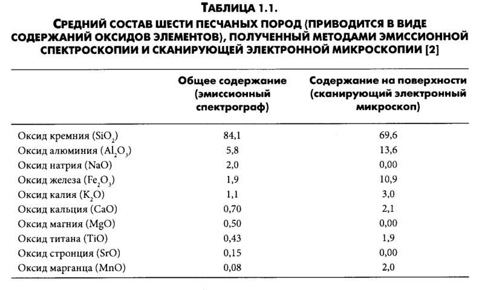</a></figure>
    <p>В первом столбце — общее содержание (эмиссионный спектрограф), во втором — содержание на поверхности (СЭМ). Видно, что внутри и на поверхности состав разный. Кремнезёма на поверхности меньше (69,6 против 84,1), а алюминия и железа заметно больше. Высокий алюминий на поверхности объясняют глинистыми минералами, которые есть почти в каждом песчанике. Натрий, магний и стронций СЭМ на поверхности не обнаружил.</p>
    <div class="tbl"><table>
      <thead><tr><th>Оксид</th><th>Общее содержание, %</th><th>На поверхности, %</th></tr></thead>
      <tbody>
        <tr><td>SiO<sub>2</sub></td><td>84,1</td><td>69,6</td></tr>
        <tr><td>Al<sub>2</sub>O<sub>3</sub></td><td>5,8</td><td>13,6</td></tr>
        <tr><td>Na<sub>2</sub>O</td><td>2,0</td><td>0,00</td></tr>
        <tr><td>Fe<sub>2</sub>O<sub>3</sub></td><td>1,9</td><td>10,9</td></tr>
        <tr><td>K<sub>2</sub>O</td><td>1,1</td><td>3,0</td></tr>
        <tr><td>CaO</td><td>0,70</td><td>2,1</td></tr>
        <tr><td>MgO</td><td>0,50</td><td>0,00</td></tr>
        <tr><td>TiO<sub>2</sub></td><td>0,43</td><td>1,9</td></tr>
        <tr><td>SrO</td><td>0,15</td><td>0,00</td></tr>
        <tr><td>MnO</td><td>0,08</td><td>2,0</td></tr>
      </tbody></table></div>
    <p class="meaning">Вывод: поверхность зёрен — это «лицо» породы для флюида. Она богаче глинами, железом и другими металлами, чем порода в среднем. Поэтому смачиваемость нельзя предсказать только по общему анализу.</p>
  </div>

  <h4>Из чего сделана земная кора</h4>
  <p>Состав шести песчаников хорошо согласуется со средним составом земной коры по тысячам образцов (Фостер). Всего восемь элементов дают до 99 % веса минералов твёрдой коры. Это кислород, кремний, алюминий, железо, кальций, натрий, магний и калий. Именно их оксиды — первые строки табл. 1.1.</p>

  <div class="table-note">
    <p class="tag">Табл. 1.2 · стр. 3</p>
    <p class="fig-title">Весовое и объёмное содержание основных элементов в земной коре</p><figure class="scan"><a href="img/tab-1-2.jpg" target="_blank" rel="noopener">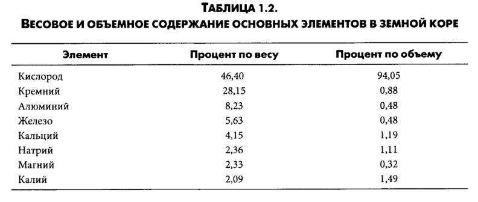</a></figure>
    <p>Кислород даёт 46,4 % веса, но 94,05 % объёма. Ионы кислорода большие, а остальные элементы «втиснуты» между ними. Большинство породообразующих минералов — это кремний и кислород плюс алюминий и один-два других элемента из таблицы.</p>
    <div class="tbl"><table>
      <thead><tr><th>Элемент</th><th>% по весу</th><th>% по объёму</th></tr></thead>
      <tbody>
        <tr><td>Кислород</td><td>46,40</td><td>94,05</td></tr>
        <tr><td>Кремний</td><td>28,15</td><td>0,88</td></tr>
        <tr><td>Алюминий</td><td>8,23</td><td>0,48</td></tr>
        <tr><td>Железо</td><td>5,63</td><td>0,48</td></tr>
        <tr><td>Кальций</td><td>4,15</td><td>1,19</td></tr>
        <tr><td>Натрий</td><td>2,36</td><td>1,11</td></tr>
        <tr><td>Магний</td><td>2,33</td><td>0,32</td></tr>
        <tr><td>Калий</td><td>2,09</td><td>1,49</td></tr>
      </tbody></table></div>
    <p class="meaning">Вывод: земная кора — это в основном «упаковка из кислорода» с вкраплениями кремния, алюминия и металлов. Поэтому главные породообразующие минералы — силикаты.</p>
  </div>

  <div class="analogy"><p class="tag">На пальцах</p><p>Представьте ящик, плотно набитый крупными воздушными шарами (кислород) и россыпью мелких горошин в щелях между ними (кремний, алюминий и остальные). По объёму ящик — «почти весь из шаров». А по весу горошины тоже заметны. Так же устроена кора.</p></div>

  <div class="table-note">
    <p class="tag">Табл. 1.4 · стр. 5–6</p>
    <p class="fig-title">Минеральный состав и описание минералов</p><figure class="scan"><a href="img/tab-1-4.jpg" target="_blank" rel="noopener">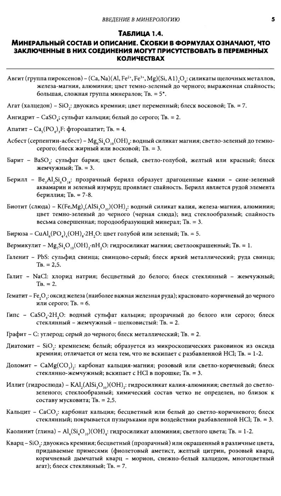</a></figure>
    <p>Большая справочная таблица: для каждого минерала дана формула, цвет, блеск и твёрдость (Тв.) по шкале Мооса. Скобки в формулах означают, что вещество может присутствовать в переменных количествах. Формулы сложных минералов в разных книгах чуть различаются, авторы выбрали наиболее частую запись. Ниже — выборка самых важных для коллекторов минералов.</p>
    <div class="tbl"><table>
      <thead><tr><th>Минерал</th><th>Формула</th><th>Что это</th><th>Тв.</th></tr></thead>
      <tbody>
        <tr><td>Кварц</td><td>SiO<sub>2</sub></td><td>двуокись кремния, стеклянный блеск; главный минерал песчаников</td><td>7</td></tr>
        <tr><td>Кальцит</td><td>CaCO<sub>3</sub></td><td>карбонат кальция; «кипит» (пузырьки) от разбавленной HCl</td><td>3</td></tr>
        <tr><td>Доломит</td><td>CaMg(CO<sub>3</sub>)<sub>2</sub></td><td>карбонат кальция-магния; вскипает с HCl только в порошке</td><td>3</td></tr>
        <tr><td>Ангидрит</td><td>CaSO<sub>4</sub></td><td>сульфат кальция, эвапорит</td><td>2</td></tr>
        <tr><td>Гипс</td><td>CaSO<sub>4</sub>·2H<sub>2</sub>O</td><td>водный сульфат кальция</td><td>2</td></tr>
        <tr><td>Галит</td><td>NaCl</td><td>каменная соль</td><td>2</td></tr>
        <tr><td>Каолинит</td><td>Al<sub>2</sub>(Si<sub>2</sub>O<sub>5</sub>)(OH)<sub>4</sub></td><td>глина, гидросиликат алюминия</td><td>1–2</td></tr>
        <tr><td>Иллит</td><td>близок к мусковиту</td><td>глина (гидрослюда)</td><td>2,5</td></tr>
        <tr><td>Монтмориллонит</td><td>(Ca,Na)(Al,Fe,Mg)<sub>2</sub>(Si,Al)<sub>4</sub>(OH)<sub>2</sub></td><td>смектитовая глина</td><td>1</td></tr>
        <tr><td>Хлорит</td><td>(Al,Fe,Mg)<sub>6</sub>(Al,Si)<sub>4</sub>O<sub>10</sub>(OH)<sub>8</sub></td><td>зелёная слюда, глина</td><td>3</td></tr>
        <tr><td>Калиевый полевой шпат (ортоклаз)</td><td>KAlSi<sub>3</sub>O<sub>8</sub></td><td>породообразующий, белый до розового</td><td>6</td></tr>
        <tr><td>Плагиоклаз</td><td>CaAl<sub>2</sub>Si<sub>2</sub>O<sub>8</sub> и NaAlSi<sub>3</sub>O<sub>8</sub></td><td>кальциевый и натриевый алюмосиликат</td><td>4</td></tr>
        <tr><td>Пирит</td><td>FeS<sub>2</sub></td><td>сульфид железа, яркий металлический блеск</td><td>6</td></tr>
        <tr><td>Гематит</td><td>Fe<sub>2</sub>O<sub>3</sub></td><td>оксид железа, главная железная руда</td><td>6</td></tr>
      </tbody></table></div>
    <p class="meaning">Вывод: для петрофизика особенно важны кварц, полевые шпаты, кальцит, доломит, глины и эвапориты. Остальные минералы (драгоценные камни, руды) в таблице для полноты. Диагностические признаки: цвет, блеск, твёрдость, спайность, реакция с кислотой.</p>
  </div>

  <div class="warn"><p class="tag">Частая ошибка</p><p>Путать твёрдость минерала и прочность породы. Твёрдость по Моосу — это способность минерала царапаться другим минералом. Она не говорит, насколько прочна порода целиком: это зависит ещё от цемента и пористости.</p></div>

  <h3>Магматические (изверженные) породы</h3>
  <p>Магматические породы (около 20 % всех пород) — продукт остывания расплавленной магмы. Она поднимается в земную кору из мантии. Их делят по скорости остывания.</p>
  <h4>Интрузивные и эффузивные</h4>
  <p>Интрузивные (плутонические) породы остыли медленно под поверхностью. Они крупнозернистые, их называют фанеритовыми. Три главных типа:</p>
  <ul>
    <li><b>гранит</b> — остывал медленно при высокой температуре, светлый, богат кремнезёмом;</li>
    <li><b>диорит</b> — промежуточный между гранитом и габбро;</li>
    <li><b>габбро</b> — остывало быстрее и при более низкой температуре на глубине, тёмное.</li>
  </ul>
  <p>Эффузивные (вулканогенные) породы остыли быстро на поверхности или рядом с ней. Они бедны кремнезёмом, зёрна у них слишком мелкие, чтобы разглядеть глазом (афанитовая, скрытокристаллическая структура). Это риолит (фельзит, светлый), андезит (промежуточный) и базальт (тёмный). К ним же относят вулканическое стекло: обсидиан и пемзу.</p>

  <div class="figure">
    <p class="tag">Рис. 1.1 · стр. 8</p>
    <p class="fig-title">Образование основных метаморфических пород</p>
    <p>Схема-дерево. Слева — «магматические породы», которые делятся на интрузивные крупнозернистые (гранит, диорит, габбро) и эффузивные мелкозернистые (риолит, андезит, базальт, стекло с обсидианом и пемзой). Справа — метаморфические породы. Стрелки показывают, какая магматическая порода в какую превращается.</p>
    <p>Как читать: идите по стрелке от магматической породы к метаморфической. Гранит и диорит дают гнейс (полосчатый полевой шпат). Габбро и диорит дают амфиболит (роговая обманка). Риолит даёт гнейс, кристаллический сланец (слюда) и аспидный сланец (мелкозернистый). Андезит даёт амфиболит, кристаллический и аспидный сланцы. Базальт даёт амфиболит и зелёный сланец (зелёная слюда). Стекло даёт кварц.</p>
    <p class="meaning">Вывод: метаморфическая порода «помнит» свою исходную породу, но имеет новую структуру. По тому, что за порода перед вами, можно восстановить, что с ней случилось.</p>
  </div>

  <h4>Ряд Боуэна</h4>
  <p>Минералы не кристаллизуются из магмы все сразу. Сначала выпадает один, к нему добавляется второй и так далее. Уже образовавшиеся кристаллы продолжают реагировать с расплавом, состав которого меняется. Если реакции доходят до конца, это равновесная кристаллизация. Если что-то мешает (кристаллы оседают на дно или уходят из расплава), идёт фракционная кристаллизация. Состав остатка тогда отличается от того, каким он был бы при равновесной.</p>
  <p>Боуэн в лабораторных опытах показал для медленно остывающей базальтовой магмы три серии:</p>
  <ol>
    <li><b>Непрерывная серия плагиоклазов.</b> Кристаллы непрерывно реагируют с расплавом и плавно меняют состав от кальциевого плагиоклаза к натриевому.</li>
    <li><b>Прерывистая серия железо-магниевых минералов:</b> оливин, пироксен, амфибол, биотит. Реакции идут только в определённые периоды остывания.</li>
    <li><b>Третья серия</b> начинается после того, как всё железо-магниевое и плагиоклазы образовались: сначала калиевые полевые шпаты, затем мусковит, последним кварц.</li>
  </ol>
  <p>Эти серии установлены для некоторых базальтовых магм. В других расплавах всё может быть иначе. Но они хорошо показывают главную идею: из одной магмы получаются породы разного состава.</p>
  <div class="analogy"><p class="tag">На пальцах</p><p>Это как остывающий солёный раствор в ванночке: сначала на дно выпадают одни кристаллы, потом другие. Если первые кристаллы убрать пинцетом, оставшийся раствор будет другим, чем если бы они остались. Так одна магма «расслаивается» на разные породы.</p></div>

  <h3>Метаморфические породы</h3>
  <p>Метаморфические породы (около 14 % всех пород) образуются из других пород в результате механических, термических и химических изменений. Исходной обычно служит магматическая порода.</p>
  <h4>Механические изменения</h4>
  <p>Около поверхности это расширение воды в трещинах и порах, корни растений, роющие животные. При глубоком захоронении (погружение, осадконакопление) растут давление вышележащих пород и температура. Тектонические движения создают касательные напряжения. Порода трескается (трещины) или рвётся со сдвигом больших масс (нарушения, разломы).</p>
  <div class="formula">
    <p class="tag">Формула: давление вышележащих пород</p>
    \[ P \approx G \cdot h,\qquad G \approx 21\ \text{кПа/м} \]
    <dl class="vars">
      <dt>\(P\)</dt><dd>давление вышележащей толщи (горное давление), кПа</dd>
      <dt>\(G\)</dt><dd>градиент давления, около 21 кПа на каждый метр глубины</dd>
      <dt>\(h\)</dt><dd>глубина, м</dd>
    </dl>
    <p class="meaning">Смысл: давление растёт примерно линейно с глубиной, так как сверху лежит всё больший вес пород. Это сжимает породу, уменьшает поры и меняет её свойства. Подробнее о влиянии напряжений — в главе 9.</p>
  </div>
  <div class="example">
    <p class="tag">Пример</p>
    <p>Какое давление вышележащих пород на глубине 3000 м? Подставляем: \(P = 21 \cdot 3000 = 63\,000\) кПа \(= 63\) МПа. То есть примерно 630 атмосфер. Вот почему при глубоком захоронении порода заметно уплотняется.</p>
  </div>

  <h4>Химический метаморфизм</h4>
  <p>Высокое давление, температура и вода вызывают перераспределение элементов и рост новых минералов. Новые кристаллы растут в направлениях наименьшего напряжения. Поэтому получаются слоистые породы с полосами зёрен.</p>
  <ul>
    <li>Гранит превращается в <b>гнейс</b> — слоистый гранит с крупными полосчатыми кристаллами полевого шпата.</li>
    <li>Габбро превращается в <b>амфиболит</b>, основной компонент которого — роговая обманка.</li>
    <li>Риолит даёт три типа: гнейс, кристаллический (слюдяной) сланец и аспидный (кровельный) сланец — мелкозернистую гладкую породу.</li>
    <li>Базальт даёт амфиболит и зелёный сланец.</li>
  </ul>
  <p>Региональные пояса магматических и метаморфических пород часто идут параллельно краям континентов. Пример: гранитное ядро Аппалачей на востоке США идёт вдоль восточного побережья, а Сьерра-Невада — вдоль западного.</p>
  <h4>Могут ли они быть коллекторами</h4>
  <p>Магматические и метаморфические породы не считают нефтематеринскими. Иногда они всё же служат коллекторами: когда сильно трещиноваты или стали пористыми из-за выветривания на поверхности ещё до захоронения, а потом тектоника создала ловушку для нефти. Трещиноватым породам посвящена глава 8.</p>

  <h3>Осадочные породы</h3>
  <p>Осадочные породы составляют около 66 % всех пород. Они — главный объект петрофизики и нефтепромыслового дела. Их можно считать результатом разрушения других пород. Классификация идёт по происхождению (механическое, химическое, биологическое) и по составу.</p>

  <div class="table-note">
    <p class="tag">Табл. 1.3 · стр. 4</p>
    <p class="fig-title">Список основных осадочных пород</p><figure class="scan"><a href="img/tab-1-3.jpg" target="_blank" rel="noopener">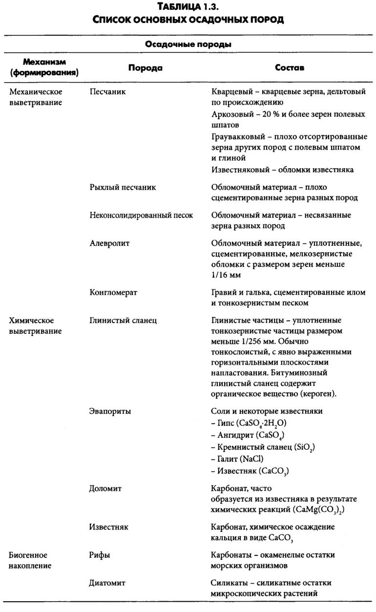</a></figure>
    <p>Три столбца: механизм образования, порода, состав. Таблица связывает происхождение породы с её видом.</p>
    <div class="tbl"><table>
      <thead><tr><th>Механизм</th><th>Порода</th><th>Состав</th></tr></thead>
      <tbody>
        <tr><td rowspan="5">Механическое выветривание</td><td>Песчаник</td><td>кварцевый (кварцевые зёрна), аркозовый (20 % и более полевых шпатов), граувакковый (плохо отсортированные зёрна пород с полевым шпатом и глиной), известняковый (обломки известняка)</td></tr>
        <tr><td>Рыхлый песчаник</td><td>плохо сцементированные зёрна разных пород</td></tr>
        <tr><td>Неконсолидированный песок</td><td>несвязанные зёрна разных пород</td></tr>
        <tr><td>Алевролит</td><td>уплотнённые, сцементированные мелкие обломки меньше 1/16 мм</td></tr>
        <tr><td>Конгломерат</td><td>гравий и галька, сцементированные илом и тонким песком</td></tr>
        <tr><td rowspan="4">Химическое выветривание</td><td>Глинистый сланец</td><td>уплотнённые частицы меньше 1/256 мм, тонкослоистый; битуминозный сланец содержит кероген</td></tr>
        <tr><td>Эвапориты</td><td>соли и некоторые известняки: гипс, ангидрит, кремнистый сланец, галит, известняк</td></tr>
        <tr><td>Доломит</td><td>карбонат CaMg(CO<sub>3</sub>)<sub>2</sub>, часто образуется из известняка</td></tr>
        <tr><td>Известняк</td><td>карбонат, химическое осаждение CaCO<sub>3</sub></td></tr>
        <tr><td rowspan="2">Биогенное накопление</td><td>Рифы</td><td>карбонаты — окаменелые остатки морских организмов</td></tr>
        <tr><td>Диатомит</td><td>силикатные остатки микроскопических растений</td></tr>
      </tbody></table></div>
    <p class="meaning">Вывод: от происхождения зависит всё — состав, структура, пористость. Механические породы — это обломки, химические — осадки из раствора, биогенные — остатки организмов.</p>
  </div>

  <h4>Механическое выветривание</h4>
  <p>Оно дробит большие массы пород на обломки. Главный механизм — расширение воды при замерзании: объём льда больше объёма воды на 9 %. Вода, замерзая в трещинах и порах, создаёт огромные напряжения и раскалывает камень. Ещё один механизм — подъём ранее захороненной породы. Вышележащие отложения размываются, давление снимается, верхние слои расширяются, трескаются и разбиваются на блоки.</p>
  <div class="formula">
    <p class="tag">Формула: расширение воды при замерзании</p>
    \[ V_{\text{лёд}} \approx 1{,}09\, V_{\text{вода}} \]
    <dl class="vars">
      <dt>\(V_{\text{лёд}}\)</dt><dd>объём льда, м³ (или л)</dd>
      <dt>\(V_{\text{вода}}\)</dt><dd>объём воды до замерзания, в тех же единицах</dd>
    </dl>
    <p class="meaning">Смысл: поры и трещины, заполненные водой, при замерзании получают на 9 % больше «жильцов», чем у них места. Давит изнутри, порода трескается. Это объясняет, почему морозное выветривание так эффективно.</p>
  </div>
  <div class="example">
    <p class="tag">Пример</p>
    <p>В трещину налили 100 см³ воды, и она замёрзла. Объём льда \(100 \cdot 1{,}09 = 109\) см³. Лишние 9 см³ создают огромное давление на стенки трещины.</p>
  </div>
  <p>В итоге получаются обломки размерами с булыжник, гальку, гравий, а также зёрна песка, алеврита и глины. Они остаются на месте или уносятся ветром и водой, чтобы войти в конгломераты, песчаники и другие породы (табл. 1.3).</p>

  <h4>Химическое выветривание</h4>
  <p>Главный агент — вода. Механическое выветривание даёт большую поверхность для контакта с водой, и тогда химические реакции идут быстрее. Растворённые в воде вещества, например углекислота, вступают в реакции с породой и разрушают её. Один из процессов — выщелачивание: компоненты породы переходят в водный раствор. Некоторые минералы реагируют с водой напрямую и образуют гидраты. Углекислота возникает при растворении биогенного и атмосферного CO<sub>2</sub> в воде. Полевые шпаты реагируют с углекислотой и водой и дают глины, кремнезём и карбонаты.</p>
  <div class="formula">
    <p class="tag">Формула: выветривание калиевого полевого шпата</p>
    \[ 2\,\mathrm{KAlSi_3O_8} + \mathrm{H_2CO_3} + \mathrm{H_2O} \to \mathrm{Al_2Si_2O_5(OH)_4} + 4\,\mathrm{SiO_2} + \mathrm{K_2CO_3} \]
    <dl class="vars">
      <dt>\(\mathrm{KAlSi_3O_8}\)</dt><dd>калиевый полевой шпат (исходный минерал)</dd>
      <dt>\(\mathrm{H_2CO_3}\)</dt><dd>углекислота (CO<sub>2</sub> + вода)</dd>
      <dt>\(\mathrm{Al_2Si_2O_5(OH)_4}\)</dt><dd>каолинит — глинистый минерал</dd>
      <dt>\(\mathrm{SiO_2}\)</dt><dd>кремнезём</dd>
      <dt>\(\mathrm{K_2CO_3}\)</dt><dd>карбонат калия, уходит в раствор</dd>
    </dl>
    <p class="meaning">Смысл: из твёрдого полевого шпата получается глина плюс кремнезём плюс растворённая соль. Так в песчаниках появляются глинистые минералы, а они потом сильно влияют на проницаемость и смачивание.</p>
  </div>
  <p>Проверка баланса: слева 2 атома K, 2 Al, 6 Si; справа 2 Al и 2 Si (в глине) плюс 4 Si (в кремнезёме) = 6 Si, и 2 K в карбонате калия. Всё сходится.</p>

  <h4>Тектоника, ловушки и свойства</h4>
  <p>Осадки постоянно меняются из-за тектоники. В зонах погружения они захораниваются, в других местах поднимаются горы. Столкновения плит создают складки и разрывы в больших блоках осадочных пород. Тектоника создаёт естественные ловушки, куда собираются углеводороды, мигрирующие из материнских пород.</p>
  <p>Осадконакопление, погружение, поднятие, уплотнение, цементация и структурные изменения идут непрерывно. Они неразрывно связаны с физическими свойствами пород, миграцией и накоплением нефти. Плотность, скорость звука, сжимаемость и смачиваемость зависят от минерального состава. Значит, состав породы и её петрофизические свойства тесно связаны.</p>

  <h4>Алевролиты и глины</h4>
  <p>Зёрна кварца очень прочны. Они не дробятся дальше, но переносятся водой и ветром и сортируются по размеру. Крупные накапливаются в виде песчаников. Тонкие зёрна (средний размер около 15 мкм) смешиваются с глиной и органикой и переносятся во взвеси в бурных потоках. Осаждаются они в спокойных местах: поймах рек, озёрах, на континентальных шельфах. Приливно-отливные течения сортируют зёрна ещё раз, формируя однородные мощные слои. Донные животные роют норы и перемешивают ил, пока глубина захоронения не станет слишком большой.</p>
  <p>Потом ил уплотняется и подвергается диагенезу: глинистые минералы реагируют с водой и меняют состав. Получаются алевролиты и глины. Они встречаются повсюду и составляют до двух третей осадочных толщ. Если уплотнённый ил залегает над коллектором, он служит покрышкой, то есть закрывает ловушку для нефти и газа.</p>
  <p>Цвет многое говорит о происхождении:</p>
  <ul>
    <li>серый и чёрный: ил с органикой, отложенный без кислорода (болота). Такие породы часто нефтематеринские;</li>
    <li>красный: ил окислялся при захоронении, органика сгорела, железо превратилось в Fe<sub>2</sub>O<sub>3</sub>;</li>
    <li>коричневый: частичное окисление, образовался гётит FeO(OH);</li>
    <li>бежевый до зелёного: железа нет, цвет дают сами глинистые минералы (биотит, хлорит, иллит).</li>
  </ul>
  <div class="analogy"><p class="tag">На пальцах</p><p>Ржавчина на гвозде красно-бурая, потому что железо соединилось с кислородом. Так же краснеют илы: красный цвет породы означает, что при захоронении был кислород. Серый и чёрный цвет — наоборот, кислорода не было, и органика сохранилась. Цвет породы — «этикетка» условий её рождения.</p></div>

  <h4>Песчаники</h4>
  <p>Зёрна кварца и обломки разных пород, образованные при разрушении магматических, метаморфических и осадочных пород, могут переноситься и позже превратиться в песчаник. Когда осадок накопился в бассейне, сверху отлагаются новые слои. Под их весом идёт уплотнение. Превращение в породу называется литификацией: между зёрнами из поровой воды выпадает цемент. Главные цементы — кремнезём, кальцит, оксиды железа и глина. Состав песчаника зависит от источника материала и от обстановки осадконакопления.</p>

  <div class="figure">
    <p class="tag">Рис. 1.2 · стр. 12</p>
    <p class="fig-title">Основные классы песчаников по составу (классификация Теодоровича)</p><figure class="scan"><a href="img/fig-1-2.jpg" target="_blank" rel="noopener">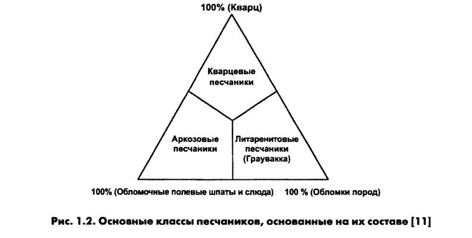</a></figure>
    <p>Треугольная диаграмма. Вершины: 100 % кварца (сверху), 100 % обломочных полевых шпатов и слюды (слева внизу), 100 % обломков пород (справа внизу). Внутри треугольника три поля.</p>
    <p>Как читать: найдите на диаграмме точку по составу. Верхнее поле — кварцевые песчаники. Нижнее левое — аркозовые (много полевого шпата). Нижнее правое — литаренитовые, они же граувакки (много обломков пород).</p>
    <p class="meaning">Вывод: схема охватывает большинство терригенных (обломочных) коллекторов нефти и газа. Теодорович и другие разработали более дробные деления, они обобщены у Чилингаряна и Вулфа.</p>
  </div>

  <h4>Слоистость и анизотропия</h4>
  <p>Отличительная черта песчаников — плоскости напластования. Они видны как тёмные горизонтальные линии и отражают смену условий осадконакопления. Из-за слоистости течение вдоль слоёв отличается от течения поперёк. Вертикальная проницаемость (перпендикулярно напластованию) может быть на 50–75 % ниже горизонтальной. Поэтому и в экспериментах, и в численном моделировании нужно учитывать анизотропию по проницаемости.</p>
  <div class="example">
    <p class="tag">Пример</p>
    <p>Горизонтальная проницаемость пласта \(k_h = 100\) мД. Вертикальная меньше на 50–75 %. Значит, \(k_v\) лежит от \(100 \cdot (1-0{,}75) = 25\) мД до \(100 \cdot (1-0{,}50) = 50\) мД. Отношение \(k_v/k_h\) — от 0,25 до 0,5.</p>
  </div>
  <p>Песчаники из ветровых дюн имеют плоскости напластования под разными углами (косая слоистость). Она бывает также от ряби и завихрений в воде. Осадки, принесённые на континентальные шельфы реками, сортируются волнами и течениями. Такие породы часто довольно однородны по свойствам даже в масштабе региона. Мощность отложений может достигать нескольких километров, если зона погружалась всё время осадконакопления.</p>

  <h4>Карбонаты</h4>
  <p>Карбонатные породы образуются в мелком море. Там живут животные, растения и бактерии со скелетом из извести (CaO). Их скелеты и раковины образуют многие карбонатные породы. Кроме того, кальцит может осаждаться химически. В воде с углекислотой он растворим. Если углекислоты становится меньше (изменилась среда или вода поднялась на меньшую глубину), кальцит выпадает в осадок, так как в обычной воде он практически нерастворим.</p>
  <p>Три основных класса известняков (обычно биогенных):</p>
  <ul>
    <li><b>оолитовый известняк</b> — из мелких сферических зёрен кальцита, обволакивающих органические остатки или обломки раковин;</li>
    <li><b>мел</b> — накопление скелетов микроскопических животных;</li>
    <li><b>ракушечник</b> — окаменелые остатки живых организмов; известняк, почти целиком из таких обломков, сцементированных известковым илом.</li>
  </ul>
  <h4>Доломит</h4>
  <p>Доломит образуется там, где движение морской воды ограничено сушей. В замкнутой области вода испаряется, соли концентрируются, магния становится больше. Магний реагирует с уже осевшим кальцитом. Иногда известняк превращается в доломит и позже, когда сквозь поры и трещины просачивается вода с магнием.</p>
  <div class="formula">
    <p class="tag">Формула: доломитизация</p>
    \[ 2\,\mathrm{CaCO_3} + \mathrm{Mg^{2+}} \to \mathrm{CaMg(CO_3)_2} + \mathrm{Ca^{2+}} \]
    <dl class="vars">
      <dt>\(\mathrm{CaCO_3}\)</dt><dd>кальцит (известняк)</dd>
      <dt>\(\mathrm{Mg^{2+}}\)</dt><dd>ион магния из воды</dd>
      <dt>\(\mathrm{CaMg(CO_3)_2}\)</dt><dd>доломит</dd>
      <dt>\(\mathrm{Ca^{2+}}\)</dt><dd>ион кальция, уходящий в раствор</dd>
    </dl>
    <p class="meaning">Смысл: магний «заменяет» часть кальция в кристалле. Из-за этого известняк становится доломитом. Пористые карбонаты, образовавшиеся при химическом и биогенном осаждении CaCO<sub>3</sub>, составляют значительную долю коллекторов нефти и газа.</p>
  </div>
  <h4>Эвапориты</h4>
  <p>Эвапориты — соли, осаждённые в изолированных морских бассейнах при испарении воды. Примеры современных водоёмов: Большое Солёное озеро в штате Юта (США) и Мёртвое море. С эвапоритами связаны ангидрит (CaSO<sub>4</sub>), галит (NaCl), сильвин (KCl) и другие соли. У них очень низкая, до нулевой, пористость, зёрна образуют слитную структуру.</p>
  <div class="analogy"><p class="tag">На пальцах</p><p>Если оставить солёную воду в блюдце на солнце, вода испарится, а на дне останется корка соли. Эвапорит — такая же корка, только размером с пласт. Она плотная, без пор, и потому не коллектор, а скорее хорошая покрышка.</p></div>

  <div class="table-note">
    <p class="tag">Табл. 1.5 · стр. 14</p>
    <p class="fig-title">Общее описание пород главы 1</p><figure class="scan"><a href="img/tab-1-5.jpg" target="_blank" rel="noopener">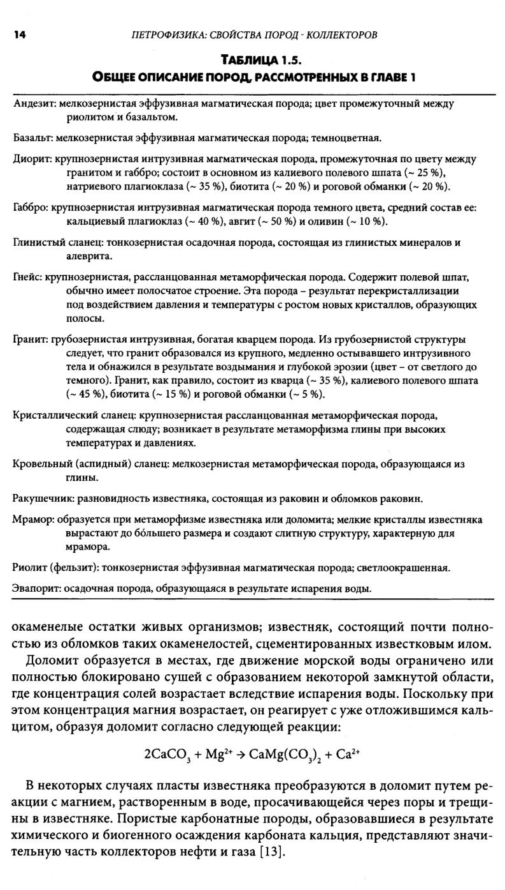</a></figure>
    <p>Справочная таблица с краткими описаниями пород. Самые полезные из них собраны ниже.</p>
    <div class="tbl"><table>
      <thead><tr><th>Порода</th><th>Тип</th><th>Описание</th></tr></thead>
      <tbody>
        <tr><td>Гранит</td><td>интрузивная магматическая</td><td>грубозернистый, богат кварцем; ~35 % кварца, ~45 % калиевого полевого шпата, ~15 % биотита, ~5 % роговой обманки</td></tr>
        <tr><td>Диорит</td><td>интрузивная магматическая</td><td>промежуточный по цвету; ~25 % калиевого шпата, ~35 % Na-плагиоклаза, ~20 % биотита, ~20 % роговой обманки</td></tr>
        <tr><td>Габбро</td><td>интрузивная магматическая</td><td>тёмный; ~40 % Ca-плагиоклаза, ~50 % авгита, ~10 % оливина</td></tr>
        <tr><td>Риолит (фельзит), андезит, базальт</td><td>эффузивные</td><td>мелкозернистые; цвет от светлого к тёмному</td></tr>
        <tr><td>Гнейс</td><td>метаморфическая</td><td>крупнозернистый, рассланцованный, с полевым шпатом, полосчатый</td></tr>
        <tr><td>Кристаллический сланец</td><td>метаморфическая</td><td>крупнозернистый, содержит слюду; из глины при высоких T и P</td></tr>
        <tr><td>Кровельный (аспидный) сланец</td><td>метаморфическая</td><td>мелкозернистый, образуется из глины</td></tr>
        <tr><td>Мрамор</td><td>метаморфическая</td><td>из известняка или доломита; мелкие кристаллы вырастают и дают слитную структуру</td></tr>
        <tr><td>Глинистый сланец</td><td>осадочная</td><td>тонкозернистый, глинистые минералы и алеврит</td></tr>
        <tr><td>Ракушечник</td><td>осадочная</td><td>известняк из раковин и их обломков</td></tr>
        <tr><td>Эвапорит</td><td>осадочная</td><td>результат испарения воды</td></tr>
      </tbody></table></div>
    <p class="meaning">Вывод: главные породообразующие минералы — полевые шпаты, оливин, пироксен, амфибол, слюда и кварц. Почти все грубозернистые породы содержат полевые шпаты (кальциевый, калиевый и натриевый алюмосиликаты).</p>
  </div>

  <h3>Свойства частиц осадочных пород</h3>
  <p>Есть много тестов, дающих количественные и качественные данные об осадочных породах. Все они перечислены в табл. 1.6 и разобраны в разных главах книги (ищите по предметному указателю). Анализы на частицах и зёрнах выполняют на измельчённых пробах: породу дробят дробилкой или осторожно разбивают молотком. Остальные анализы делают на образцах керна. Для изучения потока вдоль слоёв образцы вырезают параллельно плоскостям напластования. Вертикальный поток изучают, чтобы анализировать гравитационное дренирование нефтяного пласта и вертикальную диффузию газа, а также для математического моделирования. Современные методы изучения микростроения описаны у Черипи и др. и у Талукдара и Торсэтера.</p>

  <div class="table-note">
    <p class="tag">Табл. 1.6 · стр. 15</p>
    <p class="fig-title">Перечень методов определения характеристик породы</p><figure class="scan"><a href="img/tab-1-6.jpg" target="_blank" rel="noopener">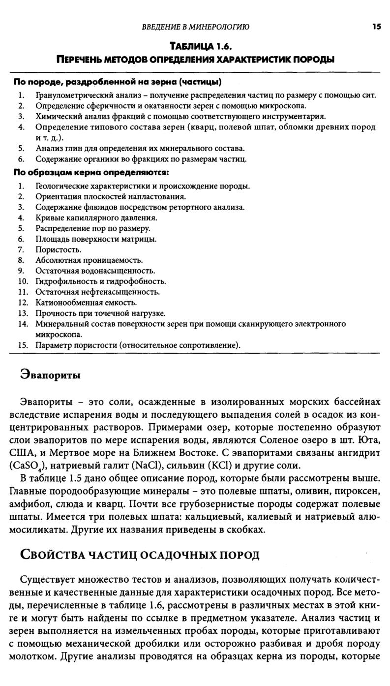</a></figure>
    <p>Таблица разделена на две части. Первая — что измеряют на раздробленной породе (на зёрнах). Вторая — что измеряют на образцах керна.</p>
    <p><b>По раздробленной породе:</b> гранулометрический (ситовой) анализ — распределение частиц по размеру; сферичность и окатанность под микроскопом; химический анализ фракций; типовой состав зёрен (кварц, полевой шпат, обломки пород); анализ глин (минеральный состав); содержание органики по фракциям.</p>
    <p><b>По керну:</b> геологические характеристики и происхождение; ориентация плоскостей напластования; содержание флюидов (ретортный анализ); кривые капиллярного давления; распределение пор по размеру; площадь поверхности матрицы; пористость; абсолютная проницаемость; остаточная водонасыщенность; гидрофильность и гидрофобность; остаточная нефтенасыщенность; катионообменная ёмкость; прочность при точечной нагрузке; минеральный состав поверхности зёрен (СЭМ); параметр пористости (относительное сопротивление).</p>
    <p class="meaning">Вывод: это «меню» всей книги. Каждый пункт позже получит свою главу или раздел.</p>
  </div>

  <h4>Откуда берутся осадочные частицы</h4>
  <p>Материал осадочных пород поступает из двух источников:</p>
  <ol>
    <li><b>Обломочный (терригенный)</b> — дискретные частицы разных размеров, возникающие при выветривании существующих пород. Они образуют слои неконсолидированных песков, песчаников и глин.</li>
    <li><b>Хемогенный</b> — неорганические соединения, выпавшие из воды. Их делят на карбонаты и эвапориты.</li>
  </ol>
  <p>Пока обломки доносит до бассейна, зёрна уменьшаются и окатываются. Из-за формы они не могут упаковаться без пустот, поэтому между зёрнами остаётся поровое пространство.</p>
  <p>Хемогенные осадки образуются из солей растворимых катионов: натрия, калия, магния, кальция и кремния. Они дают эвапориты с очень низкой, до нулевой, пористостью. Хемогенный материал часто служит цементом песчаника, образуя тонкие отложения между зёрнами.</p>

  <h4>Размер частиц и ф-шкала</h4>
  <p>Размеры осадочных частиц — от 1 мкм и меньше до валунов в несколько метров. Класс размера говорит об источнике частицы, режиме транспорта и твёрдости. Угловатые обломки лежат недалеко от источника. Гладкая сферическая форма означает, что частицу долго катали водные потоки. Песок, алеврит и глина уходят далеко с водой и ветром. Мягкие карбонаты при переносе быстро истираются в порошок, потом растворяются и осаждаются из концентрированных растворов.</p>

  <div class="table-note">
    <p class="tag">Табл. 1.7 · стр. 16</p>
    <p class="fig-title">Стандартные классы размеров частиц осадков (шкала Уэнтворта)</p><figure class="scan"><a href="img/tab-1-7.jpg" target="_blank" rel="noopener">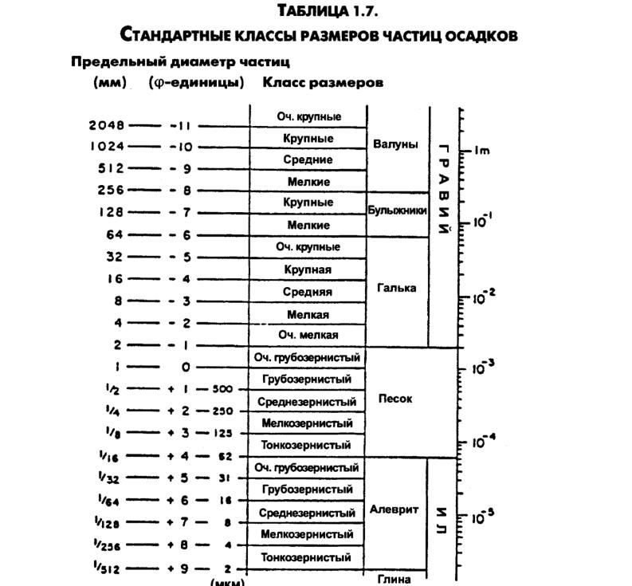</a></figure>
    <p>Столбцы: предельный диаметр в мм, ф-единицы, название класса. Размеры соседних классов различаются ровно в два раза (геометрическая шкала). Справа есть шкала в метрах и долях метра для грубых классов.</p>
    <div class="tbl"><table>
      <thead><tr><th>Диаметр, мм</th><th>ф</th><th>Класс</th></tr></thead>
      <tbody>
        <tr><td>2048 — 256</td><td>−11 … −8</td><td>валуны (очень крупные, крупные, средние, мелкие)</td></tr>
        <tr><td>256 — 64</td><td>−8 … −6</td><td>булыжники (крупные, мелкие)</td></tr>
        <tr><td>64 — 2</td><td>−6 … −1</td><td>галька (от очень крупной до очень мелкой); валуны, булыжники и галька вместе — гравий</td></tr>
        <tr><td>2 — 1</td><td>−1 … 0</td><td>очень грубозернистый песок</td></tr>
        <tr><td>1 — 1/2 (500 мкм)</td><td>0 … +1</td><td>грубозернистый песок</td></tr>
        <tr><td>1/2 — 1/4 (250 мкм)</td><td>+1 … +2</td><td>среднезернистый песок</td></tr>
        <tr><td>1/4 — 1/8 (125 мкм)</td><td>+2 … +3</td><td>мелкозернистый песок</td></tr>
        <tr><td>1/8 — 1/16 (62 мкм)</td><td>+3 … +4</td><td>тонкозернистый песок</td></tr>
        <tr><td>1/16 — 1/32 (31 мкм)</td><td>+4 … +5</td><td>очень грубозернистый алеврит</td></tr>
        <tr><td>1/32 — 1/64 (16 мкм)</td><td>+5 … +6</td><td>грубозернистый алеврит</td></tr>
        <tr><td>1/64 — 1/128 (8 мкм)</td><td>+6 … +7</td><td>среднезернистый алеврит</td></tr>
        <tr><td>1/128 — 1/256 (4 мкм)</td><td>+7 … +8</td><td>мелкозернистый алеврит</td></tr>
        <tr><td>1/256 — 1/512 (2 мкм)</td><td>+8 … +9</td><td>тонкозернистый алеврит</td></tr>
        <tr><td>меньше 1/256 мм (около 4 мкм)</td><td>&gt; +8</td><td>глина (пелит)</td></tr>
      </tbody></table></div>
    <p class="meaning">Вывод: запомнить ориентиры. Песок — от 2 мм до 1/16 мм (62 мкм). Алеврит — от 1/16 до 1/256 мм. Глина — мельче 1/256 мм. Гравий — крупнее 2 мм. Эти границы одинаково используют в геологии и в петрофизике.</p>
  </div>

  <p>Классификация по ф-диаметру основана на геометрической шкале, в которой соседние классы различаются в два раза. Шкала ф удобна для графиков: размеры растут геометрически, а ф — равномерно, и можно строить на обычной миллиметровке. Для этого берут отрицательный логарифм диаметра по основанию 2.</p>
  <div class="formula">
    <p class="tag">Формула (1.1): ф-шкала размера зёрен</p>
    \[ \varphi = -\log_2 d = -3{,}322\,\log_{10} d \]
    <dl class="vars">
      <dt>\(\varphi\)</dt><dd>ф-диаметр, безразмерная величина</dd>
      <dt>\(d\)</dt><dd>диаметр зерна, мм</dd>
      <dt>\(3{,}322\)</dt><dd>переходной множитель, равный \(1/\log_{10}2\)</dd>
    </dl>
    <p class="meaning">Смысл: чем мельче зерно, тем больше ф. Размер 1 мм даёт \(\varphi = 0\). Каждое уменьшение размера вдвое прибавляет единицу к ф. Обратный расчёт: \(d = 2^{-\varphi}\) мм. Крупные зёрна имеют отрицательные ф (гравий).</p>
  </div>
  <div class="example">
    <p class="tag">Пример</p>
    <p>Найти ф для зёрен 2 мм, 0,25 мм и 0,0625 мм (1/16 мм).</p>
    <p>2 мм: \(\varphi = -\log_2 2 = -1\). 0,25 мм: \(\varphi = -\log_2 (1/4) = +2\). 0,0625 мм: \(\varphi = -\log_2(1/16) = +4\). Эти же значения видны в табл. 1.7: границы гравий/песок (−1), средне-/мелкозернистый песок (+2), песок/алеврит (+4).</p>
    <p>Обратно: \(\varphi = 3\) даёт \(d = 2^{-3} = 0{,}125\) мм = 125 мкм, то есть граница мелко- и тонкозернистого песка.</p>
  </div>
  <div class="warn"><p class="tag">Частая ошибка</p><p>Забыть минус. Если диаметр меньше 1 мм, то \(\log_2 d\) отрицателен, а ф положителен. Если диаметр больше 1 мм, ф отрицателен. Ещё ошибка: путать \(\log_{10}\) и \(\log_2\) и забывать множитель 3,322.</p></div>

  <h4>Гранулометрический состав: кумулятивная кривая и гистограмма</h4>
  <p>Распределение частиц по размерам показывают как кумулятивную кривую. Она показывает вес зёрен, задержанных на сите данного размера («процент крупнее»), или прошедших через сито («процент мельче»). Для удобства её часто рисуют и в виде гистограммы, которую проще анализировать глазом. Авторы сравнивают два песчаника: Береа (обнажение в Амхерсте, штат Огайо) и грубозернистый Элджин (обнажение в Кливленде, штат Оклахома).</p>

  <div class="figure">
    <p class="tag">Рис. 1.3 · стр. 18</p>
    <p class="fig-title">Гистограмма и кумулятивная кривая размеров зёрен песчаника Береа (пористость 0,219; проницаемость 363 мД)</p><figure class="scan"><a href="img/fig-1-3.jpg" target="_blank" rel="noopener">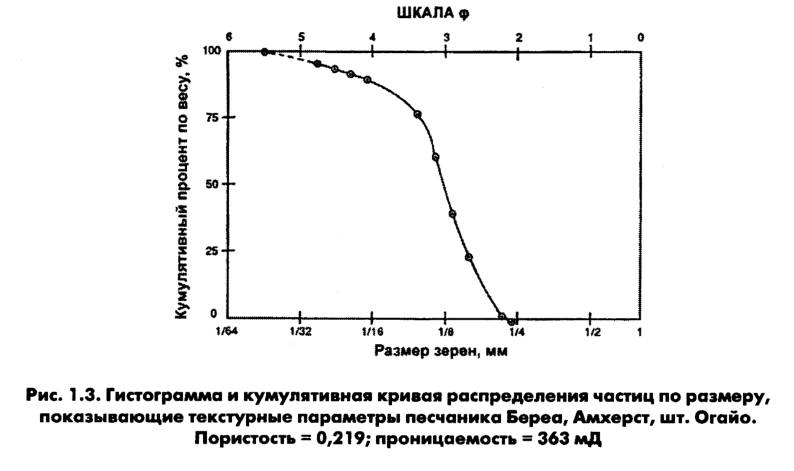</a></figure>
    <p>Два графика друг под другом с общей осью размеров. Сверху гистограмма: по вертикали вес фракции в процентах, по горизонтали классы от среднезернистого алеврита до среднезернистого песка. Ниже — кумулятивная кривая: по вертикали кумулятивный процент по весу (0–100), по горизонтали размер зёрен в мм (от 1/64 до 1) и сверху шкала ф (от 6 до 0).</p>
    <p>Как читать: на гистограмме высокие столбики (около 15–22 %) приходятся на мелкозернистый и тонкозернистый песок. Есть «хвост» из алеврита (малые столбики слева). Кумулятивная кривая крутая в области примерно 1/8–1/4 мм: именно там сосредоточена основная масса зёрен. Кривая приходит к 100 % у 1/64 мм и к 0 % около 1/4 мм: зёрен крупнее 1/4 мм почти нет.</p>
    <p class="meaning">Вывод: Береа — мелкозернистый, довольно хорошо отсортированный песчаник. Крутая кривая означает узкий диапазон размеров. Проницаемость 363 мД при пористости 0,219.</p>
  </div>

  <div class="figure">
    <p class="tag">Рис. 1.4 · стр. 19</p>
    <p class="fig-title">Гистограмма и кумулятивная кривая размеров зёрен песчаника Элджин (пористость 0,240; проницаемость 3484 мД)</p><figure class="scan"><a href="img/fig-1-4.jpg" target="_blank" rel="noopener">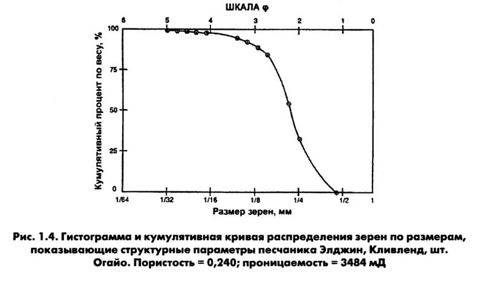</a></figure>
    <p>График устроен так же, как рис. 1.3: гистограмма сверху, кумулятивная кривая снизу, те же оси (мм и шкала ф; классы от алеврита до грубозернистого песка). У Элджина больше зёрен в крупных классах, поэтому его кривая смещена к более крупным размерам.</p>
    <p>Как читать: сравнивайте с рис. 1.3. Сдвиг массы зёрен вправо (к более крупным размерам) означает более крупные поры.</p>
    <p class="meaning">Вывод: пористость двух песчаников отличается не сильно (0,219 и 0,240), а проницаемость Элджина примерно в 10 раз выше (3484 против 363 мД). Причина — относительно много крупных зёрен и, значит, крупных пор. Пористость говорит «сколько места», проницаемость — «насколько широки каналы».</p>
  </div>

  <div class="example">
    <p class="tag">Пример</p>
    <p>Во сколько раз проницаемость Элджина выше, чем Береа? \(3484/363 \approx 9{,}6\), то есть почти в 10 раз. А пористость? \(0{,}240/0{,}219 \approx 1{,}10\), всего на 10 % больше. Вывод: пористость почти одинакова, а проницаемость различается на порядок. По одной пористости проницаемость не предсказать.</p>
  </div>
  <div class="analogy"><p class="tag">На пальцах</p><p>Два мешка: один набит горохом, другой дробью. Свободного места (пористость) в них примерно поровну. Но между горошинами промежутки широкие, и вода проходит быстро, а между дробинками узкие, и вода едва сочится. Это и есть разница между Элджином и Береа.</p></div>

  <h4>Сферичность и окатанность</h4>
  <p>Эти два свойства влияют на петрофизику пород и помогают объяснить различия между породами. Например, они влияют на уплотнение и помогают объяснить, почему породы с одинаковой историей имеют разные пористость и проницаемость.</p>
  <p><b>Сферичность</b> — мера того, насколько форма частицы похожа на шар. Это мера близости трёх взаимно перпендикулярных диаметров частицы друг к другу. Выражается через отношение площадей поверхности частицы и шара того же объёма.</p>
  <div class="formula">
    <p class="tag">Формула: сферичность</p>
    \[ \Psi = \frac{A_{\text{шара}}}{A_{\text{частицы}}} \]
    <dl class="vars">
      <dt>\(\Psi\)</dt><dd>сферичность, безразмерная, от 0 до 1</dd>
      <dt>\(A_{\text{шара}}\)</dt><dd>площадь поверхности шара того же объёма, что и частица, мм²</dd>
      <dt>\(A_{\text{частицы}}\)</dt><dd>реальная площадь поверхности частицы, мм²</dd>
    </dl>
    <p class="meaning">Смысл: у шара сферичность равна 1. Чем более вытянута или плоская частица, тем больше её площадь поверхности при том же объёме и тем меньше \(\Psi\). В книге отношение названо словами «частица к сфере»; в общепринятом виде оно записывается так, как здесь, чтобы значение не превышало 1.</p>
  </div>
  <div class="example">
    <p class="tag">Пример</p>
    <p>Сферичность кубика со стороной \(a\). Объём \(a^3\). Шар такого же объёма имеет радиус \(r\): \(\tfrac43\pi r^3 = a^3\), откуда \(r = a\,(3/4\pi)^{1/3} \approx 0{,}620a\). Площадь шара \(4\pi r^2 \approx 4{,}836a^2\). Площадь куба \(6a^2\). Сферичность \(\Psi = 4{,}836/6 \approx 0{,}81\). Куб довольно близок к шару, а тонкая пластинка или игла дадут гораздо меньше.</p>
  </div>
  <p><b>Окатанность</b> — мера кривизны, то есть остроты углов частицы. Обычный метод: представить частицу как плоский (двумерный) объект и сравнить радиус наибольшей вписанной окружности со средним радиусом всех углов и граней.</p>
  <div class="formula">
    <p class="tag">Формула: окатанность (по Уэдделлу)</p>
    \[ R = \frac{\dfrac{1}{N}\sum_{i=1}^{N} r_i}{r_{\max}} \]
    <dl class="vars">
      <dt>\(R\)</dt><dd>окатанность, безразмерная, от 0 до 1</dd>
      <dt>\(r_i\)</dt><dd>радиус кривизны \(i\)-го угла на контуре частицы, мм</dd>
      <dt>\(N\)</dt><dd>число углов</dd>
      <dt>\(r_{\max}\)</dt><dd>радиус наибольшей вписанной окружности, мм</dd>
    </dl>
    <p class="meaning">Смысл: острый угол имеет малый радиус кривизны, закруглённый — большой. Если углы сглажены почти до радиуса вписанной окружности, \(R \to 1\) (хорошо окатанная частица). У острой щепки \(R\) близка к 0. В тексте книги отношение дано словами; формула приведена в общепринятой записи. Значения по эталонам Крамбейна лежат между 0,1 и 0,9.</p>
  </div>
  <p>Крамбейн сделал набор эталонных фигур для визуальной оценки окатанности в диапазоне 0,1–0,9. Позднее Петтиджон ввёл пять степеней: (1) угловатые, (2) полуугловатые, (3) полуокатанные, (4) окатанные, (5) хорошо окатанные. Окатанность — функция зрелости частицы. Свежие зёрна вблизи источника угловатые. При переносе в бассейн их истирает абразия.</p>
  <p>Структуру терригенных пород определяют сферичность, окатанность и сортированность обломков. Первые две зависят от энергии транспорта, расстояния до источника и возраста частиц. Молодые зёрна и зёрна вблизи источника угловаты. Зёрна, перенесённые далеко или переработанные из старых осадочных пород, более сферичны и окатаны.</p>
  <div class="analogy"><p class="tag">На пальцах</p><p>Речная галька гладкая и круглая, потому что её долго катала вода. Свежий щебень с карьера острый и угловатый. По форме зёрен можно «прочитать», далеко ли и долго ли они ехали.</p></div>

  <h3>Развитие петрофизики и её применение</h3>
  <h4>Начало: Козени, Шлюмберже, Арчи</h4>
  <p>Изучение фильтрации и свойств пород началось в 1927 г., когда Козени решил уравнения Навье–Стокса для движения флюида в пористой среде, представленной пучком пор одинаковой длины. Он связал проницаемость, пористость и площадь поверхности. Тогда же братья Шлюмберже выполнили первый каротаж скважин. Затем быстро улучшались оборудование, технология добычи, оценка пластов и нефтеотдача. Все крупные нефтяные компании включили эти работы в исследовательские программы.</p>
  <p>В 1950 г. Арчи предложил считать это направление отдельной дисциплиной — петрофизикой. Он проанализировал связь типов пород, обстановки осадконакопления и петрофизических свойств. Ещё в 1942 г. Арчи исследовал связь удельного электрического сопротивления насыщенной пористой среды с её пористостью. Его уравнения превратили интерпретацию каротажа из качественной оценки пройденных пластов в количественное определение флюидонасыщения в природных условиях. Это улучшило оценку и картирование пластов.</p>
  <div class="formula">
    <p class="tag">Формула (предварительно): связь сопротивления и пористости по Арчи</p>
    \[ F=\frac{R_0}{R_w}=\frac{1}{\varphi^{m}} \]
    <dl class="vars">
      <dt>\(F\)</dt><dd>параметр (фактор) пористости, безразмерный</dd>
      <dt>\(R_0\)</dt><dd>сопротивление породы, полностью насыщенной водой, Ом·м</dd>
      <dt>\(R_w\)</dt><dd>сопротивление пластовой воды, Ом·м</dd>
      <dt>\(\varphi\)</dt><dd>пористость, доли единицы</dd>
      <dt>\(m\)</dt><dd>показатель цементации, обычно около 2</dd>
    </dl>
    <p class="meaning">Смысл: чем меньше пористость, тем выше сопротивление породы с водой. Это даёт способ оценивать пористость и насыщенность по электрическому каротажу. В главе 1 работа Арчи только упоминается, формулу подробно разбирают в главе 4.</p>
  </div>

  <h4>Течение флюидов: Хаген–Пуазейль, Дарси</h4>
  <p>Простейшее уравнение течения — уравнение Хагена–Пуазейля для одной прямой капиллярной трубки. Юэлл ввела коэффициент извилистости и по распределению пор по размерам рассчитала проницаемость песчаников. Расчёт совпал с экспериментом в пределах 10 %. Она также показала, что можно оценить, сколько флюида идёт через поры данного размера. С поправкой на извилистость уравнение Хагена–Пуазейля годится для нестрогого анализа потока.</p>
  <p>Общее выражение для потока в пористой среде получил Дарси в 1856 г., изучая течение воды через песчаные фильтры.</p>
  <div class="formula">
    <p class="tag">Формула (предварительно): закон Дарси</p>
    \[ q = \frac{Q}{A} = \frac{k}{\mu}\,\frac{\Delta p}{L} \]
    <dl class="vars">
      <dt>\(q\)</dt><dd>скорость фильтрации (расход на единицу площади), м/с</dd>
      <dt>\(Q\)</dt><dd>объёмный расход, м³/с</dd>
      <dt>\(A\)</dt><dd>площадь сечения образца, м²</dd>
      <dt>\(k\)</dt><dd>проницаемость, м² (в практике — мД)</dd>
      <dt>\(\mu\)</dt><dd>вязкость флюида, Па·с</dd>
      <dt>\(\Delta p\)</dt><dd>перепад давления на образце, Па</dd>
      <dt>\(L\)</dt><dd>длина образца, м</dd>
    </dl>
    <p class="meaning">Смысл: поток растёт с проницаемостью и перепадом давления и падает с ростом вязкости и длины пути. Это основа всей фильтрации. Подробно закон разобран в главе 7; в главе 1 он только назван.</p>
  </div>
  <div class="example">
    <p class="tag">Пример</p>
    <p>Для понимания масштаба. Образец: \(k = 1\) Д \(\approx 10^{-12}\) м², \(\mu = 1\) мПа·с \(=10^{-3}\) Па·с, \(\Delta p = 10^5\) Па (1 атм), \(L = 0{,}1\) м. Тогда \(q = \dfrac{10^{-12}}{10^{-3}}\cdot\dfrac{10^5}{0{,}1} = 10^{-9}\cdot 10^{6} = 10^{-3}\) м/с, то есть 1 мм/с. Для песчаника в 1 Д это быстро; пласты в десятки мД текут в сотни раз медленнее.</p>
  </div>

  <h4>Многофазный поток и относительные проницаемости</h4>
  <p>Закон Дарси создан для одной фазы, но годится и для многофазного течения. В 1936 г. Хасслер и др. описали методику и аппаратуру для определения параметров многофазного потока. Морс и др. разработали динамический метод для установившегося потока: два флюида одновременно фильтруются, на торце керна стоит небольшой кусок породы для равномерного распределения флюидов на входе. Они показали, что можно получить надёжные относительные проницаемости как функцию насыщения смачивающим флюидом.</p>
  <p>В 1952 г. Уэлдж и др. предложили метод для неустановившегося вытеснения нефти водой или газом: расчёт отношения относительных проницаемостей как функции насыщения смачивающей фазой. В 1959 г. Джонсон и др. развили метод до расчёта относительных проницаемостей всех фаз. Метод — самый распространённый: он оперативный, а результаты согласуются с другими методами, которые требуют нескольких суток. В 1978 г. Джоунз и Розелл предложили графический способ оценки относительных проницаемостей в неустановившемся потоке.</p>
  <p>Бакли и Леверетт применили понятие относительной проницаемости к анализу работы пласта и прогнозу коэффициента нефтеотдачи. Они вывели два уравнения: уравнение многофазного потока и уравнение фронтального вытеснения. Они позволяют рассчитать нефтеотдачу при вытеснении нефти несмешивающимся флюидом (газом или водой).</p>

  <h4>Методы повышения нефтеотдачи и сегодняшний день</h4>
  <p>В 1960-х интерес к петрофизике снизился. В следующие десятилетия исследования получили новый импульс из-за работ по повышению конечной нефтеотдачи химическими и термическими методами (МУН, методы повышения нефтеотдачи). Это развивающиеся технологии, крупномасштабно проверены лишь некоторые (термические и смешивающееся вытеснение). Новыми темами стали механизм вытеснения химическими растворами, образование «карманов» остаточной нефти, определение остаточной нефтенасыщенности и фазовые соотношения нескольких флюидов в пористой среде. Сейчас больше внимания уделяют генезису пород и нефти: минеральный состав и химия нефти определяют характер фильтрации и остаточную нефтенасыщенность.</p>
  <p>Оценка любой залежи требует глубокого знания фильтрационных свойств и взаимодействия флюида с породой. Общее представление дают образцы из обнажений. Но свойства конкретного коллектора можно предсказать только по керну из этой залежи. Керн даёт данные лишь в отдельных точках. Поэтому результаты анализа керна нужно увязывать с геологией, минералогией и корреляциями с данными ГИС (геофизические исследования скважин).</p>

  <h3>Цели и построение книги</h3>
  <p>Книга излагает теорию и методы изучения свойств пород и течения однофазных, многофазных и смешивающихся флюидов в пористых средах. Материал ориентирован на инженеров-нефтяников: он даёт теорию и методы анализов для оценки залежи, улучшения работы пласта и диагностики его повреждения. Физические и фильтрационные свойства определяются структурой порового пространства, степенью цементации и электролитическими свойствами. Поэтому первая глава начинается с краткого обзора минералогии и происхождения осадочных пород.</p>
  <h4>Карта глав</h4>
  <ul>
    <li><b>Глава 2.</b> Происхождение и состав углеводородов, водных растворов солей и газов — неотъемлемой части залежи.</li>
    <li><b>Глава 3.</b> Свойства пород и методы их измерения: пористость, проницаемость, удельная поверхность. На начальных стадиях разработки важны пористость, проницаемость, смачиваемость и насыщенность. На поздних, особенно при МУН, на первый план выходят распределение пор по размерам, площадь поверхности и капиллярное давление.</li>
    <li><b>Глава 4.</b> Связь пористости, удельного сопротивления и насыщенности. Краткое изложение методов анализа керна, ГИС и испытаний скважин. Лабораторные методики — в Приложении. ГИС рассмотрены в рамках уравнений Арчи и Ваксмана–Смитса. Показано, как данные ГИС дают информацию, которую напрямую получают только по керну, и как распространять керновые данные на скважины, где есть только ГИС.</li>
    <li><b>Глава 5.</b> Капиллярное давление и его измерение: полупроницаемая мембрана, закачка ртути, центрифугирование.</li>
    <li><b>Глава 6.</b> Капиллярные явления и смачиваемость матрицы, её влияние на нефтеотдачу, распределение пор по размерам и относительную проницаемость. Методы определения показателя смачиваемости.</li>
    <li><b>Глава 7.</b> Течение нефти и газа: линейное ламинарное, радиальное и турбулентное. Средняя проницаемость трещиноватых пород и многослойных пластов. Породы с несколькими типами пористости.</li>
    <li><b>Глава 8.</b> Трещиноватые породы и их свойства.</li>
    <li><b>Глава 9.</b> Влияние напряжений на проницаемость, пористость, сжимаемость и сопротивление. Механические свойства важны для бурения, заканчивания, планирования добычи. Лабораторные методики измерения упругих свойств и корреляции для их прогноза.</li>
    <li><b>Глава 10.</b> Перенос твёрдых частиц в пористых средах. Мелкие частицы мигрируют к добывающим скважинам, закупоривают поры и снижают добычу. Частицы в нагнетаемой воде и во флюидах для МУН тоже повреждают пласт. Даны методы диагностики повреждения.</li>
  </ul>

  <div class="analogy"><p class="tag">На пальцах</p><p>Книга устроена как дорога от земли к скважине: сначала из чего сделана порода (гл. 1), потом что в ней течёт (гл. 2), потом какие у неё свойства (гл. 3–4), как флюид держится в порах (гл. 5–6), как он движется (гл. 7), как влияют трещины, давление и мелкие частицы (гл. 8–10).</p></div>

  <div class="terms">
    <h3>Словарик главы</h3>
    <dl>
      <dt>Петрофизика</dt><dd>наука о свойствах горных пород и их взаимодействии с флюидами.</dd>
      <dt>Коллектор</dt><dd>порода, способная вмещать нефть или газ и отдавать их.</dd>
      <dt>Пористость</dt><dd>доля пустот в объёме породы.</dd>
      <dt>Проницаемость</dt><dd>способность породы пропускать флюид.</dd>
      <dt>Минерал</dt><dd>природный химический элемент или соединение неорганического происхождения.</dd>
      <dt>Магматические (изверженные) породы</dt><dd>застывшие из расплава (магмы).</dd>
      <dt>Интрузивные породы</dt><dd>магматические, остывшие медленно под поверхностью; крупнозернистые.</dd>
      <dt>Эффузивные породы</dt><dd>магматические, остывшие быстро на поверхности; мелкозернистые.</dd>
      <dt>Афанитовая структура</dt><dd>зёрна слишком мелкие, чтобы увидеть глазом.</dd>
      <dt>Метаморфические породы</dt><dd>изменённые давлением, температурой и химическими процессами исходные породы.</dd>
      <dt>Осадочные породы</dt><dd>слои обломков, осевших под действием воды, ветра и льда.</dd>
      <dt>Выветривание</dt><dd>разрушение пород: механическое (раздробление) и химическое (растворение, реакции).</dd>
      <dt>Выщелачивание</dt><dd>переход компонентов породы в водный раствор.</dd>
      <dt>Диагенез</dt><dd>изменения осадка после отложения, в основном при захоронении.</dd>
      <dt>Литификация</dt><dd>превращение рыхлого осадка в породу: уплотнение и цементация.</dd>
      <dt>Цемент</dt><dd>минералы между зёрнами (кремнезём, кальцит, оксиды железа, глина), скрепляющие породу.</dd>
      <dt>Ряд Боуэна</dt><dd>последовательность выпадения минералов из остывающей магмы.</dd>
      <dt>Аркозовый песчаник</dt><dd>с большим содержанием полевого шпата (20 % и более).</dd>
      <dt>Граувакка (литаренит)</dt><dd>песчаник с большим количеством обломков пород.</dd>
      <dt>Эвапорит</dt><dd>соль, осаждённая при испарении воды; пористость близка к нулю.</dd>
      <dt>Доломитизация</dt><dd>замещение кальция магнием в известняке с образованием доломита.</dd>
      <dt>Плоскости напластования</dt><dd>границы слоёв, отражающие смену условий осадконакопления.</dd>
      <dt>Анизотропия</dt><dd>различие свойств по направлениям (например, \(k_v \lt k_h\)).</dd>
      <dt>ф-шкала</dt><dd>\(\varphi=-\log_2 d\) (d в мм); удобная логарифмическая шкала размеров зёрен.</dd>
      <dt>Кумулятивная кривая</dt><dd>график накопленного веса зёрен в зависимости от размера.</dd>
      <dt>Сферичность</dt><dd>мера близости формы зерна к шару.</dd>
      <dt>Окатанность</dt><dd>мера сглаженности углов зерна.</dd>
      <dt>Сортированность</dt><dd>степень однородности зёрен по размеру.</dd>
      <dt>Обнажение</dt><dd>выход породы на земную поверхность.</dd>
      <dt>Керн</dt><dd>цилиндрический образец породы, поднятый из скважины.</dd>
      <dt>ГИС (каротаж)</dt><dd>геофизические исследования скважин.</dd>
      <dt>МУН</dt><dd>методы повышения нефтеотдачи пласта.</dd>
      <dt>Твёрдость (по Моосу)</dt><dd>шкала 1–10: тальк, гипс, кальцит, флюорит, апатит, ортоклаз, кварц, топаз, корунд, алмаз.</dd>
      <dt>Спайность (кливаж)</dt><dd>способность минерала раскалываться по плоскостям пониженной прочности.</dd>
      <dt>Туф, брекчия, конгломерат</dt><dd>туф — уплотнённый вулканический пепел; брекчия — угловатые обломки больше 2 мм в тонком заполнителе; конгломерат — окатанные обломки больше 2 мм.</dd>
    </dl>
  </div>
</section>

<section class="chapter" id="ch02">
  <header class="ch-head">
    <p class="ch-num">Глава 2 · стр. 27–82</p>
    <h2>Введение в геологию нефти и газа</h2>
    <p class="lead">Глава рассказывает, откуда берутся нефть и газ, как они попадают в пласты-коллекторы и какими свойствами обладают сами пластовые флюиды: вода, нефть, газ. Без этой картины нельзя понять, почему порода-коллектор устроена именно так, как её потом измеряют в лаборатории. Здесь же собраны базовые числа и формулы: давление, температура, плотность, вязкость, сжимаемость, растворимость газа.</p>
  </header>

  <div class="tldr">
    <h3>Главное за минуту</h3>
    <ul>
      <li>Земля состоит из коры, мантии, жидкого внешнего ядра и твёрдого внутреннего ядра. Эти слои «увидели» по скорости сейсмических волн.</li>
      <li>Литосферные плиты движутся, сталкиваются и расходятся. На их краях (расходящихся, сходящихся, трансформных) образуются осадочные бассейны, где и накапливаются нефть и газ.</li>
      <li>Нефть биогенная: из остатков водорослей, планктона и растений, захороненных в тонкозернистых осадках без кислорода. Так формируются нефтематеринские породы.</li>
      <li>Путь нефти: органика, затем кероген, затем нефть и газ (при нагреве), затем первичная миграция из глин, затем вторичная миграция вверх по пласту, затем ловушка.</li>
      <li>Ловушки бывают структурные (складки, разломы, соляные купола) и стратиграфические (выклинивание, несогласия). Внутри залежи флюиды разделены по плотности: газ, нефть, вода.</li>
      <li>Три «природных» градиента: гидростатический около 10,5 кПа/м, горный около 22,7 кПа/м, геотермический около 18 °C/км. Аномально высокое пластовое давление (АВПД) опасно при бурении.</li>
      <li>Пластовые воды — рассолы, часто намного солонее морской. Соль меняет их плотность, вязкость и способность растворять газ.</li>
      <li>Нефть — сложная смесь: алканы (парафины), циклоалканы (нафтены), ароматика, асфальтены и смолы. Плотность нефти выражают в градусах API.</li>
      <li>Для газа вводят коэффициент сверхсжимаемости Z, для воды и нефти — таблицы и палетки вязкости и сжимаемости.</li>
    </ul>
  </div>

  <h3>Обзор строения Земли</h3>
  <p>Геология изучает Землю как живую систему. Её твёрдая оболочка разбита на литосферные плиты, и они всё время медленно двигаются. Новые плиты рождаются там, где магма поднимается из глубины в срединно-океанических рифтах. Старые плиты тонут в мантии в зонах субдукции, например у тихоокеанского побережья Америки.</p>
  <p>Мы не можем пробурить Землю насквозь. Её строение выяснили косвенно: по записям землетрясений (сейсмограммам), по изменениям силы тяжести и магнитного поля, по тепловому потоку и электропроводности. Так выделили четыре слоя:</p>
  <ol>
    <li>литосфера (континентальная и океаническая кора);</li>
    <li>мантия. Граница между ней и корой называется поверхностью Мохоровичича (Мохо), на ней скорость сейсмических волн резко растёт;</li>
    <li>жидкое внешнее ядро (в основном никель и железо);</li>
    <li>твёрдое внутреннее ядро.</li>
  </ol>

  <h4>Сейсмические волны</h4>
  <p>Каждый год регистрируют более 100 000 землетрясений. Из очага (точки, откуда пошли колебания) идут два типа волн. Продольные (P-волны) — это волны сжатия: частицы двигаются вперёд-назад вдоль направления волны. Они идут в любой среде. Поперечные (S-волны) — волны сдвига: частицы дрожат поперёк движения. Они идут только в твёрдом теле. P-волны примерно вдвое быстрее S-волн.</p>

  <div class="analogy"><p class="tag">На пальцах</p><p>Представьте длинную пружину-«слинки». Если толкнуть её вдоль оси, по ней побежит «уплотнение» — это P-волна. Если качнуть её конец вбок, побежит «змейка» — это S-волна. В воде «змейка» не получится: жидкость не держит форму, поэтому S-волны жидкое ядро не проходят.</p></div>

  <div class="formula">
    <p class="tag">Формулы (2.1) и (2.2): скорость продольной и поперечной волны</p>
    \[ v_p=\sqrt{\frac{K+\tfrac{4}{3}G}{\rho}},\qquad v_s=\sqrt{\frac{G}{\rho}} \]
    <dl class="vars">
      <dt>\(v_p\)</dt><dd>скорость продольной волны, м/с</dd>
      <dt>\(v_s\)</dt><dd>скорость поперечной волны, м/с</dd>
      <dt>\(K\)</dt><dd>модуль объёмной упругости (насколько трудно сжать), Па</dd>
      <dt>\(G\)</dt><dd>модуль сдвига (насколько трудно сдвинуть), Па</dd>
      <dt>\(\rho\)</dt><dd>плотность материала, кг/м³</dd>
    </dl>
    <p class="meaning">Смысл: чем жёстче среда и чем она легче, тем быстрее идёт волна. У жидкости \(G=0\), поэтому \(v_s=0\): поперечная волна в ней не идёт. Эти формулы лежат в основе сейсморазведки и акустического каротажа, о которых речь пойдёт в других главах.</p>
  </div>

  <div class="example">
    <p class="tag">Пример: скорости волн в известняке</p>
    <p>Дано: \(K=7{,}0336\times10^{10}\) Па, \(G=3{,}1026\times10^{10}\) Па, \(\rho=2710{,}6\) кг/м³.</p>
    <p>Шаг 1. \(K+\tfrac43 G = 7{,}0336\times10^{10}+4{,}1368\times10^{10}=11{,}1704\times10^{10}\) Па.</p>
    <p>Шаг 2. \(v_p=\sqrt{11{,}1704\times10^{10}/2710{,}6}=\sqrt{4{,}121\times10^{7}}\approx 6419{,}5\) м/с.</p>
    <p>Шаг 3. \(v_s=\sqrt{3{,}1026\times10^{10}/2710{,}6}=\sqrt{1{,}1446\times10^{7}}\approx 3383{,}2\) м/с.</p>
    <p>Отношение \(v_p/v_s\approx1{,}9\), то есть «примерно вдвое», как и сказано в тексте.</p>
  </div>

  <p>Скорость P-волн растёт с глубиной: в плитах 6,4–7 км/с, на поверхности Мохо около 8 км/с, в верхней мантии 9–10 км/с, в нижней 12–13 км/с, максимум 13,7 км/с на глубине 2800 км. На границе жидкого ядра скорость P-волн падает до 8 км/с, а S-волны исчезают. Во внутреннем ядре P-волны вновь ускоряются до 11,3 км/с (глубина около 5000 км): значит, оно твёрдое.</p>

  <h3>Земная кора и мантия</h3>
  <p>«Корой» называют внешнюю твёрдую оболочку, свойства которой отличаются от мантии. Континентальная кора — это слой осадочных пород поверх светлого гранитного слоя СИАЛ (кремний и алюминий, плотность около 2,7 г/см³). Глубже лежит тёмный слой СИМА (кремний и магний, базальт и габбро, около 2,9 г/см³). Под океанами СИМА прикрыт лишь тонким слоем рыхлых осадков.</p>

  <div class="figure">
    <p class="tag">Рис. 2.1 · стр. 29</p>
    <p class="fig-title">Разрез коры на континентальном шельфе</p><figure class="scan"><a href="img/fig-2-1.jpg" target="_blank" rel="noopener">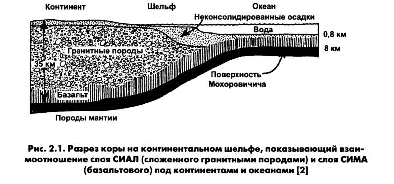</a></figure>
    <p>Схематичный разрез: слева континент, в центре шельф, справа океан. Показаны неконсолидированные осадки на поверхности, слой СИАЛ (только под континентом) и слой СИМА (под континентом и под океаном), ниже породы мантии.</p>
    <p>Как читать: видно, что гранитный слой «выклинивается» к океану, а базальтовый идёт непрерывно под обоими.</p>
    <p class="meaning">Вывод: континенты — это «утолщения» лёгкого гранитного материала на более тяжёлой базальтовой основе. Именно на этих утолщениях и их краях накапливаются осадки.</p>
  </div>

  <p>Мантия — пластичное твёрдое вещество толщиной около 2900 км (от поверхности Мохо до внешнего ядра). Плотность мантии около 3,3 г/см³. По теории конвекции в ней идут очень медленные потоки: вещество поднимается там, где его греет глубинное тепло, и опускается в других местах. Континенты скапливаются над зонами опускания, океанические бассейны — над зонами подъёма. Это помогает объяснить дрейф континентов.</p>
  <p>Внутреннее ядро (железо и никель) имеет плотность около 10,7 г/см³, больше чем втрое выше мантии. Магнитное поле Земли, по-видимому, создаётся течениями в жидком внешнем ядре.</p>

  <div class="analogy"><p class="tag">На пальцах</p><p>Мантия похожа на очень густую смолу или тесто в кастрюле на медленном огне. Снизу греется, смола поднимается, остывает у поверхности и опускается. Плавающие на ней «льдины» (плиты) двигаются со скоростью роста ногтей: 5–8 см в год.</p></div>

  <h3>Тектоника плит</h3>
  <p>Теория тектоники плит основана на двух идеях: дно океана раздвигается в срединно-океанических рифтах, а континенты дрейфуют. Литосфера состоит из шести крупнейших плит. Континенты движутся со скоростью 5,1–7,6 см в год. Срединно-океанические хребты образуют сеть гор длиной около 65 000 км; некоторые поднимаются на 5500 м над ложем океана.</p>
  <p>Плита растёт за счёт магмы, поднявшейся из мантии. По мере движения по дну на ней оседают осадки, смытые с континентов. Но океаническая плита «живёт» недолго: её затягивает в зону субдукции раньше, чем успеет накопиться мощный слой осадков. Поэтому океанские осадки тоньше континентальных.</p>
  <p>Что происходит при встрече плит (примеры из книги):</p>
  <ul>
    <li><b>Столкновение плит одной плотности</b> сминает края в горный хребет. Альпы возникли при столкновении Евразийской и Африканской плит около 80 млн лет назад; морские осадки в них найдены на больших высотах.</li>
    <li><b>Индия</b> двигалась на север и поднырнула под Азию. Столкновение выдавило вверх Гималаи.</li>
    <li><b>Островные дуги</b> (на востоке Азии) рождаются, когда более плотная океаническая плита уходит в горячую мантию. Часть материала плавится, лёгкие вещества всплывают колоннами (диапирами) и образуют цепочку вулканов. У дуг бывают глубокофокусные землетрясения.</li>
    <li><b>Трансформные разломы</b> возникают, когда плиты скользят вдоль друг друга. Пример: разлом Сан-Андреас в Калифорнии. Там много землетрясений и надвигов.</li>
    <li><b>Пангея.</b> Около 500 млн лет назад Северная Америка столкнулась с древним суперконтинентом Пангеей (так появились Аппалачи). Позже в месте «шва» поднялась магма, континенты разошлись, возник Атлантический океан.</li>
  </ul>
  <p>Почему это важно для нефти? Сворачивание плит с осадками создаёт ловушки под непроницаемыми покрышками. На краях континентов в морях с ограниченной циркуляцией воды копятся осадки и соли, а с ними формируется и мигрирует нефть. Часто нефть, найденная на одном берегу океана, находится и на противоположном: когда-то это был один континент.</p>

  <h3>Геологическое время</h3>
  <p>Возраст Земли оценивают в 4,6 млрд лет. Палеозой начался около 580 млн лет назад, поэтому на докембрий приходится примерно 87 % всей истории (\((4600-580)/4600\approx 0{,}87\)). Даты получают по остаткам флоры и фауны и, главное, по радиоактивному распаду изотопов.</p>

  <div class="table-note">
    <p class="tag">Табл. 2.1 · стр. 33</p>
    <p class="fig-title">Подразделения геологического времени и важнейшие события</p><figure class="scan"><a href="img/tab-2-1.jpg" target="_blank" rel="noopener">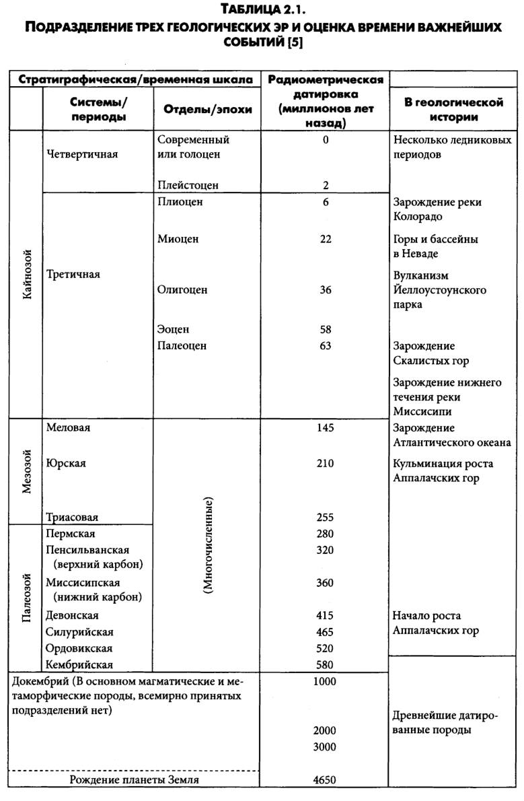</a></figure>
    <p>Таблица — это «линейка времени» с названиями периодов, их возрастом в миллионах лет и событиями. Запоминать все даты не нужно; важны опорные точки.</p>
    <div class="tbl"><table>
      <thead><tr><th>Период / эпоха</th><th>Возраст начала, млн лет назад</th><th>Событие</th></tr></thead>
      <tbody>
        <tr><td>Голоцен (современный)</td><td>0</td><td>несколько ледниковых периодов</td></tr>
        <tr><td>Плейстоцен</td><td>2</td><td>материковые оледенения</td></tr>
        <tr><td>Плиоцен</td><td>6</td><td>зарождение реки Колорадо</td></tr>
        <tr><td>Миоцен</td><td>22</td><td>горы и бассейны Невады</td></tr>
        <tr><td>Олигоцен</td><td>36</td><td>вулканизм Йеллоустоуна</td></tr>
        <tr><td>Эоцен</td><td>58</td><td></td></tr>
        <tr><td>Палеоцен</td><td>63</td><td>зарождение Скалистых гор и нижнего течения Миссисипи</td></tr>
        <tr><td>Меловой</td><td>145</td><td>зарождение Атлантического океана</td></tr>
        <tr><td>Юрский</td><td>210</td><td>кульминация роста Аппалачей</td></tr>
        <tr><td>Триасовый</td><td>255</td><td></td></tr>
        <tr><td>Пермский</td><td>280</td><td></td></tr>
        <tr><td>Пенсильванский (верхний карбон)</td><td>320</td><td></td></tr>
        <tr><td>Миссисипский (нижний карбон)</td><td>360</td><td></td></tr>
        <tr><td>Девонский</td><td>415</td><td>начало роста Аппалачей</td></tr>
        <tr><td>Силурийский</td><td>465</td><td></td></tr>
        <tr><td>Ордовикский</td><td>520</td><td></td></tr>
        <tr><td>Кембрийский</td><td>580</td><td>начало палеозоя</td></tr>
        <tr><td>Докембрий</td><td>1000–4650</td><td>древнейшие датированные породы около 3000–4000; рождение планеты 4650</td></tr>
      </tbody></table></div>
    <p>Заметьте: цифры в таблице округлены и в тексте книги слегка расходятся с ней (например, 225 млн лет для начала мезозоя). Важен порядок величин.</p>
  </div>

  <h4>Радиоизотопное датирование</h4>
  <p>Радиоактивный элемент распадается в «дочерний» с постоянной скоростью. Измерив, сколько дочернего вещества накопилось в породе, можно вычислить возраст. Время, за которое распадается половина вещества, называется периодом полураспада.</p>

  <div class="formula">
    <p class="tag">Формула (2.3): закон радиоактивного распада</p>
    \[ \lambda t=\ln\frac{N_0}{N_t},\qquad \lambda t_{1/2}=\ln\frac{1{,}0}{0{,}5}=0{,}693,\qquad t_{1/2}=\frac{0{,}693}{\lambda} \]
    <dl class="vars">
      <dt>\(\lambda\)</dt><dd>постоянная радиоактивного распада, 1/год</dd>
      <dt>\(N_0\)</dt><dd>исходное количество материнского элемента</dd>
      <dt>\(N_t\)</dt><dd>количество, оставшееся к настоящему времени (в книге обозначено как существующее количество)</dd>
      <dt>\(t_{1/2}\)</dt><dd>период полураспада, лет</dd>
      <dt>\(t\)</dt><dd>возраст, лет</dd>
    </dl>
    <p class="meaning">Смысл: распад идёт по экспоненте. За каждый период полураспада остаётся половина. Чем дольше период полураспада, тем «древнее» часы: углерод-14 годится для тысяч лет, уран-238 — для миллиардов.</p>
  </div>

  <div class="table-note">
    <p class="tag">Табл. 2.2 · стр. 34</p>
    <p class="fig-title">Радиоактивные элементы, периоды полураспада и дочерние продукты</p><figure class="scan"><a href="img/tab-2-2.jpg" target="_blank" rel="noopener">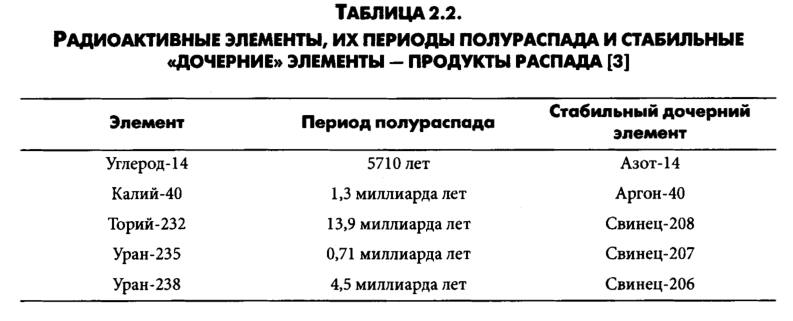</a></figure>
    <p>Выбирайте «часы» по масштабу времени: чем старше порода, тем более долгоживущий изотоп нужен.</p>
    <div class="tbl"><table>
      <thead><tr><th>Элемент</th><th>Период полураспада</th><th>Дочерний элемент</th></tr></thead>
      <tbody>
        <tr><td>Углерод-14</td><td>5710 лет</td><td>Азот-14</td></tr>
        <tr><td>Калий-40</td><td>1,3 млрд лет</td><td>Аргон-40</td></tr>
        <tr><td>Торий-232</td><td>13,9 млрд лет</td><td>Свинец-208</td></tr>
        <tr><td>Уран-235</td><td>0,71 млрд лет</td><td>Свинец-207</td></tr>
        <tr><td>Уран-238</td><td>4,5 млрд лет</td><td>Свинец-206</td></tr>
      </tbody></table></div>
  </div>

  <p>Углерод-14 образуется в атмосфере из азота под действием космических лучей. Растения и животные при жизни содержат его в постоянной доле. Когда организм умирает, пополнение прекращается, и доля падает. Если в окаменелой кости осталась четверть от обычной доли, прошло два периода полураспада: \(2\times5710=11\,420\) лет.</p>

  <div class="example">
    <p class="tag">Пример: возраст по углероду-14 (из книги)</p>
    <p>Дано: в породе 0,35 г N-14 на 1,0 г C-14.</p>
    <p>Шаг 1. Постоянная распада: \(\lambda=0{,}693/5710\approx1{,}2\times10^{-4}\) 1/год.</p>
    <p>Шаг 2. По книге отношение берут как \(1{,}0/0{,}35\), тогда \(\ln(1{,}0/0{,}35)\approx1{,}051\).</p>
    <p>Шаг 3. \(t=\tfrac{1}{\lambda}\ln(\ldots)\approx(8{,}3\times10^{3})(1{,}051)\approx 8723\) года.</p>
    <p>Ответ книги: около 8700 лет.</p>
  </div>

  <div class="warn"><p class="tag">Частая ошибка</p><p>Строго говоря, в \(N_0\) надо складывать то, что осталось, и то, что распалось: \(N_0=N_t+N_{\text{дочернего}}\). Книжный пример упрощает: берёт отношение 1/0,35 как данное. Если считать «по-честному» (материнского 1,0, дочернего 0,35, исходного 1,35), возраст получится заметно меньше. На экзамене по этой книге считайте как в книге, но понимайте идею: \(N_0/N_t\) — это «сколько было» к «сколько осталось».</p></div>

  <p>Из событий истории: Аппалачи возникли при столкновении Северной Америки с Пангеей около 500 млн лет назад, а пик их роста совпал с рождением Атлантики. Миссисипи и Скалистые горы появились около 63–65 млн лет назад. Вулканизм Йеллоустоуна начался около 40 млн лет назад.</p>

  <h3>Геология осадочных пород</h3>
  <p>Нефть и газ находят в осадочных бассейнах: на их мелких окраинах, в глубоких центрах и там, где тектоника создала запечатанные ловушки. Геология осадочных пород даёт критерии поиска и позволяет прогнозировать новые нефтегазоносные провинции.</p>

  <h4>Бассейны</h4>
  <p>Осадочный бассейн — это область, где накапливаются обломочные и эвапоритовые (соляные) осадки. Она опустилась относительно окружения. В центре осадков много, к краям их толща утоньшается. Динамичный бассейн — тот, где осадки накапливаются одновременно с погружением.</p>
  <p>Почему дно опускается? Причины полностью не поняты. Помогает идея изостазии: лёгкая кора «плавает» на пластичной мантии. Если нагрузка в одном месте растёт, оно погружается, а соседнее чуть всплывает. Подтверждение: район Великих озёр и Скандинавия до сих пор медленно поднимаются после таяния плейстоценовых ледников. Глубже примерно 1600 км землетрясений не бывает: вещество там настолько горячее и пластичное, что течёт, а не ломается.</p>
  <div class="analogy"><p class="tag">На пальцах</p><p>Изостазия — это как лодка на воде. Положите груз на один борт, и он осядет, другой борт приподнимется. Когда груз убрали (ледник растаял), лодка медленно выравнивается.</p></div>
  <p>Внутри континентов есть древние устойчивые ядра из метаморфических пород — кратоны, или щиты (Канадский, Бразильский, Финно-Скандинавский, Индийский). Продукты их разрушения дали большую часть осадков на суше и шельфах.</p>

  <h4>Расходящиеся континентальные окраины</h4>
  <p>Это края континентов, удаляющиеся от раздвигающегося океанического рифта (восточные берега Америк, западные — Европы и Африки). Здесь образуются широкие мелководные шельфы с карбонатами (из рифов) и терригенными осадками (из размыва суши). Чтобы понять бассейн, надо рассматривать весь регион сноса: область эрозии, климат, рельеф и обстановки осадконакопления вместе.</p>

  <h4>Сходящиеся континентальные окраины</h4>
  <p>Возникают при столкновении плит. Если океаническая плита встречает более лёгкую континентальную, между островной дугой и континентом образуется краевой бассейн. Он заполняется карбонатными и обломочными осадками, там возникают обширные области накопления УВ (пример: Юго-Восточная Азия). Продолжающееся движение создаёт геосинклиналь: длинный узкий прогиб, заполненный мощными осадками. Потом их сминает в складки, начинается горообразование (орогенез) и вулканизм. Так возникли Аппалачи и Урал. Часть нефти при этом теряется: покрышки разрушаются, УВ уходят к поверхности. Но складки и разломы создают новые структурные ловушки в соседних районах.</p>

  <h4>Трансформные континентальные окраины</h4>
  <p>Когда плиты скользят вдоль друг друга, появляется длинный трансформный разлом с ответвлениями под углом около 30°. Они ограничивают блоки, где копятся осадки и образуются многочисленные ловушки (пример: Сан-Андреас и связанные нефтяные месторождения). На дне океана такие разломы сопровождаются подводными вулканами.</p>

  <h4>Трансгрессивно-регрессивные циклы</h4>
  <p><b>Трансгрессия</b> — море наступает: уровень поднимается или бассейн погружается. Вода на мелководье спокойная, низкоэнергетическая, и в ней оседают только тонкие частицы. Тонкие осадки малопроницаемы, это потенциальные нефтематеринские породы, а не коллекторы.</p>
  <p><b>Регрессия</b> — море отступает, бассейн мелеет, зона высокой энергии смещается к морю. Осадки крупнозернистые, проницаемые, это потенциальные коллекторы. Регрессия бывает из-за падения уровня моря или из-за избытка осадков, например, когда река наращивает дельту быстрее, чем течения и волны успевают осадки разнести.</p>
  <p>Итог цикла: сверху над материнскими породами трансгрессии ложатся коллекторы регрессии. Такое соседство очень удобно для нефти. Комплексы получаются либо песчано-глинистые, либо глинисто-карбонатно-эвапоритовые. В спокойном мелководье живут раковинные моллюски, из раковин формируются известняки (\(\mathrm{CaCO_3}\)), а из кальция и магния воды — доломит (\(\mathrm{CaMg(CO_3)_2}\)). Пористость в карбонатах возникает из-за доломитизации, выщелачивания водой и трещин от тектонических подвижек. Карбонатами сложены и рифы на краю шельфа.</p>

  <h4>Накопление осадков</h4>
  <p>Где лягут частицы, зависит от баланса между энергией среды и «инерцией» частицы. Течение несёт мелочь дальше, где спокойнее, а тяжёлое и крупное оседает раньше. Так природа сортирует осадок: песок в одном месте, алеврит и глина в другом. Энергия в одном месте меняется во времени, поэтому слои песка и глины чередуются.</p>
  <div class="analogy"><p class="tag">На пальцах</p><p>Поток у горной реки несёт камни и песок. Когда река разливается и замедляется, сначала оседает галька, потом песок, а глинистая муть уходит дальше, в тихую заводь. Так в бассейне получается «слоёный пирог».</p></div>

  <p>Пирсон выделил три типа физико-географической обстановки, которые дают три типа песков. Всё зависит от рельефа суши и того, сколько времени порода выветривается до отложения.</p>

  <div class="figure">
    <p class="tag">Рис. 2.2–2.4 · стр. 39–40</p>
    <p class="fig-title">Накопление осадков кварцевого, граувакковогo и аркозового типа</p><figure class="scan"><a href="img/fig-2-2.jpg" target="_blank" rel="noopener">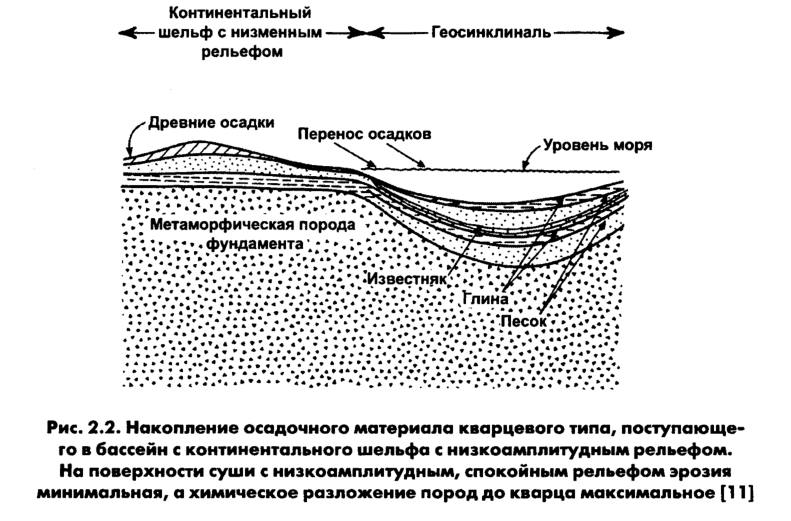</a></figure><figure class="scan"><a href="img/fig-2-3.jpg" target="_blank" rel="noopener">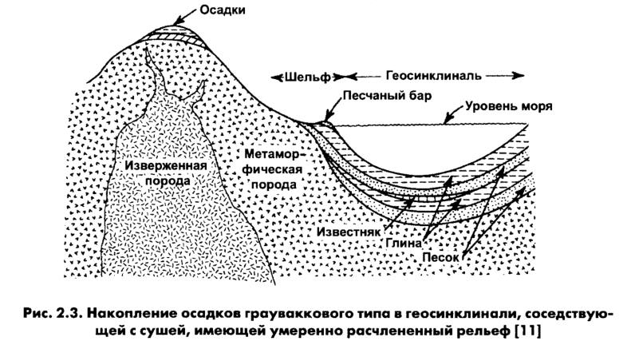</a></figure><figure class="scan"><a href="img/fig-2-4.jpg" target="_blank" rel="noopener">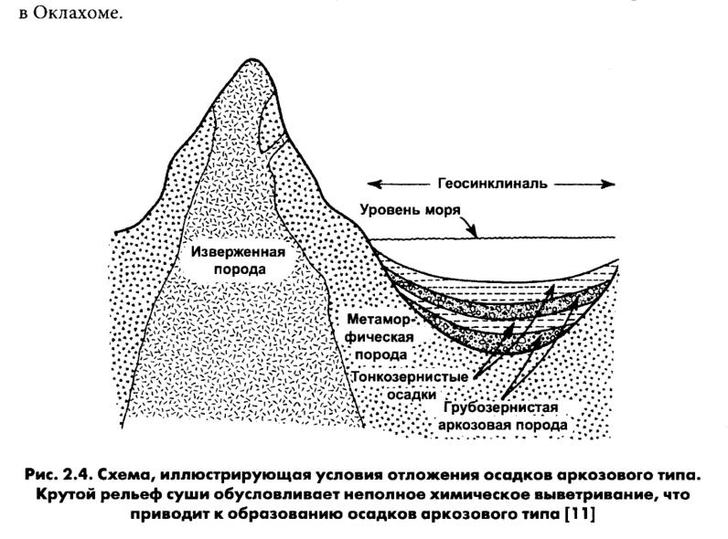</a></figure>
    <p>Три схематичных разреза «суша — бассейн (геосинклиналь)». На всех: уровень моря, область сноса на суше, перенос осадка и накопление в бассейне. Различие в рельефе суши: на рис. 2.2 низкая спокойная равнина, на рис. 2.3 умеренно расчленённый рельеф, на рис. 2.4 крутой рельеф.</p>
    <p>Как читать: чем круче рельеф, тем быстрее смывается материал и тем меньше он успевает выветриться до устойчивого кварца. Поэтому в бассейн попадает всё менее «чистый» материал.</p>
    <p class="meaning">Вывод: рельеф области сноса определяет минеральный состав, сортировку и, в конечном счёте, проницаемость и чувствительность будущего коллектора к воде.</p>
  </div>

  <div class="table-note">
    <p class="tag">Сводка к рис. 2.2–2.4 · стр. 38–41</p>
    <p class="fig-title">Три типа песчаных коллекторов по Пирсону</p><figure class="scan"><a href="img/tab-2-2.jpg" target="_blank" rel="noopener"></a></figure><figure class="scan"><a href="img/tab-2-3.jpg" target="_blank" rel="noopener">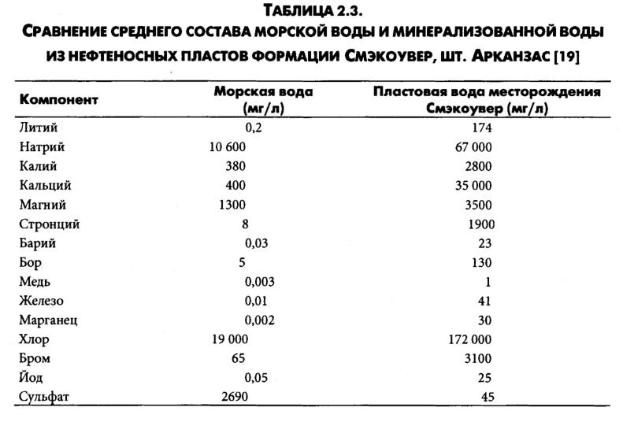</a></figure><figure class="scan"><a href="img/tab-2-4.jpg" target="_blank" rel="noopener">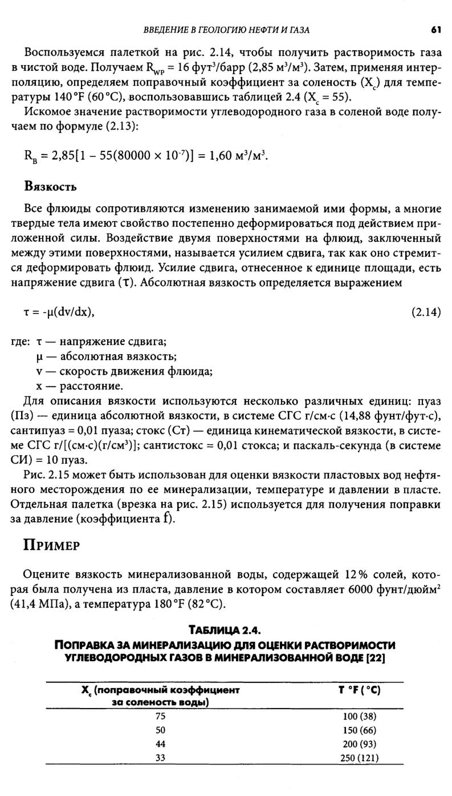</a></figure>
    <div class="tbl"><table>
      <thead><tr><th>Тип</th><th>Рельеф области сноса</th><th>Состав и сортировка</th><th>Свойства коллектора</th><th>Примеры</th></tr></thead>
      <tbody>
        <tr><td>Кварцевый</td><td>низкая равнина, эрозия минимальна, выветривание полное</td><td>почти чистый кварц, хорошо отсортированный, однородный</td><td>высокая проницаемость, высокое \(k_v/k_h\); большие начальные дебиты; при заводнении быстро образуются конусы воды и ранний прорыв</td><td>Орискани (Пенсильвания), Сент-Питер (Иллинойс), Уилкокс (Оклахома), Тенслип (Вайоминг)</td></tr>
        <tr><td>Граувакковый</td><td>умеренно расчленённый</td><td>смесь обломков пород, плохая сортировка, много глины</td><td>проницаемость сильно меняется на коротких расстояниях, \(k_v\) намного меньше \(k_h\); меньшие первичные дебиты, но хорошая эффективность вторичных методов; чувствителен к воде (набухание и миграция глин)</td><td>Брэдфорд (Пенсильвания), Бартлсвилл (Оклахома)</td></tr>
        <tr><td>Аркозовый</td><td>крутой, изрезанный</td><td>угловатые зёрна, полевые шпаты, активные глины, большой разброс размеров</td><td>мощные пласты, но проницаемость крайне изменчива; низкая продуктивность и при первичной, и при вторичной добыче; очень чувствителен к воде</td><td>Керн-Ривер (Калифорния), Гранит-Уош (Оклахома, Панхэндл)</td></tr>
      </tbody></table></div>
    <p>Эта таблица составлена по тексту книги и не является таблицей оригинала. Показывает, как геология заранее подсказывает инженеру поведение пласта.</p>
  </div>

  <div class="warn"><p class="tag">Частая ошибка</p><p>Думать, что «высокая проницаемость» всегда хорошо. У хорошо отсортированных кварцевых песков вертикальная проницаемость близка к горизонтальной. Это даёт высокую начальную добычу, но при вытеснении нефти водой вода быстро прорывается вверх и вниз конусами. Граувакковые пески, наоборот, дают меньше сначала, но заводнение в них идёт эффективнее.</p></div>

  <h3>Ловушки углеводородов</h3>
  <p>Классическая ловушка — пористый проницаемый пласт, выгнутый тектоникой в антиклинальную складку и зажатый между непроницаемыми породами. Высота ловушки — расстояние от свода (верхней точки) до замка (самой нижней точки, ещё удерживающей УВ). Обычно ловушка заполнена не до замка.</p>

  <div class="figure">
    <p class="tag">Рис. 2.5 · стр. 41</p>
    <p class="fig-title">Вертикальный разрез антиклинальной ловушки</p><figure class="scan"><a href="img/fig-2-5.jpg" target="_blank" rel="noopener">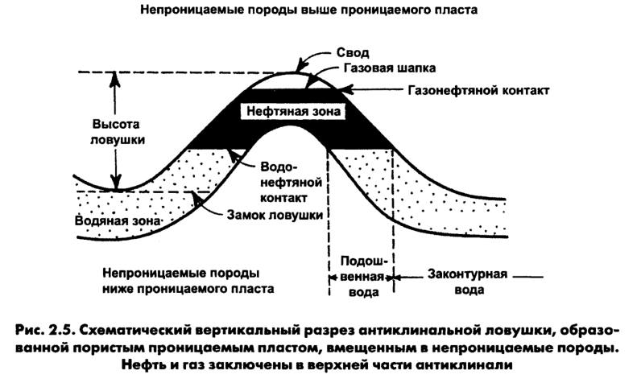</a></figure>
    <p>Дуга пористого пласта между непроницаемыми породами выше и ниже. Сверху вниз: свод, газовая шапка, газонефтяной контакт, нефтяная зона, водонефтяной контакт, ниже вода. Отмечены высота ловушки и замок, а также подошвенная и законтурная вода.</p>
    <p>Как читать: флюиды лежат слоями по плотности: газ сверху, нефть в середине, вода снизу. Контакты — границы между ними.</p>
    <p class="meaning">Вывод: газонефтяной контакт (ГНК) — нижний уровень, с которого можно добыть газ; водонефтяной контакт (ВНК) — нижний уровень, с которого можно добыть нефть. Между зонами есть переходные зоны, где нефтенасыщенность постепенно падает до нуля (водонасыщенность 100 %).</p>
  </div>

  <p>Контакты обычно плоские, но могут быть наклонными из-за движения воды, резкого контраста проницаемости по сторонам залежи или неравномерного отбора. Подошвенная вода лежит прямо под ВНК, законтурная примыкает к нефтяной зоне с боков. Одна антиклиналь может нести несколько ловушек друг над другом, разделённых непроницаемыми слоями, и литология в них может быть разной (песок, известняк, доломит).</p>
  <p>По происхождению ловушки делят на структурные и стратиграфические.</p>
  <p><b>Структурные</b> созданы тектоникой после отложения пластов: (1) сводовые (антиклинали), (2) тектонически экранированные (блоки смещены по разлому), (3) диапировые (соляные или глиняные купола пробивают пласты).</p>

  <div class="figure">
    <p class="tag">Рис. 2.6 · стр. 42</p>
    <p class="fig-title">Несколько типов ловушек на одном разрезе</p><figure class="scan"><a href="img/fig-2-6.jpg" target="_blank" rel="noopener">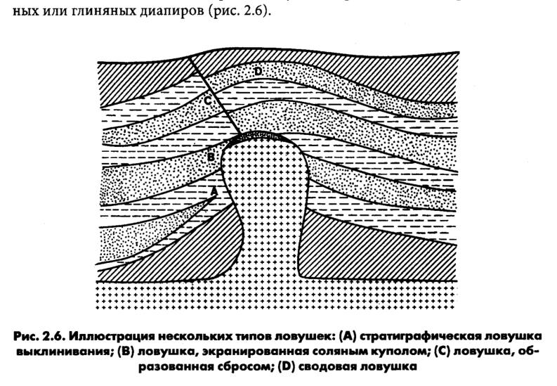</a></figure>
    <p>Разрез, где чередуются пески и глины, а в центре поднимается соляной купол. Буквами показаны четыре ловушки: A — стратиграфическая (выклинивание песка у купола), B — экранированная соляным куполом, C — образованная сбросом, D — сводовая.</p>
    <p>Как читать: ищите, чем именно запечатана «верхушка» песчаного пласта: куполом, разломом, выклиниванием или изгибом.</p>
    <p class="meaning">Вывод: в одном районе могут сочетаться ловушки разных типов, поэтому поиск нефти — это комплексная работа геологов.</p>
  </div>

  <p><b>Стратиграфические</b> возникают из-за смены фаций: пористый пласт выклинивается или превращается в линзу в окружении непроницаемых глин. Они бывают в прибрежных барах, рифах и речных руслах. Их труднее найти, потому что не видно чёткой структуры.</p>

  <div class="figure">
    <p class="tag">Рис. 2.7 · стр. 43</p>
    <p class="fig-title">Стратиграфическое несогласие</p><figure class="scan"><a href="img/fig-2-7.jpg" target="_blank" rel="noopener">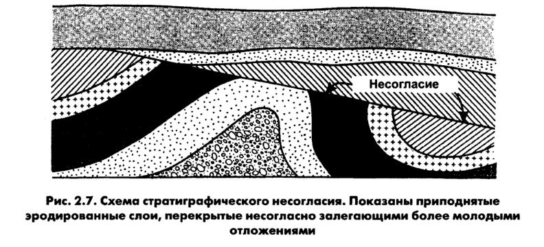</a></figure>
    <p>Приподнятые, срезанные эрозией старые наклонные слои, поверх которых горизонтально легли более молодые отложения. Между ними — поверхность несогласия.</p>
    <p>Как читать: ищите поверхность, которая «срезает» нижние слои. Под ней породы побывали на поверхности.</p>
    <p class="meaning">Вывод: под несогласием породы часто пористые и проницаемы (выщелачивание, цементация водой, особенно в карбонатах), а молодые глины сверху образуют экран. Мусор на поверхности несогласия может быть каналом миграции нефти из материнской породы в ловушку.</p>
  </div>

  <h3>Происхождение нефти</h3>
  <p>Общепринята биогенная теория. Доказательства: в нефти есть соединения с характерной структурой, унаследованной от живых существ (порфирины, изопреноиды, стераны и др.). Нефтематеринские породы — тонкозернистые осадки мелководных морей, накапливавшиеся в низкоэнергетические трансгрессивные фазы. Органика почти такой же плотности, как вода, поэтому оседает медленно вместе с глиной и тонкими карбонатами. В застойной воде мало кислорода, и это позволяет органике сохраниться. Анаэробные бактерии отнимают кислород у молекул, но не рвут связи углерод-углерод. Аэробные бактерии, напротив, доводят органику до \(\mathrm{CO_2}\) и воды, и нефти не будет.</p>

  <h4>От органики к керогену</h4>
  <p>Исходные молекулы — белки, липиды (жиры, воски), углеводы и лигнин. Чтобы органика сохранилась, её должны быстро захоронить мелкозернистые осадки. Не всякая глина нефтематеринская: нужен обильный приток органики (планктон, водоросли и растительность суши).</p>
  <p>Сравнение исходного материала по отношению H/C: высшие наземные растения (целлюлоза, лигнин, ароматика) дают 1,0–1,5; морские водоросли (белки, липиды, углеводы, алифатика) — 1,7–1,9. Для ориентира: бензол 1,0, циклогексан 2,0, н-пентан 2,4. Чем больше H/C, тем «нефтяннее» исходный материал.</p>
  <p>Стадия диагенеза: осадок захоронен неглубоко, температура низкая, изменения идут медленно. Верхние метры — граница между биосферой и геосферой. Осадок может «ждать» 1000–10 000 лет, пока его не засыплет следующий слой. За это время бактерии и химия превращают биополимеры в более устойчивые поликонденсированные соединения. Глубже среда анаэробная, давление и температура растут, органика превращается в плохо растворимые высокомолекулярные полимеры. Бактерии восстанавливают сульфаты до сероводорода. Выделяется метан («болотный газ»). Растворимое уходит с водой вверх, остаётся твёрдая органика — кероген.</p>

  <h4>От керогена к нефти и газу</h4>
  <p>Дальше осадки погружаются на сотни и тысячи метров, температура и давление растут. Начинается катагенез: кероген становится жидким битумом, а затем нефтью. Одновременно порода уплотняется, вода отжимается, пористость и проницаемость падают. Если материнская порода продолжает греться, всё превращается в графит и метан.</p>
  <p>Ориентировочные глубины (Чилингарян и Йен): 10–20 м — переход органики в гуминовое вещество; 20–1500 м — диагенез; 1500–6000 м — катагенез и образование нефти из керогена; глубже 6000 м — метагенез (нефть превращается в графит и метан).</p>

  <div class="figure">
    <p class="tag">Рис. 2.8 · стр. 47</p>
    <p class="fig-title">Пористость глин и температура с глубиной</p><figure class="scan"><a href="img/fig-2-8.jpg" target="_blank" rel="noopener">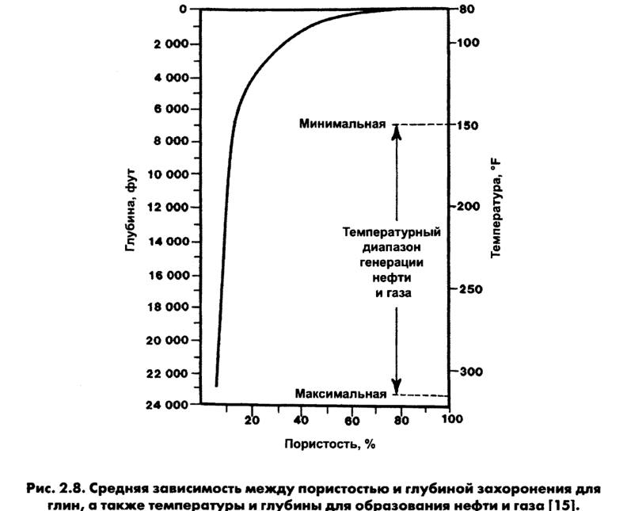</a></figure>
    <p>По вертикали глубина в футах (0–24 000, то есть 0–7300 м), по горизонтали пористость, %. Кривая: у поверхности пористость глины около 80 %, потом круто падает к 10–20 % уже на первых километрах. Справа шкала температур от 80 до 300 °F. Отмечен температурный диапазон генерации нефти и газа: от минимальной около 150 °F до максимальной около 300 °F.</p>
    <p>Как читать: сравните, на какой глубине кривая пористости уже почти «села» (уплотнение глин практически закончено), и на какой начинается диапазон температур генерации нефти. Генерация лежит намного глубже.</p>
    <p class="meaning">Вывод: основная вода выжата из глины раньше, чем начнётся генерация нефти. Значит, нефть не может быть выдавлена «вместе с водой» при простом уплотнении, и первичная миграция требует других объяснений.</p>
  </div>

  <h3>Миграция и аккумуляция углеводородов</h3>
  <p>Нефть рождается в уплотнённых глинах, почти непроницаемых для флюидов. Коллекторы — пористые проницаемые породы. Поэтому ключевая загадка — как нефть покидает глину.</p>

  <h4>Первичная миграция</h4>
  <p>Это выход УВ из материнской породы в коллектор. Предложены разные механизмы, возможно, действующие по-разному в разных условиях:</p>
  <ul>
    <li>перенос коллоидными растворами (мицеллами);</li>
    <li>перенос как непрерывная углеводородная фаза;</li>
    <li>движение отдельных всплывающих капель;</li>
    <li>растворение УВ в воде, отжимаемой из глин;</li>
    <li>механические силы при уплотнении глин;</li>
    <li>движение по микротрещинам.</li>
  </ul>
  <p>Свежие осадки содержат более 50 % воды. По мере погребения она выдавливается. Нефть начинает генерироваться глубже, когда уплотнение уже закончилось, поэтому отжим нефти вместе с водой возможен лишь в редких случаях (очень быстрое погружение, аномально высокое давление или температура на малых глубинах). По Баркеру, нефть может выдавливаться из кровли или подошвы материнской толщи под действием перепада давлений. После отжима воды нефть в богатой органикой глине способна образовать непрерывную фазу и двигаться по тонким нитевидным каналам.</p>
  <p>Ещё один помощник: глинистые минералы смектиты хранят воду в решётке. Когда при температуре около 93 °C смектит превращается в иллит, вода выделяется. Это попадает как раз в диапазон генерации нефти и может «подталкивать» нефть.</p>

  <h4>Вторичная миграция</h4>
  <p>Это движение нефти и газа по коллектору вверх до ловушки. Управляют ею плавучесть и гидродинамические течения, а против них работают капиллярные силы.</p>

  <div class="formula">
    <p class="tag">Формула (2.4): капиллярное давление</p>
    \[ P_c=\frac{2\sigma\cos\theta}{r_c} \]
    <dl class="vars">
      <dt>\(P_c\)</dt><dd>капиллярное давление, Па</dd>
      <dt>\(\sigma\)</dt><dd>межфазное поверхностное натяжение нефть-вода, Н/м (в книге дано в мН/м)</dd>
      <dt>\(\theta\)</dt><dd>контактный угол (смачиваемость)</dd>
      <dt>\(r_c\)</dt><dd>радиус капилляра, м</dd>
    </dl>
    <p class="meaning">Смысл: чем уже канал, тем больше давление, нужное, чтобы протолкнуть через него каплю. Рост натяжения повышает барьер; чем лучше вода смачивает породу (малый угол, \(\cos\theta\) близок к 1), тем он выше. Эта формула потом станет основой всей теории капиллярных явлений в пласте.</p>
  </div>

  <div class="figure">
    <p class="tag">Рис. 2.9 · стр. 48</p>
    <p class="fig-title">Вытеснение капли нефти через поровый канал в гидрофильной породе</p><figure class="scan"><a href="img/fig-2-9.jpg" target="_blank" rel="noopener">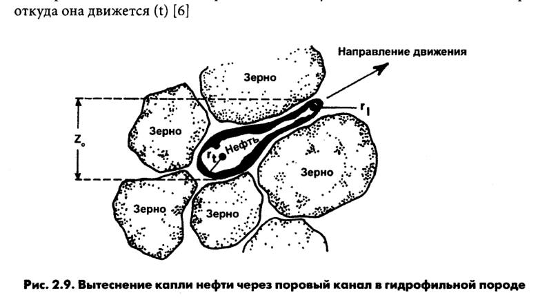</a></figure>
    <p>Зёрна породы, между ними крупная пора с каплей нефти (чёрная), которая вытягивается в узкий канал. Подписаны: направление движения, радиус порового канала впереди капли \(r_1\), радиус поры, из которой капля уходит \(r_t\), и высота капли \(Z_o\).</p>
    <p>Как читать: «перед» каплей канал узкий (большое капиллярное давление), «сзади» пора широкая (малое). Каплю надо продавить через эту разность.</p>
    <p class="meaning">Вывод: изолированной капле трудно пройти сквозь сужения, нужно приличное давление вытеснения.</p>
  </div>

  <div class="formula">
    <p class="tag">Формула (2.5): давление вытеснения капли</p>
    \[ P_d=2\sigma\left(\frac{\cos\theta_1}{r_1}-\frac{\cos\theta_t}{r_t}\right) \]
    <dl class="vars">
      <dt>\(P_d\)</dt><dd>давление вытеснения, Па</dd>
      <dt>\(\theta_1\)</dt><dd>контактный угол на переднем краю капли</dd>
      <dt>\(\theta_t\)</dt><dd>контактный угол на заднем краю капли</dd>
      <dt>\(r_1\)</dt><dd>радиус порового канала перед каплей, м</dd>
      <dt>\(r_t\)</dt><dd>радиус поры, которую капля покидает, м</dd>
    </dl>
    <p class="meaning">Смысл: это разность капиллярных давлений на переднем и заднем концах капли. Чем сильнее сужение (\(r_1\ll r_t\)), тем больше надо давить. Знаки выражены в порядке, соответствующем описанию в тексте книги; в оригинальной записи (OCR) формула сильно искажена.</p>
  </div>

  <div class="formula">
    <p class="tag">Формула (2.6): давление вытеснения от плавучести</p>
    \[ P_d=z_o\,g\,(\rho_w-\rho_o) \]
    <dl class="vars">
      <dt>\(P_d\)</dt><dd>давление, создаваемое плавучестью, Па</dd>
      <dt>\(z_o\)</dt><dd>высота нефтяной капли (столба нефти), м</dd>
      <dt>\(g\)</dt><dd>ускорение свободного падения, 9,81 м/с²</dd>
      <dt>\(\rho_w\)</dt><dd>плотность воды, кг/м³</dd>
      <dt>\(\rho_o\)</dt><dd>плотность нефти, кг/м³</dd>
    </dl>
    <p class="meaning">Смысл: чем выше столб нефти и чем сильнее нефть легче воды, тем сильнее выталкивающая сила. Для маленькой капли эта сила мала.</p>
  </div>

  <div class="example">
    <p class="tag">Пример: хватит ли плавучести? (авторский расчёт для иллюстрации)</p>
    <p>Пусть \(\sigma=30\) мН/м, \(\theta=0\), радиус сужения \(r=1\) мкм. Тогда по (2.4): \(P_c=2\cdot0{,}03/10^{-6}=60\,000\) Па = 60 кПа.</p>
    <p>Капля высотой 10 м (уже очень много!), \(\rho_w=1000\), \(\rho_o=800\) кг/м³: \(P_d=10\cdot9{,}81\cdot200\approx19\,600\) Па ≈ 19,6 кПа.</p>
    <p>19,6 кПа \(\lt\) 60 кПа: плавучести не хватает. Вывод книги: одиночная капля сама не пройдёт, миграция идёт непрерывной нитью нефти, а не отдельными каплями.</p>
  </div>

  <p>Когда нефть только покинула материнскую породу, на входе в коллектор нефтенасыщенность максимальна, и нефть может идти вверх как непрерывная фаза в виде нитевидных струек. Тогда плавучести и гидродинамики хватает. Теории переноса нефти «в растворе» молекул или коллоидном растворе оспорены: растворимость нефти в воде чрезвычайно мала, как и концентрация поверхностно-активных молекул в сырой нефти. Но большие объёмы горячей воды могут вымывать капельную нефть из песка. Этим объясняют свободные от нефти пласты ниже залежей.</p>
  <p>Миграция заканчивается аккумуляцией в структурной, стратиграфической или комбинированной ловушке. УВ собираются в самой высокой точке и расслаиваются по плотности. Левoрсен отметил, что нефти нет в ловушках, не сформированных к плейстоцену. Отсюда оценка минимального времени миграции и накопления — около миллиона лет. Залежь не вечна: из-за тектоники, смены температуры и давления она может разрушиться. Нефть может выйти на поверхность (нефтяные выходы), стать битуминозным песком после подъёма и эрозии либо уйти в другую толщу в виде рециклированной нефти (она обеднена парафинами из-за аэробных бактерий). Покрышка тоже не абсолютно непроницаема: хороший капиллярный барьер удерживает жидкие УВ, но самые лёгкие газы могут постепенно просачиваться.</p>
  <div class="analogy"><p class="tag">На пальцах</p><p>Нефть в пласте — как масляные пузыри в стакане воды с песком. Мелкая капля застревает в тонком «перешейке», и её выталкивающая сила слишком мала. Но если масла много и оно слиплось в непрерывную ленту, оно всплывает целиком.</p></div>

  <h3>Свойства пластовых флюидов</h3>
  <p>Инженер должен знать физику и химию воды и нефти. От них зависят разведка, повреждение пласта, выбор технологии добычи, методы повышения нефтеотдачи, смачиваемость и многое другое.</p>

  <h4>Градиент гидростатического давления</h4>
  <p>Давление в жидкости растёт с глубиной, потому что давит вес столба над точкой. Скорость роста — градиент. Для сравнения плотностей используют относительную плотность по воде SG: плотность вещества, делённая на плотность воды (1,0 г/см³ при 4 °C и 1 атм).</p>

  <div class="formula">
    <p class="tag">Формула (2.7): градиент давления жидкости</p>
    \[ G_p=1000\cdot 9{,}81\cdot SG = 9810\,SG\ \text{Па/м}=0{,}433\,SG\ \text{фунт/дюйм}^2\text{ на фут} \]
    <dl class="vars">
      <dt>\(G_p\)</dt><dd>градиент давления, Па/м</dd>
      <dt>\(SG\)</dt><dd>относительная плотность жидкости по воде, безразмерная</dd>
    </dl>
    <p class="meaning">Смысл: у пресной воды градиент 9,81 кПа/м, т. е. давление растёт примерно на 1 атмосферу (0,1 МПа) каждые 10 м. Чем плотнее жидкость, тем быстрее растёт давление.</p>
  </div>

  <p>Минерализованные пластовые воды плотнее, и их градиент выше 9,81 кПа/м. Растворённый газ и температура уменьшают плотность, а значит, градиент. Для глубоких рассолов обычно берут 10,53 кПа/м (0,465 фунт/дюйм² на фут). Это отвечает солёности около 80 000 ч. н. млн (80 г/л) при 25 °C, SG = 1,074.</p>

  <h4>Градиент литостатического давления</h4>
  <p>Литостатическое давление создаёт вес пород, передающийся от зерна к зерну. К нему добавляется давление флюидов в порах. Суммарное давление вышележащей толщи (горное давление):</p>
  <div class="formula">
    <p class="tag">Формула (2.8): горное давление</p>
    \[ p_{ob}=p_l+p_f \]
    <dl class="vars">
      <dt>\(p_{ob}\)</dt><dd>давление вышележащей толщи (горное), Па</dd>
      <dt>\(p_l\)</dt><dd>литостатическое давление, передающееся от зерна к зерну, Па</dd>
      <dt>\(p_f\)</dt><dd>поровое давление флюидов, Па</dd>
    </dl>
    <p class="meaning">Смысл: вес толщи несёт и скелет породы, и флюид в порах. Если поровое давление растёт, скелет разгружается. Средний градиент горного давления 22,7 кПа/м (1,0 фунт/дюйм² на фут) соответствует средней плотности насыщенных пород 2,31 г/см³.</p>
  </div>

  <div class="figure">
    <p class="tag">Рис. 2.10 · стр. 51</p>
    <p class="fig-title">Градиенты давлений в недрах</p><figure class="scan"><a href="img/fig-2-10.jpg" target="_blank" rel="noopener">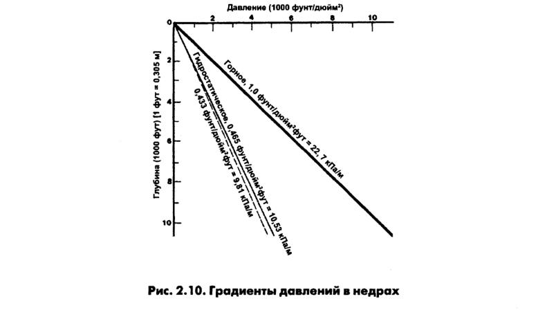</a></figure>
    <p>По горизонтали давление (1000 фунт/дюйм²), по вертикали глубина (1000 футов), около 10 000 футов. Три прямые линии из начала координат: гидростатическая 0,433 фунт/дюйм² на фут (9,81 кПа/м), гидростатическая для рассолов 0,465 (10,53 кПа/м) и горного давления 1,0 (22,7 кПа/м).</p>
    <p>Как читать: на любой глубине горное давление примерно вдвое больше гидростатического. Разница — это «эффективное напряжение», сжимающее скелет породы.</p>
    <p class="meaning">Вывод: при нормальных условиях пластовое давление лежит между двумя линиями, ближе к гидростатической.</p>
  </div>

  <div class="example">
    <p class="tag">Пример: давления на глубине 2000 м (авторский расчёт)</p>
    <p>Гидростатическое для рассола: \(10{,}53\times2000=21\,060\) кПа ≈ 21,1 МПа.</p>
    <p>Горное: \(22{,}7\times2000=45\,400\) кПа ≈ 45,4 МПа.</p>
    <p>Разность примерно 24,3 МПа — это нагрузка, которую несёт скелет породы.</p>
  </div>

  <p>Если градиент порового давления около 10,0 кПа/м, его называют нормальным гидростатическим. Бывает аномально низкий (газовые месторождения Пенсильвании, формация Морроу в Оклахоме) и аномально высокий — около 21,5 кПа/м. Это АВПД: побережье Мексиканского залива, дельта Нигера, Северное море.</p>

  <h4>Геотермический градиент</h4>
  <p>Тепло из мантии создаёт тепловой поток. Внутри континентов его величина от 3,4 до 5,0 \(\times10^{-2}\) Вт/м². Градиент температуры с глубиной зависит от района и теплопроводности пород; среднее по земному шару 18,2 °C/км (1 °F на 100 футов).</p>
  <div class="formula">
    <p class="tag">Формула (2.9): пластовая температура</p>
    \[ T_f=T_s+G_t D \]
    <dl class="vars">
      <dt>\(T_f\)</dt><dd>пластовая температура, °C</dd>
      <dt>\(T_s\)</dt><dd>среднегодовая температура поверхности, °C</dd>
      <dt>\(G_t\)</dt><dd>геотермический градиент, °C/км</dd>
      <dt>\(D\)</dt><dd>глубина, км</dd>
    </dl>
    <p class="meaning">Смысл: температура растёт линейно с глубиной. Если в скважине измерена температура на забое, можно получить местный градиент и пересчитать на любую другую глубину.</p>
  </div>
  <div class="example">
    <p class="tag">Пример: градиент и температура пласта</p>
    <p>Забой на глубине 2,2 км имеет 70 °C, среднегодовая температура поверхности 24 °C. Найти \(G_t\) и температуру пласта на 1700 м.</p>
    <p>Шаг 1. \(G_t=(70-24)/2{,}2=20{,}9\) °C/км.</p>
    <p>Шаг 2. \(T_f=24+20{,}9\times1{,}7=59{,}5\) °C.</p>
  </div>

  <h4>Зоны аномально высоких давлений и температур</h4>
  <p>Такие зоны есть во многих районах мира: США (побережье Мексиканского залива, Анадарко, Уиллистон, Вентура), Африка, Европа (Карпаты, Урал, Азербайджан, Россия), Азия и Южная Америка. Градиенты достигают 20 кПа/м и 30 °C/км.</p>

  <div class="figure">
    <p class="tag">Рис. 2.11 · стр. 53</p>
    <p class="fig-title">Температура с глубиной и температурная аномалия в зоне АВПД</p><figure class="scan"><a href="img/fig-2-11.jpg" target="_blank" rel="noopener">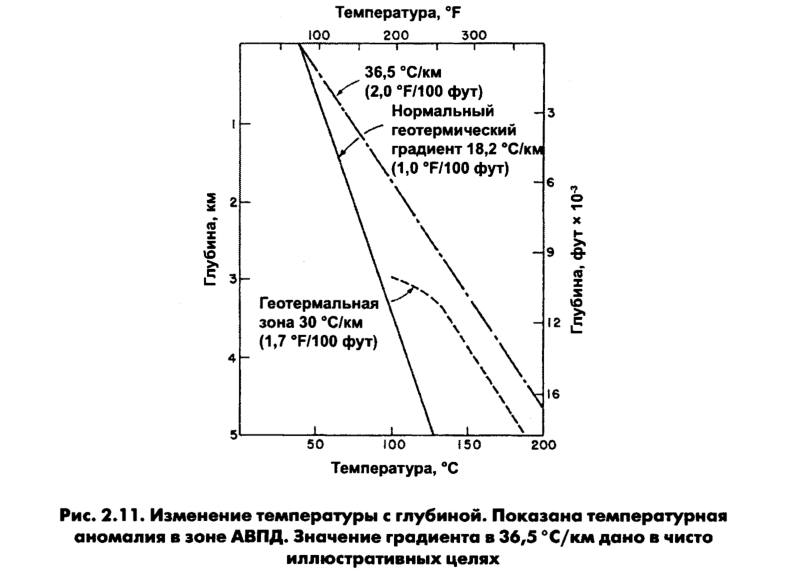</a></figure>
    <p>По горизонтали температура (°F сверху и °C снизу), по вертикали глубина (км и тысячи футов). Нормальная прямая с градиентом 18,2 °C/км. Другая линия с градиентом 36,5 °C/км (условно, для иллюстрации). Ломаная «геотермальная зона» с градиентом 30 °C/км: на глубине около 3 км график изгибается, температура в зоне выше нормальной.</p>
    <p>Как читать: сравните температуры на одной и той же глубине на нормальной линии и в зоне АВПД.</p>
    <p class="meaning">Вывод: в зонах АВПД пласты горячее, чем по среднему градиенту, и это надо учитывать при расчёте пластовых свойств.</p>
  </div>

  <div class="figure">
    <p class="tag">Рис. 2.12 · стр. 54</p>
    <p class="fig-title">Давление с глубиной и аномалия порового давления</p><figure class="scan"><a href="img/fig-2-12.jpg" target="_blank" rel="noopener">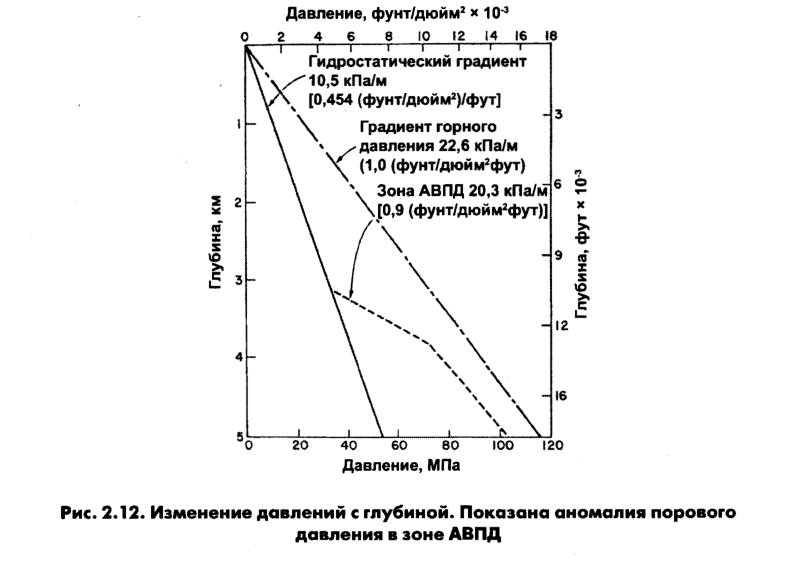</a></figure>
    <p>По горизонтали давление (МПа, внизу; тысячи фунт/дюйм², сверху), по вертикали глубина. Две прямые: гидростатический градиент 10,5 кПа/м и горное давление 22,6 кПа/м. Ломаная линия АВПД с градиентом 20,3 кПа/м: от глубины около 3 км давление скачком уходит от гидростатической прямой к горной.</p>
    <p>Как читать: чем ближе линия порового давления к линии горного, тем больше риск. Когда они почти сойдутся, порода держится только на флюиде.</p>
    <p class="meaning">Вывод: при бурении в зоне АВПД нужен тяжёлый буровой раствор и особые меры безопасности, иначе возможен выброс.</p>
  </div>

  <p>Причины АВПД (Фертль и Тимко называют 17). Главная для Мексиканского залива — быстрое осадконакопление при сбросах во время осадконакопления. Глины быстро засыпаются, вода не успевает выйти, осадок остаётся недоуплотнённым: рыхлая система набухших глин с межслойной водой. Накапливаются неустойчивые блоки, происходит сброс. С глубиной рост температуры вызывает дегидратацию глин. Монтмориллонит превращается в иллит при 65–120 °C, при этом выделяется вода — примерно половина первоначального объёма, что усиливает недоуплотнение. Когда давление флюида превышает суммарное давление вышележащих пород, сбросы работают как клапаны: пропускают воду вверх. После сброса давления клапан закрывается, пока давление опять не превысит горное.</p>
  <p>Есть и тепловой фактор. Хорошо уплотнённые вышележащие отложения теплопроводны хуже, они действуют как одеяло, которое затрудняет вывод тепла из мантии. Под ним выше температура, а значит и давление флюида. Зоны АВПД побережья Мексиканского залива встречаются глубже 2400 м, их бурение дорогое и требует осторожности. Горячие рассолы там содержат около 3,5 м³ метана на 1 м³ воды.</p>
  <div class="analogy"><p class="tag">На пальцах</p><p>АВПД — как плотно закрытая бутылка шампанского, которую взболтали и нагрели. Вода не может выйти, пока толща над ней «держит крышку», давление внутри растёт. Пробурить такую зону — всё равно что открыть бутылку.</p></div>

  <h3>Пластовые воды нефтяных месторождений</h3>
  <p>Нефть связана с мелководно-морскими обстановками, поэтому вода рядом с ней обычно солёная: много хлоридов натрия и кальция. Первоначальная вода осадков могла быть и пресной, и морской. Но потом породы погружались, поднимались, размывались, и состав воды менялся: приходили инфильтрационные воды, растворялись минералы, выпадали соли.</p>
  <p>Происхождение сильно минерализованных вод не объяснено полностью. Наиболее правдоподобно: это морская вода, изолированная в замкнутом бассейне. При испарении соли выпадают в порядке растворимости: известняк \(\to\) доломит \(\to\) гипс \(\to\) галит \(\to\) сильвин. Остаются концентрированные рассолы, «обеднённые» некоторыми ионами по сравнению с морской водой. Они могут уйти из бассейна или стать поровой водой осадков. В морских осадках аэробные бактерии выедают кислород, потом анаэробные восстанавливают сульфат до сероводорода. Поэтому рассолы нефтяных месторождений резко отличаются от морской воды.</p>

  <div class="table-note">
    <p class="tag">Табл. 2.3 · стр. 56</p>
    <p class="fig-title">Морская вода и рассол формации Смэкоувер (Арканзас), мг/л</p><figure class="scan"><a href="img/tab-2-3.jpg" target="_blank" rel="noopener"></a></figure>
    <p>За одним исключением (сульфат) все ионы в пластовой воде в разы больше, чем в морской. Хлор больше примерно в 9 раз, натрий в 6, кальций почти в 90, литий почти в 900. А сульфата меньше в 60 раз: его съели бактерии.</p>
    <div class="tbl"><table>
      <thead><tr><th>Компонент</th><th>Морская вода</th><th>Смэкоувер</th></tr></thead>
      <tbody>
        <tr><td>Литий</td><td>0,2</td><td>174</td></tr>
        <tr><td>Натрий</td><td>10 600</td><td>67 000</td></tr>
        <tr><td>Калий</td><td>380</td><td>2800</td></tr>
        <tr><td>Кальций</td><td>400</td><td>35 000</td></tr>
        <tr><td>Магний</td><td>1300</td><td>3500</td></tr>
        <tr><td>Стронций</td><td>8</td><td>1900</td></tr>
        <tr><td>Барий</td><td>0,03</td><td>23</td></tr>
        <tr><td>Бор</td><td>5</td><td>130</td></tr>
        <tr><td>Медь</td><td>0,003</td><td>1</td></tr>
        <tr><td>Железо</td><td>0,01</td><td>41</td></tr>
        <tr><td>Марганец</td><td>0,002</td><td>30</td></tr>
        <tr><td>Хлор</td><td>19 000</td><td>172 000</td></tr>
        <tr><td>Бром</td><td>65</td><td>3100</td></tr>
        <tr><td>Йод</td><td>0,05</td><td>25</td></tr>
        <tr><td>Сульфат</td><td>2690</td><td>45</td></tr>
      </tbody></table></div>
  </div>

  <p>Механизмы обогащения: (1) испарение исходной морской воды в замкнутом бассейне; (2) движение воды через глины, которые действуют как полупроницаемая мембрана (вода проходит, соли задерживаются); (3) смешение с другими сильно минерализованными водами. В нефтяных водах много щелочных металлов, гораздо больше, чем в водах, солёных из-за растворения солей породы.</p>
  <p>Состав воды разных залежей сильно различается. Общая минерализация обычно растёт с глубиной. Главный анион меняется: у поверхности сульфат, глубже 500 м часто гидрокарбонат, в глубоких рассолах хлор. Отношение Ca/Na растёт, Mg/Na падает.</p>

  <div class="formula">
    <p class="tag">Единицы солёности и формула (2.10): мг-экв/л</p>
    \[ \text{мг-экв/л}=\frac{\text{мг/л}\times\text{валентность}}{\text{молекулярный вес}} \]
    <dl class="vars">
      <dt>мг/л</dt><dd>массовая концентрация иона</dd>
      <dt>валентность</dt><dd>заряд иона (Na⁺: 1, Ca²⁺: 2, Cl⁻: 1, SO₄²⁻: 2)</dd>
      <dt>молекулярный вес</dt><dd>атомный (молекулярный) вес иона, г/моль</dd>
    </dl>
    <p class="meaning">Смысл: в реакциях 1 мг-экв катиона реагирует ровно с 1 мг-экв аниона, поэтому для ионных реакций концентрации пересчитывают в эквиваленты. Другие единицы: 1 вес. % = 10 000 ч. н. млн; мг/л получают из ч. н. млн умножением на плотность раствора (г/см³): в книге записано деление, но физически верно умножение, \(\text{мг/л}=\text{ч. н. млн}\times\rho\).</p>
  </div>
  <div class="example">
    <p class="tag">Пример: мг-экв/л (авторский расчёт на данных табл. 2.3)</p>
    <p>Кальций в рассоле Смэкоувер 35 000 мг/л, атомный вес 40,08, валентность 2.</p>
    <p>\(35\,000\times2/40{,}08\approx1747\) мг-экв/л.</p>
    <p>Натрий 67 000 мг/л, вес 22,99, валентность 1: \(67\,000/22{,}99\approx2914\) мг-экв/л.</p>
  </div>

  <p>Кальций и магний участвуют в образовании доломита и ионном обмене, поэтому их меньше, чем натрия. Прочих катионов обычно менее 100 мг/л. Вода в мелких порах и между зёрнами гидрофильных пород называется погребённой, или внутрипоровой. Термины синонимы. «Погребённая» подразумевает ископаемую воду, но уверенности нет: она могла смешаться с другими водами за геологическую историю. Коллинз определяет её как воду, длительное время не контактировавшую с другими водами.</p>

  <h4>Сжимаемость воды</h4>
  <p>Сжимаемость показывает, насколько объём воды меняется при изменении давления. Она зависит от давления и температуры (рис. 2.13): при фиксированном давлении она сначала падает с нагревом от комнатной до минимума около 55 °C, затем растёт; при фиксированной температуре она падает с ростом давления.</p>
  <div class="formula">
    <p class="tag">Формула (2.11): изотермическая сжимаемость воды</p>
    \[ c_w=-\frac{1}{V}\left(\frac{\partial V}{\partial p}\right)_T\approx-\frac{1}{V_1}\cdot\frac{V_2-V_1}{p_2-p_1}\ \Rightarrow\ \frac{V_2}{V_1}=1-c_w\,(p_2-p_1) \]
    <dl class="vars">
      <dt>\(c_w\)</dt><dd>сжимаемость воды, 1/кПа (или 1/(фунт/дюйм²))</dd>
      <dt>\(V_1,V_2\)</dt><dd>объёмы воды при давлениях \(p_1\) и \(p_2\)</dd>
      <dt>\(p_1,p_2\)</dt><dd>начальное и конечное давление</dd>
    </dl>
    <p class="meaning">Смысл: при падении давления вода чуть расширяется (знак минус), при росте сжимается. У воды сжимаемость очень мала (порядка \(10^{-6}\) на фунт/дюйм², т. е. около \(0{,}4\cdot10^{-6}\) на кПа), но в огромном объёме пласта этого хватает, чтобы «толкать» нефть к скважине.</p>
  </div>

  <div class="figure">
    <p class="tag">Рис. 2.13 · стр. 58</p>
    <p class="fig-title">Сжимаемость воды как функция температуры и давления</p><figure class="scan"><a href="img/fig-2-13.jpg" target="_blank" rel="noopener">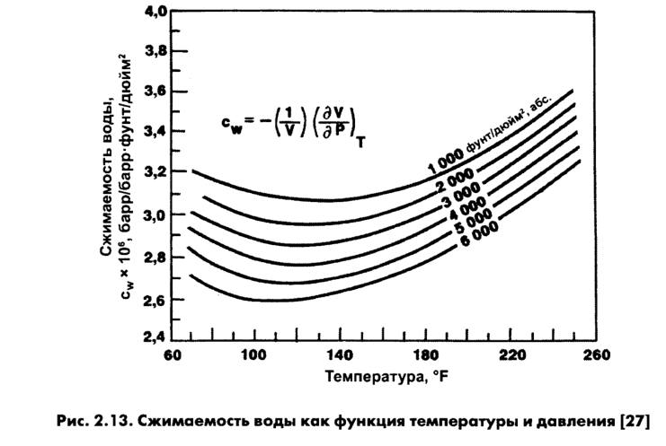</a></figure>
    <p>По горизонтали температура 60–260 °F, по вертикали сжимаемость \(c_w\times10^{6}\) в барр/(барр·фунт/дюйм²), от 2,4 до 4,0. Семейство кривых для давлений 1000, 2000, 3000, 4000, 5000 и 6000 фунт/дюйм² (абс.). Все кривые — «чаши»: слегка падают до минимума около 120 °F, потом растут. Верхние кривые отвечают низким давлениям. Рядом таблица пересчёта: 3,8 \(\times10^{-6}\) 1/psi = 0,55 \(\times10^{-6}\) 1/кПа; 2,8 = 0,40; 2,4 = 0,34.</p>
    <p>Как читать: найдите температуру на оси X, поднимитесь до кривой нужного давления, прочтите \(c_w\).</p>
    <p class="meaning">Вывод: в пластовых условиях \(c_w\) обычно 2,6–3,3 \(\times10^{-6}\) 1/psi. Важно знать порядок величины, а не точное число.</p>
  </div>

  <div class="example">
    <p class="tag">Пример: расширение воды при падении давления</p>
    <p>Пласт: 60 °C (140 °F), давление падает с 4000 до 3270 фунт/дюйм² (27,58 до 22,55 МПа). По рис. 2.13 \(c_w\approx2{,}8\times10^{-6}\) 1/psi (\(0{,}4\times10^{-6}\) 1/кПа).</p>
    <p>\(V_2/V_1=1-2{,}8\times10^{-6}\cdot(3270-4000)=1+2{,}8\times10^{-6}\cdot730\approx1{,}002\).</p>
    <p>Вода расширится примерно на 0,2 %.</p>
  </div>

  <div class="formula">
    <p class="tag">Формула (2.12): сжимаемость воды с растворённым газом</p>
    \[ c_{wg}=c_w\,(1{,}0+0{,}0494\,R_{sw}) \]
    <dl class="vars">
      <dt>\(c_{wg}\)</dt><dd>сжимаемость воды с растворённым газом, 1/кПа</dd>
      <dt>\(c_w\)</dt><dd>сжимаемость воды без газа, 1/кПа</dd>
      <dt>\(R_{sw}\)</dt><dd>содержание растворённого газа, м³ газа/м³ воды</dd>
    </dl>
    <p class="meaning">Смысл: газ в воде делает её чуть более сжимаемой. В тексте книги сказано «уменьшается», но по самой формуле множитель больше единицы, то есть сжимаемость растёт. Ориентируйтесь на формулу. Пересчёт: 1 фут³/барр = 0,178 м³/м³.</p>
  </div>

  <h4>Растворимость газа в воде</h4>
  <p>Газ растворяется в воде слабо, но в пласте этого достаточно, чтобы учитывать. Влияние температуры слабое: растворимость сначала немного падает, имеет минимум около 66 °C (150 °F), потом растёт. Давление влияет сильно: чем выше давление, тем больше газа в воде.</p>

  <div class="figure">
    <p class="tag">Рис. 2.14 · стр. 60</p>
    <p class="fig-title">Растворимость природного газа в воде в зависимости от температуры и давления</p><figure class="scan"><a href="img/fig-2-14.jpg" target="_blank" rel="noopener">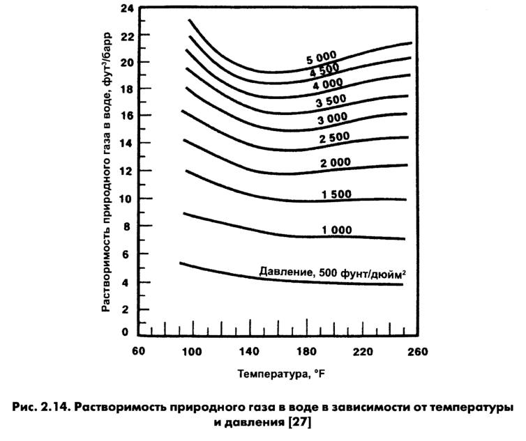</a></figure>
    <p>По горизонтали температура 60–260 °F, по вертикали растворимость, фут³/барр, от 0 до 24 (1 фут³/барр = 0,178 м³/м³; 24 соответствует 4,2). Семейство кривых от 500 до 5000 фунт/дюйм². Нижняя кривая (500) около 4–5 фут³/барр. Верхние (5000) начинаются выше 22 и идут около 19–21.</p>
    <p>Как читать: кривые почти горизонтальны, лишь слегка «прогнуты» — температура влияет мало. Расстояние между кривыми показывает сильное влияние давления.</p>
    <p class="meaning">Вывод: из книги: при 500 psi (3,45 МПа) и 150 °F растворимость около 4,1 фут³/барр (0,73 м³/м³), а при 2000 psi (13,8 МПа) около 11,9 фут³/барр (2,1 м³/м³).</p>
  </div>

  <div class="formula">
    <p class="tag">Формула (2.13): растворимость газа в соленой воде</p>
    \[ R_{s}=R_{sw}\,\bigl[\,1-X_s\cdot S\cdot10^{-7}\bigr] \]
    <dl class="vars">
      <dt>\(R_s\)</dt><dd>растворимость газа в соленой воде</dd>
      <dt>\(R_{sw}\)</dt><dd>растворимость газа в чистой воде (по рис. 2.14)</dd>
      <dt>\(X_s\)</dt><dd>поправочный коэффициент за соленость (табл. 2.4), зависит от температуры</dd>
      <dt>\(S\)</dt><dd>содержание солей, ч. н. млн</dd>
    </dl>
    <p class="meaning">Смысл: соль «занимает место» в воде, поэтому газа в неё влезает меньше. Чем соленее вода, тем меньше растворимость. Показатель \(10^{-7}\) подтверждается проверкой по примеру книги.</p>
  </div>

  <div class="table-note">
    <p class="tag">Табл. 2.4 · стр. 61</p>
    <p class="fig-title">Поправка за минерализацию для растворимости газов</p><figure class="scan"><a href="img/tab-2-4.jpg" target="_blank" rel="noopener"></a></figure>
    <p>Коэффициент \(X_s\) падает с ростом температуры; для промежуточных температур значения интерполируют.</p>
    <div class="tbl"><table>
      <thead><tr><th>\(X_s\)</th><th>T, °F (°C)</th></tr></thead>
      <tbody>
        <tr><td>75</td><td>100 (38)</td></tr>
        <tr><td>50</td><td>150 (66)</td></tr>
        <tr><td>44</td><td>200 (93)</td></tr>
        <tr><td>33</td><td>250 (121)</td></tr>
      </tbody></table></div>
  </div>

  <div class="example">
    <p class="tag">Пример: растворимость газа в рассоле (Канзас)</p>
    <p>Дано: глубина 7000 футов (в книге в скобках стоит 3133 м, но 7000 футов равны примерно 2134 м; расчёт ведётся в футах, так что на ответ это не влияет), среднегодовая температура поверхности 70 °F, солёность 80 000 ч. н. млн, давление 3300 фунт/дюйм² (23 МПа).</p>
    <p>Шаг 1. Температура пласта: \(T_f=70+(1/100)\cdot7000=140\) °F (60 °C).</p>
    <p>Шаг 2. По рис. 2.14 для 140 °F и 3300 psi в чистой воде \(R_{sw}\approx16\) фут³/барр = 2,85 м³/м³.</p>
    <p>Шаг 3. По табл. 2.4 интерполяция на 140 °F: \(X_s=75-\tfrac{40}{50}\cdot25=55\).</p>
    <p>Шаг 4. \(R_s=2{,}85\,[1-55\cdot80\,000\cdot10^{-7}]=2{,}85\,(1-0{,}44)=2{,}85\cdot0{,}56\approx1{,}60\) м³/м³.</p>
    <p>Соленость 8 % уменьшила растворимость почти вдвое.</p>
  </div>

  <h4>Вязкость воды</h4>
  <p>Жидкость сопротивляется изменению формы. Если две поверхности сдвигают жидкость между ними, возникает усилие сдвига. Усилие на единицу площади — напряжение сдвига.</p>
  <div class="formula">
    <p class="tag">Формула (2.14): абсолютная вязкость</p>
    \[ \tau=-\mu\,\frac{dv}{dx} \]
    <dl class="vars">
      <dt>\(\tau\)</dt><dd>напряжение сдвига, Па</dd>
      <dt>\(\mu\)</dt><dd>абсолютная (динамическая) вязкость, Па·с</dd>
      <dt>\(v\)</dt><dd>скорость течения флюида, м/с</dd>
      <dt>\(x\)</dt><dd>расстояние поперёк потока, м</dd>
    </dl>
    <p class="meaning">Смысл: чем быстрее скорость меняется от слоя к слою, тем больше трение. Вязкость — коэффициент пропорциональности. Знак минус показывает, что вязкие силы тормозят движение.</p>
  </div>
  <p>Единицы: пуаз (г/(см·с)), 1 сантипуаз = 0,01 пуаза = 1 мПа·с; стокс — единица кинематической вязкости, 1 сантистокс = 0,01 стокса; паскаль-секунда = 10 пуаз.</p>

  <div class="figure">
    <p class="tag">Рис. 2.15 · стр. 62</p>
    <p class="fig-title">Вязкость воды от температуры, минерализации и давления</p><figure class="scan"><a href="img/fig-2-15.jpg" target="_blank" rel="noopener">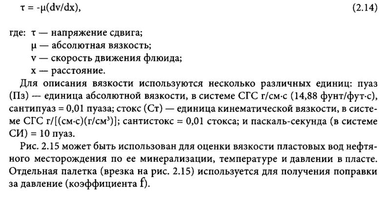</a></figure>
    <p>По горизонтали температура, °F (40–400), по вертикали вязкость \(\mu^*\) в сантипуазах (от 0 до 2,1). Пучок кривых для разной солёности NaCl: от 0 % до 26 %. Все кривые падают вниз и вправо: сначала круто, потом почти ровно. Чем солёнее, тем кривая выше. Во врезке справа поправка за давление \(f\) как функция температуры: линейные прямые от 1,00 до 1,14.</p>
    <p>Как читать: по температуре и солёности найдите вязкость при атмосферном давлении, затем умножьте на \(f\) из врезки для давления пласта.</p>
    <p class="meaning">Вывод: вязкость воды падает с нагревом (при 180 °F уже менее 0,5 сПз), растёт с солёностью и слабо — с давлением.</p>
  </div>

  <div class="example">
    <p class="tag">Пример: вязкость рассола</p>
    <p>Рассол 12 % солей, давление 6000 фунт/дюйм² (41,4 МПа), температура 180 °F (82 °C).</p>
    <p>Шаг 1. По рис. 2.15 для 12 % и 180 °F при атмосферном давлении: 0,48 сПз.</p>
    <p>Шаг 2. Поправка за давление \(f=1{,}018\).</p>
    <p>Шаг 3. \(\mu=0{,}48\times1{,}018\approx0{,}49\) сПз (0,49 мПа·с).</p>
  </div>

  <h3>Нефть и газ</h3>
  <p>Нефть — смесь тысяч соединений. В основном это углеводороды (углерод и водород). Есть также соединения азота, серы, кислорода и металлоорганика. В 1927 г. Американский нефтяной институт запустил проект 6: выделить и определить компоненты нефти (нефть из Понка-Сити, Оклахома). К 1953 г. выявили 130 углеводородов, потом газовая хроматография и масс-спектрометрия увеличили число идентифицированных соединений. Плотность и вязкость газов и жидкостей — важнейшие их характеристики для расчёта движения флюида в пласте.</p>

  <h4>Плотность газов</h4>
  <p>Плотность газа считают по уравнению состояния реальных газов, где поправка Z учитывает неидеальность. Z — отношение реального объёма газа к объёму идеального газа при тех же условиях (для идеального Z = 1).</p>
  <div class="formula">
    <p class="tag">Формулы (2.15) и (2.16): уравнение состояния реального газа</p>
    \[ pV=Z\,\frac{m}{M}\,RT,\qquad \rho=\frac{m}{V}=\frac{pM}{ZRT} \]
    <dl class="vars">
      <dt>\(p\)</dt><dd>абсолютное давление, Па (в промысловых единицах фунт/дюйм²)</dd>
      <dt>\(V\)</dt><dd>объём газа, м³</dd>
      <dt>\(Z\)</dt><dd>коэффициент сверхсжимаемости (поправка за неидеальность), безразмерный</dd>
      <dt>\(m\)</dt><dd>масса газа, кг</dd>
      <dt>\(M\)</dt><dd>молекулярный вес газа, кг/моль (или г/моль)</dd>
      <dt>\(R\)</dt><dd>универсальная газовая постоянная, 8,314 Дж/(моль·К) (10,73 в фунт/дюйм²·фут³/(фунт-моль·°R))</dd>
      <dt>\(T\)</dt><dd>абсолютная температура, К (°R в промысловых единицах)</dd>
    </dl>
    <p class="meaning">Смысл: плотность газа растёт с давлением и молекулярной массой, падает с температурой. При \(Z\lt1\) газ сжимается легче идеального (силы притяжения молекул), при \(Z\gt1\) — труднее (сказывается собственный объём молекул). Единицы «промысловой» системы США применяют потому, что палетки и номограммы там не переведены в СИ.</p>
  </div>

  <div class="formula">
    <p class="tag">Формула (2.17): псевдоприведённые параметры</p>
    \[ T_{pr}=\frac{T}{T_{pc}},\qquad p_{pr}=\frac{p}{p_{pc}} \]
    <dl class="vars">
      <dt>\(T_{pr},\,p_{pr}\)</dt><dd>псевдоприведённые температура и давление, безразмерные</dd>
      <dt>\(T_{pc},\,p_{pc}\)</dt><dd>псевдокритические температура и давление смеси (по табл. 2.5)</dd>
    </dl>
    <p class="meaning">Смысл: у разных газов \(Z\) ведёт себя «одинаково», если измерять температуру и давление в долях от критических. Поэтому одна общая палетка (рис. 2.16) годится для любого газа или смеси.</p>
  </div>

  <div class="figure">
    <p class="tag">Рис. 2.16 · стр. 64</p>
    <p class="fig-title">Коэффициент сверхсжимаемости реальных газов</p><figure class="scan"><a href="img/fig-2-16.jpg" target="_blank" rel="noopener">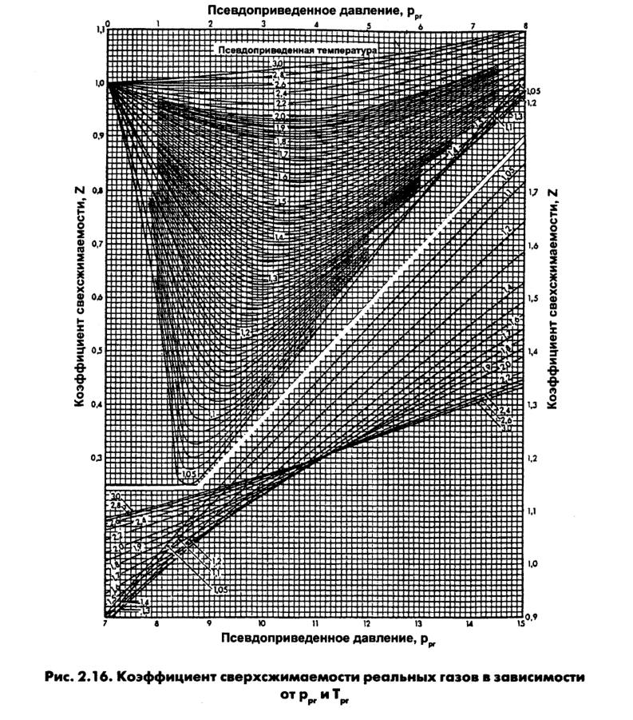</a></figure>
    <p>Два поля. Верхнее: \(p_{pr}\) от 0 до 8 по горизонтали, \(Z\) от 0,3 до 1,1 по вертикали. Нижнее: \(p_{pr}\) от 7 до 15, \(Z\) от 0,9 до 1,7. Густой пучок кривых для разных \(T_{pr}\) (от 1,05 до 3,0). Видно: при малых \(p_{pr}\) все кривые начинаются с \(Z=1\), потом кривые низких температур уходят вниз (до \(Z\approx0{,}3\)–0,4), затем вверх, а высокотемпературные остаются ближе к 1.</p>
    <p>Как читать: рассчитайте \(T_{pr}\) и \(p_{pr}\), найдите нужную кривую и считайте \(Z\) по вертикали.</p>
    <p class="meaning">Вывод: при умеренных давлениях газ сжимается легче идеального (\(Z\lt1\)), при очень высоких труднее (\(Z\gt1\)).</p>
  </div>

  <div class="table-note">
    <p class="tag">Табл. 2.5 · стр. 65</p>
    <p class="fig-title">Физические свойства углеводородов и некоторых других веществ</p>
    <p>В таблице (она напечатана боком) для каждого вещества даны молекулярный вес, температура кипения при нормальных условиях, плотность жидкой фазы, плотность в газообразном состоянии при 15 °C и 1 атм, критическая температура и критическое давление. Нужна в первую очередь для расчёта \(T_{pc}\) и \(p_{pc}\).</p>
    <div class="tbl"><table>
      <thead><tr><th>Компонент</th><th>Мол. вес</th><th>T кип., °C</th><th>Плотность жидкости, г/см³</th><th>Крит. T, К</th><th>Крит. p, кПа</th></tr></thead>
      <tbody>
        <tr><td>Метан CH₄</td><td>16,04</td><td>-161,5</td><td>0,29987*</td><td>191,1</td><td>4640</td></tr>
        <tr><td>Этан C₂H₆</td><td>30,07</td><td>-88,61</td><td>0,37387*</td><td>305,6</td><td>4909</td></tr>
        <tr><td>Пропан C₃H₈</td><td>44,09</td><td>-42,11</td><td>0,50746**</td><td>370,0</td><td>4254</td></tr>
        <tr><td>Изобутан</td><td>58,12</td><td>-11,72</td><td>0,56289**</td><td>408,3</td><td>3640</td></tr>
        <tr><td>н-Бутан</td><td>58,12</td><td>-0,50</td><td>0,58419**</td><td>425,6</td><td>3799</td></tr>
        <tr><td>н-Пентан</td><td>72,15</td><td>36,06</td><td>0,63097</td><td>470,6</td><td>3344</td></tr>
        <tr><td>н-Гексан</td><td>86,17</td><td>68,72</td><td>0,66364</td><td>507,8</td><td>2999</td></tr>
        <tr><td>н-Октан</td><td>114,22</td><td>125,61</td><td>0,70641</td><td>569,4</td><td>2496</td></tr>
        <tr><td>н-Декан</td><td>142,28</td><td>174,00</td><td>0,73381</td><td>619,4</td><td>2158</td></tr>
        <tr><td>Азот N₂</td><td>28,02</td><td>-195,78</td><td>—</td><td>126,1</td><td>3392</td></tr>
        <tr><td>Углекислый газ CO₂</td><td>44,01</td><td>-78,5</td><td>1,1005</td><td>304,4</td><td>7398</td></tr>
        <tr><td>Сероводород H₂S</td><td>34,08</td><td>-60,28</td><td>1,4053</td><td>373,9</td><td>9005</td></tr>
        <tr><td>Вода H₂O</td><td>18,02</td><td>100,0</td><td>1,000</td><td>758,3</td><td>22 105</td></tr>
      </tbody></table></div>
    <p>* кажущаяся плотность в жидкой фазе; ** плотность при давлении насыщения. Закономерность: с ростом числа углеродов растут молекулярный вес, температура кипения и критическая температура, а критическое давление падает.</p>
  </div>

  <div class="example">
    <p class="tag">Пример: плотность метана при пластовых условиях (авторский расчёт)</p>
    <p>Метан \(M=16{,}04\) г/моль = 0,01604 кг/моль, \(p=10\) МПа, \(T=350\) К. Допустим \(Z=0{,}9\) (по палетке при \(T_{pr}=350/191{,}1\approx1{,}83\), \(p_{pr}=10/4{,}64\approx2{,}2\); значение \(Z\) взято ориентировочно).</p>
    <p>\(\rho=\dfrac{pM}{ZRT}=\dfrac{10^{7}\cdot0{,}01604}{0{,}9\cdot8{,}314\cdot350}=\dfrac{160\,400}{2619}\approx61\) кг/м³.</p>
    <p>Для сравнения: при 1 атм и 15 °C метан весит только 0,68 кг/м³ (табл. 2.5). Под давлением он плотнее почти в 90 раз.</p>
  </div>

  <h4>Вязкость газов</h4>
  <p>Вязкость газа зависит от температуры, давления и молекулярного веса. Точных формул нет. Карр и соавторы построили две палетки: рис. 2.17 даёт вязкость при атмосферном давлении, рис. 2.18 — поправку на давление через отношение вязкостей.</p>
  <div class="figure">
    <p class="tag">Рис. 2.17 · стр. 66</p>
    <p class="fig-title">Вязкость газов при атмосферном давлении в зависимости от температуры</p><figure class="scan"><a href="img/fig-2-17.jpg" target="_blank" rel="noopener">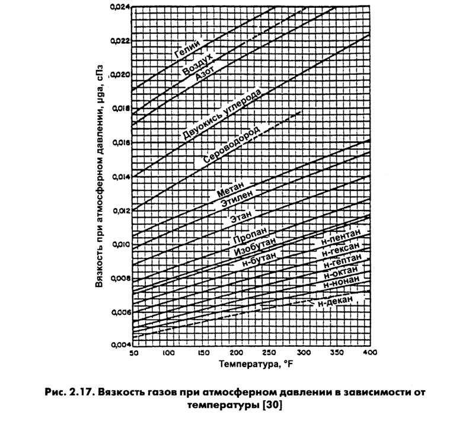</a></figure>
    <p>По горизонтали температура 50–400 °F (10–204 °C), по вертикали вязкость при атмосферном давлении, сПз (очень малые значения, порядка 0,004–0,02). Кривые для разных газов (метан, этан, пропан и др., по молекулярному весу).</p>
    <p>Как читать: находим по температуре и составу газа вязкость \(\mu_1\) при 1 атм.</p>
    <p class="meaning">Вывод: в отличие от жидкостей, вязкость газа растёт с нагревом (молекулы чаще сталкиваются). Лёгкие газы менее вязки, чем тяжёлые.</p>
  </div>
  <div class="figure">
    <p class="tag">Рис. 2.18 · стр. 67</p>
    <p class="fig-title">Отношение вязкостей как функция псевдоприведённого давления</p><figure class="scan"><a href="img/fig-2-18.jpg" target="_blank" rel="noopener">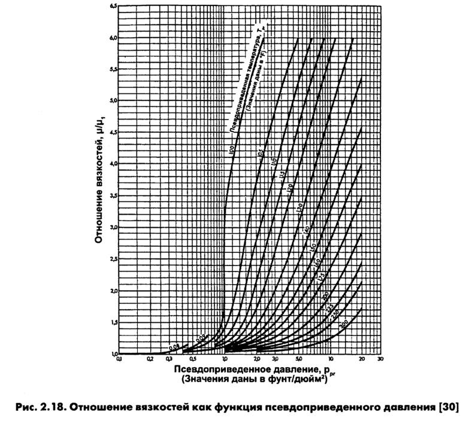</a></figure>
    <p>По горизонтали \(p_{pr}\) (логарифмическая шкала от 0,1 до 30), по вертикали \(\mu/\mu_1\) (от 1,0 до 6,5). Пучок кривых для разных \(T_{pr}\). Кривые низких \(T_{pr}\) резко идут вверх при росте давления, при больших \(T_{pr}\) подъём мягкий.</p>
    <p>Как читать: по \(p_{pr}\) и \(T_{pr}\) считываем множитель \(\mu/\mu_1\), затем умножаем на вязкость при атмосферном давлении.</p>
    <p class="meaning">Вывод: при высоком давлении вязкость газа может вырасти в несколько раз по сравнению с атмосферной.</p>
  </div>

  <h4>Плотность нефти</h4>
  <div class="formula">
    <p class="tag">Формула (2.18): градусы API</p>
    \[ {}^{\circ}\mathrm{API}=\frac{141{,}5}{SG_{60^\circ F}}-131{,}5 \]
    <dl class="vars">
      <dt>°API</dt><dd>плотность в градусах Американского нефтяного института (в тексте °АНИ)</dd>
      <dt>\(SG_{60^\circ F}\)</dt><dd>относительная плотность по воде при 60 °F (15,56 °C)</dd>
    </dl>
    <p class="meaning">Смысл: шкала «перевёрнутая»: чем легче нефть, тем выше °API. Вода (SG = 1) имеет 10 °API. Градус API не линеен по отношению к свойствам нефти и не является мерой качества, но на нём основана цена нефти.</p>
  </div>
  <div class="example">
    <p class="tag">Пример: из SG в °API (авторский)</p>
    <p>Нефть с SG = 0,876: \(141{,}5/0{,}876=161{,}5\), \(161{,}5-131{,}5=30\) °API. Это лёгкая нефть (табл. 2.6).</p>
  </div>

  <div class="table-note">
    <p class="tag">Табл. 2.6 · стр. 68</p>
    <p class="fig-title">Сопоставление °API и относительной плотности (15,6 °C)</p><figure class="scan"><a href="img/tab-2-6.jpg" target="_blank" rel="noopener">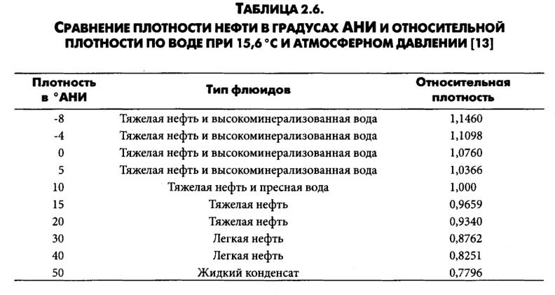</a></figure>
    <div class="tbl"><table>
      <thead><tr><th>°API</th><th>Тип флюида</th><th>SG</th></tr></thead>
      <tbody>
        <tr><td>-8</td><td>тяжёлая нефть и высокоминерализованная вода</td><td>1,1460</td></tr>
        <tr><td>-4</td><td>то же</td><td>1,1098</td></tr>
        <tr><td>0</td><td>то же</td><td>1,0760</td></tr>
        <tr><td>5</td><td>то же</td><td>1,0366</td></tr>
        <tr><td>10</td><td>тяжёлая нефть и пресная вода</td><td>1,000</td></tr>
        <tr><td>15</td><td>тяжёлая нефть</td><td>0,9659</td></tr>
        <tr><td>20</td><td>тяжёлая нефть</td><td>0,9340</td></tr>
        <tr><td>30</td><td>лёгкая нефть</td><td>0,8762</td></tr>
        <tr><td>40</td><td>лёгкая нефть</td><td>0,8251</td></tr>
        <tr><td>50</td><td>жидкий конденсат</td><td>0,7796</td></tr>
      </tbody></table></div>
    <p>Запомнить: ниже 10 °API — нефть тяжелее воды (тонет); 10–25 — тяжёлая; выше 30 — лёгкая; около 50 — конденсат.</p>
  </div>

  <h4>Вязкость нефти</h4>
  <p>Два распространённых метода: (1) кинематическая вязкость в сантистоксах по времени протекания через стеклянный капилляр; (2) время вытекания стандартной пробы через калиброванное отверстие вискозиметра Сейболта (ASTM D-88). «Универсальный» Сейболт — для нефтепродуктов и масел, «Фурол» (отверстие больше) — для мазута, битумов и очень вязких нефтей. Результат даётся в секундах Сейболта или Фурол при указанной температуре. Абсолютная вязкость (сПз) = кинематическая (сСт) \(\times\) плотность нефти. В книге написано «делением», но верна связь \(\mu=\nu\rho\); при плотности меньше 1 г/см³ абсолютная вязкость меньше кинематической.</p>

  <div class="table-note">
    <p class="tag">Табл. 2.7 и 2.8 · стр. 68–69</p>
    <p class="fig-title">Перевод секунд Сейболта в сантистоксы</p><figure class="scan"><a href="img/tab-2-7.jpg" target="_blank" rel="noopener">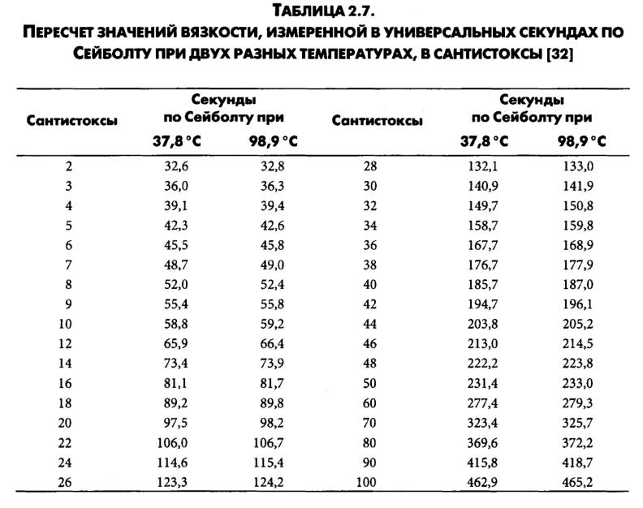</a></figure><figure class="scan"><a href="img/tab-2-8.jpg" target="_blank" rel="noopener">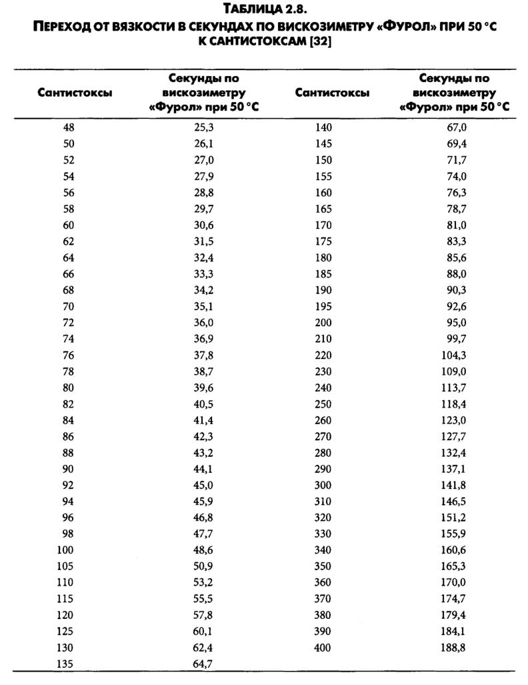</a></figure>
    <p>Табл. 2.7 — для «Универсального» вискозиметра при 37,8 °C и 98,9 °C (диапазон 2–100 сСт). Табл. 2.8 — для «Фурол» при 50 °C (диапазон 48–400 сСт). Они нужны для перевода показаний прибора в физическую вязкость.</p>
    <div class="tbl"><table>
      <thead><tr><th>сСт</th><th>Универсал. при 37,8 °C, с</th><th>сСт</th><th>«Фурол» при 50 °C, с</th></tr></thead>
      <tbody>
        <tr><td>2</td><td>32,6</td><td>48</td><td>25,3</td></tr>
        <tr><td>10</td><td>58,8</td><td>100</td><td>48,6</td></tr>
        <tr><td>20</td><td>97,5</td><td>200</td><td>95,0</td></tr>
        <tr><td>50</td><td>231,4</td><td>300</td><td>141,8</td></tr>
        <tr><td>100</td><td>462,9</td><td>400</td><td>188,8</td></tr>
      </tbody></table></div>
    <p>Показаны отдельные строки; в книге таблицы полные (шаг от 1 до 10 сСт). Зависимость почти линейная при больших значениях: около 4,6 с на 1 сСт для универсального вискозиметра.</p>
  </div>

  <h3>Химия нефти и газа</h3>
  <p>Углеводороды делят на четыре класса: (1) алканы (парафины), нормальные и разветвлённые; (2) циклоалканы (нафтены); (3) ароматические; (4) асфальты, асфальтены и смолы (высокомолекулярные полициклические соединения с атомами азота, серы и кислорода, так называемые NSO-соединения). Тиссо и Вельте выделили шесть групп нефтей с помощью тройной диаграммы.</p>

  <div class="figure">
    <p class="tag">Рис. 2.19 · стр. 70</p>
    <p class="fig-title">Тройная диаграмма классификации нефтей</p><figure class="scan"><a href="img/fig-2-19.jpg" target="_blank" rel="noopener">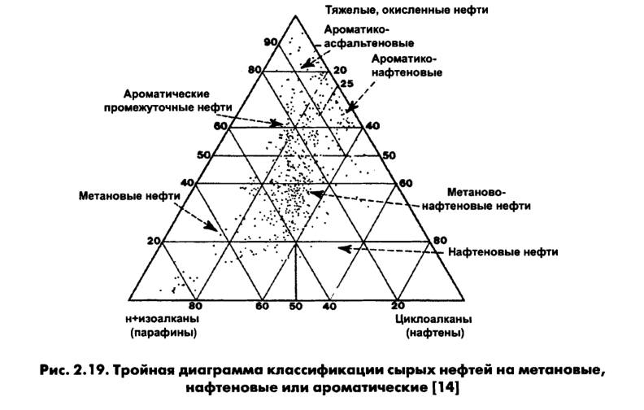</a></figure>
    <p>Треугольник. Нижний левый угол — н+изоалканы (парафины), нижний правый — циклоалканы (нафтены), верхний — ароматика, асфальтены и смолы. На сторонах отмечены доли в процентах. Внутри области: метановые нефти (внизу слева), метаново-нафтеновые, нафтеновые (справа), ароматические промежуточные нефти, ароматико-нафтеновые, ароматико-асфальтеновые, тяжёлые окисленные нефти (вверху). Точки — реальные нефти, концентрируются в центре.</p>
    <p>Как читать: по составу найдите точку и определите, в какой области она лежит.</p>
    <p class="meaning">Вывод: нефть ароматическая, если ароматика + асфальтены + смолы \(\ge\) 50 %. Парафиновая — насыщенных не менее 50 %, из них парафинов не менее 40 %. Нафтеновая — насыщенных не менее 50 %, из них нафтенов не менее 40 %.</p>
  </div>

  <p>Пример Ханта: нефть с 49 % нафтенов и 79 % насыщенных (алканы и нафтены) — нафтеновая.</p>
  <div class="table-note">
    <p class="tag">Табл. 2.9 · стр. 70</p>
    <p class="fig-title">Состав и товарные фракции нафтеновой нефти</p><figure class="scan"><a href="img/tab-2-9.jpg" target="_blank" rel="noopener">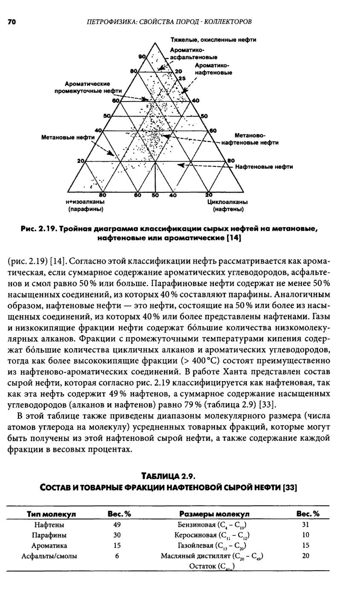</a></figure>
    <p>Слева состав по типам молекул, справа товарные фракции по числу атомов углерода. Остаток (около 24 % до 100) в тексте не напечатан.</p>
    <div class="tbl"><table>
      <thead><tr><th>Тип молекул</th><th>Вес. %</th><th>Фракция (число С)</th><th>Вес. %</th></tr></thead>
      <tbody>
        <tr><td>Нафтены</td><td>49</td><td>Бензиновая (C₄–C₁₀)</td><td>31</td></tr>
        <tr><td>Парафины</td><td>30</td><td>Керосиновая (C₁₁–C₁₂)</td><td>10</td></tr>
        <tr><td>Ароматика</td><td>15</td><td>Газойлевая (C₁₃–C₂₀)</td><td>15</td></tr>
        <tr><td>Асфальты/смолы</td><td>6</td><td>Масляный дистиллят (C₂₀–C₄₀)</td><td>20</td></tr>
        <tr><td></td><td></td><td>Остаток (C₄₀ и выше)</td><td>—</td></tr>
      </tbody></table></div>
  </div>

  <p>Горное бюро США стандартизировало классификацию нефтей по дробной перегонке: литр нефти нагревают в колбе и записывают, сколько паров (в объёмных процентах) сконденсировалось при каждой температуре. После 275 °C колбу ставят под вакуум (около 40 мм рт. ст.) и продолжают.</p>
  <div class="table-note">
    <p class="tag">Табл. 2.10 · стр. 72–73</p>
    <p class="fig-title">Фракционный состав нефти месторождения Оклахома-Сити (метод Горного бюро, перегонка по Гемпелю)</p><figure class="scan"><a href="img/tab-2-10.jpg" target="_blank" rel="noopener">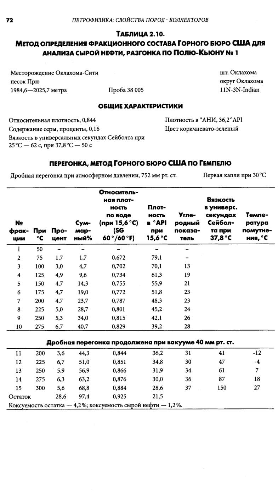</a></figure>
    <p>Общие характеристики: относительная плотность 0,844, 36,2 °API, сера 0,16 %, цвет коричневато-зелёный. Далее таблица по 15 фракциям: температура отбора, процент, суммарный процент, плотность, °API, показатель вязкости и температура помутнения. Лёгкие фракции (до 275 °C) почти 41 % от объёма нефти, дальше при вакууме до 300 °C ещё около 28 %. Остаток 28,6 % (относительная плотность 0,925, 21,5 °API).</p>
    <div class="tbl"><table>
      <thead><tr><th>Фракция</th><th>T, °C</th><th>%</th><th>Сумма, %</th><th>SG</th><th>°API</th></tr></thead>
      <tbody>
        <tr><td>2</td><td>75</td><td>1,7</td><td>1,7</td><td>0,672</td><td>79,1</td></tr>
        <tr><td>5</td><td>150</td><td>4,7</td><td>14,3</td><td>0,755</td><td>55,9</td></tr>
        <tr><td>10</td><td>275</td><td>6,7</td><td>40,7</td><td>0,829</td><td>39,2</td></tr>
        <tr><td>11 (вакуум)</td><td>200</td><td>3,6</td><td>44,3</td><td>0,844</td><td>36,2</td></tr>
        <tr><td>15 (вакуум)</td><td>300</td><td>5,6</td><td>68,8</td><td>0,884</td><td>28,6</td></tr>
        <tr><td>Остаток</td><td>—</td><td>28,6</td><td>97,4</td><td>0,925</td><td>21,5</td></tr>
      </tbody></table></div>
    <p>Продолжение (стр. 73): бензин и лёгкий дистиллят 23,7 % (SG 0,748), керосин 10,3 % (SG 0,808), газойль 15,0 % (0,838), смазочные дистилляты (невязкий 12,4 %, средний 7,4 %), остаток 28,6 %, потери 2,6 %.</p>
    <p class="meaning">Вывод: с ростом температуры отгона плотность фракций растёт (°API падает), а вязкость и температура помутнения растут: тяжёлые фракции содержат больше парафинов.</p>
  </div>

  <h4>Алканы (парафины)</h4>
  <p>Алканы называют насыщенными, или предельными: все валентности углерода заняты водородом, связи между углеродами одинарные. Общая формула \(\mathrm{C_nH_{2n+2}}\): метан, этан, пропан, бутан, пентан и далее. Изомеры — соединения с одним составом, но разным строением. Пентан имеет три изомера (н-пентан, изопентан, 2,2-диметилпропан) с разными температурами кипения (36,07; 27,85 и 9,5 °C). У октана 18 изомеров, у декана 75. Две нефти с одинаковыми °API и вязкостью могут сильно отличаться по составу.</p>
  <p>Алканы с 25 и более атомами углерода твёрдые при комнатной температуре (парафин). Нефть с ними мутнеет при охлаждении; температура помутнения (начала парафинообразования) — показатель парафинистости. Призабойную зону и насосно-компрессорные трубы приходится чистить от парафина: он снижает дебит скважины.</p>
  <p>Нефти из наземных растений богаты алканами, нефти из морской органики — циклическими соединениями. Если метановая нефть после миграции встретит атмосферную воду, аэробные бактерии разрушат алканы до карбоновых кислот и \(\mathrm{CO_2}\). Остаётся нефть из ароматики, асфальтов и смол.</p>
  <div class="figure">
    <p class="tag">Рис. 2.20–2.23 · стр. 73–76</p>
    <p class="fig-title">Строение углеводородов: алканы, алкены, циклоалканы, ароматика</p><figure class="scan"><a href="img/fig-2-20.jpg" target="_blank" rel="noopener">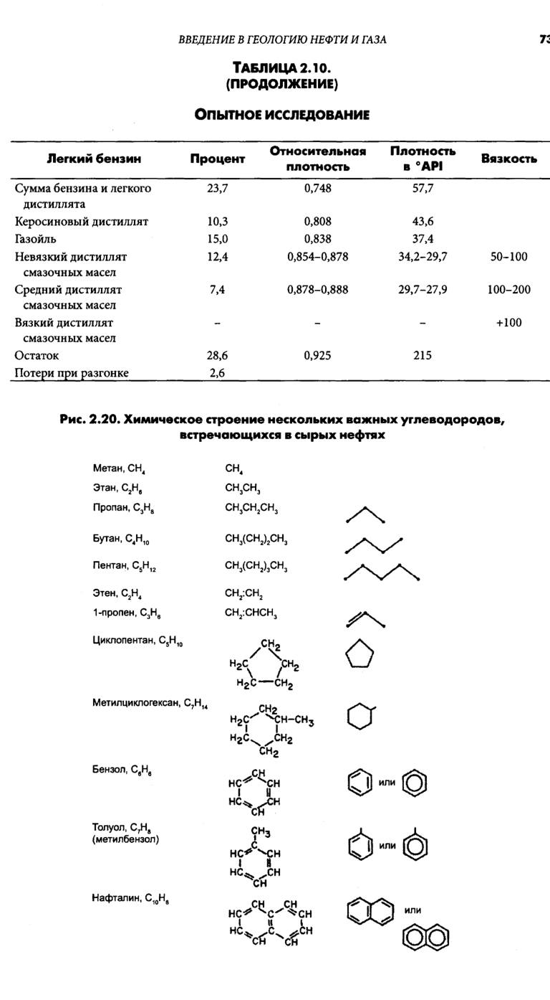</a></figure><figure class="scan"><a href="img/fig-2-21.jpg" target="_blank" rel="noopener">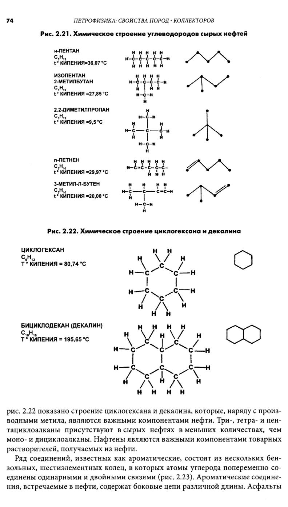</a></figure><figure class="scan"><a href="img/fig-2-22.jpg" target="_blank" rel="noopener">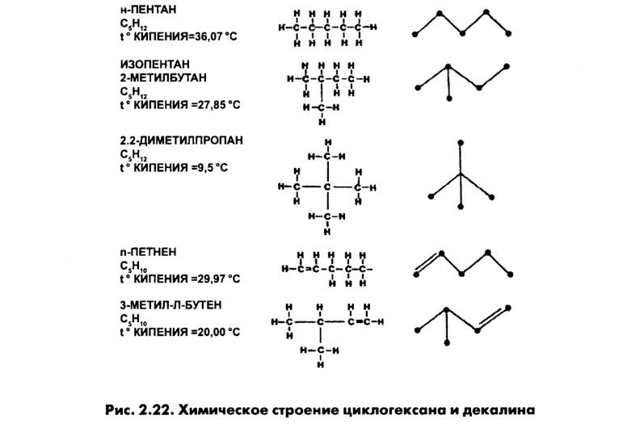</a></figure><figure class="scan"><a href="img/fig-2-23.jpg" target="_blank" rel="noopener">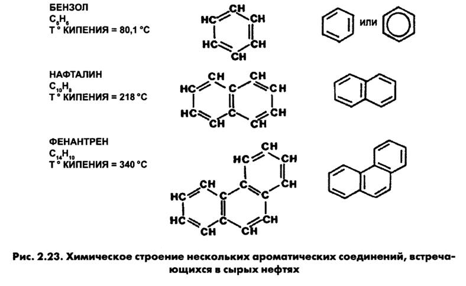</a></figure>
    <p>Рис. 2.20: структурные формулы метана, этана, пропана, бутана, пентана, этена, 1-пропена, циклопентана, метилциклогексана, бензола, толуола, нафталина. Рис. 2.21: изомеры пентана и пентены, с температурами кипения. Рис. 2.22: циклогексан (кипит при 80,74 °C) и декалин (195,65 °C). Рис. 2.23: бензол (80,1 °C), нафталин (218 °C), фенантрен (340 °C).</p>
    <p>Как читать: линии — связи, вершины — атомы углерода (с достроенными водородами). Цепочки — алканы, кольца — циклоалканы, кольца с чередующимися двойными связями — ароматика.</p>
    <p class="meaning">Вывод: чем больше молекула и сложнее её структура, тем выше температура кипения и вязкость. Это объясняет, как тяжёлые фракции отгоняются в последнюю очередь.</p>
  </div>

  <h4>Циклоалканы, ароматика, асфальты</h4>
  <p>Циклоалканы (нафтены): атомы углерода в кольцах, остальные валентности заняты водородом. Важны моно- и дициклоалканы (циклогексан, декалин, метильные производные). Нафтены — важные компоненты нефтяных растворителей.</p>
  <p>Ароматические соединения содержат бензольные кольца с чередующимися одинарными и двойными связями, у них есть боковые цепи разной длины. Асфальты и смолы — высокомолекулярные конденсированные кольцевые структуры (ароматика, насыщенные циклы и алкановые цепи), «инкрустированные» атомами азота, серы и кислорода. Асфальт — чёрный коллоидный раствор высокомолекулярных многоядерных ароматических и ненасыщенных соединений. Тяжёлые нефти и битумы содержат больше N, S, O и металлов; многие нефти содержат сероводород.</p>
  <p>Алкены — ненасыщенные УВ с двойной связью между углеродами (например, 1-пропен), в них водорода меньше, чем у алканов.</p>

  <h4>Как разделить нефть на группы</h4>
  <p>Пробу разбавляют пентаном и фильтруют: асфальтены не растворяются и остаются осадком (его взвешивают). Раствор пропускают через двойную колонку: сверху активированная глина, снизу силикагель, и промывают пентаном (элюируют). Смолы адсорбируются глиной. Ароматика проходит глину, но задерживается силикагелем. Алканы (насыщенные) проходят обе колонки и собираются внизу. Смолы и ароматику извлекают смесью бензола и ацетона 1:1 и взвешивают после выпаривания растворителя. Те же фракции определяют жидкостным хроматографом высокого давления (ЖХВД) по пробе менее 1 мл.</p>
  <div class="figure">
    <p class="tag">Рис. 2.24–2.26 · стр. 76–77</p>
    <p class="fig-title">Колонка и схема хроматографического разделения нефти</p><figure class="scan"><a href="img/fig-2-24.jpg" target="_blank" rel="noopener">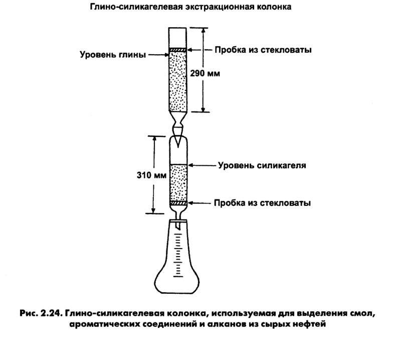</a></figure><figure class="scan"><a href="img/fig-2-25.jpg" target="_blank" rel="noopener">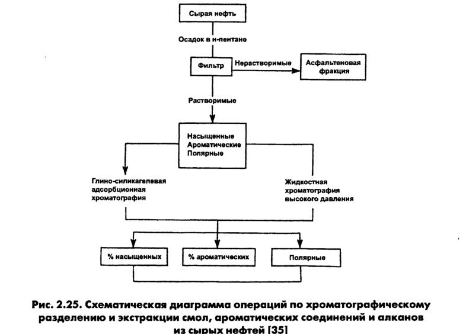</a></figure><figure class="scan"><a href="img/fig-2-26.jpg" target="_blank" rel="noopener">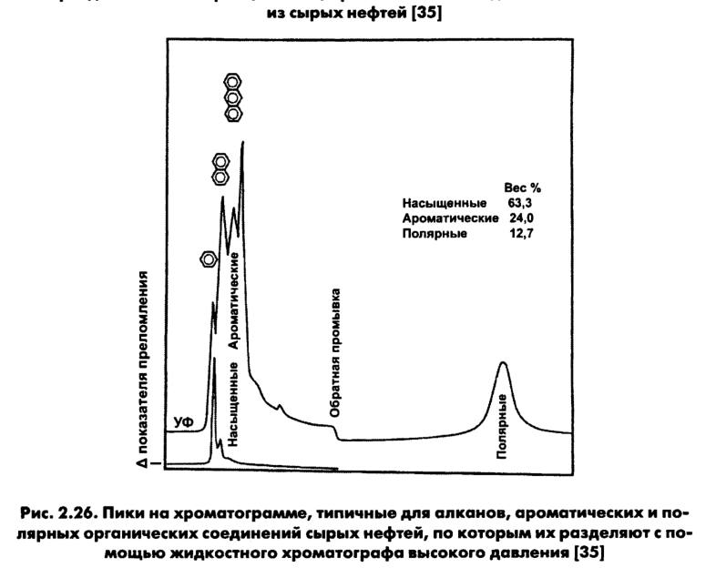</a></figure>
    <p>Рис. 2.24: стеклянная колонка высотой 290 мм, внизу пробка из стекловаты, затем слой силикагеля, затем слой глины. Рис. 2.25: блок-схема: нефть, разбавление н-пентаном, фильтр (осадок асфальтенов), раствор на глино-силикагелевую колонку (смолы, ароматика, насыщенные) или на ЖХВД. Рис. 2.26: хроматограмма ЖХВД: три группы пиков (насыщенные, ароматические, полярные) с долями: насыщенные 63,3 %, ароматические 24,0 %, полярные 12,7 %; ось — сигнал по показателю преломления, «обратная промывка» полярных.</p>
    <p>Как читать: площадь каждого пика пропорциональна доле соответствующей группы.</p>
    <p class="meaning">Вывод: нефть можно разложить на SARA-группы (насыщенные, ароматика, смолы, асфальтены), и это основа её классификации и прогноза поведения.</p>
  </div>

  <h4>Металлоорганические соединения</h4>
  <p>Они обычно связаны со смолами из-за полярности. Из тяжёлой нефти Боскан (Венесуэла) выделены порфирины с никелем и ванадием. Порфирин построен на тетрапиррольном ядре, как хлорофилл растений и гемоглобин крови. При седиментации магний хлорофилла (или железо гемоглобина) заменяется ванадием или никелем, и молекула стабилизируется. Блумер и Снайдер считают, что предшественники порфиринов входят в состав керогена.</p>
  <div class="figure">
    <p class="tag">Рис. 2.27 · стр. 79</p>
    <p class="fig-title">Строение дезоксофиллоэритропорфирина (ванадилпорфирина)</p><figure class="scan"><a href="img/fig-2-27.jpg" target="_blank" rel="noopener">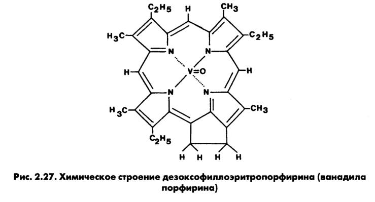</a></figure>
    <p>Плоская структура из четырёх пиррольных колец, соединённых мостиками, с атомом ванадия (с кислородом) в центре и боковыми цепями.</p>
    <p class="meaning">Вывод: наличие таких «молекулярных ископаемых» — одно из главных доказательств растительного происхождения нефти.</p>
  </div>

  <h3>Задания в конце главы</h3>
  <p>Книга предлагает 11 заданий: объяснить роль конвекции в расположении континентов; сравнить скорости волн в песчанике и известняке; рассказать об образовании Аппалачей; рассчитать возраст по радиоуглероду (отношение 1/7); дать определение кратона; объяснить трансгрессии и регрессии и их связь с материнскими породами; охарактеризовать обломочные породы (аркозы, граувакка); найти геотермический градиент (забой 3140 м, 92 °C, поверхность 27 °C); сравнить состав пластовой воды из зоны АВПД с морской водой; перевести вязкость по Сейболту (117 с при 100 °C, плотность 0,885 г/см³) в сантипуазы; описать строение нескольких соединений. Решения опираются на формулы (2.1)–(2.3), (2.9), (2.10) и таблицы выше.</p>

  <div class="terms">
    <h3>Словарик главы</h3>
    <dl>
      <dt>Литосфера</dt><dd>твёрдая внешняя оболочка Земли: кора и верх мантии, разбитая на плиты.</dd>
      <dt>Поверхность Мохо</dt><dd>граница между корой и мантией, где скорость сейсмических волн резко растёт.</dd>
      <dt>P-волна / S-волна</dt><dd>продольная (сжатия) и поперечная (сдвига) сейсмические волны; S не идёт в жидкости.</dd>
      <dt>СИАЛ / СИМА</dt><dd>гранитный (кремний и алюминий) и базальтовый (кремний и магний) слои коры.</dd>
      <dt>Субдукция</dt><dd>погружение одной плиты под другую в мантию.</dd>
      <dt>Трансформный разлом</dt><dd>разлом, вдоль которого плиты скользят горизонтально (Сан-Андреас).</dd>
      <dt>Период полураспада</dt><dd>время, за которое распадается половина радиоактивных ядер.</dd>
      <dt>Кратон (щит)</dt><dd>древнее устойчивое ядро континента из метаморфических пород.</dd>
      <dt>Трансгрессия / регрессия</dt><dd>наступление / отступление моря; даёт тонкие материнские / грубые коллекторные отложения.</dd>
      <dt>Ловушка</dt><dd>объём пласта, запечатанный так, что нефть и газ не могут уйти.</dd>
      <dt>Свод, замок</dt><dd>верхняя и нижняя точки ловушки, ещё удерживающей УВ.</dd>
      <dt>ГНК / ВНК</dt><dd>газонефтяной и водонефтяной контакты, границы между флюидами.</dd>
      <dt>Кероген</dt><dd>нерастворимое органическое вещество осадочных пород, предшественник нефти и газа.</dd>
      <dt>Диагенез / катагенез / метагенез</dt><dd>стадии преобразования осадка и органики при росте глубины, температуры и давления.</dd>
      <dt>Первичная / вторичная миграция</dt><dd>выход УВ из материнской породы / движение по коллектору к ловушке.</dd>
      <dt>Гидростатический градиент</dt><dd>рост давления с глубиной за счёт веса столба флюида.</dd>
      <dt>Горное давление</dt><dd>полная нагрузка вышележащих пород и флюидов.</dd>
      <dt>АВПД</dt><dd>аномально высокое пластовое давление.</dd>
      <dt>Геотермический градиент</dt><dd>рост температуры с глубиной, в среднем 18,2 °C/км.</dd>
      <dt>Сверхсжимаемость Z</dt><dd>поправка в уравнении состояния за неидеальность реального газа.</dd>
      <dt>°API</dt><dd>шкала плотности нефти: чем легче нефть, тем выше градус.</dd>
      <dt>Алканы / нафтены / ароматика</dt><dd>цепочечные, кольцевые насыщенные и бензольные УВ нефти.</dd>
      <dt>Асфальтены, смолы</dt><dd>тяжёлые полярные компоненты нефти с N, S, O и металлами.</dd>
      <dt>Порфирин</dt><dd>молекула на тетрапиррольном ядре с V или Ni; биомаркер растительного происхождения.</dd>
    </dl>
  </div>
</section>

<section class="chapter" id="ch03">
  <header class="ch-head">
    <p class="ch-num">Глава 3 · стр. 83–191</p>
    <h2>Пористость и проницаемость</h2>
    <p class="lead">Глава отвечает на два базовых вопроса про породу-коллектор: сколько в ней помещается нефти, газа и воды (пористость) и насколько легко эти флюиды сквозь неё движутся (проницаемость). Дальше разбирается, от чего зависят эти свойства, как их связывать между собой, как оценивать по керну, каротажу и испытаниям скважин и как учитывать неоднородность пласта.</p>
  </header>

  <div class="tldr">
    <h3>Главное за минуту</h3>
    <ul>
      <li>Пористость \(\phi\) — доля объёма породы, занятая порами: \(\phi = V_p/V_b\). У коллекторов она обычно 5–40 %, чаще 10–20 %. Для расчётов нужна эффективная пористость (сообщающиеся поры).</li>
      <li>Пористость зависит от сортировки зёрен, цементации, уплотнения и упаковки. Одинаковые шарики дают 46,7 % (самая рыхлая, кубическая упаковка) и 25,9 % (самая плотная, ромбоэдрическая). Мелкие зёрна между крупными пористость снижают.</li>
      <li>Пористость бывает первичной (при отложении) и вторичной (выщелачивание, доломитизация, трещины). В карбонатах важнее вторичная.</li>
      <li>Запасы считают объёмным методом: нефть \(N = 10000\,A h \phi (1-S_{wi})/B_{oi}\), газ — через объёмный коэффициент \(B_{gi}\).</li>
      <li>Проницаемость \(k\) — способность породы пропускать флюид. Её определяет закон Дарси; единица — дарси (мД, мкм²). Бывает абсолютная, эффективная и относительная.</li>
      <li>Единой связи «\(k\)–\(\phi\)» нет: она работает только внутри одной формации. Модель Козени–Кармана связывает \(k\) с пористостью и удельной поверхностью.</li>
      <li>Фильтрационные (гидравлические) ячейки выделяют по индикатору зоны фильтрации FZI и показателю качества коллектора RQI. Внутри ячейки свойства «похожи».</li>
      <li>Проницаемость зависит от направления (анизотропия, \(k_v/k_H\)) и сильно меняется по пласту. Среднее считают арифметически, геометрически или гармонически; неоднородность оценивают коэффициентами Лоренца и Дикстры–Парсонса.</li>
      <li>Проницаемость можно получить по ЯМР-каротажу (модель SDR) и по испытанию скважины (график давления, производная давления). Пласт делят на зоны статистическим методом Тестермана.</li>
    </ul>
  </div>

  <h3>Зачем нужны два свойства</h3>
  <p>Природа и внутреннее строение породы определяют, сколько флюида она вместит и как легко он пойдёт сквозь неё. Вместимость — это пористость. Способность пропускать — это проницаемость. Пока вы не знаете эти два числа, нельзя ответить на вопросы «сколько нефти», «с какой скоростью», «что можно добыть».</p>
  <p>Рядом с ними важны ещё структура породы (форма, размер, сортировка, упаковка зёрен), электрическое сопротивление, содержание воды при капиллярном давлении и извилистость поровых каналов. Мелкозернистые песчаники с плохо отсортированными угловатыми зёрнами обычно менее пористы, чем крупнозернистые хорошо отсортированные. Проницаемость тоже можно предсказывать по размеру и форме зёрен и по распределению поровых каналов.</p>
  <p>Электрическое сопротивление породы зависит от того, сколько в ней воды и какое у неё сопротивление. Зёрна и углеводороды — изоляторы, ток идёт по воде. Поэтому кривая сопротивления на каротаже помогает отличить нефтегазоносный пласт от водоносного.</p>

  <h3>Пористость</h3>
  <p>Зёрна песка или карбоната никогда не прилегают идеально: у них неправильная форма. Между ними остаётся пустое пространство — поры. Оно заполнено флюидами: жидкостью или газом. Пористость — это доля общего объёма породы, которую не занимает твёрдый скелет (матрица).</p>

  <div class="formula">
    <p class="tag">Формула 3.1: пористость</p>
    \[ \phi = \frac{V_b - V_{gr}}{V_b} = \frac{V_p}{V_b} \]
    <dl class="vars">
      <dt>\(\phi\)</dt><dd>пористость, доли единицы</dd>
      <dt>\(V_b\)</dt><dd>полный (общий) объём породы, см³</dd>
      <dt>\(V_{gr}\)</dt><dd>объём зёрен (твёрдой матрицы), см³</dd>
      <dt>\(V_p\)</dt><dd>объём пор, см³</dd>
    </dl>
    <p class="meaning">Смысл: пористость показывает, какая часть «куска камня» — пустота. Теоретически она от 0 до 1, но у реальных осадочных пород почти всегда меньше 0,5. Чем больше пустот, тем больше флюида помещается.</p>
  </div>

  <div class="example">
    <p class="tag">Пример: пористость по керну</p>
    <p>Сухой образец весит 425 г. После насыщения рассолом плотностью 1,07 г/см³ он весит 453 г. Длина 12 см, диаметр 4 см.</p>
    <p>Шаг 1. Объём образца: \(V_b = \pi \cdot 2^2 \cdot 12 = 150{,}80\) см³.</p>
    <p>Шаг 2. Масса рассола в порах: \(453 - 425 = 28\) г. Объём пор: \(V_p = 28/1{,}07 = 26{,}17\) см³.</p>
    <p>Шаг 3. \(\phi = 26{,}17/150{,}80 = 0{,}1735\), то есть около 17,3 %.</p>
  </div>

  <h4>Факторы, определяющие пористость</h4>
  <p>Предельные значения для идеальных одинаковых шариков рассчитали Фрейзер и Грейтон. При самой рыхлой (кубической) упаковке пористость 46,7 %, при самой плотной (ромбоэдрической) — 25,9 %. От диаметра шариков это не зависит. Но если в промежутки добавить шарики поменьше, пористость падает. У трёх размеров шариков в кубической упаковке получается около 26,5 %.</p>

  <div class="figure">
    <p class="tag">Рис. 3.1 · стр. 85</p>
    <p class="fig-title">Зёрна песка разных размеров и модель из шаров трёх размеров</p><figure class="scan"><a href="img/fig-3-1.jpg" target="_blank" rel="noopener">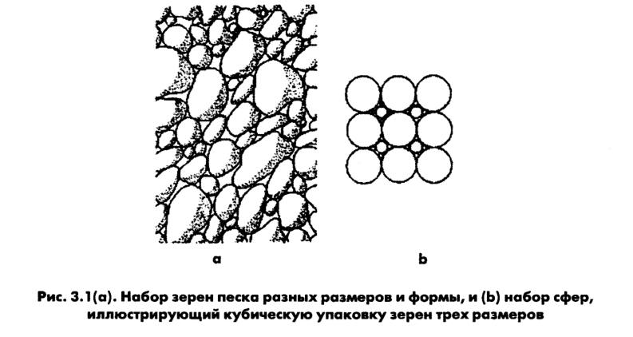</a></figure>
    <p>Слева (a) — шлиф песчаника: зёрна разной величины и формы, между ними чёрные поры. Справа (b) — схема кубической упаковки шаров трёх размеров: между крупными шарами сидят средние и мелкие.</p>
    <p>Как читать: на правой картинке видно, что мелкие шарики занимают пустоты между крупными. Свободного места остаётся меньше.</p>
    <p class="meaning">Вывод: чем хуже отсортированы зёрна (больше мелочи между крупными), тем ниже пористость и особенно эффективная пористость.</p>
  </div>

  <p>В реальных коллекторах пористость 5–40 %, чаще всего 10–20 %. Для обломочных пород она определяется четырьмя факторами.</p>
  <ul>
    <li><b>Однородность зёрен по размеру (сортировка).</b> Если алевритовые и глинистые частицы перемешаны с песком, эффективная пористость заметно падает. Такие коллекторы называют глинистыми. Сортировка зависит от диапазона размеров частиц, типа осадконакопления, течений во время седиментации и её длительности.</li>
    <li><b>Степень цементации и консолидации.</b> Хорошо сцементированные песчаники плотные, рыхлые — пористые. Цемент появляется при литификации и позже, от воды, циркулирующей в породе. Цементом бывают карбонаты кальция, магния и железа, лимонит, гематит, доломит, ангидрит, глинистые минералы и их смеси. Цемент заполняет пустоты.</li>
    <li><b>Уплотнение во время и после отложения.</b> Под нагрузкой частицы сближаются, пустоты исчезают, флюид выдавливается. Сильнее всего это для тонкозернистых пород (глины, аргиллиты, тонкие карбонаты). Выдавливание при повышенной температуре — главный механизм первичной миграции углеводородов из материнских пород в коллектор. Обычно глубже и древнее — меньше пористость, но исключения нередки. В карбонатах следы уплотнения часто слабые.</li>
    <li><b>Способ упаковки.</b> Под давлением вышележащих пород плохо отсортированные угловатые зёрна перестраиваются от хаотичной упаковки к более тесной, частично дробятся и пластически деформируются.</li>
  </ul>

  <div class="analogy">
    <p class="tag">На пальцах</p>
    <p>Представьте ведро с крупными камнями. Между ними большие щели. Теперь насыпьте в то же ведро песок: он забьёт щели, и пустого места станет меньше. Так же работает плохая сортировка. Ещё прижмите всё прессом и залейте цементом — свободного места останется совсем мало.</p>
  </div>

  <h4>Геолого-промысловая классификация</h4>
  <p>При осадконакоплении и литификации часть пор оказывается изолированной от остальных (цементация, уплотнение). Поэтому различают два вида пористости.</p>
  <ul>
    <li><b>Общая (абсолютная)</b> — все пустоты, независимо от того, сообщаются они или нет. Бывает у лавы и пемзы (пузырьковая пористость): пустот много, но порода непроницаема.</li>
    <li><b>Эффективная</b> — только сообщающиеся поры. Разница между общей и эффективной — изолированные поры, «неэффективная» пористость.</li>
  </ul>
  <p>На эффективную пористость влияют тип, количество и гидратация глин, неоднородность зёрен, упаковка, цементация, выветривание и выщелачивание. Многие поры тупиковые: у них один выход в основную систему каналов. В зависимости от смачиваемости такие поры удерживают воду или нефть, и эту часть не добыть (остаточная насыщенность). Нефть в изолированных порах добыть нельзя, поэтому во всех инженерных расчётах используют именно эффективную пористость.</p>

  <h4>Геологическая классификация (по Эллисону)</h4>
  <p>Осадки накапливались в древних морях, и первым флюидом в порах была морская вода (погребённая вода). Классификация зависит от того, когда образовались поры.</p>
  <p><b>Первичная пористость</b> (образована при отложении осадка, пористость матрицы):</p>
  <ul>
    <li><b>Межкристаллическая:</b> пустоты между плоскостями спайности и между кристаллами. Многие субкапиллярные (поры тоньше 0,002 мм). Пустоты в решётках и между глинистыми частицами Питтмен назвал микропористостью. Большой объём воды, который отдают некоторые карбонатные коллекторы, объясняется именно микропористостью.</li>
    <li><b>Межзерновая (межчастичная):</b> пустоты между зёрнами во всех типах пород, от субкапиллярных до сверхкапиллярных (больше 0,5 мм).</li>
    <li><b>Связанная с напластованием:</b> пустоты концентрируются по плоскостям напластования, потому что слои различаются материалом, размером частиц и обстановкой осадконакопления. Геометрия многих крупных залежей определяется такими плоскостями.</li>
    <li><b>Прочая:</b> пустоты в скоплениях скелетных обломков, между оолитами, каверны при осадконакоплении, ходы живых организмов.</li>
  </ul>
  <p><b>Вторичная пористость</b> появляется после отложения (диагенез и катагенез). Её форма и размер могут не зависеть от исходных частиц.</p>
  <ul>
    <li><b>Выщелачивание:</b> горячие или тёплые растворы растворяют минералы; каверны растворения; расширенные трещины и швы.</li>
    <li><b>Доломитизация:</b> известняк превращается в доломит. Реакция показана ниже. Ион магния заметно меньше иона кальция, поэтому объём доломита меньше, и пористость растёт. Полная замена кальция на магний может дать плюс 12–13 % пористости.</li>
    <li><b>Трещинная:</b> пустоты от растяжения при тектонике (складки, разрывы). Бывают трещины без смещения, открытые и другие разрывы. В отдельных коллекторах (например, карбонатный пласт Элленбергер, Западный Техас) роль большая. Но пористость только за счёт трещин в карбонатах обычно не больше 1 %.</li>
    <li><b>Прочие:</b> пустоты растрескивания в перегибах крутых антиклиналей, горизонтальные пустоты при пологих оползнях, пустоты в подводных оползневых брекчиях и конгломератах.</li>
  </ul>

  <div class="formula">
    <p class="tag">Формула 3.2: доломитизация</p>
    \[ 2\,\mathrm{CaCO_3} + \mathrm{Mg^{2+}} \rightarrow \mathrm{CaMg(CO_3)_2} + \mathrm{Ca^{2+}} \]
    <dl class="vars">
      <dt>\(\mathrm{CaCO_3}\)</dt><dd>кальцит (известняк)</dd>
      <dt>\(\mathrm{Mg^{2+}}\)</dt><dd>ион магния из циркулирующей воды</dd>
      <dt>\(\mathrm{CaMg(CO_3)_2}\)</dt><dd>доломит</dd>
    </dl>
    <p class="meaning">Смысл: магний замещает кальций, твёрдой массы становится меньше по объёму, и в породе остаётся лишнее пустое место. Поэтому доломиты часто пористее известняков.</p>
  </div>

  <p>В карбонатных коллекторах вторичная пористость намного важнее первичной: доломиты составляют почти 80 % карбонатных коллекторов нефти и газа в Северной Америке. В обломочных породах (песчаники, конгломераты, некоторые оолитовые известняки) преобладает первичная. Часто в одной породе есть оба типа.</p>

  <div class="figure">
    <p class="tag">Рис. 3.2 · стр. 87</p>
    <p class="fig-title">Типы пористости песчаных коллекторов</p><figure class="scan"><a href="img/fig-3-2.jpg" target="_blank" rel="noopener">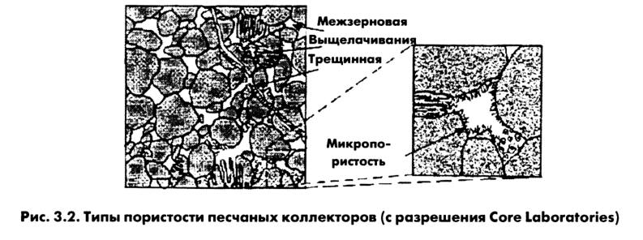</a></figure>
    <p>Шлиф песчаника с подписями: межзерновая, выщелачивания, трещинная, микропористость (последняя показана увеличенным фрагментом).</p>
    <p>Как читать: межзерновые поры — просветы между зёрнами; выщелачивание — крупные неправильные полости от растворения зёрен; трещина — узкий разрыв; микропористость — мельчайшие поры внутри глинистого материала.</p>
    <p class="meaning">Вывод: в одном образце могут сосуществовать четыре типа пустот, и каждый по-своему влияет на ёмкость и на фильтрацию.</p>
  </div>

  <h4>Визуальное описание пористости карбонатов</h4>
  <p>С 1952 года, когда Арчи предложил классификацию карбонатных пород, роль визуального описания поровой геометрии изменилась. Теперь пористость пласта можно измерять каротажем прямо в скважине. Но визуальная оценка по-прежнему нужна. Она показывает влияние размера зёрен, величины межзерновой пористости, количества несвязанных пор, трещин и каверн и связанных каверн на связь «пористость — проницаемость» и на другие свойства трещиноватых коллекторов. Люсия предложил классификацию порового пространства карбонатов по петрографическим описаниям многих образцов.</p>

  <div class="figure">
    <p class="tag">Рис. 3.3 и 3.4 · стр. 90</p>
    <p class="fig-title">Ил и крупные зёрна в известняке; мелкие и средние кристаллы в доломите</p><figure class="scan"><a href="img/fig-3-3.jpg" target="_blank" rel="noopener">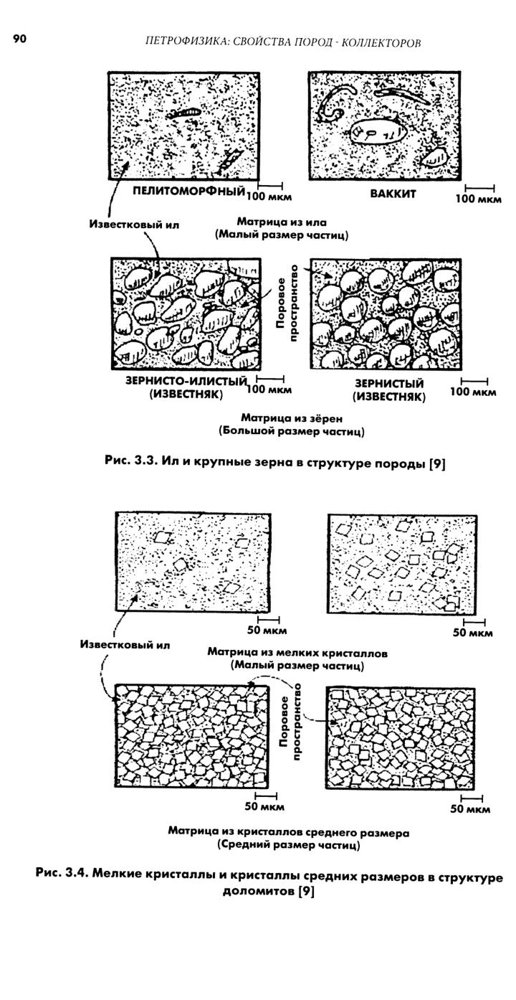</a></figure><figure class="scan"><a href="img/fig-3-4.jpg" target="_blank" rel="noopener">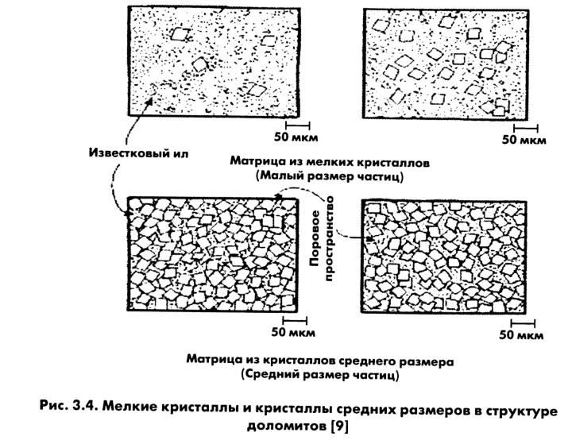</a></figure>
    <p>На рис. 3.3 показаны два типа структуры: «зернисто-илистый» (крупные зёрна в иле) и «зернистый» (зёрна опираются друг на друга); подписаны матрица из ила (малые частицы) и матрица из зёрен (большие частицы). На рис. 3.4 — доломит с матрицей из мелких и средних кристаллов, между кристаллами видно поровое пространство.</p>
    <p>Как читать: «жёсткая матрица» — это те частицы, которые касаются друг друга и образуют каркас. Размер этих частиц определяет размер сообщающихся пор между ними.</p>
    <p class="meaning">Вывод: размер частиц каркаса — главный визуальный признак того, какими будут межзерновые поры и насколько порода проницаема.</p>
  </div>

  <p>Размер кристаллов доломита особенно важен, когда они соизмеримы с частицами осадка или крупнее. Если частицы осадка крупнее кристаллов доломита (доломитизированные зернистые известняки), решает размер частиц осадка. Межзерновые поры в крупнозернистых породах видны глазом. В мелкозернистых нужны сканирующий электронный микроскоп и шлифы. Несообщающиеся поры связаны с пустотами внутри окаменелых остатков, арочными пустотами, залеченными порами, пустотами от растворения зёрен и кристаллов ангидрита. Осторожно: при оценке трещин можно принять за природные искусственные трещины, возникшие при отборе керна.</p>
  <p>Люсия предложил делить карбонаты по размеру частиц \(d_{gr}\) и по давлению вытеснения \(P_D\) (по ртутным кривым капиллярного давления, глава 5).</p>

  <div class="table-note">
    <p class="tag">Классификация Люсии · стр. 91</p>
    <p class="fig-title">Карбонаты по размеру частиц и давлению вытеснения</p>
    <p>Давление вытеснения — это давление, при котором ртуть начинает входить в самые крупные соединённые поры. Чем крупнее частицы, тем оно меньше.</p>
    <div class="tbl"><table><thead><tr><th>Класс</th><th>Диаметр частиц \(d_{gr}\)</th><th>\(P_D\)</th></tr></thead><tbody>
      <tr><td>Тонкозернистые</td><td>менее 20 мкм</td><td>более 480 кПа</td></tr>
      <tr><td>Среднезернистые</td><td>20–100 мкм</td><td>100–480 кПа</td></tr>
      <tr><td>Грубозернистые</td><td>более 100 мкм</td><td>менее 100 кПа</td></tr>
    </tbody></table></div>
  </div>

  <div class="figure">
    <p class="tag">Рис. 3.5 · стр. 91</p>
    <p class="fig-title">Давление вытеснения и размер частиц для некавернозной породы с \(k&gt;0{,}1\) мД</p><figure class="scan"><a href="img/fig-3-5.jpg" target="_blank" rel="noopener"></a></figure>
    <p>По горизонтали — средний размер частиц (мкм, до 120), по вертикали — экстраполированное давление вытеснения для системы ртуть/воздух (фунт/дюйм², до 180). Точки подписаны значением межгранулярной пористости в процентах; через них проведена плавно падающая кривая.</p>
    <p>Как читать: у мелких частиц (десятки мкм и меньше) давление вытеснения высокое, у крупных падает до малых значений. Точки разной пористости ложатся вокруг одной кривой.</p>
    <p class="meaning">Вывод: размер частиц важнее пористости для давления вытеснения. Именно эта связь даёт основание делить карбонаты на три класса.</p>
  </div>

  <h3>Флюидонасыщенность</h3>
  <p>Пористость задаёт ёмкость коллектора. Не менее важно, чем заполнены поры. Это описывает насыщенность: доля объёма пор, занятая данным флюидом (нефтью, газом или водой).</p>

  <div class="formula">
    <p class="tag">Формулы 3.3 и 3.4: насыщенность</p>
    \[ S_o = \frac{V_o}{V_p},\qquad S_o + S_g + S_w = 1,\qquad V_o + V_g + V_w = V_p \]
    <dl class="vars">
      <dt>\(S_o, S_g, S_w\)</dt><dd>нефте-, газо- и водонасыщенность, доли единицы</dd>
      <dt>\(V_o, V_g, V_w\)</dt><dd>объёмы нефти, газа и воды в породе, см³</dd>
      <dt>\(V_p\)</dt><dd>общий объём пор, см³</dd>
    </dl>
    <p class="meaning">Смысл: поры всегда заполнены целиком. Если в порах стало больше нефти, воды или газа стало меньше. Сумма насыщенностей равна единице.</p>
  </div>

  <p>В идеале из-за разной плотности залежь выстраивается сверху вниз: газ, нефть, вода. Но реликтовая (остаточная, связанная) вода есть почти везде в залежи. Это морская вода, оставшаяся в порах при отложении и литификации, задолго до прихода нефти. Кроме плотности на распределение флюидов влияют смачиваемость и поверхностное натяжение.</p>
  <p>Содержание воды меняется от 100 % ниже нефтяной зоны до теоретического нуля выше контакта со свободной водой. Но на практике даже далеко выше переходной зоны остаётся почти постоянная неснижаемая связанная вода \(S_{wi}\). Её величина и высота переходной зоны зависят от размера пор. Высокая \(S_{wi}\) означает мелкие поры. Скважина, перфорированная в переходной зоне, даёт нефть с водой. В зоне остаточной водонасыщенности даёт только углеводороды без пластовой воды.</p>

  <h4>Подсчёт запасов объёмным методом</h4>
  <p>Один из простейших способов оценить нефть в пласте — объёмный метод. Он перемножает площадь, толщину, пористость и нефтенасыщенность.</p>

  <div class="formula">
    <p class="tag">Формулы 3.5 и 3.6: геологические запасы нефти</p>
    \[ N = A h \phi S_{oi},\qquad N = \frac{10000\,A h\,\phi\,(1-S_{wi})}{B_{oi}} \]
    <dl class="vars">
      <dt>\(N\)</dt><dd>запасы: в первой формуле — объём нефти в пластовых условиях, во второй — товарной нефти в стандартных, м³</dd>
      <dt>\(A\)</dt><dd>площадь залежи (во второй формуле в гектарах; 1 га = 10 000 м²)</dd>
      <dt>\(h\)</dt><dd>толщина пласта, м</dd>
      <dt>\(\phi\)</dt><dd>пористость, доли единицы</dd>
      <dt>\(S_{oi}\)</dt><dd>начальная нефтенасыщенность, доли единицы</dd>
      <dt>\(S_{wi}\)</dt><dd>начальная остаточная водонасыщенность, доли единицы (предполагается, что свободного газа нет)</dd>
      <dt>\(B_{oi}\)</dt><dd>начальный объёмный коэффициент нефти, м³ пл. усл./м³ ст. усл.</dd>
    </dl>
    <p class="meaning">Смысл: объём нефти в пласте равен объёму породы, умноженному на долю пор и долю нефти в порах. На поверхности нефть теряет растворённый газ и «усыхает», поэтому делим на \(B_{oi}\) (обычно больше 1). Параметры \(A, h, \phi, S\) в неоднородном пласте осредняют.</p>
  </div>

  <div class="example">
    <p class="tag">Пример: запасы нефти</p>
    <p>Дано: \(A = 650\) га, \(h = 9{,}8\) м, \(\phi = 0{,}22\), \(S_{wi} = 0{,}20\), \(B_{oi} = 1{,}23\).</p>
    <p>Шаг 1. Нефтенасыщенность: \(1 - 0{,}20 = 0{,}80\).</p>
    <p>Шаг 2. \(N = 10000 \cdot 650 \cdot 9{,}8 \cdot 0{,}22 \cdot 0{,}80 / 1{,}23\). Числитель: \(6{,}5 \cdot 10^6 \cdot 9{,}8 = 6{,}37 \cdot 10^7\); умножаем на 0,22 и 0,8: \(1{,}121 \cdot 10^7\).</p>
    <p>Шаг 3. Делим на 1,23: \(N \approx 9{,}11 \cdot 10^6\) ст. м³, то есть около 9,1 млн м³ нефти.</p>
  </div>

  <p>Для газа похожая формула. Объём считают в стандартных условиях: давление 0,101325 МПа (14,7 фунт/дюйм²) и температура 15,56 °С (60 °F) по книге. В примере ниже взято 20 °С.</p>

  <div class="formula">
    <p class="tag">Формулы 3.7 и 3.8: запасы газа и объёмный коэффициент газа</p>
    \[ G = \frac{10000\,A h\,\phi\,(1-S_{wi})}{B_{gi}},\qquad B_{gi} = \frac{Z_i\,T\,P_{sc}}{T_{sc}\,P_i} \]
    <dl class="vars">
      <dt>\(G\)</dt><dd>запасы газа в стандартных условиях, ст. м³</dd>
      <dt>\(B_{gi}\)</dt><dd>объёмный коэффициент газа при начальном давлении, м³/ст. м³</dd>
      <dt>\(Z_i\)</dt><dd>коэффициент сверхсжимаемости газа (поправка на неидеальность) при \(P_i\) и \(T\)</dd>
      <dt>\(T\), \(T_{sc}\)</dt><dd>пластовая и стандартная температуры, К</dd>
      <dt>\(P_i\), \(P_{sc}\)</dt><dd>начальное пластовое и стандартное давления, МПа</dd>
    </dl>
    <p class="meaning">Смысл: при пластовом давлении газ сильно сжат, и один кубометр пластового газа даёт много стандартных кубометров. \(B_{gi}\) очень мало (порядка 0,004), поэтому запасы в стандартных м³ получаются большими.</p>
  </div>

  <div class="example">
    <p class="tag">Пример: запасы газа</p>
    <p>Дано: \(A = 534\) га, \(h = 13{,}7\) м, \(\phi = 0{,}175\), \(S_{wi} = 0{,}23\), \(T = 93{,}3\) °С \(= 366{,}45\) К, \(P_i = 27{,}6\) МПа, \(Z_i = 0{,}916\), \(T_{sc} = 293{,}15\) К, \(P_{sc} = 0{,}101325\) МПа.</p>
    <p>Шаг 1. \(B_{gi} = 0{,}916 \cdot 366{,}45 \cdot 0{,}101325 / (293{,}15 \cdot 27{,}6) = 34{,}01 / 8091 \approx 0{,}00420\) м³/ст. м³. (В книге стоит 0,004276; пересчёт даёт 0,00420, и именно с ним согласуется итог книги.)</p>
    <p>Шаг 2. \(G = 10000 \cdot 534 \cdot 13{,}7 \cdot 0{,}175 \cdot 0{,}77 / 0{,}00420\). Числитель \(\approx 9{,}86 \cdot 10^6\), результат \(G \approx 2{,}34 \cdot 10^9\) ст. м³.</p>
  </div>

  <h3>Проницаемость</h3>
  <p>Чтобы быть коллектором, порода должна быть не только пористой, но и пропускать флюиды по сообщающимся порам. Непористая порода непроницаема. Проницаемость зависит от эффективной пористости, размера и формы зёрен, их сортировки и упаковки, степени консолидации и цементации. Тип цемента тоже важен, особенно при контакте с пресной водой: смектиты (бентониты) и монтмориллониты разбухают и частично или полностью закупоривают поры.</p>
  <p>Анри Дарси вывел уравнение движения жидкости, одно из самых используемых в нефтяной инженерии.</p>

  <div class="formula">
    <p class="tag">Формула 3.9: закон Дарси</p>
    \[ u = \frac{q}{A_c} = -\frac{k}{\mu}\,\frac{dp}{dl} \]
    <dl class="vars">
      <dt>\(u\)</dt><dd>линейная скорость (скорость фильтрации), см/с</dd>
      <dt>\(q\)</dt><dd>объёмный расход флюида, см³/с</dd>
      <dt>\(A_c\)</dt><dd>площадь поперечного сечения образца, см²</dd>
      <dt>\(k\)</dt><dd>проницаемость, дарси (1 Д = 0,986923 мкм²)</dd>
      <dt>\(\mu\)</dt><dd>вязкость флюида, сП</dd>
      <dt>\(dp/dl\)</dt><dd>градиент давления вдоль потока, атм/см (знак минус: поток идёт от высокого давления к низкому)</dd>
    </dl>
    <p class="meaning">Смысл: скорость течения растёт с перепадом давления и проницаемостью и падает с вязкостью. Вязкую нефть гнать труднее, чем воду. Это основа всей фильтрации в пласте.</p>
  </div>

  <p>Один дарси — высокая проницаемость. У большинства коллекторов она меньше, поэтому используют миллидарси (мД). В СИ вместо них применяют квадратный микрометр (мкм²).</p>
  <ul>
    <li><b>Абсолютная проницаемость</b> — порода на 100 % насыщена одним флюидом (нефтью, газом или водой).</li>
    <li><b>Эффективная проницаемость</b> (\(k_o, k_g, k_w\)) — при наличии нескольких флюидов, отдельно для каждого. Флюиды мешают друг другу, поэтому сумма эффективных всегда меньше абсолютной.</li>
    <li><b>Относительная проницаемость</b> \(k_r\) — отношение эффективной к абсолютной: \(k_{ro} = k_o/k\), \(k_{rg} = k_g/k\), \(k_{rw} = k_w/k\).</li>
  </ul>

  <div class="analogy">
    <p class="tag">На пальцах</p>
    <p>Проницаемость похожа на «ширину дверей» на вокзале. Пористость — это вместимость зала. Зал может быть огромным (высокая пористость), но с узкой щелью вместо двери (низкая проницаемость). Людей (флюид) много, а выходят они медленно.</p>
  </div>

  <h4>Классификация проницаемостей</h4>
  <p>Коллекторы имеют первичную проницаемость (матрицы), которая формируется при отложении и литификации, и вторичную. Вторичная возникает в результате изменений матрицы: уплотнения, цементации, трещинообразования, выщелачивания. Уплотнение и цементация обычно проницаемость снижают, трещины и выщелачивание повышают. В некоторых низкопористых карбонатах основное движение флюидов идёт именно по вторичной проницаемости (месторождение Элленбергер, Техас).</p>

  <div class="figure">
    <p class="tag">Рис. 3.6 · стр. 96</p>
    <p class="fig-title">Влияние цементирующего материала на пористость и проницаемость</p><figure class="scan"><a href="img/fig-3-6.jpg" target="_blank" rel="noopener"></a></figure>
    <p>Два схематичных шлифа. Слева — песчаные зёрна без глины: пористость 36 %, горизонтальная проницаемость \(k_H = 1000\) мД, вертикальная \(k_V = 600\) мД. Справа — зёрна с глинистым цементом (оболочки вокруг зёрен): пористость тоже 36 %, но \(k_H = 100\) мД, \(k_V = 25\) мД. Стрелки показывают пути течения.</p>
    <p>Как читать: у чистого песка стрелки идут широкими путями. С глиной горлышки между зёрнами сужены, и пути перекрыты.</p>
    <p class="meaning">Вывод: при одной и той же пористости проницаемость может отличаться на порядок. Решает, где лежит цемент: в горлышках пор или нет.</p>
  </div>

  <h4>Факторы, влияющие на проницаемость</h4>
  <p>Проницаемость коллекторов нефти и газа лежит от 0,1 до 1000 мД и более. Книга предлагает такие оценки качества: низкое (\(k &lt; 1\) мД), удовлетворительное (1–10), среднее (10–50), высокое (50–250), очень высокое (\(k &gt; 250\) мД). В Восточном Техасе встречается до 4600 мД. Коллекторы с \(k &lt; 1\) мД считаются плотными: матрица известняков и плотные газовые песчаники запада США. Гидроразрыв и кислотная обработка позволяют добывать из таких пластов. Всего полвека назад «плотными» считали породы с \(k \le 50\) мД.</p>

  <div class="table-note">
    <p class="tag">Табл. 3.1 · стр. 97</p>
    <p class="fig-title">Пористость и проницаемость некоторых нефтеносных песчаников США</p><figure class="scan"><a href="img/tab-3-1.jpg" target="_blank" rel="noopener"></a></figure>
    <p>В таблице десять песчаников с указанием возраста и местоположения. Видно, что при похожей пористости проницаемость отличается в десятки и сотни раз. Например, у Строн и Вудбайн пористость 22 %, а проницаемость 81,5 и 3390 мД.</p>
    <div class="tbl"><table><thead><tr><th>Песчаник</th><th>Пористость, %</th><th>Проницаемость, мД</th></tr></thead><tbody>
      <tr><td>«Второй Уилкокс» (ордовик)</td><td>12,0</td><td>100,0</td></tr>
      <tr><td>Клинч (силур)</td><td>9,6</td><td>0,9</td></tr>
      <tr><td>Строн (верхний карбон)</td><td>22,0</td><td>81,5</td></tr>
      <tr><td>Бартлсвилл (верхний карбон)</td><td>17,5</td><td>25</td></tr>
      <tr><td>Олимпик (верхний карбон)</td><td>20,5</td><td>35,0</td></tr>
      <tr><td>Наггет (юра)</td><td>24,9</td><td>147,5</td></tr>
      <tr><td>Кат-бэнк (мел)</td><td>15,4</td><td>111,5</td></tr>
      <tr><td>Вудбайн (мел)</td><td>22,1</td><td>3 390,0</td></tr>
      <tr><td>Юто (мел)</td><td>30,0</td><td>100,0</td></tr>
      <tr><td>О’Херн (эоцен)</td><td>28,4</td><td>130,0</td></tr>
    </tbody></table></div>
  </div>

  <p>На проницаемость осадочных пород влияют четыре группы факторов.</p>
  <p><b>(а) Форма и размер зёрен.</b> Крупные плоские зёрна, лежащие длинной осью горизонтально, дают очень высокую горизонтальную проницаемость \(k_H\) и среднюю или высокую вертикальную \(k_V\). Крупные округлые зёрна дают высокую проницаемость, одинаковую во всех направлениях. Мелкие зёрна неправильной формы дают низкую проницаемость, особенно по вертикали. Большинство коллекторов относится именно к этой категории. Зависимость от направления называется анизотропией. Она возникает уже при осаждении (плоские зёрна ложатся плашмя) и усиливается уплотнением.</p>

  <div class="figure">
    <p class="tag">Рис. 3.7, 3.8, 3.9 · стр. 97–98</p>
    <p class="fig-title">Каналы фильтрации в породах из зёрен разной формы</p><figure class="scan"><a href="img/fig-3-7.jpg" target="_blank" rel="noopener"></a></figure><figure class="scan"><a href="img/fig-3-8.jpg" target="_blank" rel="noopener"></a></figure><figure class="scan"><a href="img/fig-3-9.jpg" target="_blank" rel="noopener"></a></figure>
    <p>Три схемы шлифов со стрелками потока. Рис. 3.7: крупные плоские зёрна, \(k_H = 2000\) мД, \(k_V = 800\) мД. Рис. 3.8: крупные округлые зёрна, \(k_H = 2000\) мД, \(k_V = 1500\) мД. Рис. 3.9: очень мелкие неправильные зёрна, \(k_H = 150\) мД, \(k_V = 15\) мД.</p>
    <p>Как читать: сравните отношение \(k_V/k_H\). Для плоских зёрен 0,4, для округлых 0,75, для мелких неправильных 0,1. На схемах у плоских зёрен путь вверх извилистый, у округлых — почти прямой.</p>
    <p class="meaning">Вывод: чем более плоские и мелкие зёрна, тем выше анизотропия. Круглые зёрна дают наиболее изотропную породу.</p>
  </div>

  <p><b>(б) Слоистость.</b> Пластинчатые минералы (мусковит) и глинистые прослои — барьеры для вертикальной фильтрации. В таких породах \(k_H/k_V\) обычно 1,5–3, иногда больше 10. Бывает наоборот: \(k_V\) выше \(k_H\) из-за вертикальных трещин, поверхностей отдельности и каналов выщелачивания. Поверхности отдельности мешают течению по горизонтали, только если заполнены глиной. Влияние глин зависит не только от количества, но и от минерального состава и состава поровых флюидов. Если глины разбухнут или сместятся из-за смены химизма или фильтрата бурового раствора, проницаемость резко упадёт (глава 10).</p>
  <p><b>(в) Цементация.</b> Количество и расположение цемента в порах влияет и на проницаемость, и на пористость (рис. 3.6).</p>
  <p><b>(г) Трещиноватость и выщелачивание.</b> В песчаниках трещины играют малую роль, если только песчаник не переслаивается с глинами, известняками и доломитами. В карбонатах просачивающиеся кислые воды растворяют породу по порам, трещинам и плоскостям напластования, и проницаемость растёт. Во многих карбонатных коллекторах горизонтальная и вертикальная проницаемости примерно равны.</p>

  <h3>Взаимосвязь пористости и проницаемости</h3>
  <p>Кажется логичным: больше пористость, выше проницаемость. Но однозначной связи нет. Порода может быть очень пористой и непроницаемой (пемза, глины, глинистые сланцы). Бывает и наоборот: высокая проницаемость при низкой пористости (микротрещиноватые карбонаты). Тем не менее для конкретной формации часто удаётся получить полезную корреляцию.</p>

  <div class="figure">
    <p class="tag">Рис. 3.10 · стр. 99</p>
    <p class="fig-title">Зависимость проницаемость–пористость для хорошо выдержанного песчаника</p><figure class="scan"><a href="img/fig-3-10.jpg" target="_blank" rel="noopener"></a></figure>
    <p>По горизонтали пористость (доли единицы, 0–0,4), по вертикали проницаемость в логарифмической шкале (от 0,1 до 10 000 мД). Это облако точек по большому числу образцов.</p>
    <p>Как читать: облако очень широкое. При одной пористости проницаемость различается в сотни раз.</p>
    <p class="meaning">Вывод: даже в «однородном» пласте чёткой количественной связи нет. Она только качественная.</p>
  </div>

  <div class="figure">
    <p class="tag">Рис. 3.11 · стр. 100</p>
    <p class="fig-title">Корреляция проницаемость–пористость для конкретной формации</p><figure class="scan"><a href="img/fig-3-11.jpg" target="_blank" rel="noopener"></a></figure>
    <p>Полулогарифмический график: пористость от 0 до 25 %, проницаемость от 0,1 до 1000 мД. Точки лежат вдоль наклонной линии тренда \(k = 0{,}1038\,e^{0{,}3255\phi}\), где пористость взята в процентах; коэффициент детерминации \(R^2 = 0{,}5967\).</p>
    <p>Как читать: тренд растёт: каждые 3 п.п. пористости дают примерно рост \(k\) в 2,7 раза. Но разброс по вертикали большой.</p>
    <p class="meaning">Вывод: по формации можно строить рабочую зависимость, но она даёт только оценку порядка величины. Использовать её нужно только в тех пределах пористости, где есть данные.</p>
  </div>

  <div class="figure">
    <p class="tag">Рис. 3.12 · стр. 101</p>
    <p class="fig-title">Влияние размера зёрен на связь проницаемость–пористость</p><figure class="scan"><a href="img/fig-3-12.jpg" target="_blank" rel="noopener"></a></figure>
    <p>Полулогарифмический график: пористость 0–36 %, проницаемость 1–10 000 мД. Пять групп точек: грубозернистые и крупнозернистые, крупно- и среднезернистые, мелкозернистые, алевритистые, глинистые песчаники. Каждая группа — своя полоса, идущая вверх вправо.</p>
    <p>Как читать: при одной и той же пористости, скажем 15 %, крупнозернистый песчаник проницаем на сотни мД, а алевритистый и глинистый — на единицы и десятки.</p>
    <p class="meaning">Вывод: чтобы связать \(k\) и \(\phi\), нужно знать гранулометрию. Чем мельче зёрна, тем ниже \(k\) при той же \(\phi\).</p>
  </div>

  <div class="figure">
    <p class="tag">Рис. 3.13 · стр. 101</p>
    <p class="fig-title">Типичные зависимости проницаемость–пористость для разных пород</p><figure class="scan"><a href="img/fig-3-13.jpg" target="_blank" rel="noopener"></a></figure>
    <p>Полулогарифмический график: пористость 0–35 %, проницаемость 1–1000 мД. Наклонные линии для типов пород: рифогенный известняк, оолитовый известняк, сахаровидный доломит, мелоподобный известняк, кристаллический известняк–доломит, хорошо сцементированный песчаник, мелкозернистый рыхлый песок.</p>
    <p>Как читать: линии левее и выше — породы, которые при той же пористости дают больше \(k\) (рифогенный известняк, сахаровидный доломит). Линия «мелкозернистый рыхлый песок» самая правая: большая пористость, но малая проницаемость.</p>
    <p class="meaning">Вывод: нанеся свои данные на этот график, можно примерно определить тип коллектора.</p>
  </div>

  <h4>Корреляционная зависимость Козени</h4>
  <p>Козени вывел одну из самых известных зависимостей: проницаемость как функция пористости и удельной поверхности. Модель такая. Образец сечением \(A_c\) и длиной \(L\) заменяем пучком \(n\) прямых параллельных капилляров радиуса \(r\); промежутки между трубками заполнены непроницаемым цементом.</p>
  <p>Расход через пучок трубок описывает уравнение Пуазейля. С другой стороны, тот же расход описывает закон Дарси. Если приравнять, получим проницаемость.</p>

  <div class="formula">
    <p class="tag">Формулы 3.10–3.14: пучок капилляров</p>
    \[ q = \frac{n\pi r^4}{8\mu}\frac{\Delta p}{L}, \qquad k = \frac{n\pi r^4}{8 A_c},\qquad \phi = \frac{n\pi r^2}{A_c},\qquad k = \frac{\phi\, r^2}{8} \]
    <dl class="vars">
      <dt>\(q\)</dt><dd>расход, см³/с</dd>
      <dt>\(n\)</dt><dd>число трубок</dd>
      <dt>\(r\)</dt><dd>радиус трубки, см</dd>
      <dt>\(\Delta p\)</dt><dd>перепад давления на длине \(L\)</dd>
      <dt>\(A_c\)</dt><dd>полное сечение образца, включая цемент</dd>
      <dt>\(k\)</dt><dd>проницаемость, см² (1 см² = 1,013·10⁸ Д); в мкм² и мД: 1 мД = 9,871·10⁻⁴ мкм²</dd>
    </dl>
    <p class="meaning">Смысл: проницаемость растёт пропорционально пористости и квадрату радиуса пор. Радиус входит в квадрате, поэтому удвоение радиуса даёт рост \(k\) в 4 раза. Именно размер пор, а не их количество, определяет проницаемость.</p>
  </div>

  <p>Дальше вводят удельные поверхности. Удельная поверхность на единицу объёма пор: для трубок \(s_{Vp} = 2/r\). Удельная поверхность на единицу объёма зёрен связана с ней через пористость.</p>

  <div class="formula">
    <p class="tag">Формулы 3.15–3.19: удельная поверхность и уравнение Козени</p>
    \[ s_{Vp} = \frac{2}{r},\qquad s_{Vgr} = s_{Vp}\,\frac{\phi}{1-\phi},\qquad k = \frac{1}{2\,s_{Vgr}^2}\,\frac{\phi^3}{(1-\phi)^2} \]
    <dl class="vars">
      <dt>\(s_{Vp}\)</dt><dd>площадь внутренней поверхности на единицу объёма пор, см⁻¹</dd>
      <dt>\(s_{Vgr}\)</dt><dd>площадь поверхности, контактирующей с флюидом, на единицу объёма зёрен, см⁻¹</dd>
      <dt>\(k\)</dt><dd>проницаемость, см²</dd>
    </dl>
    <p class="meaning">Смысл: чем больше поверхность зёрен, тем сильнее трение о стенки, тем ниже проницаемость (она в знаменателе в квадрате). Пористость стоит в числителе в кубе: небольшой рост \(\phi\) заметно улучшает проницаемость. Удельную поверхность можно найти капилляриметрией или по шлифам.</p>
  </div>

  <div class="example">
    <p class="tag">Пример: радиус пор и удельные поверхности</p>
    <p>Керн: \(k = 480\) мД, \(\phi = 0{,}17\). Найти средний радиус устьев пор и \(s_{Vp}\), \(s_{Vgr}\).</p>
    <p>Шаг 1. Проницаемость в мкм²: \(480 \cdot 9{,}8717 \cdot 10^{-4} = 0{,}4738\) мкм².</p>
    <p>Шаг 2. Из \(k = \phi r^2/8\): \(r = \sqrt{8k/\phi} = \sqrt{8 \cdot 0{,}4738/0{,}17} = \sqrt{22{,}3} = 4{,}72\) мкм \(= 4{,}72 \cdot 10^{-4}\) см.</p>
    <p>Шаг 3. \(s_{Vp} = 2/r = 2/(4{,}72 \cdot 10^{-4}) \approx 4237\) см⁻¹.</p>
    <p>Шаг 4. \(s_{Vgr} = 4237 \cdot 0{,}17/0{,}83 \approx 868\) см⁻¹.</p>
  </div>

  <p>Реальные каналы длиннее прямой трубки: флюид идёт по извилистому пути. Мера этого — извилистость \(\tau\). Через неё и параметр пористости \(F_R = R_o/R_w\) (отношение сопротивления породы, полностью насыщенной водой, к сопротивлению этой воды) получают соотношения.</p>

  <div class="formula">
    <p class="tag">Формулы 3.20–3.21: извилистость</p>
    \[ \tau = \left(\frac{L_a}{L}\right)^2,\qquad F_R\,\phi = \left(\frac{L_a}{L}\right)^C \]
    <dl class="vars">
      <dt>\(\tau\)</dt><dd>коэффициент извилистости (безразмерный, больше 1)</dd>
      <dt>\(L_a\)</dt><dd>фактическая длина пути флюида</dd>
      <dt>\(L\)</dt><dd>длина образца</dd>
      <dt>\(C\)</dt><dd>показатель, 1,7–2 (близок к показателю цементации \(m\))</dd>
      <dt>\(F_R\)</dt><dd>параметр пористости \(R_o/R_w\)</dd>
    </dl>
    <p class="meaning">Смысл: чем длиннее и запутаннее путь, тем выше \(\tau\) и тем труднее течь. Книга выбирает определение через квадрат отношения длин (в литературе встречается и сама дробь).</p>
  </div>

  <p>С учётом извилистости уравнение Козени принимает вид (3.25), а Кармана предложил заменить произведение коэффициента формы пор и извилистости \(K_{ps}\tau\) числом 5 для большинства материалов.</p>

  <div class="formula">
    <p class="tag">Формулы 3.25–3.26: уравнение Козени–Кармана</p>
    \[ k = \frac{1}{2\sqrt{\tau}\,s_{Vgr}^2}\,\frac{\phi^3}{(1-\phi)^2} \;\;\rightarrow\;\; k = \frac{1}{5\,s_{Vgr}^2}\,\frac{\phi^3}{(1-\phi)^2} \]
    <dl class="vars">
      <dt>\(k\)</dt><dd>проницаемость, см²</dd>
      <dt>\(s_{Vgr}\)</dt><dd>удельная поверхность зёрен, см⁻¹</dd>
      <dt>\(\phi\)</dt><dd>пористость, доли единицы</dd>
      <dt>5</dt><dd>эмпирическая константа Кармана вместо 2</dd>
    </dl>
    <p class="meaning">Смысл: это самая популярная форма уравнения Козени. У реальных пород произведение \(K_{ps}\tau\) переменное и часто заметно больше 5, поэтому формула даёт лишь оценку.</p>
  </div>

  <div class="example">
    <p class="tag">Пример: песчаная набивка</p>
    <p>Набивка однородных зёрен диаметром 1/8 мм = 0,0125 см, пористость 0,2. Зёрна считаем шарами.</p>
    <p>Шаг 1. \(s_{Vgr} = 6/d_{gr} = 6/0{,}0125 = 480\) см⁻¹.</p>
    <p>Шаг 2. Множитель \(\phi^3/(1-\phi)^2 = 0{,}008/0{,}64 = 0{,}0125\).</p>
    <p>Шаг 3. Козени с константой 2: \(k = 0{,}5 \cdot 0{,}0125/480^2\) (см² умножаем на диаметр зёрен 0,0125 см, как в книге) \(= 2{,}71 \cdot 10^{-8}\) см², то есть около 2750 мД. Кармана–Козени с константой 5: \(k = 0{,}0125/(5 \cdot 480^2) = 1{,}085 \cdot 10^{-8}\) см² \(\approx 1100\) мД.</p>
    <p>Итог: замена 2 на 5 меняет результат в 2,5 раза. Это показывает, насколько приближённа модель.</p>
  </div>

  <div class="warn">
    <p class="tag">Частая ошибка</p>
    <p>Не путайте единицы. В формуле Козени всё идёт в см (радиус, диаметр, поверхность в см⁻¹), получается \(k\) в см². Потом переводят в мкм² или мД. Если подставить миллиметры, ответ ошибётся на порядки.</p>
  </div>

  <h3>Концепция фильтрационных (гидравлических) ячеек</h3>
  <p>Геологам и инженерам нужен удобный «кирпичик» для описания коллектора как ёмкости и как канала. Это фильтрационная ячейка (единичный коллектор). Авторы определяют её по-разному: Бэр — как элементарный объём с одинаковой гидравликой и поровой геометрией; Эбенкс — как картируемую часть залежи с выдержанными и предсказуемо отличными от соседей свойствами; Хиэр и др. — как зону, непрерывную по вертикали и горизонтали без резких скачков проницаемости, пористости и слоистости; Гунтер и др. — как стратиграфически непрерывный интервал, однородный по свойствам.</p>
  <p>Общие свойства ячейки: это часть пласта (одного или нескольких литотипов); её можно коррелировать и картировать в масштабе интервала; выделение ячеек должно согласовываться с разбивкой по каротажу; ячейка может сообщаться с другими.</p>
  <p>Гунтер и др. предложили графический метод из пяти шагов:</p>
  <ol>
    <li>Определить тип породы и построить график «пористость — проницаемость» с линиями разных радиусов пор (по Уитленду).</li>
    <li>Построить стратифицированный модифицированный график Лоренца (SMLP): накопленную долю произведения \(k\cdot h\) против накопленной доли \(\phi\cdot h\) с шагом 0,3 м по разрезу.</li>
    <li>По точкам перегиба выделить интервалы ячеек, затем уточнить по профилю притока (SFP) с учётом \(R_{35}\) (радиус устьев пор при 35 %-м насыщении ртутью) и отношения \(k/\phi\).</li>
    <li>Составить итоговый стратифицированный профиль притока с кривой корреляции, отношением \(k/\phi\), \(R_{35}\), процентом ёмкости и процентом фильтрационной способности.</li>
    <li>Построить модифицированный график Лоренца, расположив ячейки по убыванию скорости фильтрации.</li>
  </ol>

  <div class="figure">
    <p class="tag">Рис. 3.14 · стр. 107</p>
    <p class="fig-title">Схема графика \(k\)–\(\phi\) по Уитленду</p><figure class="scan"><a href="img/fig-3-14.jpg" target="_blank" rel="noopener"></a></figure>
    <p>По горизонтали пористость (%), по вертикали проницаемость (мД). Три плавно выгнутых кривых подписаны \(R_{35} = 2, 10, 20\) мкм.</p>
    <p>Как читать: кривые идут вверх, чем больше \(R_{35}\), тем выше линия. Точка образца попадает между линиями, и по ней видно примерный размер горлышек пор.</p>
    <p class="meaning">Вывод: при одной пористости проницаемость определяет радиус устьев пор.</p>
  </div>

  <div class="figure">
    <p class="tag">Рис. 3.15 · стр. 108</p>
    <p class="fig-title">Схема стратифицированного модифицированного графика Лоренца (SMLP)</p><figure class="scan"><a href="img/fig-3-15.jpg" target="_blank" rel="noopener"></a></figure>
    <p>Кривая из нескольких отрезков с разными наклонами; в местах излома стрелки подписаны «точки перегиба».</p>
    <p>Как читать: участок с одним наклоном — один тип породы. Перегиб означает смену типа и границу ячейки.</p>
    <p class="meaning">Вывод: пласт можно разделить на ячейки по изломам кривой накопленных \(kh\) и \(\phi h\).</p>
  </div>

  <h4>Математическая теория ячеек (Тиаб, Амефуле)</h4>
  <p>Тиаб определил гидравлическую ячейку как непрерывную часть коллектора с практически выдержанными петрофизическими свойствами и свойствами флюидов, которая уникальным образом связана со скважиной. Методику выделения создали Тиаб, Амефуле и др. на основе микроскопии керна. Она использует модифицированное уравнение Козени–Кармана и средний гидравлический радиус.</p>

  <div class="formula">
    <p class="tag">Формулы 3.27–3.29: модифицированное уравнение Козени–Кармана</p>
    \[ k = \frac{1}{K_T\,s_{Vgr}^2}\,\frac{\phi_e^3}{(1-\phi_e)^2} = \frac{\phi_R}{K_T\,s_{Vgr}^2},\qquad \phi_R = \frac{\phi_e^3}{(1-\phi_e)^2} \]
    <dl class="vars">
      <dt>\(k\)</dt><dd>проницаемость, мкм²</dd>
      <dt>\(\phi_e\)</dt><dd>эффективная пористость, доли единицы</dd>
      <dt>\(s_{Vgr}\)</dt><dd>удельная поверхность на единицу объёма зёрен</dd>
      <dt>\(K_T = K_{ps}\,\tau\)</dt><dd>коэффициент эффективного зонирования: зависит от формы и размера пор и зёрен, их распределения, извилистости, цементации, типа порового пространства. Постоянен внутри ячейки и меняется между ячейками</dd>
    </dl>
    <p class="meaning">Смысл: всю «геометрическую сложность» породы упаковали в один параметр \(K_T\). Внутри одной ячейки \(K_T\) и \(s_{Vgr}\) почти не меняются, значит \(k\) определяется пористостью.</p>
  </div>

  <p>Для однородного песчаника \(K_T\) находят по индексу литологии \(J_1\), полученному из капиллярных кривых. График J-функции Леверетта в билогарифмических осях против нормированной водонасыщенности — прямая линия.</p>

  <div class="formula">
    <p class="tag">Формулы 3.30–3.32: индекс литологии и нормированная водонасыщенность</p>
    \[ K_T = \frac{1}{J_1^2},\qquad \log J(S_w^*) = -\lambda \log S_w^* + \log J_1,\qquad S_w^* = \frac{S_w - S_{wi}}{1 - S_{wi}} \]
    <dl class="vars">
      <dt>\(J_1\)</dt><dd>значение J-функции при \(S_w^* = 1\) (индекс литологии)</dd>
      <dt>\(\lambda\)</dt><dd>индекс распределения пор по размерам (наклон прямой)</dd>
      <dt>\(S_w^*\)</dt><dd>нормированная водонасыщенность</dd>
      <dt>\(S_{wi}\)</dt><dd>связанная водонасыщенность</dd>
    </dl>
    <p class="meaning">Смысл: \(J_1\) меняется от 0,44 (неуплотнённые сферы) до 0,20 (уплотнённый чистый песчаник с однородными порами). Высокая \(J_1\) обычно у высокопроницаемых коллекторов. Малые \(J_1\) (менее 0,10) и \(\lambda\) (менее 1) говорят о неоднородных, плохо связанных порах.</p>
  </div>

  <div class="figure">
    <p class="tag">Рис. 3.16 и 3.17 · стр. 111</p>
    <p class="fig-title">Определение \(K_T\) по графику J от \(S_w^*\)</p><figure class="scan"><a href="img/fig-3-16.jpg" target="_blank" rel="noopener"></a></figure><figure class="scan"><a href="img/fig-3-17.jpg" target="_blank" rel="noopener"></a></figure>
    <p>Рис. 3.16: билогарифмический график, по горизонтали водонасыщенность (0,001–1), по вертикали J (0,01–10). Точки ложатся на прямую с отрицательным наклоном, на правом конце подписано \(J_1 = K_T^{-0{,}5}\). Рис. 3.17: те же данные в линейных осях (0–1), точки скапливаются вдоль гиперболоподобной кривой, часть точек при малых насыщенностях сильно разбросана.</p>
    <p>Как читать: значение J при \(S_w^* = 1\) — это \(J_1\); возводим в минус второй степень и получаем \(K_T\).</p>
    <p class="meaning">Вывод: \(K_T\) можно получить из капиллярных данных. В билогарифмических осях зависимость выпрямляется, поэтому там её удобно экстраполировать.</p>
  </div>

  <div class="table-note">
    <p class="tag">Табл. 3.2 · стр. 110</p>
    <p class="fig-title">Типичные значения \(J_1\) и \(K_T\) для разных пластов</p><figure class="scan"><a href="img/tab-3-2.jpg" target="_blank" rel="noopener"></a></figure>
    <p>Столбцы: пласт, формация, \(J_1\), \(K_T\). Обратите внимание: чем меньше \(J_1\), тем больше \(K_T\) (по формуле \(K_T = 1/J_1^2\)).</p>
    <div class="tbl"><table><thead><tr><th>Формация</th><th>\(J_1\)</th><th>\(K_T\)</th></tr></thead><tbody>
      <tr><td>Вудбайн</td><td>0,347</td><td>8,3</td></tr>
      <tr><td>Вебер</td><td>0,151</td><td>43,9</td></tr>
      <tr><td>Морено</td><td>0,18</td><td>30,9</td></tr>
      <tr><td>Викинг</td><td>0,315</td><td>10,1</td></tr>
      <tr><td>Диз</td><td>0,116</td><td>74,3</td></tr>
      <tr><td>Девонская (Ледюк)</td><td>0,114</td><td>76,9</td></tr>
    </tbody></table></div>
    <p>Для \(J_1 = 0{,}05\) получим \(K_T = 400\): типично для неоднородных плохо связанных пор.</p>
  </div>

  <h4>Удельная поверхность и способы её получить</h4>
  <p>Удельную поверхность оценивают тремя способами: газовой адсорбцией, петрографическим анализом шлифов и ЯМР.</p>
  <ul>
    <li><b>Газовая адсорбция.</b> Измеряют количество инертного газа (азот, аргон, криптон), нужное для мономолекулярного слоя на зёрнах при очень низких температурах. Площадь считают по известной площади молекулы. Подходит для гладких зёрен правильной формы (сферичность более 0,7, окатанность более 0,5) и для неконсолидированных пород. Для большинства других даёт величину, немного отличающуюся от «рабочей» поверхности, особенно на дроблёных образцах.</li>
    <li><b>Петрографический анализ шлифов (ПАШ).</b> Нужны шлифы с хорошим контрастом между порами и зёрнами, сделанные в условиях горного давления.</li>
    <li><b>ЯМР.</b> По мнению книги, самый точный метод. Значения обычно выше, чем при ПАШ или адсорбции.</li>
  </ul>

  <div class="formula">
    <p class="tag">Формулы 3.33–3.34: поверхность через диаметр зёрен</p>
    \[ s_{Vgr} = \frac{K_{gs}}{d_{gr}},\qquad K_{gs} \to 6 \text{ для сфер} \]
    <dl class="vars">
      <dt>\(s_{Vgr}\)</dt><dd>удельная поверхность на единицу объёма зёрен, см⁻¹</dd>
      <dt>\(d_{gr}\)</dt><dd>средний диаметр зёрен, см (ситовый анализ, шлифы, компаратор, микрометрия)</dd>
      <dt>\(K_{gs}\)</dt><dd>коэффициент формы зёрен</dd>
    </dl>
    <p class="meaning">Смысл: чем мельче зёрна, тем больше поверхность на единицу объёма. Для идеальных шаров \(K_{gs} = 6\) (вспомните: поверхность шара к объёму \(= 6/d\)). Корреляция верна для зёрен со сферичностью и окатанностью не менее 0,7 и 0,5.</p>
  </div>

  <div class="figure">
    <p class="tag">Рис. 3.18 · стр. 112</p>
    <p class="fig-title">Окатанность и сферичность зёрен разной формы</p><figure class="scan"><a href="img/fig-3-18.jpg" target="_blank" rel="noopener"></a></figure>
    <p>Сетка 4×5 силуэтов зёрен. По горизонтали окатанность (0,1; 0,3; 0,5; 0,7; 0,9), по вертикали сферичность (0,3; 0,5; 0,7; 0,9). Вверху справа — почти круглые гладкие зёрна, внизу слева — вытянутые угловатые.</p>
    <p>Как читать: сферичность — насколько зерно похоже на шар; окатанность — насколько сглажены углы. Метод адсорбции применим к верхнему правому углу (больше 0,7 и 0,5).</p>
    <p class="meaning">Вывод: для угловатых вытянутых зёрен простые формулы с шаром не годятся, нужны поправки на форму.</p>
  </div>

  <div class="formula">
    <p class="tag">Формулы 3.35–3.38: поверхность по шлифам и по ЯМР</p>
    \[ s_{Vgr} = \frac{4L_p}{\pi A_p},\quad f_{ps} = \frac{L_p^2}{4\pi A_p},\quad s_{Vgr} = A_{NMR}\,\rho_m,\quad s_{Vp} = \frac{1-\phi}{\phi}\,A_{NMR}\,\rho_m \]
    <dl class="vars">
      <dt>\(L_p, A_p\)</dt><dd>периметр и площадь сечения поры на шлифе</dd>
      <dt>\(f_{ps}\)</dt><dd>двумерный коэффициент формы поры (для круга 1)</dd>
      <dt>\(A_{NMR}\)</dt><dd>площадь поверхности по ЯМР для сухого образца, м²/г</dd>
      <dt>\(\rho_m\)</dt><dd>плотность минеральных зёрен, г/см³</dd>
    </dl>
    <p class="meaning">Смысл: по картинке шлифа можно посчитать форму пор. Для круга \(f_{ps} = 1\), у вытянутой щели значение больше. Для ЯМР считают поверхность на грамм и переводят в объём через плотность.</p>
  </div>

  <div class="table-note">
    <p class="tag">Табл. 3.3 · стр. 113</p>
    <p class="fig-title">Двумерные коэффициенты формы пор \(f_{ps}\) для ПАШ</p><figure class="scan"><a href="img/tab-3-3.jpg" target="_blank" rel="noopener"></a></figure>
    <p>В таблице силуэты фигур и их \(f_{ps}\): окружность 1, квадрат 1,27, треугольник 1,65, ромб 3,75, эллипс 5,84. Чем «вытянутее» и угловатее фигура, тем больше периметр при той же площади. Между двумерным \(f_{ps}\) и трёхмерным \(K_{gs}\) практической связи нет (для шара \(f_{ps} = 1\), а \(K_{gs} = 6\)).</p>
    <div class="tbl"><table><thead><tr><th>Форма поры</th><th>\(f_{ps}\)</th></tr></thead><tbody>
      <tr><td>Круг</td><td>1</td></tr><tr><td>Квадрат</td><td>1,27</td></tr><tr><td>Треугольник</td><td>1,65</td></tr><tr><td>Ромб</td><td>3,75</td></tr><tr><td>Эллипс</td><td>5,84</td></tr>
    </tbody></table></div>
  </div>

  <p>Удельная поверхность связана с остаточной водонасыщенностью: тонкая плёнка воды живёт на поверхности зёрен, и чем больше поверхность, тем больше связанной воды. Общий вид \(s_{Vp} = a\,e^{b S_w}\). Земанек для низкоомных песчаных коллекторов нашёл, что поверхность по ЯМР согласуется с остаточной водой по капиллярным данным: \(s_{Vp} = 66{,}894\,e^{0{,}0224 S_{wi}}\) (рис. 3.19), \(s_{Vp} = 66{,}893\,e^{0{,}0339 S_w}\) (рис. 3.20). Здесь насыщенности в процентах, \(s_{Vp}\) в м²/см³.</p>

  <div class="figure">
    <p class="tag">Рис. 3.19 и 3.20 · стр. 114</p>
    <p class="fig-title">Остаточная водонасыщенность и водонасыщенность как функции удельной поверхности</p><figure class="scan"><a href="img/fig-3-19.jpg" target="_blank" rel="noopener"></a></figure><figure class="scan"><a href="img/fig-3-20.jpg" target="_blank" rel="noopener"></a></figure>
    <p>На обоих графиках по горизонтали насыщенность (проценты), по вертикали удельная поверхность (м²/см³). Точки ложатся на экспоненциальную кривую; \(R^2\) около 0,956. Рис. 3.19 — для капиллярного давления 345 кПа и остаточной воды, рис. 3.20 — для водонасыщенности песчаника.</p>
    <p>Как читать: рост удельной поверхности даёт экспоненциальный рост связанной воды.</p>
    <p class="meaning">Вывод: по \(S_{wi}\) можно оценить поверхность и наоборот. Это тесная связь, поэтому остаточную воду используют как «замену» поверхности.</p>
  </div>

  <h4>Коэффициенты, характеризующие фильтрационные ячейки</h4>
  <p><b>(а) Показатель качества коллектора RQI.</b> Если разделить уравнение (3.27) на \(\phi_e\) и взять корень, левая часть \(\sqrt{k/\phi}\) оказывается связана с геометрией пор. В единицах: \(k\) в мД, \(\phi\) в долях.</p>

  <div class="formula">
    <p class="tag">Формулы 3.42–3.43: показатель качества коллектора</p>
    \[ \sqrt{\frac{k}{\phi_e}} = \frac{1}{s_{Vgr}\sqrt{K_T}}\,\frac{\phi_e}{1-\phi_e},\qquad RQI = 0{,}0314\sqrt{\frac{k}{\phi_e}} \]
    <dl class="vars">
      <dt>\(RQI\)</dt><dd>показатель качества коллектора, мкм</dd>
      <dt>\(k\)</dt><dd>проницаемость, мД</dd>
      <dt>\(\phi_e\)</dt><dd>эффективная пористость, доли единицы</dd>
    </dl>
    <p class="meaning">Смысл: RQI — это по сути «средний гидравлический радиус». Больше проницаемость и меньше пористость — выше RQI (крупные горлышки пор). Множитель 0,0314 переводит мД в мкм².</p>
  </div>

  <p><b>(б) Индикатор зоны фильтрации FZI.</b> Вводят отношение объёма пор к объёму зёрен \(\phi_z\). Тогда RQI пропорционален \(\phi_z\), а коэффициент пропорциональности и есть FZI.</p>

  <div class="formula">
    <p class="tag">Формулы 3.44–3.47: индикатор зоны фильтрации</p>
    \[ FZI = \frac{1}{s_{Vgr}\sqrt{K_T}},\qquad \phi_z = \frac{\phi_e}{1-\phi_e},\qquad RQI = FZI\cdot\phi_z,\qquad \log RQI = \log\phi_z + \log FZI \]
    <dl class="vars">
      <dt>\(FZI\)</dt><dd>индикатор зоны фильтрации, мкм (значение RQI при \(\phi_z = 1\))</dd>
      <dt>\(\phi_z\)</dt><dd>отношение объёма пор к объёму зёрен</dd>
    </dl>
    <p class="meaning">Смысл: на билогарифмическом графике RQI от \(\phi_z\) образцы с одним FZI лежат на одной прямой с наклоном 1. Разные прямые, параллельные друг другу, — разные ячейки. Наклон выше единицы указывает на глинистость. Порода с глиной в порах, плохой сортировкой, высокой поверхностью и извилистостью даёт низкий FZI. Чистый крупнозернистый хорошо отсортированный песок — высокий FZI.</p>
  </div>

  <p><b>(в) Тиабов коэффициент \(H_T\).</b> Снайдер и Кинг показали, что петрофизические свойства связаны с размером и сортировкой зёрен, консолидацией, цементацией, размером и сообщаемостью пор, а число типов пород и поровой геометрии конечно. Но стратиграфические границы не обязательно совпадают с границами ячеек. Из уравнения (3.27):</p>

  <div class="formula">
    <p class="tag">Формулы 3.48, 3.52, 3.53: Тиабов коэффициент</p>
    \[ H_T = K_T\, s_{Vgr}^2 = rac{\phi_R}{k} = rac{1}{FZI^2} \]
    <dl class="vars">
      <dt>\(H_T\)</dt><dd>характеристический коэффициент ячейки по Тиабу, мкм⁻²</dd>
      <dt>\(\phi_R\)</dt><dd>\(\phi_e^3/(1-\phi_e)^2\), формула 3.29</dd>
      <dt>\(FZI\)</dt><dd>индикатор зоны фильтрации, мкм</dd>
    </dl>
    <p class="meaning">Смысл: \(H_T\) и FZI — одно и то же с двух сторон: \(H_T = 1/FZI^2\). Высокий \(H_T\) — плохой коллектор (много поверхности и извилистости), низкий — хороший. Книга подчёркивает: \(K_T s_{Vgr}^2\) характеризует породу на микроуровне, а \(\phi_R/k\) — ячейку в макромасштабе. Если свойства измерены точно, графики этих двух оценок совпадают.</p>
  </div>

  <p>Извилистость выражают через пористость и показатель цементации: \(\tau = \phi^{1-m}\) (3.50). Тогда обобщённая связь проницаемости с пористостью и диаметром зёрен (3.54):</p>

  <div class="formula">
    <p class="tag">Формулы 3.50, 3.54: извилистость и обобщённая связь \(k\)–\(\phi\)</p>
    \[ \tau = \phi^{\,1-m},\qquad k = \frac{1}{K_{ps}\,\phi^{\,1-m}\,(K_{gs}/d_{gr})^2}\;\frac{\phi^3}{(1-\phi)^2} \]
    <dl class="vars">
      <dt>\(m\)</dt><dd>показатель (коэффициент) цементации</dd>
      <dt>\(d_{gr}\)</dt><dd>средний диаметр зёрен, см</dd>
      <dt>\(K_{ps}, K_{gs}\)</dt><dd>коэффициенты формы пор и зёрен</dd>
    </dl>
    <p class="meaning">Смысл: проницаемость растёт с пористостью (степень около \(m+2\)) и с квадратом диаметра зёрен. Значит, мелкозернистый песчаник теряет проницаемость быстрее, чем пористость.</p>
  </div>

  <p><b>(г) Индекс свободного флюида FFI.</b> Для суждения, остаточная ли водонасыщенность в пласте, используют объёмную водонасыщенность BVW — произведение пористости на водонасыщенность. Если вода только остаточная, её называют остаточной объёмной водой BVI. Из такого пласта идут углеводороды без пластовой воды: вода сидит в мелких порах, её держат капиллярные силы. Минимум на кривой BVW — это BVI. Подходит для межзерновой пористости и малой глинистости устьев пор.</p>

  <div class="formula">
    <p class="tag">Формулы 3.55–3.57: BVW, BVI, FFI</p>
    \[ BVW = \phi S_w,\qquad BVI = \phi S_{wir},\qquad FFI = \phi\,(1 - S_{wir}) \]
    <dl class="vars">
      <dt>\(S_{wir}\)</dt><dd>остаточная (неснижаемая) водонасыщенность</dd>
      <dt>\(BVW\)</dt><dd>объёмная водонасыщенность (доля объёма породы)</dd>
      <dt>\(BVI\)</dt><dd>остаточная объёмная водонасыщенность</dd>
      <dt>\(FFI\)</dt><dd>индекс свободного флюида (подвижная нефть/газ/вода)</dd>
    </dl>
    <p class="meaning">Смысл: \(FFI\) — это та часть объёма породы, где флюид может двигаться. \(BVI\) — «мёртвая» часть. Их сумма равна пористости. FFI получают по ЯМР-каротажу.</p>
  </div>

  <p>Коутс и Дену связали проницаемость с FFI. Она применима, когда остаточная вода надёжно определена, пористость межзерновая, а глины в устьях пор мало.</p>

  <div class="formula">
    <p class="tag">Формулы 3.58–3.59: проницаемость и RQI через FFI</p>
    \[ k = (10\phi)^4\left(\frac{FFI}{\phi - FFI}\right)^2,\qquad RQI = 3{,}14\,\frac{FFI}{\phi - FFI}\sqrt{\phi^{3}} \]
    <dl class="vars">
      <dt>\(k\)</dt><dd>проницаемость, мД</dd>
      <dt>\(FFI, \phi\)</dt><dd>в долях единицы</dd>
      <dt>\(RQI\)</dt><dd>в мкм</dd>
    </dl>
    <p class="meaning">Смысл: \(FFI/(\phi - FFI) = (1-S_{wir})/S_{wir}\) — отношение подвижного флюида к связанному. Чем оно выше, тем выше \(k\). В книге формула 3.58 напечатана с лишним множителем \(\sqrt{\phi^3}\); с ним примеры книги не сходятся, а без него сходятся. Поэтому здесь записана форма Коутса–Дену без этого множителя. Билогарифмический график RQI от \(\sqrt{\phi^3}\) даёт прямую с наклоном 1, RQI от \(\phi\) — прямую с наклоном 1,5.</p>
  </div>

  <div class="example">
    <p class="tag">Пример: \(k\), RQI, FZI и \(H_T\) по пористости и остаточной воде</p>
    <p>Дано: \(\phi = 0{,}15\), \(S_{wir} = 0{,}24\). Считаем, что \(k\) представительна для ячейки.</p>
    <p>Шаг 1. \(FFI = (1 - 0{,}24) \cdot 0{,}15 = 0{,}114\). Книга округляет до 0,111, ниже приведён пересчёт.</p>
    <p>Шаг 2. \(FFI/(\phi - FFI) = 0{,}114/0{,}036 = 3{,}17\). Тогда \(k = (1{,}5)^4 \cdot 3{,}17^2 = 5{,}06 \cdot 10{,}03 \approx 51\) мД. (Книга с \(FFI = 0{,}111\) получила 41 мД.)</p>
    <p>Шаг 3. \(RQI = 0{,}0314\sqrt{51/0{,}15} = 0{,}0314 \cdot 18{,}4 = 0{,}58\) мкм.</p>
    <p>Шаг 4. \(\phi_z = 0{,}15/0{,}85 = 0{,}176\); \(FZI = 0{,}58/0{,}176 \approx 3{,}3\) мкм.</p>
    <p>Шаг 5. \(H_T = 1/FZI^2 = 1/3{,}3^2 \approx 0{,}092\) мкм⁻².</p>
  </div>

  <div class="figure">
    <p class="tag">Рис. 3.21 · стр. 120–121</p>
    <p class="fig-title">Блок-схема выделения фильтрационных ячеек по данным керна и ГИС</p><figure class="scan"><a href="img/fig-3-21.jpg" target="_blank" rel="noopener"></a></figure>
    <p>Это схема в виде последовательности блоков со стрелками. Основные шаги: согласовать по глубине данные керна и ГИС; перевести керновые данные из атмосферных в пластовые условия; описать ячейки (минералогия, чувствительность к напряжениям, геометрия устьев, J-функция); связать переменные с FZI; взять каротаж с поправками; рассчитать \(\phi_z\), RQI, FZI, \(H_T\) по керну и каротажу; из J-функции получить \(K_T\), из ЯМР \(s_{Vgr}\); ранговая корреляция показаний ГИС с FZI (метод Спирмена); статистика (среднее, медиана, стандартное отклонение); построить графики \(\log RQI\)–\(\log\phi_z\), \(\log RQI\)–\(\log FFI\), \(\log H_T\)–\(\log K_T\); определить число ячеек (гистограмма, нормальность, кластерный анализ); для каждой ячейки построить регрессию FZI по данным ГИС; проверить в скважинах с керном; предсказать профили ячеек; вычислить FZI для скважин с керном и рассчитать \(k = 1014\,(FZI)^2\,\phi^3/(1-\phi)^2\); построить профили \(k\) по скважинам без керна, картировать ячейки.</p>
    <p>Как читать: сверху вниз. Левая «ветка» — керн, правая — каротаж; они сходятся на FZI.</p>
    <p class="meaning">Вывод: порядок такой. Сначала по керну находят ячейки и их FZI, затем учат модель определять FZI по каротажу и считают проницаемость в скважинах без керна. Метод лучше всего работает для межзерновой пористости. Не применим к карбонатам с каверновыми каналами и трещинами.</p>
  </div>

  <div class="example">
    <p class="tag">Пример: две ячейки по данным керна</p>
    <p>Девять образцов (табл. 3.4): \(k\) = 22, 51, 315, 344, 90, 112, 430, 250, 490 мД при \(\phi\) = 0,08; 0,10; 0,12; 0,13; 0,11; 0,09; 0,18 (в табл. 3.4 у образца 430 стоит 0,19, в расчётах 0,18); 0,16; 0,14.</p>
    <p>Шаг 1. Для образца 1: \(RQI = 0{,}0314\sqrt{22/0{,}08} = 0{,}52\) мкм; \(\phi_z = 0{,}08/0{,}92 = 0{,}087\); \(FZI = RQI/\phi_z \approx 6{,}0\) мкм.</p>
    <p>Шаг 2. Так считаем все образцы. Получаются две группы: примерно 6–7 мкм (образцы 22, 51, 250, 430 мД) и 11–12 мкм (образцы 112, 315, 344, 490 мД). Образец 90 мД даёт 7,3 — пограничный.</p>
    <p>Шаг 3. \(H_T = 1/FZI^2\): около 0,024 и 0,008 мкм⁻². (Книга по графику называет FZI 15 и 9, и \(H_T\) 4,4·10⁻³ и 12,1·10⁻³; главное — вывод о двух ячейках.)</p>
    <p>Шаг 4. Для проверки: при \(m = 2\) извилистость \(\tau = \phi^{1-m} = 1/\phi\) (для образца 1 это 12,5). График RQI от \(\tau\) тоже даёт две линии. График RQI от FFI (при \(S_{wir} = 0{,}05\); \(FFI = 0{,}95\phi\)) тоже показывает две ячейки.</p>
  </div>

  <div class="table-note">
    <p class="tag">Табл. 3.4 и 3.5 · стр. 122–123</p>
    <p class="fig-title">Проницаемость, пористость и результаты расчёта по девяти образцам</p><figure class="scan"><a href="img/tab-3-4.jpg" target="_blank" rel="noopener"></a></figure><figure class="scan"><a href="img/tab-3-5.jpg" target="_blank" rel="noopener"></a></figure>
    <p>В табл. 3.4 исходные \(k\) и \(\phi\). В табл. 3.5 рассчитаны RQI, \(\phi_z\), извилистость \(\tau\), \(\phi/(1-\phi)\), FFI. Столбцы связаны формулами 3.43, 3.46, 3.50, 3.57. Вот главные данные (RQI пересчитан).</p>
    <div class="tbl"><table><thead><tr><th>\(k\), мД</th><th>\(\phi\)</th><th>RQI, мкм</th><th>\(\phi_z\)</th><th>\(\tau=1/\phi\)</th><th>FFI, %</th></tr></thead><tbody>
      <tr><td>22</td><td>0,08</td><td>0,52</td><td>0,087</td><td>12,5</td><td>7,6</td></tr>
      <tr><td>51</td><td>0,10</td><td>0,71</td><td>0,111</td><td>10,0</td><td>9,5</td></tr>
      <tr><td>315</td><td>0,12</td><td>1,61</td><td>0,136</td><td>8,3</td><td>11,4</td></tr>
      <tr><td>344</td><td>0,13</td><td>1,62</td><td>0,149</td><td>7,7</td><td>12,35</td></tr>
      <tr><td>90</td><td>0,11</td><td>0,90</td><td>0,124</td><td>9,1</td><td>10,45</td></tr>
      <tr><td>112</td><td>0,09</td><td>1,11</td><td>0,099</td><td>11,1</td><td>8,55</td></tr>
      <tr><td>430</td><td>0,18</td><td>1,54</td><td>0,220</td><td>5,5</td><td>17,1</td></tr>
      <tr><td>250</td><td>0,16</td><td>1,24</td><td>0,190</td><td>6,2</td><td>15,2</td></tr>
      <tr><td>490</td><td>0,14</td><td>1,86</td><td>0,163</td><td>7,1</td><td>13,3</td></tr>
    </tbody></table></div>
  </div>

  <div class="figure">
    <p class="tag">Рис. 3.22, 3.23, 3.24 · стр. 124–125</p>
    <p class="fig-title">Две фильтрационные ячейки на трёх графиках</p><figure class="scan"><a href="img/fig-3-22.jpg" target="_blank" rel="noopener"></a></figure><figure class="scan"><a href="img/fig-3-23.jpg" target="_blank" rel="noopener"></a></figure><figure class="scan"><a href="img/fig-3-24.jpg" target="_blank" rel="noopener"></a></figure>
    <p>Рис. 3.22: билогарифмический график RQI (по вертикали, 0,1–100) от \(\phi/(1-\phi)\) (по горизонтали, 0,01–1). Две параллельные прямые с наклоном 1, подписаны FZI = 15 и FZI = 9; точки образцов сгруппированы вдоль них. Рис. 3.23: RQI от извилистости \(\tau\) (по горизонтали 1–100), точки образуют две ветви. Рис. 3.24: RQI от FFI (%, 1–100), тоже две линии.</p>
    <p>Как читать: если бы пласт был одной ячейкой, все точки лежали бы на одной прямой. Раздвоение показывает две разные поровые геометрии. Значение в точке \(\phi/(1-\phi) = 1\) — это FZI; в точке FFI = 10 % значение, умноженное на 10, снова даёт FZI.</p>
    <p class="meaning">Вывод: одни и те же две ячейки видны на трёх независимых графиках. Это надёжное подтверждение.</p>
  </div>

  <h3>Влияние упаковки зёрен на проницаемость</h3>
  <p>Модель Козени применима не везде, поэтому для отдельных пластов строили эмпирические зависимости. Они недостаточно точны, чтобы дать точное значение \(k\), но годятся для сравнительной оценки зон. Слихтер первым математически показал влияние упаковки и размера зёрен. Его уравнение для песчаников:</p>

  <div class="formula">
    <p class="tag">Формулы 3.60–3.62: Слихтер</p>
    \[ k = 10{,}2\,\frac{d_{gr}}{a_p},\qquad a_p = 0{,}97\,\phi^{-3{,}3},\qquad k = 10{,}5\,\phi^{3{,}3}\,d_{gr} \]
    <dl class="vars">
      <dt>\(k\)</dt><dd>проницаемость, Д (если подставить \(k\) в мД, диаметр получится в мкм, как в примере ниже)</dd>
      <dt>\(d_{gr}\)</dt><dd>диаметр сферических зёрен, мм</dd>
      <dt>\(a_p\)</dt><dd>постоянная упаковки</dd>
    </dl>
    <p class="meaning">Смысл: проницаемость прямо пропорциональна диаметру зёрен и растёт примерно как \(\phi^{3{,}3}\): пористость влияет очень сильно. Это эмпирическая формула, действительная в основном для песчаных коллекторов.</p>
  </div>

  <div class="figure">
    <p class="tag">Рис. 3.25 и 3.26 · стр. 128–129</p>
    <p class="fig-title">Сопоставление проницаемости по ЯМР и по керну</p><figure class="scan"><a href="img/fig-3-25.jpg" target="_blank" rel="noopener"></a></figure><figure class="scan"><a href="img/fig-3-26.jpg" target="_blank" rel="noopener"></a></figure>
    <p>Рис. 3.25: по обеим осям натуральный логарифм проницаемости в мД (керн по горизонтали, откалиброванный ЯМР по вертикали); точки лежат вдоль наклонной прямой, \(R^2 = 0{,}6945\). Рис. 3.26: два каротажных планшета с глубиной по вертикали, слева — проницаемость по ЯМР до калибровки, справа — после калибровки; чёрные точки — керн, линия — ЯМР.</p>
    <p>Как читать: до калибровки кривая ЯМР систематически отличается от точек керна; после калибровки сходится с ними.</p>
    <p class="meaning">Вывод: ЯМР-проницаемость нужно калибровать по керну. Тогда она может заменить керн по всему разрезу.</p>
  </div>

  <h3>Влияние водонасыщенности на проницаемость</h3>
  <p>Вилли и Роуз получили эмпирическую зависимость проницаемости от пористости и остаточной воды. Тимур предложил похожую формулу, не зависящую от типа углеводорода.</p>

  <div class="formula">
    <p class="tag">Формулы 3.63–3.65: Вилли–Роуз и Тимур</p>
    \[ k = \left(\frac{a_{wr}\,\phi^3}{S_{wi}}\right)^2,\qquad k = 0{,}136\,\frac{\phi^{4{,}4}}{S_{wi}^2} \quad(\phi,S_{wi}\ \text{в \%}) \]
    <dl class="vars">
      <dt>\(k\)</dt><dd>проницаемость, мД</dd>
      <dt>\(a_{wr}\)</dt><dd>константа, зависящая от плотности углеводородов: 250 для нефти средней плотности, 79 для сухого газа</dd>
      <dt>\(\phi, S_{wi}\)</dt><dd>в формуле Вилли–Роуза в долях единицы; в формуле Тимура в процентах (в долях множитель \(93^2\) вместо 0,136)</dd>
    </dl>
    <p class="meaning">Смысл: проницаемость растёт при росте пористости и падает при росте остаточной воды (мелкие поры). Это эмпирика только для терригенных пород, нужна для оценки распределения \(k\) по ГИС. Для газа и нефти при тех же \(\phi\) и \(S_{wi}\) получается \(k_o \approx 10 k_g\), что не всегда верно.</p>
  </div>

  <p>Лэнгнес и др. предложили для песчаников связь удельной поверхности пор с пористостью, проницаемостью и параметром пористости: \(s_{Vp} = 2{,}11\cdot 10^5/(\sqrt{F_R^{2{,}2}\phi^{1{,}2}k})\) (3.66), где \(k\) в мД. Размер, форма, распределение и упаковка зёрен влияют на \(F_R\).</p>

  <div class="example">
    <p class="tag">Пример: Вилли–Роуз и Тимур</p>
    <p>Чистый песчаник, нефтенасыщенный: \(\phi = 24\) %, \(S_{wi} = 30\) %. Найти \(k\) обоими способами и средний размер зёрен.</p>
    <p>Шаг 1. Вилли–Роуз: \(k = (250\cdot 0{,}24^3/0{,}30)^2 = (250 \cdot 0{,}013824/0{,}30)^2 = 11{,}52^2 \approx 133\) мД.</p>
    <p>Шаг 2. Тимур: \(k = 0{,}136 \cdot 24^{4{,}4}/30^2 \approx 179\) мД (на 34 % выше результата Вилли–Роуза; книга считает разность от значения Тимура и пишет 25,7 %). Причина: формула Тимура получена на высокопроницаемых образцах.</p>
    <p>Шаг 3. Из Слихтера \(d_{gr} = k/(10{,}5\,\phi^{3{,}3})\): при 133 мД это 1,4 мм, при 179 мД — 1,9 мм. Зёрна очень крупные (1–2 мм, табл. 1.7).</p>
  </div>

  <h3>Проницаемость по ЯМР-каротажу</h3>
  <p>ЯМР-прибор содержит постоянный магнит, радиочастотный излучатель и приёмник. Он «видит» свободные флюиды в порах, поэтому измеряет эффективную пористость независимо от литологии, распределение пор по размерам, подвижный флюид и проницаемость. Модели, учитывающие распределение пор, точнее моделей по одной пористости, потому что проницаемость определяют горлышки пор. Малое время релаксации \(T_2\) — мелкие поры, большое — крупные. Распределение \(T_2\) в зернистых породах близко к логнормальному, поэтому его описывают средним логарифмическим \(T_{2ML}\). Шлюмберже Долль Рисёрч (SDR) предложила модель:</p>

  <div class="formula">
    <p class="tag">Формула 3.67: модель SDR</p>
    \[ k = 4\,T_{2ML}^{4}\,\phi^{2} \]
    <dl class="vars">
      <dt>\(k\)</dt><dd>проницаемость, мД</dd>
      <dt>\(T_{2ML}\)</dt><dd>лог-среднее время релаксации \(T_2\), мс</dd>
      <dt>\(\phi\)</dt><dd>ЯМР-пористость, доли единицы</dd>
    </dl>
    <p class="meaning">Смысл: проницаемость очень сильно растёт с \(T_2\) (четвёртая степень): крупные поры резко повышают \(k\). Модель чувствительна к углеводородам: в гидрофильных породах нефть двоит распределение \(T_2\).</p>
  </div>

  <div class="example">
    <p class="tag">Пример: ЯМР</p>
    <p>На глубине 1829 м: \(\phi = 0{,}18\), \(T_{2ML} = 2{,}5\) мс. Тогда \(k = 4 \cdot 2{,}5^4 \cdot 0{,}18^2 = 4 \cdot 39{,}06 \cdot 0{,}0324 = 5{,}06\) мД.</p>
  </div>

  <h3>Зависимости проницаемость–пористость в карбонатах</h3>
  <p>В карбонатах связь зависит от размера зёрен матрицы, размера межзерновых пор, количества незалеченных пустот (трещин, каверн выщелачивания) и от того, соединены ли каверны. Для однородно сцементированных некавернозных пород получены связи для трёх классов размеров зёрен.</p>

  <div class="figure">
    <p class="tag">Рис. 3.27 · стр. 130</p>
    <p class="fig-title">Влияние размера частиц на связь \(k\)–\(\phi\) для некавернозных карбонатов</p><figure class="scan"><a href="img/fig-3-27.jpg" target="_blank" rel="noopener"></a></figure>
    <p>Три графика друг под другом: микрозернистые, тонкозернистые и грубозернистые образцы. По горизонтали проницаемость (мД, логарифмическая шкала от 0,001 до 1000), по вертикали пористость (%, логарифмическая). Белые кружки — не содержат нефть, чёрные — содержат нефть. Сплошная линия — тренд, пунктир — тренд микрозернистых для сравнения.</p>
    <p>Как читать: в каждом классе точки идут вверх вправо. С ростом размера зёрен линия сдвигается влево: при той же пористости проницаемость выше. Нефтеносные образцы лежат в области более высокой проницаемости.</p>
    <p class="meaning">Вывод: надёжная оценка \(k\) в карбонатах возможна, если знаешь и пористость, и размер зёрен.</p>
  </div>

  <div class="formula">
    <p class="tag">Формулы 3.68а–3.68б: проницаемость матрицы карбоната (Люсия)</p>
    \[ k_{ma} = A_{gr}\,\phi_{ma}^{\,A_{mcp}},\qquad \phi_{ma} = \frac{\phi_t - \phi_u}{1-\phi_u} \]
    <dl class="vars">
      <dt>\(k_{ma}\)</dt><dd>проницаемость бескаверновой матрицы, мД</dd>
      <dt>\(\phi_{ma}\)</dt><dd>межзерновая пористость матрицы, доли единицы</dd>
      <dt>\(\phi_t\)</dt><dd>общая пористость</dd>
      <dt>\(\phi_u\)</dt><dd>пористость несвязанных каверн (визуально)</dd>
      <dt>\(A_{gr}, A_{mcp}\)</dt><dd>коэффициенты размера зёрен и цементации–уплотнения</dd>
    </dl>
    <p class="meaning">Смысл: каверны добавляют общую пористость почти без роста проницаемости, поэтому их нужно вычесть, а \(k\) считать по пористости матрицы. Коэффициенты по размеру частиц: менее 20 мкм: \(A_{gr} = 1{,}5\cdot 10^3\), \(A_{mcp} = 4{,}18\); 20–100 мкм: \(2{,}60\cdot 10^5\) и 5,68; более 100 мкм: \(8{,}25\cdot 10^8\) и 8,18. Неравномерная очаговая цементация даёт высокие \(A_{mcp}\), то есть меньшую проницаемость.</p>
  </div>

  <p>Последовательность оценки: определить общую пористость; визуально оценить пористость несвязанных каверн; рассчитать \(\phi_{ma}\); оценить диаметр частиц компаратором или микрометром; рассчитать \(k_{ma}\). Если подставить в формулу общую пористость вместо матричной, проницаемость завышается лишь пренебрежимо мало (из-за каверн).</p>

  <div class="figure">
    <p class="tag">Рис. 3.28 · стр. 132</p>
    <p class="fig-title">Связь пористости и проницаемости для мелового известняка Эдвардс</p><figure class="scan"><a href="img/fig-3-28.jpg" target="_blank" rel="noopener"></a></figure>
    <p>Билогарифмический график: по горизонтали межзерновая пористость (%), по вертикали проницаемость (мД). Три группы точек: частицы более 100 мкм, 20–100 мкм, менее 20 мкм.</p>
    <p>Как читать: три разных наклонных пучка. Крупные частицы (более 100 мкм) выше и левее.</p>
    <p class="meaning">Вывод: при переходе от микро- к крупнозернистой структуре проницаемость при той же пористости растёт.</p>
  </div>

  <p>Багринцева изучала карбонатные коллекторы в СССР, а Чилингарян и др. по её данным получили корреляцию с двумя дополнительными переменными: остаточной насыщенностью и удельной поверхностью:</p>

  <div class="formula">
    <p class="tag">Формула 3.69: многопараметрическая корреляция</p>
    \[ \log k = a_1 + a_2\,\phi_o + a_3\,S_{wi} + a_4\,S_{Vp} + a_5\,S_{Vp}S_{wi} \]
    <dl class="vars">
      <dt>\(k\)</dt><dd>проницаемость по воздуху, мД</dd>
      <dt>\(\phi_o\)</dt><dd>открытая пористость, %</dd>
      <dt>\(S_{wi}\)</dt><dd>остаточная водонасыщенность, %</dd>
      <dt>\(S_{Vp}\)</dt><dd>удельная поверхность</dd>
      <dt>\(a_1\ldots a_5\)</dt><dd>константы для конкретной породы, находятся эмпирически</dd>
    </dl>
    <p class="meaning">Смысл: чем больше факторов учтено, тем лучше связь. Но константы свои для каждой породы. Все такие зависимости пригодны лишь для качественных оценок.</p>
  </div>

  <div class="warn">
    <p class="tag">Частая ошибка</p>
    <p>Взять корреляцию \(k\)–\(\phi\) из одной формации и применить к другой. Книга прямо говорит: любые такие связи годятся только для качественных оценок. Они зависят от гранулометрии, цементации, минералогии, слоистости и остаточной воды.</p>
  </div>

  <h4>Трещинная проницаемость карбонатов</h4>
  <p>Абсолютная пористость от трещин мала (менее 3 %), но трещины соединяют поры, и эффективная пористость и проницаемость резко растут, как и нефтеотдача. Методы оценки трещинной проницаемости основаны на модели параллельных пластин, на аналогии с электрическими проводниками, на анализе керна, ГИС и гидродинамических исследований. Основа — расход между двумя параллельными пластинами плюс закон Дарси. Парсонс определил общую проницаемость системы «трещина–матрица». Мюррей показал, что в крутых складках трещины растяжения нормальны к напластованию, а трещинные пористость и проницаемость зависят от толщины пласта и его кривизны (месторождение Спэниш, Северная Дакота: зоны максимальной кривизны совпали с максимальной продуктивностью). Макгвайр и Сикора по электрической аналогии показали, что ширина трещин влияет на связность сильнее, чем длина. Стернс и Фридмен: проницаемость максимальна там, где трещины широкие, частые, гладкие и параллельны градиенту давления. Прямо по ГИС трещинную проницаемость не оценить.</p>
  <p>Ватфа и Юсеф предложили модель «пучка трубок» с учётом извилистости, изменения радиуса пор и показателя цементации \(m\). Допущения: среда — пучок трубок (рис. 3.29), сечение каждой постоянно, пути потока и тока одинаковы.</p>

  <div class="figure">
    <p class="tag">Рис. 3.29 · стр. 134</p>
    <p class="fig-title">Модель в виде пучка трубок</p><figure class="scan"><a href="img/fig-3-29.jpg" target="_blank" rel="noopener"></a></figure>
    <p>Куб длиной \(L\) и сечением \(A\); внутри нескольких изогнутых трубок; их фактическая длина \(L_a\) больше \(L\).</p>
    <p>Как читать: трубки — идеализированные поровые каналы, по которым идёт и поток, и ток.</p>
    <p class="meaning">Вывод: извилистость есть разница между длиной куба и реальным путём. Через электрическую аналогию её связывают с пористостью.</p>
  </div>

  <div class="formula">
    <p class="tag">Формулы 3.70–3.78, 3.83–3.88: модель Ватфы–Юсефа</p>
    \[ \tau = \phi^{\,1-m},\qquad k_a = \left(\frac{r_{pa}^2}{8}\right)\phi^{m},\qquad k_a = 126{,}7\,r_{pa}^2\,\phi^{m} \]
    <dl class="vars">
      <dt>\(k_a\)</dt><dd>кажущаяся проницаемость, мД (в последней форме)</dd>
      <dt>\(r_{pa}\)</dt><dd>кажущийся (средний) радиус пор, мкм</dd>
      <dt>\(m\)</dt><dd>показатель цементации</dd>
    </dl>
    <p class="meaning">Смысл: проницаемость зависит от \(\phi^m\) и квадрата радиуса. Альтернативные допущения об извилистости (\(\tau = \phi F_R\), \(\tau = (\phi F_R)^2\)) дают разные формулы: \(k_a = \tfrac{r^2}{8}\tfrac{1}{F_R}\), \(\tfrac{r^2}{8}\tfrac{1}{\phi F_R^2}\), \(\tfrac{r^2}{8}\tfrac{1}{F_R^2}\). Единой формулы для вычисления \(k\) только по ГИС нет.</p>
  </div>

  <div class="figure">
    <p class="tag">Рис. 3.30 · стр. 137</p>
    <p class="fig-title">Связь \(k_a\), \(\phi^m\) и \(r_{pa}\) в модели пучка трубок</p>
    <p>Полулогарифмический график: по горизонтали \(\phi^m\) (0–0,25), по вертикали \(k_a\) (мД, от 10 до 100 000). Семейство кривых для радиусов 1, 2, 5, 10, 25 и 50 мкм.</p>
    <p>Как читать: каждая кривая — свой радиус. При одной \(\phi^m\) проницаемость растёт с радиусом: от 1 мкм к 50 мкм это рост на три порядка.</p>
    <p class="meaning">Вывод: для карбонатов решающий фактор — размеры каналов фильтрации, а не только пористость.</p>
  </div>

  <p>Реальный радиус поры меняется вдоль пути. Эффект учитывают, представив канал как два последовательных участка (как два резистора последовательно, формула 3.89: \(1/C = 1/C_1 + 1/C_2\)). Для проводимости получается формула 3.90; для проницаемости (3.91) учитывается отношение длин \(L_r = L_1/L\) и площадей \(A_r = 1 - A_2/A_1\). В итоге \(k = 126{,}7\,r_{pe}^2 \phi^m\) (3.93), где эффективный радиус \(r_{pe} = r_{pa}/\sqrt{k_r}\) может заметно отличаться от среднего \(r\) (рис. 3.31, 3.32).</p>

  <div class="figure">
    <p class="tag">Рис. 3.31 и 3.32 · стр. 137–138</p>
    <p class="fig-title">Изменение радиуса пор и пути флюида в зависимости от размера зёрен; две системы зёрен</p><figure class="scan"><a href="img/fig-3-31.jpg" target="_blank" rel="noopener"></a></figure><figure class="scan"><a href="img/fig-3-32.jpg" target="_blank" rel="noopener"></a></figure>
    <p>На рис. 3.31 (A) — идеализированная труба со ступенчатым расширением и сужением и реальная труба с плавным изменением. На (B) — единичный блок из двух последовательных участков с площадями \(A_1\), \(A_2\), длинами \(L_1\), \(L_2\) и перепадами давления. Рис. 3.32 — две упаковки зёрен разного размера (крупные и мелкие).</p>
    <p>Как читать: узкий участок «душит» поток даже если остальной канал широк, как узкое место на дороге.</p>
    <p class="meaning">Вывод: эффективный радиус \(r_{pe}\) определяется самым узким участком, а не средним радиусом.</p>
  </div>

  <p>Для практики Ватфа и Юсеф предложили связь \(\log r_{pe} = a_1\sqrt{\tau} + a_2\) (3.94). Коэффициенты находят так: взять \(m\), \(\phi\) по ГИС, \(k\) по керну; определить коэффициент цементации матрицы \(m_m\) из выражения \(m_m = m\log\phi/\log(\phi - I_{S2})\) (3.95), где \(I_{S2} = \phi_t - \phi_{SL}\) — коэффициент вторичной пористости (общая пористость минус пористость по акустике); найти \(r_{pe}\) из (3.93); рассчитать \(\tau\) по (3.78); построить график \(\log r_{pe}\) против \(\sqrt{\tau}\) и провести прямую; снять коэффициенты \(a_2\) и \(a_1\).</p>

  <div class="figure">
    <p class="tag">Рис. 3.33 · стр. 139</p>
    <p class="fig-title">Оценка коэффициента цементации матрицы \(m_m\) по графику \(m\) от \(I_{S2}\)</p><figure class="scan"><a href="img/fig-3-33.jpg" target="_blank" rel="noopener"></a></figure>
    <p>По горизонтали коэффициент вторичной пористости \(I_{S2}\) (%, 1–10), по вертикали показатель Арчи \(m\) (1–4). Точки образуют плавно растущую кривую, слева от вертикальной пунктирной линии (около \(I_{S2} = 1{,}7\)) подписана «потенциально трещиноватая зона». Стрелка на оси \(m\) отмечает \(m_m\).</p>
    <p>Как читать: точки с \(I_{S2} &lt; 1\) % для определения \(m_m\) не используют (на них влияют трещины). Кривую нелинейна, её нужно осторожно экстраполировать до \(I_{S2} = 1\) и снять \(m_m\) с оси \(m\).</p>
    <p class="meaning">Вывод: чем больше вторичных пустот, тем выше \(m\); трещиноватые зоны надо исключать.</p>
  </div>
  <h3>Зависимость проницаемости от направления. Анизотропия</h3>
  <p>Проницаемость породы не одинакова во всех направлениях. Разница по направлениям при прочих равных условиях сильно влияет на то, сколько нефти удастся вытеснить из пласта и как сработает заводнение. Оценки по разным направлениям дают испытания горизонтальных скважин, селективные испытания зон и лабораторный анализ керна. Для лаборатории обычно вырезают цилиндры перпендикулярно оси большого керна, то есть параллельно напластованию: так меряют горизонтальную проницаемость. Чтобы измерить вертикальную, цилиндр вырезают вдоль оси керна, поперёк напластования.</p>

  <p>Различие проницаемости по направлениям называют <b>анизотропией</b>. Её часто берут как меру неоднородности пласта. Для промысла суть такая: анизотропия увеличивает проницаемость в одном направлении и уменьшает в другом. Поэтому итоговая средняя проницаемость пласта всегда ниже, чем самая высокая в каком-либо направлении. Пример: пласт с вертикальными трещинами. По вертикали он хорошо проводит флюид по трещинам, а по горизонтали проницаема только плотная матрица.</p>

  <div class="formula">
    <p class="tag">Формула 3.96: коэффициент (индекс) анизотропии</p>
    \[ I_A = \frac{k_H}{k_V} \]
    <dl class="vars">
      <dt>\(I_A\)</dt><dd>коэффициент анизотропии, безразмерный</dd>
      <dt>\(k_H\)</dt><dd>горизонтальная проницаемость, мД</dd>
      <dt>\(k_V\)</dt><dd>вертикальная проницаемость, мД</dd>
    </dl>
    <p class="meaning">Смысл: \(I_A = 1\) — порода одинаково проницаема во всех направлениях. Чем больше \(I_A\), тем хуже флюид движется вверх-вниз по сравнению с движением вдоль слоёв. Обычно \(k_V \lt k_H\), поэтому \(I_A \gt 1\). Причина — условия осадконакопления и уплотнение осадка: зёрна ложатся плашмя, вдоль слоя.</p>
  </div>

  <p>Значения \(k_H\) и \(k_V\) берут из стандартного анализа керна. Точнее их можно получить из испытаний скважин на интерференцию (одна скважина возмущает пласт, соседние регистрируют отклик). Вертикальную проницаемость оценивают и по селективному испытанию зон в одной скважине. Например, если скважина вскрыла пласт не на всю толщину, около неё возникает сферический приток, и по нему находят обе проницаемости.</p>

  <div class="figure">
    <p class="tag">Рис. 3.33a · стр. 141</p>
    <p class="fig-title">Давление и производная давления при сферическом притоке</p><figure class="scan"><a href="img/fig-3-33.jpg" target="_blank" rel="noopener"></a></figure>
    <p>Билогарифмический график. По горизонтали время в часах (от 0,001 до 1000), по вертикали давление и производная давления в фунт/дюйм² (1 фунт/дюйм² примерно 7 кПа). Две серии точек: верхняя — сам перепад давления, нижняя — производная давления. В начале нижняя серия идёт по линии с наклоном 1 (влияние объёма ствола скважины). Потом производная падает по прямой с наклоном −1/2: это сферический приток. Позднее выходит на горизонтальную полку — радиальный приток.</p>
    <p>Как читать: наклон −1/2 на производной — «подпись» сферического притока. По этому участку и по полке радиального притока (\(k_r = k_H\)) считают вертикальную проницаемость через сферическую \(k_{sp}\): \(k_V = k_{sp}^3/k_H^2\), а индекс анизотропии равен \(I_A = k_H/k_V = (k_H/k_{sp})^{3}\).</p>
    <p class="meaning">Вывод: если скважина вскрывает пласт не полностью, одним испытанием можно получить и горизонтальную, и вертикальную проницаемость.</p>
  </div>

  <p>Для чистых песчаников связи между свойствами и флюидонасыщением изучены неплохо. В свободных от глины песчаниках на отношение \(k_V/k_H\) сильнее всего влияют размер частиц, их форма и ориентация.</p>

  <div class="figure">
    <p class="tag">Рис. 3.34 · стр. 142</p>
    <p class="fig-title">Как вырезают образцы для измерения \(k_H\) и \(k_V\)</p><figure class="scan"><a href="img/fig-3-34.jpg" target="_blank" rel="noopener"></a></figure>
    <p>Слева (a) — керн с наклонными слоями. Маленькие цилиндры вырезаны в разных направлениях: \(K_{H2}\), \(K_{H3}\), \(K_{H4}\) — горизонтальные образцы, они представительны; \(K_{V1}\), \(K_{H1}\) — непредставительны, а \(K_{V2}\) — представительный вертикальный образец. Справа (b) — образец с естественными трещинами: цилиндры вырезаны перпендикулярно трещинам, под 45° (по диагонали) и параллельно им.</p>
    <p class="meaning">Вывод: перед измерением надо знать, как лежат слои и трещины, иначе \(k_H\) и \(k_V\) перепутаются.</p>
  </div>

  <h4>Чистые песчаники</h4>
  <p>Тиаб и соавторы связали \(k_V\) с \(k_H\) для нижнедевонского песчаника бассейна Иллизи (Алжир). Тут появляется знакомый «средний гидравлический радиус» \((k_H/\phi_e)^{1/2}\).</p>

  <div class="formula">
    <p class="tag">Формула 3.97: вертикальная проницаемость чистого песчаника</p>
    \[ k_V = 0{,}0428\left(\sqrt{\frac{k_H}{\phi_e}}\right)^{2{,}4855} \]
    <dl class="vars">
      <dt>\(k_V\)</dt><dd>вертикальная проницаемость, мД</dd>
      <dt>\(k_H\)</dt><dd>горизонтальная проницаемость, мД</dd>
      <dt>\(\phi_e\)</dt><dd>эффективная пористость, доли единицы</dd>
    </dl>
    <p class="meaning">Смысл: вертикальная проницаемость растёт как степенная функция среднего гидравлического радиуса. На рис. 3.35 подпись у линии даёт показатели 0,0429 и 2,2855 (по тексту книги в формуле 2,4855): расхождение, вероятно, опечатка. Коэффициенты годятся только для этого песчаника, для другого пласта их нужно подбирать заново.</p>
  </div>

  <div class="figure">
    <p class="tag">Рис. 3.35 · стр. 142</p>
    <p class="fig-title">Вертикальная проницаемость и средний гидравлический радиус, Иллизи</p><figure class="scan"><a href="img/fig-3-35.jpg" target="_blank" rel="noopener"></a></figure>
    <p>Билогарифмический график. По горизонтали средний гидравлический радиус \((k_H/\phi)^{1/2}\) от 1 до 1000, по вертикали \(k_V\) в мД от 0,1 до 10 000. Облако из сотен точек вытянуто вдоль прямой, подпись \(R^2 = 0{,}93\).</p>
    <p class="meaning">Вывод: по \(k_H\) и \(\phi\) можно с хорошей точностью предсказать \(k_V\) для всей однотипной толщи.</p>
  </div>

  <div class="figure">
    <p class="tag">Рис. 3.36 и 3.37 · стр. 143</p>
    <p class="fig-title">Проверка формулы 3.97 по керну; влияние среднего диаметра зёрен</p><figure class="scan"><a href="img/fig-3-36.jpg" target="_blank" rel="noopener"></a></figure><figure class="scan"><a href="img/fig-3-37.jpg" target="_blank" rel="noopener"></a></figure>
    <p>Рис. 3.36: по горизонтали измеренная на керне \(k_V\), по вертикали рассчитанная по (3.97), обе оси логарифмические (1–10 000 мД). Точки легли вдоль прямой с \(R^2 = 0{,}856\). Рис. 3.37: по горизонтали произведение \(d_{gr}(k_H/\phi)^{1/2}\) (средний диаметр зерна на гидравлический радиус), по вертикали \(k_V\). Линия \(k_V = 13{,}336\,[d_{gr}(k_H/\phi)^{1/2}]^{1{,}333}\), \(R^2 = 0{,}7179\).</p>
    <p class="meaning">Вывод: формула 3.97 хорошо воспроизводит измеренные значения; размер зёрен как дополнительный параметр здесь пользы мало не добавил.</p>
  </div>

  <div class="formula">
    <p class="tag">Формулы 3.98–3.100: версии с размером зёрен и водонасыщенностью</p>
    \[ k_V = 13{,}336\left(d_{gr}\sqrt{\frac{k_H}{\phi_e}}\right)^{1{,}333},\qquad k_H = (10\,\phi_e)^4\left(\frac{1-S_{wi}}{S_{wi}}\right)^2 \]
    \[ k_V = 4{,}012\cdot 10^{3}\,\phi_e^{\,3{,}728}\left(\frac{1-S_{wi}}{S_{wi}}\right)^{2{,}4855} \]
    <dl class="vars">
      <dt>\(d_{gr}\)</dt><dd>средний диаметр зёрен, мм</dd>
      <dt>\(S_{wi}\)</dt><dd>остаточная (связанная) водонасыщенность, доли единицы</dd>
      <dt>\(\phi_e\)</dt><dd>эффективная пористость, доли единицы</dd>
    </dl>
    <p class="meaning">Смысл: вторая формула (Коутс и Дену, 3.99) оценивает \(k_H\) по пористости и остаточной воде. Если подставить её в 3.97, получится 3.100. По ней строят профиль вертикальной проницаемости чистого песчаника вдоль скважины, используя \(\phi\) и \(S_{wi}\) из ГИС. Чем больше воды связано в породе, тем меньше проницаемость.</p>
  </div>

  <h4>Глинистые песчаники</h4>
  <p>В глинистых песчаниках проницаемость очень сильно зависит от того, как распределена глина. Она бывает рассеянной (в порах) и слоистой (прослоями). Качество такого коллектора во многом определяет диагенез: выщелачивание полевых шпатов и карбонатов, перераспределение глинистых минералов, цементация. Тиаб и Захаф получили три вида связи между вертикальной проницаемостью и параметрами породы.</p>

  <div class="formula">
    <p class="tag">Формулы 3.101–3.103: три модели для \(k_V\) глинистого песчаника</p>
    \[ k_V = A_1\left(\sqrt{\frac{k_H}{\phi_e}}\right)^{B_1},\quad k_V = A_2\,(1-V_{sh})\left(\sqrt{\frac{k_H}{\phi_e}}\right)^{B_2},\quad k_V = A_3\, d_{gr}\left(\sqrt{\frac{k_H}{\phi_e}}\right)^{B_3} \]
    <dl class="vars">
      <dt>\(V_{sh}\)</dt><dd>объёмная глинистость, доли единицы</dd>
      <dt>\(A_1, A_2, A_3, B_1, B_2, B_3\)</dt><dd>эмпирические коэффициенты, подбираются отдельно для каждого пласта</dd>
    </dl>
    <p class="meaning">Смысл: везде главный аргумент — средний гидравлический радиус. Во второй формуле множитель \((1-V_{sh})\) уменьшает проницаемость по мере роста глинистости, в третьей добавлен размер зёрен.</p>
  </div>

  <h4>Пример из практики: формация TAGI (Алжир)</h4>
  <p>TAGI — речная песчано-глинистая толща нижнего триаса, широко распространённая в Алжире. Осадконакопление шло с частой сменой фаций, пласты образуют многопластовые зоны, изолированные глинистыми прослоями. Пористость 10–21 %, горизонтальная проницаемость 10–100 мД. По составу глин формацию делят на две толщи: с примерно равным содержанием каолинита и иллита и с высоким содержанием иллита (80–90 %) почти без каолинита. Поры бывают межзерновые, растворения и трещинные.</p>

  <div class="figure">
    <p class="tag">Рис. 3.38 · стр. 145</p>
    <p class="fig-title">Проницаемость и средний размер зёрен, первая толща TAGI</p><figure class="scan"><a href="img/fig-3-38.jpg" target="_blank" rel="noopener"></a></figure>
    <p>По горизонтали средний диаметр зёрен \(d_{gr}\) (0–0,3 мм), по вертикали проницаемость в мД (0,1–1000, логарифмическая шкала). Четыре типа значков: \(k_V\) и \(k_H\) для каолинит-иллитовой породы и то же для породы с высоким содержанием иллита.</p>
    <p class="meaning">Вывод: одного размера зёрен недостаточно, нужен комбинированный параметр — гидравлический радиус, который учитывает и пористость.</p>
  </div>

  <div class="figure">
    <p class="tag">Рис. 3.39 · стр. 146</p>
    <p class="fig-title">Вертикальная и горизонтальная проницаемость, формация TAGI</p><figure class="scan"><a href="img/fig-3-39.jpg" target="_blank" rel="noopener"></a></figure>
    <p>Билогарифмический график: по горизонтали \(k_H\), по вертикали \(k_V\), обе от 0,01 до 10 000 мД. Две линии. Верхняя (каолинит-иллит): \(k_V = 0{,}5928\,k_H^{0{,}9707}\), \(R^2 = 0{,}9575\), отношение \(k_V/k_H\) расчётное 0,63, по керну 0,73. Нижняя (много иллита): \(k_V = 0{,}159\,k_H^{0{,}6674}\), \(R^2 = 0{,}7603\), отношение 0,10 по расчёту и 0,1 по керну.</p>
    <p>Как читать: у верхней линии показатель 0,97 почти равен 1, то есть \(k_V\) почти пропорциональна \(k_H\). У нижней показатель 0,66, и она лежит гораздо ниже: вертикальная проницаемость заметно меньше горизонтальной.</p>
    <p class="meaning">Вывод: чем больше иллита, тем сильнее анизотропия. Иллит образует волокна и плёнки, которые перекрывают пути по вертикали.</p>
  </div>

  <div class="formula">
    <p class="tag">Формулы 3.104 и 3.105: \(k_V\) по \(k_H\) для TAGI</p>
    \[ k_V = 0{,}598\,k_H^{0{,}9707}\ \ (\text{равные доли каолинита и иллита}),\qquad k_V = 0{,}159\,k_H^{0{,}6674}\ \ (\text{много иллита}) \]
    <dl class="vars">
      <dt>\(k_H,\ k_V\)</dt><dd>проницаемости в мД</dd>
    </dl>
    <p class="meaning">Смысл: обе проницаемости получены в миллидарси. У первой линии показатель около 0,97, у второй около 0,66. Анизотропия \(k_V/k_H\) уменьшается с ростом доли иллита.</p>
  </div>

  <p>Пефер и соавторы измеряли \(k_V/k_H\) для этой формации прибором на каротажном кабеле (гидродинамический каротаж, FDM). Результаты хорошо совпали с керном и для тонкослоистых, и для массивных песчаников. Одновременно выявились два линейных тренда на графике «\(k_V\) от гидравлического радиуса» — по содержанию иллита.</p>

  <div class="figure">
    <p class="tag">Рис. 3.40 · стр. 146</p>
    <p class="fig-title">\(k_V\) и средний гидравлический радиус, TAGI</p><figure class="scan"><a href="img/fig-3-40.jpg" target="_blank" rel="noopener"></a></figure>
    <p>Оси логарифмические: по горизонтали \((k_H/\phi)^{1/2}\) от 0,1 до 1000, по вертикали \(k_V\) от 0,01 до 10 000 мД. Верхняя прямая (каолинит-иллит) с \(R^2 = 0{,}9272\), нижняя (много иллита) с \(R^2 = 0{,}8436\), показатель 1,3939.</p>
    <p class="meaning">Вывод: общая формула для всей формации не годится, надо учитывать минерал глины.</p>
  </div>

  <div class="formula">
    <p class="tag">Формулы 3.106 и 3.107</p>
    \[ k_V = 0{,}0535\left(\sqrt{\frac{k_H}{\phi}}\right)^{2{,}1675}\ \ (\text{равные доли}),\qquad k_V = 0{,}049\left(\sqrt{\frac{k_H}{\phi}}\right)^{1{,}3939}\ \ (\text{много иллита}) \]
    <dl class="vars">
      <dt>\(k_H,\ k_V\)</dt><dd>мД</dd>
      <dt>\(\phi\)</dt><dd>пористость, доли единицы</dd>
    </dl>
    <p class="meaning">Смысл: наклон прямой тем больше, чем выше содержание иллита. Корреляция тесная (\(R^2 \gt 0{,}84\)) для обеих выборок. На рис. 3.40 коэффициент в первой формуле напечатан как 1,675, в тексте книги и в примере — 2,1675.</p>
  </div>

  <div class="figure">
    <p class="tag">Рис. 3.41 и 3.42 · стр. 148</p>
    <p class="fig-title">Учёт глинистости и размера зёрен</p><figure class="scan"><a href="img/fig-3-41.jpg" target="_blank" rel="noopener"></a></figure><figure class="scan"><a href="img/fig-3-42.jpg" target="_blank" rel="noopener"></a></figure>
    <p>Рис. 3.41: по горизонтали \((1-V_{sh})(k_H/\phi)^{1/2}\) (1–100), по вертикали \(k_V\) (0,1–1000 мД). Две линии: каолинит-иллит \(k_V = 0{,}1283\,[\dots]^{1{,}9658}\), \(R^2 = 0{,}8968\); высокий иллит \(k_V = 0{,}0461\,[\dots]^{1{,}58}\), \(R^2 = 0{,}986\). Рис. 3.42: по горизонтали \(d_{gr}(k_H/\phi)^{1/2}\) (0,01–100). Линии \(k_V = 7{,}7445\,[\dots]^{1{,}8009}\) и \(k_V = 2{,}2054\,[\dots]^{0{,}9383}\) с \(R^2 = 0{,}8409\) и \(0{,}8834\).</p>
    <p class="meaning">Вывод: для обоих типов породы можно взять вместо «чистого» гидравлического радиуса комбинированный параметр с глинистостью или размером зёрен.</p>
  </div>

  <div class="formula">
    <p class="tag">Формулы 3.108–3.111</p>
    \[ k_V = 0{,}1283\left[(1-V_{sh})\sqrt{\tfrac{k_H}{\phi}}\right]^{1{,}9658},\quad k_V = 7{,}7445\left[d_{gr}\sqrt{\tfrac{k_H}{\phi}}\right]^{1{,}8009}\ \ (\text{равные доли}) \]
    \[ k_V = 0{,}0461\left[(1-V_{sh})\sqrt{\tfrac{k_H}{\phi}}\right]^{1{,}58},\quad k_V = 2{,}5054\left[d_{gr}\sqrt{\tfrac{k_H}{\phi}}\right]^{0{,}9383}\ \ (\text{много иллита}) \]
    <dl class="vars">
      <dt>\(k_H,\ k_V\)</dt><dd>мД</dd>
      <dt>\(\phi\)</dt><dd>эффективная пористость, доли единицы</dd>
      <dt>\(d_{gr}\)</dt><dd>средний диаметр зёрен, мм</dd>
    </dl>
    <p class="meaning">Смысл: чем больше параметров знаем (глинистость, размер зёрен), тем точнее оценка и тем меньше разброс.</p>
  </div>

  <div class="figure">
    <p class="tag">Рис. 3.43 · стр. 150</p>
    <p class="fig-title">Проницаемость TAGI по керну и по ГИС</p><figure class="scan"><a href="img/fig-3-43.jpg" target="_blank" rel="noopener"></a></figure>
    <p>Два каротажных трека по глубине (3230–3280 м). Слева горизонтальная проницаемость, справа вертикальная, шкалы логарифмические от 0,1 до 10 000 мД. Сплошная кривая — расчёт по ГИС, чёрные квадраты — керн, отдельной линией показана общая глинистость по ГИС.</p>
    <p class="meaning">Вывод: модели, полученные по керну, можно применять к непрерывной каротажной кривой и строить профиль анизотропии вдоль всей скважины.</p>
  </div>

  <div class="example">
    <p class="tag">Пример: оценка \(k_V\) в TAGI</p>
    <p>Керн из новой скважины: \(k_H = 0{,}58\) мД, \(\phi = 11\,\%\), \(d_{gr} = 0{,}085\) мм. Порода с равными долями каолинита и иллита.</p>
    <p>(а) Только \(k_H\): по (3.104) \(k_V = 0{,}598 \cdot 0{,}58^{0{,}9707} \approx 0{,}35\) мД. \(I_A = 0{,}58/0{,}35 = 1{,}66\).</p>
    <p>(b) Есть \(\phi\): гидравлический радиус \(\sqrt{0{,}58/0{,}11} = 2{,}30\). По (3.106) \(k_V \approx 0{,}35\) мД (книга), \(I_A\) также 1,66.</p>
    <p>(c) Есть ещё \(d_{gr}\): по (3.109) параметр \(0{,}085 \cdot 2{,}30 = 0{,}195\), \(k_V = 7{,}7445 \cdot 0{,}195^{1{,}8009} \approx 0{,}4\) мД, \(I_A = 0{,}58/0{,}4 = 1{,}45\).</p>
    <p>Для породы с высоким иллитом: (а) по (3.105) \(k_V \approx 0{,}11\) мД, (b) по (3.107) \(\approx 0{,}15\) мД, (c) по (3.111) \(\approx 0{,}54\) мД. В книге в тексте стоит 0,37, но сводная таблица и проверка (\(2{,}5054 \cdot 0{,}195^{0{,}9383} \approx 0{,}54\)) дают 0,54 мД.</p>
  </div>

  <div class="table-note">
    <p class="tag">Табл. 3.6 · стр. 152</p>
    <p class="fig-title">Сводка расчётов анизотропии для TAGI</p><figure class="scan"><a href="img/tab-3-6.jpg" target="_blank" rel="noopener"></a></figure>
    <p>Три строки на каждый тип породы — три набора данных (только \(k_H\); плюс \(\phi\); плюс \(d_{gr}\)). Видно: порода с высоким иллитом заметно анизотропнее. Добавление пористости и диаметра зёрен сужает разброс оценок (от 5,27 до 1,07 для иллитовой породы) и повышает надёжность прогноза.</p>
    <div class="tbl"><table><thead><tr><th>Тип породы</th><th>\(k_H\), мД</th><th>\(k_V\), мД</th><th>\(I_A\)</th></tr></thead><tbody>
      <tr><td>Равные доли каолинита и иллита</td><td>0,58</td><td>0,35</td><td>1,66</td></tr>
      <tr><td>то же</td><td>0,58</td><td>0,35</td><td>1,66</td></tr>
      <tr><td>то же</td><td>0,58</td><td>0,4</td><td>1,45</td></tr>
      <tr><td>Высокий иллит</td><td>0,58</td><td>0,11</td><td>5,27</td></tr>
      <tr><td>то же</td><td>0,58</td><td>0,15</td><td>3,87</td></tr>
      <tr><td>то же</td><td>0,58</td><td>0,54</td><td>1,07</td></tr>
    </tbody></table></div>
  </div>

  <div class="warn"><p class="tag">Частая ошибка</p><p>Подставлять коэффициенты из формул для TAGI в любой другой пласт. Эти числа (0,598, 0,0535 и т. д.) подогнаны под конкретную формацию. В других породах \(A\) и \(B\) в формулах 3.101–3.103 нужно находить заново по своему керну.</p></div>

  <h3>Неоднородность пласта-коллектора</h3>
  <p>Неоднородность — понятие шире, чем анизотропия. Свойства нефтегазоносной породы меняются на всех уровнях: от поры к поре, от слоя к слою, от скважины к скважине, от месторождения к месторождению. Если описывать их по масштабам, картина становится понятнее. Книга выделяет пять уровней.</p>

  <h4>Микроскопический</h4>
  <p>Свойства (пористость, проницаемость) определяют размер и форма зёрен, размер и форма пор, распределение зёрен и устьев пор по размерам, плотность упаковки, шероховатость стенок пор, глинистые каёмки в устьях. Эти параметры задают обстановка осадконакопления и последующие уплотнение, цементация и растворение. Их изучают сканирующим электронным микроскопом, по шлифам и фотографиям, методом ЯМР.</p>

  <h4>Макроскопический</h4>
  <p>Главный метод — анализ керна. В лаборатории на этом уровне измеряют пористость, проницаемость, насыщенность, капиллярное давление и смачиваемость. Свойства пород и флюидов определяют, чтобы откалибровать ГИС и испытания скважин и затем заложить их в математические модели залежи.</p>

  <h4>Мезоскопический</h4>
  <p>Данные дают диаграммы ГИС. В модели залежи значения свойств осредняют и присваивают целой ячейке сетки. Откалиброванные по керну ГИС нужны, чтобы связать измеренные параметры, увязать скважинные данные с керном и сейсморазведкой, выделить литофации и строить карты пористости, проницаемости, толщин и насыщенности.</p>

  <h4>Мегаскопический</h4>
  <p>Это уровень фильтрационной ячейки и расстояния между скважинами. На нём реально ведётся проектирование и управление разработкой. Для него используют испытания скважин, закачку меченых жидкостей, корреляцию ГИС и высокоразрешающую сейсмику (3D, ВСП, межскважинная, AVO). Здесь определяется нефтеотдача от скважины к скважине. Примеры мегаскопических неоднородностей: непрерывность слоёв по латерали, выклинивание пористых зон, контакты флюидов, закономерные изменения проницаемости, глинистые и песчаные пропластки, разбиение залежи на «карманы».</p>

  <h4>Гигаскопический</h4>
  <p>Верхний уровень — целые месторождения и осадочные бассейны. Поиск, разведка, открытие и оконтуривание залежей — это и есть выявление неоднородности на этом уровне. Здесь опираются на структурную и стратиграфическую интерпретацию сейсмики. Результат: разделение месторождения на несколько продуктивных зон, определение положения и связанности фациальных зон, поиск барьеров, экранов и высокопроницаемых зон, выявление складок и нарушений.</p>

  <div class="figure">
    <p class="tag">Рис. 3.44 · стр. 154</p>
    <p class="fig-title">Разные уровни неоднородности коллектора</p><figure class="scan"><a href="img/fig-3-44.jpg" target="_blank" rel="noopener"></a></figure>
    <p>Схема из пяти картинок слева направо с подписями. Шлиф — микроскопический уровень. Образец керна — макроскопический. Диаграмма ГИС — мезоскопический. Сетка модели залежи с точками скважин — мегаскопический. Блок-диаграмма месторождения со скважиной и пластами — гигаскопический.</p>
    <p class="meaning">Вывод: нельзя просто перенести значение с одного масштаба на другой. Керн показывает проницаемость сантиметрового цилиндра, а скважина «видит» зону дренирования в сотни метров.</p>
  </div>

  <div class="analogy"><p class="tag">На пальцах</p><p>Масштабы неоднородности похожи на карту. Под лупой видны песчинки (шлиф), на фото — страница книги (керн), на карте города — улицы (ГИС и модель между скважинами), на карте страны — города (месторождения). Для каждой задачи нужен свой масштаб, и нельзя судить о стране по одной песчинке.</p></div>

  <h3>Распределение свойств породы по пласту</h3>
  <p>Пласты-коллекторы редко бывают однородными по свойствам или постоянными по толщине. Эрозия, осадконакопление, литификация, складкообразование, разрывные нарушения создают разнотипность. Минеральный состав известен геологу лишь в нескольких точках: керн и скважины освещают ничтожную часть залежи. За их пределами информации практически нет.</p>
  <p>Хатчинсон и другие сформулировали проблему тремя вопросами. (1) Как выявить зоны неоднородности и классифицировать их по протяжённости и геометрии? (2) Как прогнозировать их протяжённость и геометрию в конкретном пласте? (3) Насколько надёжен прогноз продуктивности неоднородного пласта? Цифровое моделирование за последние 25 лет дало на них ответы, но для его применения нужно адекватное описание залежи, а инженеры по-прежнему лишь приблизительно знают неоднородность в каждой точке. Уоррен и Прайс предупреждали: неудачные допущения о типе неоднородности могут превратить решение в «тавтологическое упражнение».</p>
  <p>К счастью, хотя все пористые среды неоднородны на микроуровне, для законов движения флюида важны только макроскопические изменения свойств. А поскольку образцы породы освещают лишь малую часть залежи, их данные нужно обрабатывать статистически. Этим занимаются следующие разделы.</p>

  <h3>Распределения проницаемости и пористости</h3>
  <p>Первую практическую попытку статистического анализа свойств пород сделал Лоу. Он показал, что <b>пористость</b> распределена по <b>нормальному</b> закону, а <b>проницаемость</b> — по <b>логнормальному</b>. Логнормальность означает: нормально распределены не сами значения \(k\), а их логарифмы. Поэтому на графике с логарифмической осью проницаемости точки ложатся в прямую.</p>

  <div class="analogy"><p class="tag">На пальцах</p><p>Рост людей распределён нормально: большинство около среднего, редкие очень высокие и очень низкие. Доходы людей распределены логнормально: у большинства скромные, у немногих огромные. Проницаемость такая же: основная масса образцов невысокая, а редкие трещиноватые или чистые прослои дают значения в тысячи мД. Поэтому «среднее по палате» для проницаемости обманывает.</p></div>

  <h4>Коэффициент Лоренца</h4>
  <p>Шмальц и Раме предложили характеризовать распределение проницаемости коэффициентом Лоренца \(L_k\). Строят график: по горизонтали накопленная доля общей ёмкости (\(\phi h\)), по вертикали накопленная доля общей фильтрационной способности (\(kh\)). Слои упорядочивают от самой проницаемой к менее проницаемой.</p>

  <div class="formula">
    <p class="tag">Формула 3.112: коэффициент Лоренца</p>
    \[ L_k = \frac{\text{площадь } ABCA}{\text{площадь } ACD} \]
    <dl class="vars">
      <dt>\(ABCA\)</dt><dd>площадь между кривой распределения и диагональю (рис. 3.45)</dd>
      <dt>\(ACD\)</dt><dd>площадь треугольника под диагональю</dd>
      <dt>\(L_k\)</dt><dd>коэффициент Лоренца, от 0 до 1</dd>
    </dl>
    <p class="meaning">Смысл: \(L_k = 0\) — пласт однородный (кривая совпадает с диагональю). Чем ближе \(L_k\) к 1, тем сильнее неоднородность: основная доля потока идёт через малую долю объёма. Сам по себе коэффициент не описывает конкретный пласт однозначно, ведь разные распределения могут дать одно значение. В тексте книги равномерное распределение связано со значением \(L_k = 1\), но по рис. 3.47 \(L_k\) растёт вместе с неоднородностью, поэтому однородному пласту соответствует нулевая площадь между кривой и диагональю, то есть \(L_k = 0\).</p>
  </div>

  <div class="figure">
    <p class="tag">Рис. 3.45 · стр. 156</p>
    <p class="fig-title">Распределение проницаемости (кривая Лоренца)</p><figure class="scan"><a href="img/fig-3-45.jpg" target="_blank" rel="noopener"></a></figure>
    <p>Оси от 0 до 1. По горизонтали доля от общей ёмкости \(\phi h\), по вертикали доля от общей фильтрационной способности \(kh\). Точки идут круто вверх от начала координат и выходят на плато у точки C (1; 1). Пунктирная диагональ AC соответствует однородному пласту. Углы квадрата помечены A, B, C, D.</p>
    <p>Как читать: чем сильнее прогнута кривая над диагональю, тем больше неоднородность. Здесь первые 10 % ёмкости несут около 60 % всей фильтрации, а первые 30 % — около 80 %: хорошие слои «проводят» почти всё.</p>
    <p class="meaning">Вывод: в неоднородном пласте поток идёт через малую часть объёма, остальные слои почти не участвуют в добыче.</p>
  </div>

  <h4>Коэффициент Дикстры–Парсонса</h4>
  <p>Дикстра и Парсонс, опираясь на логнормальное распределение проницаемости, предложили коэффициент изменчивости \(V_k\). Он равен отношению стандартного отклонения к среднему значению проницаемости.</p>

  <div class="formula">
    <p class="tag">Формулы 3.113 и 3.114: коэффициент изменчивости и стандартное отклонение</p>
    \[ V_k = \frac{s}{\bar{k}},\qquad s = \sqrt{\frac{\sum_{i=1}^{n}\left(k_i-\bar{k}\right)^2}{n}} \]
    <dl class="vars">
      <dt>\(V_k\)</dt><dd>коэффициент изменчивости (Дикстры–Парсонса), безразмерный</dd>
      <dt>\(s\)</dt><dd>стандартное отклонение проницаемости, мД</dd>
      <dt>\(\bar{k}\)</dt><dd>среднее арифметическое проницаемости, мД</dd>
      <dt>\(k_i\)</dt><dd>проницаемость отдельного образца, мД</dd>
      <dt>\(n\)</dt><dd>число образцов</dd>
    </dl>
    <p class="meaning">Смысл: чем сильнее значения разбросаны вокруг среднего, тем больше \(V_k\). При нормальном распределении 84,1 % значений меньше, чем \(\bar{k}+s\), и 15,9 % меньше, чем \(\bar{k}-s\).</p>
  </div>

  <p>Но проницаемость распределена логнормально, поэтому \(V_k\) удобнее находить графически. Для этого значения проницаемости наносят на вероятностную бумагу (логарифмическая шкала по \(k\), вероятностная по доле образцов) и проводят прямую.</p>

  <div class="formula">
    <p class="tag">Формула 3.115: графическое определение \(V_k\)</p>
    \[ V_k = \frac{k_{50} - k_{84{,}1}}{k_{50}} \]
    <dl class="vars">
      <dt>\(k_{50}\)</dt><dd>проницаемость при вероятности 50 % (медианная, равна среднему геометрическому), мД</dd>
      <dt>\(k_{84{,}1}\)</dt><dd>проницаемость при вероятности 84,1 % (то есть доля образцов с проницаемостью выше неё равна 84,1 %), мД</dd>
    </dl>
    <p class="meaning">Смысл: насколько проницаемость «опускается» от медианы при шаге на одно стандартное отклонение вниз. Если прямая на вероятностном графике почти горизонтальна, \(k_{50}\) близка к \(k_{84{,}1}\) и \(V_k \approx 0\): пласт однородный. Крутая прямая — сильная неоднородность. Этот коэффициент называют «индексом неоднородности пласта».</p>
  </div>

  <div class="table-note">
    <p class="tag">Оценка неоднородности по \(V_k\) · стр. 157–158</p>
    <p class="fig-title">Шкала Дикстры–Парсонса</p>
    <p>Индекс меняется от 0 до 1. Вот как его читают.</p>
    <div class="tbl"><table><thead><tr><th>Значение \(V_k\)</th><th>Пласт</th><th>Что делать с моделью</th></tr></thead><tbody>
      <tr><td>0</td><td>идеально однородный</td><td>—</td></tr>
      <tr><td>0 – 0,25</td><td>слегка неоднородный</td><td>можно считать однородным, погрешность минимальна</td></tr>
      <tr><td>0,25 – 0,50</td><td>неоднородный</td><td>геометрическое осреднение; около 0,5 нужно цифровое моделирование неоднородной модели</td></tr>
      <tr><td>0,50 – 0,75</td><td>очень неоднородный</td><td>комбинация геометрического и гармонического осреднения</td></tr>
      <tr><td>0,75 – 1</td><td>крайне неоднородный</td><td>ни одно стандартное осреднение не применимо</td></tr>
      <tr><td>1</td><td>идеально неоднородный</td><td>на практике не бывает</td></tr>
    </tbody></table></div>
  </div>

  <p>Чтобы получить данные для графика, значения проницаемости упорядочивают по убыванию и для каждого считают процент образцов, у которых проницаемость выше. Через точки проводят наилучшую прямую, причём центральные точки (около \(k_{50}\)) важнее краевых. Средняя точка — среднее логарифмическое, то есть \(k_{50}\).</p>

  <div class="figure">
    <p class="tag">Рис. 3.46 · стр. 156</p>
    <p class="fig-title">Логнормальное распределение проницаемости</p><figure class="scan"><a href="img/fig-3-46.jpg" target="_blank" rel="noopener"></a></figure>
    <p>По горизонтали вероятный процент образцов, у которых проницаемость выше (шкала вероятностная: 1, 2, 5, 10, 20, 40, 60, 80, 90, 95, 98, 99, 99,5). По вертикали проницаемость образца в мД (шкала логарифмическая от 1 до 100). Точки лежат на наклонной прямой, пунктирами отмечены \(k_{50} = 10\) мД и \(k_{84{,}1} = 3\) мД. Рядом формула \(V = (k - k_0)/k = (10 - 3)/10 = 0{,}7\).</p>
    <p>Как читать: от точки 50 % идёт пунктир вправо и влево, снимают значения на оси проницаемости. Разница между 10 и 3 даёт \(V = 0{,}7\), то есть пласт очень неоднородный.</p>
    <p class="meaning">Вывод: прямая на таком графике — признак логнормальности; её наклон прямо измеряет неоднородность.</p>
  </div>

  <div class="figure">
    <p class="tag">Рис. 3.47 · стр. 159</p>
    <p class="fig-title">Связь коэффициента Лоренца и коэффициента изменчивости</p><figure class="scan"><a href="img/fig-3-47.jpg" target="_blank" rel="noopener"></a></figure>
    <p>По горизонтали \(V\) от 0 до 1, по вертикали коэффициент Лоренца от 0 до 1. Плавная кривая идёт из начала координат вверх и у \(V\) около 0,9 выходит на плато 1.</p>
    <p class="meaning">Вывод: коэффициенты Лоренца и Дикстры–Парсонса измеряют одно и то же разными способами, и по одному можно прикинуть другой.</p>
  </div>

  <h4>Методы осреднения</h4>
  <p>Чтобы описать пласт одной цифрой, берут одно из средних. Бывают три основных.</p>

  <div class="formula">
    <p class="tag">Формулы 3.116–3.118: три средних проницаемости</p>
    \[ \bar{k}_A = \frac{\sum_{i=1}^{n} k_i}{n},\qquad \bar{k}_G = \sqrt[n]{k_1 k_2 \cdots k_n},\qquad \bar{k}_H = \frac{n}{\sum_{i=1}^{n} \dfrac{1}{k_i}} \]
    <dl class="vars">
      <dt>\(\bar{k}_A\)</dt><dd>среднее арифметическое, мД</dd>
      <dt>\(\bar{k}_G\)</dt><dd>среднее геометрическое, мД</dd>
      <dt>\(\bar{k}_H\)</dt><dd>среднее гармоническое, мД</dd>
      <dt>\(k_i\)</dt><dd>проницаемость i-го интервала или образца, мД</dd>
      <dt>\(n\)</dt><dd>число значений</dd>
    </dl>
    <p class="meaning">Смысл: арифметическое — для параллельных слоёв (поток вдоль слоёв), гармоническое — для слоёв, расположенных последовательно (поток поперёк слоёв, замещение коллектора по латерали), геометрическое — для случайно распределённых свойств в неоднородной анизотропной матрице.</p>
  </div>

  <p>Если среднее арифметическое по керну заметно выше проницаемости из анализа кривых восстановления давления, значит, пласт не обладает достаточной латеральной непрерывностью для арифметического осреднения. У геометрического среднего есть недостаток: один нулевой образец обнуляет всё среднее. В моделях такому блоку присваивают ничтожное значение. Кстати, реальная глина имеет проницаемость порядка \(10^{-7}\) мД.</p>
  <p>Если значения неравноценны, вводят веса \(w_i\) (толщина слоя или высота образца для арифметического и геометрического средних, ширина блока для гармонического). Формулы 3.119–3.121 — это те же средние с весами в числителе и в степени. Всегда выполняется неравенство</p>

  <div class="formula">
    <p class="tag">Формула 3.122: порядок трёх средних</p>
    \[ \bar{k}_A \ge \bar{k}_G \ge \bar{k}_H \]
    <p class="meaning">Смысл: арифметическое среднее даёт максимум, гармоническое минимум. Если три значения почти совпадают, пласт близок к однородному. Если расходятся сильно, неоднороден.</p>
  </div>

  <p>Техрани и другие показали: для некоторых пластов геометрическое осреднение даёт представительную эффективную проницаемость, но нередко ни одно из трёх средних не подходит. Для двумерных и трёхмерных систем нужна комбинация. Для слоистой двумерной системы индекс анизотропии по (3.96) считают так: в качестве \(k_H\) берут среднее арифметическое \(\bar{k}_A\), в качестве \(k_V\) среднее гармоническое \(\bar{k}_H\).</p>

  <div class="formula">
    <p class="tag">Формула 3.123: средняя радиальная проницаемость</p>
    \[ k_r = \sqrt{k_x k_y - k_{xy}^2} \]
    <dl class="vars">
      <dt>\(k_x,\ k_y,\ k_{xy}\)</dt><dd>компоненты симметричного тензора проницаемости в выбранной системе координат, мД</dd>
      <dt>\(k_r\)</dt><dd>средняя радиальная (горизонтальная) проницаемость, мД</dd>
    </dl>
    <p class="meaning">Смысл: для гетерогенной анизотропной системы лучшую оценку даёт испытание скважин на неустановившихся режимах. Компоненты тензора находят по интерференции нескольких скважин: нужно минимум три наблюдательные скважины на разных лучах от активной скважины.</p>
  </div>

  <h4>Эффективная проницаемость по керну</h4>
  <div class="formula">
    <p class="tag">Формулы 3.124–3.127: эффективная проницаемость</p>
    \[ k_e = \left(1 + \frac{\sigma_k^2}{6}\right)\exp\!\left[\overline{\ln k}_G\right] \]
    \[ \sigma_k^2 = \frac{\sum_{i=1}^{n}\left(\ln k_i - \overline{\ln k}\right)^2}{n},\qquad \overline{\ln k} = \frac{\sum_{i=1}^{n}\ln k_i}{n} \]
    <dl class="vars">
      <dt>\(k_e\)</dt><dd>эффективная проницаемость, мД</dd>
      <dt>\(\sigma_k^2\)</dt><dd>дисперсия натуральных логарифмов проницаемости</dd>
      <dt>\(\overline{\ln k}\)</dt><dd>среднее арифметическое натуральных логарифмов \(k_i\)</dd>
    </dl>
    <p class="meaning">Смысл: за основу берут геометрическое среднее (\(\exp\) от среднего логарифма) и поправляют его на дисперсию. Чем меньше разброс логарифмов, тем меньше поправка. Для коллекторов с \(V_k \lt 0{,}25\) такая оценка должна попадать в диапазон проницаемости, найденной по испытанию скважины на неустановившихся режимах. Книга в тексте называет «\(\ln k_G\)» корнем из произведения логарифмов; в примерах цифры получены как экспонента от среднего логарифма.</p>
  </div>

  <p>Проницаемость образца керна представительна только для самого образца. Керн — ничтожная часть объёма пласта у одной скважины и ещё меньшая доля всей залежи. Среднюю проницаемость из гидродинамического исследования надо считать точным значением, но только для зоны дренирования этого испытания. Если измерения согласуются, керновые данные годятся для проектирования заканчивания скважины, в частности для выбора шага и фазы перфорации.</p>

  <div class="table-note">
    <p class="tag">Табл. 3.7 · стр. 161</p>
    <p class="fig-title">Проницаемость по скважине НВК5 (14 интервалов)</p><figure class="scan"><a href="img/tab-3-7.jpg" target="_blank" rel="noopener"></a></figure>
    <p>Данные для примера. Видно, что значения близки друг к другу (79–213 мД), что обещает однородный пласт.</p>
    <div class="tbl"><table><thead><tr><th>Интервал</th><th>1</th><th>2</th><th>3</th><th>4</th><th>5</th><th>6</th><th>7</th></tr></thead><tbody>
      <tr><td>\(k\), мД</td><td>120</td><td>213</td><td>180</td><td>200</td><td>212</td><td>165</td><td>145</td></tr><tr><th>Интервал</th><th>8</th><th>9</th><th>10</th><th>11</th><th>12</th><th>13</th><th>14</th></tr>
      <tr><td>\(k\), мД</td><td>198</td><td>210</td><td>143</td><td>79</td><td>118</td><td>212</td><td>117</td></tr>
    </tbody></table></div>
  </div>

  <div class="example">
    <p class="tag">Пример 1: скважина НВК5</p>
    <p>(1) Средние. Арифметическое: сумма значений равна 2312, делим на 14, получаем \(\bar{k}_A = 165\) мД. Геометрическое: корень 14-й степени из произведения даёт \(\bar{k}_G = 158{,}7\) мД. Гармоническое: \(14/(1/120 + 1/213 + \dots + 1/117) \approx 151{,}4\) мД (книга здесь печатает неразборчивое число). Порядок \(165 \gt 158{,}7 \gt 151{,}4\), разница небольшая. Пласт в основном однородный.</p>
    <p>(2) Эффективная проницаемость. Среднее логарифмов \(\overline{\ln k} = 70{,}938/14 \approx 5{,}067\). Дисперсия \(\sigma^2 = 1{,}2171/14 = 0{,}0869\) (промежуточные суммы в табл. 3.8). По (3.124): \(k_e = (1 + 0{,}0869/6)\,e^{5{,}058} \approx 1{,}0145 \cdot 157{,}3 = 159{,}6\) мД. Это практически геометрическое среднее, потому что дисперсия мала.</p>
    <p>(3) Коэффициент Дикстры–Парсонса. Значения по убыванию (табл. 3.9), число образцов с большей проницаемостью, доля в процентах. По прямой на рис. 3.48: \(k_{50} = 158{,}7\), \(k_{84{,}1} = 117{,}2\) мД. \(V_k = (158{,}7 - 117{,}2)/158{,}7 = 0{,}26\). Пласт слегка неоднородный, для модели залежи его можно считать однородным.</p>
  </div>

  <div class="table-note">
    <p class="tag">Табл. 3.8 и 3.9 · стр. 162–163</p>
    <p class="fig-title">Промежуточные результаты для НВК5 и частости распределения</p><figure class="scan"><a href="img/tab-3-8.jpg" target="_blank" rel="noopener"></a></figure><figure class="scan"><a href="img/tab-3-9.jpg" target="_blank" rel="noopener"></a></figure>
    <p>Табл. 3.8 — вспомогательная: для каждого интервала \(k_i\), \(\ln k_i\), накопленное произведение логарифмов и вклад в сумму квадратов отклонений (итог 1,2171). Табл. 3.9 — для вероятностного графика: значения \(k\) по убыванию, число образцов с более высокой проницаемостью и кумулятивная доля в процентах (0; 7,1; 21,4; 28,6; …; 92,9), то есть число выше, делённое на 14, умноженное на 100. В строке для 165 мД в книге напечатано 40,0, но по формуле 7/14 получается 50,0.</p>
    <p class="meaning">Вывод: такая таблица — это «заготовка» для графика Дикстры–Парсонса; по ней \(k_{50}\) и \(k_{84{,}1}\) можно получить интерполяцией и без рисунка.</p>
  </div>

  <div class="figure">
    <p class="tag">Рис. 3.48 · стр. 164</p>
    <p class="fig-title">Коэффициент Дикстры–Парсонса для однородного пласта (НВК5)</p><figure class="scan"><a href="img/fig-3-48.jpg" target="_blank" rel="noopener"></a></figure>
    <p>Вероятностная бумага: по горизонтали процент образцов с более высокой проницаемостью (0,01 … 99,99), по вертикали проницаемость в мД (шкала логарифмическая от 10 до 1000). Точки 14 образцов лежат вдоль слегка наклонной прямой. Стрелки показывают значения при 50 % и при 84,1 %. Надпись на рисунке: \(V = (158{,}68 - 117{,}22)/158{,}68 = 0{,}26\).</p>
    <p>Как читать: пологая прямая — малый разброс проницаемости. Расстояние между двумя стрелками по вертикали даёт числитель формулы.</p>
    <p class="meaning">Вывод: 14 интервалов с близкими значениями дают \(V_k = 0{,}26\), то есть пласт близок к однородному.</p>
  </div>

  <h4>Средняя пористость</h4>
  <p>Амикс, Басс и Уайтинг показали, что распределение пористости удобно представлять гистограммой. Большинство гистограмм симметрично относительно среднего. Для данных, разбитых на диапазоны, среднюю арифметическую пористость считают как сумму произведений «значение в середине диапазона на его частость».</p>

  <div class="formula">
    <p class="tag">Формулы 3.128 и 3.129: средняя пористость</p>
    \[ \bar{\phi} = \sum_{i=1}^{n} \phi_i f_i,\qquad \bar{\phi} = \frac{1}{n}\sum_{i=1}^{n} \phi_i \]
    <dl class="vars">
      <dt>\(\bar{\phi}\)</dt><dd>средняя арифметическая пористость, доли единицы</dd>
      <dt>\(\phi_i\)</dt><dd>пористость в середине i-го диапазона (первая формула) либо пористость i-го образца (вторая), доли единицы</dd>
      <dt>\(f_i\)</dt><dd>частость диапазона, доли единицы</dd>
      <dt>\(n\)</dt><dd>число диапазонов (первая формула) или образцов (вторая)</dd>
    </dl>
    <p class="meaning">Смысл: первая формула — для ранжированных (сгруппированных в диапазоны) данных, вторая — для отдельных значений. Один образец с грубой ошибкой сильно сдвигает среднее арифметическое.</p>
  </div>

  <p>От такой ошибки защищает другая характеристика — <b>медиана</b>. Это значение в середине ранжированного ряда, то есть та пористость, для которой кумулятивная частость равна 50 %. Медиана не чувствительна к экстремальным значениям. Среднее и медиана редко совпадают.</p>

  <div class="figure">
    <p class="tag">Рис. 3.49 · стр. 165</p>
    <p class="fig-title">Типичная гистограмма пористости</p><figure class="scan"><a href="img/fig-3-49.jpg" target="_blank" rel="noopener"></a></figure>
    <p>Столбики-ступеньки — частость (левая ось, %), диапазоны пористости по 2 % от меньше 10 до 28+ (по горизонтали). Пунктирная S-образная линия — кумулятивная частость (правая ось, 0–120 %). Две вертикали: «Медианное значение» и «Среднее значение», стоящие рядом около 17–18 %.</p>
    <p class="meaning">Вывод: для симметричного распределения достаточно среднего; для несимметричного нужно смотреть ещё и медиану.</p>
  </div>

  <div class="table-note">
    <p class="tag">Табл. 3.10 · стр. 166</p>
    <p class="fig-title">Петрофизические свойства неоднородного пласта (29 образцов)</p><figure class="scan"><a href="img/tab-3-10.jpg" target="_blank" rel="noopener"></a></figure>
    <p>В таблице для каждого образца керна дано: № образца, цементирующий материал (кремнезём \(\mathrm{SiO_2}\), глина, карбонат, уголь и их смеси), содержание карбонатов и глины в %, пористость \(\phi\) в %, проницаемость \(k\) в мД, параметр пористости \(F\) и извилистость \(\tau\) (посчитана по формуле 3.78). Разброс огромный: пористость от 6,7 до 31,5 %, проницаемость от 3 до 4400 мД. Низкая проницаемость у образцов с глиной и карбонатным цементом (например, образец 13: \(\phi = 16{,}1\,\%\), \(k = 3\) мД), высокая у чистых кварцевых песчаников (образец 6: \(\phi = 25{,}6\,\%\), \(k = 4400\) мД).</p>
    <p class="meaning">Вывод: при почти одинаковой пористости проницаемость отличается на порядки, потому что решает цемент и глина.</p>
  </div>

  <div class="example">
    <p class="tag">Пример 2: неоднородный пласт (табл. 3.10)</p>
    <p>Требуется найти среднюю и медианную пористость, три средних проницаемости, эффективную проницаемость и \(V_k\).</p>
    <p>(1) Средняя пористость: \(\bar{\phi} = (17 + 14{,}7 + 6{,}7 + \dots + 15 + 19{,}4)/29 = 20{,}81\,\%\) (в сумме 29 значений, проверка пересчётом даёт то же).</p>
    <p>(2) Три средних \(k\) по 29 образцам: арифметическое \(\bar{k}_A = 655\) мД, геометрическое \(\bar{k}_G = 123\) мД, гармоническое \(\bar{k}_H = 23\) мД. Разница огромная: пласт крайне неоднороден. Причина: в данных не убраны экстремальные значения. Низкие \(k\) бывают в зонах с изобилием цемента, очень высокие там, где цемента минимум.</p>
    <p>(3) Эффективная проницаемость: среднее логарифмов \(\overline{\ln k} = 139{,}54/29 = 4{,}812\), дисперсия \(\sigma^2 = 124{,}51/29 = 4{,}3\). Геометрический множитель \(e^{4{,}275}\approx 71{,}9\), поправка \(1 + 4{,}3/6 = 1{,}72\), итог \(k_e \approx 123\) мД. Совпадает с геометрическим средним, потому что \(e^{4{,}812} = 123\).</p>
    <p>(4) \(V_k = (122{,}95 - 8{,}38)/122{,}95 = 0{,}93\). Пласт крайне неоднороден.</p>
  </div>

  <div class="table-note">
    <p class="tag">Табл. 3.11 · стр. 167</p>
    <p class="fig-title">Ранжирование пористости по диапазонам 2 %</p><figure class="scan"><a href="img/tab-3-11.jpg" target="_blank" rel="noopener"></a></figure>
    <p>Из 29 образцов выбраны диапазоны шириной 2 %. Для каждого: среднее значение, число образцов, частость и кумулятивная частость. Больше всего образцов (8) в диапазоне 18–20 %, это 27,59 %. Кумулятивная частость доходит до 100 %.</p>
    <div class="tbl"><table><thead><tr><th>Диапазон \(\phi\), %</th><th>Среднее, %</th><th>Число образцов</th><th>Частость, %</th><th>Кумулятивная, %</th></tr></thead><tbody>
      <tr><td>меньше 10</td><td>9</td><td>1</td><td>3,45</td><td>3,45</td></tr>
      <tr><td>10–12</td><td>11</td><td>0</td><td>0,00</td><td>3,45</td></tr>
      <tr><td>12–14</td><td>13</td><td>1</td><td>3,45</td><td>6,90</td></tr>
      <tr><td>14–16</td><td>15</td><td>3</td><td>10,34</td><td>17,24</td></tr>
      <tr><td>16–18</td><td>17</td><td>4</td><td>13,79</td><td>31,03</td></tr>
      <tr><td>18–20</td><td>19</td><td>8</td><td>27,59</td><td>58,62</td></tr>
      <tr><td>20–22</td><td>21</td><td>1</td><td>3,45</td><td>62,07</td></tr>
      <tr><td>22–24</td><td>23</td><td>1</td><td>3,45</td><td>65,52</td></tr>
      <tr><td>24–26</td><td>25</td><td>3</td><td>10,34</td><td>75,86</td></tr>
      <tr><td>26–28</td><td>27</td><td>3</td><td>10,34</td><td>86,21</td></tr>
      <tr><td>28–30</td><td>29</td><td>2</td><td>6,90</td><td>93,10</td></tr>
      <tr><td>30 и больше</td><td>31</td><td>2</td><td>6,90</td><td>100,00</td></tr>
    </tbody></table></div>
    <p>В строке 16–18 % книга печатает частость 19,79, но 4 образца из 29 дают 13,79, и именно с ним сходится кумулятивная сумма.</p>
  </div>

  <div class="figure">
    <p class="tag">Рис. 3.50 · стр. 168</p>
    <p class="fig-title">Гистограмма пористости и кумулятивная частость для всех образцов</p><figure class="scan"><a href="img/fig-3-50.jpg" target="_blank" rel="noopener"></a></figure>
    <p>По горизонтали пористость (меньше 10 … 30+), столбики — частость (левая ось 0–30 %), ломаная — кумулятивная частость (правая ось 0–120 %). Вертикальные пунктиры: «Медианное значение» около 19,3 % и «Среднее значение» около 20,8 %.</p>
    <p class="meaning">Вывод: у такого пласта две группы пород (с цементом и без), среднее значение не отражает ни одну из них.</p>
  </div>

  <div class="figure">
    <p class="tag">Рис. 3.51 · стр. 168</p>
    <p class="fig-title">Пористость на вероятностном графике (неоднородный пласт)</p><figure class="scan"><a href="img/fig-3-51.jpg" target="_blank" rel="noopener"></a></figure>
    <p>Вероятностная бумага: по горизонтали процент образцов с меньшей пористостью (от 0,01 до 99,99), по вертикали пористость 2–34 %. Точки образцов и пунктирная прямая (нормальное распределение). Отмечены точка 50 % (\(\bar{\phi} = 20{,}81\,\%\)) и точка 84,1 % (\(\phi = 26{,}59\,\%\)), стандартное отклонение 5,76 %.</p>
    <p>Как читать: если бы пористость была распределена нормально, все точки легли бы на пунктирную прямую. Реальные точки выходят из прямой между 30 и 60 % (там излом вниз).</p>
    <p class="meaning">Вывод: распределение пористости в этом пласте не нормальное. Его нельзя описать одним средним и стандартным отклонением. Разница \(26{,}59 - 20{,}81 = 5{,}78\) почти равна стандартному отклонению, как и положено для нормального закона, но отдельные точки отклоняются.</p>
  </div>

  <p>Медианной называют пористость при кумулятивной частости 50 %. В нормальном распределении она делит гистограмму на две равные площади. Здесь так не получается: по таблице 3.11 при 50 % значение лежит в диапазоне 18–20 %, а линейная интерполяция даёт \(18 + 2\cdot(50 - 31{,}03)/(58{,}62 - 31{,}03) \approx 19{,}4\) %, у книги 19,3 %. Это больше похоже на оценку, чем на точное число.</p>

  <div class="table-note">
    <p class="tag">Табл. 3.12 · стр. 169</p>
    <p class="fig-title">Расчёт кумулятивной относительной ёмкости по диапазонам пористости</p><figure class="scan"><a href="img/tab-3-12.jpg" target="_blank" rel="noopener"></a></figure>
    <p>Для оценки эффективной нефтенасыщенной толщины считают, какую долю общей ёмкости (\(\phi h\)) несёт каждый диапазон. Столбцы: диапазон, среднее значение \(\phi_i\), число образцов, частость \(F_i\) (в долях), произведение \(\phi_i F_i\) (в %), относительная ёмкость \(\phi_i F_i/\bar{\phi}_t\) и её кумулятивное значение, считаемое от высокой пористости вниз. Общая средняя пористость \(\bar{\phi}_t = 20{,}93\,\%\).</p>
    
  </div>

  <div class="figure">
    <p class="tag">Рис. 3.52 · стр. 170</p>
    <p class="fig-title">Кумулятивная относительная ёмкость и пористость</p><figure class="scan"><a href="img/fig-3-52.jpg" target="_blank" rel="noopener"></a></figure>
    <p>По горизонтали пористость (от 32 до 8 %, шкала идёт справа налево, от высокой к низкой), по вертикали кумулятивная относительная ёмкость от 0 до 1. Кривая S-образная, но с «ступенькой» (почти горизонтальный участок) около 22–23 %.</p>
    <p class="meaning">Вывод: распределение ёмкости в пласте бимодальное: есть две группы пород с разной пористостью (основная масса около 18–20 % и группа более пористых пород 24–30 %).</p>
  </div>

  <div class="figure">
    <p class="tag">Рис. 3.53 · стр. 172</p>
    <p class="fig-title">Коэффициент Дикстры–Парсонса для неоднородного пласта</p><figure class="scan"><a href="img/fig-3-53.jpg" target="_blank" rel="noopener"></a></figure>
    <p>Вероятностная бумага как на рис. 3.48: по горизонтали процент образцов с более высокой проницаемостью, по вертикали проницаемость (шкала 1–5000 мД). Точки идут по крутой прямой от нескольких тысяч мД до единиц. Отмечены стрелками \(k_{50} = 122{,}95\) и \(k_{84{,}1} = 8{,}38\) мД; надпись \(V = (122{,}95 - 8{,}38)/122{,}95 = 0{,}93\).</p>
    <p>Как читать: сравните с рис. 3.48. Там прямая почти горизонтальна, здесь — очень крутая. Чем круче прямая, тем больше \(V_k\).</p>
    <p class="meaning">Вывод: \(V_k = 0{,}93\) — пласт на границе «крайне неоднородного»; ни арифметическое, ни геометрическое, ни гармоническое среднее его не опишет, нужна подробная модель.</p>
  </div>

  <div class="table-note">
    <p class="tag">Табл. 3.13 · стр. 171</p>
    <p class="fig-title">Частости проницаемости для 29 образцов</p><figure class="scan"><a href="img/tab-3-13.jpg" target="_blank" rel="noopener"></a></figure>
    <p>Структура та же, что у табл. 3.9: проницаемость по убыванию (от 4400 до 3 мД), частость (36 мД встречается дважды), число образцов с более высокой проницаемостью и их процент. У образца 39 (115 мД) процент около 48,3, у образца 22 (98 мД) около 51,7, то есть эмпирическая медиана около 100 мД; прямая через все точки даёт \(k_{50} = 122{,}95\) мД (среднее геометрическое). Для 84,1 % значения лежат между 9 и 8 мД, прямая даёт \(k_{84{,}1} = 8{,}38\) мД.</p>
    <p class="meaning">Вывод: из таблицы \(k_{50}\) и \(k_{84{,}1}\) можно получить интерполяцией, график нужен лишь для наглядности.</p>
  </div>

  <div class="warn"><p class="tag">Частая ошибка</p><p>Считать, что «средняя проницаемость» — это одна цифра. Для разных задач она разная: для потока вдоль слоёв берут арифметическое среднее, поперёк слоёв гармоническое, для случайно неоднородного пласта геометрическое. В крайне неоднородном пласте (\(V_k \gt 0{,}75\)) стандартные средние вообще не работают.</p></div>

  <h3>Проницаемость по данным испытания скважин</h3>
  <p>Даже при большом объёме данных по керну и ГИС остаётся неопределённость в отношении продуктивности скважины, особенно на разведочном этапе. Она снимается только тогда, когда из пласта (например, пластоиспытателем на бурильных трубах) отобрано достаточно много флюида. Приток зависит от пористости, проницаемости и вязкости флюида. Для анализа применяют аналитические решения уравнения диффузии для разных граничных условий. Они связывают свойства породы (\(\phi\), \(k\)) со свойствами флюидов.</p>
  <p>Суть испытания: между скважиной и пластом создают перепад давления, и флюид течёт из пласта в скважину (период притока, он же время падения давления). Затем скважину закрывают на некоторое время (время восстановления давления). Из испытания получают проницаемость, пористость, среднее пластовое давление, геометрию залежи, положение границ (например, экранирующих нарушений), степень повреждения прискважинной зоны и связь с соседними скважинами.</p>
  <p>Чаще всего для проницаемости строят давление в полулогарифмическом масштабе (по времени) и находят наклон прямого участка.</p>

  <div class="formula">
    <p class="tag">Формулы 3.130 и 3.130a: проницаемость по наклону прямой</p>
    \[ k = \frac{162{,}6\, q\,\mu\, B_o}{m\,h}\quad\text{(промысловые единицы)},\qquad k = \frac{2149\, q\,\mu\, B_o}{m\,h}\quad\text{(метрические)} \]
    <dl class="vars">
      <dt>\(k\)</dt><dd>проницаемость пласта, мД</dd>
      <dt>\(q\)</dt><dd>дебит: ст. барр/сут (первая формула) или ст. м³/сут (вторая)</dd>
      <dt>\(\mu\)</dt><dd>вязкость флюида, сПз</dd>
      <dt>\(B_o\)</dt><dd>объёмный коэффициент нефти (объём в пластовых условиях / объём в стандартных), безразмерный</dd>
      <dt>\(h\)</dt><dd>толщина пласта: футы (первая) или метры (вторая)</dd>
      <dt>\(m\)</dt><dd>наклон прямой: фунт/дюйм² на логарифмический цикл (первая) или кПа на цикл (вторая)</dd>
    </dl>
    <p class="meaning">Смысл: чем больше проницаемость, тем меньше наклон прямой (давление меняется слабо) и наоборот. Большой дебит или вязкая нефть дают больший наклон при той же \(k\). Для метрических единиц в оригинале коэффициент напечатан «2149»; пересчёт из промысловой формулы подтверждает 2149.</p>
  </div>

  <div class="figure">
    <p class="tag">Рис. 3.54 · стр. 174</p>
    <p class="fig-title">Полулогарифмический график данных испытания на приток</p><figure class="scan"><a href="img/fig-3-54.jpg" target="_blank" rel="noopener"></a></figure>
    <p>По горизонтали время в часах (логарифмическая шкала от 0,1 до 10), по вертикали давление флюида в скважине \(P_{wf}\) в фунт/дюйм² (2500–3100). Точки идут вниз; через их поздний участок проведена прямая с углом, отмечен треугольник «угловой коэффициент \(m\)». Ранние точки уходят от прямой.</p>
    <p class="meaning">Вывод: наклон прямой даёт \(m\), а из него по (3.130) находят \(k\).</p>
  </div>

  <div class="figure">
    <p class="tag">Рис. 3.55 · стр. 174</p>
    <p class="fig-title">Полулогарифмический график восстановления давления (график Хорнера)</p><figure class="scan"><a href="img/fig-3-55.jpg" target="_blank" rel="noopener"></a></figure>
    <p>По горизонтали \((t_p + \Delta t)/\Delta t\) в часах, шкала логарифмическая и идёт справа налево (от 10 000 до 1). По вертикали динамическое забойное давление в фунт/дюйм² (600–850). Точки растут вправо; прямая с наклоном \(m\), ранние точки (слева) отклоняются из-за ствола скважины.</p>
    <p class="meaning">Вывод: график Хорнера делает то же, что и график падения давления, но по периоду закрытия скважины.</p>
  </div>

  <p>Современный подход: строят в билогарифмическом масштабе производную давления по логарифму времени, \(t\cdot\Delta p'\), от времени. Режим бесконечно-длительного радиального притока на таком графике виден как горизонтальная полка. Метод прямого синтеза Тиаба берёт проницаемость прямо с этой полки.</p>

  <div class="formula">
    <p class="tag">Формулы 3.131 и 3.131a: проницаемость по производной давления</p>
    \[ k = \frac{70{,}6\, q\,\mu\, B_o}{h\,(t\,\Delta p')_R}\quad\text{(промысловые)},\qquad k = \frac{933\, q\,\mu\, B_o}{h\,(t\,\Delta p')_R}\quad\text{(метрические)} \]
    <dl class="vars">
      <dt>\((t\,\Delta p')_R\)</dt><dd>значение производной на горизонтальной полке радиального притока: фунт/дюйм² или кПа</dd>
      <dt>\(q,\ \mu,\ B_o,\ h\)</dt><dd>те же величины и единицы, что в 3.130 и 3.130a</dd>
    </dl>
    <p class="meaning">Смысл: полка радиального притока связана с наклоном прямой на полулогарифмическом графике (на десятичный цикл) соотношением \(m = 2{,}303\,(t\,\Delta p')_R\). Для примера ниже \(18{,}5/2{,}303 pprox 8\), и обе формулы дают одинаковый результат. Метод не требует проводить прямую вручную: достаточно найти горизонтальный участок.</p>
  </div>

  <div class="figure">
    <p class="tag">Рис. 3.56 · стр. 175</p>
    <p class="fig-title">Производная давления с участком радиального притока</p><figure class="scan"><a href="img/fig-3-56.jpg" target="_blank" rel="noopener"></a></figure>
    <p>Билогарифмический график: по горизонтали время (0,01–100), по вертикали давление и производная давления (10–10 000). Верхняя серия точек — перепад давления, нижняя — производная. Нижняя серия сначала растёт, образуя «горб» (влияние ствола), затем падает и выходит на горизонтальную полку, подписанную «Режим бесконечно-длительного радиального притока» и \((t\Delta P')_R\).</p>
    <p>Как читать: полка на уровне, отмеченном стрелкой \((t\Delta P')_R\), — это и есть искомая величина для формулы 3.131.</p>
    <p class="meaning">Вывод: производная эффектнее подчёркивает режимы течения, чем сам перепад давления. Горб в начале — не пласт, а скважина.</p>
  </div>

  <div class="table-note">
    <p class="tag">Табл. 3.14 · стр. 176</p>
    <p class="fig-title">Данные испытания методом снижения давления</p><figure class="scan"><a href="img/tab-3-14.jpg" target="_blank" rel="noopener"></a></figure>
    <p>Для скважины около Хоббса (Нью-Мексико) приведены: время (0–100 час), забойное давление \(P_{wf}\) в фунт/дюйм² и кПа, перепад \(\Delta P = P_i - P_{wf}\) (в тех же единицах), \(t\cdot\Delta P'\) (в тех же единицах). Давление падает с 2733 до 2272 фунт/дюйм², перепад растёт от 0 до 461 (3179 кПа). Производная \(t\Delta P'\) сперва растёт (до 144 фунт/дюйм² при 2 часах, «горб»), потом падает и на больших временах держится около 6–13 фунт/дюйм².</p>
    
  </div>

  <div class="figure">
    <p class="tag">Рис. 3.57 и 3.58 · стр. 176 и 178</p>
    <p class="fig-title">Падение давления и производная в испытании у Хоббса</p><figure class="scan"><a href="img/fig-3-57.jpg" target="_blank" rel="noopener"></a></figure><figure class="scan"><a href="img/fig-3-58.jpg" target="_blank" rel="noopener"></a></figure>
    <p>Рис. 3.57 — полулогарифмический график давления (2000–2800 фунт/дюйм², время от 0,1 до 100 ч). Показана прямая с наклоном \(m = 18\) фунт/дюйм² на лог-цикл (127,6 кПа/цикл), точки почти ложатся на неё на поздних временах. Рис. 3.58 — билогарифмический график: \(\Delta P\) (верхние точки) и \(t\Delta P'\) (нижние). Производная выходит на горизонтальную прямую \((t\Delta P')_R = 8\) фунт/дюйм² (55,2 кПа), подписанную «Радиальный участок».</p>
    <p class="meaning">Вывод: два независимых способа дают почти одну проницаемость (см. пример ниже).</p>
  </div>

  <div class="example">
    <p class="tag">Пример 3: проницаемость по испытанию</p>
    <p>Дано: дебит \(q = 250\) ст. барр/сут (39,75 м³/сут), \(h = 16\) фут (4,877 м — в книге в одном месте 8,8 м, но расчёт идёт с 4,877), \(\mu = 1{,}2\) сПз, \(B_o = 1{,}229\).</p>
    <p>(a) Наклон \(m = 18{,}5\) фунт/дюйм²/цикл. \(k = 162{,}6\cdot 250 \cdot 1{,}2 \cdot 1{,}229/(18{,}5\cdot 16) = 59\,950/296 \approx 202\) мД. В метрических: \(2149 \cdot 39{,}75 \cdot 1{,}2 \cdot 1{,}229/(127{,}55 \cdot 4{,}877) \approx 202\) мД.</p>
    <p>(b) По производной: \((t\Delta P')_R = 8\) фунт/дюйм². \(k = 70{,}6 \cdot 250 \cdot 1{,}2 \cdot 1{,}229/(16\cdot 8) = 26\,030/128 \approx 203\) мД. В метрических единицах: \(933\cdot 39{,}75\cdot 1{,}2\cdot 1{,}229/(4{,}877\cdot 55{,}16) \approx 203\) мД.</p>
    <p>Ответ: \(k \approx 200\) мД. Оба метода согласуются.</p>
  </div>

  <h3>Метод статистического зонирования</h3>
  <p>Подходов к описанию пласта много, но практическое применение нашли немногие. Гринкорн и соавторы измерили проницаемость по воздуху в восьми направлениях на 142 вертикальных цилиндрах из 30 кернов: примерно в 60 % цилиндров нашлась значительная анизотропия в точке. Это значит, что проницаемость среды описывается тензором, а не одним числом.</p>
  <p>Тестерман создал метод выделения и описания пористых и проницаемых зон в пласте с оценкой их способности обеспечить непрерывную связь между соседними скважинами. Он полезен там, где важны перетоки между соседними пластами из-за капиллярных эффектов и гравитационного разделения фаз. Но метод не учитывает обстановку осадконакопления, поэтому зоны нужно дополнительно проверять геологически. Хотя метод создан для проницаемости, он годится для любых свойств (пористость, параметр пористости, насыщенность).</p>
  <p>Методика состоит из двух операций. Первая: данные проницаемости вдоль скважины от кровли к подошве разбивают на зоны так, чтобы изменчивость внутри зоны была минимальной, а между зонами максимальной. Вторая: зоны соседних скважин коррелируют, чтобы понять, какие слои непрерывны.</p>

  <div class="analogy"><p class="tag">На пальцах</p><p>Представьте пирог из слоёв, который разрезали ножом и пробуют каждый кусочек на плотность. Метод Тестермана ищет такие места разреза, чтобы внутри каждого куска «вкус» был похожим, а между кусками разница была наибольшей. Потом сравнивают куски из соседних разрезов: если «вкус» близок, значит, это один и тот же слой.</p></div>

  <div class="formula">
    <p class="tag">Формулы 3.132–3.134: индекс зонирования</p>
    \[ s_{zz} = \frac{1}{N_z-1}\left[\sum_{i=1}^{N_z}\frac{1}{N_{ki}}\left(\sum_{j=1}^{N_{ki}} k_{ij}\right)^{2} - \frac{1}{N_k}\left(\sum_{i=1}^{N_z}\sum_{j=1}^{N_{ki}} k_{ij}\right)^{2}\right] \]
    \[ s_z = \frac{1}{N_k-N_z}\left[\sum_{i=1}^{N_z}\sum_{j=1}^{N_{ki}} k_{ij}^{2} - \sum_{i=1}^{N_z}\frac{1}{N_{ki}}\left(\sum_{j=1}^{N_{ki}} k_{ij}\right)^{2}\right],\qquad I_z = 1-\frac{s_z}{s_{zz}} \]
    <dl class="vars">
      <dt>\(s_{zz}\)</dt><dd>среднее отклонение (дисперсия) между зонами, мД²</dd>
      <dt>\(s_z\)</dt><dd>среднее отклонение (дисперсия) внутри зон, мД²</dd>
      <dt>\(I_z\)</dt><dd>индекс зонирования, от 0 до 1</dd>
      <dt>\(N_z\)</dt><dd>число зон</dd>
      <dt>\(N_k\)</dt><dd>число значений проницаемости во всём пласте</dd>
      <dt>\(N_{ki}\)</dt><dd>число значений в i-й зоне</dd>
      <dt>\(k_{ij}\)</dt><dd>j-е значение проницаемости в i-й зоне, мД</dd>
    </dl>
    <p class="meaning">Смысл: \(I_z\) измеряет, насколько разбиение близко к идеалу «однородные зоны, сильно различающиеся между собой». Если внутри зон разброс мал, а между зонами велик, \(s_z/s_{zz}\) мало и \(I_z\) близок к 1. Отрицательное \(I_z\) заменяют нулём.</p>
  </div>

  <p>Зонирование одной скважины идёт последовательно. (a) Данные в исходном порядке по глубине разбивают на две зоны всеми возможными способами, для каждого считают \(I_z\) и запоминают наилучшее разбиение. (b) Лучшее двухзонное разбиение делят на три зоны всеми способами, снова считают \(I_z\). (c) То же для четырёх зон и далее. Процесс останавливают, когда прирост \(\Delta I_z\) между соседними разбиениями становится пренебрежимо малым. Тестерман считает таким прирост \(\Delta I_z \lt 0{,}06\).</p>
  <p>Затем все скважины, вскрывшие залежь, разбивают на зоны и коррелируют зоны между соседними скважинами. Зоны считаются связанными (гидродинамически непрерывными), если разница средних проницаемостей зон в соседних скважинах не больше ожидаемой по разбросу внутри этих зон.</p>

  <div class="figure">
    <p class="tag">Рис. 3.59 · стр. 180</p>
    <p class="fig-title">Расположение скважин в примере</p><figure class="scan"><a href="img/fig-3-59.jpg" target="_blank" rel="noopener"></a></figure>
    <p>План участка со стрелкой на север и масштабным отрезком 100 фут (30,5 м). Четыре точки: скважина № 11 (в верхнем левом углу, севернее остальных), № 8 и № 18 (в одном ряду справа), № 37 (южнее между ними).</p>
    <p class="meaning">Вывод: метод проверяют на небольшом участке из четырёх скважин одного песчаника.</p>
  </div>

  <div class="table-note">
    <p class="tag">Табл. 3.15 · стр. 180</p>
    <p class="fig-title">Проницаемость пласта по четырём скважинам</p><figure class="scan"><a href="img/tab-3-15.jpg" target="_blank" rel="noopener"></a></figure>
    <p>Для каждой скважины даны глубина (м) с шагом около 0,3 м и проницаемость (мД): в скв. № 8 двадцать значений (0–390 мД), в № 11 десять, в № 18 шестнадцать, в № 37 тринадцать. Значок «*» у 584,45 м — кровля продуктивного интервала. В нижних частях скважин 11 и 18 много нулей: там пласт непроницаем.</p>
    <p class="meaning">Вывод: в одной скважине значения сильно скачут (от 0 до 390 мД), и это как раз то, что надо разбить на зоны.</p>
  </div>

  <div class="table-note">
    <p class="tag">Табл. 3.16 · стр. 181</p>
    <p class="fig-title">Разбиение скважины № 11 на две зоны (все варианты)</p><figure class="scan"><a href="img/tab-3-16.jpg" target="_blank" rel="noopener"></a></figure>
    <p>В скважине № 11 десять значений: 10, 52, 276, 140, 139, 156, 342, 87, 0, 0 (в таблице 3.15 вместо 156 напечатано 165, но суммы в табл. 3.16 сходятся только с 156). Для каждого положения границы между зонами указаны проницаемость, сумма в зоне 1 и сумма в зоне 2, а также \(s_{zz}\), \(s_z\) и \(I_z\). Лучшее разбиение на две зоны: граница после восьмого значения, \(I_z = 0{,}70\) (зона 2 — два нуля). Почти так же хороша граница после седьмого (0,69).</p>
    <div class="tbl"><table><thead><tr><th>Граница после значения №</th><th>\(s_{zz}\)</th><th>\(s_z\)</th><th>\(I_z\)</th></tr></thead><tbody>
      <tr><td>1</td><td>13 493</td><td>13 600</td><td>0,0</td></tr>
      <tr><td>2</td><td>19 892</td><td>12 800</td><td>0,35</td></tr>
      <tr><td>7</td><td>35 120</td><td>10 830</td><td>0,69</td></tr>
      <tr><td>8</td><td>36 120</td><td>10 771</td><td>0,70</td></tr>
      <tr><td>9</td><td>16 053</td><td>13 280</td><td>0,17</td></tr>
    </tbody></table></div>
  </div>

  <div class="example">
    <p class="tag">Пример 4: расчёт индекса зонирования</p>
    <p>Первая строка табл. 3.16: зона 1 содержит одно значение (10 мД), зона 2 — остальные девять (сумма 1192). Всего 10 значений, сумма 1202. \(s_{zz} = [10^2/1 + 1192^2/9 - 1202^2/10]/(2-1) = 100 + 157\,874 - 144\,480 \approx 13\,493\). Внутри зон: \(s_z = [\sum k^2 - (100 + 157\,874)]/(10-2) = (266\,770 - 157\,974)/8 \approx 13\,600\). Индекс \(I_z = 1 - 13\,600/13\,493 = -0{,}008\), заменяем на 0: такая граница бесполезна.</p>
    <p>Проверка трёхзонного разбиения скважины № 11 (зоны: 10 и 52 / шесть значений от 276 до 87 / два нуля): \(s_{zz} \approx 37\,021\), \(s_z \approx 6893\), \(I_z = 1 - 6893/37\,021 \approx 0{,}81\) (то же, что в табл. 3.17).</p>
  </div>

  <div class="table-note">
    <p class="tag">Табл. 3.17 · стр. 182</p>
    <p class="fig-title">Скважина № 11: разбиение на три зоны</p><figure class="scan"><a href="img/tab-3-17.jpg" target="_blank" rel="noopener"></a></figure>
    <p>Зона II из двухзонного разбиения (значения от 10 до 87) теперь делится ещё на две. Столбцы те же: проницаемость, кумулятивная сумма, дисперсии и \(I_z\). Лучший результат — граница после второго значения, \(I_z = 0{,}81\). Значения по остальным границам: 0,68; 0,47; 0,48; 0,52; 0,54; 0,42. Тестерман пробовал четыре зоны, но лучший индекс (0,79) оказался меньше, чем для трёх зон (0,81). Вывод: три зоны.</p>
    <p class="meaning">Вывод: усложнять разбиение имеет смысл, пока индекс растёт. Лишние зоны индекс не улучшают.</p>
  </div>

  <div class="table-note">
    <p class="tag">Табл. 3.18 · стр. 184</p>
    <p class="fig-title">Окончательное разбиение четырёх скважин на три зоны</p><figure class="scan"><a href="img/tab-3-18.jpg" target="_blank" rel="noopener"></a></figure>
    <p>Для каждой скважины перечислены значения проницаемости, сгруппированные по зонам I, II, III. Например, в скв. № 11 зона I: 10 и 52 мД; зона II: 276, 140, 139, 156, 342, 87; зона III: нули. Звёздочка «*» в таблице помечает зоны, где данных недостаточно для статистики. Зоны каждой скважины обозначены парой (номер зоны, номер скважины), например (2,11).</p>
    <p class="meaning">Вывод: все четыре скважины можно описать одной и той же трёхзонной схемой: тонкая малопроницаемая кровля, мощная высокопроницаемая средняя зона и плотная подошва.</p>
  </div>

  <div class="figure">
    <p class="tag">Рис. 3.60 · стр. 183</p>
    <p class="fig-title">Разрез через скважины с окончательным зонированием</p><figure class="scan"><a href="img/fig-3-60.jpg" target="_blank" rel="noopener"></a></figure>
    <p>Четыре вертикальных столбика (скв. № 11, 8, 37, 18) с глубинами в метрах слева и справа от каждого. Линии соединяют границы зон между скважинами и выделяют зоны I, II, III. Под рисунком таблица: средняя толщина и средняя проницаемость. Зона I — 0,64 м и 33 мД; зона II — 1,52 м и 189 мД; зона III — 2,29 м и 36 мД.</p>
    <p>Как читать: границы зон наклонены от скважины к скважине (разрез показывает залегание слоёв). Средняя зона II самая проницаемая (189 мД) и служит главным каналом притока, верхняя и нижняя зоны в 5 раз хуже.</p>
    <p class="meaning">Вывод: метод превращает «пилу» значений в три непрерывных слоя с понятными толщинами и проницаемостями. Он заранее считает пласт слоистым; если пласт массивный, метод это покажет, и зоны не выделятся.</p>
  </div>

  <div class="terms">
    <h3>Словарик главы</h3>
    <dl>
      <dt>Пористость</dt><dd>доля объёма породы, занятая порами, в долях единицы или процентах.</dd>
      <dt>Общая (абсолютная) пористость</dt><dd>все пустоты породы, в том числе изолированные.</dd>
      <dt>Эффективная пористость</dt><dd>только сообщающиеся поры, из которых флюид может выйти.</dd>
      <dt>Первичная пористость</dt><dd>возникает при осадконакоплении (межзерновая, межкристаллическая).</dd>
      <dt>Вторичная пористость</dt><dd>возникает позже: выщелачивание, доломитизация, трещины.</dd>
      <dt>Проницаемость</dt><dd>способность породы пропускать флюид, измеряется в дарси и миллидарси.</dd>
      <dt>Абсолютная проницаемость</dt><dd>проницаемость при насыщении породы одним флюидом.</dd>
      <dt>Эффективная (фазовая) проницаемость</dt><dd>проницаемость для одного флюида, когда в порах есть другие.</dd>
      <dt>Относительная проницаемость</dt><dd>отношение эффективной проницаемости к абсолютной.</dd>
      <dt>Флюидонасыщенность</dt><dd>доля порового объёма, занятая данным флюидом (нефтью, газом, водой).</dd>
      <dt>Остаточная (связанная) водонасыщенность \(S_{wi}\)</dt><dd>вода, которая остаётся в порах и не вытесняется.</dd>
      <dt>Уравнение Козени</dt><dd>связь проницаемости с пористостью, удельной поверхностью и извилистостью.</dd>
      <dt>Извилистость \(\tau\)</dt><dd>отношение реальной длины пути флюида к прямой длине образца.</dd>
      <dt>Параметр пористости \(F\) (формационный фактор)</dt><dd>отношение сопротивления водонасыщенной породы к сопротивлению воды.</dd>
      <dt>Показатель цементации \(m\)</dt><dd>степень в формуле Арчи, зависящая от структуры и цементации пор.</dd>
      <dt>Гидравлическая (фильтрационная) ячейка</dt><dd>интервал породы с одинаковым «качеством» порового пространства.</dd>
      <dt>RQI (индекс качества коллектора)</dt><dd>\(0{,}0314\sqrt{k/\phi}\) — качество породы по \(k\) и \(\phi\).</dd>
      <dt>FZI (индикатор зоны фильтрации)</dt><dd>показатель, постоянный внутри одной гидравлической ячейки.</dd>
      <dt>Удельная поверхность</dt><dd>площадь поровых стенок на единицу объёма породы.</dd>
      <dt>Средний гидравлический радиус \(\sqrt{k/\phi}\)</dt><dd>показатель размера «каналов» фильтрации.</dd>
      <dt>Кажущийся и эффективный радиус пор</dt><dd>средний радиус по модели пучка трубок и радиус с поправкой на сужения.</dd>
      <dt>ЯМР-каротаж</dt><dd>метод по ядерно-магнитному резонансу; оценивает размеры пор и проницаемость.</dd>
      <dt>Модель Ватфы–Юсефа</dt><dd>связь радиуса пор и извилистости для расчёта \(k\) карбонатов.</dd>
      <dt>Трещинная проницаемость</dt><dd>проницаемость за счёт естественных трещин.</dd>
      <dt>Анизотропия</dt><dd>зависимость свойства (здесь проницаемости) от направления.</dd>
      <dt>Коэффициент анизотропии \(I_A\)</dt><dd>отношение горизонтальной проницаемости к вертикальной.</dd>
      <dt>Вертикальная проницаемость \(k_V\)</dt><dd>проницаемость поперёк напластования.</dd>
      <dt>Горизонтальная проницаемость \(k_H\)</dt><dd>проницаемость вдоль напластования.</dd>
      <dt>Сферический приток</dt><dd>течение к частично вскрытому пласту, по которому оценивают \(k_V\).</dd>
      <dt>Каолинит и иллит</dt><dd>глинистые минералы; иллит сильнее снижает вертикальную проницаемость.</dd>
      <dt>Объёмная глинистость \(V_{sh}\)</dt><dd>доля объёма породы, занятая глиной.</dd>
      <dt>Неоднородность</dt><dd>изменение свойств пласта в пространстве.</dd>
      <dt>Микро-, макро-, мезо-, мега-, гигаскопический уровни</dt><dd>масштабы неоднородности: от шлифа до месторождения.</dd>
      <dt>Нормальное распределение</dt><dd>симметричный «колокол»; так распределена пористость.</dd>
      <dt>Логнормальное распределение</dt><dd>нормальное для логарифмов величины; так распределена проницаемость.</dd>
      <dt>Коэффициент Лоренца \(L_k\)</dt><dd>мера неоднородности по площади между кривой «фильтрация – ёмкость» и диагональю.</dd>
      <dt>Коэффициент Дикстры–Парсонса \(V_k\)</dt><dd>\((k_{50}-k_{84{,}1})/k_{50}\), индекс неоднородности от 0 до 1.</dd>
      <dt>Среднее арифметическое, геометрическое, гармоническое</dt><dd>три способа осреднять проницаемость; всегда \(k_A \ge k_G \ge k_H\).</dd>
      <dt>Медиана</dt><dd>значение в середине ранжированного ряда (кумулятивная частость 50 %).</dd>
      <dt>Частость и кумулятивная частость</dt><dd>доля образцов в диапазоне и накопленная доля до него.</dd>
      <dt>Стандартное отклонение и дисперсия</dt><dd>меры разброса значений вокруг среднего.</dd>
      <dt>Вероятностный график</dt><dd>график с вероятностной осью, на котором нормальное (логнормальное) распределение даёт прямую.</dd>
      <dt>Испытание скважины (падение и восстановление давления)</dt><dd>создание перепада давления и измерение отклика для оценки \(k\).</dd>
      <dt>График Хорнера</dt><dd>давление по \((t_p+\Delta t)/\Delta t\) при восстановлении давления.</dd>
      <dt>Производная давления</dt><dd>\(t\Delta p'\); горизонтальная полка указывает на радиальный приток.</dd>
      <dt>Статистическое зонирование (Тестерман)</dt><dd>разбиение разреза на зоны по индексу зонирования \(I_z\).</dd>
      <dt>Индекс зонирования \(I_z\)</dt><dd>\(1 - s_z/s_{zz}\); чем ближе к 1, тем однороднее зоны.</dd>
    </dl>
  </div>
</section>

<section class="chapter" id="ch04">
  <header class="ch-head">
    <p class="ch-num">Глава 4 · стр. 193–293</p>
    <h2>Удельное сопротивление породы и водонасыщенность</h2>
    <p class="lead">Глава объясняет, как по электрическому сопротивлению пласта узнать, сколько в нём воды, а значит — сколько нефти или газа. Это главный «мостик» между каротажной кривой и запасами углеводородов. Здесь выведены формулы Арчи, разобраны глинистые коллекторы (Симанду, Ваксман — Смитс) и показано, как всё это применяют на реальном месторождении.</p>
  </header>

  <div class="tldr">
    <h3>Главное за минуту</h3>
    <ul>
      <li>Ток в породе проводит только солёная вода в порах. Нефть, газ и скелет породы — диэлектрики. Больше нефти и газа — выше сопротивление пласта.</li>
      <li>Параметр пористости \(F_R = R_o/R_w\): во сколько раз порода, полностью заполненная водой, сопротивляется сильнее, чем сама вода. Он всегда больше единицы и растёт при падении пористости: \(F_R = a/\phi^m\).</li>
      <li>Показатель цементации \(m\) обычно около 2 (для плотных известняков до 3). Он зависит от формы пор, давления, глинистости и меняется от скважины к скважине.</li>
      <li>Параметр насыщения \(I_R = R_t/R_o = S_w^{-n}\). Показатель \(n\) обычно около 2, но у гидрофобных пород при малой \(S_w\) может быть 8–12.</li>
      <li>Уравнение Арчи: \(S_w = \big(aR_w/(\phi^m R_t)\big)^{1/n}\). Сопротивление воды \(R_w\) надо знать точно и приводить к пластовой температуре.</li>
      <li>Глина проводит ток. Если её не учесть, \(S_w\) завышают, и нефтяной пласт принимают за водоносный. У глины три формы: слоистая, рассеянная, структурная.</li>
      <li>Для глинистых песков есть модели Симанду (общая глинистость), приближённая модель Хилчи и физическая модель Ваксмана — Смитса через катионообменную емкость \(Q_v\).</li>
      <li>Лабораторные данные по керну нужно получать в условиях, близких к пластовым: правильная сушка, равновесие с рассолом, горное давление, смачиваемость.</li>
      <li>Метод кажущегося сопротивления воды \(R_{wa}\) позволяет быстро выделить продуктивные зоны: где \(R_{wa}\) больше примерно \(3R_w\)–\(4R_w\), там \(S_w\) мала.</li>
    </ul>
  </div>

  <h3>Зачем породе сопротивление: как ток идёт через камень</h3>
  <p>Осадочные породы проводят ток только за счёт воды, которая сидит в порах и прилипла к зёрнам. Совсем сухая порода — диэлектрик. Вода в пластах не чистая: в ней растворены соли. Соли распадаются на ионы: положительные катионы (Na⁺, Ca²⁺) и отрицательные анионы (Cl⁻, SO₄²⁻). Под действием электрического поля ионы движутся, и по раствору течёт ток. Чем больше солей, тем лучше проводит вода. Пресная вода проводит слабо. Нефть и газ ток не проводят вообще.</p>
  <p>Удельное электрическое сопротивление — это свойство среды мешать току. Оно обратно проводимости. Единица — Ом·м. Сопротивление большинства осадочных пород лежит в диапазоне от 0,2 до 2000 Ом·м. Слабо сцементированные пески: от 0,2 Ом·м (если в них солёная вода) до нескольких Ом·м (если нефтеносные). Хорошо сцементированные песчаники: от 1 до 1000 Ом·м и выше, в зависимости от глинистости. Плотные карбонаты без пор могут иметь миллионы Ом·м.</p>
  <p>Сопротивление коллектора зависит от минерализации пластовой воды, эффективной пористости и количества углеводородов в порах. Оно уменьшается с ростом пористости и растёт с ростом нефте- и газонасыщенности. Кроме того, на него влияют форма пор, горное давление, состав породы и флюидов, температура. Поэтому сопротивление — самый ценный параметр оценки продуктивности пласта: из всех величин, которые меряют приборы каротажа, это, пожалуй, главный. Оно позволяет определить водонасыщенность, а водонасыщенность нужна для подсчёта геологических запасов.</p>

  <div class="analogy">
    <p class="tag">На пальцах</p>
    <p>Представьте губку, пропитанную солёной водой, и два провода по краям. Ток течёт только по воде в порах. Если часть воды вытеснили маслом, путей для тока стало меньше, и лампочка в цепи горит тусклее. Каротаж «смотрит», насколько тускло горит лампочка, и по этому судит, сколько в губке масла.</p>
  </div>

  <h3>Измерение сопротивления и параметр пористости</h3>
  <p>Возьмём контейнер с солёной водой. Длина его \(L\), площадь сечения \(A\). Приложим разность потенциалов \(E\) (в вольтах) и измерим силу тока \(I\) (в амперах). По закону Ома сопротивление раствора \(r_w = E/I_w\). Удельное сопротивление воды получим, если учтём размеры контейнера.</p>

  <div class="formula">
    <p class="tag">Формула: удельное сопротивление раствора (4.1, 4.2)</p>
    \[ r_w = \frac{E}{I_w}, \qquad R_w = r_w\,\frac{A}{L} = \frac{E}{I_w}\,\frac{A}{L} \]
    <dl class="vars">
      <dt>\(E\)</dt><dd>разность потенциалов, В</dd>
      <dt>\(I_w\)</dt><dd>сила тока через раствор, А</dd>
      <dt>\(r_w\)</dt><dd>сопротивление образца раствора, Ом</dd>
      <dt>\(A,\ L\)</dt><dd>площадь сечения и длина контейнера, м² и м</dd>
      <dt>\(R_w\)</dt><dd>удельное сопротивление воды, Ом·м</dd>
    </dl>
    <p class="meaning">Смысл: сопротивление образца зависит от его размеров, а удельное сопротивление — свойство самого вещества. Поэтому в каротаже всегда используют удельное.</p>
  </div>

  <div class="figure">
    <p class="tag">Рис. 4.1 · стр. 194</p>
    <p class="fig-title">Измерение удельного сопротивления соленой воды</p><figure class="scan"><a href="img/fig-4-1.jpg" target="_blank" rel="noopener"></a></figure>
    <p>Схема: прямоугольный контейнер с раствором соли, по бокам электроды, к ним подключена батарея. Подписаны длина \(L\) и площадь сечения \(A\), ток \(I_w\) и напряжение \(E\).</p>
    <p>Как читать: ток идёт вдоль контейнера. Чем длиннее контейнер и меньше сечение, тем больше сопротивление.</p>
    <p class="meaning">Вывод: это опорный эксперимент. Дальше то же самое делают с породой.</p>
  </div>

  <p>Теперь возьмём блок чистого песка таких же размеров \(A\) и \(L\), на 100 % насыщенный тем же раствором. При том же напряжении потечёт ток \(I_o\), а сопротивление блока \(R_o = (E/I_o)(A/L)\). Поделим \(R_o\) на \(R_w\). Размеры сократятся. Арчи назвал это отношение фактором сопротивления породы. В России его называют параметром пористости.</p>

  <div class="formula">
    <p class="tag">Формула: параметр пористости (4.3–4.5)</p>
    \[ R_o = \frac{E}{I_o}\,\frac{A}{L}, \qquad F_R = \frac{R_o}{R_w} = \frac{I_w}{I_o} \]
    <dl class="vars">
      <dt>\(R_o\)</dt><dd>удельное сопротивление породы, 100 % насыщенной водой, Ом·м</dd>
      <dt>\(R_w\)</dt><dd>удельное сопротивление воды, Ом·м</dd>
      <dt>\(F_R\)</dt><dd>параметр пористости (фактор сопротивления), безразмерный</dd>
      <dt>\(I_o,\ I_w\)</dt><dd>токи через породу и через такой же объём воды, А</dd>
    </dl>
    <p class="meaning">Смысл: при том же напряжении ток через породу меньше, чем через воду (скелет мешает), поэтому \(R_o\gt R_w\) и \(F_R\gt 1\) всегда. Чем «хуже» путь для тока (мало пор, они извилистые), тем больше \(F_R\).</p>
  </div>

  <div class="figure">
    <p class="tag">Рис. 4.2 · стр. 195</p>
    <p class="fig-title">Измерение удельного сопротивления образца пористой породы</p><figure class="scan"><a href="img/fig-4-2.jpg" target="_blank" rel="noopener"></a></figure>
    <p>Тот же контейнер, но внутри блок пористой породы (чистый песок), насыщенный тем же рассолом. Подписаны \(A\), \(L\), ток \(I_o\) и напряжение \(E\).</p>
    <p>Как читать: сравните с рис. 4.1. Размеры одинаковы, значит различие токов вызвано только породой.</p>
    <p class="meaning">Вывод: отношение сопротивлений убирает геометрию образца и оставляет «структуру» породы.</p>
  </div>

  <p>Для чистого песчаника и известняка \(F_R\) практически не зависит от того, какой рассол налит в поры. Для глинистого («грязного») песчаника это не так. Глина сама проводит ток, и при пресной воде вклад глины заметен сильнее. Поэтому \(F_R\) глинистого песчаника падает с ростом \(R_w\): сопротивление породы растёт, но не пропорционально сопротивлению рассола.</p>

  <div class="figure">
    <p class="tag">Рис. 4.3 · стр. 196</p>
    <p class="fig-title">Зависимость параметра пористости от сопротивления рассола</p><figure class="scan"><a href="img/fig-4-3.jpg" target="_blank" rel="noopener"></a></figure>
    <p>Ось X — удельное сопротивление рассола от 0,01 до 10 Ом·м при 24 °C, логарифмическая. Ось Y — \(F_R\) от 1 до 1000, логарифмическая. Две линии: «известняк и чистый песчаник» — почти горизонтальная прямая около 50; «грязный песчаник» — идёт горизонтально при малых \(R_w\), потом загибается вниз и при \(R_w\approx 3\) Ом·м опускается примерно до 10.</p>
    <p>Как читать: у чистой породы \(F_R\) постоянный — это свойство «каркаса». У глинистой — зависит от солёности.</p>
    <p class="meaning">Вывод: в чистых породах \(F_R\) можно считать константой, в глинистых — нельзя. Особенно осторожными надо быть при пресной воде.</p>
  </div>

  <p>Формула \(F_R = R_o/R_w\) очень важна для интерпретации ГИС. По удельному сопротивлению прискважинной (промытой) зоны, куда проник фильтрат бурового раствора и вытеснил пластовые флюиды, и по сопротивлению неизменённой части пласта \(R_t\) оценивают продуктивность. Здесь \(R_t\) — истинное сопротивление пласта.</p>

  <h3>Как определить сопротивление пластовой воды \(R_w\)</h3>
  <p>Значение \(R_w\) в одном пласте может заметно меняться от скважины к скважине: влияют минерализация, температура, проникновение пресной воды и смена условий осадконакопления. Методов несколько: химический анализ пробы воды, прямое измерение в резистивиметре, каталоги пластовых вод, кривая самопроизвольной поляризации (ПС), кривые сопротивления и пористости при ГИС и разные эмпирические приёмы. Прямое измерение резистивиметром всегда предпочтительнее, но химанализ всё равно делают.</p>

  <h4>По химическому анализу</h4>
  <p>Соленость — это концентрация растворённых солей. Её выражают в частях на миллион (мг/кг), в гранах на галлон или в г/л в эквиваленте NaCl. Один гран на галлон — примерно 17,2 мг/кг. Поскольку NaCl самая обычная соль в пластовых водах, все остальные ионы пересчитывают в «эквивалентный NaCl». Для этого каждую концентрацию умножают на множитель \(M_i\), который берут с рис. 4.5 или из табл. 4.1.</p>

  <div class="formula">
    <p class="tag">Формула: эквивалентная концентрация NaCl (4.6)</p>
    \[ C_{e} = \sum_{i=1}^{n} M_i\, C_{si} \]
    <dl class="vars">
      <dt>\(C_{e}\)</dt><dd>эквивалентная концентрация NaCl, мг/кг</dd>
      <dt>\(n\)</dt><dd>число разных ионов в растворе</dd>
      <dt>\(M_i\)</dt><dd>пересчётный множитель иона (для Na⁺ и Cl⁻ равен 1)</dd>
      <dt>\(C_{si}\)</dt><dd>концентрация иона, мг/кг</dd>
    </dl>
    <p class="meaning">Смысл: ионы проводят ток по-разному. Кальций и магний «проводят хуже» хлорида натрия при той же массе, сульфат — намного хуже. Множитель приводит всё к общему знаменателю.</p>
  </div>

  <div class="figure">
    <p class="tag">Рис. 4.5 · стр. 198</p>
    <p class="fig-title">Множители для пересчёта ионных концентраций в эквивалентные концентрации NaCl</p><figure class="scan"><a href="img/fig-4-5.jpg" target="_blank" rel="noopener"></a></figure>
    <p>По оси X — суммарная концентрация всех ионов от 10 до 300 000 мг/кг (логарифмическая). По оси Y — множитель от −0,5 до 2,0. Кривые подписаны: Na и Cl (линия на уровне 1,0), Ca (около 1,3 при малой солёности и падает), Mg (начинается около 2 и уходит вниз, при высокой солёности даже становится отрицательным), SO₄ (около 0,8, падает), HCO₃ (около 0,35), K, CO₃. Справа вверху стрелки для Li и OH, ниже горизонтали для NO₃ (0,55), Br (0,44), I (0,28).</p>
    <p>Как читать: найдите суммарную концентрацию по оси X, поднимитесь до кривой нужного иона и считайте множитель по оси Y.</p>
    <p class="meaning">Вывод: чем выше общая минерализация, тем сильнее «Mg, Ca и SO₄» отличаются от NaCl. Для умеренных солёностей множители близки к постоянным.</p>
  </div>

  <div class="table-note">
    <p class="tag">Табл. 4.1 · стр. 199</p>
    <p class="fig-title">Концентрация ионов и соответствующие множители</p><figure class="scan"><a href="img/tab-4-1.jpg" target="_blank" rel="noopener"></a></figure>
    <p>Те же множители в цифрах. Строка — суммарная концентрация \(C_{st}\), столбцы — ионы HCO₃, SO₄, K, CO₃, Ca, Mg. Для Na и Cl множитель всегда 1.</p>
    <div class="tbl"><table>
      <thead><tr><th>\(C_{st}\), мг/кг</th><th>HCO₃</th><th>SO₄</th><th>K</th><th>CO₃</th><th>Ca</th><th>Mg</th></tr></thead>
      <tbody>
        <tr><td>100</td><td>0,35</td><td>0,77</td><td>0,94</td><td>1,05</td><td>1,29</td><td>1,89</td></tr>
        <tr><td>1 000</td><td>0,34</td><td>0,69</td><td>0,95</td><td>0,95</td><td>1,1</td><td>1,62</td></tr>
        <tr><td>10 000</td><td>0,29</td><td>0,5</td><td>0,9</td><td>0,635</td><td>0,789</td><td>1,28</td></tr>
        <tr><td>50 000</td><td>0,2</td><td>0,38</td><td>1,01</td><td>0,39</td><td>0,798</td><td>0,92</td></tr>
        <tr><td>100 000</td><td>0,18</td><td>0,3</td><td>1,3</td><td>0,2</td><td>0,71</td><td>0,52</td></tr>
      </tbody>
    </table></div>
    <p>Полная таблица в книге идёт от 10 до 300 000 мг/кг. Запомните тренд: у сульфата и бикарбоната множитель сильно ниже единицы, у магния — выше единицы в разбавленных растворах и ниже в крепких.</p>
  </div>

  <div class="table-note">
    <p class="tag">Табл. 4.2 · стр. 201</p>
    <p class="fig-title">Формулы для множителей вместо кривых рис. 4.5</p><figure class="scan"><a href="img/tab-4-2.jpg" target="_blank" rel="noopener"></a></figure>
    <p>Для программирования множители \(M\) заданы как функции \(C_{st}\): отдельные выражения для HCO₃ (до 100 тыс. мг/кг), K (до 100 тыс.), CO₃, Ca (до 275 тыс.), Mg (до 200 тыс.). Для Na и Cl \(M=1\), для Br \(M=0{,}44\), для NO₃ \(M=0{,}55\) при любой концентрации. Это те же кривые, только в виде формул с логарифмами и степенями. Вручную их не считают, они нужны компьютерной программе.</p>
  </div>

  <h4>Влияние температуры</h4>
  <p>Сопротивление воды падает при росте температуры: ионы движутся быстрее. Это показывает номограмма рис. 4.4.</p>

  <div class="figure">
    <p class="tag">Рис. 4.4 · стр. 197</p>
    <p class="fig-title">Сопротивление воды как функция солёности и температуры</p><figure class="scan"><a href="img/fig-4-4.jpg" target="_blank" rel="noopener"></a></figure>
    <p>Номограмма. По оси X — температура в °F и °C. По оси Y — удельное сопротивление раствора в Ом·м (логарифмическая). Семейство почти прямых наклонных линий — для разных соленостей (от десятков до сотен тысяч мг/кг NaCl, подписаны на правом краю).</p>
    <p>Как читать: найдите температуру пласта по горизонтали, поднимитесь до линии нужной солёности и считайте сопротивление слева.</p>
    <p class="meaning">Вывод: при нагреве с 25 до 150 °C сопротивление воды падает примерно в 3–4 раза. Если забыть про температуру, \(R_w\) и \(S_w\) будут неверными.</p>
  </div>

  <div class="formula">
    <p class="tag">Формула: пересчёт сопротивления воды на другую температуру (4.7, 4.8, 4.14)</p>
    \[ R_{wT_2}=R_{wT_1}\,\frac{T_1+21{,}5}{T_2+21{,}5}, \qquad R_{wT}=R_{w25}\,\frac{46{,}5}{T+21{,}5} \]
    <dl class="vars">
      <dt>\(R_{wT_1},\ R_{wT_2}\)</dt><dd>сопротивление воды при температурах \(T_1\) и \(T_2\), Ом·м</dd>
      <dt>\(T\)</dt><dd>температура, °C</dd>
      <dt>\(R_{w25}\)</dt><dd>сопротивление воды при 25 °C, Ом·м</dd>
      <dt>21,5</dt><dd>эмпирическая константа (для пресной воды не нужна)</dd>
    </dl>
    <p class="meaning">Смысл: формула Арпса. Сопротивление обратно пропорционально сумме «температура + 21,5». При 23,9 °C (75 °F) знаменатель равен 45,4, отсюда запись с числом 45,4 в (4.8).</p>
  </div>

  <div class="formula">
    <p class="tag">Формула: \(R_w\) при 23,9 °C по общей минерализации (4.9)</p>
    \[ R_{w23{,}9}=\frac{1}{2{,}74\cdot10^{-4}\,C_{e}^{0{,}955}}+0{,}0123 \]
    <dl class="vars">
      <dt>\(C_{e}\)</dt><dd>эквивалентная концентрация NaCl, мг/кг</dd>
      <dt>\(R_{w23{,}9}\)</dt><dd>сопротивление воды при 23,9 °C, Ом·м</dd>
    </dl>
    <p class="meaning">Смысл: аналитическая замена номограммы рис. 4.4 для комнатной температуры. Чем больше соли, тем меньше \(R_w\), но в пределе остаётся малая добавка 0,0123 Ом·м.</p>
  </div>

  <div class="formula">
    <p class="tag">Формула: уточнение Хилчи (4.10, 4.11)</p>
    \[ R_{wT}=R_{wT_1}\,\frac{T_1+X_H}{T+X_H},\quad X_H=10^{X_R},\quad X_R=-0{,}3404\,\lg R_{wT_1}+0{,}6414 \]
    <dl class="vars">
      <dt>\(T,\ T_1\)</dt><dd>температуры в градусах Фаренгейта</dd>
      <dt>\(X_H\)</dt><dd>поправочный показатель, зависит от солёности</dd>
      <dt>\(R_{wT_1}\)</dt><dd>известное сопротивление воды при \(T_1\), Ом·м</dd>
    </dl>
    <p class="meaning">Смысл: линии солёности на рис. 4.4 не идеально прямые. Хилчи вводит поправку \(X_H\) вместо константы 21,5. Формула точнее Арпса при температурах ниже 25 °C и выше 150 °C и для любых соленостей.</p>
  </div>

  <div class="example">
    <p class="tag">Пример</p>
    <p>Анализ пластовой воды нефтяного месторождения: Na⁺ 11 000 мг/кг, Cl⁻ 15 000, Mg²⁺ 8 000, Ca²⁺ 6 000, SO₄²⁻ 10 000. Всего 50 000 мг/кг. Комнатная температура 24 °C, пластовая 65,6 °C (150 °F). (В тексте книги в условии из-за опечатки Mg указан 15 000, но в решении используются именно эти числа.)</p>
    <p>Шаг 1. Множители при 50 000 мг/кг (табл. 4.1): Na и Cl — 1; Mg — 0,92; Ca — 0,798; SO₄ — 0,38.</p>
    <p>Шаг 2. \(C_e = 11\,000 + 15\,000 + 0{,}92\cdot 8000 + 0{,}798\cdot 6000 + 0{,}38\cdot 10\,000 = 41\,948\) мг/кг.</p>
    <p>Шаг 3. По (4.9): \(R_{w23,9}=1/(2{,}74\cdot10^{-4}\cdot 41\,948^{0,955})+0{,}0123\approx 0{,}153\) Ом·м.</p>
    <p>Шаг 4. По (4.8): \(R_{w65,6}=0{,}153\cdot 45{,}4/(65{,}6+21{,}5)\approx 0{,}0797\) Ом·м. Расчёт по Хилчи (4.10–4.11) для 150 °F даёт \(\approx 0{,}08\) Ом·м (\(X_H\approx 8{,}3\)).</p>
    <p>Ответ: эквивалентная концентрация около 41 950 мг/кг, \(R_w\) в пласте около 0,08 Ом·м.</p>
  </div>

  <h4>Связь «сопротивление — соленость» для чистого NaCl</h4>
  <p>Если соль в воде — только NaCl, сопротивление можно посчитать по формулам Уортингтона и соавторов. Для смешанных рассолов они советуют измерять сопротивление калиброванным резистивиметром в хорошей лаборатории. Идея расчёта такая. Для концентрации \(C_{sm}\) в моль/л сопротивление воды при 25 °C равно \(R_{w25}=10^{-X_c}\), где \(X_c\) — полином пятой степени от \(\lg C_{sm}\) (4.12, 4.13). Коэффициенты \(a_1\ldots a_6\) зависят от диапазона концентраций и сведены в табл. 4.3. Затем \(R_{w25}\) переводят на пластовую температуру по (4.14).</p>

  <div class="formula">
    <p class="tag">Формула: сопротивление раствора NaCl при 25 °C (4.12, 4.13)</p>
    \[ R_{w25}=10^{-X_c},\quad X_c=a_1+a_2\lg C_{sm}+a_3(\lg C_{sm})^2+a_4(\lg C_{sm})^3+a_5(\lg C_{sm})^4+a_6(\lg C_{sm})^5 \]
    <dl class="vars">
      <dt>\(C_{sm}\)</dt><dd>концентрация NaCl, моль/л</dd>
      <dt>\(X_c\)</dt><dd>корреляционная функция концентрации</dd>
      <dt>\(a_1\ldots a_6\)</dt><dd>числовые коэффициенты из табл. 4.3</dd>
    </dl>
    <p class="meaning">Смысл: проводимость раствора не строго пропорциональна концентрации, поэтому используется полином по логарифму. Проверка: при 1 моль/л получается \(R_{w25}\approx 0{,}12\) Ом·м (первый коэффициент около 0,93).</p>
  </div>

  <div class="table-note">
    <p class="tag">Табл. 4.3 · стр. 202</p>
    <p class="fig-title">Коэффициенты уравнения «сопротивление — соленость»</p><figure class="scan"><a href="img/tab-4-3.jpg" target="_blank" rel="noopener"></a></figure>
    <p>Три столбца — три диапазона концентраций: от 10⁻⁴ до 10⁻¹ моль/л, от 0,09 до 1,1 моль/л и от 1,0 до 5,35 моль/л. В строках — коэффициенты \(a_1\ldots a_6\). Для первого и второго диапазонов \(a_6=0\), то есть там хватает полинома четвёртой степени. Все \(a_1\) близки к 0,93–0,94, а \(a_2\) — к 0,85–0,89. Таблицу используют только при программировании. Для понимания достаточно знать: диапазон выбирают по значению \(C_{sm}\).</p>
  </div>

  <p>Если концентрация дана в мг/кг, её переводят в моль/л. Для этого нужна плотность раствора \(\rho_{25}\), а она сама зависит от концентрации. Поэтому делают итерации: берут \(\rho=1\), считают \(C_{sm}\), по нему уточняют плотность, снова считают, пока изменение плотности не станет меньше \(10^{-4}\) г/см³.</p>

  <div class="formula">
    <p class="tag">Формула: перевод мг/кг в моль/л (4.15, 4.16)</p>
    \[ C_{sm}=\frac{C_{sp}\,\rho_{25}}{58\,443},\qquad \rho_{25}=0{,}99708+0{,}040785\,C_{sm}-9{,}5818\cdot10^{-4}C_{sm}^2+5{,}1208\cdot10^{-5}C_{sm}^3 \]
    <dl class="vars">
      <dt>\(C_{sp}\)</dt><dd>концентрация NaCl, мг/кг раствора</dd>
      <dt>\(\rho_{25}\)</dt><dd>плотность раствора при 25 °C, г/см³</dd>
      <dt>58,443</dt><dd>молекулярная масса NaCl, г/моль (в знаменателе число 58 443 даёт перевод мг в моли)</dd>
    </dl>
    <p class="meaning">Смысл: масса соли на килограмм раствора превращается в моли на литр. Плотность растёт с солёностью, поэтому нужен итерационный расчёт.</p>
  </div>

  <p>Чтобы обойтись без итераций, есть готовые приближения. Явная формула (4.17): \(C_{sm}=17{,}061/(10^6/C_{sp}-0{,}69787)\). Степенная зависимость (4.18): \(C_{sm}=15{,}9604\cdot10^{-6}\,C_{sp}^{1{,}013575}\). Их график — прямая линия в двойном логарифмическом масштабе.</p>

  <div class="figure">
    <p class="tag">Рис. 4.6 · стр. 203</p>
    <p class="fig-title">Корреляционный график для перевода мг/кг в моль/л и обратно</p><figure class="scan"><a href="img/fig-4-6.jpg" target="_blank" rel="noopener"></a></figure>
    <p>Ось X — \(C_{sp}\), мг/кг, от 1 до \(10^6\). Ось Y — \(C_{sm}\), моль/л, от \(10^{-4}\) до 10. Одна прямая линия, коэффициент корреляции равен 1.</p>
    <p>Как читать: берите концентрацию в мг/кг по оси X, а по оси Y считывайте моль/л. Например, около 58 000 мг/кг соответствует примерно 1 моль/л.</p>
    <p class="meaning">Вывод: связь почти степенная с показателем чуть больше 1, поэтому в практических расчётах вместо итераций можно брать формулу (4.18).</p>
  </div>

  <p>Часто нужно решить обратную задачу: из \(R_w\), найденного по каротажу, получить концентрацию соли. Сначала \(R_{wT}\) приводят к 25 °C по (4.14). Затем \(C_{sm}=10^{X_r}\) (4.19), где \(X_r\) — тоже полином, но от \(\lg(1/R_{w25})\) (4.20). Его коэффициенты \(b_1\ldots b_5\) даны в табл. 4.4 для двух диапазонов \(R_w\): от 0,94 до 796 Ом·м и от 0,09 до 1,03 Ом·м.</p>

  <div class="table-note">
    <p class="tag">Табл. 4.4 · стр. 204</p>
    <p class="fig-title">Коэффициенты уравнения (4.20) для перехода от сопротивления к концентрации</p><figure class="scan"><a href="img/tab-4-4.jpg" target="_blank" rel="noopener"></a></figure>
    <p>Два столбца: диапазон 0,94–796 Ом·м и диапазон 0,09–1,03 Ом·м. Пять коэффициентов \(b_1\ldots b_5\). Свободный член \(b_1\approx-1{,}03\), следующий \(b_2\approx1{,}06\). Для очень малых сопротивлений (0,04–0,10 Ом·м) такой корреляции нет, там используют график рис. 4.7 или формулу (4.21).</p>
  </div>

  <div class="figure">
    <p class="tag">Рис. 4.7 · стр. 204</p>
    <p class="fig-title">Связь \(R_{w25}\) и солёности в моль/л для малых сопротивлений</p><figure class="scan"><a href="img/fig-4-7.jpg" target="_blank" rel="noopener"></a></figure>
    <p>Двойной логарифмический график. Ось X — \(R_{w25}\) от 0,01 до 1 Ом·м, ось Y — \(C_{sm}\) от 1 до 10 моль/л. Одна прямая с подписью \(C_{sm}=0{,}033458\,R_{w25}^{-1{,}0}\ldots\) и коэффициентом корреляции −0,99.</p>
    <p>Как читать: прямая убывающая, чем меньше сопротивление воды, тем выше концентрация.</p>
    <p class="meaning">Вывод: для крепких рассолов (0,04–0,10 Ом·м) можно пользоваться простой степенной формулой \(C_{sm}=0{,}03207/R_{w25}^{1{,}54681}\) (4.21). Если нужна высокая точность, делают итерации: считают \(R_{w25}\) по (4.12) и корректируют \(C_{sm}\), пока невязка не станет меньше \(10^{-6}\) Ом·м.</p>
  </div>

  <h4>Метод свойств глин</h4>
  <p>Если нет воды для анализа, \(R_w\) оценивают по соседним глинам. Допущение: в глине вода занимает всё поровое пространство. Тогда параметр пористости глины \(F_{sh}=\phi_{ash}^{-m_{sh}}\) (4.22), где \(\phi_{ash}\) — кажущаяся пористость глины, \(m_{sh}\) — её показатель цементации. Сопротивление воды в глине \(R_{wsh}=R_{tsh}/F_{sh}\) (4.23), где \(R_{tsh}\) — истинное сопротивление глинистого пласта по каротажу.</p>
  <p>При аномально высоком пластовом давлении (АВПД) \(R_{wsh}\) считают равным \(R_w\) пласта-коллектора. Для нормального давления \(R_{w}\) при 23,9 °C берут по статистической зависимости \(R_{w23,9}=0{,}0123+3647{,}5\,(a\,C_{w})^{-0{,}955}\) (4.24), где эмпирическая константа \(a\) около 7 для нормального давления и 1 для АВПД, а общую солёность \(C_w\) определяют по номограмме рис. 4.4 или по (4.25). Затем пересчитывают на пластовую температуру. Метод даёт приемлемые значения в основном на побережье Мексиканского залива.</p>
  <div class="warn"><p class="tag">Частая ошибка</p><p>Использовать \(R_w\), измеренное при комнатной температуре, для расчёта \(S_w\) при пластовой температуре. Разница в 2–4 раза даст огромную ошибку в запасах. Всегда пересчитывайте \(R_w\) на температуру пласта по Арпсу или Хилчи.</p></div>

  <p>Параметр пористости сильно зависит от многих факторов: минерализации и температуры, пористости, остаточной водонасыщенности, количества, распределения и типа глины, проводящих минералов, трещин и слоистости. Опубликовано много корреляций, но лишь немногие хорошо проверены практикой.</p>

  <h3>Связь параметра пористости с пористостью</h3>
  <p>Чистые породы проводят ток только через воду в порах. Поэтому порода никак не может проводить лучше, чем её водяной объём. Порода с водонасыщенностью 20 % и нефтенасыщенностью 80 % пропускает не больше 20 % того тока, который пропускала бы, будучи заполненной водой целиком.</p>
  <p>Простейшая модель: пласт — это пучок \(n\) прямых одинаковых капилляров вдоль всего образца. Суммарная площадь сечения капилляров \(A_n = n\pi r_c^2 = \phi A\) (4.26). Сопротивление раствора в капиллярах \(R_{wc}=(E/I_{wc})(A_n/L)\) (4.27). Поделим \(R_o\) на \(R_{wc}\) и учтём, что токи равны. Получим простейшее выражение.</p>

  <div class="figure">
    <p class="tag">Рис. 4.8 · стр. 206</p>
    <p class="fig-title">Идеальный пористый материал: \(n\) прямых цилиндрических капилляров</p><figure class="scan"><a href="img/fig-4-8.jpg" target="_blank" rel="noopener"></a></figure>
    <p>Схема: параллельно проложенные трубки одинакового радиуса через блок породы. Длина трубок равна длине блока.</p>
    <p>Как читать: у такой модели ток идёт кратчайшим путём, без петель и тупиков.</p>
    <p class="meaning">Вывод: это нижняя граница. Реальная порода сопротивляется ещё сильнее, потому что реальные каналы длиннее и извилистее.</p>
  </div>

  <div class="formula">
    <p class="tag">Формула: простейшая модель капилляров (4.29)</p>
    \[ F_R = \frac{1}{\phi} \]
    <dl class="vars">
      <dt>\(F_R\)</dt><dd>параметр пористости</dd>
      <dt>\(\phi\)</dt><dd>пористость, доли единицы</dd>
    </dl>
    <p class="meaning">Смысл: ток идёт только по доле \(\phi\) сечения, поэтому сопротивление растёт в \(1/\phi\) раз. Для реального песка это занижение: фактическое \(F_R\) намного больше.</p>
  </div>

  <h3>Параметр пористости и извилистость</h3>
  <p>Реальный поровый канал длиннее образца. Это отражает коэффициент извилистости \(\tau=(L_a/L)^2\) (глава 3, формула 3.20), где \(L\) — длина образца, \(L_a\) — реальная длина пути. Если учесть длину капилляров \(L_a\) вместо \(L\), сопротивление раствора в них становится \(R_{wc}=(E/I_{wc})\,\phi A/L_a\) (4.30). Тогда получается формула (4.31).</p>

  <div class="figure">
    <p class="tag">Рис. 4.9 · стр. 209</p>
    <p class="fig-title">Фактическая форма и извилистость проводящего канала</p><figure class="scan"><a href="img/fig-4-9.jpg" target="_blank" rel="noopener"></a></figure>
    <p>Прямой образец длиной \(L\) и внутри него кривой путь, длина которого \(L_a\).</p>
    <p>Как читать: чем сильнее изогнут канал, тем больше \(L_a/L\) и тем больше \(\tau\).</p>
    <p class="meaning">Вывод: ток идёт по длинной дороге, и сопротивление растёт.</p>
  </div>

  <div class="formula">
    <p class="tag">Формула: \(F_R\) через извилистость (4.31, 4.35)</p>
    \[ F_R=\frac{1}{\phi}\,\frac{L_a}{L}=\frac{\sqrt{\tau}}{\phi} \]
    <dl class="vars">
      <dt>\(\tau=(L_a/L)^2\)</dt><dd>коэффициент извилистости, \(\tau\ge1\)</dd>
      <dt>\(L_a,\ L\)</dt><dd>реальная длина канала и длина образца, м</dd>
    </dl>
    <p class="meaning">Смысл: чем длиннее и извилистее путь тока, тем выше \(F_R\). Для гипотетической горизонтальной трещиноватости \(\tau=1\), тогда снова \(F_R=1/\phi\) (4.36).</p>
  </div>

  <p>Корнелл и Кац вывели близкую формулу для наклонной капиллярной трубки (рис. 4.10). Для неё сечение капилляров \(A_n=\phi A\,(L/L_a)\) (4.33), и результат тот же: \(F_R=\sqrt{\tau}/\phi\). Они показали, что формула даёт верный порядок величины для естественно трещиноватых пород. Вилли и Гарднер взяли более сложную модель из капилляров двух размеров (рис. 4.11) и получили:</p>

  <div class="formula">
    <p class="tag">Формула: Вилли — Гарднер (4.37)</p>
    \[ F_R=\frac{\sqrt{\tau}}{\phi^{2}} \]
    <dl class="vars">
      <dt>\(\tau\)</dt><dd>извилистость</dd>
      <dt>\(\phi\)</dt><dd>пористость, доли единицы</dd>
    </dl>
    <p class="meaning">Смысл: зависимость от пористости квадратичная. Формула хорошо работает для карбонатов и сильно сцементированных песчаников.</p>
  </div>

  <div class="figure">
    <p class="tag">Рис. 4.10 и 4.11 · стр. 208–209</p>
    <p class="fig-title">Модели порового пространства: наклонный капилляр (Корнелл и Кац) и капилляры двух размеров (Вилли и Гарднер)</p><figure class="scan"><a href="img/fig-4-11.jpg" target="_blank" rel="noopener"></a></figure>
    <p>На рис. 4.10 показана трубка, проложенная под углом к оси образца. На рис. 4.11 — последовательность широких и узких каналов разных размеров.</p>
    <p>Как читать: это упрощённые «схемы» для вывода формул. Реальные поры выглядят совсем иначе.</p>
    <p class="meaning">Вывод: из всех этих моделей видно главное: сопротивление водонасыщенной породы зависит и от пористости, и от структуры порового пространства.</p>
  </div>

  <h3>Связь с цементацией: формулы Арчи и Хамбла</h3>
  <p>Сцементированность — это то, насколько сильно зёрна склеены кремнезёмом, кальцитом, глиной. Слабо сцементированные пески обычно очень пористы, и \(F_R\) у них низкий. Чем сильнее сцементирована порода, тем меньше \(\phi\) и тем больше \(F_R\). Арчи по лабораторным измерениям установил простую связь, которая выдержала проверку временем.</p>

  <div class="formula">
    <p class="tag">Формула: Арчи для параметра пористости (4.38)</p>
    \[ F_R=\frac{1}{\phi^{m}} \]
    <dl class="vars">
      <dt>\(m\)</dt><dd>показатель цементации, безразмерный</dd>
      <dt>\(\phi\)</dt><dd>пористость, доли единицы</dd>
    </dl>
    <p class="meaning">Смысл: на двойном логарифмическом графике \(F_R\) от \(\phi\) — прямая с угловым коэффициентом \(-m\). Для известковых и уплотнённых гранулярных пород \(m\approx2\), для плотных известняков до 3. Значения \(m\) часто меняются от скважины к скважине даже в одном пласте.</p>
  </div>

  <p>Если \(m\) определить нельзя, используют формулу Хамбла. Её обобщённая форма добавляет множитель \(a\).</p>

  <div class="formula">
    <p class="tag">Формулы: Хамбла (4.39) и обобщённая (4.40)</p>
    \[ F_R=\frac{0{,}62}{\phi^{2{,}15}},\qquad F_R=\frac{0{,}81}{\phi^{2}},\qquad F_R=\frac{a}{\phi^{m}} \]
    <dl class="vars">
      <dt>\(a\)</dt><dd>постоянная Хамбла (отсекаемый отрезок при \(\phi=1\))</dd>
      <dt>\(m\)</dt><dd>показатель цементации</dd>
    </dl>
    <p class="meaning">Смысл: \(a\) и \(m\) лучше определять в лаборатории по керну. При \(a=1\) формула сводится к формуле Арчи.</p>
  </div>

  <div class="figure">
    <p class="tag">Рис. 4.12 · стр. 211</p>
    <p class="fig-title">Сопоставление уравнений Арчи и Хамбла</p><figure class="scan"><a href="img/fig-4-12.jpg" target="_blank" rel="noopener"></a></figure>
    <p>Два двойных логарифмических графика. Ось X — пористость от 0,001 до 1,0, ось Y — \(F_R\) от 1 до 1000. Верхний график: прямые для \(m=1{,}7\), 2,0, 2,4, все сходятся в точке \(F_R=1\) при \(\phi=1\). Врезка: при \(\phi=15\,\%\) изменение \(m\) приводит к изменению \(F_R\) от 25 до 95, и наоборот при \(F_R=45\) пористость выходит от 10 % до 21 %. Нижний график показывает влияние отрезка \(a\): прямая сдвигается вверх или вниз и пересекает ось при \(\phi=1\) в точке \(F_R=a\).</p>
    <p>Как читать: наклон отражает \(m\), положение — \(a\).</p>
    <p class="meaning">Вывод: небольшая ошибка в \(m\) даёт большую ошибку в пористости или в \(F_R\). Поэтому \(m\) надо мерить, а не брать «по умолчанию».</p>
  </div>

  <div class="example">
    <p class="tag">Пример: пористость по керну</p>
    <p>Цилиндрический керн хорошо сцементированного песчаника насыщен рассолом 34 000 мг/кг. При 49 °C сопротивление образца 85 Ом, диаметр 7,5 см, длина 30,5 см. Найти пористость.</p>
    <p>Шаг 1. Площадь сечения: радиус 3,75 см = 0,0375 м, \(A=\pi\cdot0{,}0375^2\approx4{,}42\cdot10^{-3}\) м². Тогда \(R_o=rA/L=85\cdot4{,}42\cdot10^{-3}/0{,}305\approx1{,}23\) Ом·м. (В книге записано 1,27 — из-за неточности в записи радиуса; разница мала.)</p>
    <p>Шаг 2. По номограмме рис. 4.4 для 34 000 мг/кг и 49 °C: \(R_w=0{,}12\) Ом·м.</p>
    <p>Шаг 3. \(F_R=R_o/R_w\approx1{,}23/0{,}12\approx10{,}3\) (в книге 10,57).</p>
    <p>Шаг 4. По Хамблу (4.39b): \(\phi=\sqrt{0{,}81/F_R}=\sqrt{0{,}81/10{,}57}\approx0{,}28\).</p>
    <p>Ответ: пористость около 28 %.</p>
  </div>

  <p>На показатель цементации влияют многие факторы: форма, сортировка и упаковка зёрен, размер и конфигурация пор, сужения каналов, их извилистость, тип пор (межзерновые, межкристаллические, каверновые, трещинные), уплотнение горным давлением, глины и температура. Все они меняют \(F_R\). Например, горное давление обычно заметно повышает сопротивление, особенно у слабо сцементированных и малопористых пород.</p>

  <div class="figure">
    <p class="tag">Рис. 4.13 · стр. 212</p>
    <p class="fig-title">Влияние горного давления на параметр пористости</p><figure class="scan"><a href="img/fig-4-13.jpg" target="_blank" rel="noopener"></a></figure>
    <p>Двойной логарифмический график \(F_R\)–\(\phi\) для образцов рифовых известняков. Две прямые: при нулевом горном давлении (нижняя) и при 34,5 МПа (верхняя). Подпись: для \(\phi=15\,\%\) параметр пористости растёт от 43,6 до 68,8; либо при \(F_R=45\) пористость меняется от 15 % до 18 %.</p>
    <p>Как читать: верхняя прямая круче и выше. Давление закрывает мелкие каналы, и ток идёт хуже.</p>
    <p class="meaning">Вывод: показатель \(m\) растёт с 1,99 (без давления) до 2,23 (при 34,5 МПа). Почти все \(m\), которые используют сегодня, измерены на ненагруженных кернах. Для хорошей интерпретации сопротивление образцов надо мерить при всестороннем сжатии, имитирующем пласт.</p>
  </div>

  <h3>Теоретический расчёт параметра пористости (модель Розалеса)</h3>
  <p>Когда ток идёт через непроводящий каркас с проводящей жидкостью, работает только часть пор. Общую пористость делят на проводящую (проточную) часть \(\phi_{ch}\) и «застойную» \(\phi_{tr}\) — тупики и ловушки:</p>
  <div class="formula">
    <p class="tag">Формула: деление пористости (4.41)</p>
    \[ \phi=\phi_{ch}+\phi_{tr} \]
    <dl class="vars">
      <dt>\(\phi_{ch}\)</dt><dd>проводящая (проточная) часть, эквивалент эффективной пористости</dd>
      <dt>\(\phi_{tr}\)</dt><dd>часть, связанная с застойными участками, эквивалент остаточной флюидонасыщенности</dd>
    </dl>
    <p class="meaning">Смысл: не вся пористость участвует в проводимости. Чем больше тупиков, тем больше разница между общей и проточной пористостью.</p>
  </div>

  <div class="figure">
    <p class="tag">Рис. 4.14 и 4.15 · стр. 213</p>
    <p class="fig-title">Тупиковые и симметричные (открытые) поровые ловушки</p><figure class="scan"><a href="img/fig-4-14.jpg" target="_blank" rel="noopener"></a></figure><figure class="scan"><a href="img/fig-4-15.jpg" target="_blank" rel="noopener"></a></figure>
    <p>Схемы пор: буква C показывает каналы, по которым течёт ток, буква T — ловушки, где тока нет. На рис. 4.14 ловушки-тупики — «карманы» сбоку канала. На рис. 4.15 открытая, симметричная ловушка — расширение с двумя выходами.</p>
    <p>Как читать: вода в ловушке есть, но ток через неё не идёт.</p>
    <p class="meaning">Вывод: часть воды «мёртвая» для электропроводности. Поэтому \(\phi_{ch}\lt\phi\).</p>
  </div>

  <div class="formula">
    <p class="tag">Формулы Розалеса (4.42–4.44)</p>
    \[ F_R=1+f_G\left(\frac{\phi}{\phi_{ch}}-1\right),\quad \phi_{ch}=\phi^{m},\quad F_R=1+f_G\left(\frac{1}{\phi^{m}}-1\right) \]
    <dl class="vars">
      <dt>\(f_G\)</dt><dd>параметр внутренней геометрии пористой породы, обычно близок к 1</dd>
      <dt>\(m\)</dt><dd>показатель, \(m\gt1\)</dd>
    </dl>
    <p class="meaning">Смысл: формула связывает сопротивление, пористость и \(m\). Если \(f_G=1\), получается формула Арчи. Для большинства пород \(f_G/\phi^m\gg 1-f_G\), поэтому \(F_R\approx f_G/\phi^m\) — формула Хамбла (4.46) с \(a=f_G\). Арчи и Хамбл — частные случаи Розалеса.</p>
  </div>

  <p>Розалес экспериментально показал для песчаников (4.47): \(F_R=1+1{,}03\,(\phi^{-1{,}73}-1)\). Тимур с соавторами предложил (4.48): \(F_R=1{,}13/\phi^{1{,}73}\). В диапазоне пористости, который встречается на практике (10–40 %), все три формулы дают близкие результаты.</p>

  <div class="figure">
    <p class="tag">Рис. 4.16 · стр. 215</p>
    <p class="fig-title">Сопоставление уравнений Хамбла (А), Розалеса (В) и Тимура (С)</p><figure class="scan"><a href="img/fig-4-16.jpg" target="_blank" rel="noopener"></a></figure>
    <p>Двойной логарифмический график. Ось X — пористость от 10 до 100 %, ось Y — \(F_R\) от 1 до 60. Три почти совпадающие линии. Линия A прямая. Линии B и C в области высокой пористости расходятся.</p>
    <p>Как читать: в «рабочей» зоне 10–40 % линии практически лежат одна на другой.</p>
    <p class="meaning">Вывод: при приближении \(\phi\) к 1 только формула Розалеса даёт физически правильное \(F_R=1\). Хамбл и Тимур дают прямые и этого условия не выполняют.</p>
  </div>

  <p>Из (4.35) извилистость равна \(\sqrt\tau=\phi F_R\) (4.49). Подставим формулу Розалеса: \(\sqrt\tau=\phi\,[1+f_G(1/\phi^m-1)]\) (4.50). При \(f_G\approx1\) выходит \(\sqrt\tau=1/(\phi^{m-1})\) (4.51). Если объединить с (4.41) и (4.43), получится очень полезная связь извилистости с долей «застойных» пор:</p>

  <div class="formula">
    <p class="tag">Формула: извилистость через застойную и проточную пористость (4.52)</p>
    \[ \tau = 1+\frac{\phi_{tr}}{\phi_{ch}} \]
    <dl class="vars">
      <dt>\(\phi_{tr}\)</dt><dd>застойная пористость, доли единицы</dd>
      <dt>\(\phi_{ch}\)</dt><dd>проточная пористость, доли единицы</dd>
    </dl>
    <p class="meaning">Смысл: если «мёртвых» пор нет, \(\tau=1\). Чем их больше по сравнению с проточными, тем больше извилистость. Приближение верно только для консолидированных пород. Для неконсолидированных песков используют общую формулу (4.50) с \(f_G=1{,}49\) и \(m=1{,}09\).</p>
  </div>

  <div class="example">
    <p class="tag">Пример: песчаник Береа</p>
    <p>Измерено \(\phi=0{,}216\), \(F_R=13{,}7\). Найти \(F_R\) по формулам Розалеса, Хамбла и Арчи, проточную и застойную пористость, извилистость.</p>
    <p>(а) Розалес: \(F_R=1+1{,}03(0{,}216^{-1{,}73}-1)=14{,}57\). Хамбл (4.39a): \(F_R=0{,}62\cdot0{,}216^{-2{,}15}=16{,}72\). Арчи при \(m=1{,}7\): \(F_R=0{,}216^{-1{,}7}=13{,}53\). Ближе всего к измеренному 13,7 формула Арчи. Из измерения: \(m=\ln13{,}7/\ln(1/0{,}216)=1{,}71\).</p>
    <p>(б) Проточная пористость: \(\phi_{ch}=0{,}216^{1{,}71}=0{,}073\). Застойная: \(\phi_{tr}=0{,}216-0{,}073=0{,}143\). То есть только 34 % порового объёма участвует в проведении тока, а 66 % — тупики и ловушки.</p>
    <p>(в) Извилистость: \(\tau=1+0{,}143/0{,}073=2{,}96\). При длине керна 15,24 см реальный путь тока: \(L_a=L\sqrt\tau=15{,}24\cdot\sqrt{2{,}96}=26{,}22\) см.</p>
    <p>Для вязкого течения жидкости результат другой: вязкие и капиллярные силы переносят часть жидкости из застойных зон в проточные, поэтому проточная пористость окажется больше. Микроскоп подтверждает: застойные зоны — правило, а не исключение.</p>
  </div>

  <h3>Связь параметра пористости с водонасыщенностью: показатель насыщения</h3>
  <p>Теперь допустим, что в порах есть нефть или газ (диэлектрики) и часть воды. Тогда сопротивление зависит от водонасыщенности \(S_w\). Истинное сопротивление пласта \(R_t\) больше, чем \(R_o\) той же породы с 100 % воды, так как путей для тока меньше. Арчи нашёл опытным путём:</p>

  <div class="formula">
    <p class="tag">Формулы Арчи: водонасыщенность (4.53, 4.54, 4.55)</p>
    \[ S_w=\left(\frac{R_o}{R_t}\right)^{1/n}=\left(\frac{1}{I_R}\right)^{1/n},\qquad S_w=\left(\frac{a R_w}{\phi^{m}R_t}\right)^{1/n},\qquad I_R=\frac{R_t}{R_o}=S_w^{-n} \]
    <dl class="vars">
      <dt>\(R_t\)</dt><dd>истинное сопротивление породы с углеводородами и водой, Ом·м</dd>
      <dt>\(R_o\)</dt><dd>сопротивление той же породы, 100 % насыщенной водой, Ом·м</dd>
      <dt>\(R_w\)</dt><dd>сопротивление пластовой воды, Ом·м</dd>
      <dt>\(I_R\)</dt><dd>параметр насыщения (индекс сопротивления)</dd>
      <dt>\(n\)</dt><dd>показатель насыщения</dd>
      <dt>\(a,\ m\)</dt><dd>постоянная Хамбла и показатель цементации</dd>
    </dl>
    <p class="meaning">Смысл: это основная формула петрофизики. Чем выше \(R_t\) при тех же \(R_w\) и \(\phi\), тем меньше воды и больше нефти или газа: \(S_o=1-S_w\) (при отсутствии газа вместе с нефтью). Если порода полностью водонасыщена, \(R_t=R_o\), \(I_R=1\).</p>
  </div>

  <p>Параметр насыщения зависит от количества и распределения воды, а также от количества, типа и распределения глинистых минералов. Для пород со смектитами (катионообменные глины) \(I_R\) получается низким и при наличии углеводородов, и без них. Показатель \(n\) находят опытом: керн насыщают рассолом, измеряют \(R_o\), затем вытесняют рассол воздухом, керосином или нефтью и по мере падения \(S_w\) замеряют сопротивление \(R_t\). Водонасыщенность определяют по объёмам вытесненной воды (материальный баланс).</p>

  <div class="figure">
    <p class="tag">Рис. 4.17 · стр. 218</p>
    <p class="fig-title">Влияние проводимости глин на параметр насыщения</p><figure class="scan"><a href="img/fig-4-17.jpg" target="_blank" rel="noopener"></a></figure>
    <p>Двойной логарифмический график. Ось X — \(S_w\) от 0,05 до 1,0, ось Y — \(I_R\) от 1 до 100. Прямая для «известняк и чистый песчаник» идёт круто вверх. Линия «глинистый песчаник» идёт слабее: при малой \(S_w\) она лежит заметно ниже прямой чистой породы.</p>
    <p>Как читать: сравните значения \(I_R\) при одной и той же \(S_w\). У глинистой породы они меньше.</p>
    <p class="meaning">Вывод: глина проводит ток, и сопротивление при нефтенасыщении растёт слабее, чем в чистом песке. Если считать по формуле Арчи, \(S_w\) завысят.</p>
  </div>

  <div class="figure">
    <p class="tag">Рис. 4.18 · стр. 218</p>
    <p class="fig-title">Зависимость параметра насыщения от водонасыщенности для диапазона реальных значений \(n\)</p><figure class="scan"><a href="img/fig-4-18.jpg" target="_blank" rel="noopener"></a></figure>
    <p>Двойной логарифмический график. Ось X — \(S_w\) от 0,001 до 1,0, ось Y — \(I_R\) от 1 до 1000. Из точки (1; 1) расходится «веер» прямых от \(n=1{,}6\) до \(n=2{,}2\) (область закрашена). Подпись: при \(I_R=30\) водонасыщенность меняется от 12 % до 21 % порового пространства.</p>
    <p>Как читать: чем больше \(n\), тем круче прямая. Фиксируйте \(I_R=30\) и смотрите, на какой \(S_w\) попадаете на каждой линии.</p>
    <p class="meaning">Вывод: даже небольшая ошибка в \(n\) (1,6 против 2,2) даёт разницу \(S_w\) почти вдвое, и запасы нефти поплывут.</p>
  </div>

  <div class="formula">
    <p class="tag">Формула: определение \(n\) по графику (4.56, 4.57)</p>
    \[ \lg I_R=-n\lg S_w,\qquad n=\frac{\lg I_{R1}-\lg I_{R2}}{\lg S_{w2}-\lg S_{w1}} \]
    <dl class="vars">
      <dt>\(I_{R1},\ I_{R2}\)</dt><dd>параметр насыщения в двух точках</dd>
      <dt>\(S_{w1},\ S_{w2}\)</dt><dd>водонасыщенность в этих точках</dd>
    </dl>
    <p class="meaning">Смысл: \(n\) — это угол наклона прямой (со знаком минус) на двойном логарифмическом графике. Удобно взять первую точку \(S_w=1\), \(I_R=1\).</p>
  </div>

  <h4>От чего зависит \(n\): смачиваемость, давление, история насыщения</h4>
  <p>На \(n\) влияют смачиваемость, горное давление, характер и микроскопическое распределение флюидов, тип и количество проводящих глин, и даже способ снятия наклона с графика. Андерсон изучил влияние смачиваемости. Выводы:</p>
  <ul>
    <li>Если воды достаточно, чтобы образовать непрерывную плёнку на зёрнах, \(n\) почти не зависит от смачиваемости. Это чистые, однородно гидрофильные коллекторы. \(n\approx2\) и остаётся почти постоянным вплоть до остаточной водонасыщенности \(S_{wi}\).</li>
    <li>В однородно гидрофобных системах при малых \(S_w\) ожидаются высокие \(n\), 10 и выше.</li>
  </ul>
  <p>Причина скачка в гидрофобной породе: рассол распадается на капли, которые окружает нефть. Капли больше не соединены друг с другом, ток через них не идёт, и сопротивление резко растёт.</p>

  <div class="table-note">
    <p class="tag">Табл. 4.5 · стр. 219</p>
    <p class="fig-title">Показатель насыщения Арчи как функция насыщения для проводящей несмачивающей фазы</p><figure class="scan"><a href="img/tab-4-5.jpg" target="_blank" rel="noopener"></a></figure>
    <p>Слева — система «воздух — рассол», справа — «нефть — рассол». В каждой паре столбцов: водонасыщенность (% порового объёма) и \(n\).</p>
    <div class="tbl"><table>
      <thead><tr><th>Воздух–рассол: \(S_w\), %</th><th>\(n\)</th><th>Нефть–рассол: \(S_w\), %</th><th>\(n\)</th></tr></thead>
      <tbody>
        <tr><td>66,2</td><td>1,97</td><td>64,1</td><td>2,35</td></tr>
        <tr><td>51,4</td><td>1,93</td><td>50,7</td><td>2,51</td></tr>
        <tr><td>39,5</td><td>2,11</td><td>40,5</td><td>2,61</td></tr>
        <tr><td>33,9</td><td>4,06</td><td>36,8</td><td>2,81</td></tr>
        <tr><td>30,1</td><td>7,50</td><td>34,3</td><td>4,00</td></tr>
        <tr><td>28,4</td><td>8,90</td><td>33,9</td><td>7,15</td></tr>
      </tbody>
    </table></div>
    <p>Выбраны ключевые строки. Видно: пока воды много, \(n\approx2\)–2,5. Ниже примерно 34–37 % воды \(n\) резко растёт — до 7–9. Чем меньше воды, тем резче рост.</p>
  </div>

  <p>Значит, \(n\) нужно мерить в тех условиях смачиваемости, которые есть в пласте: на кернах с естественным или восстановленным состоянием. Иначе \(S_w\) по ГИС получится заниженной.</p>

  <div class="figure">
    <p class="tag">Рис. 4.19 · стр. 220</p>
    <p class="fig-title">Влияние экстрагирования образца на показатель насыщения</p><figure class="scan"><a href="img/fig-4-19.jpg" target="_blank" rel="noopener"></a></figure>
    <p>Ось X — \(S_w\) от 0,1 до 1,0, ось Y — \(I_R\) до 20. Две серии точек: экстрагированный керн (\(n=1{,}91\)) и неэкстрагированный (\(n=2{,}71\)).</p>
    <p>Как читать: неэкстрагированный образец идёт круче.</p>
    <p class="meaning">Вывод: промывка растворителем меняет смачиваемость и снижает \(n\) с 2,71 до 1,91.</p>
  </div>

  <div class="figure">
    <p class="tag">Рис. 4.20 · стр. 221</p>
    <p class="fig-title">Показатель насыщения в карбонатных породах разной смачиваемости</p><figure class="scan"><a href="img/fig-4-20.jpg" target="_blank" rel="noopener"></a></figure>
    <p>Ось X — \(S_w\) от 0,1 до 1,0 (логарифмическая), ось Y — \(I_R\) до 100. Линии: «преимущественно гидрофильные» — почти прямая с \(n\) от 1,6 до 1,9; «нейтральная смачиваемость» — прямая до \(S_w\approx35\,\%\), затем скачок вверх (до \(n\approx12\)). Для некоторых гидрофобных образцов \(n\) близко к 8 даже при высокой \(S_w\).</p>
    <p>Как читать: сравните углы наклона и найдите точку, где линия вдруг идёт резко вверх.</p>
    <p class="meaning">Вывод (Суини и Дженнингс): гидрофильные карбонаты — \(n=1{,}6\)–1,9; гидрофобные — либо очень высокие \(n\), либо скачок на «пороговой» насыщенности. Керн, экстрагированный толуолом, считают нейтральным, хотя на деле его смачиваемость от слабо гидрофильной до слабо гидрофобной.</p>
  </div>

  <p>Лонжерон и Льюис показали, что история насыщения тоже важна, особенно в гидрофильных породах. Если повторять циклы «дренирование — капиллярная пропитка», сопротивление и \(n\) образуют гистерезис (петлю). Дренирование (воды становится меньше) похоже на то, как углеводороды когда-то мигрировали в пласт. Капиллярная пропитка (воды становится больше) подходит для заводнённых пластов. При дренировании гидрофильных песчаников \(n\approx2\). При пропитке \(n\) разный в разных диапазонах: при \(0{,}28\lt S_w\lt0{,}40\) \(n=2{,}56\), при \(0{,}40\lt S_w\lt0{,}58\) \(n=1{,}56\).</p>

  <div class="figure">
    <p class="tag">Рис. 4.21 · стр. 221</p>
    <p class="fig-title">Зависимость показателя насыщения от насыщенности рассолом, песчаник, малое сжатие</p><figure class="scan"><a href="img/fig-4-21.jpg" target="_blank" rel="noopener"></a></figure>
    <p>Двойной логарифмический график \(I_R\)–\(S_w\) (\(S_w\) от 0,2 до 1). Кривые цикла «дренирование 1 — капиллярная пропитка — дренирование 2» не совпадают. На графике подписаны \(S_{wi}=0{,}28\) и наклон \(n=1{,}56\) на участке пропитки.</p>
    <p>Как читать: идём по ветвям цикла и сравниваем \(I_R\) при одной и той же \(S_w\): на пропитке и на дренировании значения разные.</p>
    <p class="meaning">Вывод: при одном и том же \(S_w\) параметр насыщения зависит от того, воды становилось больше или меньше. Поэтому для заводнённых пластов нужны данные именно по капиллярной пропитке.</p>
  </div>

  <p>Горное давление тоже влияет на \(n\), но слабо: при дренировании максимальные изменения около 8 % для гидрофильных и 4 % для гидрофобных кернов. Сильнее влияние при вытеснении недегазированной нефтью: \(n\) вырос с 1,82 при атмосферном давлении до 2,09 в пластовых условиях (+15 %).</p>

  <div class="figure">
    <p class="tag">Рис. 4.22 и 4.23 · стр. 222–223</p>
    <p class="fig-title">Влияние напряжения (горного давления) на показатель насыщения</p><figure class="scan"><a href="img/fig-4-22.jpg" target="_blank" rel="noopener"></a></figure><figure class="scan"><a href="img/fig-4-23.jpg" target="_blank" rel="noopener"></a></figure>
    <p>На рис. 4.22: график \(I_R\)–\(S_w\) при низком и высоком эффективном напряжении, \(S_{wi}=0{,}28\). На рис. 4.23: показатель насыщения от напряжения (0–5000 фунт/дюйм², то есть до 34,5 МПа) по циклам дренирования и пропитки гидрофильного керна; значения \(n\) лежат между 1,2 и 2,2 по оси.</p>
    <p>Как читать: сравните кривые при низком и высоком напряжении, высокое чуть выше.</p>
    <p class="meaning">Вывод: рост нагрузки слегка увеличивает \(n\). Для точной интерпретации нужны измерения под давлением.</p>
  </div>

  <p>Если объединить формулы (4.40), (4.54) и (4.55), получится соотношение, из которого можно оценивать \(m\) и \(a\) по каротажным данным без керна:</p>
  <div class="formula">
    <p class="tag">Формула: общая зависимость для оценки \(m\) и \(a\) (4.58)</p>
    \[ \lg\phi=-\frac{1}{m}\left[\lg R_t-\lg(aR_w)-\lg I_R\right] \]
    <dl class="vars">
      <dt>\(\phi\)</dt><dd>пористость, доли единицы</dd>
      <dt>\(R_t\)</dt><dd>сопротивление пласта, Ом·м</dd>
      <dt>\(aR_w\)</dt><dd>произведение постоянной Хамбла и сопротивления воды, Ом·м</dd>
      <dt>\(I_R\)</dt><dd>параметр насыщения</dd>
    </dl>
    <p class="meaning">Смысл: на двойном логарифмическом графике \(\phi\) от \(R_t\) водонасыщенные точки (\(I_R=1\)) лежат на прямой с наклоном \(-1/m\). Это график Пиккетта. Экстраполяция на \(\phi=100\,\%\) даёт \(R_t=aR_w\).</p>
  </div>

  <div class="figure">
    <p class="tag">Рис. 4.24 · стр. 224</p>
    <p class="fig-title">Связь пористости и общего удельного сопротивления для \(S_w=100\,\%\) (график Пиккетта)</p><figure class="scan"><a href="img/fig-4-24.jpg" target="_blank" rel="noopener"></a></figure>
    <p>Ось X — сопротивление от 0,1 до 100 Ом·м (логарифмическая), ось Y — пористость в % (логарифмическая, от 1 до 100). Точки водонасыщенной зоны ложатся на прямую с наклоном около 2 (то есть \(m\approx2\)). Выше и правее лежат нефтеносные точки.</p>
    <p>Как читать: найдите на водоносной прямой точку при \(\phi=100\,\%\) — значение сопротивления в ней равно \(aR_w\).</p>
    <p class="meaning">Вывод: график Пиккетта по водоносным пластам даёт \(m\) и \(a\), а затем позволяет оценить \(S_w\) в продуктивных зонах. Нужно много водоносных зон с постоянными \(a\), \(m\), \(R_w\).</p>
  </div>

  <div class="example">
    <p class="tag">Пример: показатель насыщения по данным керна</p>
    <p>Керн песчаника, диаметр 1,90 см, длина 3,20 см, насыщен раствором с \(R_w=0{,}55\) Ом·м. Насыщенность понижают ступенями и измеряют сопротивление (табл. 4.6): при \(S_w=1{,}0\) — 521 Ом, при 0,9 — 678 Ом, при 0,3 — 10 400 Ом.</p>
    <p>(а) Площадь сечения \(A=\pi\cdot0{,}0095^2=2{,}835\cdot10^{-4}\) м². \(R_o=521\cdot2{,}835\cdot10^{-4}/0{,}032=4{,}616\) Ом·м. \(F_R=4{,}616/0{,}55=8{,}393\). Пористость по Хамблу: \(\phi=\sqrt{0{,}81/8{,}393}=0{,}31\).</p>
    <p>(б) Для \(S_w=0{,}9\): \(R_t=678\cdot2{,}835\cdot10^{-4}/0{,}032=6{,}007\) Ом·м, \(I_R=6{,}007/4{,}616=1{,}301\). Так же для других строк (табл. 4.7). Построив \(I_R\) от \(S_w\) в двойном логарифмическом масштабе, получим прямую с наклоном около \(-2{,}4\). Значит \(n\approx2{,}4\).</p>
    <p>Проверка по последней точке: \(S_w=0{,}3\), \(I_R=19{,}96\); \(n=\ln19{,}96/\ln(1/0{,}3)=2{,}99/1{,}20\approx2{,}5\). Совпадает с оценкой 2,4–2,5.</p>
  </div>

  <div class="table-note">
    <p class="tag">Табл. 4.6 и 4.7 · стр. 224–225</p>
    <p class="fig-title">Данные керна и результаты расчёта \(R_t\) и \(I_R\)</p><figure class="scan"><a href="img/tab-4-6.jpg" target="_blank" rel="noopener"></a></figure><figure class="scan"><a href="img/tab-4-7.jpg" target="_blank" rel="noopener"></a></figure>
    <p>Табл. 4.6 даёт пары «водонасыщенность — сопротивление образца». Табл. 4.7 добавляет вычисленные \(R_t\) и \(I_R\).</p>
    <div class="tbl"><table>
      <thead><tr><th>\(S_w\)</th><th>\(r\), Ом</th><th>\(R_t\), Ом·м</th><th>\(I_R\)</th></tr></thead>
      <tbody>
        <tr><td>1,000</td><td>521</td><td>4,616</td><td>1,000</td></tr>
        <tr><td>0,800</td><td>913</td><td>8,089</td><td>1,752</td></tr>
        <tr><td>0,640</td><td>1510</td><td>13,378</td><td>2,898</td></tr>
        <tr><td>0,480</td><td>3135</td><td>27,774</td><td>6,017</td></tr>
        <tr><td>0,350</td><td>6820</td><td>60,421</td><td>13,090</td></tr>
        <tr><td>0,300</td><td>10 400</td><td>92,138</td><td>19,962</td></tr>
      </tbody>
    </table></div>
    <p>Запомните вид: с падением воды сопротивление растёт всё быстрее.</p>
  </div>

  <div class="figure">
    <p class="tag">Рис. 4.25 · стр. 226</p>
    <p class="fig-title">Зависимость параметра насыщения от водонасыщенности (арифметический масштаб)</p><figure class="scan"><a href="img/fig-4-25.jpg" target="_blank" rel="noopener"></a></figure>
    <p>Ось X — \(S_w\) от 0 до 1, ось Y — \(I_R\) от 0 до 25. Гладкая убывающая кривая, при \(S_w=1\) равна 1, при \(S_w=0{,}3\) около 20.</p>
    <p>Как читать: в обычном масштабе кривая резко взлетает при малой воде, поэтому для определения \(n\) её переносят на логарифмический график, где получается прямая.</p>
    <p class="meaning">Вывод: показатель \(n\) по этому графику удобнее искать не «на глаз», а по двойным логарифмам.</p>
  </div>

  <h3>Связь параметра пористости с проницаемостью</h3>
  <p>На связь \(F_R\) с проницаемостью влияют три фактора: разброс размеров зёрен (его описывает стандартное отклонение \(\sigma_2\) и средний геометрический диаметр \(d_{gr}\)), упаковка зёрен и комбинация цементации с уплотнением. Количественно можно описать только первый фактор. После отложения песок меняется: цемент (кальцит, кремнезём, глины) и уплотнение сильно изменяют проницаемость. Глина обычно слабо портит исходное распределение проницаемости, потому что при уплотнении деформируется и заполняет щели между зёрнами. Кремнезёмный цемент, напротив, нарушает его. В слабо уплотнённых песчаниках упаковка мало влияет, в консолидированных — сильно.</p>
  <p>Хатчинсон с коллегами первыми получили статистическую связь для неконсолидированных песков. Они исследовали обнажения меловых пород в районе «Четырёх углов» и формацию Вудбайн близ Далласа.</p>

  <div class="formula">
    <p class="tag">Формулы: проницаемость по \(F_R\) и размеру зёрен (4.59–4.61)</p>
    \[ k = 2{,}53\cdot10^{5}\left(\frac{d_{gr}}{F_R\,e^{0{,}6\sigma_2}}\right)^{2{,}75},\qquad k = 2{,}53\cdot10^{5}\left(\frac{d_{gr}}{F_R}\right)^{2{,}75}\ (\sigma_2=0) \]
    <dl class="vars">
      <dt>\(k\)</dt><dd>проницаемость, дарси</dd>
      <dt>\(d_{gr}\)</dt><dd>средний геометрический диаметр зёрен, мм</dd>
      <dt>\(\sigma_2\)</dt><dd>стандартное отклонение распределения размеров (по \(\log_2\)): 0 для одинаковых зёрен, до 1 для очень разных</dd>
      <dt>\(F_R\)</dt><dd>параметр пористости</dd>
    </dl>
    <p class="meaning">Смысл: проницаемость растёт со степенью 2,75 от отношения «размер зёрен / параметр пористости». Крупные и хорошо отсортированные зёрна — высокая проницаемость; высокий \(F_R\) (извилистый путь) — низкая.</p>
  </div>

  <div class="figure">
    <p class="tag">Рис. 4.26 · стр. 227</p>
    <p class="fig-title">Проницаемость и средний геометрический диаметр зёрен с учётом параметра пористости</p><figure class="scan"><a href="img/fig-4-26.jpg" target="_blank" rel="noopener"></a></figure>
    <p>Двойной логарифмический график. Ось X — \(d_{gr}/(F_R e^{0{,}6\sigma_2})\) от 0,001 до 0,1. Ось Y — проницаемость в дарси от 0,001 до 1000. Облако точек (песчаники из обнажений) вдоль одной прямой, идущей вверх с наклоном 2,75.</p>
    <p>Как читать: чем правее, тем проницаемость выше. Разброс небольшой.</p>
    <p class="meaning">Вывод: проницаемость можно оценить по размеру зёрен и \(F_R\). Особенно интересно для пластов без керна.</p>
  </div>

  <p>В том же исследовании получена связь пористости с \(F_R\) и \(d_{gr}\):</p>
  <div class="formula">
    <p class="tag">Формулы: пористость и проницаемость через \(F_R\) (4.62–4.65)</p>
    \[ \phi=\frac{51}{\left(F_R\sqrt{d_{gr}}\right)^{0{,}50}},\qquad k=\frac{1{,}536\cdot10^{24}}{e^{1{,}65\sigma_2}}\left(\frac{1}{\phi^{11}F_R^{8{,}25}}\right) \]
    <dl class="vars">
      <dt>\(\phi\)</dt><dd>пористость, %</dd>
      <dt>\(F_R\)</dt><dd>параметр пористости</dd>
      <dt>\(d_{gr}\)</dt><dd>средний диаметр зёрен, мм</dd>
      <dt>\(\sigma_2\)</dt><dd>стандартное отклонение размеров зёрен</dd>
    </dl>
    <p class="meaning">Смысл: при \(\sigma_2=0\) (лабораторная набивка) последний множитель исчезает (4.65). При \(\sigma_2=1\) множитель \(e^{1{,}65}=5{,}2\): самый неоднородный по размеру материал имеет проницаемость примерно в пять раз ниже идеально однородного. На практике \(\sigma_2\) изменялся от 0,35 до 0,65 для песчаника Дакота (Колорадо) и от 0,40 до 0,75 для песчаника Гэллап (Нью-Мексико). Такие формулы помогают оценить проницаемость пластов без керна по \(\phi\) и \(F_R\) из ГИС.</p>
  </div>

  <div class="figure">
    <p class="tag">Рис. 4.27 · стр. 228</p>
    <p class="fig-title">Пористость и средний диаметр зёрен с учётом параметра пористости</p><figure class="scan"><a href="img/fig-4-27.jpg" target="_blank" rel="noopener"></a></figure>
    <p>Двойной логарифмический график. Ось X — \(F_R\sqrt{d_{gr}}\) от 1 до 100 (логарифмическая), ось Y — пористость в % от 10 до 100. Точки падают вниз по линии с отрицательным наклоном около 0,5.</p>
    <p>Как читать: чем больше произведение \(F_R\sqrt{d_{gr}}\), тем меньше пористость.</p>
    <p class="meaning">Вывод: пористость, \(F_R\) и размер зёрен связаны между собой и не независимы.</p>
  </div>

  <h3>Удельное сопротивление глинистых коллекторов</h3>
  <p>Электропроводные глины сильно усложняют интерпретацию электрического каротажа. Тип глины, её доля и характер распределения по-разному влияют на сопротивление. Как правило, глина в песчаном пласте снижает истинное сопротивление \(R_t\). Если не внести поправку за глинистость, \(S_w\) окажется завышенной: на деле нефтеносные зоны будут признаны водоносными. «Глина» — это смесь минералов (иллит, монтмориллонит, каолинит), алеврита, карбонатов и других неглинистых частиц. Алеврит — тонкозернистый материал, главным образом кварц, иногда полевой шпат и кальцит. Его больше всего у границ с песчаными телами.</p>

  <div class="analogy">
    <p class="tag">На пальцах</p>
    <p>Чистый песок — это сухая дорога с одной «аварийной» полосой (вода в порах). Глина — это ещё и мокрые обочины, по которым тоже идёт ток. Поэтому прибор видит «много тока» и думает, что в пласте много воды, хотя на самом деле поры могут быть полны нефти.</p>
  </div>

  <h3>Водонасыщенность глинистых коллекторов: три вида глины</h3>
  <div class="figure">
    <p class="tag">Рис. 4.28 · стр. 230</p>
    <p class="fig-title">Модели распределения глины</p>
    <p>Четыре схемы с зёрнами и порами: «чистый песок», «слоистая глина», «структурная глина», «рассеянная глина». Под ними блок-диаграммы: слева кварц и общая пористость \(\phi\); справа к кварцу добавлена доля глины (СЛОИСТ, СТРУКТ, РАСС).</p>
    <p>Как читать: у слоистой глины тонкие прослои чередуются с песком. У структурной глина — как «зерно» в каркасе. У рассеянной — налипает на зёрна или забивает поры.</p>
    <p class="meaning">Вывод: от формы распределения глины зависит и пористость, и проницаемость, и электрическое поведение.</p>
  </div>

  <h4>1. Слоистая глина</h4>
  <p>Тонкие прослои глины между слоями чистого песка. По определению, толщина прослоев песка и глины не больше 1,5 см. Влияние на пористость и проницаемость пласта обычно мало. С точки зрения тока слои — параллельные проводники. Поэтому проводимости складываются.</p>

  <div class="figure">
    <p class="tag">Рис. 4.29 · стр. 230</p>
    <p class="fig-title">Распределение удельных сопротивлений в идеально тонкослоистом пласте</p><figure class="scan"><a href="img/fig-4-29.jpg" target="_blank" rel="noopener"></a></figure>
    <p>Блок-диаграмма пачки: тонкие прослои песка (\(R_{sd}\)) чередуются с прослоями глины (\(R_{sh}\)). Слева обозначены толщины глинистых прослоев \(h_{sh1}, h_{sh2}, h_{sh3}\) и общая толщина пачки \(h_t\).</p>
    <p>Как читать: если ток идёт вдоль слоёв, он делится между песком и глиной.</p>
    <p class="meaning">Вывод: объёмная глинистость слоистого пласта — это просто доля толщины, занятая глинами.</p>
  </div>

  <div class="formula">
    <p class="tag">Формулы: слоистый глинистый пласт (4.66–4.71)</p>
    \[ \frac{1}{R_t}=\frac{1-V_{sh}}{R_{sd}}+\frac{V_{sh}}{R_{sh}},\qquad V_{sh}=\frac{\sum h_{shi}}{h_t},\qquad R_{sd}=\frac{F_{sd}R_w}{S_w^{n}} \]
    \[ F_{sd}=\frac{a}{\phi_{sd}^{m}},\qquad \phi_{sd}=\frac{\phi}{1-V_{sh}},\qquad F_{sd}=\frac{a}{\phi^{m}}(1-V_{sh})^{m} \]
    <dl class="vars">
      <dt>\(R_t\)</dt><dd>сопротивление всего пласта, Ом·м</dd>
      <dt>\(R_{sd},\ R_{sh}\)</dt><dd>сопротивление песчаных и глинистых прослоев, Ом·м</dd>
      <dt>\(V_{sh}\)</dt><dd>объёмная глинистость, доли единицы</dd>
      <dt>\(\phi_{sd}\)</dt><dd>пористость песчаных прослоев</dd>
      <dt>\(\phi\)</dt><dd>общая пористость пласта</dd>
      <dt>\(F_{sd}\)</dt><dd>параметр пористости песчаных прослоев</dd>
    </dl>
    <p class="meaning">Смысл: проводимость пласта — сумма проводимостей песка и глины, взвешенных по их долям. Песок «разбавлен» глиной: его реальная пористость выше общей в \(1/(1-V_{sh})\) раз.</p>
  </div>

  <p>Объединив (4.66)–(4.71), получаем выражение для \(S_w\). Для типичного случая \(a=1\), \(m=n=2\) его можно записать особенно просто:</p>
  <div class="formula">
    <p class="tag">Формула: \(S_w\) для слоистых глин (4.72, 4.73)</p>
    \[ S_w^{n}=\left(\frac{1}{R_t}-\frac{V_{sh}}{R_{sh}}\right)\frac{aR_w(1-V_{sh})^{m-1}}{\phi^{m}},\qquad S_w^{2}=\left(\frac{1}{R_t}-\frac{V_{sh}}{R_{sh}}\right)\frac{R_w(1-V_{sh})^{2}}{\phi^{2}} \]
    <dl class="vars">
      <dt>\(R_{sh}\)</dt><dd>сопротивление глины (берут по ближайшему мощному глинистому пласту)</dd>
      <dt>\(V_{sh}\)</dt><dd>объёмная глинистость по ГИС</dd>
    </dl>
    <p class="meaning">Смысл: из полной проводимости пласта вычитают долю, которую даёт глина, остаток приписывают песку и решают как по Арчи. Принимают, что глины прослоев такие же, как в соседней глинистой толще (одинаковые условия осадконакопления), а все песчаные прослои имеют одинаковую пористость, проницаемость и водонасыщенность.</p>
  </div>

  <h4>2. Рассеянная (дисперсная) глина</h4>
  <p>Она образуется из глинистых минералов, которые появляются в самом осадке после его отложения. Она налипает на зёрна, обволакивает их или заполняет часть пор. Рассеянная глина сильно снижает проницаемость и увеличивает водонасыщенность: глинистые минералы удерживают больше связанной воды, чем кварц. Рассеянная глина находится под гидростатическим поровым давлением, но не под горным. При сушке керна часть этой воды теряется, и пористость образца оказывается завышенной.</p>

  <div class="figure">
    <p class="tag">Рис. 4.30 · стр. 231</p>
    <p class="fig-title">Типы рассеянной глины: каолинит, хлорит, иллит</p><figure class="scan"><a href="img/fig-4-30.jpg" target="_blank" rel="noopener"></a></figure>
    <p>Три схемы пор между зёрнами песка. (а) Каолинит в виде отдельных чешуек, сидящих в центре поры. (б) Хлорит выстилает стенки пор тонкой «шубой». (в) Иллит закупоривает поры, образуя волокнистую сетку.</p>
    <p>Как читать: смотрите, как меняется свободный размер поры и что остаётся в центре канала.</p>
    <p class="meaning">Вывод: от типа глины зависит, насколько упадёт проницаемость. Иллит закупоривает горла пор сильнее всего.</p>
  </div>

  <p>С точки зрения электропроводности суспензия глины в воде — своеобразный электролит. Часть пор \(f_{im}\) занимает смесь рассеянной глины и пластовой воды. Тогда:</p>

  <div class="formula">
    <p class="tag">Формулы: рассеянная глина (4.74–4.76)</p>
    \[ \frac{1}{R_t}=\frac{f_{im}}{F_{im}}\left(\frac{f_{shd}}{R_{shd}}+\frac{f_{im}-f_{shd}}{R_w}\right),\qquad f_{shd}=1-\frac{\phi_D}{\phi_S},\qquad F_{im}=\frac{a}{\phi_{im}^{m}} \]
    <dl class="vars">
      <dt>\(f_{im}\)</dt><dd>часть общей пористости \(\phi_{im}\), занятая смесью рассеянной глины с водой</dd>
      <dt>\(f_{shd}\)</dt><dd>доля общей пористости, занятая рассеянной глиной (по ГИС)</dd>
      <dt>\(\phi_D,\ \phi_S\)</dt><dd>пористость по плотностному и акустическому каротажу</dd>
      <dt>\(R_{shd}\)</dt><dd>сопротивление рассеянной глины, \(\approx 0{,}4R_{sh}\)</dd>
      <dt>\(F_{im}\)</dt><dd>параметр пористости, соответствующий \(\phi_{im}\)</dd>
    </dl>
    <p class="meaning">Смысл: проводящая смесь состоит из двух параллельных частей: глинистой и «свободной воды». Глина удерживает воду и добавляет проводимость.</p>
  </div>

  <p>Принимая \(n=2\) и объединив эти выражения, получаем (4.77), а при \(R_{shd}\gg R_w\) — упрощённую форму (4.78):</p>
  <div class="formula">
    <p class="tag">Формула: \(S_w\) при рассеянной глине (4.78)</p>
    \[ S_w=\frac{1}{1-f_{shd}}\left[\left(\frac{aR_w}{\phi_{im}^{m}R_t}+\frac{f_{shd}^2}{4}\right)^{0{,}5}-\frac{f_{shd}}{2}\right] \]
    <dl class="vars">
      <dt>\(\phi_{im}\)</dt><dd>общая (матричная) пористость, занятая флюидами и рассеянной глиной</dd>
      <dt>\(f_{shd}\)</dt><dd>доля рассеянной глины в пористости</dd>
    </dl>
    <p class="meaning">Смысл: при \(f_{shd}=0\) получаем уравнение Арчи для \(n=2\). Если \(R_w/R_{shd}\) не мало (например, 0,25 в районе Скалистых гор), формула завышает \(S_w\). Общую пористость \(\phi_{im}\) берут по акустическому каротажу.</p>
  </div>

  <h4>3. Структурная глина</h4>
  <p>Частицы глины входят в твёрдый каркас породы вместе с зёрнами песка. Это редкий тип. Считают, что такие частицы по свойствам похожи на слоистую глину: у них общее происхождение и такое же горное давление, как у соседних толщ, а значит близкое содержание воды.</p>
  <p>Разные типы глины по-разному влияют на пористость и проницаемость. Предельная проницаемость при данной пористости сильно зависит от типа глинистых минералов и от того, как они распределены.</p>

  <div class="figure">
    <p class="tag">Рис. 4.31 · стр. 234</p>
    <p class="fig-title">Связь проницаемость–пористость для мелкозернистого хорошо сортированного песчаника с разными глинистыми минералами</p><figure class="scan"><a href="img/fig-4-31.jpg" target="_blank" rel="noopener"></a></figure>
    <p>Ось X — общая пористость в % объёма породы (0–30). Ось Y — проницаемость, мД, логарифмическая (от 0,1 до 1000). Четыре линии: чистый песчаник без глин (самая высокая), песчаник с каолинитом, с хлоритом и с гидрослюдами (иллитом). Линии идут вверх, но для одной пористости проницаемость различается на порядки.</p>
    <p>Как читать: на любой вертикали сравните проницаемость. Чем ниже линия, тем сильнее глина портит пласт.</p>
    <p class="meaning">Вывод: две породы с одинаковой пористостью могут иметь разницу проницаемости в десятки раз. Каолинит портит меньше всего, иллит — сильнее всего.</p>
  </div>

  <h4>Эффективная пористость при разной глинистости</h4>
  <p>Для слоистого песка эффективная пористость и доля зёрен:</p>
  <div class="formula">
    <p class="tag">Формулы: эффективная пористость (4.79–4.85)</p>
    \[ \phi_e=\phi_{cs}(1-V_{sh}),\qquad V_{gr}=(1-\phi_{cs})(1-V_{sh}) \]
    \[ \text{рассеянная: }\ \phi_e=\begin{cases}\phi_{cs}-V_{sh}, & V_{sh}\lt\phi_{cs}\\ 0, & V_{sh}\gt\phi_{cs}\end{cases}\qquad \text{структурная: }\ \phi_e=\phi_{cs}\ (V_{sh}\lt1-\phi_{cs}),\quad \phi_e=1-V_{sh}\ (V_{sh}\gt 1-\phi_{cs}) \]
    \[ \phi_e=\phi_{cs}+f_c V_{sh}\quad\text{(многокомпонентная модель)} \]
    <dl class="vars">
      <dt>\(\phi_{cs}\)</dt><dd>пористость чистого песка</dd>
      <dt>\(V_{sh}\)</dt><dd>объёмная глинистость</dd>
      <dt>\(V_{gr}\)</dt><dd>доля объёма породы, занятая зёрнами песка</dd>
      <dt>\(f_c\)</dt><dd>многокомпонентный коэффициент «чувствительности»</dd>
    </dl>
    <p class="meaning">Смысл: для слоистой глины пористость падает пропорционально доле песка. Для рассеянной глина заполняет поры: сколько глины, столько пор потеряно, пока поры не закончатся, и тогда зёрна «плавают» в глине. Для структурной глина заменяет зёрна и пока её меньше свободной доли, пористость не меняется. Двухобъёмная модель нормально работает только для слоистого песка, для остальных нужна модель многих объёмов.</p>
  </div>

  <h3>Приближённый учёт глинистости (Хилчи, Фертль и Хэммак)</h3>
  <p>Эти авторы нашли простое уравнение, грубое, зато применимое при любом распределении глины:</p>
  <div class="formula">
    <p class="tag">Формулы: приближённая поправка (4.86–4.88)</p>
    \[ S_w=S_{wcs}-F_{sh},\qquad S_{wcs}=\left(\frac{aR_w}{\phi_e^{m}R_t}\right)^{1/n},\qquad F_{sh}=\frac{V_{sh}R_w}{0{,}4\,\phi_e R_{sh}} \]
    <dl class="vars">
      <dt>\(S_{wcs}\)</dt><dd>водонасыщенность «чистого песка» по Арчи при эффективной пористости \(\phi_e\)</dd>
      <dt>\(F_{sh}\)</dt><dd>поправочный коэффициент за глинистость</dd>
      <dt>\(R_{sh}\)</dt><dd>сопротивление глины, Ом·м</dd>
    </dl>
    <p class="meaning">Смысл: водонасыщенность по Арчи уменьшают на поправку, пропорциональную \(V_{sh}\). Если глинистость игнорировать (\(F_{sh}=0\)), \(S_w\) окажется завышенной, а запасы углеводородов — заниженными. Завышенная \(V_{sh}\) даёт обратный эффект.</p>
  </div>

  <p>Надёжнее всего интерпретация глинистых коллекторов, где и \(S_w\), и солёность воды высокие. А при низкой эффективной пористости и пресной воде (меловые песчаники Альберты, Скалистых гор, части Калифорнии) интерпретация проблематична. Но не все трудности вызваны глиной: низкоомные продуктивные зоны встречаются и вне глинистых песчаников.</p>

  <h3>Обобщённая зависимость и уравнение Симанду</h3>
  <p>В одном пласте часто сочетаются все три вида глины. Поэтому общая формула имеет вид квадратного уравнения относительно \(S_w\):</p>
  <div class="formula">
    <p class="tag">Формулы: общая модель глинистости (4.89–4.93)</p>
    \[ A S_w^2+B S_w+C=0,\qquad \left(\frac{\phi^{m}}{aR_w(1-V_{sh})}\right)S_w^2+\left(\frac{V_{sh}}{R_{sh}}\right)S_w-\frac{1}{R_t}=0 \]
    \[ S_w=\frac{aR_w}{2\phi^{m}}\left[-\frac{V_{sh}}{R_{sh}}+\left(\left(\frac{V_{sh}}{R_{sh}}\right)^{2}+\frac{4\phi^{m}}{aR_wR_t}\right)^{0{,}5}\right] \]
    <dl class="vars">
      <dt>\(A\)</dt><dd>учитывает песок, пористость, цементацию и \(R_w\)</dd>
      <dt>\(B\)</dt><dd>учитывает количество глины и её сопротивление</dd>
      <dt>\(C\)</dt><dd>обратное общее сопротивление системы (со знаком минус)</dd>
    </dl>
    <p class="meaning">Смысл: при \(V_{sh}=0\) это уравнение Арчи при \(n=2\). Правило практиков: песчаник считают глинистым, только если эффективная \(V_{sh}\gt10\,\%\). При \(0\lt V_{sh}\lt10\,\%\) влияние глины на \(A\) мало, и коэффициент \(1-V_{sh}\) можно опустить (4.92). Положительный корень — искомая \(S_w\). Последнее выражение называют уравнением Симанду. Оно хорошо работает в чистых однородно гидрофильных системах, где \(n\approx2\).</p>
  </div>

  <p>Для практического определения \(V_{sh}\) и пористости, исправленной за глинистость, обычно решают систему:</p>
  <div class="formula">
    <p class="tag">Формулы: поправка за глину по ГИС (4.94–4.96)</p>
    \[ \phi_{Dc}=\phi_D-V_{sh}\phi_{Dsh},\quad \phi_{Nc}=\phi_N-V_{sh}\phi_{Nsh},\quad \phi=0{,}707\sqrt{\phi_{Nc}^2+\phi_{Dc}^2} \]
    <dl class="vars">
      <dt>\(\phi_D,\ \phi_N\)</dt><dd>показания плотностного и нейтронного каротажа в пласте (в единицах пористости)</dd>
      <dt>\(\phi_{Dsh},\ \phi_{Nsh}\)</dt><dd>показания тех же методов в чистой глине</dd>
      <dt>\(\phi_{Dc},\ \phi_{Nc}\)</dt><dd>показания, исправленные за глинистость</dd>
    </dl>
    <p class="meaning">Смысл: из показаний вычитают «вклад» глины, а затем берут среднеквадратичное по двум методам. Если \(\phi_{Dc}\) вышло отрицательным, его принимают равным нулю.</p>
  </div>

  <p>Хилчи различает два типа глинистости по влиянию на каротаж: эффективная (монтмориллонит, иллит) и неэффективная (каолинит, хлорит). Для плотностного каротажа важна только плотность глины. Монтмориллонит (2,33 г/см³) легче зёрен песка (2,65), поэтому плотностная пористость выходит завышенной. Иллит (2,76) тяжелее зёрен, и пористость по плотности занижена. Каолинит (2,69) почти равен по плотности зёрнам, и влияния нет. Хлорит (2,77) заметен лишь при пористости ниже 9 %. Влияние на нейтронный каротаж зависит от прибора, но показание современного нейтронного метода обычно больше фактической эффективной пористости. (Текст книги в одном месте оговаривается: для иллита сказано «ниже истинной», хотя из логики плотности следует «ниже» — именно такой вывод в книге и дан.)</p>

  <p>Ещё один способ оценить \(V_{sh}\) — по двойной разности гамма-каротажа:</p>
  <div class="formula">
    <p class="tag">Формулы: \(V_{sh}\) по гамма-каротажу (4.97–4.99)</p>
    \[ I_{RA}=\frac{GR-GR_{cs}}{GR_{sh}-GR_{cs}},\quad V_{sh}=0{,}083\left(2^{3{,}7I_{RA}}-1\right)\ \text{(третичные, до 1200 м)},\quad V_{sh}=0{,}33\left(2^{2I_{RA}}-1\right)\ \text{(1200–2400 м)} \]
    <dl class="vars">
      <dt>\(GR\)</dt><dd>показание гамма-каротажа в исследуемом пласте</dd>
      <dt>\(GR_{cs},\ GR_{sh}\)</dt><dd>показания в чистом песчанике и в чистой глине</dd>
      <dt>\(I_{RA}\)</dt><dd>гамма-индекс (двойной разностный параметр)</dd>
    </dl>
    <p class="meaning">Смысл: линейный гамма-индекс завышает глинистость для молодых пород, поэтому его пересчитывают нелинейными формулами. Для сильно уплотнённых пород (глубже 2400 м) считают \(V_{sh}=I_{RA}\).</p>
  </div>

  <div class="example">
    <p class="tag">Пример: нефтеносный глинистый песчаник — Хилчи против Симанду</p>
    <p>Дано: \(R_w=0{,}05\) Ом·м, \(R_t=5\) Ом·м, \(R_{sh}=1\) Ом·м, \(\phi_e=0{,}18\), давление выше давления насыщения. Найти нефтенасыщенность при: (а) \(V_{sh}\approx0\); (б) \(V_{sh}=0{,}20\); (в) \(V_{sh}=0{,}40\).</p>
    <p>(а) \(F=0{,}81/0{,}18^2=25\). \(S_{wcs}=\sqrt{F R_w/R_t}=\sqrt{25\cdot0{,}05/5}=0{,}50\). \(S_o=0{,}50\).</p>
    <p>(б) \(F_{sh}=\dfrac{0{,}20\cdot0{,}05}{0{,}40\cdot0{,}18\cdot1}=0{,}14\). \(S_w=0{,}50-0{,}14=0{,}36\), \(S_o=0{,}64\). По Симанду в книге получено \(S_w=0{,}39\), \(S_o=0{,}61\).</p>
    <p>(в) Для \(V_{sh}=0{,}40\): \(F_{sh}=0{,}278\), \(S_w=0{,}22\), \(S_o=0{,}78\). Симанду в книге: \(S_w=0{,}31\), \(S_o=0{,}69\).</p>
    <p>Пересчёт автора конспекта: по формуле (4.93) с теми же данными получается \(S_w\approx0{,}42\) при \(V_{sh}=0{,}2\) и \(\approx0{,}33\) при \(V_{sh}=0{,}4\); небольшие отличия от книги, но тенденция та же.</p>
    <p>Вывод: чем больше глины, тем ниже посчитанная \(S_w\) и тем выше оценка запасов нефти. Приближённая формула Хилчи даёт более «оптимистичные» значения, чем Симанду.</p>
  </div>

  <h3>Фильтрационные ячейки в глинистых песчаниках</h3>
  <p>Идея фильтрационных ячеек (гидравлических единиц потока) была в главе 3. В глинистых пластах уравнение ячейки такое:</p>
  <div class="formula">
    <p class="tag">Формулы: показатель качества коллектора и индикатор зоны (4.100, 4.101)</p>
    \[ \lg(RQI)=H_{sh}\lg\phi+\lg(FZI_{sh}),\qquad RQI=0{,}0314\sqrt{\frac{k}{\phi}} \]
    <dl class="vars">
      <dt>\(RQI\)</dt><dd>показатель качества коллектора, мкм</dd>
      <dt>\(k\)</dt><dd>проницаемость, мД</dd>
      <dt>\(\phi\)</dt><dd>пористость, доли единицы</dd>
      <dt>\(H_{sh}\)</dt><dd>угловой коэффициент прямой на двойном логарифмическом графике \(RQI\)–\(\phi\)</dd>
      <dt>\(FZI_{sh}\)</dt><dd>индикатор зоны фильтрации — значение \(RQI\) при \(\phi=1\)</dd>
    </dl>
    <p class="meaning">Смысл: точки с одним \(FZI\) принадлежат одной ячейке — «породе с одинаковыми свойствами течения». \(H_{sh}\) связан в основном со степенью цементации, а \(FZI_{sh}\) — с типом и распределением глины и с сопротивлением.</p>
  </div>

  <div class="figure">
    <p class="tag">Рис. 4.32 · стр. 239</p>
    <p class="fig-title">Показатель качества коллектора и пористость; три прямые — три фильтрационные ячейки</p><figure class="scan"><a href="img/fig-4-32.jpg" target="_blank" rel="noopener"></a></figure>
    <p>Двойной логарифмический график. Ось X — пористость от 10 до 100 %, ось Y — \(RQI_{sh}\) от 0,1 до 1000 мкм. Три пунктирные прямые, продолженные до 100 %: \(FZI_{sh}=16\) (ячейка № 1), 30 (ячейка № 2) и 200 (ячейка № 3). Точки образуют три кластера вдоль этих линий. Ячейки № 1 и 2 примерно параллельны, ячейка № 3 идёт круче.</p>
    <p>Как читать: найдите кластеры точек и продолжите прямую до \(\phi=100\,\%\) — значение по оси Y и есть \(FZI\).</p>
    <p class="meaning">Вывод: если глинистость однородная, прямые параллельны (ячейки 1 и 2). Если распределение глины неоднородно или есть разные типы глин, прямые не параллельны (ячейка 3).</p>
  </div>

  <p>Выбор модели зависит от типа глины. Модель общей глинистости — это уравнение Симанду в виде:</p>
  <div class="formula">
    <p class="tag">Формулы: модель общей глинистости (4.102–4.106)</p>
    \[ \frac{R_t}{G_{sh}}=\left(\frac{aR_w}{S_w^{n}}\right)\phi^{-m},\quad G_{sh}=1+\frac{\phi^{m}R_t}{aR_w\left[2C_{sh}^2-2C_{sh}\sqrt{\dfrac{aR_w}{\phi^{m}R_t}+C_{sh}^2}\right]},\quad C_{sh}=\frac{aR_wV_{sh}}{2\phi^{m}R_{sh}} \]
    \[ S_w=\sqrt{\frac{aR_w}{\phi^{m}R_t}+C_{sh}^2}-C_{sh}\quad(n=2) \]
    <dl class="vars">
      <dt>\(G_{sh}\)</dt><dd>групповая глинистость — поправочный множитель за все типы глины</dd>
      <dt>\(C_{sh}\)</dt><dd>поправочный коэффициент за глинистость</dd>
    </dl>
    <p class="meaning">Смысл: для чистого пласта \(C_{sh}=0\) и \(G_{sh}=1\). Логарифмируя (4.102), получаем \(\lg(R_t/G_{sh})=-m\lg\phi+\lg(aR_w/S_w^n)\). Значит на графике Пиккетта \(R_t/G_{sh}\) против \(\phi\) — прямая с наклоном \(-m\), если \(aR_w\), \(S_w\), \(n\) постоянны в ячейке.</p>
  </div>

  <p>Для связи проницаемости и пористости берут модели Тимура или Вилли и Розе:</p>
  <div class="formula">
    <p class="tag">Формулы: модели проницаемости (4.107–4.109)</p>
    \[ k=8581\,\frac{\phi^{4{,}4}}{S_w^{2}}\ \text{(Тимур)},\quad k=62\,500\,\frac{\phi^{6}}{S_w^{2}}\ \text{(Вилли — Розе)},\quad k=C_1\frac{\phi^{C_2}}{S_w^{n}} \]
    <dl class="vars">
      <dt>\(k\)</dt><dd>проницаемость, мД</dd>
      <dt>\(\phi,\ S_w\)</dt><dd>пористость и водонасыщенность (остаточная) в долях единицы</dd>
      <dt>\(C_1,\ C_2\)</dt><dd>эмпирические постоянные (8581 и 4,4 для Тимура; 62 500 и 6 для Вилли — Розе)</dd>
    </dl>
    <p class="meaning">Смысл: проницаемость растёт при росте пористости (резко) и падает при росте остаточной воды. Это эмпирические корреляции, их константы подбирают для каждого месторождения.</p>
  </div>

  <p>При низкой глинистости (\(V_{sh}\lt10\,\%\), \(C_{sh}\approx0\)) решение системы (4.101), (4.106), (4.109) даёт простые выражения для наклона и индикатора:</p>
  <div class="formula">
    <p class="tag">Формулы: \(H_{sh}\) и \(FZI_{sh}\) (4.110–4.119)</p>
    \[ H_{sh}=0{,}5m+2{,}5,\quad FZI_{sh}=78{,}5\sqrt{\frac{R_t}{aR_w}}\ \text{(Вилли — Розе)};\qquad H_{sh}=0{,}5m+1{,}7,\quad FZI_{sh}=29{,}09\sqrt{\frac{R_t}{aR_w}}\ \text{(Тимур)} \]
    \[ RQI_{sh}=0{,}0314\sqrt{\frac{k}{\phi(1-V_{sh})}},\qquad FZI_{sh}=78{,}5\sqrt{\frac{R_t}{aR_w(1-V_{sh})}}\ \text{и аналогично} \]
    <dl class="vars">
      <dt>\(m\)</dt><dd>показатель цементации (берут с графика Пиккетта)</dd>
      <dt>\(R_t,\ R_w\)</dt><dd>сопротивление пласта и воды, Ом·м</dd>
    </dl>
    <p class="meaning">Смысл: наклон прямой на графике RQI–\(\phi\) однозначно определяется цементацией, а положение — отношением \(R_t/R_w\). Введение \(V_{sh}\) в \(RQI\) иногда уменьшает разброс точек. При \(V_{sh}\gt20\,\%\) \(C_{sh}\) нельзя считать нулём, и нужно выводить новые формулы тем же путём.</p>
  </div>

  <p>Порядок работы такой:</p>
  <ol>
    <li>Собрать данные керна и ГИС.</li>
    <li>Определить \(m\) по графику Пиккетта или взять из других источников.</li>
    <li>Построить двойной логарифмический график \(RQI\)–\(\phi\).</li>
    <li>Подставить \(m\) в формулу для \(H_{sh}\).</li>
    <li>Провести через кластеры прямые с наклоном \(H_{sh}\). Точки, лежащие на одной прямой, образуют одну ячейку; те, что не лежат, — другую ячейку.</li>
    <li>Снять \(FZI_{sh}\) при \(\phi=1\). Для данной ячейки значение должно быть примерно одним и тем же во всех скважинах.</li>
  </ol>
  <p>Метод лучше всего работает в коллекторах с малым содержанием глины. Результат очень чувствителен к выбору зависимости «проницаемость — пористость» и модели глинистости.</p>

  <h3>Оценка глинистых коллекторов по лабораторным данным: модель Ваксмана — Смитса</h3>
  <p>Со времени классической формулы Арчи 1942 года, по словам авторов, ни одно новшество не повлияло на петрофизику так, как уравнение Ваксмана и Смитса. Идея проста: порода — это два параллельно соединённых проводника. Первый — свободный электролит в поровом пространстве (проводимость \(C_w\)). Второй — проводимость, которую даёт обмен катионов на поверхности глины (\(C_e\)). Общая проводимость — сумма.</p>

  <div class="formula">
    <p class="tag">Формулы: проводимость глинистого песка (4.120–4.123)</p>
    \[ C_o=XC_e+YC_w,\quad C_o=X(C_e+C_w),\quad C_o=\frac{1}{F^{*}}(C_e+C_w) \]
    <dl class="vars">
      <dt>\(C_o\)</dt><dd>удельная проводимость породы при 100 % воды, (Ом·см)⁻¹</dd>
      <dt>\(C_w\)</dt><dd>проводимость равновесного раствора соли, (Ом·см)⁻¹</dd>
      <dt>\(C_e\)</dt><dd>проводимость противоионов глины, (Ом·см)⁻¹</dd>
      <dt>\(X,\ Y\)</dt><dd>геометрические коэффициенты путей тока (принимаем равными)</dd>
      <dt>\(F^{*}\)</dt><dd>параметр пористости глинистого песчаника</dd>
    </dl>
    <p class="meaning">Смысл: для чистого песка \(C_e=0\), и \(X=C_w/C_o=1/F_R\). Для глинистого песка \(F^{*}=a^{*}/\phi^{m^{*}}\) (4.123), со своими \(a^{*}\) и \(m^{*}\).</p>
  </div>

  <div class="figure">
    <p class="tag">Рис. 4.33 · стр. 244</p>
    <p class="fig-title">Электропроводность керна \(C_o\) как функция электропроводности равновесного раствора \(C_w\)</p><figure class="scan"><a href="img/fig-4-33.jpg" target="_blank" rel="noopener"></a></figure>
    <p>Ось X — \(C_w\), ось Y — \(C_o\). Кривая начинается выше нуля: даже при очень пресной воде есть проводимость за счёт глины. В разбавленной области (до 0,5 моль/л NaCl) кривая загибается и растёт быстрее, чем по линейному закону; далее идёт прямой участок с наклоном \(1/F^{*}\). Продолжение прямой отсекает отрезок на оси \(C_o\) — он равен \(C_e/F^{*}\) (на оси \(C_w\) — отрицательный отрезок).</p>
    <p>Как читать: наклон прямого участка даёт \(F^{*}\), отрезок — вклад глины.</p>
    <p class="meaning">Вывод: в разбавленных растворах противоионы становятся подвижнее с ростом концентрации. При больших концентрациях их подвижность выходит на максимум, и проводимость породы растёт линейно.</p>
  </div>

  <p>Для прямолинейного участка вклад глины можно записать через катионообменную емкость на единицу порового объёма \(Q_v\): \(C_e=10^{-3}\lambda_{Na}Q_v\) (4.124), где \(\lambda_{Na}\) — предельная эквивалентная подвижность катионов натрия. В области разбавленных растворов подвижность растёт экспоненциально, и вводится поправочный множитель \(\delta\): \(C_e=\delta C_e'\), \(\delta=1-\alpha e^{-C_w/\gamma}\) (4.125, 4.126), где \(\gamma\) задаёт скорость роста подвижности. Итоговое уравнение для водонасыщенных пород:</p>

  <div class="formula">
    <p class="tag">Формулы: уравнение Ваксмана — Смитса, \(S_w=1\) (4.127–4.130)</p>
    \[ F^{*}=\frac{1}{C_o}\left(C_{eq}Q_v+C_w\right),\qquad C_{eq}=10^{-3}\lambda_{Na},\qquad \frac{F^{*}}{F_R}=\frac{C_{eq}Q_v}{C_w}+1 \]
    <dl class="vars">
      <dt>\(Q_v\)</dt><dd>катионообменная ёмкость на единицу объёма пор, мг-экв/мл (или г-экв/л)</dd>
      <dt>\(C_{eq}\)</dt><dd>эквивалентная проводимость обменных катионов глины</dd>
      <dt>\(F_R\)</dt><dd>параметр пористости Арчи для чистого песка, \(C_w/C_o\)</dd>
    </dl>
    <p class="meaning">Смысл: чем больше \(Q_v\) (чем «грязнее» песок) и чем пресней вода (меньше \(C_w\)), тем сильнее \(F^{*}\) отличается от \(F_R\). Хойер и Спэнн показали: при \(C_{eq}Q_v/C_w\lt0{,}10\) глинистостью можно пренебречь и использовать обычные формулы чистых песков; при больше 0,10 — нужны формулы для глинистых песчаников.</p>
  </div>

  <p>Для измерения \(Q_v\) есть несколько методов. Мортленд и Меллоу предложили кондуктометрическое титрование (повторное приведение измельчённой породы в равновесие с раствором BaCl₂ и титрование эталонным раствором MgSO₄) с точностью, близкой к аммоний-ацетатному методу. Ваксман и Смитс применили трудоёмкую, но строгую методику: образцы доводят до равновесия с растворами NaCl десяти концентраций от 6,144 до 0,018 г-моль/кг воды, измеряют проводимость при 25 °C и катионообменную емкость.</p>

  <div class="table-note">
    <p class="tag">Табл. 4.8 и 4.9 · стр. 246–249</p>
    <p class="fig-title">Образцы песчаников с катионообменной ёмкостью; данные по 27 кернам</p>
    <p>В табл. 4.8 для нескольких типичных песчаников даны пористость \(\phi\), проницаемость \(k\), параметр \(F^{*}\), катионообменная ёмкость \(Q_v\) и проводимость породы \(C_o\) при трёх значениях проводимости воды \(C_w\). В табл. 4.9 приведены значения \(C_{eq}\) (в форме \(\lambda\)) и независимо измеренные \(Q_v\) для 27 кернов. Страницы с таблицами в сканированном виде повёрнуты, поэтому отдельные числа здесь не воспроизводятся. Главное: значения связаны линейно (рис. 4.35), а \(C_{eq}\) убывает с ростом сопротивления равновесного раствора.</p>
  </div>

  <div class="figure">
    <p class="tag">Рис. 4.34 · стр. 246</p>
    <p class="fig-title">Удельная проводимость трёх кернов в зависимости от проводимости равновесного раствора</p><figure class="scan"><a href="img/fig-4-34.jpg" target="_blank" rel="noopener"></a></figure>
    <p>Ось X — \(C_w\) от 0 до 0,25 (Ом·см)⁻¹, ось Y — \(C_o\) до 0,016. Три прямые для кернов с разными \(Q_v\) (на графике подписаны значения порядка 0,12–0,28 мг-экв/мл). Чем больше \(Q_v\), тем выше прямая и тем больший отрезок она отсекает на оси.</p>
    <p>Как читать: наклон даёт \(1/F^{*}\), положение — вклад глины.</p>
    <p class="meaning">Вывод: у «грязных» кернов прямые лежат выше и отсекают больше. По наклонам и отрезкам определяют \(F^{*}\) и \(C_e\).</p>
  </div>

  <div class="figure">
    <p class="tag">Рис. 4.35 и 4.36 · стр. 248</p>
    <p class="fig-title">Связь \(\lambda Q_v\) с независимо измеренной \(Q_v\); связь \(C_{eq}\) с проводимостью электролита</p><figure class="scan"><a href="img/fig-4-35.jpg" target="_blank" rel="noopener"></a></figure><figure class="scan"><a href="img/fig-4-36.jpg" target="_blank" rel="noopener"></a></figure>
    <p>Рис. 4.35: по оси X — \(Q_v\) (г-экв/л) от 0 до 2,4, по оси Y — произведение, определённое по кривым \(C_o(C_w)\). Точки образуют прямую через начало координат с наклоном около 0,0384. Рис. 4.36: по оси X — \(C_w\) до 0,08, по оси Y — \(C_{eq}\) от 0,02 до 0,05. Кривая быстро растёт при малых \(C_w\) и выходит на плато; на неё нанесены осреднённые лабораторные значения.</p>
    <p>Как читать: линейность на рис. 4.35 подтверждает, что \(C_e\) пропорциональна \(Q_v\). На рис. 4.36 видно насыщение подвижности.</p>
    <p class="meaning">Вывод: проводимость глины можно предсказать по независимо измеренной \(Q_v\) и по \(C_w\), не измеряя \(C_o\) на каждом керне.</p>
  </div>

  <p>Зависимость \(C_{eq}\) от \(C_w\) описывается уравнением (4.132) \(C_{eq}=\lambda_{Na}\left(1-\alpha_1 e^{-C_w/\gamma}\right)\) и подобранными константами (в тексте названы значения 0,6; 0,013; 0,046). Предельная подвижность получается около 18,5 см²·г-экв⁻¹·Ом⁻¹, что близко к фактическому значению около 18 для обменных ионов натрия.</p>

  <h4>Случай нефтегазонасыщенного глинистого песка</h4>
  <p>Ваксман и Смитс распространили свою модель на породы с нефтью. Предположение: подвижность обменных ионов от частичной замены воды нефтью не меняется. Тогда проводимость породы при насыщении \(S_w\):</p>

  <div class="formula">
    <p class="tag">Формулы: насыщение в модели Ваксмана — Смитса (4.133–4.138)</p>
    \[ C_t=\frac{S_w^{n^{*}}}{F^{*}}\left(C_w+\frac{C_{eq}Q_v}{S_w}\right),\qquad I_R=S_w^{-n^{*}}\,\frac{1+R_wC_{eq}Q_v}{1+R_wC_{eq}Q_v/S_w} \]
    \[ C_{eq}=4{,}6\left(1-0{,}6\,e^{-0{,}77/R_w}\right)\ \ (Q_v\ \text{в г-экв/л}) \]
    <dl class="vars">
      <dt>\(C_t\)</dt><dd>проводимость частично водонасыщенной породы</dd>
      <dt>\(n^{*}\)</dt><dd>показатель насыщения для глинистого песка</dd>
      <dt>\(R_w\)</dt><dd>сопротивление воды, Ом·м</dd>
      <dt>\(Q_v\)</dt><dd>катионообменная ёмкость на единицу объёма пор</dd>
    </dl>
    <p class="meaning">Смысл: с падением \(S_w\) глина становится «концентрированнее» в оставшейся воде, и её вклад в проводимость растёт. Поэтому по обычному Арчи нефть недооценивают. Даже малые количества глины заметно влияют на \(I_R\), а уравнение Ваксмана — Смитса даёт более высокие нефтенасыщенности, чем уравнения для чистых песков. Эксперименты на образцах из семи месторождений подтвердили эту модель.</p>
  </div>

  <div class="figure">
    <p class="tag">Рис. 4.37 и 4.38 · стр. 251</p>
    <p class="fig-title">Связь \(S_w\) и параметра насыщения при разных \(R_w\) и разных \(Q_v\)</p><figure class="scan"><a href="img/fig-4-37.jpg" target="_blank" rel="noopener"></a></figure><figure class="scan"><a href="img/fig-4-38.jpg" target="_blank" rel="noopener"></a></figure>
    <p>Рис. 4.37: двойной логарифмический график \(S_w\) (вертикаль, от 0,1 до 1) от \(I_R\) (горизонталь, от 1 до 1000) при \(n^{*}=2{,}0\), \(Q_v=0{,}25\) мг-экв/мл, семейство линий для \(R_w=2;\ 1;\ 0{,}5;\ 0{,}1;\ 0{,}05\) Ом·м, а также опорная линия для чистого песка (\(Q_v=0\)). Рис. 4.38: то же при разных \(Q_v\) (1,5; 1,0; 0,5; 0,25; 0,05; 0 мг-экв/мл).</p>
    <p>Как читать: возьмите фиксированное \(I_R\) и сравните \(S_w\) для линий. У грязных (большая \(Q_v\)) или пресноводных (большая \(R_w\)) систем линии уходят дальше от опорной.</p>
    <p class="meaning">Вывод: влияние глины тем сильнее, чем выше \(Q_v\) и чем пресней вода. Для солёной воды все линии сходятся к линии чистого песка.</p>
  </div>

  <h4>Температура и равновесие</h4>
  <p>Ваксман и Томас показали:</p>
  <ul>
    <li>параметр пористости \(F^{*}\) глинистого песчаника от температуры не зависит;</li>
    <li>рост проводимости с температурой вызывают два фактора: рост \(C_{eq}\) и падение \(R_w\) равновесного рассола. Кривая \(C_{eq}\) при 25 °C: \(C_{eq}=3{,}83(1-0{,}83e^{-0{,}5/R_w})\) (4.139). Она чуть отличается от (4.138), но точнее.</li>
  </ul>

  <div class="figure">
    <p class="tag">Рис. 4.39 · стр. 252</p>
    <p class="fig-title">Проводимость глинистого песчаника в зависимости от проводимости равновесного рассола при разных температурах</p><figure class="scan"><a href="img/fig-4-39.jpg" target="_blank" rel="noopener"></a></figure>
    <p>Керн 2797C, \(Q_v=0{,}88\) г-экв/л. Ось X — \(C_w\) от 0 до 1,0 (Ом·м)⁻¹, ось Y — \(C_o\) до 0,04. Семейство ломаных линий для разных температур: кривые идут выше при больших температурах.</p>
    <p>Как читать: при одинаковой \(C_w\) более горячий образец проводит лучше.</p>
    <p class="meaning">Вывод: нагрев повышает проводимость и самой воды, и обменных катионов.</p>
  </div>

  <div class="figure">
    <p class="tag">Рис. 4.40 · стр. 252</p>
    <p class="fig-title">Эквивалентная проводимость противоионов от сопротивления равновесного рассола при разных температурах</p><figure class="scan"><a href="img/fig-4-40.jpg" target="_blank" rel="noopener"></a></figure>
    <p>Ось X — \(R_w\) от 0,01 до 10 Ом·м (логарифмическая), ось Y — \(C_{eq}\), от 0 до 26. Семейство кривых для температур 25, 50, 80, 110, 140, 170, 200 °C. С ростом температуры кривые поднимаются, при малой \(R_w\) все выходят на плато.</p>
    <p>Как читать: найдите свою температуру и \(R_w\), считайте \(C_{eq}\) слева.</p>
    <p class="meaning">Вывод: при высокой температуре \(C_{eq}\) выше, чем при 25 °C, и это надо учитывать при расчёте пластовых условий.</p>
  </div>

  <div class="figure">
    <p class="tag">Рис. 4.41 · стр. 253</p>
    <p class="fig-title">Влияние температуры на зависимость \(I_R\) от \(S_w\)</p><figure class="scan"><a href="img/fig-4-41.jpg" target="_blank" rel="noopener"></a></figure>
    <p>Двойной логарифмический график. \(Q_v=0{,}5\) г-экв/л, \(n^{*}=1{,}80\), раствор 1,76 М NaCl. Ось X — \(S_w\) от 0 до 1, ось Y — \(I_R\) от 1 до 100. Кривые для 25, 80 и 170 °C. Для высоких температур кривые сходятся.</p>
    <p>Как читать: с ростом температуры параметр насыщения уменьшается, но выше 80 °C зависимость практически не меняется.</p>
    <p class="meaning">Вывод: влияние температуры на \(I_R\) заметно только в диапазоне до примерно 80 °C.</p>
  </div>

  <p>Идеально мерить электрические свойства при пластовой температуре и солёности. Ваксман и Томас дают поправку:</p>
  <div class="formula">
    <p class="tag">Формула: перенос лабораторных данных в пластовые условия (4.140)</p>
    \[ \frac{(C_o)_T}{(C_o)_{T_L}}=\frac{C_{eq,T}\,Q_v+(C_w)_T}{C_{eq,T_L}\,Q_v+(C_w)_{T_L}} \]
    <dl class="vars">
      <dt>\(T_L\)</dt><dd>лабораторная температура</dd>
      <dt>\(T\)</dt><dd>пластовая температура</dd>
      <dt>\(Q_v\)</dt><dd>эффективная объёмная концентрация обменных катионов глины, определяемая по графику \(C_o(C_w)\)</dd>
    </dl>
    <p class="meaning">Смысл: проводимость породы при разных температурах отличается пропорционально сумме «глинистой» и «водяной» частей, посчитанных для каждой температуры.</p>
  </div>

  <h4>Подготовка кернов: равновесие с рассолом</h4>
  <p>Хойер и Спэнн показали, что при измерении электрических свойств возможны большие ошибки, если порода и насыщающий флюид не пришли в равновесие. Образец песчаника, на 100 % насыщенный рассолом 10 000 мг/кг NaCl, показывал рост \(F_R\) в течение 18 суток.</p>

  <div class="figure">
    <p class="tag">Рис. 4.42 · стр. 254</p>
    <p class="fig-title">Достижение равновесного параметра пористости</p><figure class="scan"><a href="img/fig-4-42.jpg" target="_blank" rel="noopener"></a></figure>
    <p>Ось X — время в сутках (0–35), ось Y — параметр пористости. Кривая медленно растёт около 18 суток. Стрелка на графике: «начата прокачка через керн» — после прокачки равновесие наступает ещё через пять суток.</p>
    <p>Как читать: смотрите, когда кривая выходит на плато.</p>
    <p class="meaning">Вывод: измерения, сделанные до равновесия, занижают \(F_R\). На практике керн надо «настаивать» с рассолом или прокачивать его.</p>
  </div>

  <p>Равновесие устанавливается медленно, потому что (1) в микротрещинах осаждены соли, (2) есть глинистые минералы. А в лаборатории равновесие трудно получить, потому что при отборе керн контактирует не с пластовой водой, а при хранении соли выпадают в осадок и глины частично высыхают. Рекомендуемая методика: выбрать керны, не обезвоженные слишком горячей сушкой и не промытые агрессивно растворителями; удалить углеводороды промывкой пропаном, затем водой; измерить \(C_o\) и \(C_w\) не менее чем при трёх значениях солёности; построить график \(C_o(C_w)\) и повторять измерения, пока точки не лягут на прямую (рис. 4.34); если \(C_{eq}Q_v/C_w\gt0{,}1\) для солёности пластовой воды, глинистость значительна.</p>

  <div class="example">
    <p class="tag">Пример: Ваксман — Смитс (квадратное уравнение)</p>
    <p>Дано: \(\phi=25\,\%\), \(F^{*}=12{,}43\), CEC \(=0{,}08\) мг-экв/г, пластовая температура 121 °C, \(R_w=0{,}04\) Ом·м, \(R_t=4\) Ом·м, плотность зёрен 2,65 г/см³, \(n^{*}=2\).</p>
    <p>Для \(n^{*}=2\) уравнение приобретает вид \(R_tS_w^2+R_tR_wBQ_vS_w-F^{*}R_w=0\) (4.140a), где \(B=C_{eq}\).</p>
    <p>Шаг 1. \(Q_v=\mathrm{CEC}\,(1-\phi)\rho_{ma}/\phi=0{,}08\cdot0{,}75\cdot2{,}65/0{,}25=0{,}636\) мг-экв/см³.</p>
    <p>Шаг 2. \(B=4{,}6\,(1-0{,}6e^{-0{,}77/0{,}04})\approx4{,}66\) (экспонента практически равна нулю; в книге записано 4,66).</p>
    <p>Шаг 3. \(4S_w^2+(4\cdot0{,}04\cdot4{,}66\cdot0{,}636)S_w-12{,}43\cdot0{,}04=0\), то есть \(4S_w^2+0{,}4742S_w-0{,}4972=0\).</p>
    <p>Шаг 4. Положительный корень: \(S_w=\dfrac{-0{,}4742+\sqrt{0{,}2249+7{,}955}}{8}=\dfrac{-0{,}4742+2{,}860}{8}\approx0{,}298\).</p>
    <p>Ответ: \(S_w\approx29{,}8\,\%\).</p>
  </div>

  <h4>Практический пример: песчаник Шеннон (Вайоминг)</h4>
  <p>Песчаник Шеннон на месторождении Типот-Доум состоит из мелко- и среднезернистого песка с рассеянной глиной. Пластовая вода сравнительно пресная: от 3700 мг/кг на севере до 13 000 мг/кг на юге. Пластовая температура 48 °C на северо-востоке и 21–35 °C на юге и востоке. Катионообменная ёмкость изменялась от 1,58 мг-экв/100 г (без видимой глины) до 8,65 мг-экв/100 г (сильно глинистые образцы). С пористостью CEC не коррелировала чётко, но росла при её уменьшении: пористость падает, потому что поры заполняет глина.</p>

  <div class="figure">
    <p class="tag">Рис. 4.43 · стр. 256</p>
    <p class="fig-title">Катионообменная ёмкость и пористость для песчаника Шеннон</p><figure class="scan"><a href="img/fig-4-43.jpg" target="_blank" rel="noopener"></a></figure>
    <p>Ось X — пористость, %, ось Y — катионообменная ёмкость. Облако точек по скважинам, общая тенденция: чем ниже пористость, тем выше CEC. Чёткой кривой нет.</p>
    <p>Как читать: разброс большой, но направление ясно.</p>
    <p class="meaning">Вывод: в Шенноне уменьшение пористости связано с глиной, поэтому CEC можно оценивать косвенно по пористости, но только грубо.</p>
  </div>

  <div class="table-note">
    <p class="tag">Табл. 4.10 и 4.11 · стр. 256–257</p>
    <p class="fig-title">Лабораторные данные по песчанику Шеннон</p><figure class="scan"><a href="img/tab-4-10.jpg" target="_blank" rel="noopener"></a></figure><figure class="scan"><a href="img/tab-4-11.jpg" target="_blank" rel="noopener"></a></figure>
    <p>Табл. 4.10: для 7 образцов даны \(\phi\), \(F_R\) и CEC (мг-экв/г) при солёности 15 000 мг/кг NaCl (\(R_w=0{,}386\) Ом·м при 25 °C). Табл. 4.11: измеренные параметры насыщения \(I_R\) по \(S_w\).</p>
    <div class="tbl"><table>
      <thead><tr><th>Образец</th><th>\(\phi\)</th><th>\(F_R\)</th><th>CEC</th></tr></thead>
      <tbody>
        <tr><td>1</td><td>0,272</td><td>8,86</td><td>0,042</td></tr>
        <tr><td>2</td><td>0,237</td><td>9,72</td><td>0,055</td></tr>
        <tr><td>3</td><td>0,234</td><td>11,50</td><td>0,055</td></tr>
        <tr><td>4</td><td>0,199</td><td>13,90</td><td>0,064</td></tr>
        <tr><td>5</td><td>0,197</td><td>12,70</td><td>0,064</td></tr>
        <tr><td>6</td><td>0,186</td><td>14,50</td><td>0,067</td></tr>
        <tr><td>7</td><td>0,158</td><td>12,60</td><td>0,072</td></tr>
      </tbody>
    </table></div>
    <div class="tbl"><table>
      <thead><tr><th>\(S_w\)</th><th>0,2</th><th>0,3</th><th>0,4</th><th>0,5</th><th>0,6</th><th>0,7</th><th>0,8</th><th>1,0</th></tr></thead>
      <tbody><tr><td>\(I_R\)</td><td>46,1</td><td>17,6</td><td>8,9</td><td>5,2</td><td>3,4</td><td>2,3</td><td>1,7</td><td>1,0</td></tr></tbody>
    </table></div>
    <p>Видно: чем ниже пористость, тем выше CEC. Параметр \(I_R\) растёт быстро: при \(S_w=0{,}2\) он больше 46.</p>
  </div>

  <p>Задача: (1) вычислить \(Q_v\) и \(F^{*}\) для каждого образца (плотность зёрен 2,65 г/см³); (2) найти \(a^{*}\) и \(m^{*}\); (3) вычислить \(n^{*}\). Решение (по методу Килана и Макгинли):</p>
  <div class="formula">
    <p class="tag">Формулы: \(Q_v\) и \(F^{*}\) по керну (4.141, 4.142)</p>
    \[ Q_v=\left(\frac{1}{\phi}-1\right)\rho_{ma}\,\mathrm{CEC},\qquad F^{*}=F_R\left(1+R_wC_{eq}Q_v\right) \]
    <dl class="vars">
      <dt>\(\rho_{ma}\)</dt><dd>плотность матрицы (зёрен), г/см³</dd>
      <dt>CEC</dt><dd>катионообменная ёмкость, мг-экв на грамм породы</dd>
      <dt>\(R_wC_{eq}\)</dt><dd>здесь 0,386·2,96 = 1,14</dd>
    </dl>
    <p class="meaning">Смысл: \(F^{*}\) всегда больше \(F_R\); поправка пропорциональна \(Q_v\) и пресности раствора. \(C_{eq}\) по (4.139): \(3{,}83\,(1-0{,}83e^{-0{,}5/0{,}386})=2{,}96\).</p>
  </div>

  <div class="example">
    <p class="tag">Пример: образец № 1 песчаника Шеннон</p>
    <p>\(Q_v=(1/0{,}272-1)\cdot2{,}65\cdot0{,}042=0{,}30\). \(F^{*}=8{,}86\,(1+1{,}14\cdot0{,}30)\approx11{,}9\) (в книге 11,8).</p>
    <p>Тот же расчёт для всех семи образцов даёт точки, которые на двойном логарифмическом графике ложатся на прямую с \(m^{*}=1{,}92\) и \(a^{*}=1\): \(F^{*}=1/\phi^{1{,}92}\). Без учёта проводимости глин получается \(F_R=1/\phi^{1{,}62}\), с худшим соответствием точек прямой.</p>
  </div>

  <div class="figure">
    <p class="tag">Рис. 4.44 · стр. 259</p>
    <p class="fig-title">Параметр пористости для песчаника Шеннон</p><figure class="scan"><a href="img/fig-4-44.jpg" target="_blank" rel="noopener"></a></figure>
    <p>Двойной логарифмический график, \(\phi\) от 0,01 до 0,1 (ось X) и параметр от 1 до 100 (ось Y). Две серии точек: \(F^{*}(\phi)\) — ложится тесно на прямую с \(m^{*}=1{,}92\); \(F_R(\phi)\) — на прямую с \(m=1{,}62\) (подпись на графике), разброс больше.</p>
    <p>Как читать: сравните, насколько точки прижаты к линии.</p>
    <p class="meaning">Вывод: после учёта глины параметр пористости закономерно зависит от пористости, а до учёта — нет.</p>
  </div>

  <p>Показатель насыщения \(n^{*}\) находят двумя путями: для каждого керна и усреднить, либо взять средний \(n\) по графику \(I_R(S_w)\) и ввести поправку. Второй путь: (а) нанести данные табл. 4.11 на двойной логарифмический график; (б) провести прямую — по ней \(n\approx2{,}38\), \(I_R=S_w^{-2{,}38}\); (в) рассчитать новые \(I_R\) для выбранных \(S_w\); (г) по (4.143) вычислить \(n^{*}\); (д) усреднить и снова построить \(I_R=S_w^{-n^{*}}\).</p>
  <div class="formula">
    <p class="tag">Формула: \(n^{*}\) (4.143)</p>
    \[ n^{*}=\frac{1}{\ln S_w}\,\ln\!\left[\frac{1}{I_R}\cdot\frac{1+R_wC_{eq}Q_v}{1+R_wC_{eq}Q_v/S_w}\right] \]
    <dl class="vars">
      <dt>\(R_wC_{eq}Q_v\)</dt><dd>для Шеннон \(0{,}386\cdot2{,}96\cdot0{,}63=0{,}72\), где 0,63 — среднее \(Q_v\) по семи образцам</dd>
      <dt>\(I_R\)</dt><dd>измеренный параметр насыщения</dd>
    </dl>
    <p class="meaning">Смысл: из измеренного \(I_R\) убирают вклад глины и получают «истинный» показатель насыщения глинистого песка.</p>
  </div>

  <div class="example">
    <p class="tag">Пример: \(n^{*}\) для \(S_w=0{,}4\)</p>
    <p>\(I_R=8{,}85\). \(n^{*}=\dfrac{1}{\ln0{,}4}\ln\!\left[\dfrac{1}{8{,}85}\cdot\dfrac{1+0{,}72}{1+0{,}72/0{,}4}\right]=\dfrac{\ln(0{,}0694)}{-0{,}916}=\dfrac{-2{,}668}{-0{,}916}\approx2{,}91\).</p>
    <p>Для других \(S_w\) значения \(n^{*}\) лежат между 2,77 и 2,99. Среднее арифметическое: \(n^{*}\approx2{,}87\). Это заметно выше лабораторного \(n=2{,}38\).</p>
  </div>

  <div class="figure">
    <p class="tag">Рис. 4.45 · стр. 259</p>
    <p class="fig-title">Параметр насыщения и водонасыщенность для песчаника Шеннон</p><figure class="scan"><a href="img/fig-4-45.jpg" target="_blank" rel="noopener"></a></figure>
    <p>Двойной логарифмический график. Ось X — \(S_w\) от 0,1 до 1, ось Y — \(I_R\) от 1 до около 100. Точки лаборатории и прямая \(I_R=S_w^{-2{,}38}\) (\(n=2{,}38\)). Рядом нанесены точки, посчитанные для \(n^{*}=2{,}87\).</p>
    <p>Как читать: две прямые разной крутизны расходятся при малых \(S_w\).</p>
    <p class="meaning">Вывод: учёт глины даёт более крутую зависимость и другое \(n\).</p>
  </div>

  <div class="table-note">
    <p class="tag">Табл. 4.13 · стр. 260</p>
    <p class="fig-title">Результаты вычисления \(I_R\), \(n^{*}\) и \(I_R\) при \(n^{*}\)</p><figure class="scan"><a href="img/tab-4-13.jpg" target="_blank" rel="noopener"></a></figure>
    <p>Столбцы: \(S_w\); \(I_R=S_w^{-2{,}38}\); \(n^{*}\) по (4.143); \(I_R=S_w^{-2{,}87}\).</p>
    <div class="tbl"><table>
      <thead><tr><th>\(S_w\)</th><th>\(I_R=S_w^{-2{,}38}\)</th><th>\(n^{*}\)</th><th>\(I_R=S_w^{-2{,}87}\)</th></tr></thead>
      <tbody>
        <tr><td>0,2</td><td>46,10</td><td>2,99</td><td>103,00</td></tr>
        <tr><td>0,4</td><td>8,85</td><td>2,91</td><td>14,00</td></tr>
        <tr><td>0,6</td><td>3,37</td><td>2,86</td><td>4,35</td></tr>
        <tr><td>0,8</td><td>1,70</td><td>2,82</td><td>1,90</td></tr>
        <tr><td>0,9</td><td>1,28</td><td>2,77</td><td>1,35</td></tr>
      </tbody>
    </table></div>
    <p>Видно, что \(n^{*}\) слегка убывает с ростом \(S_w\), а при малой воде разница между вариантами огромна: 46 против 103.</p>
  </div>

  <p>Килан и Макгинли также проверили, что даёт использование для каждого керна своего \(n^{*}\) вместо среднего. \(n^{*}\) и \(n\) можно коррелировать с пористостью. Это улучшает расчёт \(S_w\), но долго и не гарантирует качества, так как данных для корреляции часто мало.</p>

  <div class="figure">
    <p class="tag">Рис. 4.46 · стр. 261</p>
    <p class="fig-title">Показатели насыщения \(n\) и \(n^{*}\) от пористости для песчаника Шеннон</p><figure class="scan"><a href="img/fig-4-46.jpg" target="_blank" rel="noopener"></a></figure>
    <p>Ось X — пористость в % (примерно 14–28), ось Y — показатель насыщения. Точки \(n^{*}\) (вычислены по лабораторным данным и CEC) с аппроксимирующей кривой; две горизонтальные линии — «средний \(n^{*}\)» (2,87) и «средний \(n\)» (2,38).</p>
    <p>Как читать: \(n^{*}\) выше \(n\) почти во всём диапазоне и зависит от пористости.</p>
    <p class="meaning">Вывод: для самой точной оценки надо брать \(n^{*}\) конкретно для данной пористости, а не среднее.</p>
  </div>

  <h4>Сравнение подходов и типичные ошибки</h4>
  <p>Сравнили три способа расчёта \(S_w\) для 12 образцов: Ваксман — Смитс (правильно, с параметрами со звездочкой), лабораторные \(a, m, n\) без поправки и «чистый песок» (\(m=n=2\)).</p>

  <div class="table-note">
    <p class="tag">Табл. 4.14 · стр. 262</p>
    <p class="fig-title">Сравнение значений \(S_w\) при разных способах (по \(n^{*}\) отдельных образцов и по среднему)</p><figure class="scan"><a href="img/tab-4-14.jpg" target="_blank" rel="noopener"></a></figure>
    <p>Для 11 образцов приведены \(\phi\) и три значения \(S_w\): с правильным использованием уравнений, с неправильным (без учёта температуры) и с \(n^{*}\) для отдельных образцов. Образец 1: \(\phi=20{,}4\,\%\), \(S_w=47/51/50\,\%\). Образец 5: 14,3 %, \(S_w=61/66/59\,\%\). Образец 9: 17,5 %, 74/79/76 %. Разброс между подходами от 1 до 6 процентных пунктов.</p>
  </div>

  <div class="table-note">
    <p class="tag">Табл. 4.15 · стр. 263</p>
    <p class="fig-title">Сравнение \(S_w\) при разных подходах</p><figure class="scan"><a href="img/tab-4-15.jpg" target="_blank" rel="noopener"></a></figure>
    <p>Три столбца: (1) Ваксман — Смитс (или Ваксман — Томас) с \(a^{*}=1\), \(m^{*}=1{,}92\), \(n^{*}=2{,}87\); (2) лабораторные данные без поправок, \(m=1{,}63\), \(n=2{,}38\); (3) чистый песок, \(m=n=2\).</p>
    <div class="tbl"><table>
      <thead><tr><th>Образец</th><th>\(\phi\), %</th><th>(1) \(S_w\), %</th><th>(2) \(S_w\), %</th><th>(3) \(S_w\), %</th></tr></thead>
      <tbody>
        <tr><td>1</td><td>20,4</td><td>47</td><td>55</td><td>66</td></tr>
        <tr><td>3</td><td>16,3</td><td>57</td><td>72</td><td>95</td></tr>
        <tr><td>5</td><td>14,3</td><td>61</td><td>80</td><td>111</td></tr>
        <tr><td>8</td><td>27,3</td><td>57</td><td>51</td><td>57</td></tr>
        <tr><td>12</td><td>14,4</td><td>74</td><td>86</td><td>119</td></tr>
      </tbody>
    </table></div>
    <p>Если считать как чистый песок, \(S_w\) получается нереально высокой (более 100 % у некоторых образцов). Это показывает, насколько глинистость завышает \(S_w\) при неверной модели.</p>
  </div>

  <div class="table-note">
    <p class="tag">Табл. 4.16 · стр. 264</p>
    <p class="fig-title">Корректное и некорректное применение уравнений Ваксмана — Смитса</p><figure class="scan"><a href="img/tab-4-16.jpg" target="_blank" rel="noopener"></a></figure>
    <p>Столбцы: (1) правильно (параметры со звездочкой по CEC); (2) неверно: параметры со звездочкой получены внесением поправок в параметры чистого песка (\(m=2{,}0\), \(m^{*}=2{,}29\), \(n^{*}=2{,}60\)); (3) неверно: считают, что лабораторные \(m\), \(n\) равны величинам со звездочкой. Образец 1: 47 / 57 / 28 %; образец 5: 61 / 83 / 36 %; образец 12: 74 / 103 / 49 %.</p>
    <p>Вывод: неправильное применение даёт либо сильно завышенную (столбец 2), либо сильно заниженную (столбец 3) \(S_w\).</p>
  </div>

  <div class="figure">
    <p class="tag">Рис. 4.47 и 4.48 · стр. 265</p>
    <p class="fig-title">Влияние солёности, катионообменной ёмкости и температуры на параметр пористости</p><figure class="scan"><a href="img/fig-4-47.jpg" target="_blank" rel="noopener"></a></figure><figure class="scan"><a href="img/fig-4-48.jpg" target="_blank" rel="noopener"></a></figure>
    <p>Рис. 4.47: по оси X — от солёной воды к пресной, по оси Y — параметр пористости. Горизонтальная линия A — \(F^{*}\) (не зависит от солёности, температуры и проводимости глин). Две кривые: B — низкая CEC, C — высокая CEC (\(F=F^{*}/(1+R_wBQ_v)\)). Рис. 4.48: то же, но три кривые: \(F_L\) (лабораторные условия) и \(F_R\) (пластовые условия), которые отличаются по солёности и температуре от лабораторных.</p>
    <p>Как читать: при солёной воде все три кривые сходятся к \(F^{*}\). При пресной расходятся, и чем больше CEC, тем сильнее.</p>
    <p class="meaning">Вывод: уравнения, где \(F_R=F^{*}\), \(m=m^{*}\), \(a=a^{*}\), \(n=n^{*}\), справедливы лишь при очень солёном рассоле (200 000 мг/кг и выше). Такого рассола в лаборатории не приготовить без осаждения солей, поэтому лабораторные \(F_R\), \(m\), \(a\), \(n\) никогда не равны величинам со звёздочкой. Если же \(m\) определяют для пластовых условий по графику \(R_o\) — \(\phi\), использование данных в таком виде корректно.</p>
  </div>

  <div class="warn"><p class="tag">Частая ошибка</p><p>Подставлять лабораторные \(m\) и \(n\), измеренные на солёном рассоле, прямо в формулу Ваксмана — Смитса как «\(m^{*}\), \(n^{*}\)». Или наоборот: «поправлять» чистопесчаные параметры на CEC. Параметры со звёздочкой надо считать из лабораторных данных с учётом \(Q_v\), \(C_{eq}\), а потом пересчитывать на пластовую воду и температуру.</p></div>

  <h4>Сушка керна и таблица 4.17</h4>
  <p>Уравнения Ваксмана — Смитса справедливы для полностью высушенных в печи кернов, у которых на глинах не осталось пластовой воды. В полевых лабораториях керны часто сушат при 63 °C и влажности 45 %, и на поверхности глин остаются молекулярные слои воды. Тогда измеренная пористость и минералогическая плотность ниже. Некоторые глинистые породы при полной сушке растрескиваются, и тогда приходится работать с частично высушенными образцами.</p>

  <div class="table-note">
    <p class="tag">Табл. 4.17 · стр. 266</p>
    <p class="fig-title">Сравнение \(S_w\) и запасов нефти по нормально и частично высушенным кернам</p><figure class="scan"><a href="img/tab-4-17.jpg" target="_blank" rel="noopener"></a></figure>
    <p>Три столбца: (1) керн, высушенный в печи при 82–115 °C; (2) частично высушенный (63 °C, влажность 45 %) с электрическими свойствами, рассчитанными по пористости печного керна; (3) частично высушенный с электрическими свойствами по пористости того же частично высушенного керна.</p>
    <div class="tbl"><table>
      <thead><tr><th>Параметр</th><th>(1) печь</th><th>(2)</th><th>(3)</th></tr></thead>
      <tbody>
        <tr><td>Пористость, %</td><td>20</td><td>17,7</td><td>17,7</td></tr>
        <tr><td>Плотность зёрен, г/см³</td><td>2,65</td><td>2,61</td><td>2,61</td></tr>
        <tr><td>\(m\)</td><td>1,63</td><td>1,63</td><td>1,51</td></tr>
        <tr><td>\(n\)</td><td>2,38</td><td>2,38</td><td>1,91</td></tr>
        <tr><td>\(Q_v\)</td><td>0,74</td><td>0,85</td><td>0,85</td></tr>
        <tr><td>\(S_w\)</td><td>0,55</td><td>0,58</td><td>0,52</td></tr>
        <tr><td>Запасы, \((1-S_w)\phi\cdot10^4\), м³/га</td><td>900</td><td>743 (занижено на 17 %)</td><td>849 (занижено на 5,6 %)</td></tr>
      </tbody>
    </table></div>
    <p>Вывод: использование данных частично высушенных образцов с рекомендациями печного керна даёт большую ошибку (−17 %). Если нужно использовать частично высушенный керн, все электрические свойства надо мерить на нём же (−5,6 %). Керновая лаборатория обязана указывать, на каком керне получены данные, и, где возможно, давать оба набора.</p>
  </div>

  <h3>Оценка глинистых коллекторов по данным ГИС</h3>
  <p>Для глинистых песчаников по ГИС используют несколько каротажных параметров: минералогическую плотность, водородный индекс (HI), катионообменную ёмкость (CEC), а также распределение калия, тория и урана по спектрометрическому гамма-каротажу для трёх главных групп глин: монтмориллонит-иллит (смектиты), каолинит и хлорит. Но так как в реальных пластах глины смешаны в разных пропорциях, ни один параметр не годится везде. Поэтому сегодня упор делается на модель Ваксмана — Смитса с непрерывным вычислением объёмной \(Q_v\) и на привязку к керновым данным.</p>
  <p>Когда керна на интервале нет, применяют цифровые методы анализа (CLASS Руховца и Фертля, CGAU Берилгена и др.). Они выдают общую и эффективную пористость, насыщенности, содержание алеврита, количество, типы и распределение глин и продуктивность. Плотность глины \(\rho_{sh}\), показание нейтронного каротажа в 100 % глине и объёмную глинистость можно определить по плотностному, нейтронному и спектральному гамма-каротажу в любой точке разреза, поэтому не нужно предполагать, что свойства глины в соседних пластах и в коллекторе одинаковы. Объёмную глинистость, которая не зависит от типа глин, считают по калию и торию.</p>

  <h3>Оценка пласта: три источника данных</h3>
  <p>Чтобы оценить пласт-коллектор нефти или газа, нужны проницаемость, пористость, флюидонасыщенность и толщина. Эти параметры берут из трёх основных источников: керна, ГИС (геофизических исследований скважин) и испытаний пласта. Реже используют геохимию. Раздел не претендует на полноту, а подчёркивает значение этих источников.</p>

  <h4>Анализ керна</h4>
  <p>Знание свойств пород-коллекторов нужно на всех этапах разведки и добычи. Шлам (обломки при бурении) мелкий, и даёт в основном качественную информацию. Поэтому развились методы отбора керна. Первый инструмент появился в 1908 г. в Голландии. В США Х. Э. Эллиот в 1921 г. применил эффективный инструмент: колонковую трубу с долотом-коронкой. Потом добавили съёмную головку, кернорватель, внутреннюю колонковую трубу. Сегодня есть алмазные колонковые долота, резиновые и пластиковые трубы, боковые грунтоносы (ударные и непрерывные), герметизированные колонковые трубы.</p>
  <ul>
    <li><b>Традиционный способ.</b> Керн отбирают колонковой трубой без учёта ориентации. Недостаток: для подъёма керна нужно поднимать всю колонну. Достоинство: керны большие — 75–125 мм в диаметре и 9–27 м длиной.</li>
    <li><b>Отбор с помощью троса (кабеля).</b> Керн поднимают овершотом без подъёма колонны. Керны мельче: 25–50 мм и 3–6 м. Плюсы: долговечность оборудования, больший процент выноса керна.</li>
    <li><b>Боковой грунтонос.</b> Нужен, когда скважина уже пробурена и надо взять образец из конкретной зоны, особенно в рыхлых породах, где нельзя использовать пластоиспытатель на трубах в открытом стволе. Стреляющий грунтонос выстреливает полый снаряд в стенку скважины и вытягивает его тросиком (образец около 2,5 см на 2,5 см). В твёрдых породах используют сверлящий грунтонос с алмазной коронкой.</li>
    <li><b>Ориентированный керн.</b> На керне процарапывают бороздки, а их ориентацию фиксирует гироскопическое устройство. Это позволяет видеть положение образца в пласте, что важно для прогноза непрерывности коллектора, особенно в русловых системах.</li>
  </ul>
  <p>Раньше керн разбивали и нюхали: «на запах и вкус» определяли наличие углеводородов. Но бессернистый газ не имеет запаха, и газоносные пласты ошибочно считали водоносными. Сейчас анализ керна — специальная технология. Керн позволяет распознать структуру ловушки, определить пористость и проницаемость, оценить дебиты разведочных скважин, выбрать интервалы испытаний, определять подсчётные параметры и положение контактов (например, водонефтяного) и следить за ним.</p>

  <div class="table-note">
    <p class="tag">Табл. 4.18 · стр. 270</p>
    <p class="fig-title">Характеристики породы-коллектора, получаемые по керну</p><figure class="scan"><a href="img/tab-4-18.jpg" target="_blank" rel="noopener"></a></figure>
    <p>Таблица — это перечень видов анализа, сгруппированный по типам: распиленный керн (фотография, седиментология, литология, взятие образцов); малоразмерные образцы (гранулометрия, минеральный состав, рентгеноструктурный анализ и электронная микроскопия, палеонтологическая датировка); специальный анализ (капиллярное давление, относительная проницаемость, электрические и акустические свойства, сжимаемость, влияние глин, калибровка ГИС, сохранение или восстановление пластовых условий); шлифы (детали порового пространства, диагенез, тип пористости, обстановка осадконакопления); массовый анализ цилиндрических образцов (пористость, проницаемость, минералогическая плотность, насыщенность в состоянии «как поступил»).</p>
    <p>Главное: по керну получают практически все базовые свойства пласта, и именно им калибруют каротаж.</p>
  </div>

  <div class="figure">
    <p class="tag">Рис. 4.49 · стр. 270</p>
    <p class="fig-title">Типичное представление керновых данных (керногамма освоенного пласта)</p><figure class="scan"><a href="img/fig-4-49.jpg" target="_blank" rel="noopener"></a></figure>
    <p>Таблица и график вдоль глубины: для каждого интервала указаны проницаемость (мД, показана линией), пористость (показана крестиками), содержание нефти и воды, общее содержание хлоридов. Линии идут вдоль глубины, видны пропластки.</p>
    <p>Как читать: ищите слои с высокой проницаемостью и пористостью и низкой водонасыщенностью — они продуктивны. Графическое представление лучше, чем таблица, показывает слоистость.</p>
    <p class="meaning">Вывод: для выделения эффектов слоистости предпочтительнее графическая форма.</p>
  </div>

  <h4>Анализ данных ГИС</h4>
  <p>ГИС — это табличное или графическое отображение любых условий и объектов, встреченных при бурении, важных для бурения или оценки скважины. Конечная цель — оценить продуктивность пористых и проницаемых пластов. Электрокаротаж впервые применили в нефтяной промышленности Марсель и Конрад Шлюмберже в 1927 г. во Франции. Совместимость данных с компьютерными программами позволила убрать много допущений. Правильный комплекс ГИС вместе с анализом керна позволяет картировать структуры, определять литологию, выделять продуктивные зоны и раздельно прогнозировать нефть и газ, а также оценивать насыщенность, пористость и проницаемость. Но эти параметры нельзя измерить напрямую, их получают из других величин: сопротивления, плотности, интервального времени, ПС, естественной радиоактивности, содержания водорода.</p>

  <h4>Водонасыщенность по данным ГИС и метод \(R_{wa}\)</h4>
  <p>Из простоты и распространённости рассматривается только метод через кажущееся сопротивление воды \(R_{wa}\). Водонасыщенность неизменённой части чистого песчаника с межзерновой пористостью:</p>
  <div class="formula">
    <p class="tag">Формулы: \(S_w\) и кажущееся сопротивление воды (4.144–4.146)</p>
    \[ S_w^{n}=\frac{1}{I_R}=\frac{R_o}{R_t}=\frac{F_RR_w}{R_t},\qquad R_w=\frac{R_o}{F_R}\ (S_w=1),\qquad R_{wa}=\frac{R_t}{F_R} \]
    <dl class="vars">
      <dt>\(R_{wa}\)</dt><dd>кажущееся удельное сопротивление воды, Ом·м</dd>
      <dt>\(R_t\)</dt><dd>истинное сопротивление пласта, Ом·м</dd>
      <dt>\(F_R\)</dt><dd>параметр пористости (по пористости из ГИС)</dd>
    </dl>
    <p class="meaning">Смысл: в нефтеносном пласте \(R_t\) выросло, а \(F_R\) зависит только от пористости и не изменилось. Поэтому «кажущаяся» вода \(R_{wa}=R_w/S_w^{n}\) получается более солёной на вид (выше сопротивление), чем настоящая. Сравнив \(R_{wa}\) с известным \(R_w\), можно найти нефтеносные и газоносные зоны.</p>
  </div>

  <p>Рекомендуемая процедура: взять две соседние пористые проницаемые зоны. Зона 1 содержит углеводороды, зона 2 водонасыщена на 100 %. Отношение \(R_{wa}\) двух зон:</p>
  <div class="formula">
    <p class="tag">Формулы: метод \(R_{wa}\) (4.147–4.149)</p>
    \[ \frac{R_{wa1}}{R_{wa2}}=\frac{(R_t/F_R)_1}{(R_t/F_R)_2},\qquad \frac{R_{wa}}{(R_{wa})_{min}}=\frac{R_w}{S_w^{n}R_w}=\frac{1}{S_w^{n}},\qquad S_w=\left(\frac{(R_{wa})_{min}}{R_{wa}}\right)^{1/n} \]
    <dl class="vars">
      <dt>\((R_{wa})_{min}\)</dt><dd>минимальное \(R_{wa}\) по интервалу — значение водоносной зоны (\(\approx R_w\))</dd>
    </dl>
    <p class="meaning">Смысл: сопротивление воды постоянно, водоносная зона даёт минимальное \(R_{wa}\). Зоны, где \(R_{wa}\gt\approx4R_w\), обычно имеют \(S_w\lt50\,\%\) и считаются потенциально нефтегазоносными. По алгоритму Хилчи, зоны, где \(R_{wa}\gt3R_w\), имеют \(S_w\lt60\,\%\).</p>
  </div>

  <p>Метод хорош, когда фильтрат бурового раствора проникает неглубоко: в высокопористых породах или при растворе с низкой водоотдачей. В глинистых пластах метод может давать пессимистичные результаты, если \(F_R\) определяют по плотностному каротажу.</p>
  <div class="analogy">
    <p class="tag">На пальцах</p>
    <p>Метод \(R_{wa}\) — как сравнить два одинаковых чайника: один с водой, другой с водой и маслом. Для воды сопротивление «кажется» меньше. Если у соседа «вода» вдруг кажется в разы «солонее», значит, там примешано что-то непроводящее.</p>
  </div>

  <h4>Пористость по ГИС: акустика, плотность, нейтроны</h4>
  <p>Для пористости есть три метода: акустический каротаж (АК), плотностной (ГГК-П) и нейтронный. На них влияют литология, тип флюида, минерализация. Комбинации методов дают литологию и пористость, в том числе трещинную.</p>

  <p>АК измеряет интервальное время \(\Delta t\) — время пробега продольной волны на единицу длины (мкс/м). Оно зависит от минерального состава, пористости, флюидов, температуры, давления, структуры. В твёрдом теле скорость выше, чем в жидкости. Для чистой консолидированной породы из твёрдого тела и жидкости применяют формулу Вилли:</p>
  <div class="formula">
    <p class="tag">Формулы: акустическая пористость (4.150–4.152)</p>
    \[ \phi_S=\frac{t-t_{ma}}{t_f-t_{ma}},\qquad t_{ma}=\frac{10^{6}}{v_{ma}},\qquad v_{ma}=\left(\frac{K+0{,}75\,G}{\rho_{ma}}\right)^{0{,}5} \]
    <dl class="vars">
      <dt>\(t\)</dt><dd>интервальное время по каротажу, мкс/м</dd>
      <dt>\(t_{ma}\)</dt><dd>время пробега в матрице, мкс/м</dd>
      <dt>\(t_f\)</dt><dd>время пробега в поровом флюиде, около 620 мкс/м (190 мкс/фут)</dd>
      <dt>\(v_{ma}\)</dt><dd>скорость продольной волны в матрице, м/с</dd>
      <dt>\(K,\ G\)</dt><dd>модули объёмной упругости и сдвига, Па</dd>
      <dt>\(\rho_{ma}\)</dt><dd>плотность матрицы, кг/м³</dd>
    </dl>
    <p class="meaning">Смысл: время пробега по породе — взвешенное среднее между временем в скелете и во флюиде. Чем выше пористость, тем больше \(t\). Скорость в матрице книга задаёт через упругие модули и плотность в виде (4.152); на практике \(t_{ma}\) просто берут из таблицы 4.19.</p>
  </div>

  <div class="table-note">
    <p class="tag">Табл. 4.19 · стр. 273</p>
    <p class="fig-title">Скорости и времена пробега волны в матрице породы</p><figure class="scan"><a href="img/tab-4-19.jpg" target="_blank" rel="noopener"></a></figure>
    <div class="tbl"><table>
      <thead><tr><th>Порода</th><th>Скорость \(v_{ma}\), м/с</th><th>Время \(t_{ma}\), мкс/м</th></tr></thead>
      <tbody>
        <tr><td>Песчаник рыхлый</td><td>5200 и меньше</td><td>193 и больше</td></tr>
        <tr><td>Песчаник недоуплотнённый</td><td>5500</td><td>182</td></tr>
        <tr><td>Песчаник консолидированный</td><td>5800</td><td>173</td></tr>
        <tr><td>Известняк</td><td>6400</td><td>156</td></tr>
        <tr><td>Доломит</td><td>7000</td><td>143</td></tr>
        <tr><td>Глина</td><td>1800–4900</td><td>548–205</td></tr>
        <tr><td>Кальцит</td><td>6700</td><td>149</td></tr>
        <tr><td>Ангидрит, гранит</td><td>6100</td><td>164</td></tr>
        <tr><td>Гипс</td><td>5800</td><td>173</td></tr>
        <tr><td>Кварц</td><td>5520</td><td>182</td></tr>
        <tr><td>Соль</td><td>4600</td><td>219</td></tr>
        <tr><td>Вода</td><td>1620</td><td>620</td></tr>
      </tbody>
    </table></div>
    <p>Запомните ориентиры: песчаник 173–193 мкс/м и больше, известняк 156, доломит 143, вода 620. Чем «твёрже» порода, тем меньше время пробега и выше скорость. Рыхлые пески и глины стоят на «медленном» краю.</p>
  </div>

  <p>Глины, трещины и газ усложняют определение. В породах с несколькими типами пористости (каверны, трещины) время часто меньше расчётного: волна идёт по самым плотным участкам. Вторичную пористость считают как разность нейтронной (или плотностной) и акустической пористости, но иногда это ошибочно. Неконсолидированные породы (почти всегда песчаники) дают большие времена пробега, чем консолидированные с той же пористостью, и формула Вилли даёт завышенные значения. Тогда вводят коэффициент уплотнения \(B_{cp}\):</p>
  <div class="formula">
    <p class="tag">Формулы: акустика неконсолидированных пород (4.153–4.156)</p>
    \[ \phi_S=\frac{t-t_{ma}}{t_f-t_{ma}}\cdot\frac{1}{B_{cp}},\quad B_{cp}=\frac{t_{sh}}{328}B_{c},\quad \phi_S=\left(\frac{t-t_{ma}}{t_f-t_{ma}}\right)\frac{1}{B_{cp}}-\left(\frac{t_{sh}-t_{ma}}{t_f-t_{ma}}\right)\frac{V_{sh}}{B_{cp}},\quad \phi_{S,hc}=B_{hc}\phi_S \]
    <dl class="vars">
      <dt>\(B_{cp}\)</dt><dd>коэффициент уплотнения, обычно от 1 до 2 для песков; без поправки 1</dd>
      <dt>\(t_{sh}\)</dt><dd>время пробега в соседней глине, мкс/м (328 — для уплотнённой глины)</dd>
      <dt>\(V_{sh}\)</dt><dd>объёмная глинистость</dd>
      <dt>\(B_{hc}\)</dt><dd>поправка за углеводороды: 0,90 для нефти, 0,70 для газа</dd>
    </dl>
    <p class="meaning">Смысл: признак недоуплотнения — время в соседних глинах больше 328 мкс/м. В породах с нефтью или газом акустическая пористость завышена, поэтому её уменьшают коэффициентом \(B_{hc}\), хотя эти значения редко точны: зависят от типа раствора, глубины проникновения, давления.</p>
  </div>

  <p>Плотностной каротаж измеряет объёмную плотность \(\rho_b\) (г/см³) — смесь скелета и флюида. Пористость чистой породы:</p>
  <div class="formula">
    <p class="tag">Формулы: плотностная пористость (4.157, 4.158)</p>
    \[ \phi_D=\frac{\rho_{ma}-\rho_b}{\rho_{ma}-\rho_f},\qquad \phi_D=\frac{\rho_{ma}-\rho_b}{\rho_{ma}-\rho_f}-V_{sh}\frac{\rho_{ma}-\rho_{sh}}{\rho_{ma}-\rho_f} \]
    <dl class="vars">
      <dt>\(\rho_{ma}\)</dt><dd>плотность матрицы, г/см³</dd>
      <dt>\(\rho_b\)</dt><dd>объёмная плотность по каротажу, г/см³</dd>
      <dt>\(\rho_f\)</dt><dd>плотность флюида в порах: 1,0 для пресных, 1,1 для солёных буровых растворов; 0,7 для газа без проникновения фильтрата</dd>
      <dt>\(\rho_{sh}\)</dt><dd>плотность глины, г/см³</dd>
    </dl>
    <p class="meaning">Смысл: чем легче порода по сравнению со скелетом, тем больше в ней пор. Вторая формула вычитает вклад глины.</p>
  </div>

  <p>Нейтронный каротаж особенно важен в карбонатах. Современные приборы выдают кажущуюся пористость, в которую вносят небольшие поправки за соленость раствора, температуру, положение прибора. По нейтронному и плотностному каротажу пористость определяют по (4.96). Глина влияет на все три метода пористости.</p>

  <h3>Пример: месторождение Ховард-Гласскок (Техас)</h3>
  <p>Это типичный комплексный пример использования керна вместе с ГИС. Месторождение к югу от Биг-Спрингса, штат Техас, добывает нефть из карбонатов Нижний Грейберг и Сан-Андрес с 1929 г. Разрабатывается 80 скважинами, в 1972 г. разделено на блоки, в 1973 г. пробурено ещё 40 скважин для расширения заводнения (внедрено в 1964 г.). Керн отбирали в 10 скважинах, комплекс ГИС выполнили в 38. Цели: рассчитать средние проницаемость, пористость и водонасыщенность, построить карты \(\phi\) и \(S_w\), оценить запасы.</p>

  <h4>Керновая часть</h4>
  <p>Вынос керна 98,2 % — исключительно высокий для карбонатов (в среднем 123 м из 125 м). Анализ шёл в пять этапов.</p>
  <ol>
    <li><b>Целый керн.</b> Из-за сложной литологии Сан-Андреса выбрали анализ целых кернов (проанализировано 6,8 кг керна). Получены проницаемость и пористость (табл. 4.20, 4.21). На полулогарифмическом графике точки сильно разбросаны, но регрессия есть: \(\lg k=0{,}285\,\phi-2{,}98\) (4.159), где \(\phi\) в процентах, \(k\) в мД.</li>
    <li><b>Цилиндрические образцы.</b> Исследовали 162 необработанных образца, определили литологию, структуру и тип пористости. Для специального анализа отобрали 32 цилиндрических образца, охватывающих весь диапазон параметров. Измеряли проницаемость по воздуху и пористость порозиметром по закону Бойля.</li>
    <li><b>Электрические свойства.</b> Для 32 образцов измерили сопротивление и построили \(F_R\) от \(\phi\) (рис. 4.52), \(I_R\) от \(S_w\) (рис. 4.53).</li>
    <li><b>Остаточная водонасыщенность \(S_{wi}\)</b> по капиллярным давлениям и корреляции \(\phi\)–\(k\) для 276 образцов (рис. 4.54).</li>
    <li><b>Плотность зёрен.</b> Куски 32 образцов измельчили, объём зёрен измерили гелиевым порозиметром; средняя плотность зёрен 2,85 г/см³.</li>
  </ol>

  <div class="table-note">
    <p class="tag">Табл. 4.20 и 4.21 · стр. 278–279</p>
    <p class="fig-title">Распределение проницаемости и пористости, определённых на целых кернах</p>
    <p>Таблицы построены как частотные распределения: строки — классы значений (интервалы проницаемости в мД или пористости в %), столбцы — число образцов, процент от общего, накопленный процент и др. Страницы в скане повёрнуты, отдельные числа не восстанавливаются. Назначение: показать, как значения распределены по классам, чтобы выбрать диапазон для специального анализа и построить регрессию (4.159).</p>
  </div>

  <div class="figure">
    <p class="tag">Рис. 4.50 и 4.51 · стр. 277</p>
    <p class="fig-title">Сопоставление проницаемости и пористости на целом керне и на цилиндрических образцах</p><figure class="scan"><a href="img/fig-4-50.jpg" target="_blank" rel="noopener"></a></figure><figure class="scan"><a href="img/fig-4-51.jpg" target="_blank" rel="noopener"></a></figure>
    <p>Рис. 4.50: ось X — проницаемость на целом керне (1–1000 мД), ось Y — на цилиндрических образцах (до 1000 мД), обе логарифмические, линия 100 %-ного совпадения. Рис. 4.51: то же для пористости, 0–50 %. Точки сильно разбросаны вокруг линии.</p>
    <p>Как читать: чем ближе точки к линии совпадения, тем лучше образец представляет целый керн.</p>
    <p class="meaning">Вывод: коэффициенты корреляции очень низкие. Это проблема представительности образцов в карбонатах. Совпадение значений на целом керне и на цилиндре не должно быть критерием отбора образцов.</p>
  </div>

  <div class="formula">
    <p class="tag">Формулы по Ховард-Гласскок: \(m\), \(n\), \(S_{wi}\) (4.160–4.164)</p>
    \[ F_R=\frac{1}{\phi^{2{,}1}},\qquad I_R=\frac{1}{S_w^{2{,}2}},\qquad k_{rw}=\left(\frac{S_w-S_{wi}}{1-S_{wi}}\right)^{3},\qquad k_{ro}=\left(\frac{0{,}9-S_w}{0{,}9-S_{wi}}\right)^{3},\qquad \lg S_{wi}=-1{,}4706\lg\phi+2{,}729 \]
    <dl class="vars">
      <dt>\(m=2{,}1\)</dt><dd>показатель цементации для этой карбонатной породы</dd>
      <dt>\(n=2{,}2\)</dt><dd>показатель насыщения (по рис. 4.53 и далее в (4.168))</dd>
      <dt>\(k_{rw},\ k_{ro}\)</dt><dd>относительные проницаемости для воды и нефти (4.162, 4.163)</dd>
      <dt>\(S_{wi}\)</dt><dd>остаточная водонасыщенность, %; \(\phi\) — пористость в %</dd>
    </dl>
    <p class="meaning">Смысл: из измерений на 32 образцах получены локальные \(m\), \(n\), и связь остаточной воды с пористостью. Разброс \(I_R\) больше, чем \(F_R\), из-за неоднородности карбонатов. Относительные проницаемости записаны как кубы нормированной насыщенности — это эмпирические выражения для карбонатов Сан-Андрес.</p>
  </div>

  <div class="figure">
    <p class="tag">Рис. 4.52–4.54 · стр. 281–282</p>
    <p class="fig-title">Параметр пористости от пористости; параметр насыщения от водонасыщенности; остаточная водонасыщенность от пористости, формация Вэст-Ховард-Гласскок</p><figure class="scan"><a href="img/fig-4-52.jpg" target="_blank" rel="noopener"></a></figure><figure class="scan"><a href="img/fig-4-53.jpg" target="_blank" rel="noopener"></a></figure><figure class="scan"><a href="img/fig-4-54.jpg" target="_blank" rel="noopener"></a></figure>
    <p>Рис. 4.52: двойной логарифмический график, \(\phi\) от 0,01 до 1, \(F_R\) — линия наилучшей аппроксимации с \(m=2{,}1\). Рис. 4.53: \(S_w\) от 0,01 до 10 (доли) и \(I_R\), прямая с \(n\approx2{,}2\). Рис. 4.54: \(\lg S_{wi}=2{,}729-1{,}4706\lg\phi\); ось X — пористость, %, ось Y — остаточная водонасыщенность, %. Линия убывающая.</p>
    <p>Как читать: на всех трёх графиках облака точек дают прямые, но разброс заметный.</p>
    <p class="meaning">Вывод: чем выше пористость, тем меньше остаточная вода. Локальные \(m\), \(n\) лучше «справочных» значений.</p>
  </div>

  <h4>Часть по ГИС</h4>
  <p>Диаграммы 38 новых скважин оцифровали, внесли поправки на диаметр скважины и зону проникновения, исследовали корреляции исправленных показаний АК, ГГК-П и НК и определили минеральный состав матрицы. Показания всех трёх методов исправили за глинистость:</p>
  <div class="formula">
    <p class="tag">Формулы: поправка трёх методов за глину (4.165–4.167)</p>
    \[ t_c=\frac{t-V_{sh}t_{sh}}{1-V_{sh}},\qquad \rho_{bc}=\frac{\rho_b-V_{sh}\rho_{sh}}{1-V_{sh}},\qquad \phi_{Nc}=\frac{\phi_N-V_{sh}\phi_{Nsh}}{1-V_{sh}} \]
    <dl class="vars">
      <dt>\(t,\ \rho_b,\ \phi_N\)</dt><dd>показания акустического, плотностного и нейтронного каротажа</dd>
      <dt>\(t_{sh},\ \rho_{sh},\ \phi_{Nsh}\)</dt><dd>показания тех же методов в чистой глине</dd>
      <dt>\(t_c,\ \rho_{bc},\ \phi_{Nc}\)</dt><dd>исправленные значения</dd>
    </dl>
    <p class="meaning">Смысл: из измерения «вынимают» долю глины и пересчитывают на «чистую» породу.</p>
  </div>

  <p>Исправленные данные подставили в систему уравнений «билит» (два метода: акустический и плотностной) или «трилит» (три метода) для расчёта первичной (межзерновой) и вторичной (трещинной и каверновой) пористости и долей трёх минералов. Расчёт ведёт компьютерная программа Bitri.</p>

  <div class="table-note">
    <p class="tag">Табл. 4.22 · стр. 283</p>
    <p class="fig-title">Уравнения «билит» и «трилит»</p><figure class="scan"><a href="img/tab-4-22.jpg" target="_blank" rel="noopener"></a></figure>
    <p>«Билит» — два уравнения: акустическое \(\Delta t=189\phi+43{,}5V_{dol}+\ldots\) и плотностное \(\rho_b=1{,}1\phi+2{,}87V_{dol}+2{,}65V_{sd}+2{,}98V_{anh}\ldots\). Неизвестные — доли доломита, песка, ангидрита и пористость. «Трилит» добавляет нейтронное уравнение и позволяет разделить первичную \(\phi_1\) и вторичную \(\phi_2\) пористость: например, нейтронное \(NL_c=1{,}0\phi_1+1{,}0\phi_2+0{,}06V_{dol}+0{,}03V_{sd}+0{,}01V_{anh}\). Принцип: показание каждого каротажа — сумма вкладов пористости и каждого минерала, поэтому три измерения дают три уравнения для трёх неизвестных.</p>
    <p>Коэффициенты в таблице — это «отклики» минералов: например, плотность доломита около 2,87, песка 2,65, ангидрита 2,98.</p>
  </div>

  <div class="figure">
    <p class="tag">Рис. 4.55 и 4.56 · стр. 283–284</p>
    <p class="fig-title">Пористость и проницаемость, рассчитанные по Bitri, в сравнении с керном</p><figure class="scan"><a href="img/fig-4-55.jpg" target="_blank" rel="noopener"></a></figure><figure class="scan"><a href="img/fig-4-56.jpg" target="_blank" rel="noopener"></a></figure>
    <p>Планшеты по глубине. Рис. 4.55: кривая пористости из Bitri, точки керна и кривая гамма-каротажа (интервал порядка 2500–2550 фт). Рис. 4.56: проницаемость при 32 °C от 1 до 1000 мД (логарифм), кривая по Bitri и данные керна; показан интервал трещиноватости.</p>
    <p>Как читать: хорошая согласованность кривой и точек керна означает, что программа верно воспроизводит пласт.</p>
    <p class="meaning">Вывод: по ГИС можно непрерывно получить пористость и проницаемость там, где нет керна. Авторы не уточняют, сдвигали ли керн по глубине и вводили ли поправку за горное давление, хотя это рекомендуется.</p>
  </div>

  <p>Кроме пористости, программа рассчитала проницаемость по (4.159), остаточную водонасыщенность по (4.164) (в тексте — по (4.163)) и водонасыщенность по формуле Арчи для \(m=2{,}1\), \(n=2{,}2\):</p>
  <div class="formula">
    <p class="tag">Формула: \(S_w\) по Ховард-Гласскок (4.168)</p>
    \[ S_w=\left(\frac{R_w}{R_t}\,\frac{1}{\phi^{2{,}1}}\right)^{1/2{,}2} \]
    <dl class="vars">
      <dt>\(R_t\)</dt><dd>истинное сопротивление пласта по зонду с большим радиусом исследования, исправленное за скважину и зону проникновения</dd>
      <dt>\(\phi\)</dt><dd>пористость, рассчитанная программой Bitri</dd>
    </dl>
    <p class="meaning">Смысл: обычная формула Арчи с локальными показателями. Последний этап — карты и сетки для гидродинамического моделирования и подсчёта запасов.</p>
  </div>

  <div class="table-note">
    <p class="tag">Табл. 4.23 · стр. 284</p>
    <p class="fig-title">Сводная таблица результатов по Ховард-Гласскок</p><figure class="scan"><a href="img/tab-4-23.jpg" target="_blank" rel="noopener"></a></figure>
    <div class="tbl"><table>
      <thead><tr><th>Показатель</th><th>Значение</th></tr></thead>
      <tbody>
        <tr><td>Общая толщина</td><td>12,2 м</td></tr>
        <tr><td>Средняя пористость</td><td>12,2 %</td></tr>
        <tr><td>Средняя водонасыщенность</td><td>35 %</td></tr>
        <tr><td>Средняя проницаемость</td><td>5,6 мД</td></tr>
        <tr><td>Удельные запасы углеводородов</td><td>1447 м³/га</td></tr>
        <tr><td>Предел пласта-коллектора по пористости</td><td>8 %</td></tr>
        <tr><td>Предел продуктивного пласта по водонасыщенности</td><td>45 %</td></tr>
      </tbody>
    </table></div>
    <p>Важно, что в расчёт идут только слои выше порога по пористости (≥ 8 %) и ниже порога по \(S_w\) (≤ 45 %). Именно такие отсечки превращают «общую» толщину в эффективную.</p>
  </div>

  <h3>Задания в конце главы</h3>
  <p>В книге после текста даны 12 заданий. Они повторяют идеи главы: пересчёт сопротивления воды при смене температуры; эквивалентная соленость; \(R_w\) по свойствам глин; \(F_R\), \(m\), \(S_w\) и извилистость по образцам (табл. 4А); \(S_w\) в глинистом песчанике по обобщённой и приближённой моделям (табл. 4В); сравнение зон по сопротивлению; \(S_w\) известняка (\(\phi=0{,}15\), \(R_t=25\), \(R_w=0{,}10\), \(n=2{,}75\)); сравнение Арчи, Симанду и приближённой формулы по данным ГК (табл. задачи 8); вывод формулы Ваксмана — Смитса в виде \(S_w^{-n^{*}}=\dfrac{R_t}{R_w\ldots}\) (задача 9); вывод групповой глинистости и определение \(a\), \(m\), \(R_w\), \(n\) (задача 10, табл. 4С); пористость по АК слабоконсолидированного песчаника (\(t=276\), \(t_{ma}=156\), \(t_f=620\) мкс/м, \(B_{cp}=1{,}3\)) и работа с фильтрационными ячейками (табл. 4D).</p>

  <div class="example">
    <p class="tag">Пример: акустическая пористость слабоконсолидированного песчаника (задача 11)</p>
    <p>Дано: \(t=276\) мкс/м, \(t_{ma}=156\) мкс/м, \(t_f=620\) мкс/м, \(B_{cp}=1{,}3\). По (4.153): \(\phi_S=\dfrac{276-156}{620-156}\cdot\dfrac{1}{1{,}3}=\dfrac{120}{464}\cdot0{,}769=0{,}259\cdot0{,}769\approx0{,}20\).</p>
    <p>Ответ: пористость около 20 %. Без поправки на уплотнение было бы 26 %: сильное завышение.</p>
  </div>

  <div class="example">
    <p class="tag">Пример: известняк (задача 7)</p>
    <p>Дано: \(\phi=0{,}15\), \(R_t=25\) Ом·м, \(R_w=0{,}10\) Ом·м, \(n=2{,}75\). Принимаем \(a=1\), \(m=2\) (значение для известняков, у задачи \(m\) не задан). \(F_R=1/0{,}15^2=44{,}4\). \(S_w=\left(\dfrac{44{,}4\cdot0{,}10}{25}\right)^{1/2{,}75}=(0{,}178)^{0{,}364}\approx0{,}53\).</p>
    <p>Ответ: около 53 % при допущении \(m=2\). Если \(m=2{,}1\), результат будет немного ниже.</p>
  </div>

  <div class="terms">
    <h3>Словарик главы</h3>
    <dl>
      <dt>Удельное сопротивление (Ом·м)</dt><dd>свойство материала сопротивляться току, не зависящее от размера образца.</dd>
      <dt>Параметр пористости \(F_R\)</dt><dd>отношение \(R_o/R_w\): во сколько раз порода с водой сопротивляется сильнее, чем вода сама.</dd>
      <dt>Параметр насыщения \(I_R\)</dt><dd>отношение \(R_t/R_o\): во сколько раз сопротивление выросло из-за появления углеводородов.</dd>
      <dt>Показатель цементации \(m\)</dt><dd>степень в формуле Арчи \(F_R=\phi^{-m}\); отражает форму пор и сцементированность.</dd>
      <dt>Показатель насыщения \(n\)</dt><dd>степень в формуле \(I_R=S_w^{-n}\); зависит от смачиваемости, давления и распределения флюидов.</dd>
      <dt>Постоянная Хамбла \(a\)</dt><dd>множитель в обобщённой формуле \(F_R=a/\phi^m\).</dd>
      <dt>Извилистость \(\tau\)</dt><dd>квадрат отношения реальной длины пути тока к длине образца.</dd>
      <dt>Проточная и застойная пористость</dt><dd>доли пор, по которым ток идёт и не идёт (тупики и ловушки).</dd>
      <dt>Эквивалентная концентрация NaCl</dt><dd>концентрация, которую имел бы раствор чистой соли с тем же сопротивлением.</dd>
      <dt>Формула Арпса</dt><dd>пересчёт сопротивления воды на другую температуру: обратная зависимость от \(T+21{,}5\).</dd>
      <dt>Слоистая, рассеянная, структурная глина</dt><dd>три способа распределения глины в песчанике: прослои, заполнение пор, часть каркаса.</dd>
      <dt>Объёмная глинистость \(V_{sh}\)</dt><dd>доля объёма породы, занятая глиной.</dd>
      <dt>Уравнение Симанду</dt><dd>квадратное уравнение для \(S_w\) глинистого песка с общей глинистостью.</dd>
      <dt>Катионообменная ёмкость (CEC, \(Q_v\))</dt><dd>количество обменных катионов на глине; мера «активной» глинистости.</dd>
      <dt>Модель Ваксмана — Смитса</dt><dd>физическая модель: проводимость породы = проводимость воды + проводимость противоионов глины.</dd>
      <dt>Фильтрационная ячейка (гидравлическая единица)</dt><dd>группа пород с одинаковым \(FZI\) и сходными свойствами течения.</dd>
      <dt>\(RQI\), \(FZI\)</dt><dd>показатель качества коллектора и индикатор зоны фильтрации.</dd>
      <dt>Кажущееся сопротивление воды \(R_{wa}\)</dt><dd>\(R_t/F_R\); завышено в нефтегазоносных пластах.</dd>
      <dt>Гистерезис насыщения</dt><dd>разные значения \(I_R\) при дренировании и капиллярной пропитке.</dd>
      <dt>Билит, трилит</dt><dd>матричные методы определения литологии и пористости по двум или трём каротажам.</dd>
    </dl>
  </div>
</section>

<section class="chapter" id="ch05">
  <header class="ch-head">
    <p class="ch-num">Глава 5 · стр. 295–340</p>
    <h2>Капиллярное давление</h2>
    <p class="lead">В порах коллектора одновременно сидят вода, нефть и газ. Они не смешиваются, и на границе между ними возникает перепад давления — капиллярное давление. Глава объясняет, откуда оно берётся, как его измеряют в лаборатории и как по кривым капиллярного давления узнать размеры пор, насыщенность пласта на любой высоте и положение водонефтяного контакта.</p>
  </header>

  <div class="tldr">
    <h3>Главное за минуту</h3>
    <ul>
      <li>Капиллярное давление — это разность давлений несмачивающей и смачивающей фаз: \(P_c = p_{нсм} - p_{см}\). Оно возникает из-за искривления границы между флюидами.</li>
      <li>Для одной трубки: \(P_c = 2\sigma\cos\theta / r\). Чем тоньше пора, тем выше капиллярное давление. Чем сильнее порода смачивается водой (угол ближе к 0), тем оно больше.</li>
      <li>Капиллярный подъём: вода в трубке поднимается, пока вес столба не уравновесит капиллярное давление: \(P_c = \Delta\rho\, g\, h\).</li>
      <li>J-функция Леверетта \(J = \dfrac{P_c}{\sigma\cos\theta}\sqrt{k/\phi}\) сводит кривые разных образцов одного пласта к одной кривой.</li>
      <li>Кривую \(P_c(S_w)\) получают тремя способами: полупроницаемая мембрана (эталон, но долго), ртутная порометрия (быстро, но ртуть нельзя убрать из керна), центрифуга (быстро и массово).</li>
      <li>В центрифуге измеряют среднюю насыщенность, а нужна насыщенность на входном торце. Её находят по формуле \(S_i = \bar S + P_c\, d\bar S/dP_c\) или точным методом Раджана.</li>
      <li>Из кривой капиллярного давления получают распределение размеров поровых горловин: \(r = 2\sigma/P_c\).</li>
      <li>Через \(h = 0{,}102\,P_c/\Delta\rho\) кривую переводят в высоту над уровнем свободной воды и строят вертикальный профиль насыщенности с переходной зоной.</li>
      <li>Капиллярное число \(n_c\) показывает отношение вязких сил к капиллярным. Пока \(n_c \lt 10^{-4}\), остаточная нефть «застревает» в порах. Заметно помогает только рост \(n_c\) выше этого порога.</li>
    </ul>
  </div>

  <h3>Что такое капиллярное давление</h3>
  <p>Капиллярное давление — разность давлений между двумя несмешивающимися жидкостями (фазами), которые находятся в равновесии по две стороны искривлённой границы. Граница искривляется потому, что одна из жидкостей предпочитает смачивать стенку капилляра.</p>
  <p>Представьте воду и нефть в тонкой трубке. Вода любит стекло или породу и «прилипает» к стенке. Нефть при этом остаётся в середине. Граница между ними выгибается в сторону нефти. Давление внутри нефти (несмачивающей фазы) выше, чем в воде (смачивающей фазе). Эту разность и называют капиллярным давлением.</p>

  <div class="formula">
    <p class="tag">Формула: определение капиллярного давления (5.1)</p>
    \[ P_c = p_{нсм} - p_{см} \qquad\text{(для воды и нефти: } P_c = p_o - p_w \text{)} \]
    <dl class="vars">
      <dt>\(P_c\)</dt><dd>капиллярное давление, Па (или кПа, фунт/дюйм²)</dd>
      <dt>\(p_{нсм}\)</dt><dd>давление несмачивающей фазы, Па</dd>
      <dt>\(p_{см}\)</dt><dd>давление смачивающей фазы, Па</dd>
    </dl>
    <p class="meaning">Смысл: капиллярное давление равно перепаду давления через границу. Оно положительно, когда несмачивающая фаза давит сильнее. Если обе жидкости смачивают стенку одинаково, граница плоская, угол 90°, и \(P_c = 0\).</p>
  </div>

  <div class="figure">
    <p class="tag">Рис. 5.1 · стр. 296</p>
    <p class="fig-title">Возможные условия смачивания для воды и нефти</p><figure class="scan"><a href="img/fig-5-1.jpg" target="_blank" rel="noopener"></a></figure>
    <p>Три схемы капли нефти и воды на твёрдой поверхности. Подписан краевой угол смачивания \(\theta\), он измеряется через воду (более плотную фазу).</p>
    <p>Как читать: при \(0° \lt \theta \lt 70°\) система гидрофильная (вода смачивает стенку, граница выпуклая в сторону нефти). При \(70° \lt \theta \lt 110°\) смачивание нейтральное. При \(110° \lt \theta \lt 180°\) система гидрофобная (стенку смачивает нефть).</p>
    <p class="meaning">Вывод: знак и величина капиллярного давления зависят от того, какая фаза смачивает породу. Именно угол определяет, куда выгнута граница.</p>
  </div>

  <p>В реальной породе радиус кривизны границы и угол смачивания меняются от поры к поре. Они зависят от смачиваемости, насыщенности, формы пор, минералогии стенок и от «истории» насыщения (как порода раньше вытесняла и впитывала флюиды). Поэтому для породы работают с усреднёнными, макроскопическими свойствами образцов.</p>

  <h3>Вывод уравнения капиллярного давления</h3>
  <h4>Откуда берётся поверхностное натяжение</h4>
  <p>Молекулы внутри жидкости со всех сторон окружены соседями и притягиваются равномерно. Молекулы на поверхности притягиваются только внутрь и вбок. Силы не уравновешены, и поверхность стремится сжаться до минимальной площади. Поэтому мелкие капли круглые. Эту силу, отнесённую к длине, называют поверхностным натяжением \(\sigma\) и измеряют в Н/м (в промысловой практике — в мН/м). Чтобы увеличить поверхность, нужно совершить работу. Значит, у поверхности есть свободная энергия.</p>

  <div class="analogy">
    <p class="tag">На пальцах</p>
    <p>Поверхность жидкости похожа на натянутую резиновую плёнку воздушного шарика. Плёнка хочет сжаться и давит на то, что внутри. Чем сильнее кривизна (меньше шарик), тем выше давление внутри. Так же и граница нефть–вода в тонкой поре: чем меньше пора, тем сильнее «поджимает» плёнка.</p>
  </div>

  <div class="figure">
    <p class="tag">Рис. 5.2 · стр. 297</p>
    <p class="fig-title">Радиусы кривизны границы раздела двух жидкостей</p><figure class="scan"><a href="img/fig-5-2.jpg" target="_blank" rel="noopener"></a></figure>
    <p>Небольшой участок поверхности в форме криволинейного прямоугольника со сторонами \(L_1\) и \(L_2\). Показаны два радиуса кривизны \(R_1\) и \(R_2\) и смещение поверхности \(dz\) под действием давления.</p>
    <p>Как читать: при сдвиге поверхности на \(dz\) стороны удлиняются, площадь растёт. Работа против поверхностного натяжения приравнивается к работе давления.</p>
    <p class="meaning">Вывод: баланс этих двух работ даёт уравнение Лапласа–Плато (5.7).</p>
  </div>

  <p>Вывод (по Плато и Левереттy) короткий. Участок поверхности сдвигают на \(dz\). Площадь вырастает на \(L_1 L_2\,dz\,(1/R_1 + 1/R_2)\). Работа против натяжения равна \(\sigma\) на прирост площади. Работа давления равна \(P\,L_1 L_2\,dz\). Приравнивая и сокращая, получаем общее уравнение.</p>

  <div class="formula">
    <p class="tag">Формула: уравнение Плато (5.7–5.9)</p>
    \[ P_c = \sigma\left(\frac{1}{R_1} + \frac{1}{R_2}\right), \qquad \text{при } R_1 = R_2 = R:\quad P_c = \frac{2\sigma}{R} \]
    <dl class="vars">
      <dt>\(\sigma\)</dt><dd>поверхностное (межфазное) натяжение, Н/м</dd>
      <dt>\(R_1,\ R_2\)</dt><dd>главные радиусы кривизны границы, м</dd>
      <dt>\(R\)</dt><dd>радиус сферической границы, м</dd>
    </dl>
    <p class="meaning">Смысл: давление пропорционально натяжению и обратно пропорционально радиусу. Граница мельче (радиус меньше) — перепад выше. В пористой среде центры кривизны могут лежать по разные стороны границы. Тогда один из радиусов считают отрицательным (знак минус у радиуса со стороны более смачивающей фазы), и в уравнении (5.8) стоит разность \(1/R_1 - 1/R_2\).</p>
  </div>

  <h4>Капиллярная трубка</h4>
  <p>В круглой трубке радиусом \(r_c\) граница — часть сферы радиусом \(R_s\). Связь радиусов с краевым углом даёт \(\cos\theta = r_c / R_s\) (5.10). Подставляем \(R = R_s\) в (5.9).</p>

  <div class="formula">
    <p class="tag">Формула: капиллярное давление в трубке (5.11)</p>
    \[ P_c = \frac{2\sigma\cos\theta}{r_c} \]
    <dl class="vars">
      <dt>\(P_c\)</dt><dd>капиллярное давление, Па</dd>
      <dt>\(\sigma\)</dt><dd>межфазное натяжение, Н/м</dd>
      <dt>\(\theta\)</dt><dd>краевой угол смачивания, градусы</dd>
      <dt>\(r_c\)</dt><dd>радиус трубки (поры), м</dd>
    </dl>
    <p class="meaning">Смысл: вдвое тоньше пора — вдвое выше давление. Сильнее смачивание (угол к 0, косинус к 1) — давление выше. При \(\theta = 90°\) давление ноль. При \(\theta \gt 90°\) давление отрицательно (смачивающей становится другая фаза). Это главная формула главы, из неё растут все остальные.</p>
  </div>

  <div class="figure">
    <p class="tag">Рис. 5.3 · стр. 299</p>
    <p class="fig-title">Капиллярный подъём воды в гидрофильной трубке</p><figure class="scan"><a href="img/fig-5-3.jpg" target="_blank" rel="noopener"></a></figure>
    <p>Увеличенная трубка с водой снизу и нефтью (или газом) сверху. Показаны сферический мениск, радиус трубки \(r_c\), радиус сферы \(R_s\) и угол \(\theta\).</p>
    <p>Как читать: радиус сферы мениска больше радиуса трубки, их отношение равно косинусу угла.</p>
    <p class="meaning">Вывод: именно геометрия мениска связывает угол смачивания с размером поры.</p>
  </div>

  <div class="example">
    <p class="tag">Пример (из книги): радиус трубки</p>
    <p>Межфазное натяжение 32 мН/м, угол 80°, капиллярное давление 5,5 кПа. Найти радиус трубки.</p>
    <p>Шаг 1. \(\cos 80° \approx 0{,}174\).</p>
    <p>Шаг 2. \(r_c = 2\sigma\cos\theta / P_c = 2 \cdot 32\cdot10^{-3} \cdot 0{,}174 / (5{,}5\cdot10^{3}) \approx 2{,}02\cdot10^{-6}\) м.</p>
    <p>Ответ: около 2,0 мкм. Это типичный размер пор в песчанике.</p>
  </div>

  <div class="figure">
    <p class="tag">Рис. 5.4 · стр. 300</p>
    <p class="fig-title">Трёхфазная гидрофильная система в равновесии</p><figure class="scan"><a href="img/fig-5-4.jpg" target="_blank" rel="noopener"></a></figure>
    <p>Схема контакта двух зёрен породы, воды, нефти. Показаны границы раздела и два радиуса кривизны, один положительный, другой отрицательный.</p>
    <p>Как читать: вода (смачивающая) собирается в узких зонах контакта зёрен при низкой водонасыщенности. Радиус со стороны воды берут со знаком «минус».</p>
    <p class="meaning">Вывод: в настоящей породе граница — не простая сфера, а сложная поверхность. Кривизна зависит от размера зёрен, объёма пор, насыщенности и натяжения. Для расчётов принимают упрощённую трубочную модель.</p>
  </div>

  <h3>Капиллярный подъём</h3>
  <p>Опустите тонкую трубку в сосуд, где лежат друг на друге две жидкости. Мениск внутри трубки может вести себя тремя способами. Если вода смачивает стенку лучше нефти (угол меньше 90°), вода поднимется выше уровня снаружи. Если смачивание равное (90°), уровень совпадёт. Если более плотная жидкость смачивает хуже (угол больше 90°), она опустится ниже внешнего уровня. Форма определяется борьбой когезии (притяжения молекул внутри жидкости) и адгезии (прилипания к стенке).</p>

  <div class="figure">
    <p class="tag">Рис. 5.5 · стр. 301</p>
    <p class="fig-title">Мениски в капиллярах с разной смачиваемостью</p><figure class="scan"><a href="img/fig-5-5.jpg" target="_blank" rel="noopener"></a></figure>
    <p>Три трубки: вверху слева угол меньше 90° (мениск вогнут вниз, жидкость поднята), вверху справа мениск плоский (угол 90°), внизу угол больше 90° (мениск выпуклый, уровень ниже внешнего).</p>
    <p>Как читать: сравнивайте уровень внутри трубки с уровнем внешней границы жидкостей.</p>
    <p class="meaning">Вывод: поднимается ли жидкость и как высоко, определяется смачиванием. Так объясняется, почему ртуть в стеклянной трубке опускается (ртуть не смачивает стекло, угол около 140°).</p>
  </div>

  <p>Подъём прекращается, когда вес столба жидкости сравнивается с силой от капиллярного давления. Вес столба воды минус «выталкивание» нефти равен \((\rho_w - \rho_o)\,g\,h\,\pi r^2\). Сила от капиллярного давления равна \(2\pi r\sigma\cos\theta\). Приравниваем и сокращаем.</p>

  <div class="formula">
    <p class="tag">Формула: баланс сил в трубке (5.12–5.14)</p>
    \[ P_c = \Delta\rho\, g\, h = \frac{2\sigma\cos\theta}{r_c} \]
    <dl class="vars">
      <dt>\(\Delta\rho\)</dt><dd>разность плотностей воды и нефти (\(\rho_w - \rho_o\)), кг/м³</dd>
      <dt>\(g\)</dt><dd>ускорение свободного падения, 9,81 м/с² (в книге 981 см/с²)</dd>
      <dt>\(h\)</dt><dd>высота подъёма, м</dd>
    </dl>
    <p class="meaning">Смысл: капиллярное давление можно «измерять в метрах столба жидкости». Тонкая пора — высокий подъём. Малая разность плотностей (вода–нефть) — подъём тоже высокий. Формула выведена для прямой трубки, но успешно применяется и для сложных пористых сред. Только она не учитывает извилистость и чередование сужений и расширений каналов.</p>
  </div>

  <div class="example">
    <p class="tag">Пример (учебный, для практики)</p>
    <p>Вода в воздухе, трубка радиусом 10 мкм, \(\sigma = 72\) мН/м, угол 0°. Какой подъём?</p>
    <p>Шаг 1. \(P_c = 2\cdot0{,}072/10^{-5} = 14\,400\) Па = 14,4 кПа.</p>
    <p>Шаг 2. \(h = P_c/(\Delta\rho\,g) = 14\,400/(1000\cdot9{,}81) \approx 1{,}47\) м.</p>
    <p>Ответ: около 1,5 м. Для пары вода–нефть (\(\Delta\rho\) меньше, \(\sigma\) меньше) высота будет другой — считайте по тем же шагам.</p>
  </div>

  <h3>Капиллярное давление и J-функция</h3>
  <p>Породы в одном пласте различаются по пористости и проницаемости. Поэтому и кривые капиллярного давления у разных кернов разные. Леверетт предложил безразмерную J-функцию, которая учитывает проницаемость, пористость и смачиваемость. Если геометрия порового пространства в целом одинакова, все кривые данного пласта сводятся к одной зависимости J от насыщенности.</p>
  <p>Идея вывода простая. Проницаемость имеет размерность длины в квадрате (м²), пористость безразмерна. Значит, \(\sqrt{k/\phi}\) — это «характерный размер пор» в метрах. Подставляем его вместо радиуса в формулу (5.11) и получаем J-функцию. Тот же результат даёт и подстановка в уравнение Кармана–Козени.</p>

  <div class="formula">
    <p class="tag">Формула: J-функция Леверетта (5.15)</p>
    \[ J(S_w) = \frac{P_c}{\sigma\cos\theta}\sqrt{\frac{k}{\phi}} \]
    <dl class="vars">
      <dt>\(J\)</dt><dd>безразмерная функция насыщенности</dd>
      <dt>\(P_c\)</dt><dd>капиллярное давление, Па</dd>
      <dt>\(\sigma\)</dt><dd>межфазное натяжение, Н/м</dd>
      <dt>\(\theta\)</dt><dd>краевой угол</dd>
      <dt>\(k\)</dt><dd>абсолютная проницаемость (в СИ — м²; в формуле для ртути книга берёт дарси)</dd>
      <dt>\(\phi\)</dt><dd>пористость, доли единицы</dd>
    </dl>
    <p class="meaning">Смысл: плотные низкопроницаемые породы (малое \(k/\phi\)) дают высокие капиллярные давления. J-функция «снимает» эту разницу и позволяет объединить данные многих кернов, а также перенести данные с одной пары флюидов на другую (меняется \(\sigma\cos\theta\)). Работает, пока тип пор в породе один и тот же.</p>
  </div>

  <div class="figure">
    <p class="tag">Рис. 5.6 · стр. 303</p>
    <p class="fig-title">Типичная кривая J-функции от водонасыщенности для песчаника</p><figure class="scan"><a href="img/fig-5-6.jpg" target="_blank" rel="noopener"></a></figure>
    <p>Ось X — водонасыщенность от 0 до 1. Ось Y — J-функция от 0 до 1. Чёрные точки — вычисленные по кернам значения. Сплошная линия — осреднённая кривая.</p>
    <p>Как читать: при \(S_w = 1\) значение J около 0,03. При падении водонасыщенности J сначала растёт медленно, а ниже примерно 0,5 резко уходит вверх. Около \(S_w \approx 0{,}3\) кривая почти вертикальна — это остаточная (неснижаемая) водонасыщенность. Точки заметно разбросаны вокруг линии.</p>
    <p class="meaning">Вывод: одна кривая заменяет набор кривых, но разброс точек показывает границу применимости. В неоднородных породах J-функция даёт лишь приближённую корреляцию.</p>
  </div>

  <p>В книге показано и альтернативное выражение через площадь поверхности пор и средний гидравлический радиус (5.17–5.19). Итог тот же: \(J\) зависит только от \(P_c\), \(\sigma\cos\theta\) и комбинации \(\sqrt{k/\phi}\).</p>

  <h3>Измерение капиллярного давления методом полупроницаемой мембраны</h3>
  <p>Формулы для одной трубки не отражают реальность. Поровое пространство состоит из связанных пор разных размеров, а смачиваемость меняется от точки к точке из-за разных минералов. Поэтому капиллярное давление породы измеряют опытом.</p>
  <p>Опыт повторяет историю залежи. Сначала пласт был насыщен водой. Потом мигрирующие углеводороды вытеснили часть воды и накопились в ловушке. В лаборатории воду из керна тоже вытесняют газом или нефтью и записывают давление при каждой насыщенности. Это <strong>капиллярное давление дренирования</strong>.</p>
  <p>Порядок опыта такой.</p>
  <ol>
    <li>Керн насыщают пластовой водой (или её моделью). Это нужно, чтобы стабилизировать глинистые минералы, которые набухают в пресной воде.</li>
    <li>Водонасыщенный керн ставят на мембрану, тоже насыщенную водой. Поры мембраны мельче, чем у керна (проницаемость мембраны минимум в 10 раз ниже). Пока вода в керне не снизится до остаточной, вытесняющий флюид сквозь мембрану не пройдёт.</li>
    <li>Давление вытесняющего флюида повышают малыми ступенями. После каждой ступени ждут, пока вытеснение воды прекратится (равновесие), и замеряют вытесненный объём.</li>
    <li>Строят график: давление против водонасыщенности.</li>
  </ol>

  <div class="figure">
    <p class="tag">Рис. 5.7 и 5.8 · стр. 306</p>
    <p class="fig-title">Установки: манометрический вариант (5.7) и блок с пористым диском (5.8)</p><figure class="scan"><a href="img/fig-5-7.jpg" target="_blank" rel="noopener"></a></figure><figure class="scan"><a href="img/fig-5-8.jpg" target="_blank" rel="noopener"></a></figure>
    <p>На рис. 5.7 показана трубка с миллиметровой шкалой, керн на диске из сверхтонкопористого стекла, под диском пластовая вода. Объём вытесненной воды отсчитывают по шкале, давление передаёт столбик подкрашенного керосина или нефти. На рис. 5.8 показана установка с воздушным компрессором, регуляторами давления, датчиками и цифровыми вольтметрами. Керн лежит на пористом диске, контакт обеспечивает порошок.</p>
    <p>Как читать: это блок-схемы оборудования, а не графики. Смотрите, где подаётся давление и где собирается вытесненная вода.</p>
    <p class="meaning">Вывод: метод простой по идее, но медленный. Каждую ступень приходится ждать до равновесия, на один керн уходят дни и недели.</p>
  </div>

  <div class="figure">
    <p class="tag">Рис. 5.9 · стр. 307</p>
    <p class="fig-title">Кривые капиллярного давления для гидрофильной системы</p><figure class="scan"><a href="img/fig-5-9.jpg" target="_blank" rel="noopener"></a></figure>
    <p>Ось X — водонасыщенность (0–1). Ось Y — капиллярное давление. Кривая 1 идёт справа налево и вверх (дренирование: вода вытесняется нефтью). Кривая 2 идёт обратно и падает почти вертикально вниз, потом по почти нулевому давлению вправо (впитывание воды). Пунктиром отмечены \(P_{ct}\) (пороговое давление), \(S_{iw}\) (неснижаемая водонасыщенность) и \(S_{wor}\) (водонасыщенность при остаточной нефти).</p>
    <p>Как читать: кривая 1 стартует не из нуля, а с порога \(P_{ct}\). Пока давление ниже порога, вода из керна не уходит. Потом насыщенность падает, и кривая становится почти вертикальной около \(S_{iw}\) — дальше воду вытеснить уже нельзя, как ни увеличивай давление.</p>
    <p class="meaning">Вывод: для гидрофильной породы нефть входит в неё только при превышении порогового давления. Нулевое давление впитывания на кривой 2 показывает, что вода сама заходит в керн, пока в нём не останется остаточная нефть.</p>
  </div>

  <div class="figure">
    <p class="tag">Рис. 5.10 · стр. 307</p>
    <p class="fig-title">Кривые капиллярного давления для гидрофобной системы</p><figure class="scan"><a href="img/fig-5-10.jpg" target="_blank" rel="noopener"></a></figure>
    <p>Оси те же. Две близкие кривые: 1 (вытеснение воды нефтью) и 2 (обратный ход). Они начинаются у нулевого давления.</p>
    <p>Как читать: порога нет, нефть впитывается в водонасыщенный керн при нулевом давлении. Иногда график строят не по водонасыщенности, а по насыщенности смачивающей фазой, то есть нефтью.</p>
    <p class="meaning">Вывод: у гидрофобных и смешанно смачиваемых пород порогового давления нет. Поэтому у них водонефтяной контакт и уровень свободной воды лежат на одной отметке.</p>
  </div>

  <div class="warn">
    <p class="tag">Частая ошибка</p>
    <p>Путают «смачивающую» и «водную» фазу. Смачивающая фаза — та, что лучше прилипает к стенкам. В гидрофильной породе это вода, а в гидрофобной — нефть. От этого зависит, кто вытесняет и нужен ли порог.</p>
  </div>

  <h3>Измерение методом нагнетания ртути</h3>
  <p>Ртутная порометрия получила широкое распространение: она проста и занимает мало времени. Из её данных получают распределение пор по размерам, кривые давления и геометрические характеристики порового пространства. Для гидрофильных систем кривые ртути, нормированные J-функцией, хорошо совпадают с кривыми, полученными другими методами (О’Мира и др.). Но для систем вода–нефть смачиваемость сильно меняется, и её нужно учитывать.</p>
  <p>У метода два недостатка. Первый: керн после ртути нельзя использовать для других опытов, потому что ртуть нельзя безопасно удалить полностью. Второй: пары ртути ядовиты, нужны строгие правила безопасности.</p>
  <p>Процедура такая. Керн очищают, сушат, измеряют объём пор и проницаемость. Образец помещают в камеру ртутного порометра, создают вакуум и по порциям вдавливают ртуть, записывая давление каждой порции. Строят график давление — насыщенность ртутью. Это кривая 1. Когда объём ртути перестаёт расти, давление ступенями снижают и замеряют вытекающую ртуть — кривая 2. Часть ртути остаётся в керне даже при нулевом давлении. Затем снова вдавливают ртуть — кривая 3.</p>

  <div class="figure">
    <p class="tag">Рис. 5.11 · стр. 309</p>
    <p class="fig-title">Оборудование для измерения капиллярного давления закачкой ртути</p><figure class="scan"><a href="img/fig-5-11.jpg" target="_blank" rel="noopener"></a></figure>
    <p>Схема: камера для образца с окнами из оргстекла, поршневой насос, баллон со сжатым газом, редуктор, манометры (до 1,4 МПа и до 14 МПа), U-образный манометр, выход в атмосферу.</p>
    <p>Как читать: ртуть выдавливается поршнем в камеру с образцом, давление регистрируют манометрами.</p>
    <p class="meaning">Вывод: нужны высокие давления (десятки МПа), ведь ртуть — несмачивающая фаза с большим натяжением.</p>
  </div>

  <div class="figure">
    <p class="tag">Рис. 5.12 · стр. 309</p>
    <p class="fig-title">Кривые капиллярного давления ртуть–газ и петля гистерезиса</p><figure class="scan"><a href="img/fig-5-12.jpg" target="_blank" rel="noopener"></a></figure>
    <p>Ось X — насыщенность ртутью, доли объёма пор (0–1). Ось Y — давление в МПа, логарифмическая шкала от 0 до 100. Кривая 1 — первое насыщение (от порога \(P_{ct}\) вверх до максимального давления). Кривая 2 — вытекание ртути при снижении давления. Кривая 3 — повторное насыщение. Отмечены точки \(S_{imax}\) (максимальная насыщенность, дальше ртуть не идёт) и \(S_{wmin}\), где при нуле давления остаётся «застрявшая» ртуть.</p>
    <p>Как читать: кривые 2 и 3 образуют замкнутую петлю — гистерезис. Она лежит выше нулевого давления, потому что ртуть — несмачивающая фаза. Часть ртути (ловушки в порах) не выходит назад.</p>
    <p class="meaning">Вывод: путь «вдавливание» и путь «вытекание» разные. Давление зависит не только от насыщенности, но и от истории процесса. Это называют гистерезисом.</p>
  </div>

  <h4>Пересчёт ртутных данных на воду и нефть</h4>
  <p>Данные по ртути нужно перевести в «язык» вода–нефть или вода–воздух. Для этого используют J-функцию: она одинакова для разных пар флюидов, если порода та же. Для ртути \(\sigma_{Hg} = 480\) мН/м и \(\theta = 140°\).</p>

  <div class="formula">
    <p class="tag">Формула: пересчёт ртуть → вода–нефть, вода–воздух (5.20–5.21)</p>
    \[ \frac{P_{c(w\text{-}o)}}{\sigma_{wo}\cos\theta_{wo}} = \frac{P_{c(Hg)}}{\sigma_{Hg}\left|\cos 140°\right|} \]
    <dl class="vars">
      <dt>\(P_{c(Hg)}\)</dt><dd>давление ртути при данной насыщенности, кПа</dd>
      <dt>\(\sigma_{Hg}\)</dt><dd>480 мН/м</dd>
      <dt>\(\cos 140°\)</dt><dd>по модулю 0,766</dd>
      <dt>\(\sigma_{wo}\)</dt><dd>натяжение вода–нефть, мН/м (для воздух–вода берут \(\sigma_{wa}\))</dd>
      <dt>\(\theta_{wo}\)</dt><dd>принимается 0° для сильно гидрофильной породы (косинус 1)</dd>
    </dl>
    <p class="meaning">Смысл: ртуть «давит» сильнее, чем вода или нефть, на множитель отношения \(\sigma\cos\theta\). Формула даёт кривую для идеально гидрофильной породы. Если порода не такая, нужны данные о смачиваемости.</p>
  </div>

  <div class="example">
    <p class="tag">Пример (из книги): пересчёт ртуть → вода–нефть</p>
    <p>Керн песчаника \(k = 26\) мД, \(\phi = 12\,\%\). Натяжение вода–нефть 36 мН/м. Ртутные данные: насыщенность ртутью 0,05 / 0,40 / 0,50 / 0,55 / 0,60 / 0,65 при давлении 4,1 / 8,3 / 34,5 / 82,7 / 144,8 / 220,6 соответственно.</p>
    <p>Шаг 1. Вычисляем множитель. Книга использует форму с отношением \(k/\phi\): \((36\cdot1{,}0)/(480\cdot0{,}766)\cdot(26/0{,}12)^{1/2} = 0{,}0979 \cdot 14{,}72 \approx 1{,}44\).</p>
    <p>Шаг 2. Умножаем каждое давление на 1,44. Получаем 5,9 / 12,0 / 49,7 / 119,2 / 208,7 / 318,0 при водонасыщенности 0,95 / 0,60 / 0,50 / 0,45 / 0,40 / 0,35 (водонасыщенность = 1 − насыщенность ртутью).</p>
    <p>Замечание: если оба измерения относятся к одному образцу, отношение \(k/\phi\) в левой и правой частях сокращается, и множитель равен \(0{,}0979\). Книга в этом примере применяет дополнительный множитель \((k/\phi)^{1/2}\), и в итоговой таблице ответ получен именно так. Знайте об этом при самостоятельных расчётах и проверяйте единицы.</p>
  </div>

  <h4>Угол смачивания по кривым вода–воздух и вода–нефть</h4>
  <p>Для воздуха и воды угол обычно принимают равным 0 (косинус 1). Тогда по отношению давлений при одинаковой насыщенности можно найти косинус угла для пары вода–нефть. Формулу строят для каждой насыщенности от \(S_w = 1\) до остаточной и рисуют угол против насыщенности.</p>

  <div class="formula">
    <p class="tag">Формула: косинус угла вода–нефть через вода–воздух (5.22–5.24)</p>
    \[ \cos\theta_{w\text{-}a} = 1,\qquad \cos\theta_{w\text{-}o}(S_w) = \frac{P_{c,wo}(S_w)}{P_{c,wa}(S_w)}\cdot\frac{\sigma_{wa}}{\sigma_{wo}} \]
    <dl class="vars">
      <dt>\(P_{c,wo}\)</dt><dd>давление при вытеснении воды нефтью, кПа</dd>
      <dt>\(P_{c,wa}\)</dt><dd>давление при вытеснении воды воздухом, кПа</dd>
      <dt>\(\sigma_{wa},\ \sigma_{wo}\)</dt><dd>натяжения вода–воздух и вода–нефть, мН/м</dd>
    </dl>
    <p class="meaning">Смысл: если при одинаковой насыщенности нефть вытесняет воду «легче», чем предсказывает одна лишь разница натяжений, косинус угла меньше 1, и порода менее гидрофильна. Предполагается, что для обеих пар флюидов при одной насыщенности размер пор один и тот же.</p>
  </div>

  <div class="figure">
    <p class="tag">Рис. 5.13 · стр. 311</p>
    <p class="fig-title">Сравнение кривых вода–нефть при первичном дренировании с кривой ртути, нормированной по \(\sqrt{k/\phi}\)</p><figure class="scan"><a href="img/fig-5-13.jpg" target="_blank" rel="noopener"></a></figure>
    <p>Ось X — водонасыщенность 0–1. Ось Y — капиллярное давление в нефть–воде (в фунт/фут², шкала логарифмическая от 0,1 до 100). Маркеры: ртуть и четыре керна (Керн 1–4).</p>
    <p>Как читать: точки четырёх кернов легли вдоль той же линии, что и пересчитанные ртутные данные.</p>
    <p class="meaning">Вывод: для сильно гидрофильных песчаников ртутная порометрия с J-нормировкой хорошо заменяет долгий опыт вода–нефть.</p>
  </div>

  <h3>Измерение центрифугированием</h3>
  <p>Метод центрифуги предложили Слобод и др. в 1951 году, и сегодня он самый распространённый. Центробежная сила заменяет внешнее давление. Керн вращают, и вытесненная жидкость собирается в градуированной стеклянной трубке.</p>
  <h4>Лабораторная методика</h4>
  <ol>
    <li>Керн взвешивают, измеряют размеры, насыщают раствором соли под вакуумом и снова взвешивают. По привесу и плотности раствора находят объём воды в порах и пористость.</li>
    <li>Керн кладут в кернодержатель, заливают нефтью и ставят в стакан центрифуги. Держатели располагают на противоположных плечах для баланса.</li>
    <li>Скорость вращения увеличивают ступенями. На каждой ступени измеряют вытесненный объём воды, пока вытеснение не прекратится. Остаточная насыщенность достигнута. По данным строят кривую 1 (вытеснение воды нефтью, дренирование).</li>
    <li>Керн с остаточной водой переносят в другой держатель, заливают соленой водой (быстро, чтобы нефть не испарилась) и вращают так, чтобы нефть вытеснялась к центру. Получают кривую 3 — кривую отрицательного капиллярного давления (впитывание воды).</li>
    <li>Керн с остаточной нефтью снова вытесняют нефтью и получают кривую 5 — повторное дренирование.</li>
  </ol>
  <p>Кривые 2 и 4 (спады давления от остаточных значений до нуля) с помощью центрифуги получить нельзя — они показаны пунктиром.</p>

  <div class="figure">
    <p class="tag">Рис. 5.14 и 5.15 · стр. 313–314</p>
    <p class="fig-title">Расположение керна и кернодержателя в центрифуге</p><figure class="scan"><a href="img/fig-5-14.jpg" target="_blank" rel="noopener"></a></figure><figure class="scan"><a href="img/fig-5-15.jpg" target="_blank" rel="noopener"></a></figure>
    <p>На рис. 5.14 (вытеснение воды нефтью) показаны рычаг центрифуги, опорное кольцо, керн, градуированная трубка со стороны, противоположной оси, тефлоновая крышка и стакан. На рис. 5.15 (вытеснение нефти водой) градуированная трубка обращена к центру, добавлены резиновая пробка и подушка.</p>
    <p>Как читать: смотрите, куда направлена центробежная сила и где собирается вытесненная фаза.</p>
    <p class="meaning">Вывод: поворот держателя на 180° позволяет получать как положительные (дренирование), так и отрицательные (впитывание) давления.</p>
  </div>

  <div class="figure">
    <p class="tag">Рис. 5.16 · стр. 315</p>
    <p class="fig-title">Кривые капиллярного давления по данным центрифугирования</p><figure class="scan"><a href="img/fig-5-16.jpg" target="_blank" rel="noopener"></a></figure>
    <p>Ось X — водонасыщенность (0–1). Ось Y — капиллярное давление в кПа, от −80 до +80. Верхняя ветвь (кривая 1 и близкая к ней 5) — дренирование: давление стартует около 10 кПа при \(S_w\) около 1 и поднимается до 80 кПа при \(S_w\) около 0,18. Нижняя ветвь (кривая 3) — впитывание: от нуля при \(S_w \approx 0{,}85\) вниз до −80 кПа. Пунктиры 2 и 4 — недоступные для центрифуги участки.</p>
    <p>Как читать: положительные давления — вытеснение воды нефтью, отрицательные — вытеснение нефти водой. Разрыв между верхней и нижней ветвями показывает гистерезис и степень смачиваемости.</p>
    <p class="meaning">Вывод: по такому полному циклу оценивают смачиваемость породы и энергию, нужную для вытеснения.</p>
  </div>

  <h4>Расчёт капиллярного давления по результатам центрифугирования</h4>
  <p>Центробежная сила в керне разная: больше у внешнего (нижнего) конца, меньше у входного. Поэтому и давление, и насыщенность меняются вдоль керна. Мы измеряем только скорость вращения \(N\) и среднюю водонасыщенность \(\bar S_w\) всего керна.</p>

  <div class="figure">
    <p class="tag">Рис. 5.17 · стр. 315</p>
    <p class="fig-title">К определению капиллярного давления в центрифуге</p><figure class="scan"><a href="img/fig-5-17.jpg" target="_blank" rel="noopener"></a></figure>
    <p>Сверху керн слева от центра вращения. Обозначены \(r_i\) (расстояние от оси до входного торца) и \(r_e\) (до внешнего). Ниже два графика вдоль оси керна: \(P_c\) растёт выпуклой кривой от 0 на внешнем конце до максимума на входном; \(S_w\) падает от 1,0 на внешнем конце до наименьшей на входном.</p>
    <p>Как читать: у внешнего торца керн остаётся полностью насыщенным водой, у входного самое высокое давление и самая низкая водонасыщенность.</p>
    <p class="meaning">Вывод: один опыт даёт «пучок» точек вдоль керна, но измерить можно только среднее. Отсюда и нужна обработка.</p>
  </div>

  <p>Центробежное ускорение \(a = \omega^2 r\). Если вращение \(N\) об/мин, то \(\omega = 2\pi N/60\). Отношение \(a/g\) заменяет \(g\) в формуле подъёма (5.14). Получается давление на любой высоте керна.</p>

  <div class="formula">
    <p class="tag">Формула: давление в центрифуге (5.28–5.30)</p>
    \[ (P_c)_i = 1{,}096\cdot10^{-6}\,\Delta\rho\,N^2\left(r_e - \frac{L}{2}\right)L \qquad [\text{кПа}] \]
    <dl class="vars">
      <dt>\((P_c)_i\)</dt><dd>капиллярное давление на входном (верхнем) торце керна, кПа</dd>
      <dt>\(\Delta\rho\)</dt><dd>разность плотностей флюидов, г/см³</dd>
      <dt>\(N\)</dt><dd>скорость вращения, об/мин</dd>
      <dt>\(r_e\)</dt><dd>радиус вращения внешнего (дальнего от оси) торца керна, см</dd>
      <dt>\(L\)</dt><dd>длина керна, см</dd>
      <dt>\(1{,}096\cdot10^{-6}\)</dt><dd>множитель перевода единиц (из \(4\pi^2/(981\cdot3600) = 1{,}1179\cdot10^{-5}\) в гс/см² умножением на 0,098 кПа на гс/см²)</dd>
    </dl>
    <p class="meaning">Смысл: давление растёт как квадрат скорости вращения. Удвоили обороты — давление выросло в 4 раза. Также оно больше для длинных кернов и при большем радиусе вращения. Это даёт возможность достичь сотен кПа, нужных для плотных пород. Проверка по примеру ниже: \(N = 1300\), \(\Delta\rho = 0{,}9988\), \(L = 2\) см, \(r_e = 8{,}6\) см даёт около 28 кПа, как в таблице 5.1а.</p>
  </div>

  <p>В книге в формуле (5.29) показан и общий вид: на выходном торце давление принято равным нулю (допущение Хасслера и Бруннера, насыщенность там остаётся 100 % при любых скоростях). Интегрирование по длине даёт (5.30). Это допущение держится, пока на внешнем конце сохраняется непрерывная плёнка воды на резиновой прокладке.</p>

  <h4>Предельная скорость центрифуги</h4>
  <p>Мелроуз проверил допущение о нуле на внешнем торце. Если скорость слишком велика, несмачивающая фаза прорывается «языками» через самые крупные поры до внешнего торца. Тогда давление там перестаёт быть нулём. Это случится, когда давление в точке, отстоящей от торца на радиус самого крупного зерна, превысит давление вытеснения из самого крупного канала. Давление вытеснения оценивается как \(2H\sigma/R_g\), где \(R_g\) — радиус зерна, а \(H\) от 4 до 6 (для конического сужения между двумя одинаковыми зёрнами).</p>

  <div class="figure">
    <p class="tag">Рис. 5.18 · стр. 319</p>
    <p class="fig-title">Критическое давление прорыва и проницаемость</p><figure class="scan"><a href="img/fig-5-18.jpg" target="_blank" rel="noopener"></a></figure>
    <p>Обе оси логарифмические. X — проницаемость (мкм²·10³, то есть примерно в мД, от 100 до 1000 и выше). Y — критическое капиллярное давление, кПа, от 100 до 10000. Две линии: для образцов диаметром 2,5 см (сплошная) и 5,0 см (пунктир). Данные для центрифуг Beckman, система воздух–вода, пористость 25 %.</p>
    <p>Как читать: чем выше проницаемость, тем ниже критическое давление. У образцов 100 мД критическое давление выше предела центрифуги Бекмана. Даже при 1000 мД оно около 555 кПа, а реальные коллекторы редко дают столько.</p>
    <p class="meaning">Вывод: допущение Хасслера–Бруннера о нуле на внешнем торце в практике выполняется, кроме совсем экзотических случаев.</p>
  </div>

  <h4>Приближённое вычисление насыщенности на входном торце</h4>
  <p>Давление по формуле (5.30) относится к входному торцу. Но насыщенность, которую мы измеряем, — средняя по всему керну. Их нужно привести к одной точке. Если длина керна мала по сравнению с радиусом вращения (\(r_i/r_e \gt 0{,}7\); для Beckman L5-50P это 0,88), то вывод получается простым.</p>
  <p>Средняя насыщенность по определению равна \(\bar S = \dfrac{1}{(P_c)_i}\int_0^{(P_c)_i} S\,dP_c\). Умножаем на \((P_c)_i\) и дифференцируем:</p>

  <div class="formula">
    <p class="tag">Формула: насыщенность на входном торце, Хасслер–Бруннер (5.43)</p>
    \[ S_i = \bar S + (P_c)_i\,\frac{d\bar S}{d(P_c)_i} \]
    <dl class="vars">
      <dt>\(S_i\)</dt><dd>насыщенность на входном торце, доли</dd>
      <dt>\(\bar S\)</dt><dd>средняя насыщенность керна, доли</dd>
      <dt>\((P_c)_i\)</dt><dd>давление на входном торце, кПа</dd>
      <dt>\(d\bar S / d(P_c)_i\)</dt><dd>наклон кривой «средняя насыщенность — давление»</dd>
    </dl>
    <p class="meaning">Смысл: так как \(\bar S\) падает с давлением, производная отрицательна, и \(S_i\) оказывается меньше средней. Поправка тем больше, чем круче кривая. Реально это сложная часть: производная чувствительна к шуму измерений.</p>
  </div>

  <p>Чтобы справиться с шумом, Доналдсон с соавторами предложили аппроксимировать данные гиперболой методом наименьших квадратов и брать производную аналитически.</p>

  <div class="formula">
    <p class="tag">Формула: гиперболическая аппроксимация (5.44–5.46)</p>
    \[ P_c = \frac{A + B\,\bar S}{1 + C\,\bar S},\qquad \frac{d\bar S}{dP_c} = \frac{(1 + C\bar S)^2}{B - AC},\qquad S_i = \bar S + P_c\,\frac{(1 + C\bar S)^2}{B - AC} \]
    <dl class="vars">
      <dt>\(A,\ B,\ C\)</dt><dd>постоянные, найденные регрессией по данным опыта</dd>
      <dt>\(\bar S\)</dt><dd>средняя насыщенность керна</dd>
      <dt>\(P_c\)</dt><dd>давление на входном торце (в расчётах авторы брали фунт/дюйм², чтобы числа были небольшими)</dd>
    </dl>
    <p class="meaning">Смысл: вместо шумной производной берём гладкую формулу. Три константы \(A, B, C\) описывают всю кривую. Затем \(S_i\) считают для каждой точки в таблице.</p>
  </div>

  <h4>Точный расчёт</h4>
  <p>Хасслер и Бруннер предложили также итерационный алгоритм без допущения \(r_i = r_e\). Ван Домселаар вывел основное уравнение (5.51), связывающее среднюю насыщенность, насыщенность в любой точке керна и давление на входном торце. Его решение тоже требует аппроксимации. Раджан нашёл общее аналитическое решение (5.52–5.53) без упрощений, но и оно использует производную \(dS/dP\), получаемую по гиперболе.</p>

  <div class="figure">
    <p class="tag">Рис. 5.19 · стр. 323</p>
    <p class="fig-title">Сравнение методов расчёта насыщенности на входном торце</p><figure class="scan"><a href="img/fig-5-19.jpg" target="_blank" rel="noopener"></a></figure>
    <p>Ось X — насыщенность \(S\) (0–1). Ось Y — \(P_c\) (условные единицы, 0–10). Четыре кривые: 1 — по Хасслеру–Бруннеру, 2 — эмпирическая «эталонная» зависимость \(S = 0{,}25 + 1{,}5/P_c\) (при \(P_c \gt 2\); при меньшем давлении \(S = 1\)), 3 — решение Раджана, 4 — по Ван Домселаару.</p>
    <p>Как читать: кривая 3 (Раджан) ложится точно на эталон 2. Кривая 4 (Ван Домселаар) точнее приближённой при высокой насыщенности, но при низкой даёт растущую ошибку. Кривая 1 несколько отходит от эталона.</p>
    <p class="meaning">Вывод: для точного результата используйте решение Раджана. Для практики хватает метода Хасслера–Бруннера с гиперболой.</p>
  </div>

  <p>Рекомендуемый порядок расчёта по Раджану:</p>
  <ol>
    <li>подобрать по данным гиперболу для связи \((P_c)_i\) и \(\bar S\);</li>
    <li>найти производные при нужных значениях \(\bar S\);</li>
    <li>решить уравнение (5.52) на компьютере и получить \(S_i\) для каждого \((P_c)_i\);</li>
    <li>свести пары \((P_c)_i\) и \(S_i\) в таблицу, построить кривую, оценить смачиваемость и энергию вытеснения.</li>
  </ol>

  <div class="example">
    <p class="tag">Пример (из книги): кривая на входном торце, песчаник Береа</p>
    <p>Образец: \(L = 2{,}0\) см, диаметр 2,54 см, объём пор 1,73 см³, \(k = 144\) мД, \(\phi = 0{,}17\), радиус вращения 8,6 см, \(\Delta\rho = 0{,}9988\) г/см³ (вода–воздух).</p>
    <p>Шаг 1. По вытесненному объёму находим среднюю насыщенность. Например, 0,30 см³ вытеснено: \(\bar S = 1 - 0{,}30/1{,}73 = 0{,}827\).</p>
    <p>Шаг 2. Давление по (5.30) для 1300 об/мин: около 28,5 кПа (см. табл. 5.1а).</p>
    <p>Шаг 3. Регрессией по данным (в фунт/дюйм²) получены \(A = -25{,}5296\), \(B = 17{,}6118\), \(C = -4{,}5064\). Далее по формуле (5.46) вычисляют \(S_i\) (табл. 5.1с).</p>
    <p>Результат: на входном торце насыщенность ниже средней. Давление растёт от 15,6 кПа до 568 кПа, а насыщенность на входе падает от 0,964 до 0,275 (остаточная вода у Береа ~0,28).</p>
  </div>

  <div class="table-note">
    <p class="tag">Табл. 5.1а · стр. 324</p>
    <p class="fig-title">Вычисление капиллярного давления при вытеснении воды воздухом из керна песчаника Береа</p><figure class="scan"><a href="img/tab-5-1.jpg" target="_blank" rel="noopener"></a></figure>
    <p>Столбцы: скорость вращения \(N\) (об/мин), вытесненный объём воды \(V_w\) (см³), средняя насыщенность \(\bar S_w\), давление \(P_c\) (кПа). Скорость растёт ступенями от 1300 до 5690 об/мин, давление растёт от 28,5 до 546 кПа, насыщенность падает от 0,827 до 0,277.</p>
    <div class="tbl"><table><thead><tr><th>N, об/мин</th><th>V воды, см³</th><th>Средняя S</th><th>P<sub>c</sub>, кПа</th></tr></thead><tbody>
      <tr><td>1300</td><td>0,30</td><td>0,827</td><td>28,5</td></tr>
      <tr><td>1550</td><td>0,50</td><td>0,711</td><td>40,5</td></tr>
      <tr><td>1840</td><td>0,70</td><td>0,595</td><td>57,1</td></tr>
      <tr><td>2200</td><td>0,80</td><td>0,538</td><td>81,7</td></tr>
      <tr><td>2740</td><td>1,00</td><td>0,422</td><td>126,7</td></tr>
      <tr><td>3810</td><td>1,10</td><td>0,364</td><td>244,9</td></tr>
      <tr><td>5690</td><td>1,25</td><td>0,277</td><td>546,2</td></tr>
    </tbody></table></div>
  </div>

  <div class="table-note">
    <p class="tag">Табл. 5.1b · стр. 324</p>
    <p class="fig-title">Регрессионная таблица для гиперболы \(P_c(\bar S)\)</p><figure class="scan"><a href="img/tab-5-1.jpg" target="_blank" rel="noopener"></a></figure>
    <p>Рабочая таблица: для каждой точки вычислены произведения \(X, Y, XY, X^2, Y^2\) и другие суммы, из которых методом наименьших квадратов получают константы \(A, B, C\). Единицы — фунт/дюйм², чтобы числа не были слишком большими. Это вычислительная промежуточная таблица. Достаточно знать, что на её основе получены \(A, B, C\) (см. пример выше).</p>
  </div>

  <div class="table-note">
    <p class="tag">Табл. 5.1с · стр. 326</p>
    <p class="fig-title">Насыщенность на входе в керн по методу Хасслера–Бруннера</p><figure class="scan"><a href="img/tab-5-1.jpg" target="_blank" rel="noopener"></a></figure>
    <p>Столбцы: средняя насыщенность \(S_{ср}\), давление \(P_c\) (кПа), производная \(dS/dP\), поправка \(P_c\,dS/dP\), насыщенность на входе \(S_i\). Значения \(S_{ср}\) заданы с шагом 0,05 от 1,0 до 0,3 и ещё 0,278. Давление растёт от 15,6 кПа до 568 кПа. \(S_i\) идёт от 0,964 до 0,275.</p>
    <p>Что запомнить: при большой насыщенности \(S_i\) почти не отличается от среднего (0,964 против 1,0). При низких значениях отличие тоже небольшое по абсолютной величине (0,275 против 0,278), максимум разницы в средней части.</p>
  </div>

  <div class="figure">
    <p class="tag">Рис. 5.20 · стр. 325</p>
    <p class="fig-title">(а) Данные и гипербола; (б) \(P_c\) против средней и против входной насыщенности</p><figure class="scan"><a href="img/fig-5-20.jpg" target="_blank" rel="noopener"></a></figure>
    <p>На рис. (а): ось X — осреднённая насыщенность (0–1), ось Y — \(P_c\), кПа (0–50 в масштабе рисунка). Точки — опытные данные, пунктир — гипербола регрессии. На рис. (б): ось Y до 90, две кривые — \(P_c\) против \(\bar S\) и \(P_c\) против \(S_i\).</p>
    <p>Как читать: гипербола ложится на точки почти идеально. Кривая с \(S_i\) лежит чуть левее кривой со средней насыщенностью, расхождение растёт с давлением.</p>
    <p class="meaning">Вывод: гиперболическая аппроксимация сглаживает шум, а поправка от \(\bar S\) к \(S_i\) заметна, и её нельзя игнорировать.</p>
  </div>

  <h3>Распределение пор по размерам</h3>
  <p>Если одна из фаз полностью несмачивающая, то \(\cos\theta = 1\) во всём диапазоне насыщенностей. Тогда давление зависит только от натяжения и радиуса поры. По кривой давления можно оценить распределение пор по размерам. Оно приблизительное, но важное для анализа фильтрационных свойств. Идея Риттера и Дрейка (развита Бурдайном): для проникновения несмачивающей фазы в пору нужно давление, зависящее от размера её устья.</p>

  <div class="analogy">
    <p class="tag">На пальцах</p>
    <p>Представьте, что вы продавливаете воздух в мокрую губку с отверстиями разных размеров. Сначала воздух идёт через самые широкие поры, ему хватает слабого давления. Чтобы он прошёл в более узкие поры, давление нужно поднимать. Записывая, сколько воды вытеснено на каждой ступени давления, вы получаете «перепись» пор по размерам.</p>
  </div>

  <div class="formula">
    <p class="tag">Формула: радиус поры и распределение (5.54–5.58)</p>
    \[ r = \frac{2\sigma}{P_c},\qquad D(r) = \frac{P_c}{r}\,\frac{dS_w}{dP_c} = \frac{P_c^2}{2\sigma}\,\frac{dS_w}{dP_c} \]
    <dl class="vars">
      <dt>\(r\)</dt><dd>радиус поровой горловины, м (или мкм)</dd>
      <dt>\(D(r)\)</dt><dd>функция распределения, показывает долю порового объёма, приходящуюся на горловины данного радиуса (на единицу радиуса)</dd>
      <dt>\(dS_w/dP_c\)</dt><dd>наклон кривой водонасыщенность — давление</dd>
      <dt>\(\sigma\)</dt><dd>натяжение, для воздух–вода около 72 мН/м</dd>
    </dl>
    <p class="meaning">Смысл: максимальный радиус пор соответствует пороговому давлению (при \(S_w = 1\)), минимальный — давлению при остаточной водонасыщенности. Ниже этого размера вода по коллектору не движется. Чем круче падает насыщенность в узком диапазоне давлений, тем больше пор такого размера.</p>
  </div>

  <p>Распределение пор по размерам нужно для анализа снижения проницаемости при набухании глин, отложении асфальтенов и парафинов, выносе мелких частиц и росте микроорганизмов в порах.</p>
  <p>Порядок расчёта (по книге).</p>
  <ol>
    <li>Получить \(P_c\) в зависимости от средней водонасыщенности центрифугированием (вода–воздух).</li>
    <li>Подобрать гиперболу и найти \(A, B, C\).</li>
    <li>Найти насыщенность на входном торце \(S_i\) для каждого давления (формула 5.46 или решение Раджана).</li>
    <li>По связи \(P_c(S_i)\) подобрать константы новой гиперболы.</li>
    <li>Экстраполировать кривую до \(S_i = 1\), чтобы получить правильное пороговое давление и максимальный радиус \(r_{max} = 2\sigma/P_{ct}\).</li>
    <li>Составить таблицу радиусов \(r = 2\sigma/P_c\) для нужных насыщенностей.</li>
    <li>Продифференцировать гиперболу и найти \(dS/dP\) в каждой точке.</li>
    <li>Вычислить \(D(r)\) по (5.58) и построить график.</li>
  </ol>

  <div class="table-note">
    <p class="tag">Табл. 5.2 · стр. 329</p>
    <p class="fig-title">Распределение устьев пор по размерам, песчаник Береа</p><figure class="scan"><a href="img/tab-5-2.jpg" target="_blank" rel="noopener"></a></figure>
    <p>Столбцы: насыщенность \(S_i\), давление \(P_c\) по гиперболе (кПа), радиус горловин \(r\) (мкм), значение распределения \(D(r)\). Радиус считается по \(r = 2\sigma/P_c\) при \(\sigma = 72\) мН/м.</p>
    <div class="tbl"><table><thead><tr><th>S<sub>i</sub></th><th>P<sub>c</sub>, кПа</th><th>r, мкм</th><th>D(r)</th></tr></thead><tbody>
      <tr><td>1,000</td><td>13,6</td><td>10,59</td><td>0,043</td></tr>
      <tr><td>0,900</td><td>19,6</td><td>7,35</td><td>0,067</td></tr>
      <tr><td>0,800</td><td>27,6</td><td>5,21</td><td>0,097</td></tr>
      <tr><td>0,700</td><td>39,0</td><td>3,69</td><td>0,133</td></tr>
      <tr><td>0,600</td><td>56,5</td><td>2,55</td><td>0,174</td></tr>
      <tr><td>0,500</td><td>86,5</td><td>1,67</td><td>0,220</td></tr>
      <tr><td>0,400</td><td>150,2</td><td>0,96</td><td>0,273</td></tr>
      <tr><td>0,300</td><td>377,1</td><td>0,38</td><td>0,330</td></tr>
      <tr><td>0,278</td><td>540,6</td><td>0,27</td><td>0,344</td></tr>
    </tbody></table></div>
    <p>Что запомнить: радиусы горловин от 10,6 мкм (самые крупные) до 0,27 мкм (при остаточной воде 0,278). \(D(r)\) растёт к мелким порам.</p>
  </div>

  <div class="example">
    <p class="tag">Пример (из книги): размеры пор Береа</p>
    <p>По табл. 5.1а найти максимальный и минимальный размеры пор.</p>
    <p>Шаг 1. Максимум при \(S_i = 1\): \(r = 2\cdot72/13{,}6\) (мН/м на кПа) \(\approx 10{,}6\) мкм.</p>
    <p>Шаг 2. Минимум при \(S_i = 0{,}278\): \(r = 2\cdot72/540{,}6 \approx 0{,}27\) мкм.</p>
    <p>Ответ: поры, через которые ещё возможно движение воды, имеют горловины от 0,27 до 10,6 мкм.</p>
  </div>

  <div class="figure">
    <p class="tag">Рис. 5.21 · стр. 329</p>
    <p class="fig-title">Распределение горловин пор по размерам, песчаник Береа</p><figure class="scan"><a href="img/fig-5-21.jpg" target="_blank" rel="noopener"></a></figure>
    <p>Ось X — радиус пор, мкм (0–12). Ось Y — \(D(r)\) (0–0,5). Кривая построена по табл. 5.2.</p>
    <p>Как читать: значения \(D(r)\) малы при больших радиусах и растут к малым радиусам (0,04 при 10,6 мкм, 0,34 при 0,27 мкм). Пик смещён в область мелких пор.</p>
    <p class="meaning">Вывод: основная доля горловин в песчанике Береа мелкая, хотя фильтруется порода в основном по крупным каналам.</p>
  </div>

  <h3>Распределение насыщенностей по вертикали в пласте</h3>
  <p>Эту задачу решали Уэлдж и Брюс. Вес воды в капилляре направлен вниз, вес вытесняемой нефти (выталкивающая сила) вверх, вертикальная составляющая натяжения вверх. Приравнивая равнодействующую нулю, получаем высоту.</p>

  <div class="formula">
    <p class="tag">Формула: высота над уровнем свободной воды (5.62–5.63)</p>
    \[ h = \frac{2\sigma_{ow}\cos\theta_{ow}}{r_c\,(\rho_w - \rho_o)\,g} = \frac{P_c}{\Delta\rho\, g},\qquad h\,[\text{м}] = \frac{0{,}102\,P_c\,[\text{кПа}]}{\rho_w - \rho_o\ [\text{г/см}^3]} \]
    <dl class="vars">
      <dt>\(h\)</dt><dd>высота над уровнем свободной воды (УСВ), м</dd>
      <dt>\(P_c\)</dt><dd>капиллярное давление при данной насыщенности, кПа</dd>
      <dt>\(\rho_w,\ \rho_o\)</dt><dd>плотности воды и нефти, г/см³</dd>
      <dt>0,102</dt><dd>переводной множитель (\(1/g\) в нужных единицах)</dd>
    </dl>
    <p class="meaning">Смысл: каждой точке лабораторной кривой \(P_c\)–\(S_w\) соответствует высота в пласте. Чем выше над УСВ, тем больше капиллярное давление и меньше водонасыщенность. По кривой дренирования получаем вертикальный профиль насыщенности. Малая разность плотностей раздвигает переходную зону вверх.</p>
  </div>

  <p>Уровень свободной воды (УСВ) — это плоскость, где капиллярное давление равно нулю и вода «свободна». Определить его трудно, а водонефтяной контакт (ВНК) отбивается по каротажу. ВНК лежит выше УСВ ровно на высоту порогового давления: \(h_{ВНК} = 0{,}102 P_{ct}/\Delta\rho\). Между ВНК (где \(S_w = 1\) выше по порам) и точкой, где вода достигает остаточной \(S_{iw}\), находится переходная зона, где вместе с нефтью добывается вода. Ниже уровня максимальной остаточной нефти подвижной нефти нет. Если кровля пласта выше уровня, где \(S_w = S_{iw}\), то из верхних интервалов получают безводную нефть.</p>

  <div class="figure">
    <p class="tag">Рис. 5.22 · стр. 331</p>
    <p class="fig-title">Вертикальный профиль насыщенности пласта по кривой капиллярного давления</p><figure class="scan"><a href="img/fig-5-22.jpg" target="_blank" rel="noopener"></a></figure>
    <p>Ось X — водонасыщенность (0–1), ось Y слева — капиллярное давление (фунт/дюйм², 0–20), справа шкала высоты над УСВ в футах. Единственная кривая спадает от верхнего левого края (вертикальный участок при \(S_{iw}\)) вниз вправо к точке при \(S_w = 1\) вблизи 2 фунт/дюйм². Справа метки уровней: УСВ (0 футов), ВНК (12 футов), \(S_{wor}\) (15 футов), \(S_w = 0{,}5\) (39 футов), 0,4 (54 фута), 0,3 (112 футов), \(S_{iw}\) (135 футов). Отмечено пороговое давление \(T_{hp}\).</p>
    <p>Как читать: каждой высоте соответствует свой \(P_c\) и своя насыщенность. Нижний «носик» кривой при \(S_w = 1\) — порог, он поднимает ВНК над УСВ. Верхняя область, где кривая вертикальна, — зона остаточной воды.</p>
    <p class="meaning">Вывод: между ВНК и безводной зоной тянется переходная зона десятки метров. В ней вода и нефть движутся вместе. Эта картина — основа подсчёта запасов и выбора интервалов перфорации.</p>
  </div>

  <p>Для гидрофобных и смешанных коллекторов порога нет: керн 100 % в воде при контакте с нефтью впитывает нефть при нулевом давлении. У них ВНК и УСВ совпадают.</p>

  <h4>Если керны разные: осреднённая J-функция</h4>
  <p>Когда у пласта пористость и проницаемость меняются, давление каждого керна приводят к J-функции и усредняют. Для расчёта осреднённого профиля берут среднее геометрическое проницаемости и среднее арифметическое пористости.</p>

  <div class="formula">
    <p class="tag">Формула: осреднение по кернам (5.64–5.65)</p>
    \[ J_{ij}(S_{wij}) = \frac{P_{cij}(S_{wij})}{\sigma}\sqrt{\frac{k_i}{\phi_i}},\qquad J = \frac{A + B S_w}{1 + C S_w} = \frac{P_c}{\sigma}\sqrt{\frac{\bar k}{\bar\phi}} \]
    <dl class="vars">
      <dt>\(i\)</dt><dd>номер керна</dd>
      <dt>\(j\)</dt><dd>номер точки данных на кривой этого керна</dd>
      <dt>\(\bar k\)</dt><dd>среднее геометрическое проницаемости</dd>
      <dt>\(\bar\phi\)</dt><dd>среднее арифметическое пористости</dd>
    </dl>
    <p class="meaning">Смысл: данные всех кернов лежат на одной J-кривой. Подставляя средние \(\bar k\) и \(\bar\phi\), получаем одну кривую \(P_c(S_w)\) для всего пласта и строим единый вертикальный профиль.</p>
  </div>

  <div class="table-note">
    <p class="tag">Табл. 5.3 · стр. 332</p>
    <p class="fig-title">Данные анализа четырёх кернов одного пласта</p><figure class="scan"><a href="img/tab-5-3.jpg" target="_blank" rel="noopener"></a></figure>
    <p>Для каждого керна даны проницаемость \(k\) (Д) и пористость \(\phi\), а далее пары: капиллярное давление (фунт/дюйм²), водонасыщенность и вычисленное значение \(J\). Керны: 1 (\(k = 0{,}060\), \(\phi = 0{,}18\)), 2 (\(k = 0{,}095\), \(\phi = 0{,}20\)), 3 (\(k = 0{,}132\), \(\phi = 0{,}21\)), 4 (\(k = 0{,}155\), \(\phi = 0{,}23\)). В каждом по 8–10 точек. Давление растёт от 3–6 до 67–81 фунт/дюйм², водонасыщенность падает с 1,0 до 0,19–0,30.</p>
    <p>Что запомнить: более проницаемые керны входят в нефть при более низком давлении. \(J\) всех кернов растёт синхронно при падении насыщенности — именно это и позволяет усреднить.</p>
  </div>

  <div class="table-note">
    <p class="tag">Табл. 5.4 · стр. 333</p>
    <p class="fig-title">Профиль насыщенности</p><figure class="scan"><a href="img/tab-5-4.jpg" target="_blank" rel="noopener"></a></figure>
    <p>Столбцы: водонасыщенность \(S_w\), осреднённое \(J\), давление \(P_c\) (кПа), высота над УСВ \(h\) (м).</p>
    <div class="tbl"><table><thead><tr><th>S<sub>w</sub></th><th>J</th><th>P<sub>c</sub>, кПа</th><th>h, м</th></tr></thead><tbody>
      <tr><td>1,00</td><td>0,090</td><td>3,18</td><td>1,83</td></tr>
      <tr><td>0,80</td><td>0,140</td><td>4,97</td><td>2,82</td></tr>
      <tr><td>0,70</td><td>0,170</td><td>6,04</td><td>3,43</td></tr>
      <tr><td>0,60</td><td>0,235</td><td>8,35</td><td>4,73</td></tr>
      <tr><td>0,50</td><td>0,350</td><td>12,43</td><td>7,05</td></tr>
      <tr><td>0,40</td><td>0,560</td><td>19,89</td><td>11,27</td></tr>
      <tr><td>0,35</td><td>0,700</td><td>24,87</td><td>14,09</td></tr>
      <tr><td>0,30</td><td>0,950</td><td>33,75</td><td>19,12</td></tr>
      <tr><td>0,20</td><td>1,650</td><td>58,62</td><td>33,22</td></tr>
    </tbody></table></div>
  </div>

  <div class="example">
    <p class="tag">Пример (из книги): профиль насыщенности по четырём кернам</p>
    <p>Дано: табл. 5.3; \(\sigma = 25\) мН/м; \(\Delta\rho = 0{,}180\) г/см³; остаточная нефть \(S_{or} = 30\,\%\); остаточная вода \(S_{iw} = 0{,}20\). Найти высоту ВНК, уровня \(S_{or}\) и уровня \(S_{iw}\).</p>
    <p>Шаг 1. Среднее геометрическое проницаемости: \(\lg \bar k = \tfrac14[\lg 0{,}060 + \lg 0{,}095 + \lg 0{,}132 + \lg 0{,}155]\), откуда \(\bar k \approx 0{,}104\) Д.</p>
    <p>Шаг 2. Средняя пористость: \((0{,}18 + 0{,}20 + 0{,}21 + 0{,}23)/4 \approx 0{,}21\).</p>
    <p>Шаг 3. Для \(J\) подобрана гипербола, и по \(J\) вычислено давление \(P_c = J\,\sigma\sqrt{\phi/\bar k}\). Множитель \(\sigma\sqrt{\phi/\bar k} = 0{,}025\sqrt{0{,}21/(0{,}104\cdot9{,}87\cdot10^{-13})} \approx 35{,}5\) кПа на единицу \(J\), поэтому \(P_c \approx 35{,}3\,J\) (так и получены значения табл. 5.4).</p>
    <p>Шаг 4. Высота \(h = 0{,}102 P_c/0{,}18\). ВНК: пороговое давление при \(S_w = 1\), то есть 3,18 кПа, \(h \approx 1{,}8\) м (книга даёт 1,83 м). Уровень \(S_{or}\), то есть \(S_w = 1 - 0{,}30 = 0{,}70\): 3,43 м. Уровень \(S_{iw} = 0{,}20\): 33,22 м.</p>
    <p>Вывод: переходная зона тянется примерно от 1,8 до 33 м над УСВ. Безводная нефть добывается только выше 33 м.</p>
  </div>

  <h3>Капиллярное число</h3>
  <p>Капиллярное число — безразмерная величина, отношение вязких сил к силам поверхностного натяжения при вытеснении нефти. Оно показывает, что «сильнее» — давление потока или «липкость» границы.</p>

  <div class="formula">
    <p class="tag">Формула: капиллярное число (5.66–5.67)</p>
    \[ n_c = \frac{\mu\,U}{\phi\,\sigma_{ow}} \;\approx\; 1{,}16\cdot10^{-5}\,\frac{\mu\,[\text{сП}]\;U\,[\text{м/сут}]}{\phi\;\sigma_{ow}\,[\text{мН/м}]} \]
    <dl class="vars">
      <dt>\(\mu\)</dt><dd>вязкость вытесняющего флюида, Па·с (в практике сП)</dd>
      <dt>\(U\)</dt><dd>скорость, м/с (в практике м/сут)</dd>
      <dt>\(\phi\)</dt><dd>пористость</dd>
      <dt>\(\sigma_{ow}\)</dt><dd>натяжение нефть–вода, Н/м (в практике мН/м)</dd>
    </dl>
    <p class="meaning">Смысл: рост вязкости или скорости увеличивает \(n_c\), а рост натяжения снижает. При заводнении \(n_c\) обычно очень мал, порядка \(10^{-7}\)–\(10^{-5}\) (в книге указан диапазон по порядку), поэтому капиллярные силы доминируют.</p>
  </div>

  <p>Мелроуз и Брэднер ввели микроскопическую эффективность вытеснения \(E_D\): доля подвижной нефти, которую удалось вытеснить.</p>

  <div class="formula">
    <p class="tag">Формула: микроскопическая эффективность вытеснения (5.68)</p>
    \[ E_D = \frac{(1 - S_{iw}) - S_{or}}{1 - S_{iw}} = 1 - \frac{S_{or}}{1 - S_{iw}} \]
    <dl class="vars">
      <dt>\(S_{iw}\)</dt><dd>неснижаемая водонасыщенность</dd>
      <dt>\(S_{or}\)</dt><dd>остаточная нефтенасыщенность</dd>
    </dl>
    <p class="meaning">Смысл: \(E_D = 1\) — вся подвижная нефть вытеснена, \(E_D = 0\) — ничего не вытеснено. Чем меньше остаточная нефть, тем эффективность выше.</p>
  </div>

  <div class="figure">
    <p class="tag">Рис. 5.23 · стр. 335</p>
    <p class="fig-title">Влияние капиллярного числа на эффективность вытеснения нефти</p><figure class="scan"><a href="img/fig-5-23.jpg" target="_blank" rel="noopener"></a></figure>
    <p>Ось X — капиллярное число \(n_c\), логарифмическая шкала от \(10^{-7}\) до \(10^{-1}\). Ось Y — эффективность вытеснения \(E_D\) (0–1). Три линии: узкие поры (верхняя, пунктир-точки), средние по ширине поры (пунктир), широкие поры (нижняя, сплошная).</p>
    <p>Как читать: до \(n_c \approx 10^{-4}\) все линии почти горизонтальны: \(E_D\) около 0,4–0,6 (у широких пор ~0,42, у узких ~0,61). После \(10^{-4}\) эффективность резко растёт. При \(n_c\) около \(10^{-2}\) все линии выходят на 1,0 (полное вытеснение).</p>
    <p class="meaning">Вывод: критическое капиллярное число около \(10^{-4}\). Размер пор слегка меняет уровень, но не порог. Пока вы не превысили \(10^{-4}\), увеличение скорости не помогает.</p>
  </div>

  <p>При \(n_c \lt 10^{-4}\) нефть движется отдельными ганглиями длиной в несколько диаметров пор. Остаточная нефть остаётся в виде изолированных капель и групп. При \(n_c \gt 10^{-4}\) всё большую роль играют силы вязкости, и остаточная нефть уменьшается. Для гидрофобных систем эффективность ниже, а критическое \(n_c\) возможно выше (опытов на них было мало).</p>
  <p>Увеличить \(n_c\) можно двумя путями. Первый — поднять скорость вытеснения, но не выше начала турбулентности, которая создаёт поперечные потоки, не учтённые в формуле. Второй — снизить межфазное натяжение, но для заметного эффекта оно должно упасть ниже 0,1 мН/м. Это объясняет, зачем используют поверхностно-активные вещества.</p>
  <p>Подставив скорость по закону Дарси, получают связь капиллярного числа с градиентом давления.</p>

  <div class="formula">
    <p class="tag">Формула: капиллярное число через градиент давления (5.69)</p>
    \[ n_c = \frac{k\,k_r}{\phi\,\sigma_{ow}}\left(\frac{\Delta p}{L}\right) \quad\Rightarrow\quad \frac{\Delta p}{L} = \frac{n_c\,\phi\,\sigma_{ow}}{k\,k_r} \]
    <dl class="vars">
      <dt>\(k\)</dt><dd>абсолютная проницаемость, м²</dd>
      <dt>\(k_r\)</dt><dd>относительная проницаемость вытесняющей фазы</dd>
      <dt>\(\Delta p / L\)</dt><dd>градиент давления, Па/м</dd>
    </dl>
    <p class="meaning">Смысл: чтобы получить нужное \(n_c\) в плотной породе, нужен очень большой градиент давления. Именно поэтому в реальных пластах поднять \(n_c\) выше \(10^{-4}\) одним лишь давлением нельзя.</p>
  </div>

  <div class="example">
    <p class="tag">Пример (из книги): капиллярное число и градиент давления</p>
    <p>Вязкость 120 сП, натяжение 36 мН/м, скорость 0,68 м/сут, пористость 0,18, \(k = 60\) мД, \(k_r = 0{,}21\).</p>
    <p>Шаг 1. \(n_c = 1{,}16\cdot10^{-5}\cdot120\cdot0{,}68/(0{,}18\cdot36) = 9{,}47\cdot10^{-4}/6{,}48 \approx 1{,}46\cdot10^{-4}\).</p>
    <p>Шаг 2. \(\Delta p / L = n_c\phi\sigma/(k\,k_r) = 1{,}46\cdot10^{-4}\cdot0{,}18\cdot0{,}036/(0{,}21\cdot60\cdot10^{-15}) \approx 0{,}75\cdot10^{8}\) Па/м (в книге \(0{,}751\cdot10^{8}\), мД округлён как \(10^{-15}\) м²).</p>
    <p>Ответ: \(n_c \approx 1{,}5\cdot10^{-4}\), чуть выше критического. Но градиент около 75 МПа на метр недостижим на практике. Это показывает, почему капиллярные силы так трудно преодолеть.</p>
  </div>

  <div class="warn">
    <p class="tag">Частая ошибка</p>
    <p>Думать, что «просто закачать быстрее» вытеснит остаточную нефть. Пока \(n_c \lt 10^{-4}\), остаточная нефть не меняется. А рост скорости без контроля может вызвать турбулентность и прорывы. Остаточную нефть «ловят» снижением натяжения (ПАВ) и ростом вязкости вытесняющего агента.</p>
  </div>

  <h3>Как всё это связано: общая картина главы</h3>
  <p>Глава строится как цепочка. Каждое звено опирается на предыдущее. Полезно держать её в голове целиком.</p>
  <ol>
    <li><strong>Физика одной границы.</strong> Из поверхностного натяжения и кривизны получается \(P_c = 2\sigma\cos\theta/r\). Это самая короткая и самая важная формула.</li>
    <li><strong>Баланс веса.</strong> Тот же перепад давления «держит» столб жидкости высотой \(h = P_c/(\Delta\rho g)\). Так связаны микромасштаб (поры) и макромасштаб (метры в пласте).</li>
    <li><strong>Реальная порода.</strong> Поры разные, поэтому \(P_c\) зависит от насыщенности. Эту зависимость измеряют: мембраной, ртутью, центрифугой.</li>
    <li><strong>Нормировка.</strong> J-функция убирает влияние \(k\), \(\phi\), \(\sigma\), \(\theta\) и позволяет сравнивать разные образцы и разные пары флюидов.</li>
    <li><strong>Интерпретация.</strong> Из кривой получают распределение размеров пор, пороговое давление и остаточную водонасыщенность. Из них — положение ВНК, переходную зону и профиль насыщенности.</li>
    <li><strong>Динамика.</strong> Капиллярное число показывает, когда в реальном вытеснении вязкость начинает побеждать капиллярные силы.</li>
  </ol>

  <div class="analogy">
    <p class="tag">На пальцах</p>
    <p>Кривая капиллярного давления — это «лестница» из ступеней разной высоты. Каждая ступень соответствует группе пор одного размера. Чтобы нефть вошла в узкие поры, надо подняться на более высокую ступень, то есть поднять давление. В пласте «высота ступени» превращается в высоту над уровнем свободной воды: чем выше, тем мельче поры, которые нефть уже заняла.</p>
  </div>

  <h3>Практические выводы для чтения кривых</h3>
  <ul>
    <li>Если кривая начинается высоко и круто идёт вверх, поры мелкие, порода плотная, переходная зона будет мощной.</li>
    <li>Если кривая почти плоская при низком давлении, поры крупные и однородные, переходная зона узкая, нефть насыщает породу уже вблизи ВНК.</li>
    <li>Вертикальный участок слева на графике — остаточная (неснижаемая) водонасыщенность. Её нельзя уменьшить давлением. Эта вода связана тонкими плёнками и в мелких порах.</li>
    <li>Широкая петля между дренированием и впитыванием говорит о выраженном гистерезисе и о том, что нефть частично застревает в породе.</li>
    <li>Значения давлений и насыщенностей из лаборатории нужно пересчитывать на пластовые условия. Для этого меняют \(\sigma\cos\theta\) и учитывают смачиваемость, как в формулах (5.22–5.24). Забывать об этом — прямой путь к ошибке в положении ВНК и в запасах.</li>
  </ul>

  <div class="warn">
    <p class="tag">Частая ошибка</p>
    <p>Строят график, не проверив единицы. В главе давление встречается в кПа, фунт/дюйм², гс/см² и МПа, натяжение — в Н/м и мН/м, проницаемость — в Д, мД и м². Для формулы (5.15) в СИ нужно \(k\) в м². Перед каждым расчётом приведите всё к одной системе.</p>
  </div>

  <div class="example">
    <p class="tag">Пример (учебный): зависимость давления от оборотов</p>
    <p>Центрифуга, \(L = 2\) см, \(r_e = 8{,}6\) см, \(\Delta\rho = 0{,}9988\) г/см³. Найти давление при 2000 и при 4000 об/мин.</p>
    <p>Шаг 1. Постоянная часть: \(1{,}096\cdot10^{-6}\cdot0{,}9988\cdot(8{,}6 - 1)\cdot2 \approx 1{,}664\cdot10^{-5}\).</p>
    <p>Шаг 2. При 2000: \(1{,}664\cdot10^{-5}\cdot4\cdot10^{6} \approx 66{,}6\) кПа.</p>
    <p>Шаг 3. При 4000: \(1{,}664\cdot10^{-5}\cdot1{,}6\cdot10^{7} \approx 266\) кПа.</p>
    <p>Вывод: вдвое больше оборотов — вчетверо больше давление. Это согласуется с табл. 5.1а (при 2010 об/мин около 68 кПа).</p>
  </div>

  <div class="terms">
    <h3>Словарик главы</h3>
    <dl>
      <dt>Капиллярное давление</dt><dd>перепад давления через границу несмешивающихся фаз; равен давлению несмачивающей минус давлению смачивающей фазы.</dd>
      <dt>Поверхностное (межфазное) натяжение</dt><dd>сила на единицу длины границы, из-за неё граница стремится сократиться (Н/м).</dd>
      <dt>Краевой угол смачивания</dt><dd>угол между границей флюидов и твёрдой поверхностью, измеренный через более плотную фазу.</dd>
      <dt>Смачивающая фаза</dt><dd>жидкость, которая лучше прилипает к стенкам породы.</dd>
      <dt>Гидрофильная порода</dt><dd>порода, которую предпочтительно смачивает вода (угол от 0 до 70°).</dd>
      <dt>Гидрофобная порода</dt><dd>порода, которую предпочтительно смачивает нефть (угол от 110 до 180°).</dd>
      <dt>Капиллярный подъём</dt><dd>подъём смачивающей жидкости в тонкой трубке до равновесия веса столба и капиллярного давления.</dd>
      <dt>J-функция Леверетта</dt><dd>безразмерная форма капиллярного давления, объединяющая \(k\) и \(\phi\), чтобы свести кривые разных кернов в одну.</dd>
      <dt>Дренирование</dt><dd>вытеснение смачивающей фазы (воды) несмачивающей (нефтью, газом).</dd>
      <dt>Впитывание</dt><dd>вытеснение несмачивающей фазы смачивающей, происходит самопроизвольно.</dd>
      <dt>Пороговое давление</dt><dd>минимальное давление, при котором несмачивающая фаза начинает входить в породу.</dd>
      <dt>Неснижаемая (остаточная) водонасыщенность</dt><dd>предел, ниже которого воду из породы вытеснить нельзя.</dd>
      <dt>Гистерезис</dt><dd>зависимость кривой от истории процесса: путь вытеснения и путь обратного впитывания не совпадают.</dd>
      <dt>Ртутная порометрия</dt><dd>измерение капиллярного давления вдавливанием ртути в сухой керн.</dd>
      <dt>Метод центрифуги</dt><dd>измерение капиллярного давления с помощью центробежной силы вместо внешнего давления.</dd>
      <dt>Входной (верхний) торец</dt><dd>конец керна, ближний к оси центрифуги, где давление наибольшее.</dd>
      <dt>Допущение Хасслера–Бруннера</dt><dd>на внешнем торце керна капиллярное давление равно нулю, насыщенность 100 %.</dd>
      <dt>Уровень свободной воды (УСВ)</dt><dd>плоскость, где капиллярное давление равно нулю.</dd>
      <dt>Водонефтяной контакт (ВНК)</dt><dd>граница, выше которой появляется нефть; лежит над УСВ на высоту порога.</dd>
      <dt>Переходная зона</dt><dd>интервал по высоте, где водонасыщенность плавно меняется от 100 % до остаточной.</dd>
      <dt>Капиллярное число</dt><dd>безразмерное отношение вязких сил к капиллярным; критическое значение около \(10^{-4}\).</dd>
    </dl>
  </div>
</section>

<section class="chapter" id="ch06">
  <header class="ch-head">
    <p class="ch-num">Глава 6 · стр. 341–394</p>
    <h2>Смачиваемость</h2>
    <p class="lead">Смачиваемость говорит, какую из двух жидкостей (воду или нефть) порода «любит» больше и к какой из них липнет её поверхность. От этого зависит, где в порах лежит нефть, как она течёт, сколько её удастся добыть и какое электрическое сопротивление покажет пласт. Глава объясняет физику явления, способы измерения и то, как смачиваемость меняется и как её сохранить в лаборатории.</p>
  </header>

  <div class="tldr">
    <h3>Главное за минуту</h3>
    <ul>
      <li>Смачиваемость — это сравнительное сродство твёрдой поверхности к двум несмешивающимся жидкостям. Смачивающая фаза занимает мелкие поры и плёнкой обтягивает стенки крупных.</li>
      <li>Типы: гидрофильная (любит воду), гидрофобная (любит нефть), нейтральная (50 на 50), избирательная («далматин», пятна) и смешанная (мелкие поры водой, крупные нефтью, нефть связана в непрерывные нити).</li>
      <li>Краевой угол θ связан с натяжениями уравнением Юнга: cos θ = (σ<sub>so</sub> − σ<sub>sw</sub>) / σ<sub>wo</sub>. Угол меньше 90° — гидрофильная система, больше 90° — гидрофобная.</li>
      <li>Силикаты (песчаники, глины) по химии слабые кислоты: они обычно нейтральны или гидрофильны. Карбонаты — слабые основания: они липнут к кислотам нефти и бывают от нейтральных до сильно гидрофобных.</li>
      <li>Измеряют угол (лежащая капля, пластина Вильгельми) и среднюю смачиваемость керна (индекс Амотта от +1 до −1, индекс USBM как логарифм отношения площадей под кривыми капиллярного давления, метод самопроизвольного впитывания).</li>
      <li>Нефтеотдача заводнением зависит от смачиваемости. Гидрофильный керн отдаёт почти всю нефть до прорыва воды; гидрофобный даёт ранний прорыв и долгую обводнённую добычу. Максимум конечной нефтеотдачи — при нейтральной или слабо гидрофильной смачиваемости.</li>
      <li>Нагрев делает систему более гидрофильной; «старение» в сырой нефти, высыхание и неправильное хранение керна делают более гидрофобной. Опыты надо вести при пластовых температуре, давлении и с пластовыми флюидами.</li>
      <li>Гидрофобные породы имеют высокое сопротивление: показатель насыщения Арчи n растёт от ≈ 2 (гидрофильная) до 8 и выше (гидрофобная). Неверный n даёт большую ошибку в водонасыщенности.</li>
    </ul>
  </div>

  <h3>Что такое смачиваемость</h3>
  <p>Возьмите каплю воды на стекле. Она может растечься тонкой лужицей или собраться в шарик. Растекается — стекло «любит» воду. Собирается в шарик — не любит. В пласте похожая борьба идёт внутри пор, только жидкостей две: вода и нефть, и обе хотят прилипнуть к зёрнам породы.</p>
  <p>Смачиваемость — это сравнительное притяжение (адгезия) двух жидкостей к твёрдой поверхности. Жидкость, которая липнет сильнее, называется смачивающей фазой. В гидрофильной системе «минерализованная вода — нефть — порода» вода заполняет мелкие поры и покрывает большую часть поверхности крупных. Нефть в крупных порах не касается породы напрямую: между ними остаётся тонкая плёнка воды.</p>
  <p>Практическая проверка проста. Возьмите керн, насыщенный нефтью, и положите в воду. Если он впитывает воду в мелкие поры и выталкивает нефть, он гидрофильный. Если керн, насыщенный водой, впитывает нефть и выталкивает воду, он гидрофобный. Если ни та, ни другая жидкость самопроизвольно не впитывается, система нейтральная: поверхность одинаково «любит» обе жидкости (условно 50 на 50).</p>

  <div class="analogy">
    <p class="tag">На пальцах</p>
    <p>Губка и вода: сухая тряпка сама втягивает воду по волокнам — она гидрофильна. Промасленная тряпка воду отталкивает, зато охотно впитывает масло — она «нефтелюбива». Керн — та же губка, только каналы в нём микроскопические, а «тряпка» сделана из минералов.</p>
  </div>

  <h4>Избирательная и смешанная смачиваемость</h4>
  <p>Реальная порода не однородна. Некоторые компоненты нефти липнут не ко всей поверхности, а только к отдельным участкам. Браун и Фэтт метко назвали такую картину «смачиваемостью типа далматина» — по пятнистой собаке. Это избирательная (пятнистая) смачиваемость: отдельные, не связанные друг с другом участки сильно гидрофобны, остальная часть сильно гидрофильна. Она возникает, когда порода сложена минералами с резко разной химией.</p>
  <p>Её нельзя путать с нейтральной. При нейтральной смачиваемости любой участок поверхности одинаково относится и к воде, и к нефти. При избирательной у каждого участка своё чёткое предпочтение. Керн с избирательной смачиваемостью немного впитает воду, когда насыщен нефтью (при остаточной воде), и немного нефти, когда насыщен водой (при остаточной нефти).</p>
  <p>Смешанная смачиваемость — другое. Здесь мелкие поры заняты водой и их стенки гидрофильны, а в крупных порах стенки гидрофобны, и по этим крупным порам через весь керн тянутся непрерывные «волокна» нефти. Нефть идёт по таким каналам даже при очень малой нефтенасыщенности, поэтому остаточная нефтенасыщенность в породах со смешанной смачиваемостью может быть необычно низкой.</p>
  <p>Как получается смешанная смачиваемость? Сначала порода гидрофильна и залита водой. Нефть вытесняет воду из крупных пор. Остаётся тонкая плёнка воды на стенках, и её держат электростатические силы двойного электрического слоя. По мере того как нефть плёнку утончает, баланс сил нарушается, плёнка рвётся. Полярные органические соединения нефти (поверхностно-активные) тогда добираются до минерала и прилипают к нему, гидрофобизируя стенку крупной поры.</p>

  <div class="warn">
    <p class="tag">Частая ошибка</p>
    <p>Путают три разных понятия: нейтральная (везде 50 на 50), избирательная (пятна с чётким предпочтением) и смешанная (мелкие поры водой, крупные нефтью, нефть в непрерывных каналах). Их различают только по микроскопии шлифов и по поведению при заводнении, а не по одному числу.</p>
  </div>

  <p>Итоговая смачиваемость системы — это усреднённая характеристика сложной гетерогенной среды: разные участки поровой поверхности могут предпочитать разные жидкости. Эта усреднённая величина управляет капиллярным давлением, относительными проницаемостями, электрическими свойствами и в итоге вытеснением углеводородов и конечным коэффициентом извлечения.</p>

  <h3>Межфазное поверхностное натяжение</h3>
  <p>Когда две несмешивающиеся жидкости (или газ и жидкость) соприкасаются, между ними есть чёткая граница толщиной всего в несколько молекул. Внутри жидкости каждая молекула тянется соседями во все стороны поровну. У границы с другой жидкостью «своих» соседей с одной стороны нет. Возникает сила, направленная внутрь жидкости; она стремится уменьшить площадь поверхности и стянуть её к форме шара. Поверхность ведёт себя как напряжённая плёнка.</p>
  <p>Это натяжение имеет размерность силы на длину. В СИ — ньютон на метр (Н/м). Раньше часто писали дин/см; численно 1 дин/см равен 1 мН/м.</p>

  <div class="analogy">
    <p class="tag">На пальцах</p>
    <p>Капля воды на листе кувшинки собирается в бусинку, как будто завёрнута в натянутую плёнку. Эта «плёнка» и есть поверхностное натяжение. Чем оно больше, тем упрямее капля держит форму шарика.</p>
  </div>

  <h3>Краевой угол смачивания</h3>
  <p>Когда граница двух жидкостей упирается в твёрдую стенку (например, стенку капилляра), она образует со стенкой угол. Это краевой угол смачивания θ. Он зависит от того, как сильно каждая жидкость притягивается к твёрдому телу. Его принято измерять через более плотную фазу (обычно воду).</p>

  <div class="formula">
    <p class="tag">Формула: уравнение Юнга (6.1)</p>
    \[ \cos\theta = \frac{\sigma_{so} - \sigma_{sw}}{\sigma_{wo}} \]
    <dl class="vars">
      <dt>\(\theta\)</dt><dd>краевой угол смачивания, измеряемый через воду, градусы</dd>
      <dt>\(\sigma_{so}\)</dt><dd>натяжение на границе твёрдое тело — нефть, мН/м</dd>
      <dt>\(\sigma_{sw}\)</dt><dd>натяжение на границе твёрдое тело — вода, мН/м</dd>
      <dt>\(\sigma_{wo}\)</dt><dd>натяжение на границе вода — нефть, мН/м</dd>
    </dl>
    <p class="meaning">Смысл: угол — это итог «перетягивания каната» между тремя натяжениями. Если твёрдое тело сильнее «держится» за нефть (σ<sub>so</sub> больше σ<sub>sw</sub>), косинус положителен и угол острый — вода растекается, система гидрофильная. Если выгоднее контакт с водой, косинус отрицателен, угол тупой — гидрофобная система.</p>
  </div>

  <div class="figure">
    <p class="tag">Рис. 6.1 · стр. 344</p>
    <p class="fig-title">Капля воды на твёрдой поверхности в нефти: равновесие сил</p><figure class="scan"><a href="img/fig-6-1.jpg" target="_blank" rel="noopener"></a></figure>
    <p>Схема в разрезе: твёрдая поверхность внизу, сверху нефть, на поверхности лежит «шапочка» воды. Стрелками показаны три натяжения: σ<sub>so</sub> (твёрдое — нефть), σ<sub>sw</sub> (твёрдое — вода) и σ<sub>wo</sub> (вода — нефть), направленное вдоль поверхности капли. Угол θ отмечен между твёрдой поверхностью и касательной к капле, внутри воды.</p>
    <p>Как читать: найдите точку, где сходятся три фазы. Вдоль твёрдой поверхности действуют σ<sub>so</sub> и σ<sub>sw</sub>, а вдоль границы капли — σ<sub>wo</sub>, составляющая которой по поверхности равна σ<sub>wo</sub> cos θ. Равновесие по горизонтали даёт уравнение Юнга.</p>
    <p class="meaning">Вывод: непосредственно измерить натяжение «твёрдое тело — жидкость» нельзя, но можно измерить угол и σ<sub>wo</sub> и из них получить разность натяжений.</p>
  </div>

  <p>Для трёх фаз из трёх жидкостей-газа-твёрдого можно записать три уравнения такого типа (вода–нефть–твёрдое, вода–газ–твёрдое, газ–нефть–твёрдое):</p>

  <div class="formula">
    <p class="tag">Формула: три контакта и их связь (6.2–6.3)</p>
    \[ \sigma_{so}=\sigma_{sw}+\sigma_{wo}\cos\theta_{wo},\quad \sigma_{sg}=\sigma_{sw}+\sigma_{wg}\cos\theta_{wg},\quad \sigma_{sg}=\sigma_{so}+\sigma_{og}\cos\theta_{og} \]
    \[ \sigma_{wo}\cos\theta_{wo}=\sigma_{wg}\cos\theta_{wg}-\sigma_{og}\cos\theta_{og} \]
    <dl class="vars">
      <dt>\(\sigma_{sg}\)</dt><dd>натяжение твёрдое тело — газ, мН/м</dd>
      <dt>\(\sigma_{wg},\ \sigma_{og}\)</dt><dd>натяжения вода — газ и нефть — газ, мН/м</dd>
      <dt>\(\theta_{wo},\ \theta_{wg},\ \theta_{og}\)</dt><dd>краевые углы в соответствующих парах флюидов</dd>
    </dl>
    <p class="meaning">Смысл: исключив неизмеримые натяжения «твёрдое — флюид», получаем связь между величинами, которые измерить можно: натяжениями флюид–флюид и углами. По ней оценивают смачивание в трёхфазных системах.</p>
  </div>

  <h4>Адгезионное напряжение</h4>
  <div class="formula">
    <p class="tag">Формула: адгезионное напряжение (6.4)</p>
    \[ \tau=\sigma_{so}-\sigma_{sw}=\sigma_{wo}\cos\theta \]
    <dl class="vars">
      <dt>\(\tau\)</dt><dd>адгезионное напряжение, мН/м</dd>
    </dl>
    <p class="meaning">Смысл: знак τ говорит о типе системы. τ больше 0 (θ меньше 90°) — гидрофильная; τ = 0 (θ = 90°) — нейтральная; τ меньше 0 (θ больше 90°) — гидрофобная.</p>
  </div>

  <h4>Коэффициент растекания</h4>
  <p>Если одна жидкость растекается по твёрдой поверхности (или по другой жидкости), дисбаланс сил описывают коэффициентом растекания C. Книга приводит три случая.</p>

  <div class="formula">
    <p class="tag">Формула: коэффициенты растекания (6.5–6.7)</p>
    \[ C_{swo}=\sigma_{so}-\sigma_{wo}-\sigma_{sw} \]
    \[ C_{sow}=\sigma_{sw}-\sigma_{wo}-\sigma_{so} \]
    \[ C_{slg}=\sigma_{sg}-\sigma_{lg}-\sigma_{sl} \]
    <dl class="vars">
      <dt>\(C_{swo}\)</dt><dd>растекание воды по твёрдому телу в присутствии нефти (гидрофильная система порода–вода–нефть)</dd>
      <dt>\(C_{sow}\)</dt><dd>растекание нефти по твёрдому телу в присутствии воды (гидрофобная система)</dd>
      <dt>\(C_{slg}\)</dt><dd>растекание жидкости по твёрдому телу в присутствии газа</dd>
    </dl>
    <p class="meaning">Смысл: если C больше нуля (или близок к нулю), жидкость растекается; если сильно меньше нуля — собирается в каплю. Это тот же вопрос «кто кого вытесняет с поверхности», записанный через натяжения.</p>
  </div>

  <p>Определять смачиваемость породы трудно: на разных участках и в разных точках пласта флюиды растекаются по-разному. Измеренная величина — усреднённая. Она зависит от доли поверхности пор, смоченной каждым флюидом.</p>
  <p>Пример логики: пусть керн гидрофильной породы насыщен на 20 % водой и на 80 % нефтью. Адгезионное напряжение положительно, угол меньше 90°. Поместим керн в воду. Часть нефти вытеснится самопроизвольно: вода пойдёт по стенкам крупных пор и в мелкие поры, пока не установится равновесие поверхностных энергий. Смачивающая фаза накапливается там, где граница наиболее искривлена, то есть в самых мелких порах.</p>

  <h3>Измерение краевых углов</h3>
  <h4>Метод лежащей капли</h4>
  <p>Самый наглядный способ. Нужна гладкая однородная поверхность, чаще всего полированный кварц (для карбонатов — кальцит). Есть два варианта. В первом пластина висит горизонтально в светлой нефти (или нефтепродукте), на неё садится капля воды. Во втором пластина висит в воде, а на её нижнюю сторону ставят каплю нефти. Каплю фотографируют, угол измеряют по снимку, всегда через более плотную фазу, воду.</p>

  <div class="figure">
    <p class="tag">Рис. 6.2 · стр. 346</p>
    <p class="fig-title">Краевые углы в системах вода–нефть: капля воды в нефти (А, В, С) и капля нефти в воде (D, E, F)</p><figure class="scan"><a href="img/fig-6-2.jpg" target="_blank" rel="noopener"></a></figure>
    <p>Шесть схем. Верхний ряд: твёрдое тело сверху «в нефти», на нём лежит капля воды. Нижний ряд: твёрдое тело в воде, к нижней стороне прилипла капля нефти. В каждом ряду три случая: θ меньше 90° (А и D), θ = 90° (В и E), θ больше 90° (С и F). Угол всегда отмечен дугой через воду.</p>
    <p>Как читать: при θ меньше 90° капля воды расплющена, хорошо «держится» за поверхность — это гидрофильность. При θ = 90° капля — «ровно полушарие», нейтральность. При θ больше 90° вода стягивается в шарик (в верхнем ряду), а нефть, наоборот, растекается — гидрофобность.</p>
    <p class="meaning">Вывод: три положения угла — это три типа смачиваемости. Нижний ряд — зеркальный вариант того же измерения, просто с «перевёрнутыми» ролями жидкостей.</p>
  </div>

  <p>Лич и коллеги предложили вариант для наступающей воды. Две полированные минеральные пластины стоят горизонтально с малым зазором, одну можно двигать винтом. Каплю нефти зажимают между ними и выдерживают, пока угол не перестанет меняться. Затем подвижную пластину сдвигают, создавая «наступающий» угол воды. Он плавно меняется и устанавливается за несколько суток. Ян и др. использовали метод для изучения гистерезиса угла: на слюде, выдержанной в сырой нефти, разбавленной гептаном (асфальтены хуже растворяются и выпадают), получили углы около 140° вместо около 75° в неразбавленной нефти. Вывод: выпадение асфальтенов на поверхность гидрофобизирует её. Для добычи это важно: у добывающей скважины асфальтены могут гидрофобизировать породу, ухудшить капиллярное подтягивание воды и, парадоксально, повысить обводнённость.</p>

  <div class="figure">
    <p class="tag">Рис. 6.3 · стр. 347</p>
    <p class="fig-title">Две пластины: измерение наступающего и отступающего углов</p><figure class="scan"><a href="img/fig-6-3.jpg" target="_blank" rel="noopener"></a></figure>
    <p>На схеме (а) между двумя кристаллами зажата капля нефти, слева вода. На схеме ниже подвижная нижняя пластина сдвигается, а на правом краю капли отмечен угол наступающей воды.</p>
    <p>Как читать: когда пластина движется, граница вода/нефть «наступает» на поверхность и угол отличается от того, что был в покое. Разница между наступающим и отступающим углом называется гистерезисом краевого угла.</p>
    <p class="meaning">Вывод: у реальной системы нет одного угла, их минимум два (наступающий и отступающий). Гидрофобизирующее осаждение компонентов нефти особенно сильно увеличивает наступающий угол.</p>
  </div>

  <h4>Метод пластины Вильгельми</h4>
  <p>Пластину попеременно опускают в жидкость и вынимают из неё. Она подвешена на микровесах. Сила на весах меняется из-за адгезионного натяжения вдоль периметра пластины. Компьютер управляет скоростью движения и считает мгновенный угол. Угол, измеренный при погружении, называется наступающим, при подъёме — отступающим.</p>

  <div class="formula">
    <p class="tag">Формула: пластина Вильгельми (6.8–6.9)</p>
    \[ F=l\,\sigma\cos\theta,\qquad \theta=\arccos\!\left(\frac{F}{l\,\sigma}\right) \]
    <dl class="vars">
      <dt>\(F\)</dt><dd>сила адгезионного натяжения, мН</dd>
      <dt>\(l\)</dt><dd>периметр пластины = 2·(ширина + толщина), м</dd>
      <dt>\(\sigma\)</dt><dd>межфазное поверхностное натяжение, мН/м</dd>
      <dt>\(\theta\)</dt><dd>краевой угол смачивания</dd>
    </dl>
    <p class="meaning">Смысл: сила на весах тем больше, чем острее угол и чем длиннее линия контакта. Меряем силу, знаем периметр и σ — получаем угол.</p>
  </div>

  <div class="example">
    <p class="tag">Пример (иллюстрация метода)</p>
    <p>Пластина шириной 20 мм и толщиной 1 мм: периметр l = 2·(20 + 1) = 42 мм = 0,042 м. Натяжение на границе σ = 30 мН/м. Весы показали F = 0,63 мН. Тогда cos θ = 0,63 / (0,042 · 30) = 0,63 / 1,26 = 0,5, откуда θ = 60°. Угол острый, поверхность гидрофильная. (Числа подобраны для наглядности, в книге этого расчёта нет.)</p>
  </div>

  <div class="figure">
    <p class="tag">Рис. 6.4 · стр. 348</p>
    <p class="fig-title">Метод пластины Вильгельми: погружение (а) и подъём (b)</p><figure class="scan"><a href="img/fig-6-4.jpg" target="_blank" rel="noopener"></a></figure>
    <p>Две схемы: пластина на нити, нить идёт к микровесам и компьютеру. Подпись «Сила, мН». В (а) пластина движется вниз в жидкость, в (b) вверх из неё.</p>
    <p>Как читать: (а) даёт наступающий угол, (b) отступающий. Разница между ними — гистерезис.</p>
    <p class="meaning">Вывод: метод даёт и угол, и силу, и гистерезис за один цикл, но всё равно на гладкой пластинке.</p>
  </div>

  <h4>Ограничения методов угла</h4>
  <p>В песчаниках главный минерал — кварц, в известняках — кальцит, поэтому берут полированные пластинки этих минералов. Но реальная порода не такая: у неё шероховатая поверхность, разные минералы, глины, тонкие слои органики. Поэтому методы лежащей капли и Вильгельми дают в основном качественную картину. Они хороши, чтобы изучать влияние добавок в чистые жидкости и то, как гладкая пластинка меняется в контакте с разными нефтями и растворами. Среднюю смачиваемость керна измеряют методами Амотта и USBM.</p>
  <div class="warn">
    <p class="tag">Частая ошибка</p>
    <p>Переносить угол с полированного кварца на реальный песчаник. Шероховатость, глины и слои органики делают реальную поверхность совсем другой. Угол на пластинке — подсказка, не итог.</p>
  </div>

  <h3>Химические свойства поверхности</h3>
  <p>Смачиваемость определяется химией: составом флюидов и составом поверхности породы. Полярные органические соединения нефти могут реагировать с минералами и образовывать гидрофобную поверхность. Поверхностно-активные вещества (ПАВ) скапливаются на границах раздела, снижают натяжение и тоже влияют на смачивание.</p>

  <h4>Глины</h4>
  <p>Яалон усреднил анализы 10 000 образцов глин: примерно 60 % глинистых минералов (в основном иллит), 20 % кварца, 10 % полевого шпата, 6 % карбонатов, 3 % окислов железа, 1 % органики. Главные свойства глины — ионный обмен, электропроводность и способность набухать (вплоть до дисперсии) в пресной воде.</p>
  <p>Всё это следует из строения. Атом кремния мал и несёт сильный заряд +4, насыщенный связями с кислородом. В глинистых минералах из-за избытка кислорода часть связей разорвана, и у кислорода остаётся оголённый отрицательный заряд. Его нейтрализуют положительные катионы, чаще Na<sup>+</sup> и Ca<sup>2+</sup>. Это обменные катионы.</p>

  <div class="figure">
    <p class="tag">Рис. 6.5 · стр. 350</p>
    <p class="fig-title">Схема структуры глины с обменными катионами</p><figure class="scan"><a href="img/fig-6-5.jpg" target="_blank" rel="noopener"></a></figure>
    <p>Двумерная схема: цепочки Si–O–Si, у «оголённых» атомов кислорода — отрицательные заряды, рядом расставлены катионы Na<sup>+</sup> и Ca<sup>2+</sup>.</p>
    <p>Как читать: катионы не входят в решётку жёстко, они «пришвартованы» к зарядам. Поэтому их можно сдвинуть током (электропроводность) или заменить другими ионами (обмен).</p>
    <p class="meaning">Вывод: схема упрощена (реальная структура трёхмерна и разная у разных глин), но объясняет и проводимость глин, и их чувствительность к соли в воде.</p>
  </div>

  <p>Обмен катионов идёт, когда двух- и трёхвалентные ионы приходят с водой и вытесняют одновалентные. Более заряженный ион притягивается сильнее, и заменить его одновалентным трудно. Проводимость объясняется слабой связью катионов: они подвижны и под действием разности потенциалов переносят ток. Набухание происходит в пресной воде: ион H<sub>3</sub>O<sup>+</sup> крупный, входит в решётку смектитов (монтмориллонита и др.) и превращает их в гель объёмом в 10–40 раз больше исходной глины. Дисперсия — когда ионы разрыхляют глину на отдельные частицы, особенно ту, что выстилает стенки пор.</p>

  <div class="formula">
    <p class="tag">Формула: ёмкость катионного обмена (CEC)</p>
    \[ n_{\text{экв}}=\frac{m\cdot z}{A},\qquad \mathrm{CEC}=\frac{\sum n_{\text{экв}}}{m_{\text{породы}}} \]
    <dl class="vars">
      <dt>\(m\)</dt><dd>масса вытесненного катиона, мг</dd>
      <dt>\(z\)</dt><dd>валентность катиона</dd>
      <dt>\(A\)</dt><dd>атомный вес, г/моль</dd>
      <dt>\(n_{\text{экв}}\)</dt><dd>количество в миллиграмм-эквивалентах (мг-экв)</dd>
      <dt>\(m_{\text{породы}}\)</dt><dd>масса породы, кг</dd>
      <dt>\(\mathrm{CEC}\)</dt><dd>ёмкость катионного обмена, мг-экв/кг</dd>
    </dl>
    <p class="meaning">Смысл: CEC показывает, сколько обменных катионов «сидит» на породе, то есть сколько в ней активной глины. Больше CEC — глинистее и «ионно-активнее» порода.</p>
  </div>

  <div class="example">
    <p class="tag">Пример (из книги)</p>
    <p>Из 600 г песчаника с малым количеством глины раствором CaCl<sub>2</sub> вытеснили одновалентные катионы. В вытекшей жидкости нашли 284 мг Na и 162 мг K. Считаем: Na = 284·1/23 = 12,3 мг-экв; K = 162·1/39 = 4,2 мг-экв (4,15 с округлением). Сумма 12,3 + 4,2 = 16,5 мг-экв. Масса 0,6 кг, поэтому CEC = 16,5 / 0,6 = 27,5 мг-экв/кг.</p>
  </div>

  <h4>Песчаники и кремнезём</h4>
  <p>Молекулы SiO<sub>2</sub> на поверхности зёрен реагируют с горячей и солёной водой и образуют силанольные группы (кислоты Бренстеда — слабые кислоты, способные отдавать ион водорода). Поверхность кварца кислая, потому что группа ≡SiOH может распасться на ≡SiO<sup>−</sup> и H<sup>+</sup>.</p>
  <p>Кислая поверхность охотно держит основные соединения и отталкивает кислотные. Большинство полярных компонентов нефти — слабые кислоты, они на SiO<sub>2</sub> адсорбируются плохо. Поэтому песчаники обычно нейтральны или гидрофильны. Блок и Симмс показали это прямо: октадециламин (основание) сильно адсорбируется на стекле, стеариновая кислота почти нет.</p>
  <p>Поверхности пор в смеси кремнезёма, глин и кварца заряжены отрицательно и при рН ниже 7 ведут себя как слабые кислоты. Они образуют слабые связи «кислота–основание» с основными соединениями нефти, а с кислотными не реагируют. Смолы и асфальтены содержат многоядерные полярные соединения: кислотные и основные. Основные из них гидрофобизируют кремнезём и глины, причём тем сильнее, чем больше таких соединений в нефти.</p>

  <h4>Карбонаты</h4>
  <p>Поверхность карбонатов основная (щелочная) и заряжена положительно. Поэтому она охотно реагирует с кислотными компонентами нефти (карбоновые кислоты, фенолы, кольцевые структуры с серой и кислородом) и бывает от нейтральной до сильно гидрофобной. МакКаффери и Манген показали, что стеариновая кислота легко присоединяется к кальциту, Лоу и др. — что кислотные молекулы нефти плотно выстилают поры карбонатов, образуя хемосорбционные плёнки.</p>
  <p>Основной характер карбонатов объясняют либо группами гидроокиси кальция (основание Аррениуса–Освальда), либо электронными парами оголённого кислорода карбонатных групп (основание Льюиса). В первом случае реакция выглядит так:</p>

  <div class="formula">
    <p class="tag">Формула: реакция кислоты нефти с карбонатом (6.11)</p>
    \[ -\mathrm{CaOH}+\mathrm{HOOC{-}R}\;\rightarrow\;-\mathrm{Ca{-}OOC{-}R}+\mathrm{H_2O} \]
    <dl class="vars">
      <dt>\(\mathrm{R}\)</dt><dd>углеводородный «хвост» кислоты из нефти</dd>
      <dt>\(\mathrm{HOOC{-}R}\)</dt><dd>карбоновая (кислотная) молекула нефти</dd>
    </dl>
    <p class="meaning">Смысл: кислота нефти химически «пришивается» к кальцию поверхности, а её углеводородный хвост торчит наружу и отталкивает воду. Получается гидрофобная поверхность.</p>
  </div>

  <p>Для основания Льюиса реакция записывается как присоединение молекулы кислотного соединения к CaCO<sub>3</sub> (уравнение 6.12). Кислотных соединений в нефтях больше, чем основных, поэтому карбонаты охватывают широкий диапазон смачиваемости, от нейтральной до сильно гидрофобной.</p>

  <h4>Роль воды и рН</h4>
  <p>Из-за взаимодействий «кислота–основание» очень важны состав и рН пластовой воды. При рН больше 7 диссоциация водорода подавлена, и поверхность адсорбирует кислотные органические соединения. Ионы многовалентных металлов (Ca<sup>2+</sup>, Ba<sup>2+</sup>, Cu<sup>2+</sup>, Fe<sup>3+</sup>, Al<sup>3+</sup>) адсорбируются на отрицательной поверхности кремнезёма, создают положительные «пятна», и на них садятся кислотные соединения нефти. У карбонатов поверхность положительна при рН меньше 7–8 и отрицательна при рН выше 8. Значит, при рН больше 8 карбонат начинает адсорбировать положительно заряженные (основные) органические соединения.</p>

  <div class="table-note">
    <p class="tag">Сводка по химии поверхности (по тексту раздела)</p>
    <p class="fig-title">Кто к кому липнет</p>
    <div class="tbl"><table>
      <thead><tr><th>Порода</th><th>Характер поверхности</th><th>Что адсорбирует</th><th>Типичная смачиваемость</th></tr></thead>
      <tbody>
        <tr><td>Песчаник, глина (кремнезём)</td><td>слабая кислота, заряд «−»</td><td>основные соединения нефти (амины, амиды)</td><td>нейтральная или гидрофильная</td></tr>
        <tr><td>Карбонат</td><td>слабое основание, заряд «+» (при рН ниже 7–8)</td><td>кислотные соединения (карбоновые кислоты, фенолы)</td><td>от нейтральной до сильно гидрофобной</td></tr>
      </tbody>
    </table></div>
  </div>

  <h3>Оценка смачиваемости</h3>
  <p>Смачиваемость сильно влияет на дебиты нефти, на обводнённость после прорыва воды, на эффект интенсификации и на остаточную нефтенасыщенность к концу эксплуатации. С 1930-х годов разработано несколько методов. Прямой — измерение краевых углов. Косвенные: метод Амотта (по объёмам впитавшихся и вытесненных флюидов), метод USBM (по площадям под кривыми капиллярного давления, полученным центрифугой), их комбинация, и метод скорости самопроизвольного впитывания.</p>

  <h4>Показатель смачиваемости Амотта</h4>
  <p>Тест Амотта опирается на самопроизвольное впитывание и принудительное вытеснение. Он даёт среднюю смачиваемость керна и состоит из пяти шагов:</p>
  <ol>
    <li>Начинают с остаточной нефтенасыщенности: нефтенасыщенность керна принудительно доводят до S<sub>or</sub>.</li>
    <li>Керн погружают в нефть на 20 часов и записывают объём воды, вытесненной самопроизвольным впитыванием нефти (V<sub>wsp</sub>), если это происходит.</li>
    <li>Воду вытесняют нефтью до остаточной водонасыщенности S<sub>iw</sub> и записывают суммарный объём воды (V<sub>wt</sub>) от впитывания и принудительного вытеснения.</li>
    <li>Керн погружают в солёную воду на 20 часов и записывают объём нефти, вытесненной самопроизвольным впитыванием воды (V<sub>osp</sub>).</li>
    <li>Оставшуюся нефть вытесняют водой до S<sub>or</sub> и записывают суммарный объём нефти (V<sub>ot</sub>).</li>
  </ol>
  <p>Принудительное вытеснение делают центрифугой или прокачкой жидкости через керн в специальной камере.</p>

  <div class="formula">
    <p class="tag">Формула: индекс смачиваемости Амотта (6.13)</p>
    \[ I_w=\delta_w-\delta_o=\frac{V_{osp}}{V_{ot}}-\frac{V_{wsp}}{V_{wt}} \]
    <dl class="vars">
      <dt>\(I_w\)</dt><dd>показатель смачиваемости Амотта, от −1 до +1</dd>
      <dt>\(\delta_w\)</dt><dd>отношение объёмов: часть нефти, вытесненная самопроизвольным впитыванием воды (V<sub>osp</sub>/V<sub>ot</sub>)</dd>
      <dt>\(\delta_o\)</dt><dd>отношение объёмов: часть воды, вытесненная самопроизвольным впитыванием нефти (V<sub>wsp</sub>/V<sub>wt</sub>)</dd>
    </dl>
    <p class="meaning">Смысл: δ<sub>w</sub> показывает, насколько керн «сам втягивает воду», δ<sub>o</sub> — «сам втягивает нефть». Разность между ними и есть индекс. Гидрофильный керн: δ<sub>w</sub> больше нуля, δ<sub>o</sub> = 0, индекс положителен (до +1). Гидрофобный: наоборот, индекс отрицателен (до −1). Нейтральный: оба нуля, индекс 0.</p>
  </div>

  <p>Значение δ<sub>w</sub>, близкое к 1,0, означает сильную гидрофильность; близкое к нулю — слабую. Сильно гидрофобный образец имеет δ<sub>o</sub> около 1.</p>
  <p>Выдержка по 20 часов выбрана произвольно, скорее из удобства. Иногда впитывание идёт неделями, а вблизи нейтральной смачиваемости оно особенно медленное. Если остановиться слишком рано, δ<sub>w</sub> и δ<sub>o</sub> занижены, и вывод о смачиваемости неверен. Лучше периодически замерять количество вытесненной жидкости, строить график и ждать выхода на асимптоту.</p>

  <div class="table-note">
    <p class="tag">Табл. 6.1 · стр. 354</p>
    <p class="fig-title">Тест Амотта для трёх кернов Амотта: гидрофильный, нейтральный, гидрофобный</p><figure class="scan"><a href="img/tab-6-1.jpg" target="_blank" rel="noopener"></a></figure>
    <p>В столбцах: самопроизвольный и принудительный выход воды при вытеснении нефтью, самопроизвольный и принудительный выход нефти при вытеснении водой, итоговый показатель. Образцы: (1) отожжённый песчаник Береа (сильно гидрофильный), (2) песчаная набивка на эпоксидной смоле с нейтральной смачиваемостью, (3) Береа, обработанный силаном (сильно гидрофобный).</p>
    <div class="tbl"><table>
      <thead><tr><th>Керн</th><th>Вода: самопроизв., мл</th><th>Вода: принуд., мл</th><th>Нефть: самопроизв., мл</th><th>Нефть: принуд., мл</th><th>Индекс</th></tr></thead>
      <tbody>
        <tr><td>1 (гидрофильный)</td><td>0,00</td><td>1,24</td><td>0,79</td><td>0,85</td><td>+0,48</td></tr>
        <tr><td>2 (нейтральный)</td><td>0,00</td><td>1,64</td><td>0,00</td><td>0,96</td><td>0,00</td></tr>
        <tr><td>3 (гидрофобный)</td><td>0,43</td><td>0,51</td><td>0,00</td><td>0,56</td><td>−0,46</td></tr>
      </tbody>
    </table></div>
    <p class="meaning">Вывод: знак индекса сразу показывает тип; нулевой индекс — нейтральная система; метод даёт полуколичественную оценку.</p>
  </div>

  <div class="example">
    <p class="tag">Пример (расчёт по табл. 6.1)</p>
    <p>Керн 1: нефть вытеснена самопроизвольно 0,79 мл, а всего 0,79 + 0,85 = 1,64 мл. δ<sub>w</sub> = 0,79 / 1,64 = 0,48. Воду нефть сама не вытесняет: δ<sub>o</sub> = 0. Индекс +0,48. Керн 3: воды самопроизвольно 0,43 мл, всего 0,43 + 0,51 = 0,94 мл. δ<sub>o</sub> = 0,43 / 0,94 = 0,457, δ<sub>w</sub> = 0. Индекс = 0 − 0,457 ≈ −0,46.</p>
  </div>

  <div class="figure">
    <p class="tag">Рис. 6.6 · стр. 355</p>
    <p class="fig-title">Смачиваемость неконсолидированного песка, обработанного раствором силана</p><figure class="scan"><a href="img/fig-6-6.jpg" target="_blank" rel="noopener"></a></figure>
    <p>По вертикали — доля песка (в %), обработанного силиконом, от 0 до 100. По горизонтали — отношения δ<sub>w</sub> (слева, от 1,0 до 0) и δ<sub>o</sub> (справа, от 0 до −1,0) и показатель I<sub>w</sub>. Точки лежат почти на прямой: чем больше силиконизированного песка, тем дальше значение индекса смещается от гидрофильной стороны (слева) к гидрофобной (справа).</p>
    <p>Как читать: на 0 % силикона система гидрофильна (около +1), при 25 % уже около нуля, при 75 % и выше значения уходят в гидрофобную область.</p>
    <p class="meaning">Вывод: индекс Амотта растёт или падает почти линейно с долей гидрофобизированного песка. Метод чувствителен и годится для полуколичественной оценки.</p>
  </div>

  <h4>Показатель по методу Горного бюро США (USBM)</h4>
  <p>Доналдсон и коллеги предложили оценивать смачиваемость по петле гистерезиса капиллярных давлений. Кривые получают центрифугой: образцы малого размера попеременно «отжимают» то нефтью, то водой. Площадь под кривой капиллярного давления между двумя насыщенностями — это термодинамическая работа, нужная для вытеснения флюида. Вытеснять несмачивающую фазу смачивающей легче (энергии нужно меньше), чем наоборот. Значит, отношение площадей прямо показывает смачиваемость. Берут логарифм отношения: A<sub>1</sub> — площадь при вытеснении воды нефтью (от S<sub>iw</sub> до S<sub>or</sub>), A<sub>2</sub> — площадь при вытеснении нефти водой (от S<sub>wor</sub> до S<sub>iw</sub>).</p>

  <div class="formula">
    <p class="tag">Формула: индекс USBM (6.14)</p>
    \[ I_u=\log\!\left(\frac{A_1}{A_2}\right) \]
    <dl class="vars">
      <dt>\(I_u\)</dt><dd>показатель смачиваемости по методу Горного бюро США</dd>
      <dt>\(A_1\)</dt><dd>площадь под кривой капиллярного давления при вытеснении воды нефтью (дренирование, Pc больше 0)</dd>
      <dt>\(A_2\)</dt><dd>площадь над осью давления под кривой вытеснения нефти водой (пропитка, Pc меньше 0)</dd>
    </dl>
    <p class="meaning">Смысл: I<sub>u</sub> больше 0 — гидрофильно (до +∞), I<sub>u</sub> = 0 — нейтрально (A<sub>1</sub> = A<sub>2</sub>), I<sub>u</sub> меньше 0 — гидрофобно (до −∞). Гидрофильной системе тяжело отдавать воду (A<sub>1</sub> большая), а нефть вода вытесняет легко (A<sub>2</sub> малая).</p>
  </div>

  <div class="figure">
    <p class="tag">Рис. 6.7 · стр. 356</p>
    <p class="fig-title">Определение индекса USBM по кривым капиллярного давления: (а) гидрофильная, (b) гидрофобная, (c) нейтральная системы</p><figure class="scan"><a href="img/fig-6-7.jpg" target="_blank" rel="noopener"></a></figure>
    <p>Три графика. Ось X — водонасыщенность S<sub>w</sub> (%), ось Y — эффективное (капиллярное) давление (фунт/дюйм<sup>2</sup>), от −10 до +10, ось X проходит на нуле. Кривая I — первичное вытеснение воды из 100 % насыщенного керна; кривая II — вытеснение нефти водой (давление ниже нуля); кривая III — повторное вытеснение воды нефтью. Площадь A<sub>1</sub> лежит выше нуля под кривой III, A<sub>2</sub> — ниже нуля.</p>
    <p>Как читать: в гидрофильном (а) A<sub>1</sub> большая, а A<sub>2</sub> почти исчезла, log(A<sub>1</sub>/A<sub>2</sub>) = 0,79. В гидрофобном (b) всё наоборот, A<sub>2</sub> большая, log = −0,51. В нейтральном (c) площади примерно равны, log = 0,00.</p>
    <p class="meaning">Вывод: по форме петли глазом видно тип смачиваемости. Метод не требует ждать впитывания и охватывает весь диапазон от сильной гидрофильности до сильной гидрофобности.</p>
  </div>

  <p>В гидрофильной системе, если её повторно испытывать, A<sub>1</sub> растёт, A<sub>2</sub> падает до нуля (петля поднимается выше линии P<sub>c</sub> = 0), и индекс стремится к бесконечности: поверхность на 100 % смочена водой. Бесконечная гидрофобность — зеркальный случай. Кван сделал кернодержатель для центрифуги и измерял неконсолидированный песок с жидким битумом при 40 °C (чтобы битум был подвижным).</p>

  <div class="example">
    <p class="tag">Пример (из книги)</p>
    <p>Площади: вытеснение нефти водой A<sub>2</sub> = 30, вытеснение воды нефтью A<sub>1</sub> = 56 (условные единицы). Индекс: I<sub>u</sub> = log(56/30) = log 1,867 = 0,271 — слабо гидрофильная. Керн: диаметр и длина по 2,54 см, пористость 22 %. Поровой объём: V<sub>p</sub> = 3,14·(2,54/2)<sup>2</sup>·2,54·0,22 = 2,83 см<sup>3</sup>. Вытесненная нефть: 2,83·(0,77 − 0,28) = 1,39 см<sup>3</sup>. Энергия: 30 000 Н/м<sup>2</sup> · 1,39·10<sup>−6</sup> м<sup>3</sup> = 0,0417 Дж (в книге взято давление 30 кПа как эквивалент площади).</p>
  </div>

  <h4>Комбинированный метод Амотта — USBM</h4>
  <p>Две методики можно объединить. Каждый раз, когда капиллярное давление становится равным нулю, образец погружают в вытесняющую жидкость на 20 часов и записывают количество впитавшейся. Так получают оба показателя сразу. По мнению нескольких авторов, разрешающая способность USBM при этом растёт, потому что учитываются изменения насыщения при нулевом давлении. График строят как функцию средней (а не входной) насыщенности. Шесть операций: (1) керн на 100 % в воде, (2) начальное вытеснение воды нефтью до S<sub>iw</sub>, (3) самопроизвольное впитывание воды, (4) вытеснение нефти водой, (5) самопроизвольное впитывание нефти, (6) окончательное вытеснение воды нефтью. Индекс Амотта считают по самопроизвольному впитыванию и полному вытеснению, индекс USBM — по площадям.</p>

  <div class="figure">
    <p class="tag">Рис. 6.8 · стр. 358</p>
    <p class="fig-title">Комбинация методов USBM и Амотта в одном цикле</p><figure class="scan"><a href="img/fig-6-8.jpg" target="_blank" rel="noopener"></a></figure>
    <p>График P<sub>c</sub> от S<sub>w</sub> (от 0 до 1) с линией P<sub>c</sub> = 0 посередине. Кривые пронумерованы 1–6: 1 — первичное дренирование от 100 % воды, 2 — нефть вытесняет воду (P<sub>c</sub> выше нуля), 3 — вертикальная пунктирная линия свободного впитывания воды при P<sub>c</sub> = 0 (насыщенность растёт без давления), 4 — вода вытесняет нефть (P<sub>c</sub> ниже нуля), 5 — свободное впитывание нефти (пунктир вниз по S<sub>w</sub>), 6 — нефть снова вытесняет воду.</p>
    <p>Как читать: длины пунктирных отрезков на оси P<sub>c</sub> = 0 — это самопроизвольно впитавшиеся объёмы (числитель индекса Амотта). Площади между кривыми и осью — индекс USBM.</p>
    <p class="meaning">Вывод: один и тот же опыт даёт два независимых показателя, и их можно сверить друг с другом.</p>
  </div>

  <div class="table-note">
    <p class="tag">Табл. 6.2 · стр. 359</p>
    <p class="fig-title">Комбинированные USBM–Амотт и углы: гидрофильные породы и породы со смешанной смачиваемостью (по Шарме и Вундерлиху)</p><figure class="scan"><a href="img/tab-6-2.jpg" target="_blank" rel="noopener"></a></figure>
    <p>Столбцы: показатели Амотта для вытеснения водой и нефтью, индекс USBM, наступающий и отступающий углы.</p>
    <div class="tbl"><table>
      <thead><tr><th>Образец</th><th>Амотт, вытеснение водой</th><th>Амотт, вытеснение нефтью</th><th>USBM</th><th>θ наступ.</th><th>θ отступ.</th></tr></thead>
      <tbody>
        <tr><td colspan="6"><b>Гидрофильные</b></td></tr>
        <tr><td>1</td><td>0</td><td>0,92</td><td>1,6</td><td>—</td><td>—</td></tr>
        <tr><td>2</td><td>0</td><td>0,80</td><td>1,2</td><td>26°</td><td>6°</td></tr>
        <tr><td>3</td><td>0</td><td>0,89</td><td>—</td><td>—</td><td>1,4°</td></tr>
        <tr><td colspan="6"><b>Смешанная смачиваемость</b></td></tr>
        <tr><td>1</td><td>0,24</td><td>0,015</td><td>0,3</td><td>—</td><td>—</td></tr>
        <tr><td>2</td><td>0,24</td><td>0,073</td><td>0,3</td><td>167°</td><td>145°</td></tr>
        <tr><td>3</td><td>0,24</td><td>0,065</td><td>0,3</td><td>—</td><td>—</td></tr>
      </tbody>
    </table></div>
    <p>Что видно: в гидрофильных образцах нефть сама воду не вытесняет (первый столбец 0), USBM больше 1 — очень сильная гидрофильность, углы острые. В смешанных образцах впитывается и нефть, и вода; USBM около 0,3 показывает «почти нейтральность»; а углы 167° и 145° на гладких пластинках гидрофобные.</p>
    <p class="meaning">Вывод: разные методы дают разное лицо одной системы. Смешанная смачиваемость выглядит «нейтральной» по USBM, но не нейтральна по сути. Ещё раз: названия смачиваемости без указания метода измерения мало что значат.</p>
  </div>

  <h4>Метод самопроизвольного впитывания</h4>
  <p>Количество и скорость самопроизвольного впитывания связаны со смачиваемостью. Но скорость зависит и от других факторов: вязкости флюидов, натяжения, формы образца и граничных условий, пористости и проницаемости. Жанг и др. взяли корреляцию Мэттокса и Кайта (для трещиноватых коллекторов) и применили её к кернам от сильно гидрофобных до смешанных. Ма и коллеги обобщили её, введя среднее геометрическое вязкостей и характерную длину керна L<sub>c</sub> (учитывает размер, форму и граничные условия).</p>

  <div class="formula">
    <p class="tag">Формула: безразмерное время впитывания (6.15)</p>
    \[ t_d = t\left(\frac{k}{\phi}\right)^{1/2}\frac{\sigma}{\sqrt{\mu_w \mu_o}}\frac{1}{L_c^2} \]
    <dl class="vars">
      <dt>\(t_d\)</dt><dd>безразмерное время</dd>
      <dt>\(t\)</dt><dd>реальное время опыта, мин</dd>
      <dt>\(k\)</dt><dd>проницаемость</dd>
      <dt>\(\phi\)</dt><dd>пористость, доли единицы</dd>
      <dt>\(\sigma\)</dt><dd>межфазное натяжение</dd>
      <dt>\(\mu_w,\ \mu_o\)</dt><dd>вязкости воды и нефти</dd>
      <dt>\(L_c\)</dt><dd>характерная длина керна, учитывающая размер, форму и граничные условия</dd>
    </dl>
    <p class="meaning">Смысл: безразмерное время «снимает» различия между образцами: размер, вязкость, натяжение. Тогда на одном графике можно сравнивать образцы по смачиваемости: чем более гидрофобна система, тем медленнее растёт нефтеотдача впитыванием.</p>
  </div>

  <div class="formula">
    <p class="tag">Формула: уравнение Аронофского (6.16)</p>
    \[ \frac{R}{R_\infty}=1-e^{-0{,}05\,t_d} \]
    <dl class="vars">
      <dt>\(R\)</dt><dd>коэффициент извлечения нефти впитыванием на момент t<sub>d</sub></dd>
      <dt>\(R_\infty\)</dt><dd>предельное (конечное) значение извлечения</dd>
    </dl>
    <p class="meaning">Смысл: простая экспонента аппроксимирует кривую «извлечение — время». Её используют, чтобы усреднить несколько повторных опытов и исследовать влияние начальной насыщенности.</p>
  </div>

  <div class="example">
    <p class="tag">Пример (расчёт по уравнению 6.16)</p>
    <p>При t<sub>d</sub> = 14: R/R<sub>∞</sub> = 1 − e<sup>−0,7</sup> = 1 − 0,497 = 0,503, то есть достигнута половина предельного извлечения. При t<sub>d</sub> = 60: R/R<sub>∞</sub> = 1 − e<sup>−3</sup> = 1 − 0,050 = 0,95. Если образец по смачиваемости «медленнее», то то же извлечение достигается при большем реальном времени.</p>
  </div>

  <p>Ма и коллеги предложили также показатель на основе псевдоработы впитывания. Строят безразмерную кривую псевдокапиллярного давления впитывания от водонасыщенности:</p>

  <div class="formula">
    <p class="tag">Формула: псевдокапиллярное давление и псевдоработа (6.17, 6.17-а)</p>
    \[ P_{c,p}=a\sqrt{t_d},\qquad W_R=\int_{S_{wi}}^{1-S_{or}} P_{c,p}\,dS_w \]
    <dl class="vars">
      <dt>\(P_{c,p}\)</dt><dd>псевдокапиллярное давление впитывания</dd>
      <dt>\(a\)</dt><dd>постоянная (принята равной 1,0)</dd>
      <dt>\(W_R\)</dt><dd>относительная псевдоработа впитывания: площадь под кривой, отнесённая к площади для очень сильно гидрофильной системы</dd>
      <dt>\(S_{wi},\ S_{or}\)</dt><dd>начальная водонасыщенность и остаточная нефтенасыщенность</dd>
    </dl>
    <p class="meaning">Смысл: W<sub>R</sub> получается равной 1 для очень гидрофильной системы и уменьшается при гидрофобизации. Жу и др. нашли корреляцию между W<sub>R</sub> и индексом Амотта.</p>
  </div>

  <h3>Энергия вытеснения флюида</h3>
  <p>Эта часть объясняет, почему площади под кривыми капиллярного давления — это именно работа, и позволяет её считать в джоулях. Рассуждение такое. Пусть вода и нефть в колонне пористой среды находятся в капиллярном равновесии. Поднимем малый объём воды ΔV на высоту dh. Полная обратимая работа (изменение свободной энергии dF) равна нулю, потому что система в равновесии. Изменение состоит из двух частей: от подъёма объёма по высоте и от изменения давления, которое испытывает вода.</p>

  <div class="formula">
    <p class="tag">Формулы: баланс свободной энергии (6.18–6.22)</p>
    \[ \frac{\delta F}{\delta h}=\rho_w g\,\Delta V,\qquad \frac{\delta F}{\delta p_w}=\Delta V \]
    \[ dF=\frac{\delta F}{\delta h}dh+\frac{\delta F}{\delta p_w}dp_w=0\;\Rightarrow\;\rho_w g\,dh+dp_w=0 \]
    <dl class="vars">
      <dt>\(\rho_w\)</dt><dd>плотность воды, кг/м<sup>3</sup></dd>
      <dt>\(g\)</dt><dd>ускорение свободного падения, м/с<sup>2</sup></dd>
      <dt>\(h\)</dt><dd>высота, м</dd>
      <dt>\(p_w\)</dt><dd>давление воды, Па</dd>
      <dt>\(\Delta V\)</dt><dd>малый объём флюида, м<sup>3</sup></dd>
    </dl>
    <p class="meaning">Смысл: подъём воды на высоту dh уравновешивается падением её давления. Это просто гидростатика, записанная через энергию.</p>
  </div>

  <div class="formula">
    <p class="tag">Формулы: капиллярное давление и высота (6.23–6.24)</p>
    \[ P_c=p_o-p_w=(\rho_w-\rho_o)\,g\,h,\qquad dP_c=(\rho_w-\rho_o)\,g\,dh \]
    <dl class="vars">
      <dt>\(P_c\)</dt><dd>капиллярное давление, Па</dd>
      <dt>\(p_o\)</dt><dd>давление нефтяной фазы</dd>
      <dt>\(\rho_o\)</dt><dd>плотность нефти</dd>
    </dl>
    <p class="meaning">Смысл: капиллярное давление растёт линейно с высотой над уровнем свободной воды и тем сильнее, чем больше разница плотностей. На уровне свободной воды (h = 0) P<sub>c</sub> = 0: там остаётся только одна фаза.</p>
  </div>

  <p>Нулевое капиллярное давление возможно только если фазы смешиваются или в данной точке существует одна фаза. Для несмешивающихся фаз остаётся второе: в точке свободной воды нефти нет. Вода практически несжимаема, поэтому изменение энергии при переносе объёма даёт:</p>

  <div class="formula">
    <p class="tag">Формулы: работа и капиллярное давление (6.25–6.27)</p>
    \[ F_o-F_w=V(p_o-p_w)=V\,P_c,\qquad dF=-P_c\,V_p\,dS_w \]
    <dl class="vars">
      <dt>\(F\)</dt><dd>свободная энергия, Дж</dd>
      <dt>\(V_p\)</dt><dd>объём пор элемента, м<sup>3</sup></dd>
      <dt>\(dS_w\)</dt><dd>изменение водонасыщенности</dd>
    </dl>
    <p class="meaning">Смысл: P<sub>c</sub> — это работа на единицу объёма перенесённого флюида. Меняя насыщенность на dS<sub>w</sub>, мы совершаем работу P<sub>c</sub> V<sub>p</sub> dS<sub>w</sub>. Интеграл — площадь под кривой капиллярного давления (рис. 6.7).</p>
  </div>

  <p>Кривые капиллярного давления аппроксимируют гиперболической функцией, а интеграл берут аналитически. Константы A, B, C находят методом наименьших квадратов по опытным данным.</p>

  <div class="formula">
    <p class="tag">Формулы: аппроксимация и площадь (6.28–6.30)</p>
    \[ P_c=\frac{A+B\,S_w}{1+C\,S_w} \]
    \[ \text{Площадь}=\int\frac{A+BS_w}{1+CS_w}\,dS_w=\frac{B\,S_w}{C}+\frac{AC-B}{C^2}\ln(1+C\,S_w) \]
    \[ \Delta w=\phi\,V_p\int_{S_{w1}}^{S_{w2}}P_c\,dS_w \]
    <dl class="vars">
      <dt>\(A,\ B,\ C\)</dt><dd>постоянные подгонки по опытным данным</dd>
      <dt>\(\Delta w\)</dt><dd>термодинамическая работа вытеснения, Дж</dd>
      <dt>\(S_{w1},\ S_{w2}\)</dt><dd>границы интервала водонасыщенности</dd>
    </dl>
    <p class="meaning">Смысл: подогнав кривую P<sub>c</sub>(S<sub>w</sub>) дробью, получаем готовую формулу площади и считаем работу вытеснения в джоулях без ручного интегрирования.</p>
  </div>

  <p>Книга приводит пример для песчаника Коттедж-Гроув (кривые рис. 5.16 из главы 5). Кривая 1 — нефть вытесняет воду от S<sub>w</sub> = 1,0 до S<sub>iw</sub>: 0,165 Дж/мл = 165 кДж/м<sup>3</sup>. Кривая 3 — вода вытесняет нефть (заводнение): 0,0089 Дж/мл = 8,9 кДж/м<sup>3</sup>. Кривая 5 — нефть вытесняет воду от S<sub>wor</sub> до S<sub>iw</sub>: 0,771 Дж/мл = 771 кДж/м<sup>3</sup>.</p>
  <p>Почему кривая 1 «дешевле» кривой 5? После преодоления порогового давления из 100 %-го керна много воды уходит уже при малых давлениях. А для вытеснения нефти песчанику нужно мало энергии, потому что он гидрофилен и сам впитывает воду. Для сильно гидрофильного керна (I<sub>u</sub> больше 0,7) площадь под кривой вытеснения нефти почти нулевая: вода сама поднимает насыщенность до S<sub>wor</sub>.</p>
  <p>Количество и скорость впитывания зависят сразу от многого: свойств породы и флюидов, натяжения, истории насыщения, вязкости, геометрии пор, распределения пор по размерам. С ростом гидрофобности работа вытеснения нефти растёт, потому что объём и скорость впитывания падают. При нейтральной смачиваемости ни вода при S<sub>iw</sub>, ни нефть при S<sub>wor</sub> сами не впитываются: нужно начальное давление для старта вытеснения в обе стороны. Если же при S<sub>iw</sub> впитывается немного воды, а при S<sub>wor</sub> почти столько же нефти, система избирательная или смешанная; различить их можно только по шлифам под микроскопом. В гидрофобной системе всё зеркально: A<sub>1</sub> мала, A<sub>2</sub> велика, нефть сама заходит в керн, а воду надо загонять силой.</p>

  <div class="example">
    <p class="tag">Пример (из книги: энергия заводнения)</p>
    <p>Запасы небольшого месторождения, извлекаемые заводнением, 1,6·10<sup>5</sup> м<sup>3</sup> нефти (в тексте книги показатель степени искажён OCR; исходя из итога 1,6 ГДж это значение согласуется). Энергия вытеснения 1 м<sup>3</sup> нефти от текущей до остаточной нефтенасыщенности равна 10 кДж. Полная работа: 1,6·10<sup>5</sup> · 10 кДж = 1,6·10<sup>6</sup> кДж = 1,6 ГДж. В киловатт-часах: 1,6·10<sup>9</sup> Дж / 3,6·10<sup>6</sup> Дж/кВт·ч ≈ 444 кВт·ч, это сверх потерь на трение в насосах и НКТ.</p>
  </div>

  <h3>Межфазная активность на контактах вода–нефть–порода</h3>
  <p>Поверхностно-активные соединения нефти, частично растворимые в воде, быстро проходят через тонкую водяную плёнку на гидрофильной поверхности и интенсивно на ней адсорбируются. Асфальтены (высокомолекулярные полициклические ароматические соединения с азотом, серой и кислородом в кольцах) проникают через плёнку и гидрофобизируют участки поверхности. Породы с асфальтеновой нефтью поэтому склонны к гидрофобности.</p>
  <p>Поверхность «силикат–вода» кислая. Кислые компоненты нефти (карбоксильные и фенольные группы) на ней не адсорбируются, а основные (амины, амиды) хорошо, делая поверхность гидрофобной. Поверхность «карбонат–вода» основная: на ней адсорбируются кислотные соединения, а основные отталкиваются. Сырые нефти в основном содержат кислотные полярные соединения, поэтому силикатные породы имеют смачиваемость от нейтральной до гидрофильной, а карбонатные — от нейтральной до гидрофобной. Ахлак методом ИК-спектроскопии показал: на кварце адсорбируются азотистые соединения и сложные эфиры, на каолините — сульфоновые кислоты с карбонильными группами и фенолами.</p>
  <p>Солёность и рН определяют прочность катионных связей и реакции «кислота–основание» на границе вода–минерал. На границе нефть–порода связываются ПАВ нефти и осаждаются асфальтены.</p>
  <p>Считается, что все коллекторы изначально гидрофильны: чистые породы почти всех типов гидрофильны, а осадочные породы были насыщены водой, которую потом вытеснила мигрирующая нефть. Но затем полярные соединения нефти реагируют с глинами и другими минералами, создавая нейтральные, смешанные и даже гидрофобные системы. Известные гидрофобные коллекторы: песчаник Уилкокс (Оклахома-Сити), Тенслип (Вайоминг), пески Брэдфорд (Пенсильвания). Многие карбонатные коллекторы нейтральны или сильно гидрофобны.</p>

  <div class="table-note">
    <p class="tag">Табл. 6.3 · стр. 365</p>
    <p class="fig-title">Распространённость типов смачиваемости: кварцевые песчаники и карбонаты</p><figure class="scan"><a href="img/tab-6-3.jpg" target="_blank" rel="noopener"></a></figure>
    <p>Трейбер и коллеги измерили краевые углы на 30 силикатных и 25 карбонатных породах и приняли критерии: гидрофильные 0–75°, промежуточные 75–105°, гидрофобные 105–180°. Чилингарян и Йен, изучив 161 керн известняков, доломитовых известняков и кальцитовых доломитов, взяли критерии 0–80°, 80–100°, 100–180°.</p>
    <div class="tbl"><table>
      <thead><tr><th>Смачиваемость</th><th>Трейбер: силикаты, %</th><th>Трейбер: карбонаты, %</th><th>Чилингарян и Йен: карбонаты, %</th></tr></thead>
      <tbody>
        <tr><td>Гидрофильные</td><td>43</td><td>8</td><td>8</td></tr>
        <tr><td>Промежуточные</td><td>7</td><td>4</td><td>12</td></tr>
        <tr><td>Гидрофобные</td><td>50</td><td>88</td><td>80</td></tr>
      </tbody>
    </table></div>
    <p class="meaning">Вывод: среди песчаников гидрофильные и гидрофобные образцы встречаются примерно поровну, а среди карбонатов подавляющее большинство гидрофобно (80–88 %). Нельзя считать «пласт по умолчанию гидрофильным».</p>
  </div>

  <p>Смачиваемость определяется и границей вода–нефть, и точечным контактом флюид–порода; оба сильно зависят от полярных NSO-соединений (азот, сера, кислород) нефти, химии воды и минералов. Равновесие накопления ПАВ на границах можно нарушить изменением рН, водорастворимыми ПАВ, концентрацией катионов и температурой. Когда NSO-соединения скапливаются на минерале, сильная контактная адгезия лишает их подвижности и участок становится гидрофобным. Если это происходит пятнами, смачиваемость меняется от гидрофильной до избирательной. Если процесс идёт непрерывно, возникают непрерывные гидрофобные зоны, и система переходит к смешанной, а далее к гидрофобной.</p>

  <h3>Влияние смачиваемости на нефтеотдачу</h3>
  <p>На первичную добычу смачиваемость тоже влияет: гидрофильная система обычно даёт более высокую первичную нефтеотдачу, но количественной зависимости не выведено. Изучали в основном заводнение и кривые относительных проницаемостей. Доналдсон с коллегами обрабатывали длинные образцы породы с обнажения разными количествами органохлорсилана и получали смачиваемость от изначально гидрофильной (I<sub>u</sub> = 0,649) до сильно гидрофобной (I<sub>u</sub> = −1,333). Затем образец насыщали нефтью и заводняли.</p>

  <div class="figure">
    <p class="tag">Рис. 6.9 · стр. 366</p>
    <p class="fig-title">Коэффициент извлечения нефти при заводнении в зависимости от закачанной воды и смачиваемости</p><figure class="scan"><a href="img/fig-6-9.jpg" target="_blank" rel="noopener"></a></figure>
    <p>Ось X — количество нагнетённой воды, поровые объёмы (от 0 до 12). Ось Y — коэффициент извлечения нефти, % начальной нефтенасыщенности (0–80). Пять кривых, помеченных керн, % силикона, смачиваемость: 1 — 0 %, +0,649; 2 — 0,02 %, +0,178; 3 — 0,2 %, −0,222; 4 — 2,0 %, −1,280; 5 — 10,0 %, −1,333. Кривые обрываются при отношении вода/нефть = 100.</p>
    <p>Как читать: у кривой 1 (гидрофильный керн) извлечение быстро растёт и выходит на плато около 68 % за считанные поровые объёмы. У кривых 4 и 5 (гидрофобные) рост медленный и плато намного ниже: порядка 40 % и 35 %.</p>
    <p class="meaning">Вывод: при одном и том же объёме закачанной воды чем гидрофобнее система, тем меньше нефти извлечено. Те же результаты получили Эмери и Кайт с коллегами.</p>
  </div>

  <h4>Кривые относительных проницаемостей</h4>
  <p>Эффективность заводнения оценивают по кривым относительных проницаемостей, а смачиваемость меняет их форму. Но на форму влияют и другие факторы, и путать их нельзя. Закупорка пор меняет распределение пор по размерам. Горное давление в лаборатории уменьшает крупные поры, меняет пористость, может поднять остаточную водонасыщенность в гидрофильных породах и остаточную нефтенасыщенность в гидрофобных, то есть доля подвижной нефти снижается. Повышение температуры делает систему более гидрофильной. Поэтому прокачку для получения кривых делают при пластовых давлении (всестороннем и поровом) и температуре.</p>
  <p>Предыстория насыщения важна: считают, что нефтяные коллекторы сначала были залиты водой, потом нефть её вытеснила. Хотя большинство коллекторов в основном гидрофильны, на некоторых крупных месторождениях они гидрофобны, а залежи тяжёлой нефти (плотность выше 0,934 г/см<sup>3</sup>, °API меньше 20) чаще связаны с гидрофобными коллекторами. Смачиваемость, вероятно, меняется медленно: от сильно гидрофильной к промежуточной и далее к гидрофобной, пока полярные соединения диффундируют через границу и налипают на породу. Лёгкие углеводороды и газ в нефти ускоряют осаждение полярных соединений (деасфальтизация).</p>

  <div class="figure">
    <p class="tag">Рис. 6.10 · стр. 367</p>
    <p class="fig-title">Типичные кривые относительных проницаемостей нефть–вода: (а) гидрофильная, (b) гидрофобная система</p><figure class="scan"><a href="img/fig-6-10.jpg" target="_blank" rel="noopener"></a></figure>
    <p>Два графика. По X — водонасыщенность (0–1), по Y — относительная проницаемость (0–1). Сплошная кривая — k<sub>ro</sub> (нефть), пунктир — k<sub>rw</sub> (вода). В (а) кривая нефти начинается с 1,0 при S<sub>w</sub> около 0,25 и снижается, а вода показывает очень малую проницаемость (около 0,1 максимум) и появляется лишь при S<sub>w</sub> около 0,25 и больше; пересечение кривых около S<sub>w</sub> = 0,65–0,7. В (b) нефть стартует с 0,8 при S<sub>w</sub> около 0,15 и быстро падает, вода растёт круто до 0,7, кривые пересекаются при S<sub>w</sub> около 0,42.</p>
    <p>Как читать: у гидрофильной системы вода связана в мелких порах и плёнках, поэтому k<sub>rw</sub> мала при любой насыщенности, а k<sub>ro</sub> высока. У гидрофобной системы всё наоборот: вода в крупных порах течёт легко (k<sub>rw</sub> растёт быстро), а нефть мешает ей меньше, чем вода нефти. Точка пересечения сдвинута влево (меньше 0,5 против больше 0,5 у гидрофильной).</p>
    <p class="meaning">Вывод: правило большого пальца: пересечение при S<sub>w</sub> больше 0,5 — гидрофильная система, меньше 0,5 — гидрофобная. В смешанных системах всё сложнее: проницаемость каждой фазы зависит от распределения насыщенностей.</p>
  </div>

  <p>В гидрофильной системе вода занимает мелкие поры и тонкой плёнкой обволакивает большинство крупных. Движение идёт по крупным порам, где нефть и нет воды, поэтому эффективная проницаемость для нефти высока. А эффективная проницаемость для воды очень низка, даже когда нефтенасыщенность снизилась до S<sub>or</sub>, ведь остаточная нефть в крупных порах блокирует воду. При заводнении гидрофильного керна, начиная с S<sub>iw</sub>, вытекает безводная нефть до критической средней водонасыщенности, при которой наступает прорыв воды (первое появление воды на выходе). До прорыва вытеснение «поршневое»: сколько воды закачали, столько нефти вышло. После прорыва отношение вода/нефть резко растёт, и извлечение почти останавливается. Чтобы получить истинную (конечную) остаточную нефтенасыщенность, надо качать воду до полного прекращения выхода нефти. Это могут быть сотни поровых объёмов, поэтому предельную S<sub>or</sub> изучают только в научных целях. В сильно гидрофильной системе при умеренном отношении вязкостей три нефтенасыщенности (при прорыве, текущая остаточная, конечная) почти совпадают, а у нейтральных и гидрофобных могут сильно различаться.</p>
  <p>В гидрофобной системе жидкости теоретически меняются местами. Эффективная проницаемость для нефти ниже, чем в гидрофильной системе, даже при низких S<sub>w</sub>: вода, заполняющая крупные поры, мешает нефти. Эффект усиливается при росте водонасыщенности, и конечная остаточная нефтенасыщенность оказывается выше. А проницаемость по воде высока: нефть сидит в мелких порах и плёнках. Подвижность смачивающей фазы ниже, если она в мелких порах и липнет к стенке. В гидрофильных системах прорыв воды наступает на очень ранних стадиях, а при низком отношении вязкостей вода/нефть он может случиться ещё до начала добычи нефти. Далее добыча идёт с растущей обводнённостью, пока не решат остановить заводнение.</p>

  <div class="figure">
    <p class="tag">Рис. 6.11 · стр. 369</p>
    <p class="fig-title">Остаточная нефтенасыщенность S<sub>or</sub> в зависимости от смачиваемости W</p><figure class="scan"><a href="img/fig-6-11.jpg" target="_blank" rel="noopener"></a></figure>
    <p>По X — показатель смачиваемости W от −1,0 до +1,0 (слева гидрофобные, справа гидрофильные). По Y — S<sub>or</sub> от 0 до 0,5. Облако точек с гладкой кривой в форме параболы: у краёв S<sub>or</sub> около 0,3, а в середине около 0,18.</p>
    <p>Как читать: минимум остаточной нефти лежит чуть левее нуля, то есть в нейтральной или очень слабо гидрофобной зоне; по обе стороны S<sub>or</sub> растёт.</p>
    <p class="meaning">Вывод: максимальная нефтеотдача достигается в породах с нейтральной или слабо гидрофильной (по оценкам авторов) смачиваемостью.</p>
  </div>

  <p>Лучше всего важность смачиваемости видна по опытам с длинными (30 см) образцами. Доналдсон и др. обрабатывали их растворами органосилана всё большей концентрации, насыщали рассолом, вытесняли его нефтью до остаточной воды. Затем отрезали маленький кусок для анализа смачиваемости, а оставшиеся 25 см заводняли (рис. 6.9). В сильно гидрофильной системе прорыв воды наступает после извлечения большей части нефти, а потом выходит очень мало. С ростом гидрофобности прорыв ранний, а добыча идёт долго с почти постоянной обводнённостью. Эмери и др. получали всё более гидрофобные песчаные набивки, выдерживая их от 5 до 1000 часов при 71 °C и 7 МПа.</p>

  <div class="figure">
    <p class="tag">Рис. 6.12 · стр. 370</p>
    <p class="fig-title">Влияние времени выдержки («созревания») системы на коэффициент извлечения нефти</p><figure class="scan"><a href="img/fig-6-12.jpg" target="_blank" rel="noopener"></a></figure>
    <p>X — количество прокачанной воды, поровые объёмы (0–40). Y — коэффициент извлечения нефти, % порового объёма (30–60). Четыре кривые: выдержка 5, 100, 500 и 1100 часов.</p>
    <p>Как читать: кривая для 5 часов (самая «свежая» система) поднимается быстрее всех и выходит около 57 %. Кривая 100 часов близка, около 56–57 %. Кривые 500 и 1100 часов идут заметно ниже и растут медленнее: около 54 % и 53,5 % на 40 поровых объёмах. После примерно 100–500 часов различия уменьшаются.</p>
    <p class="meaning">Вывод: чем дольше система «созревает» в нефти, тем более гидрофобной она становится, и тем меньше нефти извлекается при одном и том же количестве воды. Образцы для опытов надо выдерживать до стабилизации.</p>
  </div>

  <p>Твехейо и др. заключили: у гидрофильных систем выше извлечение к моменту прорыва, после него добыча почти нулевая. Более гидрофобные системы долго дают нефть после прорыва. Нейтральные (50/50) дают самый высокий конечный коэффициент извлечения.</p>

  <h3>Влияние минерализации воды на нефтеотдачу</h3>
  <p>В некоторых экспериментах нефть вытеснялась полнее, когда соленость закачиваемого рассола значительно уменьшали. Танг и Морроу сформулировали условия высокой нефтеотдачи:</p>
  <ol>
    <li>Коллектор — смешанная смачиваемость: остаточная нефть неподвижна в больших гидрофобных порах, остаточная вода в мелких гидрофильных.</li>
    <li>Потенциально подвижные частицы глин и других минералов надёжно прилеплены к стенкам пор.</li>
    <li>Подвижные частицы меньше поровых каналов, поэтому, оторвавшись, проходят сквозь породу, не повреждая пористость и проницаемость.</li>
  </ol>
  <p>В смешанных системах ПАВ нефти мигрируют к границе нефть–порода и обволакивают выступающие участки минеральных частиц. Если закачиваемая вода той же солёности, что и связанная, гидрофобные выступы держат капельки нефти в отдельных порах, а многие поры заполнены «ниточной» нефтью. Когда соленость падает, равновесие двойного электрического слоя нарушается и слой расширяется, частицы отрываются от стенок. Нефть связана с такими частицами, и вода уносит частицы вместе с прилипшими каплями и нитями нефти. Совместный вынос даёт значительную прибавку. Десятикратное снижение солёности закачиваемой воды подняло долю нефти в продукции при прорыве с 56,9 % до 61,9 %, а конечную эффективность заводнения с 63,6 % до 73,2 %.</p>
  <div class="analogy">
    <p class="tag">На пальцах</p>
    <p>Представьте песчинки, приклеенные к стенке слабым клеем из соли. Пресная вода «разъедает клей», песчинки отваливаются и уходят потоком, а вместе с ними уходят налипшие на них капельки нефти. Если песчинки крупнее каналов, они забьют проход, и порода «повреждена». Поэтому условия (2) и (3) важны.</p>
  </div>

  <h3>Изменение смачиваемости</h3>
  <p>Смачиваемость — вероятно, главный фактор, влияющий на темп извлечения нефти и на остаточную нефтенасыщенность, снижение которой является целью вторичных и третичных методов. Она задаёт скорость и интенсивность самопроизвольного впитывания воды и эффективность вытеснения закачиваемой водой, с добавками или без. Для изучения влияния используют специальные реагенты, которые напрямую изменяют смачиваемость от гидрофильной до нейтральной, смешанной, избирательной и сильно гидрофобной. Применяют водо- и нефтерастворимые добавки.</p>

  <h4>Обработка породы</h4>
  <p>Известно пять способов:</p>
  <ol>
    <li>кремнеорганические соединения — органосиланы общей формулы (CH<sub>3</sub>)<sub>3</sub>SiCl; они химически адсорбируются на кремнезёме, выделяя HCl, и выставляют наружу группы CH<sub>3</sub>, которые гидрофобизируют поверхность;</li>
    <li>выдерживание образцов под давлением в сырой нефти;</li>
    <li>обработка нафтеновыми кислотами;</li>
    <li>обработка асфальтенами;</li>
    <li>добавка ПАВ во флюиды.</li>
  </ol>
  <p>Керны или песок сначала очищают растворителями, кислотами, паром или нагревом до 250 °C (разрушает органику, но дегидратирует глины и меняет химию поверхности). Потом обрабатывают реагентами разной концентрации и снова сушат при 110 °C, чтобы закрепить реагент на поверхности пор. Итоговая смачиваемость зависит от: минерального состава, способа очистки, типа реагента, его концентрации, способа выпаривания растворителя и сушки. Идеально равномерной смачиваемости не добиться, но можно получить системы с разной средней смачиваемостью и исследовать её влияние на добычу.</p>

  <h4>Добавление растворимых в флюидах соединений</h4>
  <p>Избирательной смачиваемости неконсолидированных песков и шариков добиваются так: порцию чистого сухого песка обрабатывают раствором реагента, высушивают, а затем смешивают в разных долях с необработанным песком. Грауэ и др. нашли, что керны мелоподобного известняка приобретают избирательную смачиваемость при выдержке в сырой нефти около 100 часов при 90 °C. Для песчаников (включая Береа) единообразных изменений не было. Разной степени смачиваемости достигали погружением в разные нефти.</p>
  <p>Твехейо и др. меняли смачиваемость песчаников, добавляя в нефть органические кислоты (о-толуиловую) и амины (додециламин, гексадециламин). Амины сильнее всего переводили песчаник из гидрофильного в гидрофобный. Заводнение показало: (1) гидрофильные керны быстро и почти полностью отдают нефть до прорыва; (2) нейтральная смачиваемость даёт наибольшую нефтеотдачу (на 8–10 % выше, чем у гидрофильных); (3) гидрофобные дают самую низкую нефтеотдачу, ранний прорыв и медленное извлечение после него.</p>
  <p>Ковалевский и др. меняли смачиваемость Береа от гидрофильной до нейтральной, растворяя гексадециламин в н-декане. Нефтеотдача росла почти линейно с концентрацией амина (S<sub>or</sub> падала) при движении от I<sub>u</sub> около 0,7 до около 0,05. Адсорбцию амина описывали изотермами Ленгмюра (0,007–0,230 мг на грамм породы). Доналдсон с коллегами предложили метод определения изотерм Ленгмюра и Фрейндлиха и теплоты адсорбции; максимум адсорбции на песчаниках составил 0,20–10 мг/г.</p>
  <p>Применение ПАВ и щелочей в заводнении изучали много (в том числе промышленные испытания Минэнерго США), ожидая, что снижение натяжения повысит нефтеотдачу. Результаты в основном разочаровали: прирост меньше 5 % при любой технологии (ПАВ–вода, ПАВ–полимер, ПАВ–CO<sub>2</sub>, пена, ПАВ с нагревом). Причина — адсорбция и выпадение реагентов из раствора под действием двухвалентных ионов пластовых вод: раствор быстро беднеет ПАВ. Стэнднес и Аустад на мелоподобном известняке показали, что анионные ПАВ неэффективны, а катионные меняют смачиваемость с гидрофобной на гидрофильную и дают извлечение до 70 % начальных запасов против максимум 10 % для чистой солёной воды (причина: реакция катионов с адсорбированными карбоксилатами нефти).</p>
  <p>Гидрофильные образцы кремнезёма получают, последовательно очищая керн толуолом (органика), паром (остатки толуола и тяжёлой нефти, гуминовые кислоты) и соляной кислотой. Такой образец хорошо воспроизводим, его смачиваемость определяется минералогией и флюидами. Карбонаты можно гидрофобизировать нафтеновыми кислотами, которые дают с карбонатом кальция стабильную гидрофобную поверхность. Оуэнс и Арчер растворяли в нефти динонилсульфонат бария и получили экстремально гидрофобное состояние (угол 180°). Манген применял гексиламин и н-октиламин в воде и изменил наступающий угол на кремнезёме от 60° до 120°. Граттони с коллегами применяли нефтерастворимый тетраметилортосиликат: в порах он реагирует с водой в силикатный гель, который сначала гидрофилизирует систему, но со временем смачиваемость уходит к нейтральной или гидрофобной.</p>

  <h4>Керн и его сохранность</h4>
  <p>Смачиваемость керна может измениться из-за фильтрата бурового раствора с ПАВ или с кислым либо щелочным рН. Контролировать нужно и упаковку на скважине, срок хранения, и способ подготовки образцов. При подъёме керна давление падает, флюиды расширяются, лёгкие компоненты теряются. Это может вызвать выпадение парафинов и асфальтенов, а они гидрофобизируют систему. Для сохранения исходной смачиваемости на годы керн сразу помещают в стеклянный сосуд с сырой нефтью того же пласта и хранят при около 5 °C. Завёртывание в фольгу, плёнку (полиэтилен, поливинилиден) или парафин защищает примерно до шести месяцев. Проблема: лёгкие компоненты медленно диффундируют сквозь покрытие, тяжёлые выпадают в осадок, и гидрофобность растёт. Любой способ хранения, допускающий хотя бы малое испарение, меняет смачиваемость.</p>
  <div class="warn">
    <p class="tag">Частая ошибка</p>
    <p>Мерить смачиваемость на «обычном» хранившемся керне и считать её пластовой. Керн мог потерять лёгкие компоненты, выпасть осадком, а фильтрат бурового раствора мог занести ПАВ. Результат будет сдвинут, чаще в сторону гидрофобности.</p>
  </div>

  <h3>Выдерживание («созревание») системы нефть – вода – порода</h3>
  <p>Очищенные керны и образцы с обнажений, не контактировавшие с нефтью, обычно гидрофильны, особенно если используют светлые нефтепродукты. Очищенные карбонаты обычно нейтральны или слабо гидрофобны. Лёгкий сдвиг к гидрофобности виден, если керн сначала насыщен водой, а затем вода вытеснена нефтью до остаточной. Погружение в природную нефть при 60–90 °C ещё сильнее сдвигает систему. Стабилизация наступает после выдержки минимум 100 часов (рис. 6.12). NSO-соединения нефти медленно мигрируют к границе нефть–порода и адсорбируются на минералах. Нефть перед опытом центрифугируют, чтобы удалить взвесь и высокомолекулярные соединения. Некоторые нефти реагируют с кислородом воздуха, образуют соединения с поперечными связями и осаждаются. Мицеллы, удерживающие асфальтены во взвеси, могут разрушиться от кислорода. Если нефть чувствительна к окислению даже после фильтрации, её надо отбирать под азотом и держать под азотом при каждом переливании и использовании.</p>
  <p>Эмери и др. изучали керны месторождения Синглтон при выдержке в воде и нефти разной длительности. После насыщения нефтью они вели себя как гидрофильные. При заводнении основная нефть вытеснялась вскоре после прорыва воды, а постоянная остаточная нефтенасыщенность достигалась после прокачки одного порового объёма. В кернах с более долгой выдержкой прорыв шёл раньше, после него вытеснялось заметно больше нефти, а S<sub>or</sub> достигалась после двух-трёх поровых объёмов. Это согласуется с рис. 6.9. Систему порода–флюиды надо приводить в равновесие перед опытами по вытеснению, получению относительных проницаемостей или определению смачиваемости.</p>
  <p>Для кернов с избирательной или смешанной смачиваемостью картина иная. Остаточная нефтенасыщенность минимальна при нейтральной (вероятно, избирательной или смешанной) смачиваемости и растёт при смещении в любую сторону (рис. 6.11). Сильно гидрофильные образцы отдают основную нефть до прорыва, который наступает вскоре после одного порового объёма; затем доля воды в продукции быстро растёт почти до бесконечности. Из гидрофобного образца вода начинает идти рано при малом отношении вода/нефть, оно растёт постепенно, и после около двух поровых объёмов нефть продолжает идти долго с растущей обводнённостью.</p>

  <h3>Влияние температуры и давления</h3>
  <p>Система вода–нефть–порода становится более гидрофильной при нагреве. Лоренц и др. на образцах с обнажений, насыщенных солёной водой и сырой нефтью, получили рост индекса USBM примерно на 0,3 при подъёме температуры с 25 до 65 °C.</p>

  <div class="table-note">
    <p class="tag">Табл. 6.4 · стр. 377</p>
    <p class="fig-title">Влияние температуры на индекс USBM (по данным Лоренца и др.)</p><figure class="scan"><a href="img/tab-6-4.jpg" target="_blank" rel="noopener"></a></figure>
    <p>Для песчаников разных обнажений (Коттедж-Гроув с тремя пробами сырой нефти, Торпедо, Торпедо Сквиррел, Оклахома) приведены средние I<sub>u</sub> при 25 и при 65 °C и число образцов.</p>
    <div class="tbl"><table>
      <thead><tr><th>Образец</th><th>I<sub>u</sub> при 25 °C</th><th>I<sub>u</sub> при 65 °C</th></tr></thead>
      <tbody>
        <tr><td>Коттедж-Гроув, нефть 1</td><td>−0,16</td><td>0,13</td></tr>
        <tr><td>Коттедж-Гроув, нефть 2</td><td>−0,39</td><td>−0,03</td></tr>
        <tr><td>Коттедж-Гроув, нефть 3 (Небраска)</td><td>−0,32</td><td>0,21</td></tr>
        <tr><td>Торпедо</td><td>0,00</td><td>0,35</td></tr>
        <tr><td>Торпедо Сквиррел, Оклахома</td><td>0,09</td><td>0,22</td></tr>
      </tbody>
    </table></div>
    <p class="meaning">Вывод: у всех пар индекс при нагреве вырос на 0,13–0,5, то есть система сместилась в сторону гидрофильности. Выводы об образцах (их число и привязка нефтей) см. в книге; здесь важна общая тенденция.</p>
  </div>

  <p>Доналдсон и Сиддики изучали, как смачиваемость влияет на показатель насыщения Арчи при двух температурах, и тоже увидели рост гидрофильности при нагреве (рис. 6.13 и 6.14: при подъёме с 24 до 78 °C индекс USBM растёт). Размер сдвига зависит от физики и химии поверхности пор: для Береа (k = 325 мД) I<sub>u</sub> вырос примерно на 0,4, для Элджин (k = 1900 мД) примерно на 0,9. Тот же эффект видели и другие авторы. Следовательно, смачиваемость надо мерить при пластовой температуре и на природных пластовых флюидах. Следы металлов в натуральной пластовой воде делают керны более гидрофильными.</p>
  <p>Джадхунандан и Морроу исследовали «созревание» по длительности и температуре выдержки и нашли, что состояние стабилизируется примерно через 240 часов, а нейтральная смачиваемость даёт более высокое извлечение при заводнении. Чжоу и др., варьируя время выдержки, нашли, что скорость и количество впитывания воды падают при смене сильной гидрофильности на нейтральную или гидрофобную. Это позволяет связать индекс смачиваемости (площадь под кривой, то есть энергию или псевдоработу вытеснения) с наступающим краевым углом при 50 %-ном извлечении нефти капиллярной пропиткой.</p>

  <h3>Восстановление начальной смачиваемости</h3>
  <p>После измерения смачиваемости и опытов вытеснения керн обычно очищают для определения проницаемости, пористости и др. Самый частый метод: аппарат Сокслета с толуолом, затем при необходимости этанол для удаления толуола. После высушивания керн используют. Если нужна исходная смачиваемость, керн насыщают пластовыми флюидами и выдерживают. Проблема: не все адсорбированные смолы и асфальтены удаляются, и «восстановленные» керны получаются более гидрофобными и непостоянными. Лучше результат у экстракции хлороформом и метанолом в течение трёх недель с последующей выдержкой в сырой нефти 30–40 суток, но это долго.</p>
  <p>Макги и Доналдсон нашли, что смачиваемость — воспроизводимое свойство коллектора, и её можно многократно восстанавливать на тех же кернах по методике: (1) очистка толуолом; (2) очистка паром (пар не меняет глины); (3) насыщение солёной водой и сырой нефтью до S<sub>iw</sub>; (4) выдержка в сырой нефти не менее 100 часов.</p>

  <h3>Влияние смачиваемости на электрические свойства</h3>
  <p>Келлер показал: при смене смачиваемости на одной и той же водонасыщенности удельное сопротивление породы может сильно меняться. Показатель насыщения n одной породы он получал от 1,5 до 11,7. Гидрофобные породы обычно имеют высокое сопротивление, потому что нефть — изолятор. В гидрофильном песчанике даже при очень низкой водонасыщенности по поверхности зёрен тянется непрерывная плёнка воды от входа до выхода образца; она проводит ток. В гидрофобном песчанике непрерывная фаза — нефть, она выстилает стенки пор, и проводящий водный канал разорван непроводящей нефтью. Сопротивление очень высоко, n заметно больше 2,0.</p>
  <p>Суини и Дженнингс обрабатывали карбонаты кислотой, чтобы сделать их гидрофильными, и получили n от 1,6 до 5,7: полярные соединения нефти всё равно адсорбировались и давали высокие n. Морган и Пирсон получили n от 2,5 для сильно гидрофильных до 25,2 для сильно гидрофобных упаковок стеклянных шариков, обработанных всё более концентрированным силиконом. Доналдсон и Сиддики подтвердили: n растёт от около 2,0 в сильно гидрофильных системах до 8,0 и выше в сильно гидрофобных, причём зависимость индекса USBM и n линейна. Нагрев на 25–78 °C поднимает индекс смачиваемости на 0,4.</p>

  <div class="figure">
    <p class="tag">Рис. 6.13 и 6.14 · стр. 378</p>
    <p class="fig-title">Показатель насыщения Арчи в зависимости от смачиваемости и температуры: песчаник Береа (Огайо) и песчаник Элджин (Оклахома)</p><figure class="scan"><a href="img/fig-6-13.jpg" target="_blank" rel="noopener"></a></figure><figure class="scan"><a href="img/fig-6-14.jpg" target="_blank" rel="noopener"></a></figure>
    <p>Оба графика: по X — показатель насыщения n (0–8), по Y — показатель смачиваемости USBM (от −1,0 до +1,0). Светлые кружки и прямая — 25 °C, чёрные точки и прямая — 78 °C. Для Береа линии убывают от (n около 1, I около 0,6) к (n около 8, I около −0,3). Для Элджин линии короче, лежат левее: n от 1 до 5.</p>
    <p>Как читать: у каждой температуры своя наклонная прямая «чем более гидрофильно (выше), тем меньше n». При 78 °C прямая сдвинута вверх относительно 25 °C: та же система стала более гидрофильной. Наклон разный у двух песчаников, потому что различаются их физические свойства: Береа k около 258·10<sup>−3</sup> мкм<sup>2</sup>, φ = 0,210; Элджин k около 1727·10<sup>−3</sup> мкм<sup>2</sup>, φ = 0,239.</p>
    <p class="meaning">Вывод: n не константа породы, а функция смачиваемости и температуры. Для расчёта нефтенасыщенности по каротажу нужно брать n из опытов в пластовых условиях.</p>
  </div>

  <h4>Как получают n и чем рискуют</h4>
  <p>Показатель Арчи n — это угловой коэффициент графика «логарифм параметра насыщения I<sub>r</sub> от логарифма S<sub>w</sub>». В исследовании его находили линейной регрессией удельного сопротивления, измеренного при S<sub>w</sub> = 1,0, 0,5 и S<sub>iw</sub>, то есть при тех же насыщенностях, где определяли смачиваемость по USBM.</p>

  <div class="formula">
    <p class="tag">Формула: уравнение Арчи для водонасыщенности</p>
    \[ I_r=\frac{R_t}{R_o}=S_w^{-n},\qquad S_w=\left(\frac{R_o}{R_t}\right)^{1/n} \]
    <dl class="vars">
      <dt>\(R_t\)</dt><dd>сопротивление породы при данной насыщенности, Ом·м</dd>
      <dt>\(R_o\)</dt><dd>сопротивление породы, 100 % насыщенной водой, Ом·м</dd>
      <dt>\(I_r\)</dt><dd>параметр насыщения (индекс сопротивления)</dd>
      <dt>\(n\)</dt><dd>показатель насыщения, наклон графика в двойном логарифмическом масштабе</dd>
      <dt>\(S_w\)</dt><dd>водонасыщенность, доли единицы</dd>
    </dl>
    <p class="meaning">Смысл: чем больше n, тем быстрее сопротивление растёт при уходе воды. Если n в формуле взят неверно, водонасыщенность из каротажа получится неверной. Эта формула в книге подразумевается (рис. 6.15 и 6.16) и подробнее разобрана в главе об электрических свойствах.</p>
  </div>

  <div class="figure">
    <p class="tag">Рис. 6.15 · стр. 380</p>
    <p class="fig-title">Параметр насыщения в зависимости от водонасыщенности (двойной логарифмический график)</p><figure class="scan"><a href="img/fig-6-15.jpg" target="_blank" rel="noopener"></a></figure>
    <p>X — водонасыщенность (0,1–1,0, логарифмическая), Y — параметр насыщения от 1 до 10<sup>4</sup> (логарифмическая). Три точки: при S<sub>w</sub> около 0,1 параметр порядка 4·10<sup>3</sup>, при около 0,15 порядка 2·10<sup>3</sup>, при около 0,5 около 20; через них проведена прямая, идущая к 1 при S<sub>w</sub> = 1.</p>
    <p>Как читать: в двойном логарифмическом масштабе зависимость прямая, а её наклон и есть n. Очень крутая прямая означает большое n, то есть сильную гидрофобность.</p>
    <p class="meaning">Вывод: n определяют по наклону; три точки на 100, 50 % и S<sub>iw</sub> дают регрессию.</p>
  </div>

  <div class="figure">
    <p class="tag">Рис. 6.16 · стр. 380</p>
    <p class="fig-title">Кривые водонасыщенности по Арчи для трёх отношений R<sub>o</sub>/R<sub>t</sub></p><figure class="scan"><a href="img/fig-6-16.jpg" target="_blank" rel="noopener"></a></figure>
    <p>X — показатель насыщения n (0–14). Y — водонасыщенность S<sub>w</sub>, % (0–100). Три кривые: S<sub>w</sub> = 100·(0,36)<sup>1/n</sup>, 100·(0,20)<sup>1/n</sup>, 100·(0,09)<sup>1/n</sup>.</p>
    <p>Как читать: при n от 1 до 6–8 кривые очень круто растут, потом выходят на пологое плато. Значит, ошибка в n до 8 даёт большое изменение S<sub>w</sub>; на больших n ошибка менее значима.</p>
    <p class="meaning">Вывод: именно в «рабочей» области n от 1,5 до 5 неточное n сильнее всего портит расчёт S<sub>w</sub>.</p>
  </div>

  <div class="example">
    <p class="tag">Пример (из книги: цена ошибки в n)</p>
    <p>Пусть R<sub>o</sub>/R<sub>t</sub> = 0,36. При верном n = 3,0: S<sub>w</sub> = 0,36<sup>1/3</sup> = 0,71 (около 70 %). При ошибочном n = 2,0: S<sub>w</sub> = 0,36<sup>1/2</sup> = 0,60 (60 %). Нефтенасыщенность из-за этого получится 40 % вместо 29–30 %, то есть завышение примерно на 10 процентных пунктов (оптимистическая ошибка). Решение о методах увеличения нефтеотдачи или других проектах, основанное на таком завышении, может привести к потере значительных инвестиций.</p>
  </div>

  <p>Смачиваемость влияет на все явления, где присутствуют флюиды в породе, поэтому лабораторные исследования нужно вести в условиях, максимально близких к пластовым: температура, давление, соленость и т. д. Тщательно учитывают историю насыщения и выдержки образцов.</p>

  <h3>Оборудование для измерений в пластовых условиях</h3>
  <p>Лонжерон и др. сконструировали кернодержатель для электрических свойств керна при пластовых условиях. В нём четыре электрода: на торцах (A и B) и два промежуточных (M и M). Они позволяют непрерывно мерить удельное сопротивление по всей длине и по секциям A–M, M–M, M–B. Так отслеживают изменение распределения насыщенностей в керне при нагнетании воды или нефти. Когда насыщенность становится однородной (равновесие благодаря капиллярным силам), записывают равновесные значения сопротивления и капиллярного давления.</p>

  <div class="figure">
    <p class="tag">Рис. 6.17 · стр. 382</p>
    <p class="fig-title">Кернодержатель для измерения пористости, параметра пористости и капиллярного давления в пластовых условиях</p><figure class="scan"><a href="img/fig-6-17.jpg" target="_blank" rel="noopener"></a></figure>
    <p>Схема в разрезе: цилиндр из нержавеющей стали (поз. 9) с резиновой манжетой и тефлоном (1), изолирующие наконечники (2, 5), монелевые электроды (3, 4), герметичные электрические разъёмы (6), капиллярная диафрагма (7), уплотнительное кольцо (8) и масло для всестороннего обжима (10). Сверху — солёная вода, снизу или сбоку — нефть; справа измерительный блок. Концевые электроды A, B, промежуточные M, M.</p>
    <p>Как читать: керн зажат в резиновой манжете в масле под всесторонним давлением, воду и нефть закачивают с двух сторон, а диафрагма пропускает только воду и позволяет задавать капиллярное давление.</p>
    <p class="meaning">Вывод: один прибор мерит и сопротивление, и капиллярное давление при горном давлении, что нужно для достоверной смачиваемости и n.</p>
  </div>

  <p>Под керном стоит пористая пластина-диск (диафрагма, поз. 7 на рис. 6.17). Этот полупроницаемый диск позволяет мерить капиллярное давление дренирования (вода вытесняется нефтью) и пропитки (нефть вытесняется водой) при пластовом давлении и температуре. Закачку и отбор флюидов проводят очень осторожно на специальном оборудовании (рис. 6.18): для строгого контроля нужен бесштоковый поршень (в роли поршня ртуть или другой свободный поршень), а цилиндр с вытесняющим флюидом приводит в движение отдельный насос-дозатор.</p>

  <div class="figure">
    <p class="tag">Рис. 6.18 · стр. 384</p>
    <p class="fig-title">Установка для прокачки флюидов через керн в пластовых условиях</p><figure class="scan"><a href="img/fig-6-18.jpg" target="_blank" rel="noopener"></a></figure>
    <p>Блок-схема внутри термостатической воздушной бани: камера кернодержателя (1), ячейки-хранилища флюидов (2, 3), азотные буферные камеры (4, 5, 8), калиброванные трубки (6, 7), ячейки для создания всестороннего давления (9, 10), ячейка для измерения сопротивления солёной воды (11), датчики давления (12, 13), датчики перепада давлений (14, 15), ртутный насос.</p>
    <p>Как читать: флюиды подаются из ячеек по трубкам ртутным насосом; азотные камеры сглаживают пульсации; перепад давления на керне измеряют датчиками; всё держится при заданной температуре.</p>
    <p class="meaning">Вывод: для опытов в пластовых условиях требуется целый комплекс, а не просто кернодержатель.</p>
  </div>

  <div class="table-note">
    <p class="tag">Табл. 6.5 · стр. 383</p>
    <p class="fig-title">Изменение пористости и параметра пористости при росте давления от 3 до 20 МПа</p><figure class="scan"><a href="img/tab-6-5.jpg" target="_blank" rel="noopener"></a></figure>
    <p>Для кернов песчаника (4 образца) и известняка (6 образцов) в таблице даны φ и параметр пористости F<sub>r</sub> при 3 и 20 МПа и процент изменения.</p>
    <div class="tbl"><table>
      <thead><tr><th>Показатель</th><th>Песчаник 1</th><th>2</th><th>3</th><th>4</th></tr></thead>
      <tbody>
        <tr><td>φ при 3 МПа</td><td>0,144</td><td>0,150</td><td>0,195</td><td>0,184</td></tr>
        <tr><td>φ при 20 МПа</td><td>0,137</td><td>0,143</td><td>0,189</td><td>0,18</td></tr>
        <tr><td>изменение, %</td><td>4,9</td><td>4,7</td><td>3,1</td><td>1,6</td></tr>
        <tr><td>F<sub>r</sub> при 3 МПа</td><td>33,7</td><td>33,1</td><td>21,3</td><td>22,1</td></tr>
        <tr><td>F<sub>r</sub> при 20 МПа</td><td>40,4</td><td>41,4</td><td>23,2</td><td>23,6</td></tr>
        <tr><td>изменение, %</td><td>19,9</td><td>25,1</td><td>8,9</td><td>6,8</td></tr>
      </tbody>
    </table></div>
    <div class="tbl"><table>
      <thead><tr><th>Показатель</th><th>Известняк 1</th><th>2</th><th>3</th><th>4</th><th>5</th><th>6</th></tr></thead>
      <tbody>
        <tr><td>φ при 3 МПа</td><td>0,201</td><td>0,231</td><td>0,246</td><td>0,241</td><td>0,260</td><td>0,261</td></tr>
        <tr><td>φ при 20 МПа</td><td>0,197</td><td>0,225</td><td>0,236</td><td>0,231</td><td>0,249</td><td>0,249</td></tr>
        <tr><td>изменение, %</td><td>3,4</td><td>2,6</td><td>4,1</td><td>4,1</td><td>4,2</td><td>4,6</td></tr>
        <tr><td>F<sub>r</sub> при 3 МПа</td><td>17,4</td><td>13,3</td><td>11,4</td><td>11,3</td><td>13,3</td><td>10,4</td></tr>
        <tr><td>F<sub>r</sub> при 20 МПа</td><td>19,1</td><td>14,6</td><td>12,4</td><td>13,6</td><td>15,8</td><td>11,7</td></tr>
        <tr><td>изменение, %</td><td>9,8</td><td>9,8</td><td>8,1</td><td>10,6</td><td>18,8</td><td>12,5</td></tr>
      </tbody>
    </table></div>
    <p class="meaning">Вывод: пористость при сжатии падает на 2–5 %, а параметр пористости растёт сильнее: на 7–25 %. Ошибка в F<sub>r</sub> прямо переходит в ошибку S<sub>w</sub>.</p>
  </div>

  <p>При всестороннем сжатии до 20 МПа образцы деформируются упруго: при снятии давления пористость возвращается. При более высоких напряжениях появляются неупругие деформации и необратимая потеря пористости. Относительные изменения у обеих пород похожи, но реакция на ступенчатое давление разная: песчаник деформируется мгновенно, известняк плавно и постепенно при каждом шаге. Для чистого песчаника с n = 2,0 занижение F<sub>r</sub> на 15 % приводит к занижению S<sub>w</sub> на 7,5 %. На больших глубинах ошибка будет серьёзнее: при разгрузке от горного давления керн расширяется и в нём образуются микротрещины, дающие вклад в пористость, измеренную на поверхности. Поэтому петрофизические измерения нужно проводить в пластовых условиях.</p>

  <div class="terms">
    <h3>Словарик главы</h3>
    <dl>
      <dt>Смачиваемость</dt><dd>сравнительное сродство твёрдой поверхности к двум несмешивающимся жидкостям.</dd>
      <dt>Гидрофильный</dt><dd>предпочтительно смачиваемый водой; θ меньше 90°.</dd>
      <dt>Гидрофобный</dt><dd>предпочтительно смачиваемый нефтью; θ больше 90°.</dd>
      <dt>Нейтральная смачиваемость</dt><dd>поверхность одинаково «любит» обе жидкости (50 на 50), θ около 90°.</dd>
      <dt>Избирательная (пятнистая) смачиваемость</dt><dd>отдельные участки сильно гидрофобны, остальные сильно гидрофильны («далматин»).</dd>
      <dt>Смешанная смачиваемость</dt><dd>мелкие поры гидрофильны и заняты водой, крупные гидрофобны и содержат непрерывные нити нефти.</dd>
      <dt>Краевой угол смачивания</dt><dd>угол между границей флюидов и твёрдой поверхностью, измеряется через воду.</dd>
      <dt>Наступающий и отступающий угол</dt><dd>угол при движении границы на сухую поверхность или от неё; их различие — гистерезис.</dd>
      <dt>Уравнение Юнга</dt><dd>cos θ = (σ<sub>so</sub> − σ<sub>sw</sub>)/σ<sub>wo</sub>, связь угла с натяжениями.</dd>
      <dt>Адгезионное напряжение</dt><dd>τ = σ<sub>so</sub> − σ<sub>sw</sub> = σ<sub>wo</sub> cos θ, знак определяет тип смачиваемости.</dd>
      <dt>Пластина Вильгельми</dt><dd>метод измерения угла по силе на весах при погружении и подъёме пластины.</dd>
      <dt>Индекс Амотта</dt><dd>разность долей самопроизвольного впитывания воды и нефти, от −1 до +1.</dd>
      <dt>Индекс USBM</dt><dd>логарифм отношения площадей под кривыми капиллярного давления; больше 0 — гидрофильно.</dd>
      <dt>CEC</dt><dd>ёмкость катионного обмена, мг-экв на кг породы.</dd>
      <dt>NSO-соединения</dt><dd>полярные соединения нефти с азотом, серой и кислородом, адсорбирующиеся на минералах.</dd>
      <dt>Старение (созревание)</dt><dd>выдержка керна в нефти при повышенной температуре до стабилизации смачиваемости (100–240 часов).</dd>
      <dt>Показатель насыщения Арчи n</dt><dd>наклон графика «параметр насыщения — водонасыщенность» в двойном логарифмическом масштабе; растёт с гидрофобностью.</dd>
      <dt>Прорыв воды</dt><dd>момент, когда вода впервые появляется на выходе из керна или скважины.</dd>
    </dl>
  </div>
</section>

<section class="chapter" id="ch07">
  <header class="ch-head">
    <p class="ch-num">Глава 7 · стр. 395–463</p>
    <h2>Применение закона Дарси</h2>
    <p class="lead">Глава показывает, как закон Дарси превращается в рабочие формулы: сколько жидкости или газа пройдёт через образец керна, как приток к скважине зависит от проницаемости, толщины пласта, перепада давления и состояния призабойной зоны. Это мост от лабораторной петрофизики к расчёту дебитов скважин и к пониманию, почему трещины, каналы, слоистость и «повреждённая» зона вокруг ствола так сильно меняют добычу.</p>
  </header>

  <div class="tldr">
    <h3>Главное за минуту</h3>
    <ul>
      <li>Закон Дарси: скорость фильтрации пропорциональна проницаемости и градиенту давления и обратно пропорциональна вязкости. Работает при ламинарном (вязком) течении.</li>
      <li>Для линейного течения несжимаемой жидкости давление падает по прямой линии, для газа — по параболе (по квадрату давления).</li>
      <li>Газ можно считать «как жидкость», если брать расход при среднем давлении: тогда в формуле стоит разность давлений, а для сжимаемого газа — разность квадратов давлений.</li>
      <li>Закон Пуазейля (течение по трубкам) даёт теоретический смысл проницаемости: <em>k</em> растёт как четвёртая степень радиуса канала, делённая на площадь образца.</li>
      <li>Одна трещина шириной в доли миллиметра имеет проницаемость в сотни дарси (<em>k</em><sub>f</sub> ≈ 8,444·10<sup>6</sup>·<em>w</em><sup>2</sup>) и может давать почти весь приток; каналы растворения — похожая история, но надо учитывать их пористость и остаточную воду.</li>
      <li>Радиальный приток к скважине: дебит пропорционален <em>kh</em>·Δ<em>p</em> и обратно пропорционален вязкости, объёмному коэффициенту и логарифму отношения радиусов. Есть установившийся, псевдоустановившийся и «смешанный» режимы (индекс <em>f</em>).</li>
      <li>Скин-фактор <em>s</em> описывает загрязнение (<em>s</em> &gt; 0) или стимуляцию (<em>s</em> &lt; 0) призабойной зоны. Он добавляет к логарифму в знаменателе слагаемое <em>s</em>.</li>
      <li>При больших скоростях газа закон Дарси нарушается: появляется инерционный (турбулентный) член Форхгеймера с коэффициентом β; у скважины это учитывают добавкой <em>Dq</em> к скину.</li>
      <li>Слои, включённые параллельно, складываются по проводимости <em>kh</em> (среднее арифметическое, взвешенное по толщине); зоны, включённые последовательно, — по «сопротивлениям» (среднее гармоническое, взвешенное по длине или по логарифму радиусов).</li>
    </ul>
  </div>

  <h3>Зачем нужна эта глава и какие бывают режимы течения</h3>
  <p>В предыдущих главах мы изучали сами поры и свойства породы. Теперь нужно понять, как флюид реально движется через эту сложную систему мелких каналов. Для расчётов используют закон Дарси и его следствия.</p>
  <p>Самый простой случай — линейное течение одной фазы под действием постоянного градиента давления. Это <strong>установившееся</strong> течение: давление и скорость в каждой точке не меняются во времени. Оно возможно, только если порода на 100 % насыщена одним флюидом (допустима неподвижная остаточная фаза), а давление на границе поддерживается: например, активной подошвенной водой или закачкой. Тогда отбор флюида точно уравновешивается притоком через границу, и производная давления по времени равна нулю: ∂<em>p</em>/∂<em>t</em> = 0.</p>
  <p>Если же границы пласта закрыты, а скважина работает с постоянным дебитом, то давление во всём пласте падает со временем линейно: ∂<em>p</em>/∂<em>t</em> = const. Такой режим называют <strong>псевдоустановившимся</strong> (полуустановившимся). Если насыщенности меняются (вода вытесняет нефть), течение <strong>неустановившееся</strong>; оно в этой книге не разбирается.</p>
  <p>Реальные пласты никогда не имеют простой формы, поэтому используют упрощённые схемы:</p>
  <ul>
    <li><strong>линейная</strong> — постоянное поперечное сечение, параллельные линии тока (образец керна в лаборатории);</li>
    <li><strong>радиальная</strong> — между двумя соосными цилиндрами: стенка скважины внутри, контур питания (внешняя граница залежи) снаружи;</li>
    <li><strong>сферическая</strong> — приток к точке (например, при частичном вскрытии пласта);</li>
    <li>флюид считают либо несжимаемым или слабосжимаемым (объём мало меняется с давлением), либо газом.</li>
  </ul>

  <div class="analogy"><p class="tag">На пальцах</p><p>Представьте, что вы пьёте сок через соломинку. Чем сильнее разрежение (перепад давления), тем быстрее течёт сок. Чем гуще сок (вязкость) и чем длиннее и уже трубочка, тем медленнее. Закон Дарси — то же самое, только «соломинок» миллиарды, и все они очень тонкие и извилистые.</p></div>

  <h3>Закон Дарси</h3>
  <p>Чтобы узнать, сколько флюида пройдёт через кусок породы заданной формы (например, цилиндр керна), нужно проинтегрировать закон Дарси по длине этого куска.</p>

  <div class="figure">
    <p class="tag">Рис. 7.1 · стр. 396</p>
    <p class="fig-title">Типичная система линейного движения флюида через образец керна</p><figure class="scan"><a href="img/fig-7-1.jpg" target="_blank" rel="noopener"></a></figure>
    <p>Показан цилиндрический образец длиной <em>L</em> и площадью сечения <em>A</em>. На входе давление <em>p</em><sub>1</sub>, на выходе <em>p</em><sub>2</sub>, флюид идёт вдоль оси, расход <em>q</em>.</p>
    <p>Как читать: координата <em>x</em> отсчитывается по ходу движения, давление падает от входа к выходу, а градиент d<em>p</em>/d<em>x</em> отрицателен — отсюда знак минус в законе Дарси.</p>
    <p class="meaning">Вывод: это базовая «лабораторная» схема, на которой измеряют проницаемость и на которой выводятся все линейные формулы главы.</p>
  </div>

  <div class="formula">
    <p class="tag">Формула: закон Дарси в дифференциальной форме (7.1)</p>
    \[ v = -\frac{k}{\mu}\,\frac{dp}{dx} \]
    <dl class="vars">
      <dt>\(v\)</dt><dd>кажущаяся скорость фильтрации, см/с</dd>
      <dt>\(k\)</dt><dd>проницаемость, Д (дарси)</dd>
      <dt>\(\mu\)</dt><dd>вязкость флюида, сП</dd>
      <dt>\(dp/dx\)</dt><dd>градиент давления вдоль движения, атм/см</dd>
      <dt>\(x\)</dt><dd>расстояние вдоль потока, см</dd>
    </dl>
    <p class="meaning">Смысл: скорость тем больше, чем выше проницаемость и градиент давления, и тем меньше, чем вязче жидкость. Минус показывает, что флюид течёт от высокого давления к низкому. Это основа всех расчётов фильтрации.</p>
  </div>

  <p>Закон эмпирический. Французский инженер Анри Дарси вывел его в 1856 г., изучая течение воды через песчаные фильтры для очистки воды. Он менял песок и гравий, то есть менял проницаемость, но всегда работал с водой, поэтому плотность и вязкость в его опытах не менялись. Дальнейшие исследователи показали:</p>
  <ul>
    <li>закон справедлив и для других флюидов, не только воды;</li>
    <li>коэффициент пропорциональности — это подвижность <em>k</em>/μ;</li>
    <li>закон не зависит от направления течения относительно силы тяжести.</li>
  </ul>
  <p>Условия применимости: вязкое (ламинарное) течение, когда скорость настолько мала, что пропорциональна градиенту давления; флюид не реагирует химически с породой (иначе проницаемость будет меняться).</p>
  <p>Движущая сила — градиент давления. Он состоит из гидравлической части (разность давлений флюида) и пьезометрической (гравитационной) части. Обычно вторая намного меньше и ею пренебрегают. Исключения: разработка с большой газовой шапкой и гравитационное дренирование — там гравитацию учитывать нужно.</p>

  <div class="warn"><p class="tag">Частая ошибка</p><p>Путают единицы. Формула (7.1) записана в «дарсиевской» системе: Д, сП, атм, см, см³/с. Если подставить миллидарси или МПа без перевода, ответ будет неверным в тысячи раз. Всегда сначала переведите всё в одну систему.</p></div>

  <h3>Линейное движение несжимаемых флюидов</h3>
  <p>Чтобы вывести формулы, принимают набор допущений: течение установившееся; порода на 100 % насыщена текущим флюидом (неподвижная фаза, например остаточная вода или газ ниже критической насыщенности, допустима); вязкость постоянна; температура постоянна; порода однородна и изотропна; пористость и проницаемость не зависят от давления; течение ламинарное; гравитацией можно пренебречь.</p>

  <div class="formula">
    <p class="tag">Формула: кажущаяся и истинная скорость (7.2, 7.3)</p>
    \[ v = \frac{q}{A}, \qquad v_t = \frac{v}{\varphi\,(1 - S_{wi})} \]
    <dl class="vars">
      <dt>\(q\)</dt><dd>объёмный расход, см³/с</dd>
      <dt>\(A\)</dt><dd>площадь поперечного сечения, см²</dd>
      <dt>\(v\)</dt><dd>кажущаяся скорость (как если бы флюид шёл по всему сечению)</dd>
      <dt>\(v_t\)</dt><dd>истинная (фактическая) скорость в порах</dd>
      <dt>\(\varphi\)</dt><dd>пористость, доли единицы</dd>
      <dt>\(S_{wi}\)</dt><dd>остаточная водонасыщенность, доли единицы</dd>
    </dl>
    <p class="meaning">Смысл: флюид течёт только по части сечения — по порам, не занятым неподвижной водой. Поэтому реальная скорость в порах всегда больше кажущейся, и тем больше, чем меньше пористость и чем больше связанной воды.</p>
  </div>

  <p>Подставляя (7.2) в (7.1) и интегрируя вдоль длины от 0 до <em>L</em> (давление от <em>p</em><sub>1</sub> до <em>p</em><sub>2</sub>), получают рабочее уравнение линейного потока.</p>

  <div class="formula">
    <p class="tag">Формула: линейный поток несжимаемого флюида (7.5, 7.6)</p>
    \[ q = \frac{k A\,(p_1 - p_2)}{\mu L}, \qquad q\,[\text{м}^3/\text{сут}] = 0{,}08527\,\frac{k A\,\Delta p}{\mu L} \]
    <dl class="vars">
      <dt>\(q\)</dt><dd>расход: см³/с в первой записи; м³/сут во второй</dd>
      <dt>\(k\)</dt><dd>проницаемость: Д в первой записи; мД во второй</dd>
      <dt>\(A\)</dt><dd>площадь сечения: см² и м² соответственно</dd>
      <dt>\(\Delta p = p_1 - p_2\)</dt><dd>перепад давления: атм и МПа соответственно</dd>
      <dt>\(\mu\)</dt><dd>вязкость, сП</dd>
      <dt>\(L\)</dt><dd>длина образца: см и м соответственно</dd>
    </dl>
    <p class="meaning">Смысл: расход прямо пропорционален проницаемости, площади и перепаду давления и обратно пропорционален вязкости и длине. Числовой коэффициент 0,08527 — результат пересчёта единиц. В чистом СИ расход 1 м³/с получается при вязкости 1 Па·с, проницаемости 1 мкм², сечении 1 м² и градиенте 10<sup>12</sup> Па/м.</p>
  </div>

  <div class="example">
    <p class="tag">Пример</p>
    <p>Керн длиной 10 см, диаметром 4 см. Жидкость вязкостью 2,5 сП, перепад давления 3,4 атм, расход 0,35 см³/с. Найти проницаемость.</p>
    <p>1) Площадь: <em>A</em> = π·4²/4 = 12,57 см². 2) По (7.5): <em>k</em> = <em>q</em>μ<em>L</em>/(<em>A</em>Δ<em>p</em>) = 0,35·2,5·10 / (12,57·3,4) = 8,75/42,74 ≈ 0,205 Д = 205 мД.</p>
    <p>Проверка по (7.6): Δ<em>p</em> = 3,4·0,1013 = 0,3445 МПа; <em>q</em> = 0,35·10<sup>−6</sup>·86400 = 0,03024 м³/сут; <em>A</em> = 1,257·10<sup>−3</sup> м²; <em>L</em> = 0,1 м. Тогда <em>k</em> = 0,03024·2,5·0,1 / (0,08527·1,257·10<sup>−3</sup>·0,3445) ≈ 205 мД. Результат совпадает.</p>
  </div>

  <p>Давление в произвольной точке линейной системы получают интегрированием от 0 до <em>x</em> и делением на полный перепад. Выходит формула для давления.</p>

  <div class="formula">
    <p class="tag">Формула: распределение давления в линейном потоке (7.9)</p>
    \[ p = (p_1 - p_2)\,\frac{L - x}{L} + p_2 \]
    <dl class="vars">
      <dt>\(p\)</dt><dd>давление в точке на расстоянии \(x\) от входа</dd>
      <dt>\(p_1, p_2\)</dt><dd>давление на входе и выходе</dd>
      <dt>\(L\)</dt><dd>длина системы</dd>
    </dl>
    <p class="meaning">Смысл: давление падает по прямой линии вдоль образца. Градиент везде одинаков, поэтому для несжимаемой жидкости скорость постоянна по всей длине.</p>
  </div>

  <h3>Линейное движение газа</h3>
  <p>Газ расширяется при снижении давления. Поэтому на выходе он занимает больший объём, чем на входе, и объёмный расход <em>q</em> не постоянен. Постоянен <em>массовый</em> расход, то есть при законе Бойля-Мариотта (<em>z</em> = 1) постоянно произведение <em>pq</em>: <em>p</em><sub>1</sub><em>q</em><sub>1</sub> = <em>p</em><sub>2</sub><em>q</em><sub>2</sub> = <em>p̄ q̄</em>. Подставляя в закон Дарси и интегрируя, получают зависимость от разности <em>квадратов</em> давлений.</p>

  <div class="formula">
    <p class="tag">Формула: линейный поток газа (7.13, 7.14)</p>
    \[ q_{\text{ср}} = \frac{k A}{\mu_g L}\cdot\frac{p_1^2 - p_2^2}{2\bar p}, \qquad \bar p = \frac{p_1 + p_2}{2} \;\Rightarrow\; q_{\text{ср}} = \frac{kA\,(p_1 - p_2)}{\mu_g L} \]
    <dl class="vars">
      <dt>\(q_{\text{ср}}\)</dt><dd>расход газа при среднем давлении \(\bar p\)</dd>
      <dt>\(\mu_g\)</dt><dd>вязкость газа, сП</dd>
      <dt>\(p_1, p_2\)</dt><dd>давления на входе и выходе, абсолютные</dd>
    </dl>
    <p class="meaning">Смысл: газ описывается той же формулой, что и жидкость, если расход считать при среднем давлении. Разность квадратов делает зависимость нелинейной: при том же перепаде расход выше при более высоком среднем давлении.</p>
  </div>

  <p>Чтобы учесть отклонение реального газа от идеального, используют коэффициент сверхсжимаемости <em>z</em> и температуру <em>T</em>. В промысловых единицах получают формулу расхода при стандартных условиях, где в числителе стоит разность квадратов давлений, а в знаменателе — вязкость, <em>z</em>, температура и длина. В лаборатории обычно удобнее измерять расход на выходе, при давлении <em>p</em><sub>2</sub> (чаще всего атмосферном):</p>

  <div class="formula">
    <p class="tag">Формула: расход газа на выходе образца (7.20)</p>
    \[ q_2 = \frac{kA}{2\mu_g L}\cdot\frac{p_1^2 - p_2^2}{p_2} \]
    <dl class="vars">
      <dt>\(q_2\)</dt><dd>объёмный расход при выходном давлении \(p_2\)</dd>
      <dt>\(k\)</dt><dd>проницаемость по газу</dd>
    </dl>
    <p class="meaning">Смысл: именно так считают проницаемость по газу в лаборатории: измеряют расход на выходе при атмосферном давлении и подставляют в эту формулу.</p>
  </div>

  <p>Общее правило: уравнения для установившегося течения несжимаемых флюидов переносятся на газ заменой давления на его квадрат, а дебит газа выражают в стандартных м³/сут и учитывают объёмный коэффициент пластового газа.</p>

  <div class="example">
    <p class="tag">Пример</p>
    <p>Труба диаметром 5,08 см и длиной 30,48 см заполнена песком: пористость 24 %, остаточная вода 28 %, проницаемость по газу 245 мД, вязкость газа 0,015 сП, перепад 689,5 кПа. Найти истинную скорость и средний расход.</p>
    <p>(а) Δ<em>p</em> = 689,5/101,325 = 6,8 атм. Кажущаяся скорость <em>v</em> = (<em>k</em>/μ)(Δ<em>p</em>/<em>L</em>) = (0,245/0,015)·(6,8/30,48) = 16,33·0,2231 ≈ 3,64 см/с. Истинная <em>v</em><sub>t</sub> = 3,64/(0,24·0,72) ≈ 21,1 см/с.</p>
    <p>(б) <em>A</em> = π·0,0254² = 2,0268·10<sup>−3</sup> м². По (7.19): <em>q</em> = 0,08527·245·2,0268·10<sup>−3</sup>·0,6895 / (0,015·0,3048) ≈ 6,39 м³/сут, что равно примерно 74 см³/с (6,39·10<sup>6</sup>/86400). Примечание: в книге при подстановке встречается опечатка в порядке величины площади, но итог 6,386 м³/сут верен.</p>
  </div>

  <p>Если расход газа считать постоянным по массе и комбинировать закон Бойля-Мариотта с законом Дарси в интегральной форме от <em>p</em><sub>1</sub> до <em>p</em> и от 0 до <em>x</em>, получается распределение давления вдоль образца.</p>

  <div class="formula">
    <p class="tag">Формула: распределение давления газа (7.24)</p>
    \[ p^2 = (p_1^2 - p_2^2)\,\frac{L - x}{L} + p_2^2 \]
    <dl class="vars">
      <dt>\(p\)</dt><dd>давление на расстоянии \(x\) от входа</dd>
      <dt>\(p_1, p_2\)</dt><dd>давление на входе и выходе</dd>
    </dl>
    <p class="meaning">Смысл: <em>p</em><sup>2</sup> меняется линейно, а значит, сама кривая давления — парабола. У входа давление держится за счёт энергии сжатого газа и почти не зависит от свойств породы; основное падение сосредоточено у выхода. Установившиеся потоки (и для газа, и для жидкости) в чистом виде встречаются в основном на образцах в лаборатории.</p>
  </div>

  <h3>Законы Дарси и Пуазейля</h3>
  <p>Закон Пуазейля описывает ламинарное течение вязкой жидкости в одной тонкой трубке. Если представить породу как пучок параллельных капилляров разных радиусов, можно связать проницаемость с их геометрией.</p>

  <div class="figure">
    <p class="tag">Рис. 7.2 · стр. 405</p>
    <p class="fig-title">Модель Пуазейля: пористая система как пучок прямых капилляров</p><figure class="scan"><a href="img/fig-7-2.jpg" target="_blank" rel="noopener"></a></figure>
    <p>Показан цилиндр радиуса <em>R</em>, внутри которого проходят параллельные тонкие трубки радиусом <em>r</em>.</p>
    <p>Как читать: площадь всего сечения — π<em>R</em>², а флюид идёт только по трубкам. Расход одной трубки зависит от <em>r</em><sup>4</sup>.</p>
    <p class="meaning">Вывод: модель наглядно показывает физику проницаемости, но сильно упрощена: реальные поры не прямые, не постоянного диаметра и не гладкие.</p>
  </div>

  <div class="formula">
    <p class="tag">Формула: закон Пуазейля для пучка трубок и проницаемость (7.25, 7.28–7.30)</p>
    \[ q = \frac{\pi r^4 \Delta p}{8\mu L},\qquad k = \frac{\pi}{8A}\sum_{i=1}^{N} n_i r_i^4 \;=\; \frac{1}{8R^2}\sum_{i=1}^{N} n_i r_i^4,\qquad k = \frac{n r^4}{8R^2}\ (\text{все } r \text{ одинаковы}) \]
    <dl class="vars">
      <dt>\(r\)</dt><dd>радиус капилляра, см</dd>
      <dt>\(n_i\)</dt><dd>число трубок радиуса \(r_i\)</dd>
      <dt>\(N\)</dt><dd>число групп трубок разного радиуса</dd>
      <dt>\(R\)</dt><dd>радиус всего сечения модели</dd>
      <dt>\(A=\pi R^2\)</dt><dd>полная площадь сечения</dd>
      <dt>\(k\)</dt><dd>проницаемость (размерность — длина в квадрате)</dd>
    </dl>
    <p class="meaning">Смысл: расход по трубке растёт как <em>r</em><sup>4</sup>. Удвоили радиус поры — расход вырос в 16 раз. Поэтому несколько крупных каналов дают почти всю проницаемость, а мелкие поры вносят мало. Размерность <em>k</em> — длина в квадрате, потому в нефтянке используют дарси (1 Д ≈ 1 мкм²) и миллидарси.</p>
  </div>

  <div class="analogy"><p class="tag">На пальцах</p><p>Один толстый водопроводный шланг пропускает воды больше, чем сотня тонких трубочек из капельницы, хотя суммарная площадь сечения у них может быть одинаковой. Вот почему крупнозернистый песок проницаем лучше мелкозернистого при той же пористости.</p></div>

  <h3>Линейное движение по трещинам и каналам</h3>
  <p>Карбонатные коллекторы часто имеют двойную систему пор: матрицу (межзерновая пористость, низкая проницаемость) и трещины с каналами растворения. В матрице обычно содержится основная часть нефти (96–99 %), а в трещинах и каналах — менее 4 %. Но именно по трещинам и каналам идёт основной приток, поэтому они важны для рентабельности.</p>
  <p>Трещинная пористость возникает из-за напряжений при складкообразовании и разломах. Пористость растворения возникает, когда кислые воды вымывают карбонаты вдоль плоскостей отдельности и напластования. В песчаниках вертикальная проницаемость обычно ниже горизонтальной, а в карбонатах часто выше: движущиеся вверх горячие кислые флюиды создают каналы и расширяют трещины. В сахаровидных доломитах с межзерновой пористостью <em>k</em><sub>v</sub> и <em>k</em><sub>h</sub> близки, и они работают как песчаники.</p>

  <div class="figure">
    <p class="tag">Рис. 7.3a, 7.3b · стр. 406</p>
    <p class="fig-title">Виды пустот в карбонатной породе</p>
    <p>На рис. 7.3a схематически показаны: А — каверны, В — каналы вдоль плоскостей отдельности, С — каналы вдоль плоскостей напластования, D — каналы растворения. На рис. 7.3b — поры, связанные с крупными и мелкими трещинами.</p>
    <p>Как читать: это иллюстрация разнообразия пустот: кроме межзерновых пор есть крупные, вытянутые пустоты, которые связывают всю систему.</p>
    <p class="meaning">Вывод: поведение карбонатного коллектора определяется не только матрицей, но и геометрией трещин и каналов, и их проницаемость часто ориентирована по-разному.</p>
  </div>

  <h4>Течение по трещинам</h4>
  <div class="figure">
    <p class="tag">Рис. 7.4 · стр. 407</p>
    <p class="fig-title">Линейная модель движения флюида по трещине</p><figure class="scan"><a href="img/fig-7-4.jpg" target="_blank" rel="noopener"></a></figure>
    <p>Трещина представлена узкой щелью высотой <em>h</em>, шириной <em>w</em><sub>f</sub> и длиной <em>L</em>, открывающейся в скважину.</p>
    <p>Как читать: флюид идёт вдоль длины щели; сечение — прямоугольник <em>h</em>×<em>w</em><sub>f</sub>.</p>
    <p class="meaning">Вывод: расход через щель пропорционален кубу её ширины — маленькая ширина резко снижает пропускную способность, но и малое раскрытие уже даёт огромную проницаемость.</p>
  </div>

  <div class="formula">
    <p class="tag">Формула: расход и проницаемость трещины (7.31, 7.34)</p>
    \[ q = \frac{h\,w_f^3\,\Delta p}{12\,\mu L},\qquad k_f = 8{,}444\cdot 10^{6}\,w_f^{2} \]
    <dl class="vars">
      <dt>\(h\)</dt><dd>высота трещины, см</dd>
      <dt>\(w_f\)</dt><dd>ширина (раскрытие) трещины, см</dd>
      <dt>\(L\)</dt><dd>длина трещины, см</dd>
      <dt>\(k_f\)</dt><dd>проницаемость трещины, Д</dd>
    </dl>
    <p class="meaning">Смысл: проницаемость щели равна <em>w</em><sup>2</sup>/12 (в см²), что после пересчёта в дарси даёт 8,444·10<sup>6</sup> <em>w</em><sup>2</sup>. Раскрытие 0,06 мм уже даёт сотни дарси. Формула верна только для полностью открытой трещины без заполнения (пористость 1, остаточная вода 0).</p>
  </div>

  <p>На практике трещины бывают открытые, закрытые, частично или полностью заполненные кальцитом, доломитом, пиритом, гипсом. Тогда пористость трещины <em>φ</em><sub>f</sub> меньше единицы, а остаточная вода <em>S</em><sub>wi,f</sub> может быть любой. Трудность в том, что в керне трещины часто ломаются при подъёме или возникают искусственно при отборе. Поэтому такие параметры измерить сложно. Для этого случая формулу корректируют:</p>

  <div class="formula">
    <p class="tag">Формула: проницаемость заполненной трещины (7.40)</p>
    \[ k_f = 8{,}444\cdot 10^{6}\,(1 - S_{wi,f})\,\varphi_f\,w_f^{2} \]
    <dl class="vars">
      <dt>\(\varphi_f\)</dt><dd>пористость трещины, доли единицы (от очень малой до 1)</dd>
      <dt>\(S_{wi,f}\)</dt><dd>остаточная водонасыщенность в трещине, доли единицы</dd>
      <dt>\(w_f\)</dt><dd>ширина трещины, см</dd>
    </dl>
    <p class="meaning">Смысл: чем сильнее трещина забита минералами и чем больше в ней связанной воды, тем меньше фактическая проницаемость относительно идеальной щели. Игнорировать это — значит завышать добычные возможности.</p>
  </div>

  <div class="example">
    <p class="tag">Пример</p>
    <p>Блок карбоната 1 фут × 1 фут × 1 фут (0,3048 м), матрица: пористость 19 %, проницаемость 1 мД. Одна трещина на 0,0929 м² поперечного сечения, ширина 6,35·10<sup>−2</sup> мм, вязкость 1,5 сП, Δ<em>p</em> = 68,95 кПа (0,06896 МПа).</p>
    <p>1) <em>w</em><sub>f</sub> = 6,35·10<sup>−3</sup> см; <em>k</em><sub>f</sub> = 8,444·10<sup>6</sup>·(6,35·10<sup>−3</sup>)² ≈ 340,5 Д.</p>
    <p>2) Площадь трещины <em>A</em><sub>f</sub> = 6,35·10<sup>−5</sup>·0,3048 = 1,935·10<sup>−5</sup> м². Расход по трещине: <em>q</em><sub>f</sub> = 0,08527·340 500·1,935·10<sup>−5</sup>·0,06896 / (1,5·0,3048) ≈ 0,0847 м³/сут.</p>
    <p>3) Расход по матрице (<em>k</em> = 1 мД, <em>A</em> ≈ 0,0929 м²): ≈ 0,0012 м³/сут. Всего 0,0859 м³/сут. Доля трещины: 0,0847/0,0859 = 98,6 %.</p>
    <p>Вывод: тонкая трещина занимает ничтожную долю площади сечения, а даёт почти весь приток.</p>
  </div>

  <p>Запасы нефти складываются из запасов матрицы и трещин. Объёмы нефти в матрице и в трещинах рассчитывают так:</p>

  <div class="formula">
    <p class="tag">Формула: запасы нефти в матрице и трещинах (7.41–7.44)</p>
    \[ V_o = V_{om} + V_{of},\quad V_{om} = \frac{A_o h \varphi_m (1-\varphi_f)(1-S_{wm})}{B_o},\quad V_{of} = \frac{A_o h \varphi_f (1-S_{wf})}{B_o},\quad V_{r} = V_{om}E_m + V_{of}E_f \]
    <dl class="vars">
      <dt>\(A_o\)</dt><dd>площадь нефтеносности, м²</dd>
      <dt>\(h\)</dt><dd>средняя толщина пласта, м</dd>
      <dt>\(\varphi_m, \varphi_f\)</dt><dd>пористость матрицы и трещин, доли единицы</dd>
      <dt>\(S_{wm}, S_{wf}\)</dt><dd>водонасыщенность матрицы и трещин</dd>
      <dt>\(B_o\)</dt><dd>объёмный коэффициент нефти</dd>
      <dt>\(E_m, E_f\)</dt><dd>коэффициенты извлечения из матрицы и из трещин</dd>
      <dt>\(V_r\)</dt><dd>извлекаемый объём нефти</dd>
    </dl>
    <p class="meaning">Смысл: балансируем два «склада» нефти. Если проницаемость матрицы пренебрежимо мала (меньше 0,1 мД), извлекаемая нефть идёт практически только из трещин: <em>V</em><sub>r</sub> ≈ <em>V</em><sub>of</sub><em>E</em><sub>f</sub>.</p>
  </div>

  <div class="formula">
    <p class="tag">Формула: средняя проницаемость системы трещина-матрица (7.45)</p>
    \[ k_{\text{ср}} = \frac{n_f w_f h}{A}\,k_f + \left(1 - \frac{n_f w_f h}{A}\right)k_m \]
    <dl class="vars">
      <dt>\(k_f, k_m\)</dt><dd>проницаемость трещин и матрицы</dd>
      <dt>\(n_f\)</dt><dd>число трещин на сечение</dd>
      <dt>\(w_f, h\)</dt><dd>ширина и высота трещин</dd>
      <dt>\(A\)</dt><dd>общая площадь сечения</dd>
    </dl>
    <p class="meaning">Смысл: это среднее, взвешенное по доле площади: доля трещин (<em>n</em><sub>f</sub><em>w</em><sub>f</sub><em>h</em>/<em>A</em>) мала, но <em>k</em><sub>f</sub> огромна и перевешивает матрицу.</p>
  </div>

  <div class="example">
    <p class="tag">Пример (продолжение)</p>
    <p>Доля трещин: <em>n</em><sub>f</sub><em>w</em><sub>f</sub><em>h</em>/<em>A</em> = 6,35·10<sup>−5</sup>·0,3048/0,0929 = 2,08·10<sup>−4</sup>. Тогда <em>k</em><sub>ср</sub> = 2,08·10<sup>−4</sup>·340,5 + (1 − 2,08·10<sup>−4</sup>)·0,001 ≈ 0,0708 + 0,0010 ≈ 0,072 Д = 72 мД. Матрица имела 1 мД; трещина подняла среднюю проницаемость в 72 раза.</p>
  </div>

  <h4>Течение по каналам растворения</h4>
  <div class="figure">
    <p class="tag">Рис. 7.5 · стр. 411</p>
    <p class="fig-title">Схема системы «канал — матрица»</p><figure class="scan"><a href="img/fig-7-5.jpg" target="_blank" rel="noopener"></a></figure>
    <p>Показан блок породы, пронизанный цилиндрическими каналами радиуса <em>r</em><sub>c</sub> в матрице длиной <em>L</em>; на концах давления <em>p</em><sub>1</sub> и <em>p</em><sub>2</sub>.</p>
    <p>Как читать: флюид идёт по каналу (быстро) и по матрице (медленно), оба потока складываются.</p>
    <p class="meaning">Вывод: система канал-матрица считается как параллельное соединение двух проводников.</p>
  </div>

  <p>Объединяя закон Пуазейля для трубки и закон Дарси, получают проницаемость канала.</p>

  <div class="formula">
    <p class="tag">Формула: проницаемость канала растворения (7.48, 7.50)</p>
    \[ k_c = 12{,}67\cdot 10^{6}\,r_c^{2},\qquad k_c = 12{,}67\cdot 10^{6}\,(1 - S_{wi,c})\,\varphi_c\,r_c^{2} \]
    <dl class="vars">
      <dt>\(k_c\)</dt><dd>проницаемость канала, Д</dd>
      <dt>\(r_c\)</dt><dd>радиус канала, см</dd>
      <dt>\(\varphi_c\)</dt><dd>пористость канала (доля свободного, не заполненного объёма)</dd>
      <dt>\(S_{wi,c}\)</dt><dd>остаточная водонасыщенность в канале</dd>
    </dl>
    <p class="meaning">Смысл: первая запись — идеальная пустая труба (<em>r</em><sup>2</sup>/8). Вторая — реальный канал, частично заполненный солью, гипсом, ангидритом, кремнезёмом, где ещё есть связанная вода. Без поправки проницаемость завышается на порядки.</p>
  </div>

  <div class="formula">
    <p class="tag">Формула: средняя проницаемость системы матрица-канал (7.51)</p>
    \[ k_{\text{ср}} = \frac{n_c \pi r_c^2}{A}\,k_c + \left(1 - \frac{n_c \pi r_c^2}{A}\right)k_m \]
    <dl class="vars">
      <dt>\(n_c\)</dt><dd>число каналов на сечении</dd>
      <dt>\(r_c\)</dt><dd>радиус канала, см</dd>
      <dt>\(A\)</dt><dd>площадь сечения, см²</dd>
      <dt>\(k_c, k_m\)</dt><dd>проницаемость канала и матрицы</dd>
    </dl>
    <p class="meaning">Смысл: тот же принцип, что для трещин: мизерная доля площади, огромная проницаемость.</p>
  </div>

  <div class="example">
    <p class="tag">Пример</p>
    <p>Куб карбоната 1 фут (929 см² сечения). Проницаемость матрицы 1 мД, 5 каналов радиусом 0,05 см. Кавернозная пористость 3 %, остаточная вода 18 %.</p>
    <p>(а) <em>k</em><sub>c</sub> = 12,67·10<sup>6</sup>·(1 − 0,18)·0,03·0,05² = 12,67·10<sup>6</sup>·0,82·0,03·0,0025 ≈ 779 Д. Если принять идеальный канал (<em>φ</em> = 1, <em>S</em><sub>wi</sub> = 0), получилось бы 31 700 Д — в 40 раз больше и нереалистично.</p>
    <p>(б) Доля каналов: 5·π·0,05²/929 = 4,2·10<sup>−5</sup>. Средняя проницаемость: 4,2·10<sup>−5</sup>·779 000 мД + (1 − 4,2·10<sup>−5</sup>)·1 мД ≈ 32,7 + 1,0 ≈ 34 мД. (В книге итог 36,5 мД; наш пересчёт даёт около 34 мД, различие невелико и не меняет вывода.)</p>
    <p>Вывод: пять тонких каналов подняли проницаемость блока с 1 до примерно 34 мД.</p>
  </div>

  <div class="warn"><p class="tag">Частая ошибка</p><p>Брать для трещин и каналов «идеальные» формулы (<em>w</em><sup>2</sup>/12 и <em>r</em><sup>2</sup>/8) и не учитывать заполнение минералами и связанную воду. Это завышает проводимость и дебиты скважин в карбонатах.</p></div>

  <h3>Радиальное движение флюидов в пористых системах</h3>
  <div class="figure">
    <p class="tag">Рис. 7.6 · стр. 414</p>
    <p class="fig-title">Идеализированная система радиального движения флюида</p>
    <p>Скважина радиусом <em>r</em><sub>w</sub> и давлением <em>p</em><sub>w</sub> стоит в центре цилиндрического пласта толщиной <em>h</em>. Внешняя граница — на радиусе <em>r</em><sub>e</sub> с давлением <em>p</em><sub>e</sub>. Стрелки показывают сходящиеся к скважине линии тока.</p>
    <p>Как читать: площадь сечения потока 2π<em>rh</em> уменьшается к скважине, а значит скорость растёт. Именно рядом со скважиной происходят основные потери давления.</p>
    <p class="meaning">Вывод: приток к скважине — радиальный; потери давления сосредоточены в призабойной зоне, поэтому её состояние так важно.</p>
  </div>

  <p>Закон Дарси для радиального течения несжимаемой жидкости: <em>q</em> = (2π<em>rhk</em>/μ)(∂<em>p</em>/∂<em>r</em>) (7.52). Знак плюс: радиус растёт в ту же сторону, что и давление (от скважины наружу).</p>
  <p>Объединяя закон Дарси, закон сохранения массы и уравнение состояния, получают уравнение гидравлической диффузии (7.53):</p>

  <div class="formula">
    <p class="tag">Формула: уравнение гидравлической диффузии (7.53)</p>
    \[ \frac{\partial^2 p}{\partial r^2} + \frac{1}{r}\frac{\partial p}{\partial r} = \frac{\varphi \mu c_t}{k}\,\frac{\partial p}{\partial t} \]
    <dl class="vars">
      <dt>\(\varphi\)</dt><dd>пористость</dd>
      <dt>\(\mu\)</dt><dd>вязкость</dd>
      <dt>\(c_t\)</dt><dd>общая сжимаемость системы</dd>
      <dt>\(k/(\varphi\mu c_t)\)</dt><dd>коэффициент пьезопроводности</dd>
    </dl>
    <p class="meaning">Смысл: описывает, как возмущение давления «расходится» по пласту. Чем больше пьезопроводность, тем быстрее скважина «чувствует» границы. Неустановившиеся решения в книге не рассматриваются; из этого уравнения получают формулы для установившегося и псевдоустановившегося режимов. Их вид зависит от условий на внешней границе: бесконечный пласт, постоянное давление или непроницаемая граница.</p>
  </div>

  <h4>Установившееся движение</h4>
  <p>Строго оно возможно, если приток через контур <em>r</em><sub>e</sub> равен дебиту скважины и свойства флюида постоянны. В сильном водонапорном режиме это почти выполняется. Условие ∂<em>p</em>/∂<em>t</em> = 0 упрощает (7.53); решение с условием постоянного дебита на стенке скважины даёт формулу притока.</p>

  <div class="formula">
    <p class="tag">Формула: дебит при установившемся режиме (7.56, 7.57)</p>
    \[ q = \frac{2\pi k h\,(p_e - p_w)}{\mu \ln(r_e/r_w)},\qquad q_{sc} = \frac{0{,}536\,k h\,(p_e - p_w)}{\mu B_o \ln(r_e/r_w)} \]
    <dl class="vars">
      <dt>\(q_{sc}\)</dt><dd>дебит при стандартных условиях, ст. м³/сут</dd>
      <dt>\(k\)</dt><dd>проницаемость, мД</dd>
      <dt>\(h\)</dt><dd>толщина пласта, м</dd>
      <dt>\(p_e, p_w\)</dt><dd>давление на контуре и на забое, МПа</dd>
      <dt>\(\mu\)</dt><dd>вязкость нефти, сП</dd>
      <dt>\(B_o\)</dt><dd>объёмный коэффициент нефти, м³ пл. усл./м³ ст. усл.</dd>
      <dt>\(r_w\)</dt><dd>радиус скважины, м</dd>
      <dt>\(r_e\)</dt><dd>радиус зоны дренирования, \(r_e = \sqrt{10000A/\pi}\), м (площадь \(A\) в гектарах)</dd>
    </dl>
    <p class="meaning">Смысл: дебит пропорционален <em>kh</em> (проводимости) и депрессии Δ<em>p</em>. Логарифм означает, что радиус зоны дренирования влияет слабо: увеличение <em>r</em><sub>e</sub> в 10 раз меняет знаменатель всего на ln 10 ≈ 2,3. Формула верна для скважины в центре круглой зоны. (В печатной версии книги в (7.57) стоит 0,56; в расчётах используется 0,536 — это и есть верный пересчёт единиц: 2π·0,08527 ≈ 0,536.)</p>
  </div>

  <p>Давление <em>p</em><sub>e</sub> на контуре обычно приравнивают к пластовому (в сильном водонапорном режиме — к начальному). Если оно неизвестно, берут среднее пластовое давление <em>p̄</em>, которое получают при исследовании скважины (кривая восстановления давления, КВД). Среднее по объёму давление определяется интегралом (7.58), а при <em>r</em><sub>e</sub> ≫ <em>r</em><sub>w</sub> это приводит к другой форме формулы:</p>

  <div class="formula">
    <p class="tag">Формула: установившийся режим через среднее давление (7.60)</p>
    \[ q_{sc} = \frac{0{,}536\,k h\,(\bar p - p_w)}{\mu B_o\,[\ln(r_e/r_w) - 0{,}5]} \]
    <dl class="vars">
      <dt>\(\bar p\)</dt><dd>среднее пластовое давление, МПа</dd>
    </dl>
    <p class="meaning">Смысл: «−0,5» в знаменателе появляется потому, что среднее давление ниже давления на контуре. Годится для одной скважины в бесконечном пласте или при поддержании давления закачкой.</p>
  </div>

  <h4>Псевдоустановившийся режим</h4>
  <p>В замкнутом пласте (граница непроницаема, в том числе когда скважину окружают соседние) приток идёт за счёт расширения флюидов. Спустя достаточное время давление падает во всём пласте с одинаковой скоростью:</p>

  <div class="formula">
    <p class="tag">Формула: скорость падения давления (7.61)</p>
    \[ \frac{\partial p}{\partial t} = -\frac{q}{c\,V_p} \]
    <dl class="vars">
      <dt>\(q\)</dt><dd>дебит скважины (в пластовых условиях)</dd>
      <dt>\(c\)</dt><dd>сжимаемость флюида (общая сжимаемость)</dd>
      <dt>\(V_p\)</dt><dd>поровый объём зоны дренирования, \(V_p=\pi r_e^2 h\varphi\)</dd>
    </dl>
    <p class="meaning">Смысл: чем больше поровый объём и сжимаемость, тем медленнее падает давление при данном дебите. Это основа расчёта объёма пор по данным о снижении давления.</p>
  </div>

  <p>Подстановка (7.61) в (7.53) и двойное интегрирование дают формулы для замкнутой зоны.</p>

  <div class="formula">
    <p class="tag">Формула: дебит при псевдоустановившемся режиме (7.62, 7.64a)</p>
    \[ q_{sc} = \frac{0{,}536\,kh\,(p_e - p_w)}{\mu B_o[\ln(r_e/r_w) - 0{,}5]},\qquad q_{sc} = \frac{0{,}536\,kh\,(\bar p - p_w)}{\mu B_o[\ln(r_e/r_w) - 0{,}75]} = \frac{0{,}536\,kh\,(\bar p - p_w)}{\mu B_o\ln(0{,}472\,r_e/r_w)} \]
    <dl class="vars">
      <dt>\(0{,}606\), \(0{,}472\)</dt><dd>коэффициенты, равные \(e^{-0{,}5}\) и \(e^{-0{,}75}\)</dd>
    </dl>
    <p class="meaning">Смысл: для замкнутого пласта поправка к логарифму равна −0,5 при давлении на контуре и −0,75 при среднем давлении. Разница между режимами в дебите небольшая, она составляет несколько процентов.</p>
  </div>

  <p>Для других положений скважины и других форм зоны дренирования вместо <em>r</em><sub>e</sub> вводят эффективный радиус, учитывающий форму.</p>

  <div class="formula">
    <p class="tag">Формула: эффективный радиус дренирования (7.64b, 7.64c)</p>
    \[ q_{sc} = \frac{0{,}536\,kh\,(\bar p - p_w)}{\mu B_o\,\ln(r_e'/r_w)},\qquad r_e' = 1{,}4986\sqrt{\frac{A}{C_A}} \]
    <dl class="vars">
      <dt>\(r_e'\)</dt><dd>эффективный радиус зоны дренирования, м</dd>
      <dt>\(A\)</dt><dd>площадь зоны дренирования, м²</dd>
      <dt>\(C_A\)</dt><dd>коэффициент формы зоны дренирования (табл. 7.1), безразмерный</dd>
    </dl>
    <p class="meaning">Смысл: чем ниже <em>C</em><sub>A</sub> (вытянутая зона, скважина у края), тем больше «эффективный радиус» и тем меньше дебит при том же давлении. Для круга <em>C</em><sub>A</sub> = 31,62 и формула сводится к ln(0,472<em>r</em><sub>e</sub>/<em>r</em><sub>w</sub>).</p>
  </div>

  <div class="table-note">
    <p class="tag">Табл. 7.1 · стр. 420</p>
    <p class="fig-title">Коэффициент формы зоны дренирования <em>C</em><sub>A</sub> для разных форм и положений скважины</p><figure class="scan"><a href="img/tab-7-1.jpg" target="_blank" rel="noopener"></a></figure>
    <p>В таблице показаны картинки зон (круг, квадрат, шестиугольник, треугольник, параллелограмм, прямоугольники с разным соотношением сторон, скважина в центре или смещённая) и рядом — значение <em>C</em><sub>A</sub>. Для скважины в центре: круг 31,62; квадрат 30,88; шестиугольник 31,6; треугольник 27,6; прямоугольник 2:1 — 21,83; 4:1 — 5,38; 5:1 — 2,36. Скважина смещена: для квадрата 4,51 (скважина в углу); для 2:1 при смещении — 4,51; 2,08; для 4:1 — 2,69; 0,232; 0,115 и так далее до 0,111.</p>
    <p>Как читать: чем «правильнее» форма и чем ближе скважина к центру, тем выше <em>C</em><sub>A</sub> (около 30). Чем сильнее форма вытянута и чем ближе скважина к границе, тем ниже значение — вплоть до 0,1.</p>
    <p>Вывод: геометрия дренирования заметно меняет дебит; правильная расстановка скважин — это про удачное значение <em>C</em><sub>A</sub>.</p>
    <div class="tbl"><table><thead><tr><th>Форма зоны</th><th>Положение скважины</th><th>C<sub>A</sub></th></tr></thead><tbody>
      <tr><td>Круг</td><td>в центре</td><td>31,62</td></tr>
      <tr><td>Квадрат</td><td>в центре</td><td>30,88</td></tr>
      <tr><td>Шестиугольник</td><td>в центре</td><td>31,6</td></tr>
      <tr><td>Треугольник</td><td>в центре</td><td>27,6</td></tr>
      <tr><td>Прямоугольник 2:1</td><td>в центре</td><td>21,83</td></tr>
      <tr><td>Прямоугольник 4:1</td><td>в центре</td><td>5,38</td></tr>
      <tr><td>Прямоугольник 5:1</td><td>в центре</td><td>2,36</td></tr>
      <tr><td>Квадрат</td><td>смещена к краю</td><td>4,51</td></tr>
      <tr><td>Вытянутые прямоугольники</td><td>у границы</td><td>2,69 … 0,111</td></tr>
    </tbody></table></div>
  </div>

  <h4>Смешанные границы: индекс <em>f</em></h4>
  <p>Если часть внешнего контура открыта для водоносного пласта, а часть закрыта, режим частично водонапорный. Кумар предложил описывать расход на расстоянии <em>r</em> от скважины так: <em>q</em><sub>r</sub> = <em>q</em>[1 − (1 − <em>f</em>)<em>r</em><sup>2</sup>/<em>r</em><sub>e</sub><sup>2</sup>] (7.65). Подставляя в закон Дарси, получают дебит с параметром <em>f</em> — индексом контура зоны дренирования.</p>

  <div class="formula">
    <p class="tag">Формула: дебит при частично водонапорном режиме (7.66, 7.67)</p>
    \[ q_{sc} = \frac{0{,}536\,kh\,(p_e - p_w)}{\mu B_o\,[\ln(r_e/r_w) - 0{,}5(1-f)]},\qquad q_{sc} = \frac{0{,}536\,kh\,(\bar p - p_w)}{\mu B_o\,[\ln(r_e/r_w) - 0{,}75 + 0{,}25 f]} \]
    <dl class="vars">
      <dt>\(f\)</dt><dd>индекс контура зоны дренирования (интенсивность водонапорного режима), безразмерный</dd>
    </dl>
    <p class="meaning">Смысл: <em>f</em> = 0 — непроницаемая граница (псевдоустановившийся режим, формулы 7.62 и 7.64a). <em>f</em> = 1 — полноценный активный водонапор (формулы 7.57 и 7.60), также сбалансированное заводнение по пятиточечной схеме при отношении подвижностей 1. <em>f</em> &gt; 1 — вода поступает быстрее, чем отбирается (избыточная закачка). Параметр <em>f</em> можно найти по дебиту и перепаду давления.</p>
  </div>

  <p>Связь между давлением на контуре и средним получают, приравнивая обе формулы:</p>

  <div class="formula">
    <p class="tag">Формула: давление на контуре через среднее (7.68)</p>
    \[ p_e = \bar p + \frac{1}{0{,}536}\,\frac{q_{sc}\mu B_o}{kh}\cdot\frac{1+f}{4} \]
    <dl class="vars">
      <dt>\(p_e\)</dt><dd>давление на внешнем контуре</dd>
      <dt>\(\bar p\)</dt><dd>среднее пластовое давление</dd>
    </dl>
    <p class="meaning">Смысл: давление на контуре отличается от среднего на малую величину, зависящую от дебита. (В книге числовая константа напечатана 1,876; это округление 1/0,536 ≈ 1,866.)</p>
  </div>

  <p>Для замкнутого пласта (<em>f</em> = 0) разность <em>p</em><sub>i</sub> − <em>p̄</em> определяется отобранным количеством флюида (7.69, 7.70). Приравнивая, получают время перераспределения давления:</p>

  <div class="formula">
    <p class="tag">Формула: время установления квазистационарного распределения (7.71)</p>
    \[ t = 35{,}22\,\frac{\varphi\,\mu\,c_t\,r_e^{2}}{k} \]
    <dl class="vars">
      <dt>\(t\)</dt><dd>время, ч</dd>
      <dt>\(c_t\)</dt><dd>общая сжимаемость, 1/МПа</dd>
      <dt>\(k\)</dt><dd>проницаемость, мД</dd>
      <dt>\(r_e\)</dt><dd>радиус зоны дренирования, м</dd>
    </dl>
    <p class="meaning">Смысл: через это время (по Крафту и Хокинсу — время перераспределения давления) в пласте устанавливается логарифмическое распределение давления между <em>r</em><sub>w</sub> и <em>r</em><sub>e</sub>. Для полного водонапора (<em>f</em> = 1) константа 35,22 заменяется на 70,43. Уравнения установившегося режима можно применять, когда это время мало по сравнению с временем разработки; иначе нужны неустановившиеся уравнения. Формулу в книге OCR искажает, написание восстановлено по смыслу.</p>
  </div>

  <h4>Зона скин-эффекта</h4>
  <div class="figure">
    <p class="tag">Рис. 7.7 · стр. 422</p>
    <p class="fig-title">Скин-зона</p><figure class="scan"><a href="img/fig-7-7.jpg" target="_blank" rel="noopener"></a></figure>
    <p>Объёмный сектор пласта: внутри — измененная зона радиуса <em>r</em><sub>s</sub> с проницаемостью <em>k</em><sub>s</sub> вокруг скважины радиуса <em>r</em><sub>w</sub>; дальше — неизмененный пласт проницаемостью <em>k</em> и толщиной <em>h</em> до радиуса <em>r</em><sub>e</sub>.</p>
    <p>Как читать: вокруг ствола образуется «кольцо» с другой проницаемостью, чем в остальном пласте. Если <em>k</em><sub>s</sub> &lt; <em>k</em>, это загрязнение; если <em>k</em><sub>s</sub> &gt; <em>k</em> — улучшение.</p>
    <p class="meaning">Вывод: тонкое кольцо вокруг скважины может заметно менять дебит, потому что именно там скорость потока и потери давления максимальны.</p>
  </div>

  <p>Проницаемость в призабойной зоне отличается от пластовой. Она снижается (<em>s</em> &gt; 0) при бурении и освоении (глинистый раствор, фильтрат), и растёт (<em>s</em> &lt; 0) после гидроразрыва или кислотной обработки. Влияние учитывают двумя способами: добавкой потери давления или заменой радиуса скважины.</p>

  <div class="formula">
    <p class="tag">Формула: скин-фактор (7.72, 7.73)</p>
    \[ \Delta p_s = \frac{q_{sc}\mu B_o}{0{,}536\,kh}\,s,\qquad r_{wa} = r_w e^{-s} \]
    <dl class="vars">
      <dt>\(\Delta p_s\)</dt><dd>дополнительная потеря давления из-за скина, МПа</dd>
      <dt>\(s\)</dt><dd>скин-фактор, безразмерный (\(&gt;0\) — ухудшение, \(&lt;0\) — улучшение)</dd>
      <dt>\(r_{wa}\)</dt><dd>эффективный (кажущийся) радиус скважины</dd>
    </dl>
    <p class="meaning">Смысл: скин — «лишний» перепад давления на призабойной зоне. При положительном <em>s</em> скважина ведёт себя так, будто её радиус меньше реального; при отрицательном — как скважина большего радиуса.</p>
  </div>

  <div class="formula">
    <p class="tag">Формула: общий дебит с учётом границы и скина (7.76, 7.77)</p>
    \[ q_{sc} = \frac{0{,}536\,kh\,(\bar p - p_w)}{\mu B_o\,[\ln(r_e/r_w) - 0{,}75 + 0{,}25 f + s]} \]
    <dl class="vars">
      <dt>\(s\)</dt><dd>скин-фактор</dd>
      <dt>\(f\)</dt><dd>индекс контура зоны дренирования</dd>
    </dl>
    <p class="meaning">Смысл: самая общая формула главы для жидкости. Подходит и для установившегося, и для псевдоустановившегося режима, в зависимости от <em>f</em>. Скин лучше всего определяется гидродинамическими исследованиями скважин (по КВД и т. п.).</p>
  </div>

  <div class="example">
    <p class="tag">Пример</p>
    <p>Скважина в центре зоны 64,75 га. Среднее давление 12,755 МПа, забойное 8,481 МПа, <em>r</em><sub>w</sub> = 0,152 м, μ = 2,2 сП, <em>h</em> = 4,88 м, <em>B</em><sub>o</sub> = 1,1, <em>k</em> = 180 мД, <em>s</em> = 2, <em>f</em> = 0,25. Найти дебит с повреждением и без него.</p>
    <p>1) <em>r</em><sub>e</sub> = (10000·64,75/π)<sup>0,5</sup> ≈ 454 м. ln(454/0,152) = ln(2987) ≈ 8,00.</p>
    <p>2) Скобка со скином: 8,00 − 0,75 + 0,25·0,25 + 2 = 9,31. Числитель: 0,536·180·4,88·(12,755 − 8,481) ≈ 2012. Знаменатель: 2,2·1,1·9,31 ≈ 22,5. Дебит ≈ 89,3 ст. м³/сут.</p>
    <p>3) Без скина (<em>s</em> = 0): скобка 7,31, знаменатель 17,7, дебит ≈ 113,7 ст. м³/сут.</p>
    <p>Разница около 24,4 ст. м³/сут, то есть примерно 27 % потери из-за повреждения призабойной зоны.</p>
  </div>

  <h4>Безразмерное давление</h4>
  <p>Чтобы не писать новые формулы для каждой геометрии, дебит записывают через безразмерное давление:</p>

  <div class="formula">
    <p class="tag">Формула: безразмерная форма (7.78, 7.79)</p>
    \[ q_{sc} = \frac{0{,}536\,kh\,\Delta p}{\mu B_o\,(p_D + s)},\qquad p_D = \ln\frac{r_e}{r_w}\ \ (\text{устан.}),\quad p_D = \ln\frac{0{,}606\,r_e}{r_w}\ \ (\Delta p = p_e - p_w,\ \text{псевдоуст.}) \]
    <dl class="vars">
      <dt>\(p_D\)</dt><dd>безразмерное давление</dd>
      <dt>\(\Delta p\)</dt><dd>перепад давления (\(p_e - p_w\) или \(\bar p - p_w\))</dd>
    </dl>
    <p class="meaning">Смысл: вся «геометрия и режим» упакованы в <em>p</em><sub>D</sub>, а скин просто прибавляется к нему.</p>
  </div>

  <p>Для псевдоустановившегося режима (7.80) безразмерное давление растёт линейно со временем: <em>p</em><sub>D</sub> = 2π<em>t</em><sub>DA</sub> + ½ ln(2,2458<em>A</em>/(<em>C</em><sub>A</sub><em>r</em><sub>w</sub><sup>2</sup>)). Здесь безразмерное время (7.81) <em>t</em><sub>DA</sub> = 0,003553<em>kt</em>/(φμ<em>c</em><sub>t</sub><em>A</em>) (<em>A</em> в м², время в часах). При <em>Δp</em> = <em>p̄</em> − <em>p</em><sub>w</sub> (7.82) остаётся только логарифмический член. Для границ смешанного типа (7.83) добавляется член с <em>f</em>.</p>
  <p>Отсюда получают метод расчёта объёма пор по наклону прямой на графике «забойное давление — время».</p>

  <div class="formula">
    <p class="tag">Формула: наклон кривой падения давления (7.84, 7.85)</p>
    \[ m^{*} = -\frac{0{,}04168\,q_{sc}B_o}{c_t V_p},\qquad V_p = \varphi h A \]
    <dl class="vars">
      <dt>\(m^{*}\)</dt><dd>угловой коэффициент прямолинейного участка, МПа/ч</dd>
      <dt>\(c_t\)</dt><dd>общая сжимаемость, 1/МПа</dd>
      <dt>\(V_p\)</dt><dd>поровый объём зоны дренирования, м³</dd>
    </dl>
    <p class="meaning">Смысл: по скорости падения давления при известном дебите находят поровый объём замкнутой залежи, то есть её размер. Для смешанных границ (7.87) этот наклон зависит ещё и от <em>f</em>, поэтому можно найти <em>V</em><sub>p</sub> при известном <em>f</em> или, наоборот, <em>f</em> при известном <em>V</em><sub>p</sub>. При <em>f</em> = 0 формулы совпадают, при <em>f</em> = 1 давление не падает (<em>dp/dt</em> = 0).</p>
  </div>

  <div class="formula">
    <p class="tag">Формула: индекс контура по наклону (7.89)</p>
    \[ f = 1 + \frac{c_t V_p\, m^{*}}{0{,}04168\,q_{sc} B_o} \]
    <dl class="vars">
      <dt>\(m^{*}\)</dt><dd>наклон (отрицательный при падении), МПа/ч</dd>
      <dt>\(V_p\)</dt><dd>поровый объём, м³</dd>
    </dl>
    <p class="meaning">Смысл: чем медленнее падает давление при данном дебите, тем ближе <em>f</em> к 1, то есть сильнее приток воды из-за контура.</p>
  </div>

  <div class="example">
    <p class="tag">Пример</p>
    <p>Наклон прямого участка кривой <em>p</em>(<em>t</em>) равен −1,79·10<sup>−3</sup> МПа/ч. <em>A</em> = 3,124 га, <em>h</em> = 14,9 м, φ = 0,23, <em>q</em><sub>sc</sub> = 55,64 ст. м³/сут, <em>B</em><sub>o</sub> = 1,136, <em>c</em><sub>t</sub> = 24,6·10<sup>−4</sup> МПа<sup>−1</sup>. Найти <em>f</em>.</p>
    <p>1) <em>V</em><sub>p</sub> = 3,124·10000·14,9·0,23 ≈ 1,07·10<sup>5</sup> м³.</p>
    <p>2) Числитель: 24,6·10<sup>−4</sup>·1,07·10<sup>5</sup>·(−1,79·10<sup>−3</sup>) ≈ −0,471. Знаменатель: 0,04168·55,64·1,136 ≈ 2,63. Отношение ≈ −0,179.</p>
    <p>3) <em>f</em> = 1 − 0,179 ≈ 0,82.</p>
    <p>Так как <em>f</em> &lt; 1, давление на контуре не постоянно: водонапор работает не на 100 % или открыта только часть контура.</p>
  </div>

  <h3>Радиальное ламинарное движение газа</h3>
  <p>Для газа есть три подхода. От них зависит, какую формулу использовать:</p>
  <ul>
    <li><strong>Высокое давление</strong> (<em>p̄</em> &gt; 20,7 МПа): можно использовать формулы для жидкости, пересчитав дебит и объёмный коэффициент газа <em>B</em><sub>g</sub>.</li>
    <li><strong>Низкое давление</strong> (<em>p̄</em> &lt; 13,8 МПа): применяют подход с квадратом давления <em>p</em><sup>2</sup>.</li>
    <li><strong>Промежуточное давление</strong> (13,8–20,7 МПа): точнее подход через псевдодавление реального газа <em>m</em>(<em>p</em>). Для плотных пластов с большими дебитами рекомендован именно он.</li>
  </ul>

  <div class="formula">
    <p class="tag">Формула: объёмный коэффициент газа (7.90)</p>
    \[ B_g = 0{,}0003456\,\frac{zT}{p} \]
    <dl class="vars">
      <dt>\(B_g\)</dt><dd>объёмный коэффициент пластового газа, м³ пл./м³ ст.</dd>
      <dt>\(z\)</dt><dd>коэффициент сверхсжимаемости при среднем давлении</dd>
      <dt>\(T\)</dt><dd>пластовая температура, К</dd>
      <dt>\(p\)</dt><dd>давление, МПа</dd>
    </dl>
    <p class="meaning">Смысл: показывает, во сколько раз газ в пласте занимает меньший объём, чем на поверхности. При высоком давлении газ сжат, и <em>B</em><sub>g</sub> мал. В американских единицах коэффициент равен 0,005042.</p>
  </div>

  <p>Причина для осторожности: уравнение диффузии (7.53) выведено в предположении малых градиентов давления, а в плотных газовых пластах градиенты большие.</p>

  <div class="formula">
    <p class="tag">Формула: псевдодавление реального газа (7.91)</p>
    \[ m(p) = 2\int_{p_0}^{p}\frac{p}{\mu_g z}\,dp \]
    <dl class="vars">
      <dt>\(m(p)\)</dt><dd>псевдодавление, МПа²/сП</dd>
      <dt>\(p_0\)</dt><dd>произвольное опорное давление (часто 0)</dd>
      <dt>\(\mu_g, z\)</dt><dd>вязкость и коэффициент сверхсжимаемости газа как функции давления</dd>
    </dl>
    <p class="meaning">Смысл: «упаковывает» изменения вязкости и <em>z</em> с давлением в одну переменную. Значение берут из таблиц или численно (метод трапеций) как площадь под кривой 2<em>p</em>/(μ<em>z</em>) от <em>p</em><sub>0</sub> до <em>p</em>. Дебит тогда считают по формуле, аналогичной жидкостной, где вместо давления — <em>m</em>(<em>p</em>), а вместо μ<em>B</em><sub>o</sub> — множитель 1,289<em>T</em> (7.93). Учтены изменения μ и <em>z</em>, но не сжимаемости и не кинетической энергии.</p>
  </div>

  <p>Дальше в главе принимают приближение квадрата давления с постоянными μ<sub>g</sub> и <em>z</em> при среднем давлении. Тогда уравнение диффузии для газа (7.97) имеет вид, как для жидкости, но вместо <em>p</em> стоит <em>p</em><sup>2</sup>. Решение получается из тех же преобразований, что и выше. Дебит газа при стандартных условиях с учётом <em>f</em> и скина:</p>

  <div class="formula">
    <p class="tag">Формула: радиальный приток газа, ламинарный режим (7.103, 7.105)</p>
    \[ q_{sc} = \frac{kh\,(p_e^2 - p_w^2)}{1{,}289\,\mu_g z T\,[\ln(r_e/r_w) - 0{,}5(1-f) + s]},\qquad q_{sc} = \frac{kh\,(\bar p^{2} - p_w^2)}{1{,}289\,\mu_g z T\,[\ln(r_e/r_w) - 0{,}75 + 0{,}25f + s]} \]
    <dl class="vars">
      <dt>\(q_{sc}\)</dt><dd>дебит газа, тыс. ст. м³/сут</dd>
      <dt>\(k\)</dt><dd>проницаемость, мД</dd>
      <dt>\(h\)</dt><dd>толщина, м</dd>
      <dt>\(T\)</dt><dd>температура пласта, К</dd>
      <dt>\(\mu_g, z\)</dt><dd>вязкость, сП, и коэффициент сверхсжимаемости при среднем давлении</dd>
      <dt>\(p\)</dt><dd>давления, МПа</dd>
    </dl>
    <p class="meaning">Смысл: совершенно та же структура, что у жидкости: дебит ∝ <em>kh</em>, обратно ∝ вязкости, логарифм радиусов, добавка скина; только вместо Δ<em>p</em> — разность квадратов давления и вместо μ<em>B</em><sub>o</sub> — μ<em>zT</em>·1,289. <em>f</em> = 1 — активный водонапор, <em>f</em> &lt; 1 — ограниченный пласт.</p>
  </div>

  <p>Связь контурного и среднего давления для газа аналогична жидкостной (7.106): <em>p</em><sub>e</sub><sup>2</sup> = <em>p̄</em><sup>2</sup> + 1,289<em>q</em>μ<em>zT</em>(1 + <em>f</em>)/(4<em>kh</em>). Для произвольной формы зоны вместо <em>r</em><sub>e</sub> используют <em>r</em><sub>e</sub>' (7.107). Индекс <em>f</em> важен в основном для небольших залежей.</p>

  <div class="example">
    <p class="tag">Пример</p>
    <p>Газовая скважина: <em>q</em><sub>sc</sub> = 7906 ст. м³/сут (7,906 тыс.), <em>f</em> = 0,5, <em>s</em> = 0, μ<sub>g</sub> = 0,035 сП, <em>k</em> = 5 мД, <em>h</em> = 10,67 м, <em>z</em> = 0,95, <em>T</em> = 327,6 К, <em>p̄</em> = 18,75 МПа, <em>r</em><sub>e</sub> = 804,7 м, <em>r</em><sub>w</sub> = 0,1524 м. Найти <em>p</em><sub>w</sub> и <em>p</em><sub>e</sub>.</p>
    <p>1) Потеря давления в квадрате на единицу скобки: 1,289·7,906·0,035·0,95·327,6/(5·10,67) ≈ 2,08 МПа².</p>
    <p>2) ln(804,7/0,1524) = ln(5280) ≈ 8,57. Скобка: 8,57 − 0,75 + 0,25·0,5 = 7,95.</p>
    <p>3) <em>p</em><sub>w</sub> = √(18,75² − 2,08·7,95) = √(351,6 − 16,5) ≈ 18,30 МПа.</p>
    <p>4) <em>p</em><sub>e</sub> = √(351,6 + 2,08·(1+0,5)/4) = √(351,6 + 0,78) ≈ 18,77 МПа, то есть всего на 0,02 МПа выше среднего.</p>
  </div>

  <h3>Турбулентное течение газа</h3>
  <p>С ростом скорости (то есть дебита) наблюдаются отклонения от закона Дарси. Райт показал, что при очень высоких скоростях они вызваны инерцией, затем переходят в турбулентность. Рейнольдс исследовал похожий переход ещё в 1901 году для труб. Хубберт показал, что переход в пористой среде размыт и происходит в широком диапазоне скоростей.</p>

  <h4>Линейное турбулентное течение</h4>
  <p>Форхгеймер предложил квадратичную зависимость, пригодную и для ламинарного, и для турбулентного режимов:</p>

  <div class="formula">
    <p class="tag">Формула: уравнение Форхгеймера (7.108)</p>
    \[ -\frac{dp}{dL} = \frac{\mu}{k}\,v + \beta\rho v^{2} \]
    <dl class="vars">
      <dt>\(\mu\)</dt><dd>вязкость флюида</dd>
      <dt>\(k\)</dt><dd>проницаемость</dd>
      <dt>\(v\)</dt><dd>скорость</dd>
      <dt>\(\rho\)</dt><dd>плотность флюида</dd>
      <dt>\(\beta\)</dt><dd>коэффициент турбулентности (коэффициент высокоскоростного потока, или коэффициент отклонения от закона Дарси), м⁻¹</dd>
    </dl>
    <p class="meaning">Смысл: первое слагаемое — вязкое трение (закон Дарси), второе — инерционное (растёт как квадрат скорости). При малых <em>v</em> второе слагаемое пренебрежимо мало, при больших оно доминирует, и градиент давления растёт быстрее скорости.</p>
  </div>

  <p>Кац и соавторы записали уравнение через массовый расход <em>q</em><sub>m</sub> = ρ<em>q</em> = ρ<em>vA</em> (он постоянен вдоль керна). Интегрируя по длине образца <em>L</em> с постоянным <em>z</em> при среднем давлении, получают квадратное уравнение относительно <em>q</em><sub>m</sub> (7.113). Корнелл предложил обработку лабораторных данных: строят график <em>Y</em> = 1/<em>k</em> + β<em>X</em>.</p>

  <div class="figure">
    <p class="tag">Рис. 7.8 · стр. 435</p>
    <p class="fig-title">Оценка β и <em>k</em> по данным Корнелла</p><figure class="scan"><a href="img/fig-7-8.jpg" target="_blank" rel="noopener"></a></figure>
    <p>По оси абсцисс — <em>X</em> = <em>q</em><sub>m</sub>/(<em>A</em>μ<sub>g</sub>), по оси ординат — <em>Y</em> = <em>M</em>(<em>p</em><sub>1</sub><sup>2</sup> − <em>p</em><sub>2</sub><sup>2</sup>)<em>A</em>/(2<em>zRT</em>μ<sub>g</sub><em>Lq</em><sub>m</sub>) (в единицах ×10<sup>3</sup>). Точки образца (пористость 15,8 %, <em>k</em> = 250 мД, β = 1,014·10<sup>8</sup> м⁻¹) ложатся на прямую: от примерно 4 при <em>X</em> = 0 до около 8,3 при <em>X</em> ≈ 4,4.</p>
    <p>Как читать: наклон прямой равен β, отрезок на оси ординат равен 1/<em>k</em>. Чем выше расход, тем выше <em>Y</em> — сопротивление растёт из-за инерции.</p>
    <p class="meaning">Вывод: одна серия замеров при разных расходах даёт сразу и проницаемость, и коэффициент турбулентности. Полученную проницаемость нужно поправить на эффект Клинкенберга (особенно при низких давлениях), при высоких давлениях он пренебрежим.</p>
  </div>

  <p>Если измерений нет, β оценивают по проницаемости и пористости:</p>

  <div class="formula">
    <p class="tag">Формулы: эмпирические оценки β (7.116a–c)</p>
    \[ \beta = \frac{1{,}35\cdot 10^{11}}{k^{4/3}},\qquad \beta \approx \frac{C}{\varphi^{5{,}5}\sqrt{k}},\qquad \beta = \frac{2{,}92\cdot 10^{9}\,\tau}{\varphi\,k} \]
    <dl class="vars">
      <dt>\(\beta\)</dt><dd>коэффициент турбулентности, м⁻¹</dd>
      <dt>\(k\)</dt><dd>проницаемость, мД</dd>
      <dt>\(\varphi\)</dt><dd>пористость, доли единицы</dd>
      <dt>\(\tau\)</dt><dd>извилистость поровых каналов</dd>
      <dt>\(C\)</dt><dd>константа корреляции, порядка 1,6·10⁵ (в тексте книги напечатано 1,59·10¹¹, но пример в книге согласуется только с константой около 10⁵)</dd>
    </dl>
    <p class="meaning">Смысл: чем ниже проницаемость и пористость, тем выше β: узкие извилистые каналы сильнее «гасят» поток инерционно. Первая формула — по одной проницаемости; вторая — по <em>k</em> и φ (Геертсма); третья — Лю и Сиван, с учётом извилистости.</p>
  </div>

  <div class="figure">
    <p class="tag">Рис. 7.9 · стр. 436</p>
    <p class="fig-title">Корреляционная зависимость β от <em>k</em> и φ</p><figure class="scan"><a href="img/fig-7-9.jpg" target="_blank" rel="noopener"></a></figure>
    <p>Билогарифмический график: по горизонтали проницаемость <em>k</em> (мД, от 0,01 до 1000), по вертикали β (фут⁻¹, от 10<sup>7</sup> до 10<sup>13</sup>). Точки: D — доломит, L — известняк, S — песчаник. Есть линия корреляции данных и линии постоянной пористости по Яничеку и Кацу (10 %, 20 %, 30 %).</p>
    <p>Как читать: точки идут вниз-вправо почти по прямой: рост проницаемости на порядок снижает β примерно на 1,3 порядка. Для данного <em>k</em> более пористая порода имеет чуть меньшее β.</p>
    <p class="meaning">Вывод: график — палетка для прикидки β по известным <em>k</em> и φ, если нет лабораторных данных; точность — порядок величины.</p>
  </div>

  <p>Эксперименты Фирузабади, Томаса и Тодда показали, что: (а) изменение свойств флюида по длине не объясняет отклонения от закона Дарси; (б) β — свойство породы и не зависит от длины пути. Значения β из корреляций — лишь приближённые; лучше измерять в лаборатории на керне из своего пласта. Если образцов несколько, β усредняют по слоям с весами, зависящими от доли толщины <em>f</em><sub>i</sub> = <em>h</em><sub>i</sub>/<em>h</em><sub>t</sub> и проницаемости (7.116d).</p>

  <div class="example">
    <p class="tag">Пример</p>
    <p>Двухслойный газовый пласт. Слой 1: <em>k</em> = 35,6 мД, φ = 0,166, <em>h</em> = 3,05 м; слой 2: <em>k</em> = 155 мД, φ = 0,138, <em>h</em> = 4,57 м. Найти средний β и сравнить с оценкой по формулам.</p>
    <p>Доли толщины: 3,05/7,62 = 0,40 и 4,57/7,62 = 0,60. Средняя проницаемость <em>k</em><sub>ср</sub> = 35,6·0,40 + 155·0,60 = 107,24 мД. Лабораторное взвешенное усреднение даёт β ≈ 32,2·10<sup>7</sup> м⁻¹.</p>
    <p>Оценка по (7.116a) при <em>k</em> = 107,24 мД: 1,35·10<sup>11</sup>/107,24<sup>4/3</sup> ≈ 1,35·10<sup>11</sup>/510 ≈ 26,5·10<sup>7</sup> м⁻¹ — хорошо согласуется. По (7.116b) при средней пористости 0,152 получилось бы 48,5·10<sup>7</sup> м⁻¹. Значит, для этого пласта лучше подходит формула 7.116a.</p>
  </div>

  <div class="example">
    <p class="tag">Пример</p>
    <p>Керн песчаника диаметром 2 см, длиной 5 см: <em>k</em> = 225 мД, φ = 20 %. Через него прокачивают воздух: <em>p</em><sub>1</sub> = 6,8 атм, <em>p</em><sub>2</sub> = 1 атм, <em>T</em> = 297,2 К, μ = 0,02 сП, <em>z</em> = 1, <em>M</em> = 29 г/моль. Найти массовый расход.</p>
    <p>1) β по (7.116b) ≈ 9,84·10<sup>7</sup> м⁻¹ (в лабораторных единицах 0,97 атм·с²/г). <em>A</em> = π·1² = 3,14 см². <em>p</em><sub>1</sub><sup>2</sup> − <em>p</em><sub>2</sub><sup>2</sup> = 46,24 − 1 = 45,24 (в книге 45,28) атм².</p>
    <p>2) Уравнение (7.113) принимает вид квадратного: 15,44<em>q</em><sub>m</sub><sup>2</sup> + 4,44<em>q</em><sub>m</sub> − 0,85 = 0.</p>
    <p>3) Положительный корень: <em>q</em><sub>m</sub> = (−4,44 + √(4,44² + 4·15,44·0,85)) / (2·15,44) = (−4,44 + 8,50)/30,88 ≈ 0,13 г/с.</p>
    <p>4) Плотность при <em>p</em> = 3,9 атм: ρ = 29·3,9/(82,06·297,2) = 4,64·10<sup>−3</sup> г/см³. Объёмный расход: 0,13/4,64·10<sup>−3</sup> ≈ 28 см³/с.</p>
    <p>Отрицательный корень физического смысла не имеет.</p>
  </div>

  <h3>Трение при движении флюидов в пористых породах</h3>
  <p>В трубах характер потока определяет число Рейнольдса Re = <em>Dvρ</em>/μ: при Re &lt; 2100 течение ламинарное, при 2100–4000 переходное, при Re &gt; 4000 турбулентное. Муди ввёл коэффициент трения 2<em>D</em>Δ<em>p</em>/(ρ<em>Lv</em><sup>2</sup>), зависящий от Re и шероховатости. Корнелл и Кац применили тот же подход к пористым породам.</p>

  <div class="formula">
    <p class="tag">Формулы: коэффициент трения и число Рейнольдса для пористой среды (7.117, 7.118)</p>
    \[ f_{pr} = \frac{64\,g_c\,\rho\,(p_1 - p_2)\,A^{2}}{\beta L\,q_m^{2}},\qquad Re_{pr} = \frac{\beta k q_m}{1{,}01325\cdot 10^{12}\,A\,\mu_g} \]
    <dl class="vars">
      <dt>\(f_{pr}\)</dt><dd>коэффициент трения флюида о пористую среду, безразмерный</dd>
      <dt>\(Re_{pr}\)</dt><dd>число Рейнольдса для пористой среды, безразмерное</dd>
      <dt>\(g_c\)</dt><dd>коэффициент пересчёта единиц (32,17 в американских; 1 в СИ при давлении в Па)</dd>
      <dt>\(\rho\)</dt><dd>плотность флюида, кг/м³</dd>
      <dt>\(A\)</dt><dd>площадь сечения образца, м²</dd>
      <dt>\(\beta\)</dt><dd>коэффициент турбулентности, м⁻¹</dd>
      <dt>\(L\)</dt><dd>длина образца, м</dd>
      <dt>\(q_m\)</dt><dd>массовый расход, кг/с</dd>
    </dl>
    <p class="meaning">Смысл: <em>f</em><sub>pr</sub> показывает, во сколько раз перепад давления больше «идеального», а <em>Re</em><sub>pr</sub> — относительный вес инерции. Единицы в формулах и на графике должны быть одинаковыми.</p>
  </div>

  <div class="figure">
    <p class="tag">Рис. 7.10 · стр. 441</p>
    <p class="fig-title">Коэффициент трения флюида в пористой породе (Корнелл, Кац)</p><figure class="scan"><a href="img/fig-7-10.jpg" target="_blank" rel="noopener"></a></figure>
    <p>Билогарифмический график: по горизонтали <em>Re</em><sub>pr</sub> (от 0,01 до 100), по вертикали <em>f</em><sub>pr</sub> (от 10 до 10 000). Точки образуют убывающую линию при малых <em>Re</em>, затем выходят на горизонтальную полку при больших <em>Re</em>. Нарисованы наклонная прямая (наклон −1) и горизонтальная прямая; они пересекаются при <em>Re</em><sub>pr</sub> ≈ 1.</p>
    <p>Как читать: три области. Для <em>Re</em><sub>pr</sub> &lt; 0,08 — прямая с наклоном −1 (ламинарное, закон Дарси). Для 0,08 &lt; <em>Re</em><sub>pr</sub> &lt; 8 — переходная область. Для <em>Re</em><sub>pr</sub> &gt; 8 — горизонтальный участок (полностью турбулентный, квадратичный режим), <em>f</em><sub>pr</sub> ≈ 63,5.</p>
    <p class="meaning">Вывод: на левой ветке перепад давления пропорционален расходу — закон Дарси. На горизонтальной — пропорционален квадрату расхода. Кац и Ли предлагают говорить «вязкое течение по Дарси» и «квадратичное течение по Дарси» вместо «по закону/не по закону Дарси».</p>
  </div>

  <div class="example">
    <p class="tag">Пример</p>
    <p>Тот же образец с воздухом, решение по графику методом проб и ошибок. В американских единицах: β = 3·10⁷ фут⁻¹, <em>A</em> = 3,767·10⁻³ фут², ρ = 0,29 фунт/фут³, <em>L</em> = 0,164 фут, Δ<em>p</em> = 5,8 атм = 12 283 фунт/фут². Тогда <em>Re</em><sub>pr</sub> = 1415,38·<em>q</em><sub>m</sub>, а <em>f</em><sub>pr</sub> = 2,115·10<sup>−3</sup>/<em>q</em><sub>m</sub><sup>2</sup> (сводятся константы).</p>
    <p>Начинаем с <em>Re</em> = 1: по формулам <em>f</em> = 42,3, а по графику при <em>Re</em> = 1 нужно <em>f</em> ≈ 120. Не совпало, подбираем дальше. После итераций: <em>q</em><sub>m</sub> = 3,40·10<sup>−4</sup> фунт/с ≈ 0,158 г/с при <em>Re</em><sub>pr</sub> = 0,48 и <em>f</em><sub>pr</sub> = 182. Результат близок к 0,13 г/с, полученному из уравнения (7.113).</p>
  </div>

  <p>Метод проб и ошибок упрощён корреляциями Тиаба, по данным Корнелла и Каца для песчаников, доломитов, известняков:</p>

  <div class="formula">
    <p class="tag">Формулы: корреляции коэффициента трения (7.121–7.124)</p>
    \[ f_{pr} = \frac{63{,}5}{Re_{pr}}\ (Re_{pr} &lt; 0{,}08);\qquad f_{pr} = 63{,}5\ (Re_{pr} &gt; 8) \]
    <dl class="vars">
      <dt>\(f_{pr}\)</dt><dd>коэффициент трения</dd>
      <dt>\(Re_{pr}\)</dt><dd>число Рейнольдса пористой среды</dd>
    </dl>
    <p class="meaning">Смысл: простые формулы для двух предельных режимов. Для переходной области 0,08–8 есть экспоненциальная аппроксимация (7.122) с максимальной ошибкой 1 %. Общая формула для всех режимов (7.124) — ошибка до 5 %.</p>
  </div>

  <p>Так как заранее неизвестно, в каком диапазоне будет <em>Re</em>, сначала берут обобщённую формулу (7.124). Из неё получают функцию <em>J</em>(<em>q</em><sub>m</sub>), и правильный массовый расход — тот, при котором <em>J</em> = 0. Методика такая:</p>
  <ul>
    <li>Задаться несколькими <em>Re</em><sub>pr</sub> от 0,01 до 100 и по (7.118) найти соответствующие <em>q</em><sub>m</sub>.</li>
    <li>Вычислить <em>J</em>(<em>q</em><sub>m</sub>) по (7.125).</li>
    <li>Построить график <em>J</em> от <em>q</em><sub>m</sub> (по <em>q</em><sub>m</sub> логарифмическая шкала).</li>
    <li>Найти <em>q</em><sub>m</sub> при <em>J</em> = 0.</li>
    <li>Уточнить: если получилось <em>Re</em> &lt; 0,08, применить закон Дарси (7.126); если <em>Re</em> &gt; 8 — формулу полностью турбулентного режима (7.127); если между — повторить с функцией (7.128).</li>
  </ul>

  <div class="figure">
    <p class="tag">Рис. 7.11 · стр. 446</p>
    <p class="fig-title">Полулогарифмический график <em>J</em>(<em>q</em><sub>m</sub>) от массового расхода</p><figure class="scan"><a href="img/fig-7-11.jpg" target="_blank" rel="noopener"></a></figure>
    <p>По горизонтали <em>q</em><sub>m</sub> в логарифмической шкале (10⁻⁵ … 10⁻²), по вертикали <em>J</em>(<em>q</em><sub>m</sub>) от −4 до 6. Точки идут вверх почти по прямой; кривая пересекает ноль при <em>q</em><sub>m</sub> ≈ 0,00033.</p>
    <p>Как читать: ищем точку, где кривая пересекает ось <em>J</em> = 0; её абсцисса — искомый массовый расход (стрелка вниз на графике).</p>
    <p class="meaning">Вывод: графический корень уравнения заменяет перебор значений.</p>
  </div>

  <div class="table-note">
    <p class="tag">Табл. 7.2 · стр. 446</p>
    <p class="fig-title">Вычисление <em>q</em><sub>m</sub> и <em>J</em>(<em>q</em><sub>m</sub>) для примера с воздухом</p><figure class="scan"><a href="img/tab-7-2.jpg" target="_blank" rel="noopener"></a></figure>
    <p>В столбцах: <em>Re</em><sub>pr</sub>, массовый расход в фунтах в секунду и в кг/с, коэффициент трения <em>f</em><sub>pr</sub>, функция <em>J</em>. По мере роста <em>Re</em> от 0,1 до 10 расход растёт от 3,2·10⁻⁵ до 3,2·10⁻³ кг/с, <em>f</em><sub>pr</sub> падает с 4237 до 0,42, а <em>J</em> меняет знак между <em>Re</em> = 0,2 и 0,5.</p>
    <div class="tbl"><table><thead><tr><th>Re<sub>pr</sub></th><th>q<sub>m</sub>, фунт/с</th><th>q<sub>m</sub>, кг/с</th><th>J(q<sub>m</sub>)</th></tr></thead><tbody>
      <tr><td>0,1</td><td>0,0000706</td><td>0,0000320</td><td>−2,03</td></tr>
      <tr><td>0,2</td><td>0,0001413</td><td>0,0000641</td><td>−1,17</td></tr>
      <tr><td>0,5</td><td>0,0003532</td><td>0,0001602</td><td>0,116</td></tr>
      <tr><td>1</td><td>0,0007065</td><td>0,0003205</td><td>1,178</td></tr>
      <tr><td>5</td><td>0,003532</td><td>0,001602</td><td>3,858</td></tr>
      <tr><td>10</td><td>0,007065</td><td>0,003205</td><td>5,08</td></tr>
    </tbody></table></div>
    <p>Вывод: решение при <em>J</em> = 0 даёт <em>q</em><sub>m</sub> ≈ 3,3·10⁻⁴ фунт/с (≈ 1,5·10⁻⁴ кг/с, ≈ 0,15 г/с, это примерно 32 см³/с), <em>Re</em> ≈ 0,47; результат согласуется с другими способами.</p>
  </div>

  <h4>Турбулентное радиальное течение</h4>
  <p>Радиальные формулы выше предполагали закон Дарси везде. Но при больших дебитах газа у скважины скорость максимальна (площадь потока 2π<em>rh</em> там минимальна), поэтому отклонение от закона Дарси проявляется прежде всего в призабойной зоне. Форхгеймер для радиального потока даёт при интегрировании:</p>

  <div class="formula">
    <p class="tag">Формула: приток газа с турбулентностью (7.140, 7.141)</p>
    \[ q_{sc} = \frac{kh\,(\bar p^{2} - p_w^2)}{1{,}289\,\mu_g z T\,[\ln(r_e/r_w) - 0{,}75 + 0{,}25 f + s + D q_{sc}]},\qquad D = \frac{2{,}189\cdot 10^{-2}\,\beta\,\gamma_g\,k}{\mu_g\,h\,r_w}\ \text{(по смыслу)} \]
    <dl class="vars">
      <dt>\(D\)</dt><dd>коэффициент отклонения от закона Дарси, 1/(тыс. ст. м³/сут)</dd>
      <dt>\(s\)</dt><dd>механический скин-фактор (повреждение)</dd>
      <dt>\(Dq_{sc}\)</dt><dd>добавка, зависящая от дебита (турбулентный скин)</dd>
    </dl>
    <p class="meaning">Смысл: дополнительная потеря давления от турбулентности эквивалентна скину, который растёт вместе с дебитом: общий скин <em>s</em>' = <em>s</em> + <em>Dq</em>. Тогда формула приобретает «квадратичный» вид по дебиту: удвоение депрессии не удваивает дебит. <em>s</em> может быть положительным или отрицательным, а <em>D</em> всегда положительно (всегда потеря давления). Если подставить в формулу для <em>D</em> оценку β из (7.116a), получается (7.142), в которой <em>D</em> пропорционален γ<sub>g</sub>/(μ<sub>g</sub><em>h</em><em>r</em><sub>w</sub><em>k</em><sup>1/3</sup>): эффект сильнее при более плотном газе, малой проницаемости, коротком вскрытом интервале <em>h</em> и малом радиусе <em>r</em><sub>w</sub>. Точный числовой коэффициент в (7.138) и (7.142) OCR передаёт плохо, поэтому он здесь дан только по смыслу.</p>
  </div>

  <p>Скин <em>s</em> и коэффициент <em>D</em> определяют вместе по КВД и кривым падения давления, так как оба локализованы у ствола. Скин <em>s</em> меняется со временем, потому что турбулентность зависит от дебита и давления. В установившемся режиме (на практике редком) общий скин можно считать постоянным.</p>

  <div class="warn"><p class="tag">Частая ошибка</p><p>Считать, что турбулентность в газовой скважине «где-то в пласте». Реально она сосредоточена в узкой зоне у ствола и работает как дополнительный скин, растущий с дебитом. Поэтому сильное увеличение депрессии почти не прибавляет добычи.</p></div>

  <h3>Породы, неоднородные по проницаемости</h3>
  <p>Все формулы выше предполагали однородный пласт. Таких пластов практически нет: терригенные коллекторы слоисты. Слоистость возникает из-за смены условий осадконакопления (размер, структура зёрен, перерывы). В руслах и дельтах толщины и распространение меняются даже на короткой дистанции. Слоистость бывает нормальная и косая. Поэтому для расчётов нужна <em>средняя проницаемость</em>. Слоистые пласты делят на два типа: с перетоками и без перетоков между слоями.</p>

  <h4>Слоистые пласты с перетоком флюидов</h4>
  <div class="figure">
    <p class="tag">Рис. 7.12 · стр. 451</p>
    <p class="fig-title">Трёхслойный пласт-коллектор с перетоками</p><figure class="scan"><a href="img/fig-7-12.jpg" target="_blank" rel="noopener"></a></figure>
    <p>Три слоя разной толщины и проницаемости лежат друг на друге, и между ними нет непроницаемых перегородок; флюид может переходить из слоя в слой.</p>
    <p>Как читать: давление выравнивается между слоями по вертикали, поэтому система ведёт себя как единый пласт с эквивалентными свойствами.</p>
    <p class="meaning">Вывод: Расселл и Пратс показали, что формулы однородного пласта подходят, если взять суммарную проводимость слоёв.</p>
  </div>

  <div class="formula">
    <p class="tag">Формула: слои с перетоком (7.143–7.146)</p>
    \[ k = \sum_{i=1}^{n} k_i,\qquad (kh)_t = \sum_{i=1}^{n} (k_i h_i),\qquad (kh)_i = \frac{q_i}{q_t}(kh)_t \]
    <dl class="vars">
      <dt>\(k_i, h_i\)</dt><dd>проницаемость и толщина \(i\)-го слоя</dd>
      <dt>\((kh)_t\)</dt><dd>полное произведение «проницаемость × толщина»</dd>
      <dt>\(q_i / q_t\)</dt><dd>доля дебита, поступающая из слоя</dd>
    </dl>
    <p class="meaning">Смысл: проводимости слоёв складываются. Если из гидродинамических исследований известна общая проводимость и профиль притока по слоям, то можно оценить проницаемость каждого слоя. Это верно, если скин-факторы слоёв равны или пренебрежимо малы.</p>
  </div>

  <h4>Слоистые пласты без перетока</h4>
  <p>Часто песчаные слои разделены непроницаемыми прослоями глин или алевролитов, и перетока нет.</p>

  <div class="figure">
    <p class="tag">Рис. 7.13 · стр. 452</p>
    <p class="fig-title">Линейное течение в параллельных слоях</p><figure class="scan"><a href="img/fig-7-13.jpg" target="_blank" rel="noopener"></a></figure>
    <p>Несколько горизонтальных слоёв толщинами <em>h</em><sub>1</sub>, <em>h</em><sub>2</sub>, <em>h</em><sub>3</sub> и проницаемостями <em>k</em><sub>1</sub>, <em>k</em><sub>2</sub>, <em>k</em><sub>3</sub> разделены тонкими непроницаемыми перемычками. Все слои имеют одинаковую ширину <em>w</em>, длину <em>L</em> и перепад давления <em>p</em><sub>1</sub> − <em>p</em><sub>2</sub>.</p>
    <p>Как читать: каждый слой пропускает свой расход <em>q</em><sub>i</sub>; общий расход — сумма.</p>
    <p class="meaning">Вывод: параллельные слои дают среднее арифметическое проницаемостей, взвешенное по толщине.</p>
  </div>

  <div class="formula">
    <p class="tag">Формула: средняя проницаемость параллельных слоёв (7.147–7.151)</p>
    \[ q_t = \sum q_i,\qquad \bar k\,h_t = \sum_{i=1}^{n} k_i h_i \;\Rightarrow\; \bar k = \frac{1}{h_t}\sum_{i=1}^{n} k_i h_i \]
    <dl class="vars">
      <dt>\(\bar k\)</dt><dd>средняя проницаемость</dd>
      <dt>\(h_t\)</dt><dd>общая толщина, \(h_t=\sum h_i\)</dd>
      <dt>\(k_i h_i\)</dt><dd>проводимость слоя</dd>
    </dl>
    <p class="meaning">Смысл: так как ширина, длина и перепад давления у всех слоёв одинаковы, они сокращаются, и остаётся сумма проводимостей. Один высокопроницаемый слой «тянет» среднее вверх. Формулу применяют для оценки средней проницаемости по керну.</p>
  </div>

  <div class="figure">
    <p class="tag">Рис. 7.14 · стр. 453</p>
    <p class="fig-title">Профиль проницаемости и пористости по керну (месторождение Родесса, Техас)</p><figure class="scan"><a href="img/fig-7-14.jpg" target="_blank" rel="noopener"></a></figure>
    <p>Вертикальный разрез на глубинах 6185–6210+ футов. Слева шкала проницаемости (250 → 0 мД) и пористости (50 → 0 %), показаны две кривые: пунктир — пористость, сплошная ломаная — проницаемость. Справа колонка пород: вверху известняки, в центре песчаник.</p>
    <p>Как читать: проницаемость сильно колеблется по глубине (от десятков до 250 мД), пористость колеблется меньше.</p>
    <p class="meaning">Вывод: пласт неоднороден, поэтому нужно использовать средние значения, взвешенные по толщине.</p>
  </div>

  <div class="table-note">
    <p class="tag">Табл. 7.3 · стр. 454</p>
    <p class="fig-title">Керновые данные по нефтяной скважине</p><figure class="scan"><a href="img/tab-7-3.jpg" target="_blank" rel="noopener"></a></figure>
    <p>Для интервала 6204–6208 футов (1890,98–1892,20 м) приведены проницаемость и проводимость (<em>k</em>·<em>h</em>) четырёх одно-футовых слоёв. Итого проводимость 482,5 мД·фут (147,07 мД·м).</p>
    <div class="tbl"><table><thead><tr><th>Глубина, фут</th><th>k, мД</th><th>kh, мД·фут</th></tr></thead><tbody>
      <tr><td>6204–6205</td><td>105</td><td>105</td></tr>
      <tr><td>6205–6206</td><td>150</td><td>150</td></tr>
      <tr><td>6206–6207</td><td>132,5</td><td>132,5</td></tr>
      <tr><td>6207–6208</td><td>95</td><td>95</td></tr>
      <tr><td><strong>Всего</strong></td><td></td><td><strong>482,5</strong></td></tr>
    </tbody></table></div>
    <p>Вывод: средняя проницаемость интервала = 482,5/4 = 120,5 мД.</p>
  </div>

  <div class="example">
    <p class="tag">Пример</p>
    <p>(а) Средняя проницаемость интервала 6204–6208 фут: 482,5 мД·фут / 4 фут = 120,5 мД (в метрах: 147,07/1,22 = 120,5 мД — то же).</p>
    <p>(б) Для всего песчаного пласта из 27 слоёв сумма <em>k</em><sub>j</sub><em>h</em><sub>j</sub> = 1886 мД·фут (574,85 мД·м), толщина 27 фут (8,23 м). Средняя проницаемость = 1886/27 ≈ 70 мД.</p>
    <p>Вывод: проницаемость в прискважинном интервале в 1,7 раза выше средней по пласту. Проницаемость из гидродинамических исследований скважины лучше отражает пласт в естественном залегании, чем керновая: керн изменён из-за снятия давления и других причин.</p>
  </div>

  <div class="figure">
    <p class="tag">Рис. 7.15 · стр. 454</p>
    <p class="fig-title">Плоско-радиальное движение флюидов в параллельных пластах</p><figure class="scan"><a href="img/fig-7-15.jpg" target="_blank" rel="noopener"></a></figure>
    <p>Скважина пересекает несколько горизонтальных слоёв (<em>k</em><sub>1</sub>, <em>h</em><sub>1</sub>; <em>k</em><sub>2</sub>, <em>h</em><sub>2</sub>; <em>k</em><sub>3</sub>, <em>h</em><sub>3</sub>), разделённых непроницаемыми перемычками. Приток радиальный.</p>
    <p>Как читать: каждый слой даёт расход <em>q</em><sub>i</sub> = 2π(<em>kh</em>)<sub>i</sub>Δ<em>p</em>/(μ ln(<em>r</em><sub>e</sub>/<em>r</em><sub>w</sub>)); их сумма — общий дебит.</p>
    <p class="meaning">Вывод: для радиального потока получается та же формула средней проницаемости (7.154), что и для линейного. Она применима и к нефти, и к газу.</p>
  </div>

  <h4>Радиально зонированный пласт</h4>
  <p>По Эрлоферу, радиально зонированный пласт — это система, где свойства породы или флюидов ступенчато меняются по радиусу от скважины. Обычно это результат бурения, освоения или закачки (рис. 7.16 показывает распределение флюидов вокруг нагнетательной скважины: зона закачанного флюида, переходная зона, неизменённая зона).</p>

  <div class="figure">
    <p class="tag">Рис. 7.16 · стр. 455</p>
    <p class="fig-title">Типовая схема сложного пласта-коллектора</p><figure class="scan"><a href="img/fig-7-16.jpg" target="_blank" rel="noopener"></a></figure>
    <p>Вокруг скважины нарисованы концентрические зоны разных свойств: ближняя зона, промежуточная и неизменённая зона пласта. Границы между ними условны и ступенчаты.</p>
    <p>Как читать: свойства (проницаемость, флюид) внутри каждой зоны считаются постоянными, а между зонами меняются скачком.</p>
    <p class="meaning">Вывод: изменения проницаемости вокруг скважины и по латерали влияют на работу пласта, их учитывают, соединяя зоны последовательно.</p>
  </div>

  <h4>Линейные системы с последовательными зонами</h4>
  <div class="figure">
    <p class="tag">Рис. 7.17 · стр. 457</p>
    <p class="fig-title">Линейное движение флюида через последовательно соединённые зоны</p><figure class="scan"><a href="img/fig-7-17.jpg" target="_blank" rel="noopener"></a></figure>
    <p>Прямоугольный блок разбит поперёк потока на зоны длиной <em>L</em><sub>1</sub>, <em>L</em><sub>2</sub>, <em>L</em><sub>3</sub> и проницаемостями <em>k</em><sub>1</sub>, <em>k</em><sub>2</sub>, <em>k</em><sub>3</sub>. Давления на стыках <em>p</em><sub>1</sub>, <em>p</em><sub>2</sub>, <em>p</em><sub>3</sub>, <em>p</em><sub>4</sub>.</p>
    <p>Как читать: один и тот же расход проходит через все зоны, а общий перепад давления равен сумме перепадов в зонах.</p>
    <p class="meaning">Вывод: самая плохопроницаемая зона создаёт основной перепад давления и ограничивает расход, как самое узкое место в трубе.</p>
  </div>

  <div class="formula">
    <p class="tag">Формула: средняя проницаемость последовательных зон (7.155–7.159)</p>
    \[ \Delta p_t = \sum \Delta p_i,\quad \Delta p_i = \frac{q\mu L_i}{k_i A}\;\Rightarrow\; \bar k = \frac{L}{\sum_{i=1}^{n} L_i/k_i} \]
    <dl class="vars">
      <dt>\(\bar k\)</dt><dd>средняя проницаемость</dd>
      <dt>\(L=\sum L_i\)</dt><dd>полная длина</dd>
      <dt>\(L_i, k_i\)</dt><dd>длина и проницаемость зоны</dd>
    </dl>
    <p class="meaning">Смысл: это среднее гармоническое, взвешенное по длине. Один «плохой» участок сильно снижает среднюю проницаемость. Предполагается несжимаемый флюид с постоянными свойствами.</p>
  </div>

  <h4>Радиальные системы с последовательными зонами</h4>
  <div class="figure">
    <p class="tag">Рис. 7.18 · стр. 457</p>
    <p class="fig-title">Радиальное движение через последовательно соединённые концентрические зоны</p><figure class="scan"><a href="img/fig-7-18.jpg" target="_blank" rel="noopener"></a></figure>
    <p>Вид сверху: вокруг скважины несколько колец радиусами <em>r</em><sub>1</sub> = <em>r</em><sub>w</sub>, <em>r</em><sub>2</sub>, <em>r</em><sub>3</sub>, ..., <em>r</em><sub>e</sub> с проницаемостями <em>k</em><sub>1</sub>, <em>k</em><sub>2</sub>, <em>k</em><sub>3</sub>.</p>
    <p>Как читать: площадь потока меняется с радиусом, поэтому «длину» заменяет логарифм ln(<em>r</em><sub>i+1</sub>/<em>r</em><sub>i</sub>).</p>
    <p class="meaning">Вывод: ближняя к скважине зона вносит в общий перепад давления вклад пропорционально логарифму отношения радиусов; проницаемость близко к скважине важна больше, чем вдали.</p>
  </div>

  <div class="formula">
    <p class="tag">Формула: средняя проницаемость радиальных зон (7.160–7.163)</p>
    \[ \bar k = \frac{\ln(r_e/r_w)}{\displaystyle\sum_{i=1}^{n}\frac{1}{k_i}\ln\frac{r_i}{r_{i-1}}},\qquad r_0 = r_w,\ r_n = r_e \]
    <dl class="vars">
      <dt>\(\bar k\)</dt><dd>средняя проницаемость по зоне дренирования</dd>
      <dt>\(r_i\)</dt><dd>внешний радиус \(i\)-й зоны</dd>
      <dt>\(k_i\)</dt><dd>проницаемость \(i\)-й зоны</dd>
    </dl>
    <p class="meaning">Смысл: аналог гармонического усреднения, но с весами-логарифмами. Для газа и нефти формулы одинаковы (это показывается через формулы линейного и радиального течения газа с <em>f</em> = 1, <em>s</em> = 0).</p>
  </div>

  <div class="figure">
    <p class="tag">Рис. 7.19 · стр. 459</p>
    <p class="fig-title">Система из трёх последовательно соединённых цилиндрических зон</p><figure class="scan"><a href="img/fig-7-19.jpg" target="_blank" rel="noopener"></a></figure>
    <p>Схема показывает скважину (<em>r</em><sub>w</sub> = 0,15 м) и три кольца: от стенки до 0,76 м — зона повреждения (4 мД); от 0,76 до 9,14 м — зона кислотной обработки (250 мД); от 9,14 до 454,0 м — неизменённый пласт (15 мД).</p>
    <p>Как читать: плохая зона маленькая по радиусу, но стоит в самом «горле» потока.</p>
    <p class="meaning">Вывод: тонкая зона повреждения возле ствола сводит на нет эффект обработки на большем радиусе.</p>
  </div>

  <div class="example">
    <p class="tag">Пример</p>
    <p>Газовый пласт, площадь дренирования 67,75 га, проницаемость 15 мД. После солянокислотной обработки проницаемость в радиусе 9,14 м стала 250 мД. Но при освоении образовалась зона повреждения радиусом 0,76 м (0,61 м от стенки) с проницаемостью 4 мД. Радиус скважины 0,15 м. Найти среднюю проницаемость.</p>
    <p>1) <em>r</em><sub>e</sub> = (10000·67,75/π)<sup>0,5</sup> ≈ 454 м. Числитель: ln(454/0,15) = ln(3027) ≈ 8,02.</p>
    <p>2) Знаменатель: (1/4)·ln(0,76/0,15) + (1/250)·ln(9,14/0,76) + (1/15)·ln(454/9,14) = 0,4057 + 0,0099 + 0,2603 ≈ 0,676.</p>
    <p>3) <em>k̄</em> = 8,02/0,676 ≈ 11,9 мД.</p>
    <p>Если бы зоны повреждения не было: знаменатель = 0,0164 + 0,2603 = 0,2767, <em>k̄</em> = 8,02/0,2767 ≈ 29 мД, примерно вдвое выше исходной. Тонкая повреждённая зона не только свела на нет выигрыш от обработки, но и сделала среднюю проницаемость ниже исходных 15 мД.</p>
  </div>

  <div class="analogy"><p class="tag">На пальцах</p><p>Параллельные слои — это несколько кассиров в магазине: пропускная способность складывается, и самый быстрый кассир сильно помогает. Последовательные зоны — это одна очередь через несколько узких проходов подряд: общая скорость определяется самым узким местом.</p></div>

  <h3>Задания в конце главы (кратко)</h3>
  <p>В конце главы дано 10 заданий. Они отрабатывают расчёт проницаемости керна по расходу и перепаду (задание 1), газовый керн (2), дебит нефтяной скважины в разных режимах и расчёт давления на расстоянии от скважины (3), средние свойства и расходы для блока с каналами растворения (4) и с трещинами (5), влияние скин-фактора, индекса контура, времени падения давления (6–7), газовую скважину с водонапором (8), массовый расход воздуха через керн несколькими методами (9) и трёхслойный газовый пласт с коэффициентами турбулентности (10). В списке условных обозначений собраны символы главы (площадь, объёмные коэффициенты, сжимаемость, индекс контура <em>f</em>, толщина, проницаемости каналов, трещин и матрицы, давления, радиусы, скин-фактор, β и др.).</p>

  <div class="terms">
    <h3>Словарик главы</h3>
    <dl>
      <dt>Закон Дарси</dt><dd>скорость фильтрации ∝ проницаемость × градиент давления / вязкость.</dd>
      <dt>Кажущаяся скорость</dt><dd>расход, делённый на всю площадь сечения.</dd>
      <dt>Истинная скорость</dt><dd>скорость в порах: кажущаяся, делённая на φ(1 − <em>S</em><sub>wi</sub>).</dd>
      <dt>Установившийся режим</dt><dd>давление и расход не зависят от времени, ∂<em>p</em>/∂<em>t</em> = 0.</dd>
      <dt>Псевдоустановившийся режим</dt><dd>давление падает с постоянной скоростью во всём пласте, ∂<em>p</em>/∂<em>t</em> = const, граница закрыта.</dd>
      <dt>Неустановившийся режим</dt><dd>давление и насыщенность меняются во времени, возмущение «бежит» по пласту.</dd>
      <dt>Закон Пуазейля</dt><dd>расход по тонкой трубке ∝ <em>r</em>⁴Δ<em>p</em>/(8μ<em>L</em>).</dd>
      <dt>Трещинная пористость</dt><dd>пустоты в виде трещин, дающие высокую проводимость при малом объёме.</dd>
      <dt>Каналы растворения (каверны)</dt><dd>крупные пустоты, вымытые кислыми водами в карбонатах.</dd>
      <dt>Контур питания</dt><dd>внешняя граница зоны дренирования (радиус <em>r</em><sub>e</sub>).</dd>
      <dt>Индекс контура <em>f</em></dt><dd>0 — закрытая граница, 1 — полный водонапор, &gt;1 — избыточная закачка.</dd>
      <dt>Скин-фактор <em>s</em></dt><dd>безразмерная мера изменения проницаемости у ствола; &gt;0 — ухудшение, &lt;0 — улучшение.</dd>
      <dt>Эффективный радиус скважины</dt><dd><em>r</em><sub>w</sub>e<sup>−<em>s</em></sup>, радиус, при котором идеальная скважина дала бы тот же дебит.</dd>
      <dt>Коэффициент формы <em>C</em><sub>A</sub></dt><dd>число, учитывающее форму зоны дренирования и положение скважины.</dd>
      <dt>Псевдодавление <em>m</em>(<em>p</em>)</dt><dd>интеграл 2<em>p</em>/(μ<em>z</em>) по давлению, учитывает меняющиеся свойства газа.</dd>
      <dt>Уравнение Форхгеймера</dt><dd>градиент давления = вязкий член + инерционный член β ρ <em>v</em>².</dd>
      <dt>Коэффициент турбулентности β</dt><dd>свойство породы, показывающее, как рано начинается инерционное сопротивление.</dd>
      <dt>Число Рейнольдса для пористой среды</dt><dd>отношение инерционных сил к вязким в порах; &lt;0,08 — режим Дарси, &gt;8 — квадратичный режим.</dd>
      <dt>Перетоки между слоями</dt><dd>течение флюида из слоя в слой через границу; нет перегородок.</dd>
      <dt>Проводимость <em>kh</em></dt><dd>произведение проницаемости на толщину, показатель пропускной способности пласта.</dd>
      <dt>Эффект Клинкенберга</dt><dd>завышение кажущейся проницаемости по газу при низком давлении (проскальзывание газа).</dd>
    </dl>
  </div>
</section>

<section class="chapter" id="ch08">
  <header class="ch-head">
    <p class="ch-num">Глава 8 · стр. 465–524</p>
    <h2>Природные трещиноватые коллекторы</h2>
    <p class="lead">Глава рассказывает о породах, в которых нефть и газ движутся не только по порам, но и по трещинам. Трещины почти не добавляют ёмкости, зато резко повышают проводимость. Поэтому обычные формулы для песчаника здесь не работают, и нужны свои способы оценки пористости, проницаемости и запасов.</p>
  </header>

  <div class="tldr">
    <h3>Главное за минуту</h3>
    <ul>
      <li>Трещина — это разрыв сплошности породы. Она возникает, когда напряжения превысили прочность: из-за тектоники, давления флюидов, остывания, обезвоживания, бурения и даже отбора нефти.</li>
      <li>Трещиноватые коллекторы чаще всего карбонатные. Их свойства определяются не только осадконакоплением, но и диагенезом: цементацией, растворением, доломитизацией.</li>
      <li>Геологическая классификация трещин: тектонические, региональные, сокращения (усыхания, синерезиса, термические), а также связанные с минеральными преобразованиями.</li>
      <li>Инженерная классификация Нельсона — четыре типа коллекторов. Тип 1: трещины дают и ёмкость, и проницаемость. Тип 2: матрица уже неплоха, трещины усиливают проницаемость. Тип 3: ёмкость в матрице, проницаемость от трещин. Тип 4: трещины запечатаны минералами и работают как барьеры.</li>
      <li>Один метод никогда не доказывает наличие трещин. Нужен комплекс: поглощения бурового раствора, керн, ГИС (FMS/FMI, акустический телевизор), КВД, аномально высокая продуктивность, эффект кислотной обработки.</li>
      <li>Трещинная пористость обычно 0,1–5 % (редко до 7 %), а на трещины чаще всего приходится меньше 1 % пористости породы. Ключевой параметр — коэффициент соотношения пористостей \(\nu\) (доля вторичной пористости в общей).</li>
      <li>Проницаемость одной плоской трещины: \(k_f = w_f^2/12\). Через пористость: \(k_f=\phi_f w_f^2/12\). Она растёт как квадрат ширины трещины.</li>
      <li>Модель «пиленого сахара» Уоррена и Рута описывает трещиноватый пласт двумя числами: относительной ёмкостью трещин \(\omega\) и коэффициентом перетока \(\lambda\). Их находят по КВД.</li>
      <li>Трещины сжимаются при падении пластового давления, поэтому сжимаемость трещин в 10–100 раз выше, чем у матрицы. Принимать \(c_f = c_m\) нельзя.</li>
    </ul>
  </div>

  <h3>Введение: что такое трещина и откуда она берётся</h3>
  <p>Трещина — это разрыв сплошности породы. По обе стороны разрыва свойства породы меняются скачком, хотя до этого менялись плавно. Большинство горных пород в верхней части земной коры трещиноваты в той или иной мере.</p>
  <p>Трещина появляется, когда прочности породы не хватает, чтобы выдержать напряжения. Источники напряжений бывают такие:</p>
  <ul>
    <li>тектонические движения;</li>
    <li>изменение литостатического (горного) давления;</li>
    <li>термические напряжения;</li>
    <li>аномально высокое пластовое давление флюидов;</li>
    <li>техногенное воздействие: бурение и даже отбор флюидов, потому что флюиды частично держат на себе вес вышележащих толщ.</li>
  </ul>
  <p>Размеры трещин разные: от микротрещин в несколько микрометров до континентальных разломов в тысячи километров. Одни трещины живут в одном слое, другие пересекают много горизонтов. На большой глубине горное давление так велико, что многие осадочные породы текут пластически и не трескаются. Поэтому трещиноватость — это в первую очередь история хрупких пород.</p>
  <p>Трещина состоит из двух неровных поверхностей, которые где-то касаются друг друга. Пространство между ними — трещинная пустота.</p>

  <div class="analogy"><p class="tag">На пальцах</p><p>Представьте толстую шоколадную плитку. Пока она целая, сквозь неё ничего не просочится. Если по ней ударить, появятся трещины. Сам шоколад по-прежнему плотный, но теперь по трещинам что-нибудь легко протечёт. Так и в пласте: «шоколад» (матрица) хранит нефть, а трещины работают как дороги.</p></div>

  <h4>Три типа пористости трещиноватых пород</h4>
  <p>Нельсон и другие авторы делят породы по тому, какая у них система пор:</p>
  <ol>
    <li><b>Межкристаллическая-межзерновая пористость</b> (месторождения Снайдер в Техасе, Умм Фаруд в Ливии). Здесь флюид движется почти как в песчанике, и методы главы 3 применимы напрямую.</li>
    <li><b>Трещинно-матричная пористость</b> (Спрейберри в Техасе, Киркук в Ираке, Духан в Катаре, Масжиди-Сулейман в Иране). Поры матрицы связаны между собой слабее, чем в песчанике, и картина течения сильно отличается.</li>
    <li><b>Пористость пустот растворения</b> (Пегасус Элленбергер и Каньон-Риф в Техасе). Проницаемость может быть и однородной, и крайне неоднородной.</li>
  </ol>

  <div class="figure">
    <p class="tag">Рис. 8.1 · стр. 468</p>
    <p class="fig-title">Керны пород с естественной трещиноватостью</p><figure class="scan"><a href="img/fig-8-1.jpg" target="_blank" rel="noopener"></a></figure>
    <p>Фотографии кернов, поднятых из скважин. На них видны трещины, каверны и каналы растворения.</p>
    <p>Как читать: смотрите, как трещины рассекают породу, есть ли в них минеральный заполнитель, нарушена ли целость керна.</p>
    <p class="meaning">Вывод: трещины и каверны видно глазом, но по керну нельзя сразу сказать, естественные они или техногенные (возникли при бурении).</p>
  </div>

  <h3>Проницаемость карбонатных пород и её происхождение</h3>
  <p>Естественная трещина — это плоское нарушение сплошности коллектора, возникшее из-за деформации или физического диагенеза. Диагенез — это химические и физические изменения осадка после накопления. Он сильно меняет свойства, которые порода имела при отложении.</p>
  <p>Главные диагенетические процессы:</p>
  <ul>
    <li>ранняя цементация;</li>
    <li>избирательное растворение арагонита и его переотложение в виде кальцита;</li>
    <li>цементация при дальнейшем погружении;</li>
    <li>доломитизация;</li>
    <li>микротрещины от уплотнения.</li>
  </ul>
  <p>Цементация и уплотнение обычно убивают первичную пористость. Растворение, особенно в карбонатах, частично её восстанавливает. Каверны и полости появляются при интенсивном растворении, например, когда порода попала в зону выветривания и её промывают дождевые (метеорические) воды. Арагонит менее устойчив и растворяется, кальцит устойчивее. Отсюда сильная изменчивость пористости и проницаемости карбонатов.</p>

  <h3>Геологическая классификация естественных трещин</h3>
  <p>Рисунок трещин в породе часто объясняют полями палеонапряжений, то есть напряжений прошлых эпох. Эти поля воспроизводят в лабораториях на образцах.</p>

  <h4>Классификация по характеру напряжений (Стернс и Фридмен)</h4>
  <ul>
    <li><b>Сдвиговые трещины</b> идут вдоль смещения блоков, параллельно плоскости трещины. Они возникают, когда все три главных напряжения сжимающие. Направлены под острым углом к максимальному главному напряжению и под тупым к минимальному.</li>
    <li><b>Трещины расширения</b> идут перпендикулярно смещению блоков, блоки расходятся в стороны. Образуются перпендикулярно минимальному напряжению. Все три напряжения тоже сжимающие. Могут появляться вместе со сдвиговыми.</li>
    <li><b>Трещины растяжения</b> тоже перпендикулярны смещению, но здесь хотя бы одно главное напряжение растягивающее. Порода слабо сопротивляется разрыву, поэтому трещин такого типа получается много.</li>
  </ul>

  <div class="figure">
    <p class="tag">Рис. 8.3 · стр. 472</p>
    <p class="fig-title">Модели образования трещин</p><figure class="scan"><a href="img/fig-8-3.jpg" target="_blank" rel="noopener"></a></figure>
    <p>Схема с брусками породы и стрелками. Режим I (раскрытие): блоки расходятся, получается плоскость отдельности. Режим II (скольжение): блоки сдвигаются вдоль плоскости, получается нарушение. Режим III (разрыв): сдвиг поперёк, по «ножничному» принципу. Отдельно показан противорежим (потеря объёма): порода сжимается, получается стилолит, то есть полоска уплотнения.</p>
    <p>Как читать: смотрите, куда направлены стрелки относительно плоскости. Если блоки расходятся, это раскрытие. Если скользят, это сдвиг.</p>
    <p class="meaning">Вывод: три режима разрушения дают три разных типа поверхностей. Только раскрытие и сдвиг создают пустоты для флюида, а стилолит, наоборот, уплотняет породу.</p>
  </div>

  <h4>Классификация по палеонапряжениям</h4>
  <p><b>Тектонические трещины.</b> Их ориентация и густота связаны с локальными тектоническими событиями: разломами и складками. Вдоль разлома трещины идут параллельно ему или под острым углом. Интенсивность зависит от литологии, расстояния до разлома, амплитуды смещения, напряжённости массива и глубины. Трещины в складках образуют сложный рисунок, который зависит от падения и простирания пластов.</p>
  <p><b>Региональные трещины.</b> Это длинные трещины с небольшими изменениями ориентации по длине. Они обычно идут перпендикулярно напластованию. Рисунок проще и выдержаннее, чем у тектонических, а расстояния между трещинами больше. Часто это взаимно перпендикулярные системы вдоль длинной и короткой осей бассейна. Небольшие отклонения (до ±20°) бывают из-за анизотропии прочности, например, косой слоистости.</p>
  <p><b>Трещины сокращения</b> возникают, когда объём породы уменьшается:</p>
  <ul>
    <li>трещины усыхания: осадок теряет воду на воздухе;</li>
    <li>трещины синерезиса: обезвоживание глин и гелей под водой; они образуют густую сеть, изотропную в объёме, и встречаются в известняках, доломитах, глинах и песчаниках;</li>
    <li>термические трещины: горячая порода остывает; классический пример — столбчатая отдельность в изверженных породах.</li>
  </ul>
  <p>Ещё одна причина — смена минерального состава. Например, превращение кальцита в доломит меняет суммарный объём карбонатной составляющей, и возникает сложная сеть трещин.</p>

  <div class="figure">
    <p class="tag">Рис. 8.2 (а–с) · стр. 472</p>
    <p class="fig-title">Разные системы трещин в высохшем иле и горных породах</p><figure class="scan"><a href="img/fig-8-2.jpg" target="_blank" rel="noopener"></a></figure>
    <p>Три фотографии. (а) Сеть региональных трещин в юрском песчанике Навахо, юг штата Юта. (b) Сопряжённые сдвиговые трещины в обнажении, штат Вайоминг. (с) Многоугольная сеть трещин усыхания в высохшем иле.</p>
    <p>Как читать: сравните геометрию. Региональные трещины идут «пучками» параллельно друг другу. Сопряжённые сдвиговые образуют пары под углом. Трещины усыхания дают многоугольники во все стороны.</p>
    <p class="meaning">Вывод: по рисунку трещин можно судить о том, как они образовались, а значит, как будут вести себя в пласте.</p>
  </div>

  <div class="figure">
    <p class="tag">Рис. 8.4 · стр. 473</p>
    <p class="fig-title">Пластовые флюиды в сдвиговых трещинах, формация Монтерей, Калифорния</p><figure class="scan"><a href="img/fig-8-4.jpg" target="_blank" rel="noopener"></a></figure>
    <p>Фото обнажения, где в сдвиговых трещинах видны нефтяные пятна.</p>
    <p class="meaning">Вывод: открытые трещины реально служат путями миграции и накопления нефти, а не просто «дефектами» породы.</p>
  </div>

  <h3>Инженерная классификация коллекторов с естественной трещиноватостью</h3>
  <p>Трещины могут помогать флюиду двигаться (если открыты) и мешать (если залечены выпавшими минералами). Обычно в моделях считают, что трещины открыты и полезны. Мелкие залеченные трещины часто вообще не заметны.</p>
  <p>Нельсон выделил четыре типа по вкладу трещин в пористость и проницаемость:</p>
  <ul>
    <li><b>Тип 1.</b> Трещины дают всю ёмкость и всю проницаемость. Примеры: Амаль в Ливии, Ла-Пас и Мара в Венесуэле, докембрийский фундамент в Восточном Китае.</li>
    <li><b>Тип 2.</b> Матрица уже хорошо проницаема. Трещины усиливают проницаемость, и дебиты получаются очень высокими. Примеры: Киркук (Ирак), Асмари (Иран).</li>
    <li><b>Тип 3.</b> Матрица почти непроницаема, но содержит основную часть углеводородов. Проницаемость обеспечивают трещины. Примеры: Монтерей (Калифорния), Спрейберри (Западный Техас). В таких залежах более 96 % флюида лежит в матрице.</li>
    <li><b>Тип 4.</b> Трещины заполнены вторичными минералами. Они не помогают, а делят залежь на мелкие части и создают барьеры. Разработка часто нерентабельна.</li>
  </ul>

  <div class="figure">
    <p class="tag">Рис. 8.5 (а–f) · стр. 474</p>
    <p class="fig-title">Типы коллекторов с естественной трещиноватостью</p><figure class="scan"><a href="img/fig-8-5.jpg" target="_blank" rel="noopener"></a></figure>
    <p>Шесть схем в плане: светлый фон — матрица, чёрные линии — трещины, тёмный фон — матрица с низкой проницаемостью, кружок — скважина. Варианты различаются густотой сети трещин и их связностью, а также фоном матрицы.</p>
    <p>Как читать: обратите внимание, пересекает ли скважина густую связную сеть (дебит высокий) или одиночные трещины (дебит случайный). На схеме (а) показан тип 1, на (b) — тип 4 с запечатанными трещинами.</p>
    <p class="meaning">Вывод: тип коллектора определяет подход к разработке и к расчёту. В типе 1 всё решают трещины, в типе 3 они играют роль «каналов» для нефти из матрицы.</p>
  </div>

  <h3>Признаки естественных трещин</h3>
  <p>Трещины обычно дают меньше 1 % общей пористости, но резко повышают проницаемость. Поэтому важно выяснить трещиноватость на ранней стадии: тогда можно вовремя изменить число и положение эксплуатационных скважин. Вот что используют на практике.</p>
  <ol>
    <li><b>Поглощение бурового раствора и рост механической скорости проходки.</b> Это явные признаки бурения по трещиноватой кавернозной породе.</li>
    <li><b>Керн.</b> Трещины и каналы растворения в керне дают прямую информацию. Но нужно отличить естественные трещины от техногенных (от бурения и обращения с керном). Лучше анализировать керн полного диаметра. Образцы-цилиндры часто «не видят» трещинной проницаемости и дают заниженную оценку. Если реальные дебиты в несколько раз выше расчётных по керну, подозревайте трещины. Низкий вынос керна (меньше 50 %) тоже говорит о сильной трещиноватости.</li>
    <li><b>Каротаж (ГИС).</b> Приборы специально делают нечувствительными к трещинам, но при большом числе открытых трещин влияние заметно. Для поиска трещин используют акустические методы, а также каверномер, плотностной и электрический каротаж, наклономер в модификации FIL.</li>
    <li><b>Кривые восстановления давления (КВД).</b> Уоррен и Рут показали, что в трещиноватых коллекторах флюид движется из матрицы в трещины в псевдостационарном режиме. На полулогарифмическом графике получаются две параллельные прямые. Если трещины направлены преимущественно в одну сторону, проницаемость анизотропна. Тогда помогают интерференционные и импульсные испытания на нескольких скважинах.</li>
    <li><b>Вертикальные трещины в вертикальной скважине</b> видны как высокоамплитудные аномалии, пересекающие напластование.</li>
    <li><b>Изображения стенок скважины</b> (скважинный телевизор, микросканер FMS). Вертикальные трещины выглядят прямыми линиями, наклонные — синусоидами (потому что цилиндр развёрнут на плоскости). FMS различает трещины длиной от нескольких миллиметров до нескольких сантиметров, разделяет две трещины на расстоянии 1 см и отличает открытые от закрытых. В добыче участвуют только хотя бы частично открытые трещины.</li>
    <li><b>Аномально высокий коэффициент продуктивности.</b> Он может достигать 10 м³/сут/кПа и выше, на иранских месторождениях — до 200 м³/сут/кПа, причём 95 % притока идёт по трещинам.</li>
    <li><b>Рост дебита после солянокислотной обработки (СКО).</b> Кислота расширяет трещины и каналы.</li>
    <li><b>Малый горизонтальный градиент давления</b> в пласте и вокруг скважины. Это относится прежде всего к типу 1 и в меньшей степени к типу 2.</li>
  </ol>
  <p>Дополнительные признаки: трещиноватые породы часто встречаются в районе; нечёткая сейсмическая запись; трещины в обнажениях; результаты гидродинамических исследований резко отличаются от ожиданий по керну и ГИС.</p>

  <div class="figure">
    <p class="tag">Рис. 8.6 · стр. 475</p>
    <p class="fig-title">Динамика поглощения бурового раствора при проходке пористого коллектора, трещиноватого пласта и при техногенном разрыве</p><figure class="scan"><a href="img/fig-8-6.jpg" target="_blank" rel="noopener"></a></figure>
    <p>По горизонтали — уровень раствора в чане, по вертикали — время. Три мини-графика. (а) Пористый пласт: уровень падает плавно, поглощение растёт постепенно с ростом давления. (b) Естественные трещины: резкий провал уровня, а потом экспоненциальное выравнивание. (с) Техногенные трещины: поглощение возникает при росте эквивалентной плотности раствора, когда включают и выключают насосы.</p>
    <p>Как читать: ищите резкий скачок и характерный «ступенчатый» вид. Резкое падение говорит о том, что скважина вскрыла готовую открытую трещину.</p>
    <p class="meaning">Вывод: по форме кривой поглощения можно отличить естественную трещиноватость от пористого пласта и от трещин, которые мы сами создали давлением раствора.</p>
  </div>

  <div class="figure">
    <p class="tag">Рис. 8.7 · стр. 476</p>
    <p class="fig-title">КВД в естественно-трещиноватом коллекторе</p><figure class="scan"><a href="img/fig-8-7.jpg" target="_blank" rel="noopener"></a></figure>
    <p>По горизонтали — функция времени Хорнера \((t_p+\Delta t)/\Delta t\) в логарифмическом масштабе от \(10^5\) до 1 (то есть время растёт справа налево). По вертикали — давление, примерно 5700–6500 фунт/дюйм².</p>
    <p>Как читать: ищите два почти параллельных прямолинейных участка, между которыми кривая делает переход.</p>
    <p class="meaning">Вывод: две параллельные прямые — классический признак двойной пористости. Расстояние между ними по вертикали даёт относительную ёмкость трещин (см. ниже).</p>
  </div>

  <div class="figure">
    <p class="tag">Рис. 8.8 · стр. 477</p>
    <p class="fig-title">Визуально распознаваемые трещины</p><figure class="scan"><a href="img/fig-8-8.jpg" target="_blank" rel="noopener"></a></figure>
    <p>Слева — блок-диаграмма скважины, пересекающей слои. Справа — развёртка стенки скважины на плоскость (стороны света С–В–Ю–З–С по горизонтали). Показаны три вида: вертикальная естественная трещина (на развёртке синусоида), трещины синерезиса (хаотичная «проволочная сетка») и техногенные трещины (две симметричные вертикальные линии у скважины).</p>
    <p>Как читать: синусоида говорит о наклонной плоскости. Чем больше амплитуда, тем круче падение. Техногенные трещины идут вдоль скважины, симметричными парами.</p>
    <p class="meaning">Вывод: по форме следа на развёртке можно распознать происхождение трещины.</p>
  </div>

  <div class="table-note">
    <p class="tag">Табл. 8.1 · стр. 478</p>
    <p class="fig-title">Краткая характеристика методов изучения естественных трещин</p>
    <p>Таблица сравнивает шесть методов: керн, электрические пластовые сканеры (FMS/FMI), акустический скважинный телевизор, литоплотностной каротаж, волна Лэмба–Стоунли и поглощение бурового раствора. По строкам: что выделяется; какие самые тонкие трещины можно заметить; можно ли принять техногенные трещины за естественные; глубина исследования; можно ли определить угол и простирание; ограничения по буровому раствору; дополнительные замечания.</p>
    <div class="tbl"><table>
      <thead><tr><th>Метод</th><th>Что выделяет</th><th>Минимальная ширина</th><th>Глубина исследования</th><th>Углы падения и простирания</th><th>Ограничения</th></tr></thead>
      <tbody>
        <tr><td>Керн</td><td>Локальная трещинная пористость</td><td>порядка нескольких микрометров</td><td>диаметр керна</td><td>Да</td><td>Нет; нет выноса керна из сильно трещиноватых «разрушенных» зон</td></tr>
        <tr><td>FMS/FMI</td><td>Проникновение раствора в трещины</td><td>порядка нескольких микрометров, нужен контраст проводимостей</td><td>10 мм</td><td>Да</td><td>Только растворы на водной основе; трудно различить трещины с высокой и низкой проницаемостью</td></tr>
        <tr><td>Акустический телевизор</td><td>Контраст акустических свойств</td><td>1 мм</td><td>3 мм</td><td>Да</td><td>Плотность раствора должна быть меньше 1,68 г/см³</td></tr>
        <tr><td>Литоплотностной каротаж</td><td>Плотность твёрдой части и проникшего раствора</td><td>5 мм</td><td>100 мм</td><td>Нет</td><td>Плотность раствора должна быть больше 1,20 г/см³</td></tr>
        <tr><td>Волна Лэмба–Стоунли</td><td>Энергия волны Стоунли, отражённая трещинами</td><td>1 мм</td><td>менее 1,8 м</td><td>Нет</td><td>Нет</td></tr>
        <tr><td>Поглощение раствора</td><td>Уход раствора через трещины</td><td>0,20 мм</td><td>радиус зоны проникновения более 1 м</td><td>Нет</td><td>Даёт информацию о повреждении пласта и требованиях к раствору</td></tr>
      </tbody>
    </table></div>
    <p class="meaning">Вывод: у каждого метода свои сильные стороны. Разрешение FMS лучше всех, поглощение даёт самую глубокую оценку. Выделение трещин надёжно только когда несколько независимых методов дают один и тот же ответ.</p>
  </div>

  <p>Итог раздела: ни один метод не даёт окончательного ответа. FMS и скважинный телевизор уверенно показывают крупные трещины, но не передают всю сложность систем мелких трещин. Лучше всего сочетать анализ керна, гидродинамические исследования и разные виды каротажа.</p>

  <h3>Визуальный анализ трещин</h3>
  <p>Нельсон предложил единую терминологию:</p>
  <ul>
    <li><b>трещина</b> — любой разрыв сплошности;</li>
    <li><b>щель</b> — открытая трещина;</li>
    <li><b>отдельность</b> — одна или группа параллельных трещин без заметного смещения поверхностей;</li>
    <li><b>сдвиговая трещина</b> — трещина с заметным смещением.</li>
  </ul>
  <p>Вертикальные естественные трещины видны как высокоамплитудные объекты, пересекающие напластование. Они бывают открытые, заполненные минералами или кавернозные. Визуальный осмотр — лишь ориентир. Для морфологии нужна прокачка флюидов через керн и испытания скважины на продуктивность. Продуктивность и коэффициент извлечения зависят от ориентации трещины. Геологи чаще всего берут за границу угол 75°: трещины с углом падения больше 75° считаются вертикальными или субвертикальными, меньше — крутопадающими. Вертикальные трещины чаще бывают в песчаниках.</p>
  <p>Трещины синерезиса выглядят как ветвящиеся линии, их сети называют «проволочными сетками». Обычно они только в карбонатах. Техногенные трещины возникают случайно при бурении или специально (гидроразрыв).</p>

  <div class="figure">
    <p class="tag">Рис. 8.9 · стр. 480</p>
    <p class="fig-title">Морфология трещин</p><figure class="scan"><a href="img/fig-8-9.jpg" target="_blank" rel="noopener"></a></figure>
    <p>Сверху вниз показаны четыре типа трещин и соответствующие им кривые на изображении стенки скважины: кавернозная, заполненная минералами, частично заполненная и открытая.</p>
    <p>Как читать: на электрическом изображении открытая трещина, заполненная проводящим буровым раствором, выглядит тёмной. Запечатанная выглядит светлой или почти не видна.</p>
    <p class="meaning">Вывод: для добычи важны только открытые или частично открытые трещины, поэтому морфологию нужно определять отдельно.</p>
  </div>

  <h3>Петрофизические свойства естественно трещиноватых пород</h3>
  <p>Проницаемость по ГИС надёжно не определить. Единственный честный путь — оценить её комплексно: по керну плюс статистические связи, найденные компьютерной обработкой ГИС, между проницаемостью системы трещина–матрица и другими параметрами (пористость, остаточная вода). Но в карбонатах с сильной неоднородностью и при малом числе скважин с керном такие корреляции очень ограничены. Их нельзя использовать, чтобы выделять фильтрационные ячейки и гидравлические зоны в трещиноватых коллекторах.</p>

  <h3>Определение трещинной пористости</h3>
  <p>Трещинная пористость \(\phi_f\) составляет от 0,1 до 5 % (на Ла-Пас и Мара в Венесуэле — до 7 %). Она зависит от развития каналов растворения, ширины трещин и расстояний между ними. Её точное измерение нужно для схемы разработки и рентабельности.</p>

  <div class="formula">
    <p class="tag">Формула: геологические запасы в системе «матрица + трещины»</p>
    \[ N_{ot} = N_{om} + N_{of},\quad N_{om}=\frac{A\,h\,\phi_m\,(1-S_{wm})}{B_o},\quad N_{of}=\frac{A\,h\,\phi_f\,(1-S_{wf})}{B_o} \]
    <dl class="vars">
      <dt>\(N_{ot}\)</dt><dd>суммарные геологические запасы нефти, м³ при стандартных условиях</dd>
      <dt>\(N_{om},\ N_{of}\)</dt><dd>запасы в матрице и в трещинах, м³ ст. усл.</dd>
      <dt>\(A\)</dt><dd>площадь нефтеносности, м²</dd>
      <dt>\(h\)</dt><dd>средняя толщина пласта, м</dd>
      <dt>\(\phi_m,\ \phi_f\)</dt><dd>пористость матрицы и трещинная пористость, доли единицы</dd>
      <dt>\(S_{wm},\ S_{wf}\)</dt><dd>водонасыщенность матрицы и трещин, доли единицы</dd>
      <dt>\(B_o\)</dt><dd>объёмный коэффициент нефти, м³ пласт. усл./м³ ст. усл.</dd>
    </dl>
    <p class="meaning">Смысл: это обычный объёмный метод, только объём пор складывается из двух частей. Трещинная часть мала, зато нефть в ней отдаётся легче. Формулы (8.1)–(8.3) в книге.</p>
  </div>

  <div class="figure">
    <p class="tag">Рис. 8.10 (а–е) · стр. 481</p>
    <p class="fig-title">Развитие трещинной пористости в карбонатных породах</p><figure class="scan"><a href="img/fig-8-10.jpg" target="_blank" rel="noopener"></a></figure>
    <p>Пять схем сетей трещин и каверн с подписанными значениями \(\phi_f\): (а) 0,15 %, (b) 1,0 %, (с) 5 % — для пород с малым содержанием нерастворимого остатка; (d) 0,3 %, (e) 0,8 % — для пород с большим его содержанием.</p>
    <p>Как читать: сравнивайте густоту сети и степень растворения. От (а) к (с) трещины расширяются растворением, и пористость растёт в десятки раз.</p>
    <p class="meaning">Вывод: одна и та же сеть трещин может дать и 0,15 %, и 5 % пористости в зависимости от того, насколько их расширило растворение.</p>
  </div>

  <div class="table-note">
    <p class="tag">Табл. 8.2 и 8.3 · стр. 482</p>
    <p class="fig-title">Пористость и ширина трещин в разных коллекторах</p><figure class="scan"><a href="img/tab-8-2.jpg" target="_blank" rel="noopener"></a></figure><figure class="scan"><a href="img/tab-8-3.jpg" target="_blank" rel="noopener"></a></figure>
    <p>Табл. 8.2 — пористость: газовое месторождение Бивер 0,05–5 %; Остинский известняк около 0,2 % (обычно принимают 1 %); южноафриканская карстовая зона 1–2 %; по компьютерной томографии 1,53–2,57 %; по нагнетанию эпоксидной смолы 1,81–9,64 %; Монтерей 0,01–1,1 %.</p>
    <p>Табл. 8.3 — ширина и расстояние между трещинами: Спрейберри максимум 0,33 мм при средней 0,051 мм, расстояние 5–15 см; Ла-Пас — Мара до 6,53 мм (трещины расширения 0,1–1 мм, крупные 0,2–2 мм); Монтерей около 0,01 мм, расстояние 1–10 м.</p>
    <p class="meaning">Вывод: трещины тонкие (сотые и десятые доли миллиметра), а пористость мала. Но из-за зависимости \(k\sim w^2\) такие трещины всё равно хорошо проводят.</p>
  </div>

  <h4>Пористость в долях объёма</h4>
  <div class="formula">
    <p class="tag">Формула: общая пористость как сумма двух</p>
    \[ \phi_f=\frac{V_{pf}}{V_b},\qquad \phi_t=\phi_f+\phi_m,\qquad \phi_f\approx\phi_{Neu}-\phi_{son} \]
    <dl class="vars">
      <dt>\(V_{pf}\)</dt><dd>объём пор трещин, см³</dd>
      <dt>\(V_b\)</dt><dd>полный (объёмный) объём породы, см³</dd>
      <dt>\(\phi_{Neu}\)</dt><dd>пористость по нейтронному каротажу (видит и матрицу, и трещины)</dd>
      <dt>\(\phi_{son}\)</dt><dd>пористость по акустическому каротажу (видит только матрицу)</dd>
    </dl>
    <p class="meaning">Смысл: акустический каротаж «обходит» трещины по матрице, а нейтронный измеряет всё, поэтому разность даёт трещинную пористость. Это приближённая оценка (формулы 8.4, 8.5).</p>
  </div>

  <h4>Параметр пористости при двойной пористости</h4>
  <div class="formula">
    <p class="tag">Формула: параметр пористости (формулы 8.6–8.8)</p>
    \[ F_t=\frac{R_w R_o}{\nu\phi_t R_o+(1-\nu)R_w}\cdot\frac{1}{R_w},\quad F=\frac{\tau}{(1-\phi_f^{m_f})\,\phi_m^{m_m}+\phi_f^{m_f}},\quad F=\frac{1}{\phi_f^{m_f}}\ (\nu=1) \]
    <dl class="vars">
      <dt>\(F\)</dt><dd>параметр пористости, безразмерный, \(F=R_o/R_w\)</dd>
      <dt>\(R_o\)</dt><dd>сопротивление породы, на 100 % насыщенной водой, Ом·м</dd>
      <dt>\(R_w\)</dt><dd>сопротивление пластовой воды, Ом·м</dd>
      <dt>\(\nu\)</dt><dd>коэффициент соотношения пористостей</dd>
      <dt>\(\tau\)</dt><dd>извилистость, безразмерная</dd>
      <dt>\(m_f,\ m_m\)</dt><dd>показатели цементации для трещин и матрицы</dd>
      <dt>\(\phi_f,\ \phi_m\)</dt><dd>трещинная и матричная пористость, доли единицы</dd>
    </dl>
    <p class="meaning">Смысл: ток идёт по матрице и по трещинам параллельно. Если трещин нет (\(\nu=0\)), формула превращается в обычную \(F=R_o/R_w\). Если есть только трещины (тип 1), то \(F=1/\phi_f^{m_f}\). Если известна только общая пористость, берут \(F=a/\phi_t^m\).</p>
  </div>
  <p>Для открытых и хорошо связанных трещин извилистость \(\tau\) и показатель цементации трещин \(m_f\) примерно равны единице. Связность трещин оценивают по коэффициенту межпорового перетока \(\lambda\) из КВД. Значения порядка \(10^{-4}\)–\(10^{-5}\) говорят о хорошо связанных трещинах. Значения порядка \(10^{-8}\)–\(10^{-9}\) говорят о слабой связи или частичном заполнении минералами. Тогда \(m_f\) может достигать 1,75, а \(\tau\) — 1,5.</p>

  <div class="example">
    <p class="tag">Пример: извилистость по данным керна (стр. 484)</p>
    <p>Дано: \(\phi_f=0{,}037\), \(\phi_m=0{,}15\), \(m_f=1{,}5\), \(m_m=2\), \(R_o=1{,}77\) Ом·м, \(R_w=0{,}035\) Ом·м.</p>
    <p>Шаг 1: \(F=R_o/R_w=1{,}77/0{,}035=50{,}57\).</p>
    <p>Шаг 2: \(\phi_f^{m_f}=0{,}037^{1,5}\approx0{,}0071\). Тогда \((1-0{,}0071)\cdot0{,}15^2+0{,}0071=0{,}9929\cdot0{,}0225+0{,}0071\approx0{,}0295\).</p>
    <p>Шаг 3: \(\tau=F\cdot0{,}0295=50{,}57\cdot0{,}0295\approx1{,}5\). Ответ: извилистость около 1,5.</p>
  </div>

  <h3>Коэффициент соотношения пористостей</h3>
  <p>Трещинно-матричные коллекторы (особенно карбонатные, с кавернами, щелями, отдельностью) сильно отличаются от коллекторов с одним типом пористости. Вторичная пористость сильно влияет на движение флюидов, но основная часть флюида (в типе 3 — более 96 %) находится в слабо связанных порах матрицы. Примеры в песчаниках: Спрейберри (Западный Техас), Альтамонт Тренд (Юта; пористость 3–7 %, проницаемость матрицы меньше 0,01 мД).</p>
  <p>Лабораторная пористость кернов может сильно отличаться от пористости, найденной по испытанию скважины. Причина в том, что трещины, каверны и щели попадают не в каждый образец керна. Локк и Блисс предложили метод для больших кернов: в керн нагнетают воду и строят график «давление — объём нагнетённой воды».</p>

  <div class="figure">
    <p class="tag">Рис. 8.11 · стр. 485</p>
    <p class="fig-title">Определение объёма трещин по методу Локка и Блисса</p><figure class="scan"><a href="img/fig-8-11.jpg" target="_blank" rel="noopener"></a></figure>
    <p>По горизонтали — нагнетённый объём воды, см³ (0–300). По вертикали — давление, МПа (до 8,3). Кривая состоит из двух участков: короткий пологий (давление растёт слабо) и длинный крутой.</p>
    <p>Как читать: на пологом участке вода заполняет трещины (через них она легко проходит), это объём \(V_f\). Потом давление резко идёт вверх: вода начала заполнять поры матрицы. Считают, что общий объём \(V_t\) заполнен, когда давление достигло 6,9 МПа (1000 фунт/дюйм²).</p>
    <p class="meaning">Вывод: излом на графике отделяет объём трещин от объёма матрицы. Отношение \(V_f/V_t\) равно \(\nu\).</p>
  </div>

  <div class="formula">
    <p class="tag">Формула: коэффициент соотношения пористостей (8.9)</p>
    \[ \nu=\frac{V_f}{V_t}=\frac{V_f}{V_f+\phi_m V_m} \]
    <dl class="vars">
      <dt>\(\nu\)</dt><dd>коэффициент соотношения пористостей, доли единицы (0…1)</dd>
      <dt>\(V_f\)</dt><dd>объём вторичных пор (трещин, каверн), см³</dd>
      <dt>\(V_t\)</dt><dd>общий поровый объём, см³</dd>
      <dt>\(\phi_m V_m\)</dt><dd>объём пор матрицы, см³</dd>
    </dl>
    <p class="meaning">Смысл: это доля вторичной пористости в общей. При \(\nu=0\) трещин нет, при \(\nu=1\) вся пористость трещинная. В тех же терминах: \(\phi_m=\phi_t(1-\nu)\) и \(\phi_f=\phi_t-\phi_m\).</p>
  </div>

  <h4>Оценка по электрокаротажу (модель Пирсона)</h4>
  <p>Пирсон принял, что трещины и поры матрицы соединены параллельно. Тогда для зондов малого и большого радиусов получаются два уравнения для сопротивлений. Для зонда малого радиуса (зона проникновения) сопротивление \(R_{xo}\) складывается из проводимостей по двум путям: по трещинам и по матрице, насыщенных фильтратом \(R_{mf}\). Для зонда большого радиуса (неизменённая часть пласта) \(R_t\) тоже складывается из двух проводимостей, но уже с участием пластовой воды \(R_w\). В книге уравнения (8.10а) и (8.11) записаны с обозначениями \(R_{xo}, R_t, R_{mf}, R_w, \phi_t, S_w, S_{xo}\).</p>
  <p>Промытая зона — это ближайшая к стволу часть пласта (радиус 7–15 см). Зона проникновения идёт дальше, от десятков сантиметров до метра и больше. Открытые трещины около скважины могут увеличить обе зоны.</p>
  <p>Водонасыщенность промытой зоны \(S_{xo}\) оценивают корреляцией \(S_{xo}=S_w^{C_x}\), где показатель \(C_x\) обычно 0,20–0,25. В высокопористых и высокопроницаемых пластах \(C_x\approx1\). В водоносной зоне \(S_{xo}=1\). В нефтеносной \(S_{xo}=1-S_{oxo}\), где остаточная нефть в промытой зоне \(S_{oxo}\) обычно 0,20–0,30. В низкопористых и низкопроницаемых пластах (\(\phi_t\lt 10\) %, \(k\lt 5\) мД) проникновение фильтрата неглубокое. В высокопористых (\(\phi_t\gt 15\) %) и высокопроницаемых (\(k\gt 100\) мД) проникновение выражено слабо, остаточная нефть около 30 %. При высокой пористости и низкой проницаемости остаточная нефть около 20 %. Эти значения относятся главным образом к гидрофильным песчаникам.</p>

  <div class="formula">
    <p class="tag">Формула: \(\nu\) по данным ГИС (8.13)</p>
    \[ \nu=\frac{R_w}{\phi_t\,(S_w-S_{xo})}\left(\frac{1}{R_t}-\frac{1}{R_{xo}}\right),\qquad R_{xo}=\frac{F\,R_{mf}}{S_{xo}^2} \]
    <dl class="vars">
      <dt>\(R_w\)</dt><dd>сопротивление пластовой воды, Ом·м</dd>
      <dt>\(R_t\)</dt><dd>сопротивление неизменённой части пласта (глубинный зонд), Ом·м</dd>
      <dt>\(R_{xo}\)</dt><dd>сопротивление зоны проникновения (малый зонд), Ом·м</dd>
      <dt>\(R_{mf}\)</dt><dd>сопротивление фильтрата бурового раствора, Ом·м</dd>
      <dt>\(\phi_t\)</dt><dd>общая пористость, доли единицы</dd>
      <dt>\(S_w,\ S_{xo}\)</dt><dd>водонасыщенность пласта и промытой зоны</dd>
    </dl>
    <p class="meaning">Смысл: если показания глубинного и малого зондов сильно расходятся, значит, фильтрат ушёл в трещины и «подсветил» их, и \(\nu\) большой. По ГИС значения \(\nu\) обычно получаются чуть ниже, чем по керну: ГИС характеризует пласт в естественном залегании. Физически \(\nu\) близок к отношению флюидоёмкостей \(\omega\) из гидродинамики, но из-за разного объёма исследования они не совпадают.</p>
  </div>

  <div class="example">
    <p class="tag">Пример: \(\nu\), пористости и запасы (стр. 487–488)</p>
    <p>Дано: общая пористость по керну 0,14; \(A=12\,140\,600\) м²; \(h=15{,}85\) м; \(S_w=0{,}22\); \(B_o=1{,}25\); \(R_w=0{,}19\) Ом·м; \(R_t=95\) Ом·м; \(R_{mf}=0{,}17\) Ом·м; \(m=1{,}75\).</p>
    <p>Шаг 1. Параметр пористости: \(F=1/0{,}14^{1,75}=31{,}2\). Водонасыщенность промытой зоны (\(C_x=0{,}2\)): \(S_{xo}=0{,}22^{0,2}=0{,}738\). Сопротивление зоны проникновения: \(R_{xo}=31{,}2\cdot0{,}17/0{,}738^2=9{,}7\) Ом·м.</p>
    <p>Шаг 2. Коэффициент соотношения: \(\nu=\dfrac{0{,}19}{0{,}14\,(0{,}22-0{,}738)}\left(\dfrac{1}{95}-\dfrac{1}{9{,}7}\right)\approx0{,}24\). Значит, трещины дают 24 % общего порового пространства.</p>
    <p>Шаг 3. Пористости: \(\phi_m=0{,}14\,(1-0{,}24)=0{,}106\), \(\phi_f=0{,}14-0{,}106=0{,}034\).</p>
    <p>Шаг 4. Запасы. В трещинах: \(N_{of}=12\,140\,600\cdot15{,}85\cdot0{,}034\cdot(1-0{,}22)/1{,}25\approx4{,}08\) млн м³. В матрице: \(N_{om}\approx12{,}3\) млн м³ (в книге в этой строке дополнительно присутствует множитель \((1-\phi_f)\)). Всего около 16,4 млн м³ ст. усл.</p>
    <p>Допущение: \(\nu\) одинаков по всей залежи. Для трещиноватых коллекторов это маловероятно, потому что пористость быстро меняется с расстоянием.</p>
  </div>

  <div class="warn"><p class="tag">Частая ошибка</p><p>Если пересчитать матричные запасы по формуле (8.2) напрямую (без множителя \((1-\phi_f)\)), получится \(N_{om}\approx12{,}73\) млн м³, а итог около 16,8 млн м³. Книга даёт 12,3 и 16,38 млн м³. Разница около 3 % не меняет вывода, но имейте в виду её при проверке расчёта.</p></div>

  <h3>Индекс интенсивности трещиноватости (FII)</h3>
  <p>Растягивающее напряжение рвёт породу вдоль разломов, и появляется трещинная пористость. По мере удаления от плоскости разлома ширина трещин, их длина и густота сети (индекс интенсивности FII) уменьшаются. Проницаемость породы зависит от размера трещин сильнее, чем от матричной или общей пористости.</p>

  <div class="figure">
    <p class="tag">Рис. 8.12 · стр. 489</p>
    <p class="fig-title">Концентрация естественных трещин вблизи крупных разломов</p><figure class="scan"><a href="img/fig-8-12.jpg" target="_blank" rel="noopener"></a></figure>
    <p>Схематический разрез СЗ–ЮВ по Остинскому мелоподобному известняку. Показаны разломы со стрелками смещения, «волочение» слоёв около взброшенного блока и «опрокидывание» у опущенного. Плюсы обозначают зоны сильной трещиноватости у плоскостей разломов.</p>
    <p>Как читать: трещины сгущаются на изгибах слоёв у разлома, особенно на взброшенном блоке.</p>
    <p class="meaning">Вывод: чем ближе к разлому, тем выше трещиноватость. Поэтому положение скважины относительно разлома критично.</p>
  </div>

  <div class="formula">
    <p class="tag">Формулы: FII и расстояние до разлома (8.16–8.18)</p>
    \[ \mathrm{FII}=\frac{1/R_{xo}-1/R_t}{1/R_{mf}-1/R_w},\qquad d_{LU}=\frac{1}{0{,}138\,\mathrm{FII}^2-7{,}97\cdot10^{-5}},\qquad d_{LD}=\frac{1}{3{,}1\cdot10^{-3}\,e^{\mathrm{FII}}-3{,}05\cdot10^{-3}} \]
    <dl class="vars">
      <dt>\(\mathrm{FII}\)</dt><dd>индекс интенсивности трещиноватости, доли единицы</dd>
      <dt>\(d_{LU}\)</dt><dd>расстояние до разлома по взброшенному блоку, м</dd>
      <dt>\(d_{LD}\)</dt><dd>расстояние до разлома по опущенному блоку, м</dd>
      <dt>\(R_{xo},\ R_t,\ R_{mf},\ R_w\)</dt><dd>сопротивления зоны проникновения, пласта, фильтрата, воды, Ом·м</dd>
    </dl>
    <p class="meaning">Смысл: чем больше расхождение глубинного и малого зондов (по сравнению с контрастом фильтрата и воды), тем выше FII, тем ближе разлом. Эти регрессии получены Пирсоном для разлома Люлинг-Мексия в Остинском известняке (\(R^2=0{,}989\) и \(0{,}998\); диапазон расстояний 75–1500 м для взброшенного блока и 75–380 м для опущенного; FII от 7 до 25 %). Они дают лишь порядок величины, применяются на поисково-разведочной стадии. Важно: не все естественные трещины связаны с разломами, а на FII влияют и число трещин, и их геометрия.</p>
  </div>

  <div class="figure">
    <p class="tag">Рис. 8.13 · стр. 491</p>
    <p class="fig-title">Связь индекса близости разлома FPI и индекса интенсивности трещиноватости FII в Остинском известняке</p><figure class="scan"><a href="img/fig-8-13.jpg" target="_blank" rel="noopener"></a></figure>
    <p>По горизонтали — FII × 10² (0–30). По вертикали — расстояние до плоскости сброса, футы (0–6000). Две убывающие кривые: верхняя для взброшенного блока, нижняя для опущенного. Пунктир — экстраполяция.</p>
    <p>Как читать: из значения FII проведите вертикаль до кривой, потом горизонталь на ось расстояния. При FII 15 % на взброшенном блоке получается около 1100 футов (335 м).</p>
    <p class="meaning">Вывод: график — это то же самое, что формулы (8.16)–(8.17), только наглядно. Расстояние быстро растёт, когда FII уходит в низкие значения (меньше 10 %).</p>
  </div>

  <h4>Ширина, проницаемость и пористость трещин типа 1 по ГИС</h4>
  <div class="formula">
    <p class="tag">Формулы: эмпирические оценки для типа 1 (8.19–8.20)</p>
    \[ w_f=\frac{0{,}064}{\phi_t}\left[(1-S_{iw})\,\mathrm{FII}\right]^{1{,}315},\quad k_f=1{,}5\cdot10^{7}\,\phi_t\left[(1-S_{iw})\,\mathrm{FII}\right]^{2{,}63},\quad \phi_f=\left[R_{mf}\left(\frac{1}{R_{LLS}}-\frac{1}{R_{LLD}}\right)\right]^{C_T} \]
    <dl class="vars">
      <dt>\(w_f\)</dt><dd>ширина трещины, см</dd>
      <dt>\(k_f\)</dt><dd>трещинная проницаемость, мД</dd>
      <dt>\(S_{iw}\)</dt><dd>остаточная (неснижаемая) водонасыщенность, доли единицы</dd>
      <dt>\(R_{LLS},\ R_{LLD}\)</dt><dd>показания малого и большого зондов бокового каротажа, Ом·м (то же, что \(R_{xo}\) и \(R_t\))</dd>
      <dt>\(C_T\)</dt><dd>показатель степени, от 2/3 (типично для типа 1) до 3/4</dd>
    </dl>
    <p class="meaning">Смысл: ширина и проницаемость растут вместе с FII. Проницаемость растёт круче (степень 2,63), чем ширина (1,315), в согласии с зависимостью \(k\sim w^2\).</p>
  </div>

  <div class="example">
    <p class="tag">Пример: расстояние до разлома (стр. 490–491)</p>
    <p>Скважина из предыдущего примера стоит на взброшенном блоке. Берём данные того примера: \(R_{xo}=9{,}7\) Ом·м (в условии книги также упомянуто 7,5 Ом·м, но в решении использовано 9,7).</p>
    <p>FII: \(\dfrac{1/9{,}7-1/95}{1/0{,}17-1/0{,}19}=\dfrac{0{,}1031-0{,}0105}{5{,}882-5{,}263}\approx0{,}15\).</p>
    <p>Расстояние: \(d_{LU}=1/(0{,}138\cdot0{,}15^2-7{,}97\cdot10^{-5})=1/0{,}00303\approx330\) м. Книга пишет 355 м в тексте и около 335 м по графику. Порядок величины один: несколько сотен метров до разлома.</p>
  </div>

  <div class="example">
    <p class="tag">Пример: FII, \(\nu\), ширина, проницаемость и пористость трещин (стр. 491–492)</p>
    <p>Дано: \(R_{mf}=0{,}165\), \(R_w=0{,}18\), \(R_{xo}=12\), \(R_t=85\) Ом·м, \(\phi_t=0{,}17\), \(S_{iw}=0{,}24\), \(C_x=0{,}25\).</p>
    <p>FII \(=(1/12-1/85)/(1/0{,}165-1/0{,}18)=0{,}0716/0{,}505\approx0{,}142\).</p>
    <p>\(S_{xo}=0{,}24^{0,25}=0{,}70\). Тогда \(\nu=\dfrac{0{,}18}{0{,}17(0{,}24-0{,}70)}\left(\dfrac{1}{85}-\dfrac{1}{12}\right)\approx0{,}165\).</p>
    <p>Ширина: \(w_f=\dfrac{0{,}064}{0{,}17}[(1-0{,}24)\cdot0{,}1417]^{1,315}\approx0{,}02\) см (около 0,2 мм).</p>
    <p>Проницаемость: \(k_f=1{,}5\cdot10^{7}\cdot0{,}17\cdot(0{,}76\cdot0{,}1417)^{2,63}\approx7265\) мД.</p>
    <p>Пористость: при \(C_T=3/4\) получается \(\phi_f\approx0{,}036\), при \(C_T=2/3\) около 0,052. Матрица: \(\phi_m=0{,}17(1-0{,}165)=0{,}142\). Сумма \(0{,}142+0{,}036=0{,}178\) близка к общей пористости 0,17 по ГИС. Принимаем \(\phi_f\approx3{,}6\) %.</p>
  </div>

  <h3>Зависимости проницаемость–пористость для систем с двойной пористостью</h3>
  <p>Коллекторы нефти и газа делят на три класса по типу пор: межзерновые; межкристаллические-межзерновые; с каналами растворения и (или) трещинами. В последних двойная пористость сильно влияет на фильтрацию, а распределение проницаемости может быть и однородным, и крайне неоднородным.</p>
  <p>Возьмём образец с порами двух преобладающих радиусов \(r_{c1}\) и \(r_{c2}\). Суммарный расход равен сумме расходов по двум системам, \(q_t=q_1+q_2\). Для всей породы работает закон Дарси, а для каждой системы капилляров — закон Пуазейля.</p>

  <div class="figure">
    <p class="tag">Рис. 8.14 · стр. 493</p>
    <p class="fig-title">Единичная модель породы с двумя преобладающими радиусами пор</p><figure class="scan"><a href="img/fig-8-14.jpg" target="_blank" rel="noopener"></a></figure>
    <p>Блок породы с двумя пучками капилляров разных радиусов \(r_{c1}\) и \(r_{c2}\). Каждый пучок имеет свою пористость и проницаемость.</p>
    <p class="meaning">Вывод: два типа пор работают параллельно, и потоки складываются.</p>
  </div>

  <div class="formula">
    <p class="tag">Формула: проницаемость системы с двойной пористостью (8.25–8.28)</p>
    \[ k=\frac{\displaystyle\sum_{i=1}^{n}\frac{1}{S_{vpi}^4}}{\displaystyle\sum_{i=1}^{n}\frac{K_{Ti}}{\phi_i S_{vpi}^2}},\qquad K_T=6f_{sp}\tau \]
    <dl class="vars">
      <dt>\(S_{vpi}\)</dt><dd>удельная поверхность на единицу порового объёма для \(i\)-й системы пор, см⁻¹</dd>
      <dt>\(\phi_i\)</dt><dd>пористость \(i\)-й системы, доли единицы</dd>
      <dt>\(K_T\)</dt><dd>константа Козени (форма и извилистость)</dd>
      <dt>\(f_{sp}\)</dt><dd>коэффициент формы пор</dd>
      <dt>\(\tau\)</dt><dd>извилистость капилляров</dd>
    </dl>
    <p class="meaning">Смысл: это обобщение формулы Козени–Кармана на несколько систем пор. Для одной системы выходит \(k=\phi/(K_T S_{vp}^2)\) (при \(K_T=2\) получаем \(\phi/(2S_{vp}^2)\)). Если число каналов в одной системе намного больше, чем в другой (\(n_1\gg n_2\)), то работают формулы для одной пористости: \(k=\phi_1 r_{c1}^2/8\). Если, наоборот, \(n_2\gg n_1\), то \(k=\phi_2 r_{c2}^2/8\). В этих случаях можно пользоваться методами главы 3 для терригенных пород. Если \(n_1\approx n_2\) и их не разделить, берут среднее геометрическое проницаемостей двух систем (8.30).</p>
  </div>

  <h3>Пористость и проницаемость в трещиноватых коллекторах типа 1</h3>
  <p>В типе 1 трещины определяют всё: ёмкость, проницаемость, режим движения. Основа оценки — уравнение объёмной скорости потока вместе с законом Дарси. Рассмотрим блок породы с \(n_f\) прямоугольными гладкими трещинами без заполнителя.</p>

  <div class="figure">
    <p class="tag">Рис. 8.15 · стр. 496</p>
    <p class="fig-title">Модель единичного блока для расчёта проницаемости трещин типа 1</p><figure class="scan"><a href="img/fig-8-15.jpg" target="_blank" rel="noopener"></a></figure>
    <p>Блок с площадью сечения \(A\) и длиной \(L\), пронизанный параллельными плоскими трещинами с шириной \(w_f\) и высотой \(h_f\).</p>
    <p class="meaning">Вывод: проницаемость такого блока считают через размеры трещин: чем шире щель, тем больше расход.</p>
  </div>

  <div class="formula">
    <p class="tag">Формула: проницаемость трещины (8.31–8.36)</p>
    \[ q=\frac{n_f h_f w_f^3}{12}\,\frac{\Delta P}{\mu L},\qquad k_f=\frac{n_f h_f w_f^3}{12A},\qquad \phi_f=\frac{n_f h_f w_f}{A},\qquad k_f=\frac{\phi_f w_f^2}{12},\qquad w_f=\sqrt{\frac{12k_f}{\phi_f}} \]
    <dl class="vars">
      <dt>\(q\)</dt><dd>расход через блок, см³/с</dd>
      <dt>\(n_f\)</dt><dd>число трещин в блоке</dd>
      <dt>\(h_f,\ w_f\)</dt><dd>высота и ширина трещины, см</dd>
      <dt>\(A\)</dt><dd>площадь поперечного сечения блока, см²</dd>
      <dt>\(\Delta P\)</dt><dd>перепад давления</dd>
      <dt>\(\mu\)</dt><dd>вязкость флюида</dd>
      <dt>\(L\)</dt><dd>длина блока, см</dd>
      <dt>\(k_f\)</dt><dd>проницаемость трещин, см² (или дарси, мД)</dd>
      <dt>\(\phi_f\)</dt><dd>трещинная пористость, доли единицы</dd>
    </dl>
    <p class="meaning">Смысл: «кубический закон» течения в щели. Расход растёт как куб ширины, проницаемость — как квадрат. Формула аналогична \(k=\phi r^2/8\) для круглого капилляра: вместо радиуса стоит ширина трещины, вместо 8 стоит 12. Трудность прямого расчёта: число и размеры трещин трудно узнать. Поэтому подставляют определение пористости и получают \(k_f=\phi_f w_f^2/12\). Если известны \(k\) и \(\phi\), отсюда находят ширину трещины.</p>
  </div>

  <h3>Определение трещинной пористости и ширины трещин по керну</h3>
  <p>В некоторых районах (например, морское месторождение Бач Хо у Вьетнама) основная нефтеносная формация — трещиноватый гранит. В нём выделяют макротрещины, низкопроницаемую матрицу с микротрещинами и плотную непроницаемую породу. Тан и коллеги взяли десять кернов полного диаметра (\(D=6{,}7\) см) с пористостью 3,03–9,93 % и проницаемостью от 226 до 19 240 мД. Керны насыщали соленой водой и измеряли капиллярное давление методом пористой мембраны. Давление повышали ступенями от 0,05 до 5 бар и на каждом шаге фиксировали водонасыщенность. Чем шире трещины, тем ниже капиллярное давление.</p>

  <div class="figure">
    <p class="tag">Рис. 8.16 · стр. 498</p>
    <p class="fig-title">Кривые капиллярного давления воздух–вода для образцов 1, 2, 4, 10</p><figure class="scan"><a href="img/fig-8-16.jpg" target="_blank" rel="noopener"></a></figure>
    <p>По горизонтали — водонасыщенность (0–1), по вертикали — капиллярное давление, бар (0–2). Четыре кривые, все круто уходят вверх при малой водонасыщенности и становятся почти горизонтальными около 0,8.</p>
    <p>Как читать: ищите резкую смену наклона. Водонасыщенность в этой точке \(S_{wf}\) соответствует моменту, когда вытеснены трещины, а матрица ещё держит воду.</p>
    <p class="meaning">Вывод: излом кривой даёт объём трещин. Формулы: \(\phi_f=\phi_t(1-S_{ws})\) и \(\nu=\phi_f/\phi_t=1-S_{ws}\).</p>
  </div>

  <div class="table-note">
    <p class="tag">Табл. 8.4 · стр. 497</p>
    <p class="fig-title">Результаты анализа керна трещиноватого гранитного коллектора</p><figure class="scan"><a href="img/tab-8-4.jpg" target="_blank" rel="noopener"></a></figure>
    <p>Столбцы: проницаемость \(k\), мД; общая пористость \(\phi_t\), %; коэффициент \(\nu\); трещинная пористость \(\phi_f\), %; водонасыщенность \(S_{ws}\), % (в точке излома). Значения \(\nu\) лежат в пределах 0,22–0,46, \(\phi_f\) — 1,1–2,7 %.</p>
    <div class="tbl"><table>
      <thead><tr><th>\(k\), мД</th><th>\(\phi_t\), %</th><th>\(\nu\)</th><th>\(\phi_f\), %</th><th>\(S_{ws}\), %</th></tr></thead>
      <tbody>
        <tr><td>1800</td><td>8,33</td><td>0,328</td><td>2,73</td><td>5,60</td></tr>
        <tr><td>19 250</td><td>8,63</td><td>0,302</td><td>2,61</td><td>6,02</td></tr>
        <tr><td>15 220</td><td>4,25</td><td>0,435</td><td>1,85</td><td>2,40</td></tr>
        <tr><td>1704</td><td>4,67</td><td>0,4</td><td>1,87</td><td>2,80</td></tr>
        <tr><td>8520</td><td>3,03</td><td>0,396</td><td>1,20</td><td>1,83</td></tr>
        <tr><td>386</td><td>4,34</td><td>0,26</td><td>1,13</td><td>3,21</td></tr>
        <tr><td>824</td><td>9,93</td><td>0,266</td><td>2,64</td><td>7,29</td></tr>
        <tr><td>514</td><td>5,54</td><td>0,462</td><td>2,56</td><td>2,98</td></tr>
        <tr><td>226</td><td>4,06</td><td>0,37</td><td>1,50</td><td>2,56</td></tr>
        <tr><td>302</td><td>7,69</td><td>0,223</td><td>1,71</td><td>5,98</td></tr>
      </tbody>
    </table></div>
    <p class="meaning">Вывод: у гранита очень высокие \(\nu\). Это значит, что в матрице много микротрещин. Проницаемость при этом сильно отличается от образца к образцу.</p>
  </div>
  <p>Параллельно Тан и коллеги измеряли проницаемость (по воде) и удельное сопротивление кернов в кернодержателе Хасслера с двумя посеребрёнными электродами при всестороннем давлении 15–400 бар, на полностью и частично насыщенных образцах. На 31 образце с \(k\lt 3\) мД построили зависимость параметра пористости \(F=R_o/R_w\) от пористости. Показатель цементации оказался очень низким, что типично для систем с высоким \(\nu\). Зависимость сопротивления от проницаемости в билогарифмическом масштабе связала проницаемость и ширину трещин. Ширина, найденная по сопротивлению, считается реальным просветом трещин.</p>

  <div class="figure">
    <p class="tag">Рис. 8.17 и 8.18 · стр. 499</p>
    <p class="fig-title">Параметр пористости от пористости; сопротивление образца от проницаемости</p><figure class="scan"><a href="img/fig-8-17.jpg" target="_blank" rel="noopener"></a></figure><figure class="scan"><a href="img/fig-8-18.jpg" target="_blank" rel="noopener"></a></figure>
    <p>Рис. 8.17: билогарифмический график, по горизонтали пористость (0,001–1), по вертикали параметр пористости \(F\) (10–1000). Точки ложатся на степенную линию \(F=\phi^{-m}\) (показано \(R^2=0{,}7176\)) с низким показателем цементации. Рис. 8.18: билогарифмический график сопротивления образца от проницаемости (0,1–10 000 мД) для полностью и частично насыщенных образцов. Сопротивление падает с ростом проницаемости.</p>
    <p>Как читать: наклон линии на рис. 8.17 даёт показатель цементации (в обычном песчанике около 2, здесь заметно ниже). На рис. 8.18 два облака точек: полностью и частично насыщенные образцы.</p>
    <p class="meaning">Вывод: чем выше проницаемость, тем меньше сопротивление образца, потому что тока проходит больше по раскрытым трещинам. Это позволяет оценивать ширину трещин по электрическим измерениям.</p>
  </div>

  <div class="formula">
    <p class="tag">Формулы: ширина, пористость и проницаемость по сопротивлению керна (8.38–8.40)</p>
    \[ k_f=8{,}44\cdot10^{-4}\,w_f^2\,\phi_f,\qquad \phi_f=\frac{0{,}04\,n_f\,w_f}{\pi D},\qquad w_f=\frac{10^{6}R_w L}{n_f\,r_{of}\,D} \]
    <dl class="vars">
      <dt>\(k_f\)</dt><dd>трещинная проницаемость, дарси</dd>
      <dt>\(w_f\)</dt><dd>ширина (просвет) трещин, мкм</dd>
      <dt>\(\phi_f\)</dt><dd>трещинная пористость, проценты</dd>
      <dt>\(n_f\)</dt><dd>число трещин в образце</dd>
      <dt>\(D,\ L\)</dt><dd>диаметр и длина образца, см</dd>
      <dt>\(R_w\)</dt><dd>сопротивление минерализованной воды, Ом·м</dd>
      <dt>\(r_{of}\)</dt><dd>электрическое сопротивление образца с трещинами, Ом</dd>
    </dl>
    <p class="meaning">Смысл: чем меньше сопротивление образца, тем шире трещины. Формула (8.40б) работает, если длина трещины равна длине образца. Это даёт способ получить \(w_f\) без каротажа. Формула (8.38) — это \(k=\phi w^2/12\) в удобных единицах.</p>
  </div>

  <div class="example">
    <p class="tag">Пример: образец с пятью трещинами (стр. 500)</p>
    <p>Дано: \(n_f=5\), \(r_{of}=675\) Ом, \(R_w=0{,}15\) Ом·м, \(D=7{,}62\) см, \(L=30{,}48\) см, \(\phi_t=10{,}3\) %.</p>
    <p>(а) Ширина: \(w_f=10^6\cdot0{,}15\cdot30{,}48/(5\cdot675\cdot7{,}62)\approx178\) мкм.</p>
    <p>(б) Пористость: \(\phi_f=0{,}04\cdot5\cdot178/(\pi\cdot7{,}62)\approx1{,}5\) %.</p>
    <p>(в) Проницаемость: \(k_f=8{,}44\cdot10^{-4}\cdot178^2\cdot1{,}5\approx40\) дарси (в книге 39,6).</p>
    <p>(г) \(\nu=1{,}5/10{,}3\approx0{,}14\), \(\phi_m=10{,}3-1{,}5\approx8{,}8\) %.</p>
  </div>

  <h3>Удельная поверхность трещин и влияние формы</h3>
  <p>Пусть \(S_{pv}\) — поверхность порового пространства на единицу порового объёма. Для прямоугольной трещины (ширина \(w_f\), высота \(h_f\), длина \(L\)) площадь поверхности \(n\) трещин равна \(2n(w_f+h_f)L\), объём пор — \(n\,w_f h_f L\). Получается \(S_{pv}=2\,(1/w_f+1/h_f)\). Так как высота \(h_f\) намного больше ширины \(w_f\), то \(1/h_f\) мало, и остаётся \(S_{pv}\approx 2/w_f\). Подставляя в \(k_f=\phi_f w_f^2/12\), получаем \(k_f=\phi_f/(3S_{pv}^2)\).</p>

  <div class="formula">
    <p class="tag">Формула: проницаемость через удельную поверхность (8.47–8.51)</p>
    \[ S_{pv}\approx\frac{2}{w_f},\qquad k_f=\frac{\phi_f}{3\,S_{pv}^2},\qquad k_f=\frac{\phi_f}{K_T\,S_{pv}^2},\quad K_T=K_f\,\tau \]
    <dl class="vars">
      <dt>\(S_{pv}\)</dt><dd>удельная поверхность на единицу порового объёма, см⁻¹</dd>
      <dt>\(K_T\)</dt><dd>обобщённая константа Козени для трещин</dd>
      <dt>\(K_f\)</dt><dd>коэффициент формы трещины</dd>
      <dt>\(\tau\)</dt><dd>извилистость</dd>
    </dl>
    <p class="meaning">Смысл: это та же формула Козени. Тонкие трещины имеют большую удельную поверхность и поэтому оказывают больше сопротивления. Константа 3 справедлива только для идеальных гладких прямоугольных трещин, поэтому в общем виде её заменяют на \(K_f\tau\).</p>
  </div>
  <p>В отличие от песчаников, выделить в карбонатах зоны фильтрации и определить их характеристики невозможно, потому что трещиноватость очень изменчива. Лишь там, где геометрия трещин выдержана, можно применять индекс качества коллектора (RQI), индикатор зоны фильтрации (FZI) и Тиабов коэффициент фильтрационной ячейки из главы 3.</p>

  <div class="figure">
    <p class="tag">Рис. 8.19 · стр. 502</p>
    <p class="fig-title">К влиянию формы трещины на связь проницаемости и пористости</p><figure class="scan"><a href="img/fig-8-19.jpg" target="_blank" rel="noopener"></a></figure>
    <p>Единичный блок с трещиной эллиптического сечения: полуоси \(w_f\) (ширина) и \(h_f\) (высота).</p>
    <p class="meaning">Вывод: у эллиптической трещины удельная поверхность другая, чем у прямоугольной. Для эллипса получается примерно \(S_{pv}\approx3/w_f\) (вместо \(2/w_f\)), то есть коэффициент формы зависит от геометрии трещины (формулы 8.52–8.57).</p>
  </div>

  <h3>Гидравлический радиус трещины</h3>
  <p>Эффективный (гидравлический) радиус трещины получают, если представить её эквивалентной капиллярной трубкой. Приравниваем расход по трубке \(\pi r^4/8\) и по щели \(h_f w_f^3/12\).</p>

  <div class="formula">
    <p class="tag">Формула: гидравлический радиус и проницаемость (8.58–8.59)</p>
    \[ r_{hf}=\left(\frac{2\,h_f\,w_f^3}{3\pi}\right)^{1/4},\qquad k_f=\frac{\phi_f\,r_{hf}^2}{8}=0{,}05758\,\phi_f\sqrt{h_f\,w_f^3} \]
    <dl class="vars">
      <dt>\(r_{hf}\)</dt><dd>гидравлический радиус трещины, см</dd>
      <dt>\(h_f,\ w_f\)</dt><dd>высота и ширина трещины, см</dd>
      <dt>\(\phi_f\)</dt><dd>трещинная пористость, доли единицы</dd>
      <dt>\(k_f\)</dt><dd>проницаемость трещины, см²</dd>
    </dl>
    <p class="meaning">Смысл: любую трещину можно заменить круглым каналом такого радиуса, и это даёт ту же пропускную способность. Благодаря этому трещину можно включить в любую модель, построенную на каналах-трубках. Если известны \(w_f\) и \(\phi_f\) (по керну), а проницаемость по испытанию скважины, то отсюда можно найти высоту трещины. Формулу применяют и для расчёта радиуса горизонтальной скважины, дающей тот же эффект, что и трещина гидроразрыва.</p>
  </div>

  <div class="figure">
    <p class="tag">Рис. 8.20 · стр. 504</p>
    <p class="fig-title">Гидравлический радиус в трещиноватой и нетрещиноватой породе</p><figure class="scan"><a href="img/fig-8-20.jpg" target="_blank" rel="noopener"></a></figure>
    <p>Слева — образец с одной трещиной, справа — образец с одним круглым каналом радиусом 1 см. Показано, что оба имеют одинаковый расход, если эквивалентный гидравлический радиус трещины 1 см.</p>
    <p class="meaning">Вывод: гидравлический радиус позволяет заменять сложную щель простым каналом при расчётах.</p>
  </div>

  <div class="example">
    <p class="tag">Пример: высота и гидравлический радиус трещины (стр. 504–505)</p>
    <p>Дано: \(\phi_f=0{,}027\), \(w_f=0{,}015\) см, \(k_f=51{,}3\) Д.</p>
    <p>Высота (из 8.60): \(h_f=\left(\dfrac{k_f}{0{,}05758\,\phi_f}\right)^2\dfrac{1}{w_f^3}\). В книге получено \(h_f\approx314\) см.</p>
    <p>Радиус: \(r_{hf}=(2\cdot314\cdot0{,}015^3/(3\pi))^{1/4}\approx0{,}12\) см. Значит, трещина высотой 314 см и шириной 0,015 см эквивалентна трубке радиусом 0,12 см.</p>
  </div>
  <div class="warn"><p class="tag">Частая ошибка</p><p>В этом примере книга переводит дарси в см² с множителем \(9{,}87\cdot10^{-7}\). Правильный перевод: 1 Д \(\approx9{,}87\cdot10^{-9}\) см². Если взять его, получается высота около 0,03 см, а не 314 см, радиус около 0,012 см. Следите за единицами. Эта ошибка — типичный повод получить нереальные размеры трещины.</p></div>

  <h3>Естественно трещиноватые коллекторы типа 2</h3>
  <p>В типе 2 матрица хорошо пористая и проницаемая, нефть есть и в порах, и в трещинах. Модель: блок из двух параллельных слоёв (матрица и трещины). Суммарный расход равен сумме: \(q_t=q_m+q_f\). Для матрицы используют закон Пуазейля для капилляров, для трещин — для щелей.</p>

  <div class="figure">
    <p class="tag">Рис. 8.21 · стр. 505</p>
    <p class="fig-title">Элементарный блок трещиноватого коллектора: две параллельные системы</p><figure class="scan"><a href="img/fig-8-21.jpg" target="_blank" rel="noopener"></a></figure>
    <p>Блок состоит из двух параллельных частей: матрицы (слева) и трещин (справа). Флюид содержится в обеих.</p>
    <p class="meaning">Вывод: потоки через матрицу и через трещины складываются, это модель параллельных каналов.</p>
  </div>

  <div class="formula">
    <p class="tag">Формула: проницаемость типа 2 (8.61–8.67)</p>
    \[ q_t=q_m+q_f,\qquad k=\sqrt{k_m\,k_f}=\sqrt{\frac{\phi_m r_c^2}{8}\cdot\frac{\phi_f w_f^2}{12}} \]
    <dl class="vars">
      <dt>\(q_t,\ q_m,\ q_f\)</dt><dd>полный расход и расходы через матрицу и трещины</dd>
      <dt>\(k_m\)</dt><dd>проницаемость матрицы, \(\phi_m r_c^2/8\)</dd>
      <dt>\(k_f\)</dt><dd>проницаемость трещин, \(\phi_f w_f^2/12\)</dd>
      <dt>\(r_c\)</dt><dd>радиус капилляров матрицы, см</dd>
    </dl>
    <p class="meaning">Смысл: при равных ёмкостях матрицы и трещин (\(\nu\approx0{,}5\)) среднюю проницаемость грубо оценивают средним геометрическим. Радиус \(r_c\) измерить трудно, а ширину трещин оценить проще. Это сильное упрощение реальности.</p>
  </div>
  <p>Главный вывод раздела: в карбонатных трещиноватых коллекторах с сильной неоднородностью, когда керн взят из немногих скважин, использовать статистические связи «проницаемость — пористость» для определения фильтрационных ячеек не рекомендуется. Для описания нужны другие параметры:</p>
  <ul>
    <li>вторичная пористость (трещины, отдельность, щели, каверны);</li>
    <li>пористость матрицы;</li>
    <li>индекс интенсивности трещиноватости;</li>
    <li>размеры трещин (форма, ширина, высота);</li>
    <li>извилистость;</li>
    <li>коэффициент соотношения пористостей;</li>
    <li>удельная поверхность пор и трещин;</li>
    <li>остаточная водонасыщенность.</li>
  </ul>

  <h3>Моделирование движения флюидов в трещинах</h3>
  <p>Трещина — это канал или щель. Основные свойства: флюидоёмкость (сколько вмещает) и проводимость (сколько пропускает). Они зависят от длины, ширины и высоты.</p>
  <h4>Площадь поверхности и геометрия сети</h4>
  <p>Для упрощения берут сечение трещины в виде круга, параллелограмма, прямоугольника или квадрата. Рассматривают три случая протяжённости: трещина бесконечна по простиранию; заканчивается в других трещинах; заканчивается в ненарушенной породе. Трещину представляют параллелепипедом \(w_f\times h_f\times L\).</p>

  <div class="figure">
    <p class="tag">Рис. 8.22 · стр. 507</p>
    <p class="fig-title">Размеры трещины для моделирования движения флюидов</p><figure class="scan"><a href="img/fig-8-22.jpg" target="_blank" rel="noopener"></a></figure>
    <p>Параллелепипед с подписанными размерами: ширина \(w_f\), высота \(h_f\), длина \(L\).</p>
    <p class="meaning">Вывод: все формулы главы построены на таком идеализированном «листе»: тонком, но высоком и протяжённом.</p>
  </div>

  <div class="figure">
    <p class="tag">Рис. 8.23 (a, b, b', c) · стр. 508</p>
    <p class="fig-title">Элементарные блоки трещиноватой породы</p><figure class="scan"><a href="img/fig-8-23.jpg" target="_blank" rel="noopener"></a></figure>
    <p>Четыре схемы: (а) кубические блоки, разделённые тремя ортогональными системами плоскостей; (b, b') «спички» — вытянутые блоки с непроницаемыми горизонтальными плоскостями; (c) «пластины» — одна серия параллельных плоскостей. Стрелки показывают направления течения по трещинам.</p>
    <p>Как читать: чем больше систем трещин, тем меньше блоки матрицы и больше их общая поверхность контакта с трещинами.</p>
    <p class="meaning">Вывод: от формы блоков зависит скорость обмена флюидом между матрицей и трещинами, и это входит в параметр \(\lambda\) модели Уоррена–Рута.</p>
  </div>

  <h4>Флюидоёмкость трещин</h4>
  <p>Трещинная пористость прибавляет к общей лишь несколько процентов. Ширина трещин обычно несколько миллиметров, расстояние между ними — от нескольких сантиметров до метра. Но трещины шире горловин пор, поэтому они дают основной вклад в проницаемость. Начальная трещинная пористость может быть высокой, но со временем трещины частично заполняются мелкими частицами, и она падает до значений менее 5 %. При расчёте дебита важна проводимость, а ёмкость трещин не так важна. Её лучше определять по КВД.</p>

  <h4>Проводимость трещины</h4>
  <p>В инженерной практике трещины классифицируют по проводимости (эта классификация разработана для гидроразрыва):</p>
  <ul>
    <li><b>Конечной проводимости</b>: безразмерная проводимость \(F_{CD}=k_f w_f/(k\,x_f)\lt 300\).</li>
    <li><b>Бесконечной проводимости</b>: \(F_{CD}\gt 500\) (некоторые берут порог 300).</li>
    <li><b>С однородным потоком</b>: давление падает по трещине, но входящий и выходящий поток постоянен.</li>
  </ul>
  <p>Естественные трещины редко бывают бесконечной проводимости: в них нет проппанта, а на поверхности со временем образуется слой изменённой породы.</p>
  <p>Общая проницаемость пласта зависит от частоты трещин (число трещин на единицу толщины), ширины (просвета) и длины (расстояние, на которое трещина идёт от скважины). Трещины редко прямые, путь флюида извилист. Извилистость — это отношение фактической длины пути между двумя точками к минимальной (прямой). Чем лучше связаны трещины, тем меньше извилистость.</p>

  <div class="figure">
    <p class="tag">Рис. 8.24 · стр. 509</p>
    <p class="fig-title">Частота трещин и извилистость трещины</p><figure class="scan"><a href="img/fig-8-24.jpg" target="_blank" rel="noopener"></a></figure>
    <p>(а) Частота трещин: схема пласта с трещинами разной густоты на единицу толщины. (б) Извилистость: прямой и изогнутый пути между двумя точками.</p>
    <p class="meaning">Вывод: изогнутый путь длиннее, значит, сопротивление выше. Густота определяет объём трещин.</p>
  </div>

  <h3>Характеристика трещин по данным испытания скважин</h3>
  <p>Уоррен и Рут первыми смоделировали неустановившийся приток к трещиноватой породе. Они приняли, что порода — сеть трещин, разделяющих блоки матрицы («модель пиленого сахара»). Допущение: весь флюид из матрицы идёт только в трещины, а в скважину поступает только из трещин. Для описания введены два параметра.</p>
  <ul>
    <li><b>Относительная ёмкость трещин</b> \(\omega\): доля флюида, который лежит в трещинах, от общего количества. От 0 до 1: 1 — всё в трещинах, 0 — трещины пусты, 0,5 — поровну.</li>
    <li><b>Коэффициент межпорового перетока</b> \(\lambda\): мера неоднородности системы и скорости перетока между матрицей и трещинами. Единица говорила бы об однородном пласте. Практически \(\lambda\) лежит в очень малом диапазоне, примерно от \(10^{-3}\) (интенсивный переток) до \(10^{-9}\) (слабый). Чем меньше \(\lambda\), тем хуже связаны матрица и трещины.</li>
  </ul>

  <div class="figure">
    <p class="tag">Рис. 8.25 · стр. 511</p>
    <p class="fig-title">Реальная порода и идеализированная модель Уоррена и Рута</p><figure class="scan"><a href="img/fig-8-25.jpg" target="_blank" rel="noopener"></a></figure>
    <p>(а) Реальная трещиноватая порода: неправильные блоки и сеть трещин. (b) Модель: одинаковые кубики матрицы, разделённые тонкими трещинами.</p>
    <p class="meaning">Вывод: модель «пиленый сахар» — условная картинка. Блоки с флюидом (матрица), трещины как дороги вокруг них.</p>
  </div>

  <div class="formula">
    <p class="tag">Формулы: \(\omega\), \(\lambda\), \(\alpha\) (8.68–8.71)</p>
    \[ \omega=\frac{(\phi c_t)_f}{(\phi c_t)_f+(\phi c_t)_m},\qquad \lambda=\alpha\,\frac{k_m}{k_f}\,r_w^2,\qquad \alpha=\frac{4n(n+2)}{X_m^2} \]
    <dl class="vars">
      <dt>\(\omega\)</dt><dd>относительная ёмкость трещин</dd>
      <dt>\((\phi c_t)_f,\ (\phi c_t)_m\)</dt><dd>упругоёмкость трещин и матрицы (пористость × общая сжимаемость)</dd>
      <dt>\(\lambda\)</dt><dd>коэффициент перетока</dd>
      <dt>\(k_m,\ k_f\)</dt><dd>проницаемость матрицы и трещин</dd>
      <dt>\(r_w\)</dt><dd>радиус скважины</dd>
      <dt>\(\alpha\)</dt><dd>геометрический параметр блоков, 1/см²</dd>
      <dt>\(n\)</dt><dd>1, 2, 3 для пластин, «спичек» и кубов</dd>
      <dt>\(X_m\)</dt><dd>размер блока матрицы (сторона)</dd>
    </dl>
    <p class="meaning">Смысл: чем мельче блоки, тем больше \(\alpha\) и тем быстрее обмен. Чем сильнее различаются \(k_m\) и \(k_f\), тем меньше \(\lambda\). Для кубов \(\alpha=60/X_m^2\), для цилиндров \(32/X_m^2\), для пластин \(12/h_f^2\).</p>
  </div>

  <div class="figure">
    <p class="tag">Рис. 8.26 · стр. 512</p>
    <p class="fig-title">Сферические, кубические, цилиндрические и слоистые блоки матрицы</p><figure class="scan"><a href="img/fig-8-26.jpg" target="_blank" rel="noopener"></a></figure>
    <p>Четыре схемы блоков с отмеченными размерами: радиус сферы, сторона куба, радиус цилиндра, высота плиты \(h_f\) (слоистая модель).</p>
    <p class="meaning">Вывод: по \(\lambda\) можно оценить размер блоков или толщину слоя, как показано в следующем примере.</p>
  </div>

  <div class="formula">
    <p class="tag">Формулы: размеры блоков по \(\lambda\) (8.72–8.73)</p>
    \[ h_f=r_w\sqrt{\frac{12\,k_m}{\lambda\,k_f}},\qquad X_m=r_w\sqrt{\frac{60\,k_m}{\lambda\,k_f}} \]
    <dl class="vars">
      <dt>\(h_f\)</dt><dd>высота зоны трещиноватости (слоистая модель), м</dd>
      <dt>\(X_m\)</dt><dd>сторона кубического блока, м</dd>
      <dt>\(r_w\)</dt><dd>радиус скважины, м</dd>
      <dt>\(k_m,\ k_f\)</dt><dd>проницаемость матрицы и трещин в одинаковых единицах</dd>
      <dt>\(\lambda\)</dt><dd>коэффициент перетока</dd>
    </dl>
    <p class="meaning">Смысл: обратная задача. Если из КВД известен \(\lambda\), а \(k_m\) и \(k_f\) оценены, то можно узнать, на какие блоки порода разбита.</p>
  </div>

  <div class="example">
    <p class="tag">Пример: размер блока матрицы (стр. 512)</p>
    <p>Дано: \(\lambda=2{,}5\cdot10^{-6}\), \(r_w=0{,}091\) м, \(k_f=39\,000\) мД, \(k_m=0{,}185\) мД.</p>
    <p>(а) Куб: \(X_m=0{,}091\sqrt{\dfrac{60\cdot0{,}185}{2{,}5\cdot10^{-6}\cdot39\,000}}=0{,}091\sqrt{113{,}8}\approx0{,}97\) м.</p>
    <p>(б) Слоистая модель: \(h_f=0{,}091\sqrt{\dfrac{12\cdot0{,}185}{0{,}0975}}=0{,}091\cdot4{,}77\approx0{,}43\) м.</p>
    <p>Итог: блоки метрового размера или слои около 0,4 м. (В тексте книги показатель \(\lambda\) записан неразборчиво; значение \(2{,}5\cdot10^{-6}\) подтверждается ответом.)</p>
  </div>

  <div class="figure">
    <p class="tag">Рис. 8.27 · стр. 513</p>
    <p class="fig-title">Типичный график испытания трещиноватого пласта на полулогарифмической бумаге</p><figure class="scan"><a href="img/fig-8-27.jpg" target="_blank" rel="noopener"></a></figure>
    <p>По горизонтали — время Хорнера \((t_p+\Delta t)/\Delta t\) в логарифмическом масштабе (от 100 000 до 1), по вертикали — давление (фунт/дюйм², 5700–6500). Видны две параллельные прямые, между ними переходный участок с точкой перегиба.</p>
    <p>Как читать: две параллельные прямые разнесены по вертикали на величину \(\delta P\). Их наклон \(m\). Первая прямая отражает работу трещин, вторая — всего пласта (матрица + трещины).</p>
    <p class="meaning">Вывод: два параллельных участка — веский признак естественной трещиноватости.</p>
  </div>

  <div class="formula">
    <p class="tag">Формулы: \(\omega\) и \(k\) по полулогарифмике (8.74–8.76)</p>
    \[ \omega=10^{-\delta P/m},\qquad k=\frac{2{,}149\,q\,\mu\,B_o}{m\,h},\qquad \phi_f=\frac{\omega}{1-\omega}\,\phi_m\,\frac{c_{tm}}{c_{tf}} \]
    <dl class="vars">
      <dt>\(\delta P\)</dt><dd>вертикальное расстояние между двумя параллельными прямыми, МПа</dd>
      <dt>\(m\)</dt><dd>угловой коэффициент, МПа на логарифмический цикл</dd>
      <dt>\(q\)</dt><dd>дебит, ст. м³/сут</dd>
      <dt>\(\mu\)</dt><dd>вязкость, сПз</dd>
      <dt>\(B_o\)</dt><dd>объёмный коэффициент нефти</dd>
      <dt>\(h\)</dt><dd>толщина пласта, м</dd>
      <dt>\(c_{tm},\ c_{tf}\)</dt><dd>полная сжимаемость матрицы и трещин, МПа⁻¹</dd>
    </dl>
    <p class="meaning">Смысл: чем больше зазор между прямыми, тем меньше \(\omega\) (меньше флюида в трещинах). По наклону находят проницаемость всего пласта. Если известна \(\omega\), то можно определить трещинную пористость через пористость и сжимаемости.</p>
  </div>

  <h4>Сжимаемость трещин</h4>
  <p>Сжимаемость трещин может отличаться от сжимаемости матрицы на порядок. Для Киркука и Асмари она составляет примерно \(6\cdot10^{-5}\)–\(6\cdot10^{-4}\) кПа⁻¹. На Грозненском месторождении тоже велика. Везде \(c_f\) в 10–100 раз выше, чем \(c_m\). Поэтому принимать \(c_f=c_m\) нельзя.</p>

  <div class="formula">
    <p class="tag">Формулы: сжимаемость трещин (8.77, 8.81)</p>
    \[ c_f=\frac{1-(k_f/k_{fi})^{1/3}}{\Delta p},\qquad k_f=\frac{k^2}{k_m} \]
    <dl class="vars">
      <dt>\(c_f\)</dt><dd>сжимаемость трещин, кПа⁻¹</dd>
      <dt>\(k_{fi}\)</dt><dd>проницаемость трещин при начальном пластовом давлении</dd>
      <dt>\(k_f\)</dt><dd>проницаемость трещин при текущем давлении</dd>
      <dt>\(\Delta p\)</dt><dd>падение пластового давления, кПа</dd>
      <dt>\(k\)</dt><dd>проницаемость системы из КВД</dd>
      <dt>\(k_m\)</dt><dd>проницаемость матрицы по керну</dd>
    </dl>
    <p class="meaning">Смысл: по двум КВД (в начале и в процессе разработки) видно, насколько просела проницаемость трещин при падении давления. Время между испытаниями должно быть достаточным, чтобы трещины успели деформироваться. На больших глубинах трещины часто вертикальны, и проницаемость падает медленнее, чем предсказывает формула.</p>
  </div>
  <p>Проницаемость \(k_f\) для эффективной проницаемости (направление вдоль и поперёк плоскости трещины, рис. 8.28) оценивают как \(k=\sqrt{k_{max}k_{min}}\), где \(k_{max}=k_f\), \(k_{min}=k_m\). Отсюда \(k_f=k^2/k_m\) (8.80). Ширину трещины можно оценить корреляцией \(k_f=33\,\omega\,\phi_t\,w_f^2\) (\(w_f\) в микрометрах, \(k_f\) в мД), то есть \(w_f=\sqrt{k_f/(33\,\omega\,\phi_t)}\). Для проверки служит формула \(k=k_m+\phi_f k_f\) (8.83): значение должно примерно совпасть с проницаемостью по испытанию скважины.</p>

  <div class="figure">
    <p class="tag">Рис. 8.28 · стр. 515</p>
    <p class="fig-title">Максимальная и минимальная проницаемость</p><figure class="scan"><a href="img/fig-8-28.jpg" target="_blank" rel="noopener"></a></figure>
    <p>Схема (А) и (В): блок с трещиной и стрелками. \(k_{max}\) — вдоль плоскости трещины, \(k_{min}\) — поперёк неё.</p>
    <p class="meaning">Вывод: проницаемость трещиноватой породы анизотропна. Вдоль трещины она на порядки выше, чем поперёк.</p>
  </div>

  <div class="formula">
    <p class="tag">Формула: коэффициент перетока по точке перегиба (8.85–8.86)</p>
    \[ \lambda=\frac{281{,}46\,(\phi c_t)_{f+m}\,\mu\,r_w^2}{k_f\,\Delta t_{inf}}\left(\omega\ln\frac{1}{\omega}\right),\qquad \Delta t_{inf}=\frac{t_p}{(\Delta t_H)_{inf}-1} \]
    <dl class="vars">
      <dt>\(\lambda\)</dt><dd>коэффициент перетока</dd>
      <dt>\((\phi c_t)_{f+m}\)</dt><dd>суммарная упругоёмкость системы, МПа⁻¹</dd>
      <dt>\(\mu\)</dt><dd>вязкость, сПз</dd>
      <dt>\(r_w\)</dt><dd>радиус скважины, м</dd>
      <dt>\(\Delta t_{inf}\)</dt><dd>время точки перегиба, часы</dd>
      <dt>\(t_p\)</dt><dd>длительность работы скважины перед остановкой</dd>
      <dt>\((\Delta t_H)_{inf}\)</dt><dd>значение \((t_p+\Delta t)/\Delta t\) в точке перегиба</dd>
    </dl>
    <p class="meaning">Смысл: чем позже наступает перегиб, тем меньше \(\lambda\). Иногда точку перегиба на полулогарифмическом графике трудно найти (граница залежи, влияние ствола, скин). Тогда помогает график производной давления.</p>
  </div>

  <div class="figure">
    <p class="tag">Рис. 8.29 · стр. 517</p>
    <p class="fig-title">Форма графиков давления и производной давления в билогарифмическом масштабе</p><figure class="scan"><a href="img/fig-8-29.jpg" target="_blank" rel="noopener"></a></figure>
    <p>По горизонтали \(\log(\Delta t)\), по вертикали \(\log(\Delta p)\) и \(\log(t\Delta p')\). Верхняя кривая — давление, нижняя — производная. На производной: участок с наклоном 1 (влияние ствола и скин-эффект) в начале, затем горизонтальный участок (приток из трещин), затем характерная впадина (приток из матрицы) и выход на второй горизонтальный участок радиального течения.</p>
    <p>Как читать: впадина — классический признак естественной трещиноватости. Её минимум даёт координаты \(\Delta t_{min}\) и \((t\Delta p')_{min}\). Горизонтальный участок после впадины даёт \((t\Delta p')_R\).</p>
    <p class="meaning">Вывод: на производной давления двойную пористость видно лучше, чем на обычном графике.</p>
  </div>

  <div class="formula">
    <p class="tag">Формулы: метод прямого синтеза Тиаба, TDS (8.87–8.92)</p>
    \[ k=\frac{0{,}933\,q\,\mu\,B_o}{h\,(t\Delta p')_R},\qquad \lambda=\frac{239\,h\,\phi c_t\,r_w^2}{q\,B_o}\cdot\frac{(t\Delta p')_{min}}{\Delta t_{min}},\qquad \omega^{\omega}=e^{-\lambda\,t_{Dmin}} \]
    <dl class="vars">
      <dt>\((t\Delta p')_R\)</dt><dd>значение производной на горизонтальном участке радиального течения</dd>
      <dt>\((t\Delta p')_{min},\ \Delta t_{min}\)</dt><dd>координаты минимума впадины</dd>
      <dt>\(t_{Dmin}\)</dt><dd>безразмерное время минимума: \(t_{Dmin}=\dfrac{0{,}003553\,k}{\mu\,r_w^2\,(\phi c_t)_{m+f}}\,\Delta t_{min}\)</dd>
      <dt>\(\omega\)</dt><dd>относительная ёмкость трещин</dd>
    </dl>
    <p class="meaning">Смысл: метод даёт \(k\), \(\omega\), \(\lambda\) прямо по билогарифмическому графику производной, без подбора типовых кривых. Уравнение \(\omega^\omega=e^{-\lambda t_{Dmin}}\) решают численно или по аппроксимации (8.91) и графику.</p>
  </div>

  <div class="figure">
    <p class="tag">Рис. 8.30 · стр. 518</p>
    <p class="fig-title">Относительная ёмкость трещин по координате минимума производной</p><figure class="scan"><a href="img/fig-8-30.jpg" target="_blank" rel="noopener"></a></figure>
    <p>По горизонтали \(N_s=e^{-\lambda t_{Dmin}}\) (от 0,65 до 1,0), по вертикали \(\omega\) (от 0 до 0,35). Кривая убывает: при \(N_s\) около 0,7 получается \(\omega\) около 0,25, при \(N_s\to1\) — около нуля.</p>
    <p>Как читать: вычислите \(N_s\) и найдите на кривой \(\omega\). Это то же, что формула аппроксимации (8.91).</p>
    <p class="meaning">Вывод: \(\omega\) можно считать по графику без решения нелинейного уравнения.</p>
  </div>

  <div class="example">
    <p class="tag">Пример: полный разбор КВД (стр. 518–522)</p>
    <p>Дано: \(h=350{,}5\) м; \(r_w=0{,}089\) м; \(\mu=0{,}47\) сПз; \(B_o=1{,}74\); \(q=2702{,}8\) ст. м³/сут; \(k_m=0{,}15\) мД; \(\phi_m=0{,}14\); \(c_{tm}=6{,}02\cdot10^{-7}\) кПа⁻¹; \((\phi c_t)_{f+m}=2{,}03\cdot10^{-4}\) МПа⁻¹. Падение давления 6718,9 кПа.</p>
    <p>Шаг 1 (полулогарифмика, рис. 8.31): \(\delta P=0{,}1034\) МПа, \(m=0{,}1724\) МПа/цикл, \(\Delta t_{inf}=0{,}22\) ч.</p>
    <p>Шаг 2: \(k=\dfrac{2{,}149\cdot2702{,}8\cdot0{,}47\cdot1{,}74}{0{,}1724\cdot350{,}5}\approx78{,}6\) мД.</p>
    <p>Шаг 3: \(\omega=10^{-0{,}1034/0{,}1724}=10^{-0{,}6}=0{,}25\). То есть в трещинах 25 % порового объёма.</p>
    <p>Шаг 4: \(\lambda\approx4{,}26\cdot10^{-6}\). Это высокое значение, переток из матрицы в трещины эффективен.</p>
    <p>Метод TDS (рис. 8.32): \((t\Delta p')_R=75{,}19\) кПа, \((t\Delta p')_{min}=32{,}82\) кПа, \(\Delta t_{min}=0{,}22\) ч. Получается \(k\approx78{,}3\) мД, \(\lambda\approx4{,}97\cdot10^{-6}\), \(\omega\approx0{,}25\). Два метода дают очень близкие результаты.</p>
    <p>Шаг 5 (свойства трещин): \(k_f=k^2/k_m=78{,}6^2/0{,}15\approx41\,216\) мД. Начальная проницаемость трещин \(k_{fi}\approx48\,166\) мД. Сжимаемость: \(c_f=(1-(41\,216/48\,166)^{1/3})/6718{,}9\approx14{,}7\cdot10^{-6}\) кПа⁻¹, что в 24,4 раза больше, чем у матрицы (книга использует \(\Delta p=3447\) кПа, отсюда \(14{,}68\cdot10^{-6}\)).</p>
    <p>Шаг 6: \(\phi_f=\dfrac{\omega}{1-\omega}\,\phi_m\,\dfrac{c_{tm}}{c_{tf}}=\dfrac{0{,}25}{0{,}75}\cdot0{,}14\cdot\dfrac{1}{24{,}4}\approx0{,}0019\), то есть 0,19 %. Общая пористость \(\phi_t=0{,}14+0{,}0019=0{,}1419\). Проверка: \(k=k_m+\phi_f k_f=0{,}15+0{,}0019\cdot41\,216\approx79{,}4\) мД, что близко к 78,6 мД из испытания.</p>
    <p>Шаг 7: ширина \(w_f=\sqrt{41\,216/(33\cdot0{,}25\cdot0{,}1419)}\approx187\) мкм (0,187 мм). Блок матрицы: \(X_m\approx0{,}65\) м. Всё это при допущениях: матрица почти не меняется по сравнению с трещинами, и работает модель «пиленого сахара».</p>
  </div>

  <div class="figure">
    <p class="tag">Рис. 8.31 и 8.32 · стр. 519</p>
    <p class="fig-title">Давление и производная давления при восстановлении после остановки скважины</p><figure class="scan"><a href="img/fig-8-31.jpg" target="_blank" rel="noopener"></a></figure><figure class="scan"><a href="img/fig-8-32.jpg" target="_blank" rel="noopener"></a></figure>
    <p>Рис. 8.31: давление (примерно 5220–5290 по оси, единицы как в книге) от времени 0,01–10 часов в полулогарифмическом масштабе. Видны две параллельные прямые и точка перегиба \(\Delta t_{inf}=0{,}22\) ч. Рис. 8.32: билогарифмический график производной от времени. Видна впадина с минимумом при 0,22 ч (значения 10,9 и 4,76 фунт/дюйм², то есть 75 и 33 кПа).</p>
    <p>Как читать: на рис. 8.31 найти перегиб между параллельными участками. На рис. 8.32 найти впадину, она совпадает по времени с перегибом.</p>
    <p class="meaning">Вывод: два способа находят одну и ту же характерную точку и дают согласованные \(k\), \(\omega\), \(\lambda\).</p>
  </div>

  <h3>Итог главы</h3>
  <p>Чтобы работать с трещиноватым коллектором, нужно держать в голове сразу несколько картин. Геология отвечает, откуда и какие трещины. Инженерная классификация отвечает, кто что делает: матрица хранит, трещины проводят. Керн, ГИС и испытания дают разные цифры, потому что смотрят на разные масштабы. Формулы главы связывают их между собой: \(\nu\) и \(\omega\) — это доли ёмкости, \(k_f=\phi_f w_f^2/12\) — проницаемость от ширины, \(\lambda\) — скорость обмена между матрицей и трещинами. Главное практическое предупреждение: средние значения по керну и статистические корреляции здесь работают плохо, трещиноватость очень неоднородна.</p>

  <div class="terms">
    <h3>Словарик главы</h3>
    <dl>
      <dt>Трещина</dt><dd>любой разрыв сплошности породы.</dd>
      <dt>Щель</dt><dd>открытая трещина.</dd>
      <dt>Отдельность</dt><dd>одна или несколько параллельных трещин без заметного смещения сторон.</dd>
      <dt>Сдвиговая трещина</dt><dd>трещина с заметным смещением сторон.</dd>
      <dt>Синерезис</dt><dd>сжатие и обезвоживание геля или глины, из-за чего появляются трещины.</dd>
      <dt>Диагенез</dt><dd>химические и физические изменения осадка после его накопления.</dd>
      <dt>Двойная пористость</dt><dd>система, где есть и поры матрицы, и вторичные пустоты (трещины, каверны).</dd>
      <dt>Коэффициент соотношения пористостей \(\nu\)</dt><dd>доля вторичной (трещинной) пористости в общей.</dd>
      <dt>Относительная ёмкость трещин \(\omega\)</dt><dd>доля флюида, содержащегося в трещинах, в общем объёме флюида.</dd>
      <dt>Коэффициент перетока \(\lambda\)</dt><dd>мера скорости обмена флюидом между матрицей и трещинами.</dd>
      <dt>FII</dt><dd>индекс интенсивности трещиноватости, рассчитывается по сопротивлениям зондов.</dd>
      <dt>Модель «пиленого сахара»</dt><dd>идеализация Уоррена–Рута: блоки матрицы, разделённые сетью трещин.</dd>
      <dt>Гидравлический радиус трещины</dt><dd>радиус круглого канала, эквивалентного трещине по пропускной способности.</dd>
      <dt>Извилистость</dt><dd>отношение реальной длины пути флюида к прямому расстоянию.</dd>
      <dt>FMS/FMI</dt><dd>микросканер пласта: даёт электрическое изображение стенки скважины.</dd>
      <dt>КВД</dt><dd>кривая восстановления давления после остановки скважины.</dd>
    </dl>
  </div>
</section>

<section class="chapter" id="ch09">
  <header class="ch-head">
    <p class="ch-num">Глава 9 · стр. 527–639</p>
    <h2>Влияние механических напряжений пород-коллекторов на их свойства</h2>
    <p class="lead">Порода в пласте сидит под огромным давлением: сверху давит толща пород, изнутри сопротивляется флюид в порах. Когда мы добываем нефть, давление флюида падает, и порода «сжимается». Глава объясняет, как описать это языком напряжений и деформаций, как это меняет пористость, проницаемость и прочность, и как отсюда считать гидроразрыв, устойчивость скважины и вынос песка.</p>
  </header>

  <div class="tldr">
    <h3>Главное за минуту</h3>
    <ul>
      <li>Напряжение — это сила на единицу площади внутри породы. Деформация — относительное изменение размеров. Связь между ними на упругом участке линейна (закон Гука): \(\sigma = E\varepsilon\).</li>
      <li>Упругие константы связаны друг с другом: зная любые две (например, \(E\) и \(\nu\)), считаем остальные — \(G\), \(K\), сжимаемость \(c_r = 1/K\).</li>
      <li>Статические модули (из лабораторного сжатия керна) и динамические (из скорости звука по каротажу) различаются. Динамический модуль Юнга обычно выше статического.</li>
      <li>Разрушение породы описывает диаграмма Мора и закон Кулона \(\tau = \tau_0 + \sigma_n\tan\varphi_f\). Чем больше всестороннее давление, тем прочнее и пластичнее порода.</li>
      <li>Что реально сжимает скелет породы — это эффективное напряжение \(\sigma_e = \sigma_{ob} - \alpha p_p\), где \(\alpha\) — коэффициент Био (от 0 до 1).</li>
      <li>Рост эффективного напряжения закрывает поры: пористость, проницаемость и объём пор падают, а удельное сопротивление растёт. Сильнее всего страдают низкопроницаемые и глинистые породы.</li>
      <li>Сжимаемость пор нельзя игнорировать в подсчёте запасов: пренебрежение ею в примере книги завысило запасы примерно на 50 %.</li>
      <li>Градиент гидроразрыва зависит от коэффициента Пуассона, порового и горного давления. Минимальное горизонтальное напряжение оценивают по глубине по региональным корреляциям.</li>
      <li>При истощении пласта растёт эффективное напряжение, и порода у скважины может разрушиться: начинается вынос песка. Есть расчёт критического порового давления и критического забойного давления.</li>
      <li>Пористость — «дешёвый» индикатор прочности: чем выше пористость, тем слабее порода. По каротажным данным можно строить индекс выноса песка.</li>
    </ul>
  </div>

  <h3>Зачем инженеру механика горных пород</h3>
  <p>Механика горных пород изучает, как породы деформируются под нагрузкой. Для нефтяника это вопрос денег и безопасности. Если порода вокруг ствола сильно сжимается, сужается скважина: буровой инструмент и обсадная колонна застревают. Если порода, наоборот, трескается, буровой раствор уходит в пласт (поглощение).</p>
  <p>При добыче падает поровое давление. Порода, которой флюид больше не «помогает» держать вес вышележащих толщ, уплотняется. Это приводит к трём последствиям:</p>
  <ul>
    <li>пласт садится, и может проседать поверхность земли (опасно для морских платформ и промысловых сооружений);</li>
    <li>меняются пористость и проницаемость — значит, меняется дебит;</li>
    <li>обсадная колонна может сломаться (рис. 9.1).</li>
  </ul>

  <div class="figure">
    <p class="tag">Рис. 9.1 · стр. 528</p>
    <p class="fig-title">Схема разрушения обсадной колонны в результате уплотнения породы-коллектора</p>
    <p>Схема: вертикальная скважина с обсадной трубой посередине. Стрелки сверху показывают эффективную нагрузку на пласт и растущее осевое напряжение. Стрелки с боков показывают растущее радиальное напряжение на трубу. Внизу подписаны пять этапов.</p>
    <p>Как читать: идём по цепочке причин. (1) Из-за добычи поровое давление падает. (2) Эффективная нагрузка на породу растёт. (3) Порода уплотняется. (4) Радиальное напряжение на ствол растёт, ствол становится неустойчивым. (5) Колонна ломается, если не снизить эффективное напряжение \(\sigma_E = \sigma_{ob} - p_p\).</p>
    <p class="meaning">Вывод: падение пластового давления — не только потеря энергии пласта, но и рост механической нагрузки на скелет породы и на скважину. Поддержание давления (заводнение) защищает не только дебит, но и обсадную колонну.</p>
  </div>

  <h4>Два способа узнать механические свойства</h4>
  <p>Свойства вроде коэффициента Пуассона, модуля Юнга, модуля сдвига, модуля всестороннего сжатия и сжимаемости определяют двумя путями:</p>
  <ul>
    <li><b>Лабораторные (статические) испытания керна.</b> Образец нагружают медленно и измеряют деформацию прямо. Это даёт «статические» параметры для конкретных глубин.</li>
    <li><b>Каротаж (динамические параметры).</b> Непрерывно измеряют скорости продольных и поперечных волн в скважине. Это «динамические» параметры.</li>
  </ul>
  <p>Есть оговорка. Пласты слоистые, трещиноватые, разбитые разломами. Их поведение в целом определяется этой неоднородностью, а не свойствами «чистой» матрицы в кусочке керна. К тому же керн может измениться при бурении и хранении. Поэтому лабораторные цифры могут отличаться от пластовых — от чуть-чуть до очень сильно. Но всё равно это ценная информация.</p>

  <h3>Связь «статическое напряжение — деформация»</h3>
  <p>Дальше идёт «азбука» механики сплошной среды в версии Пулоса и Дэвиса. Мысленно берём кубик породы и смотрим, какие силы на него действуют.</p>

  <h4>Анализ напряжений</h4>
  <p>Внешняя нагрузка создаёт внутри кубика напряжения. Если они велики, порода деформируется: меняется форма и объём. Есть три базовых типа напряжений (рис. 9.2b):</p>
  <ul>
    <li><b>сжатие</b> — силы направлены навстречу друг другу вдоль одной линии;</li>
    <li><b>растяжение</b> — силы параллельны, направлены в разные стороны вдоль одной линии;</li>
    <li><b>сдвиг</b> (пара сил) — силы параллельны и противоположны, но действуют в разных плоскостях, поэтому элемент «перекашивается».</li>
  </ul>

  <div class="figure">
    <p class="tag">Рис. 9.2a и 9.2b · стр. 529</p>
    <p class="fig-title">Трёхмерное поле напряжений в кубике; схемы сжатия, растяжения и сдвига</p><figure class="scan"><a href="img/fig-9-2.jpg" target="_blank" rel="noopener"></a></figure><figure class="scan"><a href="img/fig-9-2.jpg" target="_blank" rel="noopener"></a></figure>
    <p>На рис. 9.2a — куб с осями x, y, z. На каждой грани нарисованы стрелки: одна перпендикулярная (нормальное напряжение σ) и две вдоль грани (касательные τ). На рис. 9.2b — три маленьких схемы: две стрелки навстречу (сжатие), две в стороны (растяжение), две параллельные в разные стороны со смещением (пара сил).</p>
    <p>Как читать: первый индекс у τ — плоскость, второй — направление. Нормальное напряжение действует поперёк грани, касательное — вдоль неё.</p>
    <p class="meaning">Вывод: чтобы полностью описать нагрузку на кубик, нужно девять компонент: три нормальных и шесть касательных.</p>
  </div>

  <div class="figure">
    <p class="tag">Рис. 9.3 · стр. 530</p>
    <p class="fig-title">Напряжения в точке 0 на плоскости</p><figure class="scan"><a href="img/fig-9-3.jpg" target="_blank" rel="noopener"></a></figure>
    <p>Через тело проведена плоскость (например, yz). В точке 0 показана полная сила \(\delta F\), разложенная на нормальную составляющую \(\sigma_{xx}\) и две касательные \(\tau_{xy}\), \(\tau_{xz}\).</p>
    <p>Как читать: любое напряжение на плоскости раскладывается на «перпендикулярную» и «скользящую» части.</p>
    <p class="meaning">Вывод: нормальная часть сжимает или растягивает, касательная — сдвигает. Разрушение чаще вызывает именно сдвиг.</p>
  </div>

  <div class="formula">
    <p class="tag">Формула 9.1: матрица напряжений</p>
    \[ \sigma_{xyz}=\begin{bmatrix}\sigma_{xx}&amp;\tau_{xy}&amp;\tau_{xz}\\ \tau_{yx}&amp;\sigma_{yy}&amp;\tau_{yz}\\ \tau_{zx}&amp;\tau_{zy}&amp;\sigma_{zz}\end{bmatrix} \]
    <dl class="vars">
      <dt>\(\sigma_{xx},\sigma_{yy},\sigma_{zz}\)</dt><dd>нормальные напряжения, МПа; положительны, если направлены к плоскости (сжатие)</dd>
      <dt>\(\tau_{ij}\)</dt><dd>касательное напряжение в направлении j на плоскости, нормальной к оси i, МПа</dd>
    </dl>
    <p class="meaning">Смысл: девять чисел описывают напряжённое состояние точки. Если тело в равновесии, то \(\tau_{xy}=\tau_{yx}\), \(\tau_{yz}=\tau_{zy}\), \(\tau_{zx}=\tau_{xz}\), и независимых компонент остаётся шесть.</p>
  </div>

  <h4>Главные напряжения</h4>
  <p>Можно выбрать такие оси, что касательные напряжения обращаются в ноль, а нормальные принимают экстремальные значения. Эти оси и плоскости — <b>главные</b>. Напряжения вдоль них — главные напряжения: \(\sigma_1\) (наибольшее), \(\sigma_2\) (среднее), \(\sigma_3\) (наименьшее). Они упрощают всё: вместо девяти чисел — три.</p>

  <div class="figure">
    <p class="tag">Рис. 9.4 · стр. 531</p>
    <p class="fig-title">Главные напряжения в точке</p><figure class="scan"><a href="img/fig-9-4.jpg" target="_blank" rel="noopener"></a></figure>
    <p>Показаны три взаимно перпендикулярные оси: максимальное, промежуточное и минимальное главное напряжение и вектор полного напряжения.</p>
    <p>Как читать: в «правильных» осях нет перекоса — только три сжатия или растяжения вдоль осей.</p>
    <p class="meaning">Вывод: в недрах обычно \(\sigma_1\) — вертикальное (вес толщи), а \(\sigma_2\), \(\sigma_3\) — горизонтальные напряжения.</p>
  </div>

  <div class="formula">
    <p class="tag">Формулы 9.4 и 9.6: инварианты и максимальное касательное напряжение</p>
    \[ J_1=\sigma_1+\sigma_2+\sigma_3,\quad J_2=\sigma_1\sigma_2+\sigma_2\sigma_3+\sigma_3\sigma_1,\quad J_3=\sigma_1\sigma_2\sigma_3 \]
    \[ \tau_{\max}=\tfrac12(\sigma_1-\sigma_3) \]
    <dl class="vars">
      <dt>\(J_1,J_2,J_3\)</dt><dd>первый, второй, третий инварианты напряжения — числа, которые не зависят от выбора осей</dd>
      <dt>\(\tau_{\max}\)</dt><dd>максимальное касательное напряжение, МПа; действует на плоскости под 45° к осям \(\sigma_1\) и \(\sigma_3\)</dd>
    </dl>
    <p class="meaning">Смысл: чем больше разница между наибольшим и наименьшим главными напряжениями, тем сильнее породу «сдвигает» и тем ближе разрушение. Одинаковое всестороннее сжатие (\(\sigma_1=\sigma_3\)) сдвига не создаёт.</p>
  </div>

  <h4>Анализ деформаций</h4>
  <p>Деформация — это изменение размеров тела под нагрузкой. Нормальная деформация \(\varepsilon\) — это сжатие или растяжение, делённое на исходный размер. По книге сжатие считается положительным. Деформация бывает равномерной (одинаковой в любом месте и направлении) и неравномерной. Деформация сдвига \(\gamma\) — это изменение первоначально прямого угла (рис. 9.5).</p>

  <div class="figure">
    <p class="tag">Рис. 9.5 · стр. 533</p>
    <p class="fig-title">Деформация сдвига</p><figure class="scan"><a href="img/fig-9-5.jpg" target="_blank" rel="noopener"></a></figure>
    <p>Прямой угол AOB в начальном положении перекошен в положение A'OB'. Угол между отрезками изменился.</p>
    <p>Как читать: чем сильнее «перекосился» угол, тем больше деформация сдвига \(\gamma\).</p>
    <p class="meaning">Вывод: сдвиг — это изменение формы без изменения объёма, нормальные деформации — изменение размеров вдоль осей.</p>
  </div>

  <div class="formula">
    <p class="tag">Формулы 9.9 и 9.11: максимальный сдвиг и объёмная деформация</p>
    \[ \gamma_{\max}=\varepsilon_1-\varepsilon_3,\qquad \Delta V=(\varepsilon_1+\varepsilon_2+\varepsilon_3)\,V \]
    <dl class="vars">
      <dt>\(\varepsilon_1,\varepsilon_3\)</dt><dd>наибольшая и наименьшая главные нормальные деформации (безразмерные)</dd>
      <dt>\(V\)</dt><dd>исходный объём породы, м³</dd>
      <dt>\(\Delta V\)</dt><dd>изменение объёма (сжатие или расширение), м³</dd>
    </dl>
    <p class="meaning">Смысл: сумма главных деформаций — это объёмная деформация. Именно по ней потом считают сжимаемость породы и пор.</p>
  </div>

  <h4>Двумерный случай</h4>
  <p>Многие задачи упрощают до плоскости: рассматривают напряжения и деформации только в одной плоскости. Для плоскости под углом \(\theta\) к оси \(x\) нормальное и касательное напряжение — тригонометрические функции удвоенного угла (формулы 9.12–9.13). Главные напряжения для двумерного случая:</p>

  <div class="formula">
    <p class="tag">Формулы 9.14–9.16: главные напряжения в плоскости</p>
    \[ \sigma_{1,2}=\frac{\sigma_x+\sigma_z}{2}\pm\sqrt{\left(\frac{\sigma_x-\sigma_z}{2}\right)^2+\tau_{xz}^2},\qquad \tau_{\max}=\sqrt{\left(\frac{\sigma_x-\sigma_z}{2}\right)^2+\tau_{xz}^2} \]
    <dl class="vars">
      <dt>\(\sigma_x,\sigma_z\)</dt><dd>нормальные напряжения вдоль осей в плоскости, МПа</dd>
      <dt>\(\tau_{xz}\)</dt><dd>касательное напряжение в плоскости, МПа</dd>
    </dl>
    <p class="meaning">Смысл: средняя часть — это «центр» напряжений, а корень — «радиус». Главные напряжения отстоят от центра на радиус. Эту картинку в виде круга и называют кругом Мора (см. ниже). Главные плоскости повёрнуты на угол \(\theta_1\) с \(\tan 2\theta_1 = 2\tau_{xz}/(\sigma_x-\sigma_z)\) (формула 9.15), а максимальный сдвиг — на 45° от них.</p>
  </div>
  <p>Из этих формул важный практический вывод: чтобы полностью описать деформацию, нужно знать не только её величину и знак, но и плоскость, в которой она происходит.</p>

  <h3>Деформации горных пород: от упругости до разрушения</h3>
  <p>На поведение породы под нагрузкой влияет масса факторов: состав и литология, цементация, тип цемента, флюиды в порах, сжимаемость скелета и флюидов, пористость, проницаемость, пластовые температура и давление. Многие из них взаимосвязаны. Поэтому по-настоящему верные данные даёт только лабораторный эксперимент на реальном керне при условиях, близких к пластовым. Используют три схемы нагружения: гидростатическую (давление со всех сторон), одноосную и трёхосную.</p>

  <h4>Закон Гука и упругие константы</h4>
  <p>Если сила постоянного направления действует минуты, часы или сутки, порода обычно проходит четыре стадии: упругую, упруго-вязкую, пластическую и разрушение. Сначала деформация упругая: убрали нагрузку — тело вернулось в исходную форму. Здесь работает закон Гука (рис. 9.6).</p>

  <div class="figure">
    <p class="tag">Рис. 9.6 · стр. 536</p>
    <p class="fig-title">Взаимосвязи «напряжение — деформация» и механические модели</p>
    <p>Четыре пары: график и схема. Упругая — прямая линия, модель «пружина». Пластическая — вертикаль (деформация растёт при постоянном напряжении), модель «груз на шершавой поверхности». Упруго-вязкая — пружина и демпфер (поршень в масле) последовательно. Вязко-упругая — пружина и демпфер параллельно.</p>
    <p>Как читать: форма кривой говорит о типе материала. Прямая — идеальная упругость, ступенька — идеальная пластичность, изогнутые линии — с «памятью» и временем.</p>
    <p class="meaning">Вывод: настоящие горные породы — смесь этих моделей. Упругость — только начальный участок.</p>
  </div>

  <div class="analogy">
    <p class="tag">На пальцах</p>
    <p>Упругая порода — как пружинная кровать: прилёг — прогнулась, встал — вернулась. Пластичная — как пластилин: надавил, и остаётся вмятина. Хрупкая — как печенье: терпит, терпит, а потом ломается без предупреждения.</p>
  </div>

  <div class="formula">
    <p class="tag">Формулы 9.19–9.21: закон Гука, модуль Юнга и коэффициент Пуассона</p>
    \[ \sigma=E\varepsilon,\qquad E=\frac{F/A}{\Delta L/L_0},\qquad \nu=-\frac{\varepsilon_{lat}}{\varepsilon_{ax}}=\frac{\Delta d/d_0}{\Delta L/L_0} \]
    <dl class="vars">
      <dt>\(E\)</dt><dd>модуль Юнга, ГПа — мера сопротивления породы деформации</dd>
      <dt>\(F/A\)</dt><dd>осевая нагрузка на единицу площади (напряжение), МПа</dd>
      <dt>\(\Delta L,\ L_0\)</dt><dd>изменение и исходная длина образца</dd>
      <dt>\(\Delta d,\ d_0\)</dt><dd>изменение и исходный диаметр образца</dd>
      <dt>\(\nu\)</dt><dd>коэффициент Пуассона (отношение боковой деформации к осевой), безразмерный</dd>
    </dl>
    <p class="meaning">Смысл: чем больше \(E\), тем «жёстче» порода. При сжатии образец укорачивается и при этом «толстеет»; насколько — показывает \(\nu\). Для большинства пород \(\nu\) лежит в пределах 0,1–0,4.</p>
  </div>

  <div class="figure">
    <p class="tag">Рис. 9.7 · стр. 537</p>
    <p class="fig-title">Испытания на уплотнение: одноосное и всестороннее</p><figure class="scan"><a href="img/fig-9-7.jpg" target="_blank" rel="noopener"></a></figure>
    <p>Слева — цилиндр керна сжимают вдоль оси, боковой деформации нет («нулевая боковая деформация», \(L\) и \(d\) обозначены). Справа — цилиндр в оболочке сжимают равномерно со всех сторон (гидростатическое уплотнение).</p>
    <p>Как читать: слева меняется в основном длина, справа — все размеры сразу.</p>
    <p class="meaning">Вывод: одноосное испытание ближе к ситуации тонкого горизонтального пласта (бока зажаты соседними породами), гидростатическое — проще для лаборатории, но поведение пор в нём другое (подробнее ниже).</p>
  </div>

  <div class="formula">
    <p class="tag">Формулы 9.22–9.24: модуль сдвига, модуль всестороннего сжатия, сжимаемость</p>
    \[ G=\frac{\tau}{\gamma},\qquad K=-\frac{\Delta p}{\Delta V/V_0},\qquad K=\frac1{c_r} \]
    <dl class="vars">
      <dt>\(G\)</dt><dd>модуль сдвига (жёсткости), ГПа — сопротивление изменению формы</dd>
      <dt>\(K\)</dt><dd>модуль всестороннего сжатия (объёмной упругости), ГПа</dd>
      <dt>\(\Delta p\)</dt><dd>изменение гидростатического давления, МПа</dd>
      <dt>\(\Delta V/V_0\)</dt><dd>относительное изменение объёма</dd>
      <dt>\(c_r\)</dt><dd>сжимаемость матрицы (минерального скелета), 1/МПа</dd>
    </dl>
    <p class="meaning">Смысл: \(G\) отвечает за «перекос» формы, \(K\) — за «усадку» объёма. Сжимаемость — просто обратная величина к \(K\): мягкая порода — большая сжимаемость.</p>
  </div>

  <div class="formula">
    <p class="tag">Формулы 9.25–9.28: взаимосвязь упругих постоянных</p>
    \[ G=\frac{E}{2(1+\nu)},\qquad K=\frac{E}{3(1-2\nu)},\qquad E=\frac{9KG}{3K+G},\qquad \nu=\frac{3K-2G}{2(3K+G)} \]
    <dl class="vars">
      <dt>\(E\)</dt><dd>модуль Юнга</dd>
      <dt>\(\nu\)</dt><dd>коэффициент Пуассона</dd>
      <dt>\(G,\ K\)</dt><dd>модуль сдвига и модуль всестороннего сжатия (те же единицы, что \(E\))</dd>
    </dl>
    <p class="meaning">Смысл: из четырёх констант независимы только две. Измерили \(E\) и \(\nu\) — получили \(G\) и \(K\). Если \(\nu\to 0{,}5\), то \(K\to\infty\): материал почти несжимаем (как резина или вода).</p>
  </div>

  <div class="table-note">
    <p class="tag">Табл. 9.1 и 9.2 · стр. 537</p>
    <p class="fig-title">Упругие постоянные пород: образцы из США и месторождение Пьедрас-Неграс</p><figure class="scan"><a href="img/tab-9-1.jpg" target="_blank" rel="noopener"></a></figure><figure class="scan"><a href="img/tab-9-2.jpg" target="_blank" rel="noopener"></a></figure>
    <p>В табл. 9.1 — пять образцов (песчаники и известняк) с глубиной, всесторонним давлением \(P_c\), температурой, пределом прочности на сжатие \(C_0\), \(E\) и \(\nu\). Например, песчаник Коттон-Вэлли (Техас, 2998 м): \(E = 43{,}8\) ГПа, \(\nu = 0{,}17\); Остинский известняк: \(E = 46\) ГПа, \(\nu = 0{,}25\).</p>
    <p>В табл. 9.2 — результаты для одной породы на глубине 1996 м при разных давлениях, отдельно для вертикальных и горизонтальных образцов. У вертикального образца \(E\) растёт с давлением: от 15,9 ГПа при 0 МПа до 47,6 ГПа при 34,5 МПа; \(\nu\) — от 0,14 до 0,31. У горизонтального образца картина другая: при нулевом давлении \(E = 85{,}5\) ГПа, а при 34,5 МПа — 47,6 ГПа.</p>
    <p class="meaning">Вывод: модули зависят от всестороннего давления (микротрещины закрываются, порода «твердеет»), от температуры и от ориентации образца (анизотропия).</p>
  </div>

  <div class="table-note">
    <p class="tag">Табл. 9.3 · стр. 538</p>
    <p class="fig-title">Типичные упругие постоянные разных пород</p><figure class="scan"><a href="img/tab-9-3.jpg" target="_blank" rel="noopener"></a></figure>
    <p>Значения даны в барах (1 бар = 0,1 МПа). Выдержка из таблицы:</p>
    <div class="tbl"><table>
      <thead><tr><th>Порода</th><th>\(E\), бар</th><th>\(\nu\)</th><th>Предел прочности на сжатие, бар</th><th>Предел на разрыв, бар</th></tr></thead>
      <tbody>
        <tr><td>Песчаник Хасси-Мессауд</td><td>300 000–500 000</td><td>0,14–0,21</td><td>1100–1250</td><td>20–90</td></tr>
        <tr><td>Песчаник Фонтенбло</td><td>300 000–400 000</td><td>0,15–0,25</td><td>600–1900</td><td>≈50</td></tr>
        <tr><td>Битуминозный песчаник</td><td>30 000–60 000</td><td>0,25–0,30</td><td>160–260</td><td>—</td></tr>
        <tr><td>Известняк Маркиз</td><td>775 000–950 000</td><td>0,28–0,33</td><td>1100–1500</td><td>100–140</td></tr>
        <tr><td>Мергель</td><td>≈80 000–100 000</td><td>0,41</td><td>—</td><td>—</td></tr>
        <tr><td>Соль Терсанн</td><td>≈50 000</td><td>0,36</td><td>150–200</td><td>—</td></tr>
      </tbody>
    </table></div>
    <p class="meaning">Вывод: плотные карбонаты и кварцевые песчаники — самые жёсткие (десятки ГПа), слабые битуминозные песчаники — на порядок мягче. Прочность на разрыв всегда намного меньше прочности на сжатие. Для соли и мергеля \(\nu\) близок к 0,4 — они ведут себя почти как жидкости под давлением.</p>
  </div>

  <h4>Рис. 9.8 и пример расчёта по образцу керна</h4>
  <div class="figure">
    <p class="tag">Рис. 9.8 · стр. 539</p>
    <p class="fig-title">Диаграмма «нагрузка — смещение» при одноосном испытании</p><figure class="scan"><a href="img/fig-9-8.jpg" target="_blank" rel="noopener"></a></figure>
    <p>По вертикали — нагрузка в килоньютонах (до 90 кН), по горизонтали — деформация в микродюймах: осевая (укорочение, в одну сторону) и боковая (расширение, в другую).</p>
    <p>Как читать: линия почти прямая — упругий режим. Максимальная нагрузка в точке разрушения (77,3 кН). Наклон осевой кривой даёт \(E\), отношение боковой к осевой — \(\nu\).</p>
    <p class="meaning">Вывод: по одной диаграмме получаем и прочность, и \(E\), и \(\nu\).</p>
  </div>

  <div class="example">
    <p class="tag">Пример: упругие константы по одноосному испытанию (рис. 9.8)</p>
    <p>Дано: образец \(L_0 = 6{,}185\) см, \(d_0 = 2{,}616\) см. При максимальной нагрузке 77,288 кН: \(\Delta L = 83{,}52\times10^{-4}\) см, \(\Delta d = 11{,}81\times10^{-4}\) см.</p>
    <p>1) Площадь: \(A=\pi(2{,}616\text{ см}/2)^2\approx 5{,}376\) см² = 0,0005376 м². Предел прочности \(C_0 = 77{,}288/0{,}0005376 \approx 143\,773\) кПа ≈ 143,8 МПа.</p>
    <p>2) Осевая деформация \(\varepsilon_{ax}=83{,}52\times10^{-4}/6{,}185=1{,}35\times10^{-3}\). Модуль Юнга \(E = 143{,}8\text{ МПа}/1{,}35\times10^{-3}\approx 106\) ГПа.</p>
    <p>3) Боковая деформация \(\varepsilon_{lat}=11{,}81\times10^{-4}/2{,}616=4{,}51\times10^{-4}\). Коэффициент Пуассона \(\nu = 0{,}451/1{,}35 \approx 0{,}33\).</p>
    <p>4) \(G = E/[2(1+\nu)] = 106/(2\cdot1{,}33)\approx 39{,}8\) ГПа. \(K = E/[3(1-2\nu)] = 106/(3\cdot 0{,}34) \approx 104\) ГПа. Сжимаемость матрицы \(c_r = 1/K \approx 9{,}6\times10^{-6}\) МПа⁻¹.</p>
    <p>Книга советует стандартизировать: считать модули в точке, соответствующей 50 % предела прочности (там обычно точка перегиба). Для этого образца: нагрузка 38,644 кН, напряжение 71,9 МПа, \(E\approx 62{,}5\) ГПа, \(\nu = 0{,}30\), \(G\approx 24{,}1\) ГПа, \(K\approx 52{,}1\) ГПа, \(c_r \approx 1{,}92\times10^{-5}\) МПа⁻¹. Видно: модули зависят от того, при каком напряжении их считали (кривая не прямая).</p>
  </div>

  <div class="warn"><p class="tag">Частая ошибка</p><p>Брать «модуль Юнга породы» как одно число. Кривая «напряжение — деформация» обычно нелинейна, и \(E\) зависит от уровня напряжения, давления, температуры и направления образца. Всегда спрашивайте: при каком напряжении он измерен.</p></div>

  <h4>От упругости к разрушению: диаграммы «напряжение — деформация»</h4>
  <p>Переход от упругой деформации к пластической происходит при <b>пределе упругости</b> (напряжении начала текучести). Если напряжение выше, появляется остаточная деформация. При комнатной температуре и обычном давлении большинство пород ломаются раньше, чем начнут течь. Но при высоких температурах и всестороннем давлении они становятся пластичными, даже за короткий опыт. Пластичность — это не зависящая от времени, необратимая деформация под длительной нагрузкой.</p>

  <div class="figure">
    <p class="tag">Рис. 9.9 · стр. 542</p>
    <p class="fig-title">Типичные кривые «напряжение — деформация» для разных пород при одноосном нагружении</p><figure class="scan"><a href="img/fig-9-9.jpg" target="_blank" rel="noopener"></a></figure>
    <p>Шесть маленьких графиков (σ по вертикали, ε по горизонтали). Тип I (базальт) — прямая, упругая. Тип II (алевролит) — сначала прямая, потом загибается: упруго-пластичная. Тип III (песчаник) — сначала выпуклая «ступенька» (закрытие пор), потом прямая. Тип IV (мрамор) — S-образная кривая: пластично-упруго-пластичная. Тип V (кристаллический сланец) — похожая, но с выходом на плато. Тип VI (каменная соль) — резкий подъём и длинное пологое течение.</p>
    <p>Как читать: смотрите, есть ли прямой участок и где кривая выполаживается. Прямой участок — упругость, пологий — текучесть.</p>
    <p class="meaning">Вывод: у каждого типа породы свой «почерк» кривой. У песчаника в начале «мягкий» участок — это закрытие микротрещин и пор; у соли кривая почти сразу уходит в течение.</p>
  </div>

  <div class="figure">
    <p class="tag">Рис. 9.10a и 9.10b · стр. 543</p>
    <p class="fig-title">Идеальная кривая текучести; вязкое и хрупкое разрушение</p><figure class="scan"><a href="img/fig-9-10.jpg" target="_blank" rel="noopener"></a></figure><figure class="scan"><a href="img/fig-9-10.jpg" target="_blank" rel="noopener"></a></figure>
    <p>Рис. 9.10a: ось X — время, ось Y — деформация, %. Сначала мгновенный скачок A (упругая деформация), затем три стадии: B — первичная (затухающая), C — вторичная (установившаяся, почти прямая), D — третичная (ускоряющаяся), и в конце — разрушение. Формула на рисунке: \(S = A + B\log t + Ct + D\). Рис. 9.10b: ось X — деформация, ось Y — напряжение. Хрупкая порода: пик и резкий обвал, образец раскалывается. Вязкая: кривая выходит на плато, образец «бочонком» продолжает деформироваться.</p>
    <p>Как читать: на первом графике смотрите на наклон средней части — это скорость установившейся ползучести. На втором — на пик: хрупкая порода после пика теряет прочность мгновенно.</p>
    <p class="meaning">Вывод: под постоянной нагрузкой порода «ползёт» во времени и может дойти до разрушения. Трещины бывают двух видов: растяжения (берега расходятся) и сдвига (берега скользят).</p>
  </div>

  <div class="figure">
    <p class="tag">Рис. 9.11 · стр. 544</p>
    <p class="fig-title">Диаграммы «напряжение — деформация» для хрупкой, пластичной и промежуточных пород</p><figure class="scan"><a href="img/fig-9-11.jpg" target="_blank" rel="noopener"></a></figure>
    <p>Ось X — укорочение образца, % (0–6), ось Y — напряжение, фунт/дюйм² (0–40 000). Кривая A — хрупкая порода: прямая до примерно 20 000 psi (137,9 МПа), разрушение при укорочении 0,5 %. Кривая B — идеально пластичная: прямой подъём до предела, затем горизонтальная полка. Кривые C и D — типичные пластичные породы: у C после предела упругости образец деформируется всё легче; у D есть точка предела прочности, после которой для продолжения деформации нужно всё меньше напряжения вплоть до разрушения. Отмечены предел упругости (пропорциональности) и предел прочности.</p>
    <p class="meaning">Вывод: три характерные точки диаграммы — предел упругости, предел прочности и разрушение. Хрупкая порода их почти не разделяет, пластичная — разносит далеко друг от друга.</p>
  </div>

  <div class="analogy">
    <p class="tag">На пальцах</p>
    <p>Сравните сухарь и жвачку. Сухарь выдерживает почти без изменения формы, а потом хрустит. Жвачку можно тянуть почти бесконечно. Горные породы на поверхности — «сухари», а глубоко под давлением и при нагреве многие из них превращаются в «жвачку».</p>
  </div>

  <h4>Давление, температура, вода и анизотропия</h4>
  <p>Механические свойства определяются не только составом, размером зёрен, пористостью и трещинами, но и внешними условиями: всесторонним давлением, температурой, временем и флюидами в порах.</p>

  <div class="figure">
    <p class="tag">Рис. 9.12 и 9.13 · стр. 545</p>
    <p class="fig-title">Влияние всестороннего давления на кривые «напряжение — деформация» и на пластичность пород</p><figure class="scan"><a href="img/fig-9-12.jpg" target="_blank" rel="noopener"></a></figure><figure class="scan"><a href="img/fig-9-13.jpg" target="_blank" rel="noopener"></a></figure>
    <p>Рис. 9.12 (известняк): ось X — укорочение, %, ось Y — сжимающее напряжение, кг/см². Серия кривых для всестороннего давления 1–700, 1000, 2000, 3000 и 4000 кг/см². При 1–700 кг/см² — быстрый пик около 3800 и разрушение. При 1000 — выход на плато почти без упрочнения, при 2000–4000 кривые продолжают расти и порода деформируется на десятки процентов. Рис. 9.13 (пластичность — деформация до разрушения, %, от всестороннего давления, бар, 0–2000): кривые для глины, песчаника, известняка, ангидрита, доломита, кварцита, сланца.</p>
    <p>Как читать: чем выше давление, тем выше кривая и тем длиннее хвост деформации. На рис. 9.13 при 2000 бар глина и песчаник выдерживают более 20 % деформации, известняк около 15 %, кварцит и сланец — всего 2–4 %.</p>
    <p class="meaning">Вывод: прочность породы растёт с давлением, а порода, хрупкая у поверхности, на глубине становится пластичной. При давлении 1000 кг/см² и выше известняк ведёт себя как пластичный.</p>
  </div>

  <div class="figure">
    <p class="tag">Рис. 9.14 · стр. 546</p>
    <p class="fig-title">Влияние температуры и влаги на кривую «напряжение — деформация»</p><figure class="scan"><a href="img/fig-9-14.jpg" target="_blank" rel="noopener"></a></figure>
    <p>Ось X — укорочение, % (0–20), ось Y — сжимающее напряжение, кг/см² (0–6000). Три кривые: комнатная температура, сухая порода — самая высокая; 150 °C, сухая — ниже; 150 °C, влажная — самая низкая, около 3000 при 18 %.</p>
    <p class="meaning">Вывод: нагрев снижает предел текучести, а влажная порода при нагреве ещё слабее. До глубин около 10 км влияние температуры слабее влияния давления; для известняков и эвапоритов нагрев повышает пластичность, а на песчаники почти не влияет.</p>
  </div>

  <p>Поровая вода, способная реагировать с минералами, сильно меняет прочность. Колбэк и Уайльд показали, что водонасыщенные кварцитовый сланец и кварцитовый песчаник примерно вдвое слабее сухих. По Бернэ, водонасыщение снижает прочность этих пород на 30–45 %. Ещё одно важное предупреждение: всё описанное выше относится к изотропным породам. Реальные коллекторы анизотропны, и их деформация зависит от того, как приложенная сила ориентирована относительно слоистости.</p>

  <h3>Диаграмма Мора и закон Кулона</h3>
  <p>Связь напряжения и разрушения для многих пород строят графически с помощью кругов Мора. Образец в камере трёхосного сжатия обжимают давлением \(\sigma_3\), а осевую нагрузку \(\sigma_1\) повышают до разрушения. Микротрещины растут, сливаются и образуют плоскость скалывания.</p>

  <div class="figure">
    <p class="tag">Рис. 9.15 · стр. 547</p>
    <p class="fig-title">Распределение напряжений в породе на произвольной плоскости</p><figure class="scan"><a href="img/fig-9-15.jpg" target="_blank" rel="noopener"></a></figure>
    <p>Цилиндр с осевой силой \(\sigma_1\) и боковым давлением \(\sigma_3\). Показана наклонная плоскость скалывания и разложение напряжения на ней на нормальную \(\sigma_n\) и касательную \(\tau\) составляющие.</p>
    <p class="meaning">Вывод: разрушение определяется комбинацией нормального и касательного напряжений на плоскости, а не одним из них.</p>
  </div>

  <div class="formula">
    <p class="tag">Формулы 9.29–9.30: напряжения на плоскости разрушения</p>
    \[ \sigma_n=\frac{\sigma_1+\sigma_3}{2}+\frac{\sigma_1-\sigma_3}{2}\cos 2\theta,\qquad \tau=\frac{\sigma_1-\sigma_3}{2}\sin 2\theta \]
    <dl class="vars">
      <dt>\(\sigma_1,\sigma_3\)</dt><dd>максимальное и минимальное главные напряжения, МПа</dd>
      <dt>\(\theta\)</dt><dd>угол между плоскостью разрушения и направлением минимального главного напряжения</dd>
      <dt>\(\sigma_n,\ \tau\)</dt><dd>нормальное и касательное напряжения на плоскости, МПа</dd>
    </dl>
    <p class="meaning">Смысл: при изменении угла \(\theta\) точка \((\sigma_n,\tau)\) движется по окружности. Это и есть круг Мора: центр в точке \((\sigma_1+\sigma_3)/2\), радиус \((\sigma_1-\sigma_3)/2\).</p>
  </div>

  <div class="figure">
    <p class="tag">Рис. 9.16 · стр. 548</p>
    <p class="fig-title">Круг Мора для одного испытания</p><figure class="scan"><a href="img/fig-9-16.jpg" target="_blank" rel="noopener"></a></figure>
    <p>Ось X — нормальное напряжение \(\sigma_n\), ось Y — касательное \(\tau\). Окружность пересекает ось X в двух точках: \(\sigma_3\) (слева) и \(\sigma_1\) (справа). Центр \((\sigma_1+\sigma_3)/2\), радиус \((\sigma_1-\sigma_3)/2\). Точка на окружности с углом \(2\theta\) даёт \(\sigma_n=\ldots\cos 2\theta\) и \(\tau=\ldots\sin 2\theta\).</p>
    <p class="meaning">Вывод: одно испытание на разрушение — один круг. Левая точка — давление обжима, правая — осевое напряжение разрушения.</p>
  </div>

  <div class="figure">
    <p class="tag">Рис. 9.17 и 9.18 · стр. 549</p>
    <p class="fig-title">Огибающие кругов Мора; круги для песчаника Береа</p><figure class="scan"><a href="img/fig-9-17.jpg" target="_blank" rel="noopener"></a></figure><figure class="scan"><a href="img/fig-9-18.jpg" target="_blank" rel="noopener"></a></figure>
    <p>Оси: нормальное напряжение (килобары) и касательное (килобары). На рис. 9.17 — пять кругов разных размеров от атмосферного обжима. Все касаются двух прямых линий — огибающих; угол огибающей \(\varphi_f = 29°\), отсечка на оси \(\tau\) — сцепление \(\tau_0\). Рис. 9.18: Береа при 25 °C и давлениях обжима 0, 0,5, 1 и 2 кбар; \(\varphi_f=29°\), \(\tau_0\approx0{,}35\) кбар.</p>
    <p>Как читать: круг внутри огибающих — безопасно, касается огибающей — разрушение. Чем больше обжим, тем больше круг и тем большая разность \(\sigma_1-\sigma_3\) нужна для разрушения.</p>
    <p class="meaning">Вывод: огибающая — это «паспорт прочности» породы. Наклон огибающей — угол трения, отсечка — сцепление.</p>
  </div>

  <div class="formula">
    <p class="tag">Формулы 9.31–9.32: закон Кулона и угол трещины</p>
    \[ \tau=\tau_0+\sigma_n\tan\varphi_f,\qquad \theta=45^\circ-\tfrac12\varphi_f \]
    <dl class="vars">
      <dt>\(\tau\)</dt><dd>предельное касательное напряжение, при котором идёт разрушение по плоскости, МПа</dd>
      <dt>\(\tau_0\)</dt><dd>сцепление (когезионная прочность), МПа</dd>
      <dt>\(\sigma_n\)</dt><dd>нормальное напряжение на плоскости, МПа</dd>
      <dt>\(\varphi_f\)</dt><dd>угол внутреннего трения</dd>
      <dt>\(\theta\)</dt><dd>теоретический угол трещины с направлением наибольшего главного напряжения</dd>
    </dl>
    <p class="meaning">Смысл: прочность на сдвиг состоит из «сцепления» и «трения». Чем сильнее прижата плоскость (больше \(\sigma_n\)), тем труднее её сдвинуть. Для Береа: \(\varphi_f=29°\), значит \(\theta = 45-14{,}5\approx 30{,}5°\), в книге 31°. Недостаток метода: он не учитывает среднее главное напряжение \(\sigma_2\).</p>
  </div>

  <h3>Динамические упругие свойства</h3>
  <p>Динамические модули считают по скорости упругих волн (ультразвук на образце или акустический каротаж с анализом волновых картин). Вместе с плотностным каротажем они дают непрерывный профиль механических свойств по разрезу. Табл. 9.4 даёт формулы через интервальные времена пробега продольной (\(t_c\)) и поперечной (\(t_s\)) волн.</p>

  <div class="table-note">
    <p class="tag">Табл. 9.4 · стр. 551</p>
    <p class="fig-title">Динамические упругие свойства через интервальное время и плотность</p><figure class="scan"><a href="img/tab-9-4.jpg" target="_blank" rel="noopener"></a></figure>
    <div class="tbl"><table>
      <thead><tr><th>Величина</th><th>Формула</th></tr></thead>
      <tbody>
        <tr><td>Коэффициент Пуассона \(\nu\)</td><td>\(\dfrac{\tfrac12 (t_s/t_c)^2-1}{(t_s/t_c)^2-1}\)</td></tr>
        <tr><td>Модуль сдвига \(G\), МПа</td><td>\(\dfrac{\rho_b}{t_s^2}\,a\)</td></tr>
        <tr><td>Модуль Юнга \(E\), МПа</td><td>\(2G(1+\nu)\)</td></tr>
        <tr><td>Объёмный модуль \(K_b\), МПа</td><td>\(\rho_b\left(\dfrac1{t_c^2}-\dfrac4{3t_s^2}\right)a\)</td></tr>
        <tr><td>Сжимаемость породы \(c_b\)</td><td>\(1/K_b\)</td></tr>
        <tr><td>Сжимаемость матрицы \(c_r\)</td><td>\(1/K_r\), где \(K_r\) считают так же, по временам для матрицы \(t_{cma},t_{sma}\) и плотности зёрен</td></tr>
        <tr><td>Константа Био \(\alpha\)</td><td>\(1-c_r/c_b\)</td></tr>
      </tbody></table></div>
    <p>Коэффициент \(a=10^9\), если \(\rho\) в г/см³, а \(t\) в мкс/м. Правый столбец в книге также показывает, как каждая величина определяется физически (отношение напряжения к деформации).</p>
    <p class="meaning">Вывод: достаточно \(t_c\), \(t_s\) и \(\rho_b\) — и по каротажу получаем \(\nu\), \(G\), \(E\), \(K_b\) и даже коэффициент Био. Всё это — динамические значения.</p>
  </div>

  <div class="example">
    <p class="tag">Пример: статический и динамический модули</p>
    <p>Образец \(d=50{,}8\) мм, \(L=127\) мм, \(\rho_b=3{,}0\) г/см³; нагрузка 22,241 кН, \(\Delta L=0{,}254\) мм, \(\Delta d=0{,}0254\) мм. Каротаж: \(t_c=164\), \(t_s=262\) мкс/м.</p>
    <p>Статически: \(A=\pi(0{,}0508/2)^2=2{,}03\cdot10^{-3}\) м². Напряжение \(22{,}24/2{,}03\cdot10^{-3}\approx 10{,}97\) МПа, деформация \(0{,}254/127=2\cdot10^{-3}\). \(E=10{,}97/0{,}002\approx5{,}5\) ГПа (в книге 5,49). \(\nu=(0{,}0254/50{,}8)/(0{,}254/127)=0{,}0005/0{,}002=0{,}25\).</p>
    <p>Динамически: \((t_s/t_c)^2=(262/164)^2=2{,}552\). \(\nu=(0{,}5\cdot2{,}552-1)/(2{,}552-1)=0{,}276/1{,}552\approx0{,}18\). \(G=10^9\cdot3{,}0/262^2\approx43{,}7\) ГПа. \(E=2G(1+\nu)=2\cdot43{,}7\cdot1{,}18\approx103\) ГПа.</p>
    <p>Ответ: статический \(E\approx5{,}5\) ГПа, динамический \(\approx103\) ГПа — разница почти в 20 раз! Динамический \(\nu\) (0,18) меньше статического (0,25).</p>
  </div>

  <p>Динамические модули редко используют в проектировании: для инженерных расчётов нужны статические. К тому же формулы для динамических модулей выведены для «идеальной» породы (однородной, изотропной, линейно-упругой), а настоящие коллекторы такими не бывают. Поэтому динамический модуль Юнга обычно выше статического, а динамический коэффициент Пуассона немного ниже. Чтобы пересчитать, используют эмпирическую корреляцию (9.36), которая связывает статический модуль с динамическим и прочностью на одноосное сжатие (она получена по данным десяти типов пород, включая песчаники и кварциты). Если принять \(\nu_d=\nu_s\), то \(K\) и \(G\) считают по формулам 9.25–9.26.</p>

  <h3>Прочность и твёрдость горных пород</h3>
  <p>Прочность — способность породы противостоять нагрузке без остаточной деформации или трещин. Она зависит от минерального состава и контактов между зёрнами, а значит, отражает геологическую историю породы: осадконакопление, диагенез, складчатость, трещиноватость, выветривание. Два базовых лабораторных метода: одноосное и трёхосное сжатие. Одноосное испытание даёт предел прочности \(C_0\) — самое лёгкое число, которым сравнивают породы.</p>

  <h4>Как правильно мерить прочность на одноосное сжатие</h4>
  <ol>
    <li>Отношение длины образца к диаметру около 2:1.</li>
    <li>Торцы строго параллельны и отшлифованы (шероховатость не хуже 0,025 мм), иначе прочность занижена.</li>
    <li>Размер: чем больше образец, тем больше вероятность дефекта. Испытывайте много образцов и берите среднее, лучше среднее геометрическое.</li>
    <li>Испытывайте при пластовой флюидонасыщенности. Часто главное — поровое давление: оно ослабляет контакты зёрен.</li>
    <li>Не нагружайте слишком быстро: темп 0,5–3 МПа/с считается нормальным. Быстрое нагружение завышает прочность.</li>
  </ol>

  <h4>Быстрые оценки прочности</h4>
  <p>Когда нужна лишь приблизительная прочность, используют метод точечной нагрузки, метод Протодьяконова и бразильский метод.</p>

  <div class="figure">
    <p class="tag">Рис. 9.19 · стр. 554</p>
    <p class="fig-title">Выбор длины образца для испытания точечной нагрузкой</p><figure class="scan"><a href="img/fig-9-19.jpg" target="_blank" rel="noopener"></a></figure>
    <p>Четыре схемы: A — конический наконечник (угол 60°, радиус закругления 5 мм); B — цилиндр керна диаметром D, нагрузка в диаметральной плоскости, \(L>0{,}7D\); C — цилиндр с \(D/L=1{,}1\pm0{,}05\); D — обломок неправильной формы \(D=50\) мм, \(D/L=1{,}0\)–1,4.</p>
    <p class="meaning">Вывод: для керна, кусков и обломков есть простые правила подготовки: нагрузку прикладывают не ближе \(0{,}7D\) от торца, а размеры берут в определённых пропорциях.</p>
  </div>

  <div class="figure">
    <p class="tag">Рис. 9.20 · стр. 555</p>
    <p class="fig-title">Испытание образца методом точечной нагрузки (Протодьяконова)</p><figure class="scan"><a href="img/fig-9-20.jpg" target="_blank" rel="noopener"></a></figure>
    <p>Сверху сила P через шарнир на образец; под ним образец-цилиндр между двумя конусами, диаметр d. Видна трещина растяжения вдоль линии нагрузки.</p>
    <p class="meaning">Вывод: точечная нагрузка создаёт растяжение поперёк оси нагрузки, образец раскалывается по линии силы.</p>
  </div>

  <div class="formula">
    <p class="tag">Формулы 9.37–9.39: прочность на растяжение и сжатие по точечной нагрузке и по бразильскому методу</p>
    \[ C_t=\frac{S_aF_a}{\left(L_s-67F_a/C_u\right)^2},\qquad C_u=S_s\frac{F_a}{L_s^2},\qquad S_s=0{,}18d+14,\qquad C_t^{\text{браз}}=\frac{2F_a}{\pi L_s d} \]
    <dl class="vars">
      <dt>\(C_t\)</dt><dd>прочность на растяжение, МПа</dd>
      <dt>\(C_u\)</dt><dd>одноосная прочность на сжатие, МПа</dd>
      <dt>\(F_a\)</dt><dd>приложенная (разрушающая) нагрузка, Н</dd>
      <dt>\(S_a\)</dt><dd>коэффициент формы образца, 0,79 для диска (по книге \(0{,}79L_s/d\))</dd>
      <dt>\(S_s\)</dt><dd>поправка на размер, \(d\) в мм</dd>
      <dt>\(L_s,d\)</dt><dd>длина и диаметр, м (в формуле \(S_s\) диаметр в мм)</dd>
      <dt>67</dt><dd>эмпирический коэффициент, 1/длина</dd>
    </dl>
    <p class="meaning">Смысл: по разрушающей силе и размерам оценивают прочность без громоздкого оборудования. Прочность на растяжение у пород намного меньше, чем на сжатие: в теории 1:8, на практике 1:15–1:25. Одноосную прочность можно связать с начальной \(C_{ti}\) формулой \(C_u=\dfrac{2\cos\varphi_f}{1-\sin\varphi_f}C_{ti}\) (9.40), где \(\varphi_f\) обычно 29–30°. Начальную прочность можно оценить по \(E\), объёмной сжимаемости и глинистости (9.41). Бразильский метод точнее для хрупких пород.</p>
  </div>

  <div class="example">
    <p class="tag">Пример: прочность песчаника по точечной нагрузке</p>
    <p>Керн \(d=54{,}1\) мм, десять образцов длиной 54,1 мм. Разрушающие нагрузки, кН: 15,213; 14,012; 13,122; 14,590; 12,566; 15,168; 12,366; 13,567; 13,122; 14,724.</p>
    <p>1) Средняя нагрузка \(F_a=\tfrac1{10}\sum=13{,}845\) кН. 2) Поправка \(S_s=0{,}18\cdot54{,}1+14=23{,}74\). 3) \(C_u=23{,}74\cdot13{,}845/0{,}0541^2\approx112{,}4\) МПа. 4) \(C_t=0{,}79\cdot13\,845/(0{,}0541-67\cdot13\,845/112{,}37\cdot10^6)^2=10\,937/(0{,}0541-0{,}00825)^2\approx5{,}2\) МПа.</p>
    <p>5) \(E\) оценивают по номограмме рис. 9.21: 112 МПа ≈ 1150 кгс/см², линия песчаника — \(E\) от 14 до 41 ГПа. Ответ: \(C_u\approx112\) МПа, \(C_t\approx5{,}2\) МПа, \(E\approx14\)–41 ГПа.</p>
  </div>

  <div class="figure">
    <p class="tag">Рис. 9.21 · стр. 557</p>
    <p class="fig-title">Модуль Юнга трёх типов пород-коллекторов по прочности на сжатие</p><figure class="scan"><a href="img/fig-9-21.jpg" target="_blank" rel="noopener"></a></figure>
    <p>Двойная логарифмическая номограмма. Ось X — одноосная прочность на сжатие (psi ×10³ или кгс/см², 75–4000), ось Y — модуль Юнга (psi ×10⁶). Три полосы: 1 — известняк и доломит, 2 — песчаник, 3 — глина. Сверху шкала классов: очень низкой, низкой, средней, высокой и очень высокой прочности.</p>
    <p class="meaning">Вывод: зная прочность на сжатие и тип породы, можно быстро оценить интервал модуля Юнга. Карбонаты жёстче глин при одинаковой прочности.</p>
  </div>

  <h4>Твёрдость по Бринеллю</h4>
  <p>Твёрдость измеряют вдавливанием шарика (индентора) в породу, для этого нужно очень мало керна. Число Бринелля — это нагрузка, делённая на площадь отпечатка. Для хорошо консолидированных пород его оценивают по \(E\).</p>
  <div class="formula">
    <p class="tag">Формулы 9.42–9.43: число твёрдости по Бринеллю</p>
    \[ N_{Br}=\frac{F}{2\pi r_s D_i}\ =\ \frac{F}{\pi r_i^2},\qquad N_{Br}\approx\frac{E}{77{,}25} \]
    <dl class="vars">
      <dt>\(F\)</dt><dd>нагрузка на индентор, Н</dd>
      <dt>\(r_s\)</dt><dd>радиус сферы индентора</dd>
      <dt>\(D_i\)</dt><dd>глубина отпечатка</dd>
      <dt>\(r_i\)</dt><dd>радиус круглого отпечатка</dd>
    </dl>
    <p class="meaning">Смысл: твёрдость — это сопротивление вдавливанию. Для породы из примера с динамическим \(E=1{,}02\cdot10^5\) МПа: \(N_{Br}=1{,}02\cdot10^5/77{,}25\approx1320\) МПа ≈ 1,3 ГПа.</p>
  </div>

  <h3>Сжимаемость пористых пород</h3>
  <p>На породу действуют два «давления»: внутреннее (флюид в порах) и внешнее (вес вышележащих пород). Отбор флюида снижает внутреннее давление и увеличивает эффективное напряжение. Происходят три вещи: уменьшается объём зёрен, объём пор и общий объём породы. Определения:</p>
  <ul>
    <li><b>сжимаемость матрицы \(c_r\)</b> — относительное изменение объёма зёрен на единицу давления;</li>
    <li><b>объёмная сжимаемость \(c_b\)</b> — относительное изменение общего объёма породы на единицу давления;</li>
    <li><b>сжимаемость пор \(c_p\)</b> — относительное изменение объёма пор на единицу давления. Для разработчика самая важная.</li>
  </ul>
  <p>Там, где отбор из глубоких пластов вызывает просадку земли, потерю скважин или даже землетрясения, изучение сжимаемости — задача первостепенной важности.</p>

  <div class="formula">
    <p class="tag">Формулы 9.44–9.52: связь сжимаемостей (Гиртсма)</p>
    \[ c_p=\frac1{V_p}\frac{dV_p}{dp},\qquad c_b=\phi\,c_p+(1-\phi)\,c_r\ \ \Rightarrow\ \ c_p\approx\frac{c_b}{\phi}\ \text{ при }c_r\ll c_b \]
    <dl class="vars">
      <dt>\(V_p,\ V_b\)</dt><dd>объём пор и общий объём породы, м³</dd>
      <dt>\(c_p,\ c_b,\ c_r\)</dt><dd>сжимаемости пор, породы, минерального скелета, 1/МПа</dd>
      <dt>\(p_p,\ \sigma\)</dt><dd>поровое давление и внешнее (всестороннее) напряжение, МПа</dd>
    </dl>
    <p class="meaning">Смысл: в песчаниках с пористостью выше 5 % сжимаемость матрицы намного меньше объёмной, и сжимаемость пор примерно равна объёмной, делённой на пористость. Для пласта, который не может расширяться в стороны (только вертикально), Гиртсма получил приближение с множителем 2: значения \(c_p\) в трёхосном (гидростатическом) испытании примерно вдвое выше, чем в одноосном.</p>
  </div>

  <div class="figure">
    <p class="tag">Рис. 9.22 и 9.23 · стр. 560–561</p>
    <p class="fig-title">Сжимаемость порового пространства в зависимости от эффективного горного давления</p><figure class="scan"><a href="img/fig-9-22.jpg" target="_blank" rel="noopener"></a></figure><figure class="scan"><a href="img/fig-9-23.jpg" target="_blank" rel="noopener"></a></figure>
    <p>Ось X — эффективное горное давление, фунт/дюйм² (0–12 000); ось Y — сжимаемость пор, (фунт/дюйм²)⁻¹ ×10⁻⁶. Рис. 9.22: слабо отсортированный песок A (\(\phi=0{,}36\)) и песчаники B (0,13), C (0,15), D, E (0,12): кривые убывают от 15–35 при малых давлениях до 5–10 при 12 000 psi. Рис. 9.23: хорошо отсортированные песчаники: кривые убывают с 8–10 до 2–4.</p>
    <p>Как читать: у всех кривых резкий спад в начале (первые 2000–4000 psi), потом плавное снижение. Песок A выше песчаников.</p>
    <p class="meaning">Вывод: сжимаемость пор не константа, а убывает с давлением. Плохо отсортированные и глинистые породы с большим количеством цемента сжимаются сильнее.</p>
  </div>

  <div class="figure">
    <p class="tag">Рис. 9.24 · стр. 561</p>
    <p class="fig-title">Зависимость эффективной сжимаемости породы от пористости</p><figure class="scan"><a href="img/fig-9-24.jpg" target="_blank" rel="noopener"></a></figure>
    <p>Ось X — пористость, % (0–28), ось Y — эффективная сжимаемость породы ×10⁶ (0–10). Гипербола: при пористости 2 % значение около 10, при 8 % около 5, при 16 % около 4, при 28 % около 3.</p>
    <p class="meaning">Вывод: по Холлу, сжимаемость падает с ростом пористости, но не пропорционально. Фэтт на своих образцах корреляции не нашёл. Для большинства песчаников и известняков \(c_p\) порядка от 1,4·10⁻⁴ до 35·10⁻⁴ МПа⁻¹.</p>
  </div>

  <p>Брандт определил эффективное горное давление как внешнее минус 85 % внутреннего давления флюида: не всё давление флюида работает против внешней нагрузки. Значение коэффициента 85 % зависит от структуры и меняется от 75 до 100 %.</p>

  <div class="formula">
    <p class="tag">Формула 9.55: на сколько упадёт поровое давление при заданном росте эффективного напряжения</p>
    \[ \Delta p_p=\frac{(c_b-c_r)\,\Delta\sigma_e}{\phi\,c_f+c_b-(1+\phi)\,c_r} \]
    <dl class="vars">
      <dt>\(\Delta p_p\)</dt><dd>изменение порового давления, кПа</dd>
      <dt>\(\Delta\sigma_e\)</dt><dd>изменение среднего эффективного напряжения, кПа</dd>
      <dt>\(c_f\)</dt><dd>сжимаемость порового флюида (воды), 1/кПа</dd>
      <dt>\(c_b,\ c_r,\ \phi\)</dt><dd>как выше</dd>
    </dl>
    <p class="meaning">Смысл: чем сжимаемее флюид и пустоты, тем больший перепад давления нужен для заданного сжатия породы. Для пласта с несжимаемым флюидом и жёсткими порами давление падает быстрее.</p>
  </div>

  <h3>Эффективное напряжение и коэффициент Био</h3>
  <p>Лабораторные «испытания на дренирование» разрешают флюиду выходить из образца, «без дренирования» — нет. Рыхлые породы с высокой проницаемостью (песок, алеврит, гравий) ведут себя дренированно, а глины и плотные породы с низкой проницаемостью при быстром нагружении недренированы: они становятся хрупкими и теряют прочность (рис. 9.25).</p>

  <div class="figure">
    <p class="tag">Рис. 9.25 · стр. 563</p>
    <p class="fig-title">Переход от хрупкого к пластическому разрушению в зависимости от порового давления воды</p><figure class="scan"><a href="img/fig-9-25.jpg" target="_blank" rel="noopener"></a></figure>
    <p>Ось X — осевая деформация, ось Y — напряжение. Несколько кривых для разных значений порового давления \(p\): при малом давлении порода пластична (кривая выходит на плато), при росте \(p\) пик становится острее, прочность падает, порода становится хрупкой.</p>
    <p class="meaning">Вывод: высокое поровое давление делает породу слабее и хрупче: оно «разгружает» контакты между зёрнами.</p>
  </div>

  <div class="formula">
    <p class="tag">Формулы 9.56–9.57: эффективное напряжение (Терцаги, Брандт, Био)</p>
    \[ \sigma_e=\sigma_{ob}-p_p,\qquad \sigma_e=\sigma_{ob}-\alpha\,p_p,\qquad \sigma_x=\frac{\nu}{1-\nu}\,\sigma_e+\alpha\,p_p \]
    <dl class="vars">
      <dt>\(\sigma_e\)</dt><dd>эффективное напряжение (на контактах зёрен), МПа</dd>
      <dt>\(\sigma_{ob}\)</dt><dd>полное напряжение от веса вышележащих пород, МПа</dd>
      <dt>\(p_p\)</dt><dd>поровое давление, МПа</dd>
      <dt>\(\alpha\)</dt><dd>коэффициент Био (Брандта), от 0 до 1</dd>
      <dt>\(\sigma_x\)</dt><dd>горизонтальное (радиальное) напряжение, МПа</dd>
    </dl>
    <p class="meaning">Смысл: при \(\alpha=1\) всё поровое давление нейтрализует нагрузку (формула Терцаги, для оценки разрушающего напряжения). При \(\alpha=0\) поровое давление ничего не меняет. Горизонтальное напряжение — доля \(\nu/(1-\nu)\) эффективного вертикального плюс \(\alpha p_p\).</p>
  </div>

  <div class="analogy">
    <p class="tag">На пальцах</p>
    <p>Представьте, что вы стоите на матрасе, а под него накачан воздух. Если давление в матрасе выросло, он принимает часть вашего веса. Давление в порах так же «держит» часть веса породы. Коэффициент Био говорит, какую именно часть.</p>
  </div>

  <div class="formula">
    <p class="tag">Формулы 9.58–9.62: коэффициент Био и коэффициент Скемптона</p>
    \[ \alpha=1-\frac{c_r}{c_b}=1-\frac{K_b}{K_r},\qquad \alpha=1-(1-\phi)\frac{K_b}{K_r},\qquad \alpha=\frac{3(\nu_u-\nu)}{B\,(1-2\nu)(1+\nu_u)},\qquad B=\frac1{1+c_r/(\phi\,c_f)} \]
    <dl class="vars">
      <dt>\(c_b,\ c_r\)</dt><dd>объёмная сжимаемость породы и сжимаемость матрицы, 1/МПа</dd>
      <dt>\(K_b,\ K_r\)</dt><dd>модули объёмной деформации породы и матрицы, МПа</dd>
      <dt>\(\nu,\ \nu_u\)</dt><dd>коэффициент Пуассона для дренированной и недренированной деформации</dd>
      <dt>\(B\)</dt><dd>коэффициент порового давления Скемптона: 1 для насыщенной жидкостью породы, меньше 1 при частичном насыщении, 0 для сухой</dd>
      <dt>\(c_f\)</dt><dd>сжимаемость флюида в порах, 1/МПа</dd>
    </dl>
    <p class="meaning">Смысл: чем жёстче скелет породы по сравнению с зёрнами, тем меньше \(\alpha\). Для мягких пород \(\alpha\to1\). Первая формула (Гиртсма, Скемптон) верна для идеального случая; формула Суклье учитывает пористость; третья — самая общая и точная.</p>
  </div>

  <div class="example">
    <p class="tag">Пример: изменение порового давления и коэффициент Био</p>
    <p>А) Изменение порового давления при \(\sigma_{e1}=41\,370\) и \(\sigma_{e2}=32\,410\) кПа; \(c_r=1{,}38\cdot10^{-6}\), \(c_b=13{,}8\cdot10^{-6}\), \(c_f=19{,}0\cdot10^{-6}\) кПа⁻¹; \(\phi=0{,}20\). \(\Delta\sigma_e=8960\) кПа. По формуле 9.55: числитель \((13{,}8-1{,}38)\cdot10^{-6}\cdot8960=0{,}1113\); знаменатель \(0{,}2\cdot19{,}0\cdot10^{-6}+(13{,}8-1{,}2\cdot1{,}38)\cdot10^{-6}=15{,}94\cdot10^{-6}\). \(\Delta p_p=0{,}1113/15{,}94\cdot10^{-6}\approx6980\) кПа ≈ 6,98 МПа. Коэффициент Био \(\alpha=1-1{,}38/13{,}8=0{,}90\).</p>
    <p>Б) Три способа для другой породы: \(\nu=0{,}25\), \(\nu_u=0{,}362\), \(E=13{,}8\) ГПа, \(K_r=33{,}3\) ГПа, \(c_f=0{,}40\cdot10^{-3}\) МПа⁻¹, \(\phi=0{,}20\). \(K_b=E/[3(1-2\nu)]=13{,}8/(3\cdot0{,}5)=9{,}2\) ГПа. (1) \(\alpha=1-9{,}2/33{,}3=0{,}72\). (2) \(\alpha=1-0{,}8\cdot9{,}2/33{,}3=0{,}78\). (3) \(c_r=1/33\,300=0{,}03\cdot10^{-3}\) МПа⁻¹, \(B=1/(1+0{,}03/(0{,}2\cdot0{,}4))=0{,}727\), \(\alpha=3\cdot0{,}112/(0{,}727\cdot0{,}5\cdot1{,}362)\approx0{,}68\).</p>
    <p>Вывод: три формулы дают 0,72, 0,78 и 0,68 — близко, но не одинаково; наименее точна формула Суклье (9.59).</p>
  </div>

  <div class="warn"><p class="tag">Частая ошибка</p><p>Считать \(\alpha\) всегда равным 1. Это упрощение годится для оценки разрушения, но для плотных и жёстких пород \(\alpha\) заметно меньше, и ошибка в расчёте эффективного напряжения может быть большой (а значит, и в градиенте гидроразрыва).</p></div>

  <h3>Влияние сжимаемости пор на подсчёт запасов</h3>
  <p>Один из способов оценить запасы в недонасыщенной залежи (давление выше давления насыщения) — подсчёт по падению давления: на сколько упало давление при известной добыче. Здесь важна эффективная сжимаемость пласта.</p>
  <div class="formula">
    <p class="tag">Формулы 9.63–9.66: геологические запасы по падению давления</p>
    \[ N=\frac{N_p}{c_e\,\Delta p}\cdot\frac{B_o}{B_{oi}},\qquad c_e=\frac{c_t}{S_o},\qquad c_t=c_oS_o+c_gS_g+c_wS_{wc}+c_f \]
    <dl class="vars">
      <dt>\(N\)</dt><dd>начальные геологические запасы нефти, м³</dd>
      <dt>\(N_p\)</dt><dd>накопленная добыча при падении давления на \(\Delta p=p_i-p\), м³ (ст. усл.)</dd>
      <dt>\(c_e,\ c_t\)</dt><dd>эффективная и полная сжимаемость пласта, 1/Па</dd>
      <dt>\(c_o,c_g,c_w,c_f\)</dt><dd>сжимаемости нефти, газа, воды и породы (пор), 1/Па</dd>
      <dt>\(S_o,S_g,S_{wc}\)</dt><dd>насыщенности нефтью, газом, связанной водой</dd>
      <dt>\(B_o,\ B_{oi}\)</dt><dd>объёмные коэффициенты нефти при текущем и начальном давлении</dd>
    </dl>
    <p class="meaning">Смысл: чем больше суммарная сжимаемость, тем больше нефти «выдавливается» на единицу падения давления. Если сжимаемость породы \(c_f\) отбросить, \(c_e\) занижается, а запасы получаются завышенными. Холл показал: ошибка может быть 30–100 %.</p>
  </div>

  <div class="example">
    <p class="tag">Пример: что будет, если забыть сжимаемость пор</p>
    <p>Дано: \(p_i=34{,}47\) МПа, \(S_w=20\%\), \(\phi=9\%\), \(c_o=1{,}55\cdot10^{-9}\), \(c_w=0{,}522\cdot10^{-9}\), \(c_f=0{,}725\cdot10^{-9}\) Па⁻¹, \(B_{oi}=1{,}354\), \(B_o=1{,}375\), \(N_p=0{,}199\cdot10^6\) м³ при падении до 24,82 МПа (\(\Delta p=9{,}65\) МПа). Газа нет.</p>
    <p>1) С учётом породы: \(c_e=(0{,}8\cdot1{,}55+0{,}2\cdot0{,}522+0{,}725)\cdot10^{-9}/0{,}8=2{,}59\cdot10^{-9}\) Па⁻¹. \(N=\dfrac{0{,}199\cdot10^6}{2{,}59\cdot10^{-9}\cdot9{,}65\cdot10^{6}}\cdot\dfrac{1{,}375}{1{,}354}\approx8{,}09\cdot10^6\) м³.</p>
    <p>2) Без породы: \(c_e=(0{,}8\cdot1{,}55+0{,}2\cdot0{,}522)\cdot10^{-9}/0{,}8=1{,}68\cdot10^{-9}\). \(N\approx12{,}46\cdot10^6\) м³.</p>
    <p>Ответ: пренебрежение сжимаемостью пор завышает запасы на 4,4 млн м³, то есть примерно на 50 %. Ниже давления насыщения сжимаемость определяет свободный газ (\(c_g\approx1/p\)), и эту формулу применять нельзя.</p>
  </div>

  <h3>Из лаборатории в пласт</h3>
  <p>Сжимаемость пор при гидростатическом нагружении измерить легко, но в пласте условия другие. Тонкий горизонтальный пласт, зажатый породами, деформируется только по вертикали — как при одноосном испытании с нулевой боковой деформацией. Андерсон предложил пересчёт в три шага.</p>
  <div class="formula">
    <p class="tag">Формулы 9.67–9.70: пересчёт гидростатических данных в одноосные</p>
    \[ \Delta V_p=a_h\,(\sigma_e-\sigma_0)^n,\qquad \Delta V_p^{\,ax}=R_{hu}\,a_h\,(\sigma_a-\sigma_0)^n,\qquad R_{hu}=\frac13\,\frac{1+\nu}{1-\nu} \]
    <dl class="vars">
      <dt>\(\Delta V_p\)</dt><dd>изменение объёма пор</dd>
      <dt>\(a_h,\ n\)</dt><dd>коэффициент и показатель степени, подбираемые по гидростатическому опыту</dd>
      <dt>\(\sigma_0\)</dt><dd>напряжение в исходном состоянии</dd>
      <dt>\(R_{hu}\)</dt><dd>коэффициент перехода от гидростатических данных к одноосным</dd>
    </dl>
    <p class="meaning">Смысл: подгоняем степенную функцию к гидростатическим данным, умножаем на \(R_{hu}\) (для песчаника Береа \(\nu\approx0{,}4\), значит \(R_{hu}=0{,}78\)) и получаем одноосное изменение объёма пор. Сжимаемость пор в одноосных условиях затем считают как производную.</p>
  </div>

  <div class="figure">
    <p class="tag">Рис. 9.26–9.28 · стр. 569–570</p>
    <p class="fig-title">Гидростатическое и одноосное испытания: степенная аппроксимация и сравнение с прогнозом</p><figure class="scan"><a href="img/fig-9-26.jpg" target="_blank" rel="noopener"></a></figure><figure class="scan"><a href="img/fig-9-27.jpg" target="_blank" rel="noopener"></a></figure><figure class="scan"><a href="img/fig-9-28.jpg" target="_blank" rel="noopener"></a></figure>
    <p>Рис. 9.26: ось X — напряжение, МПа (0–60), ось Y — изменение объёма пор, % (0–3). Две кривые: гидростатическое нагружение (выше) и одноосное (ниже). Рис. 9.27: прогноз одноосного изменения объёма пор из гидростатических данных почти совпадает с измеренным. Рис. 9.28: аналогично для деформации, % (0–0,7).</p>
    <p class="meaning">Вывод: при одинаковом напряжении гидростатический опыт даёт больше сжатия пор, а пересчёт по \(R_{hu}\) хорошо воспроизводит одноосный результат.</p>
  </div>

  <p>Нието и др. добавили практические замечания для поправки керновой пористости к пластовым условиям: (1) обычный коэффициент 0,95 менее представителен, чем значения 0,87–0,91; (2) главное значение имеет темп нарастания напряжения на керне; (3) разные результаты для юрских и триасовых пород говорят о роли структуры и глубины погребения; (4) поправка по одноосным данным не вполне корректна. Лучше нарастать нагрузку медленно, чтобы порода успевала «подтечь» до состояния, эквивалентного пластовому. Темп нагружения важнее точного моделирования всех напряжений.</p>
  <h3>Влияние напряжений на керновые данные</h3>
  <p>Добрынин и Кьеричи с соавторами изучили, как горное давление меняет пористость, проницаемость, удельное сопротивление и плотность. Добрынин показал: все эти изменения в основном определяются сжимаемостью порового пространства. Во всём диапазоне 0–138 МПа их можно описать двумя числами — максимальной сжимаемостью пор и эффективным горным давлением. Кьеричи пришёл к выводам:</p>
  <ul>
    <li>в глинистых коллекторах недонасыщенных залежей надо учитывать влияние глины на сжимаемость пор;</li>
    <li>напряжения влияют на параметр пористости и проницаемость чистых песчаников; для пород с низкой пористостью параметр пористости в пласте может сильно отличаться от измеренного без напряжений;</li>
    <li>на анизотропию проницаемости горное давление влияет слабо;</li>
    <li>на кривые капиллярного давления напряжения влияют сильно только при малых капиллярных давлениях; на остаточную водонасыщенность — очень слабо.</li>
  </ul>

  <h4>Пористость: подход Добрынина</h4>
  <p>Между минимальным p<sub>m</sub> и максимальным p<sub>M</sub> давлением сжимаемость пор убывает по прямой в координатах «c<sub>p</sub> — log p». Если давление ниже p<sub>m</sub>, сжимаемость практически не меняется, а выше p<sub>M</sub> она пренебрежимо мала.</p>

  <div class="formula">
    <p class="tag">Формула: сжимаемость пор по Добрынину (9.71–9.73)</p>
    \[ c_p=\frac{c_{pM}}{\log(p_M/p_m)}\,\log\!\left(\frac{p_M}{p}\right),\qquad c_b=\phi\,c_p+(1-\phi)\,c_r \]
    <dl class="vars">
      <dt>\(c_{pM}\)</dt><dd>максимальная сжимаемость пор (экстраполяция к нулевому давлению), 1/МПа</dd>
      <dt>\(p_m\)</dt><dd>минимальное давление, где сжимаемость начинает падать (по Добрынину 1–2 МПа)</dd>
      <dt>\(p_M\)</dt><dd>давление, выше которого c<sub>p</sub> ≈ 0 (170–200 МПа)</dd>
      <dt>\(p\)</dt><dd>эффективное горное давление, МПа</dd>
      <dt>\(c_r\)</dt><dd>сжимаемость минерального скелета; считают не зависящей от давления до 138 МПа</dd>
    </dl>
    <p class="meaning">Смысл: у каждой породы свой «паспорт» c<sub>pM</sub>, а дальше всё определяется только давлением. Чем больше c<sub>pM</sub>, тем «мягче» поры.</p>
  </div>

  <div class="figure">
    <p class="tag">Рис. 9.29 · стр. 572</p>
    <p class="fig-title">Сжимаемость пор в зависимости от эффективного горного давления</p><figure class="scan"><a href="img/fig-9-29.jpg" target="_blank" rel="noopener"></a></figure>
    <p>Логарифмическая ось X — давление, фунт/дюйм² (10²–10⁵), с отметками p<sub>min</sub> и p<sub>max</sub>. Ось Y — средняя сжимаемость пор, до 4·10⁻⁵ psi⁻¹. Шесть песчаников (Медина, Торпедо, Вест Монтальво, Каньон Бреа, Хантингтон Бич, Сан-Хоакин Вэлли, Окснард): прямые линии, сходящиеся к нулю около p<sub>max</sub>. Слева от p<sub>min</sub> линии горизонтальны (штриховые продолжения).</p>
    <p>Как читать: каждая прямая — одна порода; наклон — это c<sub>pM</sub>/log(p<sub>M</sub>/p<sub>m</sub>).</p>
    <p class="meaning">Вывод: сжимаемость падает на порядок при росте давления на порядок. Поэтому давление в логарифмах.</p>
  </div>

  <div class="formula">
    <p class="tag">Формула: относительное изменение пористости (9.79–9.81)</p>
    \[ \frac{\Delta\phi}{\phi}=1-\frac{1-c_{pM}D(p)}{1-\phi\,c_{pM}D(p)} \]
    \[ D(p)=p_m+\frac{p}{\log(p_M/p_m)}\left[\log\frac{p_M}{p}+0{,}434-\frac{p_m}{p}\left(\log\frac{p_M}{p_m}+0{,}434\right)\right] \]
    <dl class="vars">
      <dt>\(\Delta\phi/\phi\)</dt><dd>относительная потеря пористости, доли</dd>
      <dt>\(D(p)\)</dt><dd>функция давления Добрынина, МПа (получена интегрированием c<sub>p</sub>)</dd>
      <dt>\(c_{pM},p_m,p_M\)</dt><dd>см. выше</dd>
    </dl>
    <p class="meaning">Смысл: формулу не надо выводить, важно, что потеря пористости — функция только двух констант породы (c<sub>pM</sub>, φ) и текущего давления. Средние константы по Добрынину: p<sub>m</sub> ≈ 1,38 МПа, p<sub>M</sub> ≈ 172 МПа.</p>
  </div>

  <div class="figure">
    <p class="tag">Рис. 9.30 · стр. 574</p>
    <p class="fig-title">Падение пористости с давлением для пяти значений c<sub>pM</sub></p><figure class="scan"><a href="img/fig-9-30.jpg" target="_blank" rel="noopener"></a></figure>
    <p>Ось X — давление, фунт/дюйм² (0–20 000), ось Y — Δφ/φ, % (до −24, вниз). Пять групп кривых, подписанных c<sub>pM</sub> = 0,5; 1; 2; 3 и 4·10⁻⁵ psi⁻¹. Для каждого c<sub>pM</sub> три линии: φ = 20 %, 10 %, 5 %. Точки — опытные данные.</p>
    <p>Как читать: чем больше c<sub>pM</sub>, тем сильнее падает пористость: для самых мягких — около −18…−20 % при 20 000 psi, для самых жёстких — единицы процентов.</p>
    <p class="meaning">Вывод: опытные точки ложатся на расчётные кривые, формула (9.81) работает.</p>
  </div>

  <h4>Проницаемость</h4>
  <p>Добрынин считает, что проницаемость падает из-за сужения поровых каналов, и вывел полуэмпирическую связь:</p>
  <div class="formula">
    <p class="tag">Формула: относительная проницаемость при давлении (9.82–9.84)</p>
    \[ \frac{k_p}{k}=1-2\,(f_{ps}+1)\,c_{pM}\,D(p) \]
    <dl class="vars">
      <dt>\(k_p\)</dt><dd>проницаемость при давлении p, мД</dd>
      <dt>\(k\)</dt><dd>проницаемость при нулевом давлении, мД</dd>
      <dt>\(f_{ps}\)</dt><dd>коэффициент формы пор; для однородного распределения пор по размерам или очень большой сжимаемости \(f_{ps}=0{,}33\)</dd>
      <dt>\(c_{pM},D(p)\)</dt><dd>см. выше</dd>
    </dl>
    <p class="meaning">Смысл: проницаемость падает быстрее пористости, потому что каналы сужаются, а узкие горловины перекрываются первыми. Для слабо отсортированных песчаников есть эмпирическая связь f<sub>ps</sub> с c<sub>pM</sub> (9.84).</p>
  </div>

  <div class="figure">
    <p class="tag">Рис. 9.31 · стр. 575</p>
    <p class="fig-title">Проницаемость песчаников в зависимости от эффективного давления (опыт и расчёт)</p><figure class="scan"><a href="img/fig-9-31.jpg" target="_blank" rel="noopener"></a></figure>
    <p>Ось X — давление, фунт/дюйм² (0–20 000), ось Y — k<sub>p</sub>/k<sub>0</sub> (от 1 вниз до ~0,5). Расчётные кривые для разных c<sub>pM</sub> (0,5; 1; 2; 3; 4·10⁻⁵ psi⁻¹) и точки опыта (Торпедо, Базальная Тускалуза, Южная Калифорния, бассейн Лос-Анджелес).</p>
    <p>Как читать: у «мягких» пород k/k<sub>0</sub> падает быстрее; для самых жёстких почти не меняется.</p>
    <p class="meaning">Вывод: потеря проницаемости заметна, и её надо учитывать при интерпретации испытаний на неустановившихся режимах: вблизи скважины давление падает сильнее всего, и там проницаемость снижается, создавая «скин», не связанный с проникновением фильтрата бурового раствора.</p>
  </div>

  <div class="figure">
    <p class="tag">Рис. 9.32 · стр. 576</p>
    <p class="fig-title">Аппроксимирующие кривые зависимости проницаемости от эффективного напряжения</p><figure class="scan"><a href="img/fig-9-32.jpg" target="_blank" rel="noopener"></a></figure>
    <p>Ось X — напряжение σ, тыс. фунт/дюйм² (0–10), ось Y — k/k<sub>i</sub> (0–1). Три кривые: «высокие значения k» — снижение с 1,0 до ~0,87; «средние значения k» — до ~0,79; «низкие значения k» — до ~0,38.</p>
    <p>Как читать: у всех кривых резкое падение в начале (до 2–3 тыс. psi), потом выполаживание.</p>
    <p class="meaning">Вывод: чем ниже начальная проницаемость, тем сильнее она падает с напряжением. Для газоносных песчаников с низкой проницаемостью десятикратное падение не редкость.</p>
  </div>

  <h4>Удельное сопротивление</h4>
  <p>Добрынин воспользовался формулой Арчи F = 1/φ<sup>m</sup> (при a = 1). Если считать, что сопротивление растёт из-за сужения мелких поровых каналов с остаточной водой и из-за мелких частиц в порах, то для изменения параметра пористости получается (9.86–9.89): F<sub>RP</sub> = 1/(φ − Δφ)<sup>m+Δm</sup>, а отношение F<sub>RP</sub>/F<sub>R</sub> = 1/[(1 − Δφ/φ)<sup>m</sup> φ<sup>Δm</sup>]. При m ≈ 2 эта формула упрощается. То есть сопротивление под давлением растёт и через пористость, и через показатель цементации m.</p>

  <div class="figure">
    <p class="tag">Рис. 9.33 · стр. 577</p>
    <p class="fig-title">Влияние горного давления на показатель цементации m</p><figure class="scan"><a href="img/fig-9-33.jpg" target="_blank" rel="noopener"></a></figure>
    <p>Ось X — давление, фунт/дюйм² (0–20 000), ось Y — Δm (0–0,24). Семейство похожих кривых для разных пород (Медина, Торпедо, Лайонс, нижний Вилкокс, керн из квасцов и др.): Δm быстро растёт с давлением, потом выходит на плато.</p>
    <p>Как читать: кривые похожи, поэтому их различает только максимальное значение Δm<sub>max</sub>.</p>
    <p class="meaning">Вывод: Δm<sub>max</sub> зависит от числа открытых каналов, а их доля определяется глинистостью. Добрынин построил типовые графики F<sub>RP</sub>/F<sub>R</sub> от давления, пористости и глинистости.</p>
  </div>

  <p>Итог Добрынина: изменение физических свойств песчаников под горным давлением в диапазоне 0–138 МПа определяется сжимаемостью пор c<sub>pM</sub> и эффективным давлением.</p>

  <h3>Связь «пористость — проницаемость — напряжение» (Макки)</h3>
  <p>Если сжимаемостью зёрен можно пренебречь и вся «разгрузка» идёт за счёт объёма пор, то c<sub>b</sub> = φ·c<sub>p</sub> (9.91), а изменение пористости (9.90) dφ = −c<sub>b</sub>(1−φ)dσ превращается в простую зависимость. Отношение φ/(1−φ) называют коэффициентом пустотности (по смыслу — «объём пор на объём зёрен»).</p>
  <p>Если c<sub>p</sub> с ростом напряжения убывает экспоненциально, средняя сжимаемость на интервале Δσ = σ − σ<sub>0</sub> равна (9.93–9.95) c̄<sub>p</sub> = (c<sub>p0</sub>/(bΔσ))(1 − e<sup>−bΔσ</sup>), где b — темп убывания сжимаемости. Если сжимаемость принять постоянной, то в полулогарифмических координатах «φ/(1−φ) — σ<sub>e</sub>» будет прямая.</p>

  <div class="formula">
    <p class="tag">Формула: пористость, проницаемость и плотность от напряжения (9.97–9.106)</p>
    \[ \frac{\phi}{\phi_0}=\frac{e^{-\bar c_p\Delta\sigma}}{1-\phi_0\left(1-e^{-\bar c_p\Delta\sigma}\right)} \]
    \[ \frac{k}{k_0}=\left(\frac{\phi}{\phi_0}\right)^{3}\left(\frac{1-\phi_0}{1-\phi}\right)^{2}=\frac{e^{-3\bar c_p\Delta\sigma}}{1-\phi_0\left(1-e^{-\bar c_p\Delta\sigma}\right)} \]
    \[ \Delta\sigma=\alpha\,\Delta p_p,\qquad \rho_b=\rho_g(1-\phi)\ \Rightarrow\ \rho_b=\frac{(1-\phi_0)\rho_g}{1-\phi_0\left(1-e^{-\bar c_p\Delta\sigma}\right)} \]
    <dl class="vars">
      <dt>\(\phi_0,k_0\)</dt><dd>пористость и проницаемость при начальном (нулевом) эффективном напряжении</dd>
      <dt>\(\bar c_p\)</dt><dd>средняя сжимаемость пор на интервале, 1/кПа</dd>
      <dt>\(\Delta\sigma=\sigma_e-\sigma_0\)</dt><dd>рост эффективного напряжения, кПа</dd>
      <dt>\(\alpha\)</dt><dd>коэффициент Био (если напряжение меняется из-за порового давления)</dd>
      <dt>\(\rho_b,\rho_g\)</dt><dd>плотность породы и зёрен, г/см³</dd>
    </dl>
    <p class="meaning">Смысл: вторая строка получена подстановкой в формулу Кармана — Козени (k ∝ φ³/(1−φ)²), при предположении, что удельная поверхность зёрен не меняется. Из неё следует, что проницаемость падает сильнее пористости: ориентировочно как e<sup>−3c̄Δσ</sup>, то есть втрое «быстрее» в экспоненте. Плотность породы растёт с глубиной по тому же закону.</p>
  </div>

  <div class="figure">
    <p class="tag">Рис. 9.35–9.37 · стр. 579–580</p>
    <p class="fig-title">Проницаемость угля (постоянная и переменная сжимаемость) и песчаника от эффективного напряжения</p><figure class="scan"><a href="img/fig-9-35.jpg" target="_blank" rel="noopener"></a></figure><figure class="scan"><a href="img/fig-9-36.jpg" target="_blank" rel="noopener"></a></figure><figure class="scan"><a href="img/fig-9-37.jpg" target="_blank" rel="noopener"></a></figure>
    <p>Рис. 9.35: уголь с глубины 843 м; ось X — эффективное напряжение, фунт/дюйм² (1000–2600), ось Y — проницаемость, мД (логарифмическая, 10–100). Прямая линия: при постоянной сжимаемости c<sub>p</sub> = 7,76·10⁻⁴ psi⁻¹, k = 273 мкД при 1000 psi. Рис. 9.36: тот же уголь с переменной сжимаемостью, кривая лучше ложится на данные. Рис. 9.37: песчаник Скалистых гор; ось Y — k/k<sub>0</sub> (0–1), X — 0–6000 psi; c<sub>p</sub> = 2,31·10⁻⁴ psi⁻¹ (или b = 3,5·10⁻⁴), φ<sub>0</sub> = 5–10 %.</p>
    <p>Как читать: на полулогарифмической шкале изменение проницаемости «спрямляется» при постоянной сжимаемости; реально приходится брать переменную.</p>
    <p class="meaning">Вывод: проницаемость угля резко падает уже в диапазоне 1000–2600 psi (7–18 МПа): очень чувствительная порода.</p>
  </div>

  <div class="figure">
    <p class="tag">Рис. 9.38 · стр. 581</p>
    <p class="fig-title">Коэффициент пустотности от эффективного напряжения для песчаника и глины</p><figure class="scan"><a href="img/fig-9-38.jpg" target="_blank" rel="noopener"></a></figure>
    <p>Ось X — эффективное напряжение, фунт/дюйм² (0–4500), ось Y — φ/(1−φ) (0,1–1,0). Два образца из соседних пластов (Венесуэла): песчаник на глубине 945 м (φ<sub>0</sub> = 34,6 %, φ/(1−φ) = 0,53 при нуле, c<sub>p</sub> = 1,44·10⁻⁴ psi⁻¹) и глина на 946,2 м (φ<sub>0</sub> = 18,7 %, 0,23 при нуле, c<sub>p</sub> = 1,47·10⁻⁴ psi⁻¹). Теоретическая кривая хорошо ложится на опыт.</p>
    <p>Как читать: для песка коэффициент пустотности падает от ~0,60 до ~0,30 (пористость 0,38 → 0,22) при росте напряжения примерно до 30 МПа.</p>
    <p class="meaning">Вывод: у песка и глины, расположенных рядом, сжимаемость очень близка, но пористость сильно различается.</p>
  </div>

  <div class="figure">
    <p class="tag">Рис. 9.39 · стр. 583</p>
    <p class="fig-title">Плотность глин в зависимости от глубины</p><figure class="scan"><a href="img/fig-9-39.jpg" target="_blank" rel="noopener"></a></figure>
    <p>Ось X — глубина, фут (0–5000), ось Y — плотность, г/см³ (2,0–2,7). Точки по 400 образцам глин из Северной Оклахомы и теоретическая кривая, плавно растущая от 2,02 на поверхности к 2,65 (плотность зёрен). Константа c<sub>p</sub> ≈ 6,03·10⁻⁴ 1/фут (19,8·10⁻⁴ 1/м) перекрывающей толщи.</p>
    <p class="meaning">Вывод: уплотнение глин с глубиной описывается той же формулой (9.106), что и сжатие в лаборатории.</p>
  </div>

  <div class="formula">
    <p class="tag">Формула: градиент эффективного напряжения (9.107–9.109)</p>
    \[ \sigma_e=12{,}9\,D,\qquad g_e=g_s-g_h,\qquad g_s=\big[\rho_g(1-\phi)+\rho_f\phi\big]\,g \]
    <dl class="vars">
      <dt>\(D\)</dt><dd>глубина, м (получаем σ<sub>e</sub> в кПа)</dd>
      <dt>\(g_e\)</dt><dd>градиент эффективного напряжения, кПа/м</dd>
      <dt>\(g_s\)</dt><dd>градиент горного (литостатического) давления, кПа/м</dd>
      <dt>\(g_h\)</dt><dd>градиент гидростатического давления, 9,81 кПа/м для пресной воды</dd>
    </dl>
    <p class="meaning">Смысл: с каждым метром глубины эффективное напряжение при нормальном давлении растёт примерно на 12,9 кПа.</p>
  </div>

  <div class="example">
    <p class="tag">Пример: градиент эффективного напряжения</p>
    <p>Дано: ρ<sub>g</sub> = 2650 кг/м³, ρ<sub>f</sub> = 1000 кг/м³, φ = 0,2.</p>
    <p>g<sub>s</sub> = [2650·0,8 + 1000·0,2]·9,8065·10⁻³ = 2320·9,8065·10⁻³ ≈ 22,75 кПа/м. g<sub>e</sub> = 22,75 − 9,81 = 12,94 кПа/м. Поэтому на глубине 2000 м σ<sub>e</sub> ≈ 25,9 МПа.</p>
  </div>

  <h4>Метод Джонса: два испытания вместо многих</h4>
  <p>Особенно важна проницаемость газовых пластов на больших глубинах: большая депрессия снижает проницаемость и может снизить добычу. Джонс вывел эмпирические формулы с четырьмя настроечными параметрами. Но оказалось, что две константы можно зафиксировать (постоянная спада σ* = 20,684 МПа ≈ 3000 psi и коэффициент a<sub>J</sub> = 0,435·10⁻⁶ кПа⁻¹). Тогда для прогноза хватает двух измерений.</p>

  <div class="formula">
    <p class="tag">Формула: метод Джонса для проницаемости и порового объёма (9.110–9.113)</p>
    \[ \frac{k}{k_0}=\frac{\exp\!\big[-a_k\,(1-e^{-\sigma_e/\sigma^*})\big]}{1+a_J\,\sigma_e},\qquad \frac{V_p}{V_{p0}}=\frac{\exp\!\big[a_V\,(e^{-\sigma_e/\sigma^*}-1)\big]}{1+a_J\,\sigma_e} \]
    \[ \ln\big[k\,(1+a_J\sigma_e)\big]=-a_k\,(1-e^{-\sigma_e/\sigma^*})+\ln k_0 \]
    <dl class="vars">
      <dt>\(k,k_0\)</dt><dd>проницаемость с поправкой Клинкенберга при напряжении σ<sub>e</sub> и при нуле, мД</dd>
      <dt>\(V_p,V_{p0}\)</dt><dd>объём пор при σ<sub>e</sub> и при нуле, см³</dd>
      <dt>\(a_k,a_V\)</dt><dd>подбираемые параметры (наклоны прямых), безразмерные</dd>
      <dt>\(a_J\)</dt><dd>коэффициент Джонса, 0,435·10⁻⁶ кПа⁻¹</dd>
      <dt>\(\sigma^*\)</dt><dd>постоянная спада Джонса, 20,684 МПа</dd>
      <dt>\(\sigma_e\)</dt><dd>эффективное напряжение (всестороннее минус среднее поровое давление), кПа</dd>
    </dl>
    <p class="meaning">Смысл: на графике «ln[k(1+a<sub>J</sub>σ)] против 1−e<sup>−σ/σ*</sup>» опыты ложатся на прямую. Наклон равен −a<sub>k</sub>, отрезок на оси даёт k<sub>0</sub>. Прямая определяется двумя точками.</p>
  </div>

  <div class="figure">
    <p class="tag">Рис. 9.40 · стр. 584</p>
    <p class="fig-title">Линейная зависимость проницаемости от напряжения (метод Джонса)</p><figure class="scan"><a href="img/fig-9-40.jpg" target="_blank" rel="noopener"></a></figure>
    <p>Ось X — 1 − e<sup>−σ/σ*</sup> (0–1; 0 соответствует σ = 0, 1 — бесконечному напряжению). Ось Y — k(1+a<sub>J</sub>σ), мД, логарифмическая (2–1000). Три прямые: высокая проницаемость (≈600–700 мД, почти горизонтальна), средняя (≈40 → 33 мД) и низкая (≈10 → 4 мД, заметный наклон).</p>
    <p>Как читать: наклон прямой = −a<sub>k</sub>; чем круче, тем чувствительнее порода.</p>
    <p class="meaning">Вывод: низкопроницаемые породы падают сильнее высокопроницаемых.</p>
  </div>

  <div class="figure">
    <p class="tag">Рис. 9.41–9.43 · стр. 586–588</p>
    <p class="fig-title">Объём пор, его прямолинейная аппроксимация и сжимаемость от напряжения</p><figure class="scan"><a href="img/fig-9-41.jpg" target="_blank" rel="noopener"></a></figure><figure class="scan"><a href="img/fig-9-42.jpg" target="_blank" rel="noopener"></a></figure>
    <p>Рис. 9.41: V<sub>p</sub>/V<sub>p0</sub> от σ (тыс. psi, 0–10): плавное снижение с 1,0 до ~0,84–0,90. Рис. 9.42: прямые линии для высокой, средней и низкой проницаемости в координатах «ln V<sub>p</sub>(1+a<sub>J</sub>σ) — (1−e<sup>−σ/σ*</sup>)». Рис. 9.43: сжимаемость пор c<sub>p</sub> от σ (0–10 тыс. psi, 0–5·10⁻⁶ psi⁻¹): c<sub>p</sub> максимальна при нуле и падает; у низкопроницаемой породы выше.</p>
    <p class="meaning">Вывод: уменьшение объёма пор подобно уменьшению проницаемости; сжимаемость пор — первая производная ln V<sub>p</sub> по σ.</p>
  </div>

  <div class="formula">
    <p class="tag">Формула: сжимаемость пор и коэффициент пустотности по Джонсу (9.114–9.118)</p>
    \[ c_p=-\frac1{V_p}\frac{dV_p}{d\sigma}=\frac{a_V}{\sigma^*}\,e^{-\sigma/\sigma^*}+\frac{a_J}{1+a_J\sigma} \]
    \[ \ln\!\left[\frac{\phi}{1-\phi}\,(1+a_J\sigma_e)\right]=-a_V\,(1-e^{-\sigma_e/\sigma^*})+\ln\frac{\phi_0}{1-\phi_0} \]
    <dl class="vars">
      <dt>\(c_p\)</dt><dd>сжимаемость пор при напряжении σ, 1/кПа</dd>
      <dt>\(\phi/(1-\phi)\)</dt><dd>коэффициент пустотности (пропорционален V<sub>p</sub>, если зёрна несжимаемы)</dd>
    </dl>
    <p class="meaning">Смысл: так как c<sub>p</sub> — производная, она очень чувствительна к качеству данных. Дефекты образца сильно завышают c<sub>p</sub> при низких напряжениях.</p>
  </div>

  <div class="figure">
    <p class="tag">Рис. 9.44 и 9.45 · стр. 589</p>
    <p class="fig-title">Прямолинейная зависимость «пористость — напряжение»; влияние сжимаемости на k(σ)</p><figure class="scan"><a href="img/fig-9-44.jpg" target="_blank" rel="noopener"></a></figure><figure class="scan"><a href="img/fig-9-45.jpg" target="_blank" rel="noopener"></a></figure>
    <p>Рис. 9.44: ось Y — φ/(1−φ)·(1+a<sub>J</sub>σ), логарифмическая (0,04–0,5); ось X — 1 − e<sup>−σ/σ*</sup>. Две прямые: высокая и низкая пористость. Рис. 9.45: проницаемость k, мД (логарифмическая) от σ (0–9·10³ psi) для разных значений a<sub>J</sub>; расхождение заметно только выше ~6000 psi (≈41 МПа).</p>
    <p class="meaning">Вывод: подгонка устойчива к выбору σ* и a<sub>J</sub> в рекомендуемом диапазоне 10,3–34,5 МПа.</p>
  </div>

  <p>Практические рекомендации Джонса:</p>
  <ul>
    <li>Две точки: около 10,3 МПа (1500 psi) и 34,5 МПа (5000 psi). Выше 34,5 МПа быстро изнашивается резиновая гильза держателя Хасслера, ниже 10,3 МПа гильза не прилегает к неровностям керна, и сжимаемость завышается.</li>
    <li>Хороший образец: ровная поверхность, плоские торцы, перпендикулярные оси, нет сколов; между двумя основными точками нужны промежуточные измерения.</li>
    <li>Если образец разрушается внутри диапазона, есть два случая. Крошится, но данные до этого верны — ничего не меняется. Или появляются трещины и необратимое уплотнение: график ломается на две прямые (второй склон круче), точка пересечения — напряжение текучести. Тогда нужно третье измерение при 20,6 МПа и дополнительные точки между 20,6 и 34,5 МПа (перелом обычно не происходит ниже ~27,6 МПа).</li>
    <li>Для нового пласта лучше взять 5–8 значений напряжения. Экстраполировать можно, но недалеко. Минерализованная вода дополнительно снижает проницаемость плотных пород, и модель этого не учитывает.</li>
  </ul>

  <h4>Карбонаты: Харари, Ванг и Сейнер</h4>
  <p>Образцы известняка с глубины 1980 м (зернистые, мелкозернистые, граувакковые, пелитоморфные) сравнивали с песчаником Береа. Эффективное давление менялось от 0 до 31 МПа снижением порового давления при постоянном горном. В билогарифмических координатах сжимаемость пор линейна по (p<sub>c</sub> − p<sub>p</sub>).</p>

  <div class="formula">
    <p class="tag">Формула: степенные корреляции Харари (9.119а, 9.119b)</p>
    \[ c_p=a_1\,(p_c-p_p)^{b_1},\qquad \frac{\phi}{\phi_0}=a_2\,(p_c-p_p)^{b_2} \]
    <dl class="vars">
      <dt>\(c_p\)</dt><dd>сжимаемость пор, МПа⁻¹</dd>
      <dt>\(p_c,p_p\)</dt><dd>горное и поровое давление, МПа</dd>
      <dt>\(\phi,\phi_0\)</dt><dd>текущая и начальная пористость, %</dd>
      <dt>\(a_1,b_1,a_2,b_2\)</dt><dd>константы из табл. 9.5</dd>
    </dl>
    <p class="meaning">Смысл: показатель b<sub>1</sub> отрицательный (≈ −0,5…−0,6 для известняков, −1 для Береа): сжимаемость падает с ростом эффективного давления. У Береа падение круче. Пример: зернистый известняк при 10 МПа: c<sub>p</sub> = 0,00668·10<sup>−0,632</sup> ≈ 1,6·10⁻³ МПа⁻¹, пористость ≈ 0,98 от исходной.</p>
  </div>

  <div class="table-note">
    <p class="tag">Табл. 9.5 · стр. 591</p>
    <p class="fig-title">Корреляционные постоянные уравнений (9.119а) и (9.119b)</p><figure class="scan"><a href="img/tab-9-5.jpg" target="_blank" rel="noopener"></a></figure>
    <p>У четырёх известняков показатели b<sub>1</sub> около −0,5…−0,64; у Береа −0,998. Показатели b<sub>2</sub> для пористости близки к нулю (−0,003…−0,015): пористость падает слабо.</p>
    <div class="tbl"><table>
      <thead><tr><th>Порода</th><th>a<sub>1</sub></th><th>b<sub>1</sub></th><th>a<sub>2</sub></th><th>b<sub>2</sub></th></tr></thead>
      <tbody>
        <tr><td>Зернистый известняк</td><td>0,00668</td><td>−0,632</td><td>1,0058</td><td>−0,01055</td></tr>
        <tr><td>Мелкозернистый (пакстоун)</td><td>0,00589</td><td>−0,608</td><td>1,0017</td><td>−0,00946</td></tr>
        <tr><td>Граувакковый известняк</td><td>0,00561</td><td>−0,644</td><td>1,0086</td><td>−0,00999</td></tr>
        <tr><td>Пелитоморфный известняк</td><td>0,00134</td><td>−0,505</td><td>1,0034</td><td>−0,00329</td></tr>
        <tr><td>Песчаник Береа</td><td>0,02386</td><td>−0,998</td><td>1,106</td><td>−0,0152</td></tr>
      </tbody></table></div>
  </div>

  <p>Буталов предложил полиномиальную связь объёма пор консолидированного песчаника с давлением (9.120): V<sub>p</sub>/V<sub>p0</sub> = aP³ + bP² + cP + d (P в 10² кгс/см², отдельные наборы констант для внешнего и порового давлений). Как и любые корреляции, формулы 9.119 и 9.120 годятся лишь для оценки порядка величин в карбонатах при переменном поровом давлении.</p>

  <h3>Напряжения и трещины: гидроразрыв пласта</h3>
  <p>Напряжённое состояние пород определяет прочность и пластичность при бурении и гидроразрыве. Знать перераспределение напряжений после проходки скважины нужно, чтобы понять причины снижения скорости бурения, поглощений раствора и неустойчивости ствола и перфорационных каналов.</p>
  <p>Гидроразрыв пласта (ГРП) — это создание трещин в породе закачкой жидкости под давлением выше естественных напряжений. Цель — увеличить приток. ГРП полезен, когда: залежь низкопроницаема; проницаемость ухудшена возле скважины проникновением бурового раствора; пора переходить к вторичным методам; нужно закачивать отходы. Но по трещинам ГРП возможна миграция газа к поверхности.</p>
  <p>Поглощение (потеря циркуляции) — уход больших объёмов промывочной жидкости в пласт при бурении. Оно происходит там, где давление в стволе превышает пластовое и открывает трещины. Через трещину идёт размыв; даже когда давление снижено, трещина может не закрыться. Поэтому градиент гидроразрыва нужно знать заранее.</p>

  <h4>Градиент гидроразрыва и коэффициент Пуассона</h4>
  <div class="formula">
    <p class="tag">Формула: градиент гидроразрыва Хубберта — Вилли (9.121–9.122)</p>
    \[ FG=\frac1D\left[\frac{\nu}{1-\nu}\,(\sigma_{ob}-p_p)+p_p\right]\ \xrightarrow{\ \nu=0{,}25,\ \sigma_{ob}/D=22{,}6\ \text{кПа/м}\ }\ FG=\frac13\left[22{,}62+\frac{2\,p_p}{D}\right] \]
    <dl class="vars">
      <dt>\(FG\)</dt><dd>градиент давления гидроразрыва, кПа/м</dd>
      <dt>\(D\)</dt><dd>глубина пласта, м</dd>
      <dt>\(\sigma_{ob}\)</dt><dd>горное давление, кПа</dd>
      <dt>\(p_p\)</dt><dd>поровое (пластовое) давление, кПа</dd>
      <dt>\(\nu\)</dt><dd>коэффициент Пуассона породы</dd>
    </dl>
    <p class="meaning">Смысл: горизонтальное напряжение — это доля ν/(1−ν) от эффективного вертикального; давление гидроразрыва — это горизонтальное напряжение плюс поровое давление. Чем больше ν и p<sub>p</sub>, тем выше градиент. Формула широко применяется, но по ней часто занижают FG (особенно на малых глубинах Мексиканского залива).</p>
  </div>

  <div class="formula">
    <p class="tag">Формула: поправка Мэтьюза — Келли (9.123–9.125)</p>
    \[ FG=\frac{1}{D}\left(R_{ms}\,\sigma_e+p_p\right),\qquad R_{ms}=\frac{\nu}{1-\nu},\qquad \sigma_e=\sigma_{ob}-p_p \]
    <dl class="vars">
      <dt>\(R_{ms}\)</dt><dd>коэффициент напряжения матрицы породы (берётся по графику рис. 9.46)</dd>
      <dt>\(\sigma_e\)</dt><dd>эффективное напряжение матрицы, кПа</dd>
    </dl>
    <p class="meaning">Смысл: R<sub>ms</sub> берут не из ν «в лоб», а по рис. 9.46 для «эквивалентной глубины» D<sub>e</sub> — той глубины, на которой эффективное напряжение матрицы пласта имело бы нормальное значение (формула 9.125). Так учитывается аномальное давление.</p>
  </div>

  <div class="figure">
    <p class="tag">Рис. 9.46 · стр. 594</p>
    <p class="fig-title">Коэффициент напряжения матрицы от глубины</p><figure class="scan"><a href="img/fig-9-46.jpg" target="_blank" rel="noopener"></a></figure>
    <p>Ось X — R<sub>ms</sub> (0,4–1,0), ось Y — глубина, 1000 фут (2–20, вниз). Две кривые: «Побережье Мексиканского залива, Юж. Техас» и «Побережье Мексиканского залива, Луизиана». Обе идут вправо вниз от ~0,4–0,5 у поверхности до ~0,9 на 20 000 футов.</p>
    <p class="meaning">Вывод: R<sub>ms</sub> растёт с глубиной, то есть породы глубже передают больше вертикального напряжения в горизонтальное.</p>
  </div>

  <p>Итон нашёл, что коэффициент Пуассона растёт с глубиной (на побережье Мексиканского залива), а градиент горного давления растёт от 19,2 кПа/м (0,85 psi/фут) у поверхности до 22,6 кПа/м (1,0 psi/фут) на ~6100 м. Молодые осадки на малой глубине очень сжимаемы, глубже становятся менее сжимаемыми и более пластичными.</p>

  <div class="figure">
    <p class="tag">Рис. 9.47–9.49 · стр. 595–596</p>
    <p class="fig-title">Коэффициент Пуассона, градиент геостатического напряжения и плотность пород в зависимости от глубины</p><figure class="scan"><a href="img/fig-9-47.jpg" target="_blank" rel="noopener"></a></figure><figure class="scan"><a href="img/fig-9-48.jpg" target="_blank" rel="noopener"></a></figure><figure class="scan"><a href="img/fig-9-49.jpg" target="_blank" rel="noopener"></a></figure>
    <p>Рис. 9.47: ось X — ν (0–0,6), ось Y — глубина (1000 фут, вниз до 20). Кривая для побережья Мексиканского залива (переменное горное давление, глины и пласты) плавно растёт с глубиной; для Западного Техаса (горное давление 1,0 psi/фут) показан для сравнения. Рис. 9.48: градиент геостатического напряжения (0,70–1,00 psi/фут) растёт с глубиной. Рис. 9.49: объёмная плотность (1,9–2,5 г/см³) растёт с глубиной, показаны верхний и нижний пределы всех данных.</p>
    <p class="meaning">Вывод: по трём кривым получают вертикальные напряжения, ν и FG для региона. Они позволяют точнее прогнозировать градиент гидроразрыва, чем «постоянное» значение.</p>
  </div>

  <p>Итон предложил номограмму (рис. 9.50) и методику, пригодную для многих тектонически разгруженных регионов:</p>
  <ol>
    <li>По плотностям (ГИС, сейсмика, плотность глин) вычислить градиент геостатического напряжения.</li>
    <li>Построить его зависимость от глубины по средним значениям в интервалах по 300 м (1000 фут), не менее чем до 6000 м.</li>
    <li>Собрать реальные значения FG на нескольких глубинах (ГРП, поглощения, задавки).</li>
    <li>Определить пластовые давления на этих глубинах.</li>
    <li>Пересчитать обратно в ν и построить кривую ν(D) для региона.</li>
    <li>По этим кривым и номограмме определить FG.</li>
    <li>Построить кривые FG(D) для рутинных операций: цементирование, крепление песков, кислотные обработки, ГРП, вторичные методы добычи.</li>
  </ol>

  <div class="figure">
    <p class="tag">Рис. 9.50 и 9.51 · стр. 597–598</p>
    <p class="fig-title">Номограмма Итона и градиент гидроразрыва как функция глубины</p><figure class="scan"><a href="img/fig-9-51.jpg" target="_blank" rel="noopener"></a></figure>
    <p>Рис. 9.50 — номограмма: слева — градиент пластового давления, посередине — коэффициент Пуассона и градиент геостатического напряжения, справа — градиент гидроразрыва (psi/фут). Прикладывая линейку, получают FG. Рис. 9.51: ось X — градиент гидроразрыва, (psi/дюйм²)/фут (0,3–0,9; внизу параллельно шкала эквивалентной плотности раствора, фунт/галлон, 9–19), ось Y — глубина (1000 фут, 0–18). Серии кривых для градиентов пластового давления 0,8; 0,9; 1,0; 1,1. Пунктир — нормальное давление.</p>
    <p>Как читать: чем выше пластовое давление (кривая правее), тем выше давление гидроразрыва, и «окно» между пластовым давлением и гидроразрывом — зона допустимой плотности бурового раствора.</p>
    <p class="meaning">Вывод: с помощью кривой 9.51 буровик выбирает плотность раствора, при которой нет ни притока, ни поглощения.</p>
  </div>

  <h4>Морские скважины</h4>
  <p>Констант и Бургойн обобщили корреляции Итона и Мэтьюза—Келли и добавили слой воды и воздушный зазор. Пористость падает с глубиной экспоненциально φ = φ<sub>0</sub>e<sup>−b<sub>p</sub>D<sub>s</sub></sup> (9.131), где b<sub>p</sub> — константа уменьшения пористости, а плотность пород — ρ<sub>b</sub> = ρ<sub>g</sub>(1−φ) + ρ<sub>f</sub>φ (9.129). Интегрируя вес вышележащих пород по воде и по осадкам, получают горное давление.</p>

  <div class="formula">
    <p class="tag">Формула: горное давление в морской скважине (9.133–9.134)</p>
    \[ \sigma_{ob}=a_c\left[\rho_{sw}D_{w}+\rho_{ma}D_s-\frac{\phi_0}{b_p}\,(\rho_{ma}-\rho_f)\,\big(1-e^{-b_pD_s}\big)\right] \]
    <dl class="vars">
      <dt>\(D_w\)</dt><dd>глубина воды, м</dd>
      <dt>\(D_s\)</dt><dd>глубина породы от дна моря, м</dd>
      <dt>\(\rho_{sw},\rho_{ma},\rho_f\)</dt><dd>плотности морской воды, матрицы и пластового флюида, г/см³</dd>
      <dt>\(\phi_0,b_p\)</dt><dd>пористость у дна и константа её убывания с глубиной, 1/м</dd>
      <dt>\(a_c\)</dt><dd>коэффициент единиц: 9,81 для МПа и г/см³ (0,052 для фунт/галлон и футов)</dd>
    </dl>
    <p class="meaning">Смысл: вес воды плюс вес осадка с учётом того, что пористость (и значит лёгкость породы) уменьшается с глубиной. Напряжение матрицы отсчитывается от дна моря, а не от платформы.</p>
  </div>

  <p>Пересчитав значения ν Итона в R<sub>ms</sub>, Констант и Бургойн подобрали зависимость (9.135–9.136) для побережья Мексиканского залива: R<sub>ms</sub> = 1 − 0,629·e<sup>−4,2·10⁻⁴·D<sub>s</sub></sup> (D<sub>s</sub> в м). Её можно использовать в других регионах, пока нет местных данных. Обычно она слегка занижает градиент гидроразрыва в море. Давление порового флюида p<sub>p</sub> = a<sub>c</sub>g<sub>p</sub>(D<sub>s</sub> + D<sub>w</sub> + D<sub>a</sub>) (9.137), где g<sub>p</sub> — градиент порового давления (г/см³), D<sub>a</sub> — воздушный зазор.</p>

  <div class="figure">
    <p class="tag">Рис. 9.52 · стр. 600</p>
    <p class="fig-title">Аппроксимация зависимости напряжения матрицы от глубины</p><figure class="scan"><a href="img/fig-9-52.jpg" target="_blank" rel="noopener"></a></figure>
    <p>Ось X — коэффициент R<sub>ms</sub> (0,4–1,0), ось Y — глубина (1000 фут, 0–20). Сглаженная кривая через точки Итона: от ~0,4 около поверхности до ~0,95 на 20 000 футов.</p>
    <p class="meaning">Вывод: простая экспонента хорошо описывает региональные данные.</p>
  </div>

  <div class="table-note">
    <p class="tag">Табл. 9.6 · стр. 601</p>
    <p class="fig-title">Данные по скважине Грин-Каньон № 1 (Мексиканский залив)</p><figure class="scan"><a href="img/tab-9-6.jpg" target="_blank" rel="noopener"></a></figure>
    <p>Глубина воды 372,8 м, платформа на 25,9 м выше уровня моря. Для региона: ρ<sub>sw</sub> = 1,019, ρ<sub>ma</sub> = 2,6, ρ<sub>f</sub> = 1,072 г/см³, b<sub>p</sub> = 0,000279 1/м, φ<sub>0</sub> = 0,41.</p>
    <div class="tbl"><table>
      <thead><tr><th>D<sub>s</sub> от дна, м</th><th>Градиент p<sub>p</sub>, г/см³</th><th>FG по испытанию на утечку (LOT), г/см³</th></tr></thead>
      <tbody>
        <tr><td>1249,7</td><td>1,174</td><td>1,666</td></tr>
        <tr><td>2039,7</td><td>1,390</td><td>1,833</td></tr>
        <tr><td>2649,3</td><td>1,582</td><td>1,917</td></tr>
      </tbody></table></div>
  </div>

  <div class="example">
    <p class="tag">Пример: градиент гидроразрыва в скважине Грин-Каньон (D<sub>s</sub> = 2039,7 м)</p>
    <p>1) Горное давление: σ<sub>ob</sub> = 9,81·[1,019·372,8 + 2,6·2039,7 − 0,41·(2,6 − 1,072)·(1 − e<sup>−0,000279·2039,7</sup>)/0,000279] = 9,81·(379,9 + 5303 − 974) ≈ 46 200 кПа ≈ 46,2 МПа.</p>
    <p>2) Поровое давление: p<sub>p</sub> = 9,81·1,390·(2039,7 + 372,8 + 25,9) ≈ 33 250 кПа. Эффективное σ<sub>e</sub> = 46 205 − 33 250 ≈ 12 955 кПа.</p>
    <p>3) R<sub>ms</sub> = 1 − 0,629·e<sup>−4,2·10⁻⁴·2039,7</sup> ≈ 0,733; ν = R/(1 + R) = 0,733/1,733 ≈ 0,42.</p>
    <p>4) Горизонтальное напряжение σ<sub>h</sub> = 0,733·12 955 ≈ 9496 кПа. Давление разрыва p<sub>f</sub> = 9496 + 33 250 ≈ 42 750 кПа.</p>
    <p>5) На полной глубине (с учётом платформы) 2438,4 м: FG = 42 746 / 2438,4 ≈ 17,5 кПа/м ≈ 1,79 г/см³.</p>
    <p>Ответ: расчёт 1,79 г/см³ против измеренного LOT 1,83 г/см³: занижение ~2 %. Причины расхождения по книге: плохие данные ГИС на малых глубинах, соляная тектоника (боковые напряжения вблизи куполов выше), пластичные глины (в них горизонтальное и вертикальное напряжения сближаются, и FG в глинах выше, чем в песчаниках).</p>
  </div>

  <p>Пилкингтон дал статистическую связь R<sub>ms</sub> с глубиной и эффективным геостатическим напряжением для песчаников (нормальное и аномальное давление): при σ<sub>ob</sub>/D &lt; 21,26 кПа/м R<sub>ms</sub> = 0,1724(σ<sub>e</sub>/D) − 2,88, а при σ<sub>ob</sub>/D &gt; 21,26 R<sub>ms</sub> = 0,1415(σ<sub>e</sub>/D) − 2,224 (9.138–9.140). Эти формулы не годятся для хрупких или трещиноватых пластов, в том числе известняков и доломитов.</p>

  <h4>Размеры трещины и роль коэффициента Пуассона</h4>
  <p>Теории роста вертикальной трещины описывают её длину, высоту и ширину. Высота может быть постоянной или переменной («монетообразная» трещина). В песчано-глинистых разрезах глины служат барьерами, потому что в них горизонтальное напряжение выше. Высоту измеряют прямо (пластовый микроскaнер, скважинный телевизор, дебитомер) и по ГИС (температурный каротаж — охлаждённая зона; гамма-каротаж до и после ГРП по радиоактивному проппанту).</p>

  <div class="figure">
    <p class="tag">Рис. 9.53 · стр. 604</p>
    <p class="fig-title">Профиль температуры до и после ГРП</p><figure class="scan"><a href="img/fig-9-53.jpg" target="_blank" rel="noopener"></a></figure>
    <p>Ось X — температура, °F (около 175–275), ось Y — глубина скважины, фут (8800–10 400, вниз). Две кривые: записанная до ГРП (линия «статических температур»), записанная после ГРП. Кривые расходятся у кровли трещины и расходятся ниже.</p>
    <p>Как читать: где кривая «после» холоднее кривой «до» — там прошла закачанная холодная жидкость, то есть трещина.</p>
    <p class="meaning">Вывод: сравнение двух температурных каротажей даёт высоту трещины.</p>
  </div>

  <p>Лабудович предложил определять высоту трещины по профилю коэффициента Пуассона, вычисленного по скоростям продольных v<sub>p</sub> и поперечных v<sub>s</sub> волн. Области с малым ν считаются зоной роста трещины, а с большим ν — глинистым барьером. Результат сопоставляют с кривыми КС и ПС.</p>

  <div class="formula">
    <p class="tag">Формула: коэффициент Пуассона и модуль Юнга из скоростей (9.141–9.142)</p>
    \[ \nu=\frac{\tfrac12\,(v_p/v_s)^2-1}{(v_p/v_s)^2-1},\qquad E=\frac{\rho_b\,v_p^2\,(1+\nu)(1-2\nu)}{1-\nu} \]
    <dl class="vars">
      <dt>\(v_p,v_s\)</dt><dd>скорости продольной и поперечной волн, м/с</dd>
      <dt>\(\rho_b\)</dt><dd>объёмная плотность, кг/м³</dd>
    </dl>
    <p class="meaning">Смысл: то же, что в табл. 9.4, но через скорости. ν по профилю меняется от слоя к слою — это маркер литологии и барьеров (в книге формулы напечатаны с искажениями, записаны в стандартном виде).</p>
  </div>

  <div class="figure">
    <p class="tag">Рис. 9.54 · стр. 604</p>
    <p class="fig-title">Вариации коэффициента Пуассона в интервале трещины ГРП (изотоп J-131, скв. 1)</p><figure class="scan"><a href="img/fig-9-54.jpg" target="_blank" rel="noopener"></a></figure>
    <p>Четыре колонки по глубине (780–805 м): удельное сопротивление, коэффициент Пуассона (шкала ~0,25–0,56), показания СП и изотопа. Видна подошва трещины на 795 м, где ν растёт с 0,29 до 0,32 и на СП, сопротивлении и изотопе есть пики.</p>
    <p>Как читать: резкий скачок ν — граница между песчаником и глиной.</p>
    <p class="meaning">Вывод: подошва определяется чётко (795 м). Верх труднее, потому что нет контраста между глинистым песчаником кровли и продуктивным: по изотопному и электрическому каротажу верх на 784 м, высота трещины 11 м. Расчёт по методу Итона заметно расходится с измеренным, а по ν и СП/КС — лишь незначительно.</p>
  </div>

  <div class="figure">
    <p class="tag">Рис. 9.55 · стр. 605</p>
    <p class="fig-title">Высота трещины по дифференциальному температурному каротажу и по ν (скв. 2)</p><figure class="scan"><a href="img/fig-9-55.jpg" target="_blank" rel="noopener"></a></figure>
    <p>Колонки: интервальное время акустической волны, плотность, ПС, сопротивление, разность температур и градиент температуры, коэффициент Пуассона (0,20–0,30), интервал трещины ГРП. Продуктивная зона — песчаник, в кровле и подошве глинистый песчаник.</p>
    <p class="meaning">Вывод: высота по ν мало отличается от измеренной. Причина — резкий контраст ν между продуктивным и подстилающим/перекрывающим пластами. В этой же скважине после ГРП на водной основе проведена селективная кислотная обработка доломита, меченная I-131, и зона кислотной обработки совпала с расчётным интервалом.</p>
  </div>

  <h4>Коэффициент интенсивности напряжений и ширина трещины</h4>
  <div class="formula">
    <p class="tag">Формула: коэффициент интенсивности напряжений (9.143–9.144)</p>
    \[ K_I=1{,}25\,\Delta p\,\sqrt{H_f}\ \ (\text{линейная, бесконечной длины}),\qquad K_I=0{,}80\,\Delta p\,\sqrt{H_f}\ \ (\text{«монета»}),\qquad \Delta p=p_f-\sigma_n \]
    <dl class="vars">
      <dt>\(K_I\)</dt><dd>коэффициент интенсивности напряжений, кПа·м<sup>0,5</sup></dd>
      <dt>\(p_f\)</dt><dd>давление флюида в трещине, кПа</dd>
      <dt>\(\sigma_n\)</dt><dd>напряжение пласта, перпендикулярное плоскости трещины, кПа</dd>
      <dt>\(H_f\)</dt><dd>высота трещины, м</dd>
    </dl>
    <p class="meaning">Смысл: когда K<sub>I</sub> достигает критического значения K<sub>Ic</sub> (трещиностойкости), трещина растёт. Значения K<sub>Ic</sub> (кПа·м<sup>0,5</sup>): алевролиты 1045–1815, песчаники 440–1760, известняки 440–1045, глины 330–1320. Ширина трещины пропорциональна Δp·H/G и убывает с ростом модуля сдвига G (формулы 9.145–9.148 в трёхслойной системе рис. 9.56 дают ширину и длину).</p>
  </div>

  <div class="figure">
    <p class="tag">Рис. 9.56 · стр. 606</p>
    <p class="fig-title">Вертикальная трещина в трёхслойной системе</p><figure class="scan"><a href="img/fig-9-56.jpg" target="_blank" rel="noopener"></a></figure>
    <p>Схема: средний слой (продуктивный) высотой h с модулем сдвига G<sub>1</sub>, сверху и снизу слои с модулем G<sub>2</sub>, общая высота трещины H. Максимальная ширина трещины w<sub>max</sub> в центре.</p>
    <p class="meaning">Вывод: если окружающие слои жёстче (G<sub>2</sub> выше), трещина в них уже и растёт хуже.</p>
  </div>

  <p>Остановят ли соседние пласты рост трещины, зависит от (1) контраста внутрипластовых напряжений, (2) упругих свойств, (3) трещиностойкости, (4) пластичности, (5) проницаемости, (6) сцепления на границе. Ван Ээкелен установил: концепция K<sub>I</sub> для прогноза высоты имеет ограниченную применимость; в большинстве случаев трещина проникает в соседние пласты; чем больше контраст жёсткости и напряжений, тем меньше проникновение. Варпинский: главную роль играет минимальное внутрипластовое напряжение; оно же определяет ориентацию трещины; скачки градиента напряжений могут быть барьерами.</p>

  <h3>Распределение напряжений в недрах</h3>
  <p>Связь лабораторных свойств с условиями залегания до сих пор не вполне ясна. Но есть несколько теорий. Вестергаард показал, что на больших глубинах порода пластична, и напряжения вокруг скважины ослабевают. Пэслей и Читмен рассчитали напряжения при отборе флюида (порода упругая). Брэдли разработал полуэмпирический метод прогноза предела упругости пород в наклонных скважинах. Риснес и др. нашли вокруг скважины в слабо консолидированном песке зону пластических деформаций радиусом порядка 1 м; чем выше консолидация, тем она меньше. Бреккельс и Ван Ээкелен вывели эмпирические уравнения для горизонтальных напряжений в Мексиканском заливе, Венесуэле, Северном море, Нидерландах.</p>
  <p>Полное вертикальное напряжение σ<sub>ob</sub> — максимальное главное — определяют по ГИС (интегралом плотности: σ<sub>ob</sub> = ∫ρ<sub>b</sub>g dD, 9.128). Минимальное горизонтальное σ<sub>Hmin</sub> оценивают по давлению мгновенного закрытия трещины при ГРП. В тектонически спокойных регионах σ<sub>Hmax</sub> ≈ σ<sub>Hmin</sub>, но в общем случае они разные.</p>

  <div class="figure">
    <p class="tag">Рис. 9.57 · стр. 608</p>
    <p class="fig-title">Минимальное горизонтальное напряжение от глубины (побережье Мексиканского залива)</p><figure class="scan"><a href="img/fig-9-57.jpg" target="_blank" rel="noopener"></a></figure>
    <p>Ось X — σ<sub>Hmin</sub>, бар (0–1200; снизу psi до 17 500), ось Y — глубина, м (0–6000, вниз; справа фут). Более 300 точек: данные ГРП и данные испытаний на прочность (утечку). Сплошная кривая — нижний предел 93 % точек.</p>
    <p>Как читать: напряжение растёт с глубиной почти линейно (с изломом около 3500 м).</p>
    <p class="meaning">Вывод: точки LOT дают лишь диапазон σ<sub>Hmin</sub> &lt; p<sub>f</sub> &lt; 2σ<sub>Hmin</sub> − p<sub>p</sub>, поэтому берут нижнюю огибающую.</p>
  </div>

  <div class="formula">
    <p class="tag">Формула: минимальное горизонтальное напряжение (9.149–9.152)</p>
    \[ \sigma_{Hmin}=5{,}294\,D^{1{,}145}\ \ (D\le3500\ \text{м}),\qquad \sigma_{Hmin}=26{,}4\,D-31\,688\ \ (D>3500\ \text{м}) \]
    \[ \sigma_{Hmin}=\sigma_{Hmin}^{norm}+0{,}46\,(p_p-p_{pn}),\qquad p_{pn}=10{,}52\,D \]
    <dl class="vars">
      <dt>\(\sigma_{Hmin}\)</dt><dd>минимальное горизонтальное напряжение, кПа</dd>
      <dt>\(D\)</dt><dd>глубина, м</dd>
      <dt>\(p_p\)</dt><dd>фактическое поровое давление, кПа</dd>
      <dt>\(p_{pn}\)</dt><dd>нормальное поровое давление (градиент 10,52 кПа/м для побережья Мексиканского залива), кПа</dd>
    </dl>
    <p class="meaning">Смысл: первая строка — для нормального давления, вторая — добавка за аномально высокое: каждая единица избытка давления поднимает горизонтальное напряжение примерно на 0,46. Обе формулы для Мексиканского залива; для других регионов константы другие.</p>
  </div>

  <div class="example">
    <p class="tag">Пример: σ<sub>Hmin</sub> при АВПД на глубине 2438,4 м</p>
    <p>Дано: песчаник, p<sub>p</sub> = 28 958 кПа, D = 2438,4 м.</p>
    <p>1) p<sub>pn</sub> = 10,519·2438,4 = 25 650 кПа. Так как 28 958 &gt; 25 650, давление аномально высокое (АВПД).</p>
    <p>2) σ<sub>Hmin</sub> = 5,294·2438,4<sup>1,145</sup> + 0,46·(28 958 − 25 650) ≈ 39 960 + 1522 ≈ 41,5 МПа.</p>
    <p>3) Избыток давления 3,31 МПа поднимает горизонтальное напряжение на 0,46·3,31 ≈ 1,54 МПа.</p>
  </div>

  <div class="figure">
    <p class="tag">Рис. 9.58–9.60 · стр. 610–612</p>
    <p class="fig-title">Минимальное горизонтальное напряжение в Венесуэле, Брунее и Северном море</p><figure class="scan"><a href="img/fig-9-58.jpg" target="_blank" rel="noopener"></a></figure><figure class="scan"><a href="img/fig-9-59.jpg" target="_blank" rel="noopener"></a></figure><figure class="scan"><a href="img/fig-9-60.jpg" target="_blank" rel="noopener"></a></figure>
    <p>Рис. 9.58 (Венесуэла): точки по объёму закачки при ГРП (&lt;500 и &gt;500 баррелей), две кривые: 1 — нормальное давление (Венесуэла, чуть выше), 2 — побережье Мексиканского залива. Рис. 9.59 (Бруней): данные LOT и ГРП, кривая 1 (Бруней) лежит выше кривой 2 (Мексиканский залив). Рис. 9.60 (Северное море): точки для песчаников, карбонатов, глин; пунктирные кривые — Северное море, сплошная — Мексиканский залив.</p>
    <p>Как читать: сравните положение кривых — выше значит больше напряжение сжатия при том же глубине.</p>
    <p class="meaning">Вывод: для Северного моря, Венесуэлы, Брунея при нормальном давлении уравнения Мексиканского залива (9.149–9.150) дают достаточную точность. Для АВПД есть региональные формулы (Маракаибо: 9.153 при 1800–2800 м; Бруней: 9.154; давление утечки: 9.155 и 9.156).</p>
  </div>

  <p>Хеймсон и Линднер собрали измерения напряжений по США: все три главных напряжения — сжимающие, максимальное горизонтальное направлено в среднем на северо-восток (азимут 45–75° СВ), и трещины ГРП идут параллельно ему.</p>

  <h3>Разрушение пород при изменении напряжений: вынос песка и устойчивость скважины</h3>
  <p>В коллекторе действуют два первичных напряжения: эффективное (на контактах зёрен) и поровое давление. При добыче поровое давление падает, а эффективное напряжение растёт на ту же величину (при α = 1). Когда оно достигает порога, порода разрушается по сдвигу. Первое слабое место — перфорационные каналы и ствол: там самое низкое поровое давление и самое высокое эффективное напряжение. Частицы выносятся потоком и абразивно разрушают оборудование.</p>

  <div class="figure">
    <p class="tag">Рис. 9.61 · стр. 614</p>
    <p class="fig-title">Эффективное напряжение убывает с расстоянием от скважины (однородный пласт)</p><figure class="scan"><a href="img/fig-9-61.jpg" target="_blank" rel="noopener"></a></figure>
    <p>Горизонтальная ось — расстояние от скважины, вертикальная — давление (поровое — сверху, эффективное напряжение — снизу). У ствола поровое давление минимально, эффективное напряжение максимально (S<sub>max</sub>), вдали — наоборот (S<sub>min</sub>).</p>
    <p class="meaning">Вывод: самая нагруженная зона — стенка скважины. В неоднородном по прочности пласте картина сложнее и зависит ещё от депрессии, проницаемости, вязкости флюида.</p>
  </div>

  <p>Есть два механизма разрушения: растяжение и сжатие. Растяжение возможно, когда градиент давления флюида больше радиального напряжения и тангенциальное эффективное напряжение меньше прочности. Эти условия задают верхний предел депрессии ΔP<sub>max</sub> = p − P<sub>wf</sub>, выше которого идёт вынос песка. Он пропорционален прочности.</p>

  <h4>Изменение поля напряжений при истощении и закачке</h4>
  <p>Бурение, добыча и закачка меняют распределение напряжений и критическое напряжение сдвига. Вертикальное (горное) напряжение постоянно. При α = 1 изменение эффективного напряжения равно изменению порового давления с обратным знаком. Горизонтальные напряжения реагируют на ΔP<sub>p</sub> с коэффициентами K<sub>1</sub> и K<sub>2</sub>.</p>

  <div class="formula">
    <p class="tag">Формула: изменение горизонтальных напряжений при истощении (9.157–9.160)</p>
    \[ \Delta\sigma_{Hmax}=(1-K_2)\,\Delta P_p,\qquad \Delta\sigma_{Hmin}=(1-K_1)\,\Delta P_p,\qquad K_1=\frac{\Delta\sigma_{Hmin}}{\Delta\sigma_{ob}},\ \ K_2=\frac{\Delta\sigma_{Hmax}}{\Delta\sigma_{ob}} \]
    <dl class="vars">
      <dt>\(\Delta P_p\)</dt><dd>изменение порового давления, МПа</dd>
      <dt>\(K_1,K_2\)</dt><dd>коэффициенты соотношения напряжений для минимального и максимального горизонтального напряжения (как определено в книге)</dd>
    </dl>
    <p class="meaning">Смысл: когда K меньше единицы, полные горизонтальные напряжения падают при падении порового давления. Для бассейнов без выраженной тектоники K<sub>1</sub> ≈ K<sub>2</sub> ≈ ν/(1−ν), например 0,25 при ν = 0,2.</p>
  </div>

  <div class="table-note">
    <p class="tag">Табл. 9.7 · стр. 622</p>
    <p class="fig-title">Коэффициенты соотношения напряжений в разных геологических и тектонических регионах</p><figure class="scan"><a href="img/tab-9-7.jpg" target="_blank" rel="noopener"></a></figure>
    <p>Таблица показывает, как выбирать K<sub>1</sub>, K<sub>2</sub> по геологической обстановке. Контролирующий фактор в тектонически активных регионах — трение на сбросах и трещинах.</p>
    <div class="tbl"><table>
      <thead><tr><th>Регион</th><th>ν</th><th>K<sub>1</sub></th><th>K<sub>2</sub></th><th>Контролирующий фактор</th></tr></thead>
      <tbody>
        <tr><td>Бассейны без выраженной тектоники, напряжения не измерялись: K<sub>1</sub> ≈ K<sub>2</sub> = ν/(1−ν)</td><td>0,2</td><td>0,25</td><td>0,25</td><td>—</td></tr>
        <tr><td>Активные нормальные сбросы (Северное море): K<sub>1</sub> = (1−sin φ<sub>f</sub>)/(1+sin φ<sub>f</sub>) = 1/[(1+μ²)<sup>1/2</sup>+μ]², μ — коэффициент трения скольжения</td><td>0,2</td><td>0,2–0,23</td><td>—</td><td>Трение в сбросах и трещинах</td></tr>
        <tr><td>Активные надвиги и взбросы</td><td>≈0,21</td><td>≈4,7 (порядок)</td><td>—</td><td>Трение в сбросах и трещинах</td></tr>
        <tr><td>Сдвиговые сбросы</td><td>&gt;0,21</td><td>&lt;4,7</td><td>—</td><td>—</td></tr>
      </tbody></table></div>
  </div>

  <h4>Напряжения у стенки скважины</h4>
  <div class="formula">
    <p class="tag">Формула: напряжения на стенке вертикальной скважины (9.161–9.165)</p>
    \[ \sigma_{\theta\max}=3\sigma_{Hmax}-\sigma_{Hmin}-P_{bh},\qquad \sigma_{axial}=\sigma_{ob}+2\nu\,(\sigma_{Hmax}-\sigma_{Hmin}) \]
    \[ \sigma_{\theta\max,eff}=3\sigma_{Hmax}-\sigma_{Hmin}-P_{bh}+p_p,\qquad \sigma_{radial,eff}=P_{bh}-p_p \]
    <dl class="vars">
      <dt>\(\sigma_{\theta\max}\)</dt><dd>максимальное тангенциальное (кольцевое) напряжение у стенки, МПа</dd>
      <dt>\(\sigma_{axial}\)</dt><dd>осевое напряжение, МПа</dd>
      <dt>\(P_{bh}\)</dt><dd>давление в скважине, МПа</dd>
      <dt>\(\sigma_{Hmax},\sigma_{Hmin}\)</dt><dd>горизонтальные напряжения вдали от скважины, МПа</dd>
    </dl>
    <p class="meaning">Смысл: даже при равных горизонтальных напряжениях кольцевое напряжение у стенки в 2 раза выше (концентрация напряжений вокруг отверстия: 3σ − σ = 2σ). Чем сильнее анизотропия σ<sub>Hmax</sub>/σ<sub>Hmin</sub>, тем выше кольцевое напряжение. Максимум кольцевого напряжения направлен вдоль σ<sub>Hmin</sub>. Для случая переменного порового давления Хеймсон и Фэйрхерст предложили добавку Δσ = α[(1−2ν)/(1−ν)](P<sub>wb</sub> − p<sub>p</sub>) (9.163).</p>
  </div>

  <div class="figure">
    <p class="tag">Рис. 9.62 · стр. 615</p>
    <p class="fig-title">Схема обрушения стенки скважины в вертикальной (А) и горизонтальной (В) скважине</p><figure class="scan"><a href="img/fig-9-62.jpg" target="_blank" rel="noopener"></a></figure>
    <p>Два сечения скважины с главными напряжениями σ<sub>Hmin</sub> и σ<sub>Hmax</sub> вдали и тангенциальным напряжением у стенки. Показано поперечное разрушение стенки (вывалы) в направлении σ<sub>Hmin</sub> и заполнение ствола обломками.</p>
    <p class="meaning">Вывод: вывалы в стенке образуются там, где кольцевое напряжение максимально, то есть в плоскости наименьшего горизонтального напряжения. Это используют, чтобы по каверномеру найти направление σ<sub>Hmin</sub>.</p>
  </div>

  <h4>Критическое давление в вертикальной скважине</h4>
  <p><b>Репрессия на пласт</b> (давление в скважине выше пластового; бурение, нагнетание). При непроницаемой корке влияние упругости пор мало. Подставляя напряжения в критерий Мора — Кулона, Ретт и Риснес получили критическое динамическое давление.</p>
  <div class="formula">
    <p class="tag">Формула: критическое давление в скважине, репрессия (9.166–9.167)</p>
    \[ P_{wfco}=0{,}5\,\big[3\sigma_{Hmax}-\sigma_{Hmin}-\sigma_{UCS}\big]\,(1-\sin\varphi_f)+p_p\sin\varphi_f \]
    \[ \Delta P_{wfco}=0{,}5\,\big[(2-3K_2+K_1)+\sin\varphi_f\,(3K_2-K_1)\big]\,\Delta P_p \]
    <dl class="vars">
      <dt>\(P_{wfco}\)</dt><dd>критическое динамическое давление в скважине, МПа</dd>
      <dt>\(\sigma_{UCS}\)</dt><dd>прочность на неограниченное (одноосное) сжатие, МПа</dd>
      <dt>\(\varphi_f\)</dt><dd>угол внутреннего трения</dd>
      <dt>\(p_p\)</dt><dd>поровое давление, МПа</dd>
    </dl>
    <p class="meaning">Смысл: при снижении давления ниже P<sub>wfco</sub> стенка разрушается. Вторая формула показывает, как критическое давление смещается при истощении пласта (ΔP<sub>p</sub> &lt; 0). Если рассчитанное критическое давление меньше порового, предположение о репрессии неверно.</p>
  </div>

  <p><b>Депрессия на пласт</b> (добывающая скважина; бурение и перфорация на депрессии): давление в скважине ниже пластового, и это ухудшает эффективное напряжение у стенки.</p>
  <div class="formula">
    <p class="tag">Формула: критическое давление, депрессия (9.168–9.170)</p>
    \[ P_{wfcu}=(1-\nu)\big[3\sigma_{Hmax}-\sigma_{Hmin}-\sigma_{UCS}\big]-p_p\,(1-2\nu),\qquad \Delta P_{wfcu}=\big[1-(1-\nu)(3K_2-K_1)\big]\Delta P_p \]
    \[ P_{wfcu}(t)=(P_{wfcu})_i+(\Delta P_{wfcu})_t \]
    <dl class="vars">
      <dt>\(P_{wfcu}\)</dt><dd>критическое забойное давление при депрессии, МПа</dd>
      <dt>\((P_{wfcu})_i\)</dt><dd>то же при начальных пластовых условиях</dd>
      <dt>\((\Delta P_{wfcu})_t\)</dt><dd>добавка из-за истощения к моменту t</dd>
    </dl>
    <p class="meaning">Смысл: если оцененное критическое давление не согласуется с промысловыми измерениями (когда был первый вынос песка), надо подправить напряжения в уравнении. Давление в скважине измеряют забойными манометрами. Для горизонтальных скважин те же уравнения переписываются (9.171–9.182) для двух ориентаций: параллельно σ<sub>Hmax</sub> или σ<sub>Hmin</sub>; в них роль одного из горизонтальных напряжений играет вертикальное σ<sub>ob</sub> (для горизонтальной скважины K принимается равным 1).</p>
  </div>

  <p>Для горизонтальных скважин критический дебит (Эль-Сайед и Аль-Сугаейр, 9.183–9.186) оценивают формулой типа Дарси q<sub>c</sub> = k h (p − P<sub>wf</sub>) / (141,2 μ B [ln(r<sub>e</sub>/r<sub>w</sub>) + X<sub>h</sub>]), где X<sub>h</sub> — геометрический член и угол отклонения от вертикали β. Он сильно влияет на забойное давление при β 0–60° и мало при 60–90°.</p>

  <h4>Критическое поровое давление</h4>
  <p>Единственный фактор, уменьшающий пластовое давление при добыче, — отбор флюидов. При этом нагрузка всё больше передаётся скелету. Ниже некоторого порогового пластового давления порода начинает дробиться, а поток вымывает цемент и выносит частицы.</p>
  <div class="formula">
    <p class="tag">Формула: критическое поровое давление (9.187–9.190)</p>
    \[ P_{pc}=\frac{3\sigma_{Hmax,i}-\sigma_{Hmin,i}-\sigma_{UCS}+p_{pi}\,(3K_2-K_1-2)}{3K_2-K_1}\quad(\text{тангенциальное напряжение максимально}) \]
    \[ P_{pc}=\frac{\sigma_{ob}+2\nu\big[\sigma_{Hmin,i}+(K_2-K_1)\,p_{pi}\big]-\sigma_{UCS}}{1+2\nu\,(K_2-K_1)}\quad(\text{осевое напряжение максимально}) \]
    \[ P_{pc}=(1-\nu)\big(3\sigma_{Hmax\text{-}min}-\sigma_{Hmin\text{-}min}-\sigma_{UCS}-p_p\big)\ \text{(при нагнетании)},\qquad (\Delta P_{cp})_t=-(\Delta P_p)_t\,(1-2\nu) \]
    <dl class="vars">
      <dt>\(P_{pc}\)</dt><dd>критическое поровое давление (ниже него начинается разрушение), МПа</dd>
      <dt>\(p_{pi}\)</dt><dd>начальное поровое давление, МПа</dd>
      <dt>\(\sigma_{Hmax,i},\sigma_{Hmin,i}\)</dt><dd>начальные горизонтальные напряжения, МПа</dd>
    </dl>
    <p class="meaning">Смысл: по мере истощения главным становится не кольцевое, а осевое (вертикальное) напряжение, и критическое давление «перескакивает» с первой формулы на вторую. Вес вышележащих пород больше не нейтрализуется флюидом.</p>
  </div>

  <h4>Пример: пласт Северного моря</h4>
  <p>Кварцевый песчаник на глубине 4312,9 м, пористость 5–12 %, жёсткий и прочный. Статические испытания: E = 12,41–14,48 ГПа, угол трения 50–54°, сцепление 7,9–9,2 МПа, прочность на сжатие 48–53 МПа. Самые слабые образцы из кровли: φ<sub>f</sub> = 53,8°, сцепление 7,881 МПа, UCS = 47–48 МПа. Градиент горного давления 22,62 кПа/м (1 psi/фут).</p>

  <div class="table-note">
    <p class="tag">Данные примера · стр. 621</p>
    <p class="fig-title">Исходные данные пласта Северного моря</p>
    <p>Эффективное минимальное горизонтальное напряжение ≈ 25 % эффективного вертикального (3,71 МПа); максимальное горизонтальное ≈ 33 % (4,9 МПа), поскольку каверн нет.</p>
    <div class="tbl"><table>
      <thead><tr><th>Параметр</th><th>Значение</th></tr></thead>
      <tbody>
        <tr><td>Горное давление σ<sub>ob</sub></td><td>97,561 МПа (14 150 psi)</td></tr>
        <tr><td>σ<sub>Hmax</sub></td><td>87,674 МПа</td></tr>
        <tr><td>σ<sub>Hmin</sub></td><td>86,440 МПа</td></tr>
        <tr><td>Начальное поровое давление</td><td>82,737 МПа (12 000 psi)</td></tr>
        <tr><td>K<sub>2</sub> (для σ<sub>Hmax</sub>) / K<sub>1</sub> (для σ<sub>Hmin</sub>)</td><td>0,35 / 0,25</td></tr>
        <tr><td>Угол внутреннего трения φ<sub>f</sub></td><td>53,8°</td></tr>
        <tr><td>Сцепление</td><td>7,881 МПа</td></tr>
        <tr><td>σ<sub>UCS</sub></td><td>48,222 МПа</td></tr>
        <tr><td>Коэффициент Пуассона ν</td><td>0,2</td></tr>
      </tbody></table></div>
  </div>

  <div class="figure">
    <p class="tag">Рис. 9.63 · стр. 622</p>
    <p class="fig-title">Диаграмма работы пласта на истощение: критическое поровое давление и изменение напряжений</p><figure class="scan"><a href="img/fig-9-63.jpg" target="_blank" rel="noopener"></a></figure>
    <p>Ось X — поровое давление, psi (0–14 000), ось Y — полное эффективное напряжение, psi (0–16 000). Горизонтали: геостатическое давление (~14 150) и начальное поровое давление (12 000). Наклонные линии: σ<sub>Hmax</sub>, σ<sub>Hmin</sub>, σ<sub>Hmax-eff</sub>, σ<sub>Hmin-eff</sub> при падении порового давления. Отмечено расчётное P<sub>pc</sub> = 7414 psi (51,1 МПа), начало выноса песка при 8000 psi (55 МПа).</p>
    <p>Как читать: идите по оси X справа налево (давление падает) и смотрите, где пересекаются линии напряжений и прочности.</p>
    <p class="meaning">Вывод: модель предсказала критическое давление около 51 МПа, а реальный первый вынос песка начался при 55,16 МПа. Это достаточно близко.</p>
  </div>

  <div class="example">
    <p class="tag">Пример: критическое поровое давление, Северное море</p>
    <p>Первая стадия (кольцевое напряжение главное), формула (9.187):</p>
    <p>P<sub>pc</sub> = [3·87,674 − 86,440 − 48,222 + 82,737·(3·0,35 − 0,25 − 2)] / (3·0,35 − 0,25) = (127,36 − 99,28)/0,80 ≈ 35 МПа (книга приводит 36,3).</p>
    <p>Вторая стадия (осевое напряжение главное), формула (9.188): P<sub>pc</sub> = [97,561 + 2·0,2·(87,674 − 86,440 + 0,10·82,737) − 48,222] / [1 + 2·0,2·0,10] = (97,561 + 3,80 − 48,222)/1,04 ≈ 51,1 МПа (в книге 51,29).</p>
    <p>Промысел: первый вынос песка при 55,16 МПа. Расчёт ≈ 51 МПа близок: по мере истощения влияет вторая стадия.</p>
  </div>

  <div class="warn"><p class="tag">Частая ошибка</p><p>Считать, что вынос песка — свойство только пласта. На самом деле он зависит ещё и от давления в скважине, депрессии, ориентации скважины, режима работы (остановки) и истощения: прочность породы одна и та же, а напряжения вокруг ствола меняются.</p></div>

  <h3>Пористость как индикатор прочности и индикатор выноса песка</h3>
  <p>Вынос песка сильно усложняет добычу из слабоконсолидированных пород. Гравийные фильтры помогают, но снижают продуктивность и стоят дорого. Сарда и др. показали, что породы с малой пористостью заметно прочнее, поэтому пористость — качественная мера прочности. Индикатором служит произведение G·K<sub>b</sub> двух упругих параметров, которые считают по акустическому и плотностному каротажу. Порог в книге — 38 ГПа².</p>

  <div class="formula">
    <p class="tag">Формула: индикатор выноса песка SPI (9.191–9.195)</p>
    \[ G=10^9\,\frac{\rho_b}{\Delta t_s^2},\qquad K_b=G\left(r^2-\tfrac43\right),\qquad r=\frac{\Delta t_s}{\Delta t_c},\qquad SPI=G\,K_b=G^2\left(r^2-\tfrac43\right) \]
    \[ \nu=\frac{r^2-2}{2\,(r^2-1)},\qquad \phi=\frac{\Delta t_c-\Delta t_{ma}}{\Delta t_f-\Delta t_{ma}},\qquad \rho_b=\phi\rho_f+(1-\phi)\rho_{ma} \]
    <dl class="vars">
      <dt>\(\Delta t_c,\Delta t_s\)</dt><dd>интервальное время продольной и поперечной волн, мкс/м</dd>
      <dt>\(\rho_b\)</dt><dd>объёмная плотность, г/см³</dd>
      <dt>\(G,K_b\)</dt><dd>динамические модули сдвига и всестороннего сжатия, МПа</dd>
      <dt>\(r\)</dt><dd>отношение времён пробега (по книге обозначено так)</dd>
      <dt>\(\Delta t_{ma},\Delta t_f\)</dt><dd>время в матрице и во флюиде, мкс/м</dd>
    </dl>
    <p class="meaning">Смысл: чем жёстче порода (больше G и K), тем больше SPI и тем устойчивее она. Книга формулирует критерий так: SPI &lt; 38 ГПа² — порода устойчива, SPI &gt; 38 ГПа² — неустойчива, возможен вынос песка. Но физически жёсткая порода с большим G·K должна быть устойчивой, а слабая (малые G и K) — выносить песок. В литературе порог обычно читают наоборот: вынос вероятен, когда SPI НИЖЕ порога. Книга здесь внутренне противоречива, поэтому направление неравенства обязательно проверяйте по первоисточнику и местному опыту.</p>
  </div>

  <div class="example">
    <p class="tag">Пример: вынос песка по каротажу (глубина 4437 м)</p>
    <p>Дано: Δt<sub>s</sub> = 410 мкс/м, Δt<sub>c</sub> = 243 мкс/м (в расчёте 242,8), Δt<sub>ma</sub> = 182,1, Δt<sub>f</sub> = 607,0, ρ<sub>ma</sub> = 2,65, ρ<sub>f</sub> = 1,071 г/см³.</p>
    <p>1) φ = (242,8 − 182,1)/(607,0 − 182,1) = 60,7/424,9 ≈ 14,3 %. 2) ρ<sub>b</sub> = 0,1428·1,071 + 0,8572·2,65 ≈ 2,424 г/см³.</p>
    <p>3) G = 10⁹·2,424/410,1² ≈ 14 400 МПа = 14,4 ГПа. 4) r = 410,1/242,8 = 1,689; K<sub>b</sub> = 14,4·(1,689² − 4/3) = 14,4·1,52 ≈ 21,9 ГПа.</p>
    <p>5) SPI = 14,4·21,9 ≈ 315 ГПа² — больше 38 ГПа². По формулировке книги (SPI &gt; 38 — неустойчиво) вывод: вынос песка вероятен. Помните оговорку о направлении критерия выше.</p>
  </div>

  <h4>Прочность породы по пористости</h4>
  <p>Прочность на неограниченное сжатие σ<sub>UCS</sub> связывают с пористостью эмпирическими моделями Сарды (табл. 9.8). Для неповреждённых пород при пористости до 30 % хорошо работает σ<sub>UCS</sub> = 258·e<sup>−9φ</sup> МПа (φ в долях). Для повреждённых (керн, повреждённый при отборе и подготовке) σ<sub>UCS</sub> = 111,5·e<sup>−11,6φ</sup>. Для высокопористых зон (если пласт имеет несколько закономерностей) используют степенную модель с предельной пористостью.</p>

  <div class="table-note">
    <p class="tag">Табл. 9.8 · стр. 625</p>
    <p class="fig-title">Модели прочности на неограниченное сжатие</p><figure class="scan"><a href="img/tab-9-8.jpg" target="_blank" rel="noopener"></a></figure>
    <p>Для керамики (пористость 2–62 %) используют σ = σ<sub>0</sub>·e<sup>−Bφ</sup>, B = 8 или 9 в зависимости от ориентации пор. Для неповреждённых пород — две зависимости: для 0–7 % и для пористости до 30 % (σ<sub>UCS</sub> = 258·e<sup>−9φ</sup>, она описывает одноосную прочность неповреждённых пород в пластовых условиях). Для повреждённых — σ<sub>UCS</sub> = 111,5·e<sup>−11,6φ</sup>; повреждение вызвано отбором керна и вырезанием цилиндров. Для зон высокой пористости — степенная форма.</p>
    <p>Прочность сцепления песка и угол трения (≈30°) зависят от формы и размера зёрен, цементации, площади контакта и флюида (9.196). Для чистых песчаников по акустике σ<sub>UCS</sub> оценивают формулой (9.197), в которую входят пористость, глинистость и угол трения.</p>
  </div>

  <div class="table-note">
    <p class="tag">Табл. 9.9 и 9.10А/9.10B · стр. 627–628</p>
    <p class="fig-title">Пример расчёта прочности по пористости</p><figure class="scan"><a href="img/tab-9-9.jpg" target="_blank" rel="noopener"></a></figure><figure class="scan"><a href="img/tab-9-10.jpg" target="_blank" rel="noopener"></a></figure><figure class="scan"><a href="img/tab-9-10.jpg" target="_blank" rel="noopener"></a></figure>
    <p>Таблица 9.9 — 17 значений пористости на глубине 891–917 м (от 7,0 до 34,8 %, среднее 25,98 %). Для самого высокого значения 32,48 %: неповреждённый σ<sub>UCS</sub> = 258·e<sup>−9·0,3248</sup> ≈ 13,9 МПа; повреждённый 111,5·e<sup>−11,6·0,3248</sup> ≈ 2,6 МПа. Для φ = 7,01 %: 137 МПа против 49 МПа. Таблица 9.10А — результаты по всем строкам: неповреждённые от 11,3 до 137 МПа, повреждённые от 2,0 до 49,5 МПа. Таблица 9.10B — расчёт для зон с пористостью выше средней (25 %) по степенной модели: прочность падает практически до 0,01–0,1 МПа.</p>
  </div>

  <div class="figure">
    <p class="tag">Рис. 9.64 · стр. 629</p>
    <p class="fig-title">Прочность на неограниченное сжатие повреждённых и неповреждённых пород</p><figure class="scan"><a href="img/fig-9-64.jpg" target="_blank" rel="noopener"></a></figure>
    <p>Ось X — пористость, % (0–40), ось Y — σ<sub>UCS</sub>, МПа (0–160). Две кривые, обе убывают экспоненциально: верхняя («неповреждённые») и нижняя («повреждённые»). Точки примера лежат вдоль кривых.</p>
    <p class="meaning">Вывод: прочность падает экспоненциально с ростом пористости. Повреждённый керн даёт сильно заниженную прочность, поэтому для прогноза выноса песка нужно использовать модель для неповреждённых пород.</p>
  </div>

  <div class="warn"><p class="tag">Частая ошибка</p><p>Считать результат на «развалившемся» керне прочностью пласта. Керн повреждён при отборе, и прочность в пласте выше, иногда в 3–5 раз (см. примеры: 13,9 против 2,6 МПа).</p></div>

  <h3>Задания в конце главы</h3>
  <p>Автор даёт восемь заданий для самопроверки. Они показывают, что от читателя ждут:</p>
  <ul>
    <li>по трём испытаниям на сжатие (одно одноосное, два трёхосных при σ<sub>3</sub> = 6,89 и 13,79 МПа) найти угол трещины, нормальные напряжения и напряжения сдвига на плоскости разрушения и дать вывод по полю напряжений (диаграмма Мора);</li>
    <li>по таблицам 9A–9D (нагрузки, осевые и поперечные деформации известняка) рассчитать C<sub>0</sub>, E, ν, G, K, сжимаемость и проанализировать связь между напряжением и разрушением;</li>
    <li>по динамике 11 ориентированных кернов Меса-Верде (табл. 9E) найти сжимаемость, динамические E и G, интервальные времена;</li>
    <li>по «гидростатическому» опыту (σ = 40, 15, 25 МПа; p<sub>p</sub> = 19,6 МПа) найти относительное изменение объёма пор, изменение p<sub>p</sub> и коэффициент Био по двум методам;</li>
    <li>по скоростям v<sub>p</sub> = 3303, v<sub>s</sub> = 2274 м/с и данным пласта на 4652,8 м найти ν, G, K, E, горизонтальное и среднее эффективное напряжение и начальную прочность на сдвиг;</li>
    <li>по таблице 9F (пористость и проницаемость при разном эффективном напряжении) применить метод Джонса: найти φ₀ и k₀, получить эмпирические связи, оценить значения на 2446 м и 3200 м;</li>
    <li>по данным табл. 9F рассчитать среднюю сжимаемость пор для каждого интервала напряжений;</li>
    <li>для пласта на 3425 м (Δt<sub>c</sub> = 246, Δt<sub>s</sub> = 443 мкс/м) определить вероятность выноса песка по SPI, ν, поровое и горное давления, горизонтальное напряжение, градиент гидроразрыва двумя методами нахождения α и обсудить влияние α.</li>
  </ul>

  <div class="terms">
    <h3>Словарик главы</h3>
    <dl>
      <dt>Напряжение</dt><dd>сила на единицу площади внутри породы (МПа).</dd>
      <dt>Деформация</dt><dd>относительное изменение размеров или формы под нагрузкой (безразмерная).</dd>
      <dt>Главные напряжения</dt><dd>три взаимно перпендикулярных нормальных напряжения, на плоскостях которых нет касательных.</dd>
      <dt>Закон Гука</dt><dd>в упругой области напряжение прямо пропорционально деформации.</dd>
      <dt>Модуль Юнга E</dt><dd>жёсткость при растяжении-сжатии: напряжение, делённое на осевую деформацию.</dd>
      <dt>Коэффициент Пуассона ν</dt><dd>отношение боковой деформации к осевой с обратным знаком.</dd>
      <dt>Модуль сдвига G</dt><dd>сопротивление изменению формы.</dd>
      <dt>Модуль всестороннего сжатия K</dt><dd>сопротивление изменению объёма; обратная ему величина — сжимаемость.</dd>
      <dt>Предел упругости</dt><dd>напряжение, после которого деформация перестаёт быть обратимой.</dd>
      <dt>Предел прочности</dt><dd>наибольшее напряжение, которое выдерживает образец до разрушения.</dd>
      <dt>Ползучесть (текучесть)</dt><dd>медленная деформация при постоянном напряжении, зависит от времени.</dd>
      <dt>Круг Мора</dt><dd>графическое изображение напряжённого состояния в плоскости σ<sub>n</sub>–τ.</dd>
      <dt>Угол внутреннего трения</dt><dd>наклон огибающей Мора; характеризует трение между зёрнами.</dd>
      <dt>Когезия (сцепление)</dt><dd>прочность сдвига при нулевом нормальном напряжении (τ<sub>0</sub>).</dd>
      <dt>Эффективное напряжение</dt><dd>напряжение на контактах зёрен: полное минус α на поровое давление.</dd>
      <dt>Коэффициент Био α</dt><dd>доля порового давления, противодействующая внешней нагрузке (0…1).</dd>
      <dt>Коэффициент Скемптона B</dt><dd>отклик порового давления на приращение всестороннего давления в недренированных условиях.</dd>
      <dt>Сжимаемость пор</dt><dd>относительное изменение объёма пор на единицу давления.</dd>
      <dt>Коэффициент пустотности</dt><dd>отношение объёма пор к объёму зёрен, φ/(1−φ).</dd>
      <dt>Постоянная спада Джонса σ*</dt><dd>константа 20,684 МПа в модели Джонса.</dd>
      <dt>Градиент гидроразрыва FG</dt><dd>давление разрыва пласта на единицу глубины.</dd>
      <dt>Трещиностойкость</dt><dd>критическое значение коэффициента интенсивности напряжений, при котором трещина растёт.</dd>
      <dt>Репрессия / депрессия</dt><dd>давление в скважине выше / ниже пластового.</dd>
      <dt>Критическое давление</dt><dd>давление в скважине или поре, ниже которого порода разрушается.</dd>
      <dt>SPI</dt><dd>индикатор выноса песка, G·K<sub>b</sub>, ГПа².</dd>
      <dt>АВПД</dt><dd>аномально высокое пластовое давление.</dd>
    </dl>
  </div>
</section>

<section class="chapter" id="ch10">
  <header class="ch-head">
    <p class="ch-num">Глава 10 · стр. 641–726</p>
    <h2>Взаимодействие флюид-порода</h2>
    <p class="lead">Почти любая операция на скважине портит породу рядом с ней: бурение, цементирование, перфорация, ремонт, добыча, закачка воды и химии. Глава объясняет, откуда берётся это «повреждение пласта», какие у него бывают виды, как оно описывается формулами и как по лабораторным опытам понять, что именно портит пласт и насколько быстро.</p>
  </header>

  <div class="tldr">
    <h3>Главное за минуту</h3>
    <ul>
      <li>Узкая зона вокруг ствола (скин) толщиной от нескольких сантиметров до метра-полутора может отнять у скважины большую часть дебита, хотя радиус дренирования измеряется сотнями метров.</li>
      <li>Главная причина повреждения: мелкие твёрдые частицы закупоривают горловины пор. Они приходят снаружи (с буровым раствором, закачиваемой водой) или рождаются в самом пласте (глины, слюды, осадки солей).</li>
      <li>Четыре основных типа повреждения: закупорка пор частицами, набухание и движение глин, обводнение (блок водой) и обрушение неконсолидированного песка.</li>
      <li>Глины бывают детритовые (часть каркаса, неподвижны) и аутигенные (выросли в порах). Опасны именно аутигенные: у них огромная удельная поверхность, и они сидят в критических местах пор.</li>
      <li>Пресная вода вместо солёной резко снижает проницаемость, если соленость падает быстрее некоторой критической скорости (опыты Хилара). Это «затор в горловинах пор».</li>
      <li>Теория критической скорости (Грюсбек и Коллинз): пока скорость течения ниже критической, мелочь не сдвигается; выше неё частицы срываются, переносятся и снова застревают.</li>
      <li>По форме графика проницаемости во времени можно определить механизм: постепенное засорение, закупорка отдельных пор или внешняя фильтрационная корка (Войтанович).</li>
      <li>Качество закачиваемой воды описывается коэффициентом WQR = C<sub>sw</sub>/k<sub>c</sub>. Из него считают «полупериод жизни» нагнетательной скважины (время падения приёмистости вдвое). Перфорированные скважины портятся намного быстрее открытого ствола.</li>
      <li>Мембранные и керновые фильтрационные тесты (Баркмен–Давидсон, Эйландер) позволяют измерить WQR и понять, проникают ли частицы в породу или остаются на торце в виде корки.</li>
    </ul>
  </div>

  <h3>Зачем эта глава</h3>
  <p>Лабораторные и промысловые исследования показывают: свойства породы, особенно проницаемость, меняются в худшую сторону практически при любой работе на скважине. Это бурение, цементирование, перфорация, освоение, капитальный ремонт (КРС), добыча, интенсификация притока, закачка воды и химреагентов для повышения нефтеотдачи.</p>
  <p>Главная причина ухудшения коллекторских свойств, то есть повреждения пласта, одна. Тонкие и мелкие твёрдые частицы попадают в пласт вместе с рабочими флюидами. Либо они образуются прямо в пласте, когда закачанный флюид реагирует с минералами и с пластовыми флюидами. Откуда бы частицы ни взялись, они собираются в сужениях пор и закупоривают их. Проницаемость около скважины сильно падает.</p>
  <p>Эту зону пониженной проницаемости называют <b>скином</b>. Она простирается вглубь пласта от нескольких сантиметров до метра и больше. Продуктивность скважины при этом может упасть до малой доли потенциальной. Исправить пониженную проницаемость обычно трудно, поэтому все исследователи сходятся в одном: повреждение надо <b>предотвращать</b>, а не лечить.</p>

  <h3>Значение проницаемости околоскважинной зоны</h3>
  <p>Зона скина очень маленькая: от нескольких сантиметров до метра-полутора. Радиус дренирования скважины может достигать нескольких сотен метров. Но влияние эффективной проницаемости этой тонкой зоны на дебит несоразмерно велико. Это объясняется геометрией радиального потока: почти весь перепад давления «съедается» вблизи ствола, где площадь сечения потока мала, а скорость высока.</p>

  <div class="analogy">
    <p class="tag">На пальцах</p>
    <p>Представьте, что вы пьёте через соломинку, у которой последний сантиметр забит ватой. Сама соломинка длинная и чистая, но весь напор уходит на этот сантиметр. Скин вокруг скважины работает так же: тонкий слой с плохой проницаемостью управляет всем притоком.</p>
  </div>

  <div class="figure">
    <p class="tag">Рис. 10.1 · стр. 642</p>
    <p class="fig-title">Влияние отношения проницаемости призабойной зоны к естественной проницаемости на продуктивность</p><figure class="scan"><a href="img/fig-10-1.jpg" target="_blank" rel="noopener"></a></figure>
    <p>По горизонтали, в логарифмическом масштабе, отношение проницаемости околоскважинной зоны k<sub>s</sub> к естественной проницаемости пласта k (от 0,1 до 50 и более). Слева от единицы это ухудшение (k<sub>s</sub> &lt; k), справа улучшение (k<sub>s</sub> &gt; k), например после кислотной обработки или гидроразрыва. По вертикали, тоже в логарифмическом масштабе, отношение продуктивностей q<sub>s</sub>/q<sub>u</sub> (от 0,1 до 2,0 и выше): дебит со скином к дебиту неповреждённой скважины. Семейство кривых построено для разной глубины зоны &Delta;r = r<sub>s</sub> &minus; r<sub>w</sub> (от 0,5 фута, то есть 0,15 м, до 10 футов, то есть 3 м). На врезке показана схема: скважина радиусом r<sub>w</sub>, вокруг неё кольцо с проницаемостью k<sub>s</sub> до радиуса r<sub>s</sub>, дальше пласт с проницаемостью k.</p>
    <p>Как читать: все кривые пересекаются в точке (1; 1): если проницаемость не менялась, продуктивность не меняется. Левая ветвь идёт вниз: чем меньше k<sub>s</sub>/k и чем глубже зона, тем сильнее падает продуктивность. Например, при k<sub>s</sub>/k = 0,1 и глубине 3 м продуктивность падает примерно до 0,3. Правая ветвь поднимается, но полого: улучшение даёт заметно меньше, чем ухудшение, особенно при тонкой зоне.</p>
    <p class="meaning">Вывод: потерять проницаемость рядом со скважиной легко и дорого, а вернуть выгоду от улучшения гораздо труднее. Поэтому береги пласт при бурении и освоении.</p>
  </div>

  <p>Влияние скина на экономику скважины считают как годовую потерю выручки из-за ухудшенной проницаемости (или как дополнительную прибыль при её улучшении).</p>

  <div class="formula">
    <p class="tag">Формула: годовая потеря (прибыль) от скина, уравнение (10.1)</p>
    \[ \Delta R = 365\, q_u\, (DF)\, p_o \]
    <dl class="vars">
      <dt>\(\Delta R\)</dt><dd>годовая потеря выручки (или дополнительная прибыль), долл./год</dd>
      <dt>\(q_u\)</dt><dd>дебит товарной нефти без скин-эффекта (неповреждённый пласт), м³/сут</dd>
      <dt>\(DF\)</dt><dd>коэффициент повреждения пласта в призабойной зоне, доли единицы</dd>
      <dt>\(p_o\)</dt><dd>цена нефти, долл. за м³ товарной нефти</dd>
      <dt>365</dt><dd>число суток в году</dd>
    </dl>
    <p class="meaning">Смысл: потеря равна «недобранной» нефти (доля DF от потенциального дебита) за год, умноженной на цену. Чем больше потенциальный дебит и чем сильнее повреждение, тем дороже обходится скин.</p>
  </div>

  <div class="formula">
    <p class="tag">Формула: коэффициент повреждения и степень повреждения, уравнения (10.2) и (10.3)</p>
    \[ DF = 1 - PR = 1 - \frac{q_s}{q_u}, \qquad DR = \frac{1}{PR} = \frac{q_u}{q_s} \]
    <dl class="vars">
      <dt>\(q_s\)</dt><dd>дебит со скин-эффектом, м³/сут</dd>
      <dt>\(PR\)</dt><dd>отношение продуктивностей \(q_s/q_u\) (как на рис. 10.1), доли единицы</dd>
      <dt>\(DF\)</dt><dd>коэффициент повреждения: какую долю потенциального дебита потеряли</dd>
      <dt>\(DR\)</dt><dd>степень повреждения: во сколько раз потенциальный дебит больше фактического</dd>
    </dl>
    <p class="meaning">Смысл: если PR = 0,6, то DF = 0,4 (потеряно 40%), а DR &asymp; 1,67 (потенциал в 1,67 раза выше факта). После интенсификации PR может стать больше 1, тогда DF отрицателен: это уже прибыль, а не потеря.</p>
  </div>

  <div class="formula">
    <p class="tag">Формула: скин-фактор, уравнение (10.4)</p>
    \[ s = \left(\frac{k}{k_s} - 1\right)\ln\!\left(\frac{r_s}{r_w}\right) \]
    <dl class="vars">
      <dt>\(s\)</dt><dd>скин-фактор (безразмерный); больше 0 означает повреждение, меньше 0 улучшение</dd>
      <dt>\(k\)</dt><dd>проницаемость неповреждённого пласта, мД</dd>
      <dt>\(k_s\)</dt><dd>проницаемость зоны скина, мД</dd>
      <dt>\(r_s\)</dt><dd>радиус зоны скина, м</dd>
      <dt>\(r_w\)</dt><dd>радиус скважины, м</dd>
    </dl>
    <p class="meaning">Смысл: скин растёт и когда зона хуже (меньше k<sub>s</sub>), и когда она глубже (больше r<sub>s</sub>/r<sub>w</sub>), но по глубине рост медленный, логарифмический. Поэтому проницаемость зоны важнее её толщины.</p>
  </div>

  <div class="example">
    <p class="tag">Пример (из книги): скважина со скином и кислотная обработка · стр. 643–644</p>
    <p>Дано: тест на депрессию показал, что эффективность притока 60% (PR = 0,60). Дебит 40,06 м³/сут товарной нефти, цена 113,22 долл./м³. Зона нарушения радиусом около 0,6 м (2 фута). Проницаемость пласта k = 55 мД, r<sub>w</sub> = 0,0762 м. После солянокислотной обработки отношение продуктивностей удвоилось (стало 1,20).</p>
    <p>Шаг 1. По рис. 10.1 при &Delta;r = 2 фута и PR = 0,60 находим k<sub>s</sub>/k &asymp; 0,20. Значит, k<sub>s</sub> = 0,20 &times; 55 = 11 мД.</p>
    <p>Шаг 2. Скин-фактор: s = (55/11 &minus; 1) &middot; ln(0,60/0,0762) = 4 &middot; ln 7,87 = 4 &middot; 2,06 &asymp; 8,3.</p>
    <p>Шаг 3. Потенциальный дебит: q<sub>u</sub> = q<sub>s</sub>/PR = 40,06/0,60 = 66,77 м³/сут.</p>
    <p>Шаг 4. Годовой доход при повреждённом пласте: 365 &times; 40,06 &times; 113,22 &asymp; 1,65 млн долл. Недополученная прибыль: 365 &times; 66,77 &times; (1 &minus; 0,60) &times; 113,22 &asymp; 1,1 млн долл. в год.</p>
    <p>Шаг 5. После обработки: k<sub>s</sub> = 1,20 &times; 55 = 66 мД, дебит q = 1,2 &times; 66,77 = 80,12 м³/сут. Дополнительная выручка: 365 &times; 113,22 &times; (80,12 &minus; 40,06) &asymp; 1,65 млн долл. Годовая выручка выросла до 3,3 млн, то есть вдвое.</p>
    <p>Итог: проницаемость породы на глубину 0,6 м от скважины была снижена примерно до 20% от исходной, и это стоило промыслу больше миллиона долларов в год.</p>
  </div>

  <h3>Природа нарушения проницаемости</h3>
  <p>Проницаемость вблизи ствола может быть нарушена любой операцией: от бурения пласта до закачки в него флюида. Первая и, пожалуй, самая важная причина одна из двух:</p>
  <ul>
    <li>твёрдые частицы из скважинных флюидов проникают в пласт при любой из этих операций;</li>
    <li>мелкие частицы самой породы движутся по поровым каналам, а проникающие флюиды химически реагируют с минералами породы и с пластовыми флюидами.</li>
  </ul>
  <div class="warn">
    <p class="tag">Частая ошибка</p>
    <p>Не всякое падение дебита означает «плохую проницаемость пласта». Причинами бывают механические повреждения (псевдоскин): вскрытие только части интервала, наклонная скважина, редкая перфорация, короткие перфорационные каналы, высокие дебиты с турбулентным потоком, изменение напряжений в породе. Дебит также падает, когда меняется вязкость флюидов: фильтрат бурового раствора часто даёт эмульсионные зоны около ствола. Сначала нужно диагностировать причину, и только потом выбирать обработку.</p>
  </div>

  <div class="figure">
    <p class="tag">Рис. 10.2 · стр. 645</p>
    <p class="fig-title">Типы нарушения проницаемости и их расположение в околоскважинной зоне</p><figure class="scan"><a href="img/fig-10-2.jpg" target="_blank" rel="noopener"></a></figure>
    <p>Схема околоскважинной зоны: труба, гравийная набивка, перфорационные каналы и пласт. Вдоль пути флюида из пласта в скважину отмечены места, где возникают разные виды повреждения: минеральные отложения, органические отложения, силикаты и алюмосиликаты (глины), эмульсия, обводнение, изменение смачиваемости.</p>
    <p>Как читать: повреждение может быть где угодно на пути от пласта через перфорацию к стволу, поэтому для каждого вида своя геометрия и свой способ обработки.</p>
    <p class="meaning">Вывод: перед проектированием обработки призабойной зоны (ОПЗ) нужно знать и вид повреждения, и его геометрию (где именно оно сидит и насколько глубоко).</p>
  </div>

  <h3>Происхождение нарушений проницаемости</h3>
  <p>Крюгер, Амефуле и Керси, а также Экономидес и Нольте подробно изучили повреждение пласта. Все они отмечают: с момента вскрытия пласта долотом и до пуска скважины главные причины повреждения это проникновение фильтрата бурового раствора, проникновение твёрдых частиц и перемещение частиц самой породы.</p>
  <p>Повреждение при бурении практически неизбежно, потому что свойства раствора, нужные буровикам, отличаются от тех, которые хотел бы разработчик. Два примера из книги:</p>
  <ul>
    <li>Чтобы меньше повреждать пласт, нужен раствор с малой водоотдачей. Но чтобы быстрее бурить (легче отрывать осколки породы), нужна большая водоотдача.</li>
    <li>Ингибиторы борются с набуханием глин и дисперсией, это важно для устойчивости ствола и для сохранения коллектора. Но именно высокая дисперсия глинистых частиц даёт буровым растворам на водной основе нужные вязкость, статическое напряжение сдвига и водоотдачу.</li>
  </ul>
  <p>Зона нарушенной фильтрации может уходить в пласт от первых сантиметров до метра и больше. Глубина зависит от восприимчивости породы и свойств фильтрата.</p>

  <div class="table-note">
    <p class="tag">Табл. 10.1 · стр. 646</p>
    <p class="fig-title">Глубина проникновения фильтрата бурового раствора в околоскважинную зону пласта</p><figure class="scan"><a href="img/tab-10-1.jpg" target="_blank" rel="noopener"></a></figure>
    <p>Строки это время контакта (от 1 до 30 суток), столбцы это тип раствора: на нефтяной основе, низкоколлоидный на нефтяной основе и на водной основе. Значения в сантиметрах. Главная тенденция: проникновение растёт со временем контакта, а раствор на водной основе проникает глубже всех.</p>
    <div class="tbl"><table>
      <thead><tr><th>Время</th><th>Раствор на нефтяной основе, см</th><th>Низкоколлоидный на нефтяной основе, см</th><th>Раствор на водной основе, см</th></tr></thead>
      <tbody>
        <tr><td>1 сутки</td><td>3,0</td><td>8,4</td><td>20</td></tr>
        <tr><td>5 суток</td><td>11,7</td><td>28</td><td>30</td></tr>
        <tr><td>10 суток</td><td>20</td><td>43</td><td>46</td></tr>
        <tr><td>15 суток</td><td>25</td><td>53</td><td>58</td></tr>
        <tr><td>20 суток</td><td>30</td><td>58</td><td>69</td></tr>
        <tr><td>25 суток</td><td>36</td><td>74</td><td>79</td></tr>
        <tr><td>30 суток</td><td>41</td><td>81</td><td>86</td></tr>
      </tbody>
    </table></div>
    <p class="meaning">Вывод: чем дольше пласт стоит открытым под раствором, тем глубже и тяжелее повреждение. Минимизируйте время контакта.</p>
  </div>

  <p>Больше всего вредят: высокая проницаемость глинистой корки, высокая репрессия на пласт (превышение скважинного давления над пластовым) и длительный контакт. Широко применяют хлоркалиевые растворы, они минимизируют повреждение. Но в сильно глинистых, чувствительных к воде пластах лучше растворы на нефтяной основе, даже если в них больше твёрдой фазы и она сама может повредить коллектор.</p>
  <p>Твёрдые частицы раствора (глина, шлам, утяжелители, кольматанты против поглощения) проникают на меньшую глубину, обычно 5–10 см, тогда как фильтрат идёт до 4,5 м. Но снижение проницаемости от частиц может достигать 90%. Оно зависит от: распределения пор и горловин по размерам (крупные поры благоприятны для проникновения), распределения частиц раствора по размерам, природных микро- и макротрещин у скважины и репрессии. Чтобы минимизировать вред от твёрдой фазы, некоторые компании вскрывают продуктивный интервал соляными растворами совсем без твёрдой фракции и без кольматантов.</p>

  <div class="table-note">
    <p class="tag">Табл. 10.2 · стр. 648–650</p>
    <p class="fig-title">Возможные виды повреждения пласта при различных операциях в скважине</p><figure class="scan"><a href="img/tab-10-2.jpg" target="_blank" rel="noopener"></a></figure>
    <p>Это длинный перечень «что где может испортить», разбитый по этапам жизни скважины. Запомнить его целиком не нужно, важна логика: на каждом этапе пласт страдает от одних и тех же трёх вещей: твёрдых частиц, несовместимых жидкостей и резких изменений условий.</p>
    <ul>
      <li><b>Бурение.</b> Твёрдая фаза раствора и частицы породы закупоривают горловины пор. Фильтрат вызывает набухание глин, движение мелочи, водоэмульсионные зоны и отложение солей. Долото само меняет структуру пор вблизи ствола.</li>
      <li><b>Обсадка и цементирование.</b> Частицы цементного и бурового раствора блокируют поры при продавке. Плохо подобранные буферные жидкости реагируют с минералами. Фильтрат цемента даёт соли, перенос мелочи и растворение кремнезёма.</li>
      <li><b>Освоение (заканчивание).</b> Слишком большое гидростатическое давление вгоняет в пласт частицы и жидкости. Несовместимость жидкостей с породой. Мусор перфорации (осколки зарядов, измельчённая порода). Дробление и уплотнение породы взрывом. Посторонний мусор в каналах (стружка, смазка резьб, грязь). Смена смачиваемости под действием добавок.</li>
      <li><b>Обслуживание скважин.</b> То же, что при освоении. Плюс нефильтрованные жидкости глушения, их взаимодействие с пластом, протечки пакерных жидкостей, повреждающие глины.</li>
      <li><b>Интенсификация притока.</b> Закупорка каналов и трещин частицами. Побочные продукты плавиковой кислоты, осадки железа при солянокислотной обработке, обрушение породы. Загрязнённые жидкости ГРП, неподходящие разрушители гелей, раздроблённые проппанты.</li>
      <li><b>Добыча.</b> Слишком большая депрессия при первом пластоиспытании провоцирует движение мелочи. Резкая смена термодинамики даёт неорганические и органические осадки. Вынос песка при подтягивании воды. Засорение гравийных фильтров.</li>
      <li><b>Вторичная добыча, нагнетательные скважины.</b> ПАВ меняют смачиваемость. Взвеси, нефть и бактерии в закачиваемой воде. Продукты коррозии железа. Соли при смешении несовместимых вод. При закачке газа: компрессорные смазки и ингибиторы коррозии.</li>
      <li><b>Повышение нефтеотдачи (МУН).</b> Щелочные конденсаты парогенераторов вызывают движение мелочи, набухание глин и растворение кремнезёма. Растворение гравийных набивок. Соли при нагнетании пара. Осаждение карбонатов и асфальтенов при закачке CO<sub>2</sub>. Эмульсии при пульсирующей закачке CO<sub>2</sub>. Движение мелочи при закачке ПАВ и полимеров.</li>
    </ul>
  </div>

  <div class="table-note">
    <p class="tag">Табл. 10.3 · стр. 651–653</p>
    <p class="fig-title">Механизмы и типы повреждения пласта</p><figure class="scan"><a href="img/tab-10-3.jpg" target="_blank" rel="noopener"></a></figure>
    <p>Таблица классифицирует повреждение по пяти группам причин (А–Е):</p>
    <ul>
      <li><b>А. Твёрдые частицы</b> (выбуренная порода, утяжелители, кольматанты, осадки, бактерии, взвеси, мусор перфорации, раздробленные проппанты). Источники: бурение, освоение, ремонт, интенсификация, закачиваемые флюиды. Тип повреждения физический: закупорка эффективных каналов фильтрации.</li>
      <li><b>В. Проникающие флюиды</b> (вода, химикаты, нефть; фильтраты растворов, цемента, жидкости освоения и интенсификации, добавки). Повреждение химическое, физическое и биологическое: изменение распределения флюидов, капиллярного давления, дестабилизация минералов матрицы, набухание глин, движение мелочи, изменение слюд, смена смачиваемости, снижение относительной проницаемости для углеводородов, блокирование эмульсиями, соли, органические осадки, преобразование минералов, движение песка.</li>
      <li><b>С. Термодинамические условия</b> (давление, температура, напряжения). Повреждение возникает при депрессии на пласт, колебаниях условий при бурении, освоении и закачке.</li>
      <li><b>D. Условия эксплуатации</b>: соотношение скважинного и пластового давлений (депрессия или репрессия), время работы, дебиты отбора, темпы закачки. Следствия: ослабление прочности и целостности пород, эрозия ствола, вторичные минералы, движение глин и мелочи.</li>
      <li><b>Е. Материалы</b>: соли, добавки (ПАВ, ингибиторы коррозии), гелеобразователи, кислоты (HCl, HF), регуляторы щёлочности. Следствия: отложение солей и налёта, дестабилизация минералов, смена смачиваемости, органический налёт, эмульсии.</li>
    </ul>
    <p class="meaning">Вывод: у любого повреждения есть «источник» (чем и когда внесли беду), «механизм» (физика или химия) и «условия» (давление, время, скорость). Чтобы лечить, нужно назвать все три.</p>
  </div>

  <h3>Типы нарушения проницаемости</h3>
  <p>Килан и Кепф выделили четыре основных типа повреждения околоскважинной зоны, которые можно оценить по керну:</p>
  <ol>
    <li>закупорка пор и горловин твёрдыми частицами, проникающими при бурении, освоении, КРС или работах по повышению нефтеотдачи;</li>
    <li>гидратация набухающих глин, дисперсия глинистых частиц и их движение вместе с водой (добываемой с нефтью или закачиваемой);</li>
    <li>обводнение: рост водонасыщенности у скважины из-за внешней воды, попавшей в пласт;</li>
    <li>обрушение и сползание в скважину неконсолидированных песков, из-за чего теряется продуктивность.</li>
  </ol>

  <h4>Обводнение (водная блокада)</h4>
  <div class="figure">
    <p class="tag">Рис. 10.3 · стр. 655</p>
    <p class="fig-title">Влияние прискважинной зоны обводнения на относительную проницаемость пласта</p><figure class="scan"><a href="img/fig-10-3.jpg" target="_blank" rel="noopener"></a></figure>
    <p>Оси: по горизонтали водонасыщенность в процентах порового пространства (0–100), по вертикали относительная проницаемость (доли единицы, от 0 до 1). Заштрихованные полосы это остаточная вода (слева, до примерно 22%) и остаточная нефть (справа, от примерно 80%). Две кривые: относительная проницаемость по нефти k<sub>ro</sub> (убывает слева направо) и по воде k<sub>rw</sub> (растёт слева направо). Точки A и A&prime; соответствуют нефти и воде при остаточной водонасыщенности в продуктивной зоне. Точки D и D&prime; соответствуют водонасыщенности, выросшей примерно на 14%. Точки C и C&prime; соответствуют столь высокой обводнённости, что k<sub>ro</sub> почти равна нулю.</p>
    <p>Как читать: переход от A к D означает рост водонасыщенности всего на 14 процентных пунктов. При этом k<sub>ro</sub> падает с примерно 0,9 до примерно 0,35, то есть на 60%. Крутая начальная часть кривой нефти объясняет, почему даже небольшое добавление воды резко «душит» приток нефти.</p>
    <p class="meaning">Вывод: водяная блокада образуется, когда в призабойную зону попадает фильтрат водных растворов. Эту беду создают и прорывы языков и конусов воды. Поэтому при бурении и отборе керна на воде держат низкую водоотдачу, при освоении используют жидкости на нефтяной основе или обращённые эмульсии, а в газовых скважинах для бурения и отбора керна рекомендуют воздух. Растворы на нефтяной основе в газовых скважинах могут сильно ухудшить проницаемость.</p>
  </div>
  <p>Если зона блокирующего обводнения уже сформировалась, лучше всего провести специальное исследование керна: оно покажет протяжённость зоны и лучший рецепт обработки. В нефтяных скважинах такие зоны обрабатывают веществами, понижающими поверхностное натяжение (ПАВ, спирты). В газовых скважинах нагнетают спиртовые растворы кислот, чтобы испарить жидкость. Запомните правило: в гидрофобных породах образуется блок водой, в гидрофильных блок нефтью.</p>

  <h4>Набухание глин и вынос песка</h4>
  <p>Когда глинистые минералы контактируют с водными жидкостями бурения и освоения, глины набухают. Это обычно закупоривает каналы фильтрации и снижает продуктивность. Ухудшение проницаемости из-за дисперсии и движения глинистых частиц оказалось более распространённым, чем думали раньше, и сегодня это предмет интенсивных исследований.</p>
  <p>Ствол в неконсолидированных породах склонен к неустойчивости, и обычно происходит вынос песка. Ситуацию усугубляют жидкости с плохими фильтрационными свойствами и химически активные жидкости: они растворяют цементирующий материал и вызывают обрушение стенок. Вынос песка в слабо консолидированных породах часто стартует с началом обводнения продукции. Мюкке показал: добыча пластовой воды часто сопровождается движением мелких частиц, а это в конце концов закупоривает горловины пор вблизи скважины. Сильное засорение вынуждает увеличивать депрессию, чтобы удержать добычу, а это провоцирует вынос песка. Высокие депрессии ещё и преждевременно уплотняют породу из-за резкого изменения напряжений, и стенка обрушается.</p>
  <p>Основные методы борьбы с выносом песка: гравийные фильтры (намываемые нефтяной жидкостью, в частности в открытом стволе), проволочные фильтры, хвостовики с гравийными фильтрами заводского изготовления.</p>

  <div class="warn">
    <p class="tag">Частая ошибка</p>
    <p>Повышать депрессию, чтобы «вернуть дебит» засорённой скважины. Это создаёт порочный круг: сильнее депрессия, значит быстрее срыв мелочи, значит сильнее засорение, значит нужно ещё больше депрессии, и в конце концов вынос песка и обрушение.</p>
  </div>

  <h4>Эмульсии, смачиваемость, осадки</h4>
  <p>Часто встречаются и другие виды повреждения. Эмульсии образуются при смешении водных жидкостей с пластовой нефтью или нефтяных жидкостей с минерализованной пластовой водой. Адсорбция ПАВ из нефтяной жидкости главная причина смены смачиваемости матрицы гидрофильных нефтяных коллекторов. Смена смачиваемости создаёт водонасыщенные зоны, которые снижают продуктивность.</p>
  <p>Падение температуры и давления в скважине или рядом с ней приводит к выпадению растворённых в воде минералов. Эти неорганические отложения (солевые наросты) откладываются в порах или в стволе и часто резко сужают проходное сечение. Органические отложения (парафины, асфальтены) тоже сильно ухудшают фильтрацию. Как и соли, они возникают из-за снижения температуры или давления и растут либо в пласте у ствола, либо в НКТ.</p>
  <p>Повреждение при интенсификации притока (очистка ствола, кислотные обработки) и при закачке флюидов для повышения нефтеотдачи случается так же часто, как при эксплуатации. Однако хорошо спроектированная и выполненная ОПЗ в итоге увеличивает продуктивность.</p>

  <div class="figure">
    <p class="tag">Рис. 10.4 · стр. 654</p>
    <p class="fig-title">Основные типы нарушения фильтрационных свойств пласта и выбор обработки для их устранения</p><figure class="scan"><a href="img/fig-10-4.jpg" target="_blank" rel="noopener"></a></figure>
    <p>Это таблица-матрица («дерево решений»). Столбцы это типы повреждения: эмульсия, смена смачиваемости, карбонатные отложения, сульфатные отложения, органические осадки, гидроокиси, кремнезём, отложения железа и глинистый материал. Строки это рекомендуемые обработки, различающиеся для нефтяных и газовых скважин и для низких (до 120&deg;C) и высоких (выше 120&deg;C) температур.</p>
    <p>Как читать: найдите свой тип повреждения и сопоставьте реагент. Например: карбонаты (CaCO<sub>3</sub>) лечат соляной кислотой (HCl) или уксусной кислотой; сульфаты кальция (CaSO<sub>4</sub>) и бария (BaSO<sub>4</sub>) растворяют специальными комплексонами (трилон Б, трилон Е); сульфиды и оксиды железа обрабатывают HCl с восстанавливающими и связывающими агентами; гидроокиси магния и кальция реагируют с HCl; кремнезём берётся глинокислотой (смесь HCl и HF); органические осадки удаляют растворителями.</p>
    <p class="meaning">Вывод: для каждого вида повреждения нужен свой реагент. Неверный выбор не поможет, а иногда добавит новых осадков. Поэтому сначала диагностика (керн, анализ), потом рецепт.</p>
  </div>

  <h3>Влияние перемещения мелких частиц по пласту на его проницаемость</h3>
  <p>Набухание и дисперсия глин и последующее движение мелких глинистых частиц, их застревание в горловинах пор, пожалуй, самые важные причины ухудшения проницаемости коллектора. Чтобы поставить диагноз и подобрать обработку, нужно фундаментальное знание свойств глин.</p>

  <h4>Типы и размеры мелких частиц</h4>
  <p>В большинстве песчаников есть два типа глин:</p>
  <ul>
    <li><b>Детритовые (аллогенные)</b> лежат в песчанике с момента отложения осадка (физические процессы) или попали вскоре после него (биогенные). Обычно это неотъемлемая часть каркаса породы, они неподвижны.</li>
    <li><b>Аутигенные</b> образовались прямо в породе: осаждением глинистых минералов из пластовых вод или в результате взаимодействия вод с уже имевшимися глинистыми минералами.</li>
  </ul>
  <p>Детритовые глины после отложения песка часто перерождаются, образуя регенерированные аутигенные. Поэтому большинство глинистых минералов в древних осадках аутигенные. Они обычно заполняют, выстилают или загромождают поры и потому опаснее всего: проницаемость может резко ухудшиться и от их перемещения, и от неблагоприятной химической реакции с проникающими жидкостями. Опасность усиливают их морфология, расположение в критических местах системы пор и очень большое отношение площади поверхности к объёму.</p>

  <div class="analogy">
    <p class="tag">На пальцах</p>
    <p>Детритовая глина это кирпичи в стене: они держат конструкцию и никуда не денутся. Аутигенная глина это пыль и войлок, налипшие на кирпичи изнутри и забившие проходы. Достаточно потока воздуха, чтобы она сдвинулась и забила проход в другом месте.</p>
  </div>

  <div class="figure">
    <p class="tag">Рис. 10.5 · стр. 656</p>
    <p class="fig-title">Формы залегания глин в песчанике вскоре после отложения осадка</p><figure class="scan"><a href="img/fig-10-5.jpg" target="_blank" rel="noopener"></a></figure>
    <p>Схематичный разрез песчаника. Подписаны формы нахождения глин: обломок аргиллитовой породы, флоккулы, диспергированная матрица, слоистый пропласток, детритовая слюда, биогенно-внедрённая глина, разорванные обломки, инфильтрационные остатки, биогенная пеллета.</p>
    <p class="meaning">Вывод: глина попадает в песчаник разными путями, и не вся она подвижна. Важно понимать, какая часть жёстко связана с каркасом, а какая может сдвинуться.</p>
  </div>

  <div class="table-note">
    <p class="tag">Табл. 10.5 · стр. 656</p>
    <p class="fig-title">Удельная площадь поверхности глинистых минералов</p><figure class="scan"><a href="img/tab-10-5.jpg" target="_blank" rel="noopener"></a></figure>
    <p>Площадь поверхности на грамм минерала: внутренняя (между пакетами), наружная и всего. Чем больше площадь, тем сильнее минерал реагирует с жидкостью. Видно, что смектит и вермикулит на порядки «активнее» кварца и каолинита.</p>
    <div class="tbl"><table>
      <thead><tr><th>Минерал</th><th>Внутренняя, м²/г</th><th>Наружная, м²/г</th><th>Всего, м²/г</th></tr></thead>
      <tbody>
        <tr><td>Смектит</td><td>750</td><td>50</td><td>800</td></tr>
        <tr><td>Вермикулит</td><td>750</td><td>&lt; 1</td><td>750</td></tr>
        <tr><td>Хлорит</td><td>0</td><td>15</td><td>15</td></tr>
        <tr><td>Каолинит</td><td>0</td><td>15</td><td>15</td></tr>
        <tr><td>Иллит</td><td>5</td><td>25</td><td>30</td></tr>
        <tr><td>Кварц</td><td>0</td><td>3</td><td>3</td></tr>
      </tbody>
    </table></div>
    <p class="meaning">Вывод: больше всего «химически» уязвимы смектит и вермикулит (около 800 м²/г против 3 м²/г у кварца). Но подвижность мелких частиц связана не только с площадью, а ещё и с тем, как глина лежит в порах.</p>
  </div>

  <div class="figure">
    <p class="tag">Рис. 10.6a–c · стр. 657–658</p>
    <p class="fig-title">Микрофотографии аутигенных минералов в порах (сканирующий электронный микроскоп)</p><figure class="scan"><a href="img/fig-10-6.jpg" target="_blank" rel="noopener"></a></figure>
    <p>Три снимка: (a) заполняющий поры аутигенный каолинит с гладкими наростами кварца на зёрнах матрицы (увеличение &times;1000); (b) идиоморфный аутигенный полевой шпат в поре, выстланной хлоритом (&times;1000); (c) тончайшие волокна иллита, перекрывающие поры (&times;3000).</p>
    <p>Как читать: смотрите, как минерал расположен: заполняет поры (каолинит), выстилает стенки (хлорит), мостиками перекрывает поры (иллит). От этого зависит, как он себя поведёт при потоке и химии.</p>
    <p class="meaning">Вывод: волокна иллита при больших скоростях отрываются и скапливаются в горловинах пор. Хлоритовая выстилка и каолинитовые «книжки» ведут себя иначе, чем иллитовые мостики.</p>
  </div>

  <p>Аутигенные глины часто служат цементом песчаника. Табл. 10.6 перечисляет цементирующие минералы по частоте встречаемости. Табл. 10.7 (в источнике стр. 657–658 на неё есть ссылка) сводит характеристики пяти групп аутигенных глинистых минералов в песчаниках. Подробнее эти представления обобщены в работах Амефуле и Керси, Уилсона и Питтмена, Эслингера и Пивер.</p>

  <div class="table-note">
    <p class="tag">Табл. 10.6 · стр. 659</p>
    <p class="fig-title">Минералы в порядке убывания частоты встречаемости в качестве цемента</p><figure class="scan"><a href="img/tab-10-6.jpg" target="_blank" rel="noopener"></a></figure>
    <p>Порядок: кварц, кальцит, доломит, сидерит, ангидрит, мусковит, каолинит, хлорит, ортоклаз, альбит, гематит, галит, барит, целестин, цеолиты. Самые частые цементы это кварц и карбонаты, глинистые минералы идут в середине списка.</p>
  </div>

  <h4>Не только глины: слюды, карбонаты, «аморфная» мелочь</h4>
  <p>Не все мелкие частицы, вызывающие ухудшение, это глины. Рид показал: когда слюдистый песок выщелачивают нейтральными растворами NaCl или CaCl<sub>2</sub>, слюда изменяется. Ионы межслоевого калия заменяются на натрий или кальций, ослабленные края пластинок слюды отламываются, их уносит вода, и они закупоривают горловины пор.</p>

  <div class="figure">
    <p class="tag">Рис. 10.7 · стр. 661</p>
    <p class="fig-title">Механизм повреждения коллектора в результате изменения слюды</p><figure class="scan"><a href="img/fig-10-7.jpg" target="_blank" rel="noopener"></a></figure>
    <p>Схема в пять шагов: неизменённая частица слюды, затем фильтрация растворов (без калия), размочаленный край и неизменённая сердцевина, обмен калия, частицы становятся мельче, строение рыхлее, частички подвижнее, стимулируется нестабильность других минералов, затем закупорка пор и снижение проницаемости. Есть пометка «частично изменённая» и «полностью изменённая» частичка.</p>
    <p class="meaning">Вывод: даже «безобидные» нейтральные соли могут привести к повреждению, если в породе есть слюда. Источник мелочи не только глина.</p>
  </div>

  <div class="table-note">
    <p class="tag">Табл. 10.8 · стр. 662</p>
    <p class="fig-title">Снижение проницаемости в слюдистых песках (опыты Рида)</p><figure class="scan"><a href="img/tab-10-8.jpg" target="_blank" rel="noopener"></a></figure>
    <p>Образцы керна из скважин с начальной проницаемостью 1030 и 4290 мД прокачивали растворами разной солёности. В столбцах: начальная проницаемость, объём прокачанного раствора, уменьшение проницаемости в процентах.</p>
    <div class="tbl"><table>
      <thead><tr><th>Раствор</th><th>Число образцов</th><th>Диапазон снижения, %</th><th>В среднем, %</th></tr></thead>
      <tbody>
        <tr><td>3%-й NaCl</td><td>7</td><td>59–93</td><td>69</td></tr>
        <tr><td>3%-й CaCl<sub>2</sub></td><td>4</td><td>5–81</td><td>49</td></tr>
        <tr><td>3,7%-й KCl</td><td>7</td><td>0–70</td><td>29</td></tr>
      </tbody>
    </table></div>
    <p class="meaning">Вывод: калийная соль заметно меньше портит слюдистый песок, чем натриевая и кальциевая: ионы калия не вытесняют калий из слюды. Поэтому хлоркалиевые растворы популярны в бурении.</p>
  </div>

  <div class="figure">
    <p class="tag">Рис. 10.8 и табл. 10.9 · стр. 661, 663</p>
    <p class="fig-title">Выщелачивание карбонатов из керна при прокачке 3,7%-го раствора KCl</p><figure class="scan"><a href="img/fig-10-8.jpg" target="_blank" rel="noopener"></a></figure><figure class="scan"><a href="img/fig-10-9.jpg" target="_blank" rel="noopener"></a></figure>
    <p>Рис. 10.8: по горизонтали объём прокачанного раствора (0–10 л), по вертикали (слева) концентрация карбонатов в растворе на выходе (мг-экв/л) и (справа) количество удалённых карбонатов (мг-экв). Образец керна весом 33,6 г. Концентрация растёт и затем затухает: цемент вымывается постепенно.</p>
    <p>Табл. 10.9: у 12 образцов керна (начальная проницаемость 73–1690 мД) после прокачки 3,7%-го KCl, насыщенного CaCO<sub>3</sub>, 1600–3500 мл изменение проницаемости составило всего от +29% до &minus;20%, в среднем около &minus;4% (то есть практически нет). Когда раствор уже насыщен карбонатом, он карбонат не растворяет и проницаемость не меняется.</p>
    <p class="meaning">Вывод: большие объёмы ненасыщенного раствора, прокачанные через слабо консолидированный песок, уносят карбонатный цемент. Зёрна смещаются и закупоривают каналы. Опыт с насыщенным раствором это контроль: повреждения нет, значит причина именно в растворении цемента.</p>
  </div>

  <h4>Опыты Мюкке: сколько и какой мелочи в породе</h4>
  <p>Независимо от происхождения, именно размер и количество частиц главным образом определяют степень ухудшения проницаемости. Мюкке проанализировал много образцов неконсолидированных песчаников американского побережья Мексиканского залива тремя методами:</p>
  <ul>
    <li><b>Микрофотографии СЭМ</b> (подобные рис. 10.6 и 10.9). К мелким частицам он условно отнёс всё, что проходит через самое мелкое сито, 400 меш (отверстия 37 мкм). Размеры сильно разнятся: от 37 мкм до 1 мкм и меньше. Концентрация частиц на поверхности зёрен высокая и непостоянная.</li>
    <li><b>Сухое просеивание.</b> Содержание мелочи 2–15% по весу. Но СЭМ показывает, что и после просеивания на зёрнах осталось много мелочи, значит 2–15% консервативная (заниженная) оценка. Даже мокрый ситовый анализ не снял всю мелочь с поверхности зёрен.</li>
    <li><b>Рентгеноструктурный анализ</b> показал, что не вся тонкая фракция глина.</li>
  </ul>

  <div class="table-note">
    <p class="tag">Табл. 10.10 · стр. 663</p>
    <p class="fig-title">Минералогический состав нескольких песчаных коллекторов Южной Калифорнии (по Риду), вес. %</p><figure class="scan"><a href="img/tab-10-10.jpg" target="_blank" rel="noopener"></a></figure>
    <p>Пять образцов (A–E). Кварц 30–51%, полевые шпаты (калиевый и плагиоклаз) вместе около 36–52%, слюда 6–12%, каолинит до 4%, хлорит около 1%, монтмориллонит до 3%, пирит, карбонаты в малых долях.</p>
    <div class="tbl"><table>
      <thead><tr><th>Минерал</th><th>A</th><th>B</th><th>C</th><th>D</th><th>E</th></tr></thead>
      <tbody>
        <tr><td>Кварц</td><td>50,7</td><td>42,7</td><td>35,8</td><td>34,7</td><td>29,8</td></tr>
        <tr><td>Калиевый полевой шпат</td><td>10,5</td><td>16,6</td><td>15,4</td><td>33,8</td><td>18,2</td></tr>
        <tr><td>Плагиоклаз</td><td>25,8</td><td>28,8</td><td>28,7</td><td>17,8</td><td>30,9</td></tr>
        <tr><td>Слюда</td><td>7,8</td><td>6,0</td><td>7,6</td><td>7,9</td><td>11,6</td></tr>
        <tr><td>Каолинит</td><td>1,1</td><td>0,0</td><td>2,7</td><td>1,8</td><td>4,2</td></tr>
        <tr><td>Монтмориллонит</td><td>3,1</td><td>0,0</td><td>0,0</td><td>0,5</td><td>0,4</td></tr>
      </tbody>
    </table></div>
  </div>

  <div class="table-note">
    <p class="tag">Табл. 10.11 и рис. 10.9, 10.10 · стр. 664–665</p>
    <p class="fig-title">Рентгеноструктурный анализ мелкой фракции (&lt; 37 мкм) и средний состав</p><figure class="scan"><a href="img/tab-10-11.jpg" target="_blank" rel="noopener"></a></figure><figure class="scan"><a href="img/tab-10-9.jpg" target="_blank" rel="noopener"></a></figure><figure class="scan"><a href="img/tab-10-10.jpg" target="_blank" rel="noopener"></a></figure>
    <p>Табл. 10.11 по пяти скважинам (A–E): кварц 7–37%, аморфные вещества 17–43%, полевые шпаты 5–11%, барит в одной скважине до 22%, глинистые минералы (монтмориллонит, иллит, каолинит, хлорит) лишь небольшая часть. Рис. 10.10 (столбчатая диаграмма) показывает типичный средний состав: кварц около 39%, аморфные вещества около 32%, другие минералы около 18% и глинистые только около 11%. Рис. 10.9 это снимки пластинок каолинита, заполняющих поры.</p>
    <p class="meaning">Вывод: тонкая фракция в основном не глинистая. Поэтому обработка, нацеленная на устранение повреждения мелочью, должна воздействовать не только на глины, но и на кварц, полевые шпаты, аморфные и другие вещества.</p>
  </div>

  <div class="table-note">
    <p class="tag">Табл. 10.12 · стр. 665</p>
    <p class="fig-title">Минералы, вызывающие повреждение пласта-коллектора</p><figure class="scan"><a href="img/tab-10-12.jpg" target="_blank" rel="noopener"></a></figure>
    <p>Классификация по тому, на что минерал «обижается»:</p>
    <ul>
      <li><b>чувствительные к воде:</b> иллит, смектит (монтмориллонит), смешаннослойные иллит/смектит и хлорит/смектит;</li>
      <li><b>чувствительные к соляной кислоте (HCl):</b> шамозит, хлорит (богатый железом), хлорит/смектит, доломит и сидерит (богатые железом), глауконит, гематит, пирит;</li>
      <li><b>чувствительные к плавиковой кислоте (HF):</b> кальцит, доломит, силикатные минералы;</li>
      <li><b>дают отложение солей:</b> ангидрит, барит, брусит, кальцит, целестин, гипс, галит, гематит, магнетит, сидерит;</li>
      <li><b>движение «тонких частиц»:</b> иллит, каолинит, силикатные минералы;</li>
      <li><b>вынос «песка»:</b> породообразующие минералы.</li>
    </ul>
  </div>

  <p>Смектитовые минералы по строению кристаллов могут впитывать воду и некоторые органические молекулы (полимеры) между слоями. Они набухают только при контакте с жидкостями, чья соленость и состав отличаются от пластовой воды. Они способны увеличить объём до 1000% (в 20 раз), если проникающая жидкость сильно несовместима с пластовой водой.</p>

  <div class="table-note">
    <p class="tag">Табл. 10.13 · стр. 667</p>
    <p class="fig-title">Механизм повреждения коллектора в зависимости от глинистости и типа глин</p><figure class="scan"><a href="img/tab-10-13.jpg" target="_blank" rel="noopener"></a></figure>
    <p>Строки: тип и распределение глин (детритовые слоистые; детритовые биотурбидитные; аутигенные в виде плёнки на зёрнах; аутигенные, заполняющие поры). Столбцы: цемент (силикатный/карбонатный или глинистый) и глинистость (меньше или больше 10%). В клетках главный механизм (набранный прописными буквами): пресная вода, кислоты (HCl, HF), движение «мелких частиц», вынос «песка».</p>
    <p class="meaning">Главный вывод таблицы: если зёрна выстланы аутигенными смектитом, иллитом или хлоритом, главную роль играет чувствительность к пресной воде и кислотам, независимо от глинистости. Если аутигенные минералы (силикаты, каолинит, иллит) заполняют поры, первостепенно движение мелких частиц. Каолинитовые и иллитовые глины из-за большой удельной поверхности и слабого сцепления с зёрнами особенно восприимчивы к факторам, вызывающим перемещение частиц. Солеотложение возможно при любом повреждении, если смешиваются несовместимые флюиды.</p>
  </div>

  <h3>Перемещение мелких частиц</h3>
  <p>Движение мелких частиц в нефтяных коллекторах изучали с двух точек зрения на возможную причину:</p>
  <ol>
    <li>химическое взаимодействие буровых и других скважинных жидкостей с породой и пластовыми флюидами;</li>
    <li>механические силы, которые создаёт движение флюидов в околоскважинной зоне.</li>
  </ol>
  <p>Вили сообщал: при контакте пресной воды с глинистыми породами глинистые частицы набухают, рассеиваются, перемещаются и закупоривают поры. Проницаемость падает быстро и резко. Набухание и дисперсия зависят от количества впитанной воды, а оно от кристаллического строения и катионов на поверхности минералов. По табл. 10.12 самые чувствительные к воде минералы группы смектита.</p>

  <h4>Химическое повреждение коллектора (опыты Хилара)</h4>
  <p>Хилар и соавторы исследовали чувствительность песчаников к пресной воде и нашли, что существует некоторая <b>критическая скорость уменьшения минерализации</b>. Если соленость падает быстрее, проницаемость резко и радикально снижается. Такое бывает, например, когда соленую воду в песчанике вытесняют закачиваемой пресной.</p>

  <div class="figure">
    <p class="tag">Рис. 10.11 · стр. 666</p>
    <p class="fig-title">Вариации коэффициента снижения проницаемости (КСП) при стандартной прокачке воды через керн</p><figure class="scan"><a href="img/fig-10-11.jpg" target="_blank" rel="noopener"></a></figure>
    <p>По горизонтали число поровых объемов прокачанной жидкости (0–100), по вертикали КСП = k/k<sub>0</sub> в процентах (0–120). Последовательность: керн насыщен 0,51 М раствором NaCl (соленая вода); прокачана пресная вода; затем направление прокачки сменено на противоположное; затем снова соленая вода.</p>
    <p>Как читать: после 2,5 поровых объёмов пресной воды КСП обваливается со 100% до примерно 1% (проницаемость стала 0,01 от исходной). Обратная прокачка пресной воды даёт лишь краткий всплеск. Замена на соленую воду в том же направлении ничего не меняет. Когда соленую воду пустили в исходном направлении, КСП вырос и стабилизировался около 0,85.</p>
    <p class="meaning">Вывод: поведение «скачок вниз, кратковременное улучшение при смене направления» показывает: глинистые частицы освобождаются, перемещаются и закупоривают поры (затор в горловинах). Это не просто набухание, при котором эффект был бы обратимым.</p>
  </div>

  <p>Хилар заключил: снижение проницаемости связано со <b>скоростью</b>, с которой падает концентрация солей. Он провёл серию опытов на керне песчаника Береа (диаметр и длина по 2,54 см, пористость 19%, около 8% по весу склонных к дисперсии глин: каолинита и иллита). Использовалась установка с непрерывным смесителем, снижающим соленость по экспоненте.</p>

  <div class="figure">
    <p class="tag">Рис. 10.12 · стр. 668</p>
    <p class="fig-title">Схема аппаратуры для экспериментального исследования химического повреждения коллектора</p><figure class="scan"><a href="img/fig-10-12.jpg" target="_blank" rel="noopener"></a></figure>
    <p>Блок-схема: насос с пресной водой (H<sub>2</sub>O) и насос с раствором NaCl, бак смесителя, ультратонкий фильтр, образец керна, датчики концентрации (C<sub>1</sub>, C<sub>2</sub>), система измерения давления, распределитель/коллектор, переключающий клапан и ванна-термостат.</p>
    <p class="meaning">Вывод: смеситель с заданным объёмом V превращает постоянный поток воды в плавно (экспоненциально) снижающуюся солёность. Чем меньше смеситель при том же расходе, тем быстрее соленость падает.</p>
  </div>

  <div class="formula">
    <p class="tag">Формула: пространственная скорость (скорость снижения солёности)</p>
    \[ v_s = \frac{q}{V} \]
    <dl class="vars">
      <dt>\(v_s\)</dt><dd>пространственная скорость, 1/час</dd>
      <dt>\(q\)</dt><dd>объёмный расход воды, см³/час</dd>
      <dt>\(V\)</dt><dd>объём смесителя, см³</dd>
    </dl>
    <p class="meaning">Смысл: это величина, обратная времени пребывания раствора в смесителе. Большое v<sub>s</sub> значит быстрое разбавление соли, малое значит медленное. Именно v<sub>s</sub> используется как мера скорости снижения солёности.</p>
  </div>

  <div class="example">
    <p class="tag">Пример: расчёт пространственной скорости (по данным табл. 10.14)</p>
    <p>В опыте 6: расход q = 3,61&times;10<sup>&minus;2</sup> см³/с, объём смесителя V = 1080 см³.</p>
    <p>Шаг 1. Расход за час: 3,61&times;10<sup>&minus;2</sup> &times; 3600 = 130 см³/час.</p>
    <p>Шаг 2. v<sub>s</sub> = 130/1080 &asymp; 0,12 1/час. В таблице указано 0,125.</p>
    <p>Шаг 3. Результат опыта: k/k<sub>0</sub> = 0,67 (проницаемость упала лишь на треть). Для опыта 10 (V = 100 см³) v<sub>s</sub> = 130/100 = 1,3 1/час и k/k<sub>0</sub> = 0,008 (проницаемость почти исчезла).</p>
    <p>Итог: быстрее на порядок снижение солёности означает падение проницаемости почти до нуля.</p>
  </div>

  <div class="table-note">
    <p class="tag">Табл. 10.14 · стр. 668</p>
    <p class="fig-title">Результаты 15 экспериментов по исследованию химического повреждения коллектора</p><figure class="scan"><a href="img/tab-10-14.jpg" target="_blank" rel="noopener"></a></figure>
    <p>Столбцы: номер опыта, объёмный расход, линейная скорость (см/час), объём смесителя (см³), пространственная скорость (1/час), конечное значение k/k<sub>0</sub>. Линейная скорость равна скорости в законе Дарси. Три серии опытов: v = 25,6 см/час (опыты 5–11), 2,4 см/час (опыты 12–15), и 1,2–15,8 см/час (опыты 1–4).</p>
    <div class="tbl"><table>
      <thead><tr><th>Опыт</th><th>Линейная скорость, см/час</th><th>Объём смесителя, см³</th><th>v<sub>s</sub>, 1/час</th><th>k/k<sub>0</sub></th></tr></thead>
      <tbody>
        <tr><td>5</td><td>25,6</td><td>1600</td><td>0,083</td><td>0,70</td></tr>
        <tr><td>6</td><td>25,6</td><td>1080</td><td>0,125</td><td>0,67</td></tr>
        <tr><td>7</td><td>25,6</td><td>530</td><td>0,263</td><td>0,62</td></tr>
        <tr><td>8</td><td>25,6</td><td>385</td><td>0,357</td><td>0,16</td></tr>
        <tr><td>9</td><td>25,6</td><td>255</td><td>0,555</td><td>0,01</td></tr>
        <tr><td>10</td><td>25,6</td><td>100</td><td>1,320</td><td>0,008</td></tr>
        <tr><td>12</td><td>2,4</td><td>148</td><td>0,082</td><td>0,36</td></tr>
        <tr><td>13</td><td>2,4</td><td>65</td><td>0,212</td><td>0,11</td></tr>
        <tr><td>14</td><td>2,4</td><td>36</td><td>0,345</td><td>0,02</td></tr>
        <tr><td>15</td><td>2,4</td><td>24</td><td>0,526</td><td>0,008</td></tr>
      </tbody>
    </table></div>
    <p class="meaning">Вывод: при v = 25,6 см/час проницаемость держится 0,7–0,6 при v<sub>s</sub> до 0,26 1/час, а при 0,36 уже 0,16. Есть порог: ниже него повреждение небольшое, выше обвальное. Для малой линейной скорости 2,4 см/час порог ниже (около 0,15 1/час).</p>
  </div>

  <div class="figure">
    <p class="tag">Рис. 10.13–10.15 · стр. 669</p>
    <p class="fig-title">КСП и отношение концентраций соли при разных пространственных скоростях; критическая скорость уменьшения солёности</p><figure class="scan"><a href="img/fig-10-13.jpg" target="_blank" rel="noopener"></a></figure><figure class="scan"><a href="img/fig-10-14.jpg" target="_blank" rel="noopener"></a></figure><figure class="scan"><a href="img/fig-10-15.jpg" target="_blank" rel="noopener"></a></figure>
    <p>На рис. 10.13 (v<sub>s</sub> = 0,125 1/час, время пребывания в смесителе 8 часов) и рис. 10.14 (v<sub>s</sub> = 1,316 1/час) по горизонтали число поровых объемов, по вертикали две кривые: КСП (k/k<sub>0</sub>) и отношение C/C<sub>0</sub> концентрации соли на выходе к начальной. Расход одинаков (130 см³/час, v = 25,6 см/час). На рис. 10.15 по горизонтали пространственная скорость (логарифмическая шкала), по вертикали конечный КСП. Точки для трёх серий (расходы 3,6&times;10<sup>&minus;2</sup>, 3,3&times;10<sup>&minus;2</sup> и 3,3&times;10<sup>&minus;3</sup> см³/с).</p>
    <p>Как читать: при медленном разбавлении (рис. 10.13) КСП остаётся высоким (около 0,67), а при быстром (рис. 10.14) падает почти до нуля. На рис. 10.15 кривая имеет «ступеньку»: слева почти плато около 0,7, затем резкий спад. Для v = 25,6 см/час критическая пространственная скорость около 0,26 1/час (КСП около 0,62), для v = 2,4 см/час около 0,15 1/час (КСП около 0,30).</p>
    <p class="meaning">Вывод: у каждого песчаника есть критическая скорость снижения минерализации. Если закачивать пресную воду, надо разбавлять соленость постепенно, например буферными оторочками с понижающейся солёностью.</p>
  </div>

  <p>Часть опытов включала микроскопический и химический анализ жидкости на выходе. На снимках СЭМ видно: глинистые частицы высвобождаются независимо от скорости снижения солёности. Чтобы измерить это количественно, мелочь растворяли в плавиковой кислоте и по ионам алюминия (в предположении, что мигрирует каолинит) вычисляли концентрацию глины X. Получились графики типа рис. 10.16–10.18.</p>

  <div class="figure">
    <p class="tag">Рис. 10.16–10.18 · стр. 670–671</p>
    <p class="fig-title">Содержание глинистых частиц X (части на млн) и КСП при разных скоростях снижения солёности и расходах</p><figure class="scan"><a href="img/fig-10-16.jpg" target="_blank" rel="noopener"></a></figure><figure class="scan"><a href="img/fig-10-17.jpg" target="_blank" rel="noopener"></a></figure><figure class="scan"><a href="img/fig-10-18.jpg" target="_blank" rel="noopener"></a></figure>
    <p>Три графика с общей схемой: по горизонтали число поровых объёмов, по вертикали две кривые (КСП и концентрация X в вытекающей жидкости) и кривая C/C<sub>0</sub> солёности. Рис. 10.16: медленное снижение солёности (v<sub>s</sub> = 0,26 1/час) при высоком расходе (130 см³/час). Рис. 10.17: быстрое (v<sub>s</sub> = 1,32 1/час) при высоком расходе. Рис. 10.18: быстрое (v<sub>s</sub> = 0,36 1/час) при низком расходе (12 см³/час).</p>
    <p>Как читать: резкое падение солёности вызывает быстрый рост X (сразу много глины), и в этот же момент КСП падает. При медленном снижении X растёт малыми порциями, и КСП остаётся высоким.</p>
    <p class="meaning">Вывод: Хилар сформулировал три положения: (1) пока критическая скорость не достигнута, глины в выходящей жидкости нет; (2) концентрация глины на выходе прямо пропорциональна пространственной скорости и обратно пропорциональна линейной скорости потока; (3) при заданном снижении концентрации соли ниже критического значения освобождается примерно одна и та же масса глины при любом расходе и любой скорости снижения.</p>
  </div>

  <div class="table-note">
    <p class="tag">Табл. 10.15 и рис. 10.19 · стр. 672</p>
    <p class="fig-title">Масса глинистых частиц, собранных на выходе, при разных скоростях</p><figure class="scan"><a href="img/tab-10-15.jpg" target="_blank" rel="noopener"></a></figure>
    <p>В табл. 10.15 при пространственной скорости 0,125; 0,263 и 0,34 1/час и линейных скоростях 25,6 и 2,4 см/час суммарная масса частиц &Delta;M получилась 0,025; 0,022 и 0,020 г: примерно одинакова. Рис. 10.19 строит зависимость концентрации соли от накопленной массы частиц для разных v<sub>s</sub>: все кривые приходят к близкой массе около 0,036 г.</p>
    <p class="meaning">Вывод: общее «количество освобождающейся глины» зависит от того, насколько упала соленость, а не от скорости процесса. А вот <b>вред</b> (КСП) зависит от скорости: освобождаются сразу многие частицы, и они одновременно лезут в горловины.</p>
  </div>

  <div class="analogy">
    <p class="tag">На пальцах</p>
    <p>Механизм «речного затора» (дорожной пробки). Если людей выпускать из зала по одному, они спокойно проходят через дверь. Если вся толпа бросится к двери одновременно, образуется пробка, и никто не выйдет. Так и глинистые частицы: если их освобождается много сразу (резкий скачок солёности), они заклинивают горловины пор. Если освобождаются понемногу, их выносит поток.</p>
  </div>

  <p>Это объясняет зависимость КСП от скорости изменения солёности. Продолжающееся высвобождение глины и застревание в горловинах при том же направлении потока приводит к полной закупорке. Если же концентрация падает медленно, частицы освобождаются медленно, небольшими порциями, и заторы не возникают. Теоретическая модель, разработанная на основе этих данных, неплохо согласуется с экспериментом.</p>

  <h4>Механическое повреждение коллектора</h4>
  <p>Ухудшение проницаемости из-за перемещения мелочи под действием механических сил потока системно изучили Мюкке, а затем Грюсбек и Коллинз. Прежние работы по заводнению кернов давали лишь качественные результаты. Грей и Рекс нашли, что главные «виновники» в песчаниках это неразбухающие кристаллы слюды, часть смешаннослойных минералов и каолинит. Электростатические силы, удерживающие эти частицы на стенках пор, слабы и легко меняются при изменении концентрации катионов.</p>

  <div class="figure">
    <p class="tag">Рис. 10.20–10.21 · стр. 673–674</p>
    <p class="fig-title">Микромодель пористой среды Мюкке и движение мелких частиц в однофазном потоке</p><figure class="scan"><a href="img/fig-10-20.jpg" target="_blank" rel="noopener"></a></figure><figure class="scan"><a href="img/fig-10-21.jpg" target="_blank" rel="noopener"></a></figure>
    <p>Рис. 10.20: схема опыта. Между двумя стеклянными пластинами (6 см &times; 8 см &times; 0,5 см) лежит монослой стеклянных кусочков размером 200 мкм (это «зёрна»). Есть входное и выходное отверстия, шприц и ёмкость для флюида на выходе. Такую модель можно наблюдать под оптическим микроскопом в проходящем свете. В качестве мелочи использовались осадочные частички карбоната кальция 2–15 мкм в виде суспензии, в качестве несущего флюида вода, нефть и растворители. Рис. 10.21: фрагмент пор: подвижные частицы движутся по каналам, и на сужении образуется затор из мелких частиц.</p>
    <p class="meaning">Вывод: микромодель позволяет «видеть» поры и увидеть момент образования затора, чего в обычном керне не увидишь.</p>
  </div>

  <p>Для однофазного флюида Мюкке наблюдал следующее:</p>
  <ul>
    <li>мелкие частицы свободно движутся по пористой среде, пока механически не застрянут в сужениях пор;</li>
    <li>вероятность затора прямо пропорциональна содержанию мелочи, поэтому много мелочи значит большое падение проницаемости;</li>
    <li>заторы, образовавшиеся при высоких скоростях, устойчивее к смене направления потока и колебаниям давления, чем при низких. Поэтому пульсирующее течение вредит меньше, чем постоянное;</li>
    <li>при постоянном расходе мостики из мелких частиц приходят в равновесие и движение мелочи почти прекращается. Но если скорость или направление потока изменятся, мостики становятся неустойчивыми, и движение мелочи возобновляется.</li>
  </ul>
  <p>Для двух и более несмешивающихся флюидов выводы такие:</p>
  <ol>
    <li>Из-за большого отношения площади поверхности к массе решающую роль играют смачиваемость мелочи и силы поверхностного натяжения на границах фаз.</li>
    <li>Частицы породы становятся подвижными только тогда, когда подвижна та фаза, которая их смачивает (рис. 10.22–10.23 для гидрофильных частиц).</li>
    <li>Одновременное движение нефти и воды сильно перемешивает мелочь: локальные скачки давления на границах раздела держат её во взвеси.</li>
    <li>Монотонная фильтрация воды при остаточной нефти (нефть неподвижна) быстро приводит к устойчивым перемычкам и равновесной фильтрации.</li>
    <li>Частицы со смешанной смачиваемостью (на границе нефть-вода) движутся только вдоль этой границы (рис. 10.24). Если одна из смачивающих фаз неподвижна, поверхностные силы ограничивают их перемещение несколькими диаметрами зёрен.</li>
    <li>Закачка растворителя, смешивающегося и с нефтью, и с водой, либо раствора ПАВ высвобождает мелочь, удерживавшуюся силами смачивания, и вызывает её перемещение (рис. 10.25). Значит, миграция мелочи может ухудшить проницаемость при технологиях повышения нефтеотдачи.</li>
  </ol>

  <div class="figure">
    <p class="tag">Рис. 10.22–10.25 · стр. 675–676</p>
    <p class="fig-title">Поведение мелких частиц при двухфазной фильтрации и закачке химреагентов</p><figure class="scan"><a href="img/fig-10-22.jpg" target="_blank" rel="noopener"></a></figure><figure class="scan"><a href="img/fig-10-23.jpg" target="_blank" rel="noopener"></a></figure><figure class="scan"><a href="img/fig-10-24.jpg" target="_blank" rel="noopener"></a></figure><figure class="scan"><a href="img/fig-10-25.jpg" target="_blank" rel="noopener"></a></figure>
    <p>Серия схем фрагментов пор. Рис. 10.22: гидрофильные мелкие частицы остаются неподвижными, пока неподвижна остаточная вода, которая их смачивает. Рис. 10.23: когда вода подвижна, она уносит смоченные ею частицы. Рис. 10.24: частицы смешанной смачиваемости скользят вдоль границы вода-нефть. Рис. 10.25: после закачки реагента (ПАВ, растворитель) частицы освобождаются и движутся.</p>
    <p class="meaning">Вывод: подвижность мелочи определяется тем, какая фаза движется и чем смочены частицы. Закачка химии для МУН может «сорвать» мелочь, которая раньше никуда не двигалась.</p>
  </div>

  <p>Крупномасштабная физическая модель пласта (1,2 м длиной, 3,8 см диаметром) дала те же выводы.</p>

  <div class="table-note">
    <p class="tag">Табл. 10.16 · стр. 676</p>
    <p class="fig-title">Типичный минералогический состав песчаника Береа</p><figure class="scan"><a href="img/tab-10-16.jpg" target="_blank" rel="noopener"></a></figure>
    <p>Два столбца: керн в целом и тонкая фракция. В керне в целом кварц 86%, полевой шпат 5%, доломит 1%, сидерит 1%, иллит 4%, каолинит 3%. В тонкой фракции кварца только 51%, зато иллита 15%, каолинита 20%, полевого шпата 11%, хлорита 2%, сидерита 1%.</p>
    <p class="meaning">Вывод: мелочь по составу сильно отличается от породы в целом. Глин в ней в разы больше, чем в среднем в камне (иллит + каолинит 35% против 7%).</p>
  </div>

  <p>Габриел и Инамдар изучили совместное действие химических и механических факторов на керне Береа (длина 10,2 см, диаметр 2,54 см). Они подтвердили выводы Мюкке и Хилара. Главный результат: оценки критической скорости. Для керна Береа с проницаемостью около 150 мД ухудшение проницаемости начинается при скоростях выше 0,007 см/с. В общем случае степень ухудшения зависит от площади потока, его направления, начальной проницаемости керна и смачиваемости.</p>

  <h3>Движение привнесённых мелких частиц</h3>
  <p>Глинистые и другие твёрдые частицы часто специально вводят в рецептуры буровых растворов и жидкостей освоения и КРС: они дают нужную плотность, реологию и фильтрационные свойства. Вместе с фильтратом они проникают в породу. Попав в поровые каналы, они ведут себя как мелочь самой породы. Ухудшение проницаемости зависит от размеров частиц и от распределения горловин пор по размерам. Обычно частицы проникают неглубоко (5–10 см), но падение проницаемости может быть большим: k/k<sub>0</sub> вплоть до 10%.</p>

  <h4>Концепция критической скорости</h4>
  <p>Грюсбек и Коллинз использовали модель среды с параллельными путями фильтрации, чтобы изучить локальные механизмы высвобождения и осаждения мелких частиц. Предполагается два параллельных канала: (1) из крупных пор, где частицы только оседают на поверхности без закупорки, и (2) из мелких пор, где оседание может закупорить канал. Доля закупориваемых каналов определяется отношением размера частиц к размеру пор.</p>

  <div class="figure">
    <p class="tag">Рис. 10.26 · стр. 677</p>
    <p class="fig-title">Модель параллельных каналов фильтрации</p><figure class="scan"><a href="img/fig-10-26.jpg" target="_blank" rel="noopener"></a></figure>
    <p>Схема: два параллельных канала разной ширины. В широком канале на стенках видно «поверхностное отложение», в узком «закупоривающий осадок», перекрывающий канал.</p>
    <p class="meaning">Вывод: часть потока идёт по «безопасным» каналам, а часть по закупориваемым. По мере закупорки поток перераспределяется в широкие каналы, и там скорость растёт.</p>
  </div>

  <h4>Защемление и осаждение на поверхности</h4>
  <p>Исходя из того, что очень мелкие частицы в очень крупных порах не закупоривают, Грюсбек и Коллинз пропускали суспензию CaCO<sub>3</sub> (средний диаметр 8 мкм) через набивки чистого песка (зёрна 840–2000 мкм). Носитель 2%-й раствор KCl с pH 8. Жидкость на выходе анализировали (турбидиметр, счётчик Коултера).</p>

  <div class="figure">
    <p class="tag">Рис. 10.27 · стр. 678</p>
    <p class="fig-title">Осаждение мелких частиц в песчаной набивке при разных внутрипоровых скоростях</p><figure class="scan"><a href="img/fig-10-27.jpg" target="_blank" rel="noopener"></a></figure>
    <p>По горизонтали число поровых объёмов (0–60), по вертикали отношение C<sub>e</sub>/C<sub>i</sub> (содержание частиц на выходе к входному), от 0 до 1. Три кривые для внутрипоровых скоростей u/&phi;<sub>i</sub> = 0,21; 0,32 и 0,95 см/с. Частицы CaCO<sub>3</sub> 8 мкм, C<sub>i</sub> = 50&times;10<sup>&minus;3</sup>.</p>
    <p>Как читать: при каждом новом расходе устанавливается своя постоянная доля C<sub>e</sub>/C<sub>i</sub>: это установившаяся фильтрация. Часть частиц оседает на стенках, остальные проходят.</p>
    <p class="meaning">Вывод: поверхностное осаждение идёт с постоянной скоростью, определяемой расходом. Из этих кривых получают константу осаждения.</p>
  </div>

  <div class="formula">
    <p class="tag">Формула: материальный баланс мелких частиц, уравнение (10.5)</p>
    \[ \frac{\partial}{\partial t}\left(\phi C + \phi_i V_{fp}\right) + u\,\frac{\partial C}{\partial x} = 0 \]
    <dl class="vars">
      <dt>\(\phi C\)</dt><dd>содержание частиц в виде суспензии в единице объёма пористой среды, см³/см³</dd>
      <dt>\(\phi_i V_{fp}\)</dt><dd>объём осевших частиц на единицу объёма пористой среды, см³/см³</dd>
      <dt>\(\phi\)</dt><dd>пористость, оставшаяся после осаждения частиц</dd>
      <dt>\(C\)</dt><dd>содержание частиц в прокачиваемой жидкости, см³/см³</dd>
      <dt>\(x\)</dt><dd>расстояние вдоль оси керна, см</dd>
      <dt>\(u\)</dt><dd>средняя линейная скорость флюида, см/с</dd>
      <dt>\(V_{fp}\)</dt><dd>объём осевших частиц на единицу начального порового объёма, см³/см³</dd>
    </dl>
    <p class="meaning">Смысл: это закон сохранения. Частицы либо плывут в жидкости, либо сидят на стенках, и суммарное количество меняется только потому, что поток их приносит или уносит.</p>
  </div>

  <div class="formula">
    <p class="tag">Формула: скорость осаждения и константа осаждения, уравнения (10.6)–(10.8)</p>
    \[ \frac{\partial V_{fp}}{\partial t} = -\frac{u}{\phi_i}\frac{\partial C}{\partial x},\quad \frac{\partial V_{fp}}{\partial t} = \alpha_1 C \;\Rightarrow\; \alpha_1 = -\frac{u}{\phi_i L}\ln\frac{C_e}{C_i} \]
    <dl class="vars">
      <dt>\(\alpha_1\)</dt><dd>коэффициент пропорциональности (константа поверхностного осаждения), 1/с</dd>
      <dt>\(L\)</dt><dd>длина образца, см</dd>
      <dt>\(C_i,\ C_e\)</dt><dd>содержание частиц на входе и на выходе, см³/см³</dd>
      <dt>\(\phi_i\)</dt><dd>начальная пористость, доли единицы</dd>
    </dl>
    <p class="meaning">Смысл: при установившемся режиме содержание частиц в суспензии не меняется (\(\partial(\phi C)/\partial t = 0\)). Скорость осаждения принимают пропорциональной концентрации частиц. Чем меньше C<sub>e</sub> по сравнению с C<sub>i</sub> (больше частиц осело), тем больше \(\alpha_1\). Из данных рис. 10.27 получилось \(\alpha_1 = 0{,}01\) 1/с при всех расходах, то есть константа не зависит от скорости фильтрации.</p>
  </div>

  <div class="figure">
    <p class="tag">Рис. 10.28 · стр. 680</p>
    <p class="fig-title">Содержание мелких частиц в жидкости на выходе при разных значениях внутрипоровой скорости</p><figure class="scan"><a href="img/fig-10-28.jpg" target="_blank" rel="noopener"></a></figure>
    <p>Эксперимент другого типа: через «специально загрязнённую» песчаную набивку (песок 840–2000 мкм, смешанный с мелочью и утрамбованный влажным) прокачивали чистую жидкость. По горизонтали число поровых объёмов (0–60), по вертикали содержание мелочи на выходе (в единицах 10<sup>&minus;6</sup> от объёма). Ступенчато меняли внутрипоровую скорость u/&phi;<sub>i</sub>: 0,29, 0,75, 0,36 и 0,92 см/с.</p>
    <p>Как читать: при 0,29 и 0,36 см/с содержание частиц на выходе почти ноль (вынос не идёт). При 0,75 и 0,92 см/с каждый новый скачок скорости даёт всплеск частиц до 120, затем выход на плато около 35–40. После изменения расхода сильные колебания возникают из-за турбулентности.</p>
    <p class="meaning">Вывод: есть порог скорости (между 0,36 и 0,75 см/с), выше которого поток начинает срывать мелочь.</p>
  </div>

  <div class="formula">
    <p class="tag">Формула: темп уноса мелочи потоком, уравнение (10.10)</p>
    \[ \left(\frac{\partial V_{fp}}{\partial t}\right)_{avg} = -\frac{u\,C_e}{\phi\,L} \]
    <dl class="vars">
      <dt>\(C_e\)</dt><dd>содержание частиц на выходе, см³/см³</dd>
      <dt>\(u,\ \phi,\ L\)</dt><dd>скорость, пористость и длина образца</dd>
    </dl>
    <p class="meaning">Смысл: интегрируем уравнение баланса по длине набивки, считая, что на входе частиц нет. Знак минус означает, что мелочь уносится (объём осевшей убывает). По этому уравнению из рис. 10.28 получают средний темп уноса.</p>
  </div>

  <div class="figure">
    <p class="tag">Рис. 10.29 · стр. 681</p>
    <p class="fig-title">Чистая скорость подхвата мелких частиц потоком в зависимости от внутрипоровой скорости</p><figure class="scan"><a href="img/fig-10-29.jpg" target="_blank" rel="noopener"></a></figure>
    <p>По горизонтали внутрипоровая скорость u/&phi; (0–0,8 см/с), по вертикали темп уноса частиц флюидом (10<sup>&minus;6</sup> 1/с). Две кривые: (a) обычная жидкость, (b) та же с добавкой полимера, увеличивающего вязкость.</p>
    <p>Как читать: до некоторой скорости унос равен нулю (кривая лежит на оси). Выше неё темп линейно растёт со скоростью. Увеличение вязкости сдвигает порог влево (критическая скорость уменьшается), а наклон остаётся.</p>
    <p class="meaning">Вывод: существует критическая скорость u<sub>c</sub>. Вязкая жидкость срывает частицы раньше: сила вязкого трения на частице больше. Поэтому вязкие растворы и гели при тех же скоростях опаснее для повреждения мелочью.</p>
  </div>

  <div class="formula">
    <p class="tag">Формула: скорость подхвата и осаждения с критической скоростью, уравнение (10.11)</p>
    \[ \frac{\partial V_{fp}}{\partial t} = \alpha_1 C - \alpha_2 V_{fp}\,(u - u_c) \]
    <dl class="vars">
      <dt>\(u_c\)</dt><dd>критическая средняя линейная скорость флюида, см/с</dd>
      <dt>\(\alpha_2\)</dt><dd>константа (определяется в опыте), 1/см</dd>
      <dt>\(V_{fp}\)</dt><dd>объём осевших (или оставшихся) частиц на единицу начального порового объёма</dd>
    </dl>
    <p class="meaning">Смысл: первый член отвечает за осаждение, второй за унос. Унос включается только при \(u \gt u_c\) и растёт линейно с превышением скорости над критической и с количеством осевшего материала. Для набивки без частиц на входе член \(\alpha_1 C\) пренебрежимо мал.</p>
  </div>

  <p>Критическую скорость можно объяснить постулатом о силе, удерживающей частицы на поверхности зёрен. Когда сила вязкого трения между частицей и потоком превосходит эту силу, частица отрывается и уносится. Турбулентность усиливает трение и тем самым унос.</p>

  <h4>Транспортировка частиц флюидом и закупорка пор</h4>
  <p>Чтобы изучить и поверхностное отложение, и закупорку пор, суспензии стеклянных шариков диаметром 5–10 мкм прокачивали через чистый песок с зёрнами 250–297 мкм (рис. 10.30). В ходе опыта достигается равновесное осаждение: объём осевших частиц V<sub>fp</sub> постоянен, скорость осаждения нулевая. Равновесное значение зависит от внутрипоровой скорости.</p>

  <div class="figure">
    <p class="tag">Рис. 10.30–10.31 · стр. 682–683</p>
    <p class="fig-title">Влияние внутрипоровой скорости на унос и осаждение частиц: эксперимент и цифровая модель</p><figure class="scan"><a href="img/fig-10-30.jpg" target="_blank" rel="noopener"></a></figure><figure class="scan"><a href="img/fig-10-31.jpg" target="_blank" rel="noopener"></a></figure>
    <p>Рис. 10.30 (эксперимент) и рис. 10.31 (расчёт): по горизонтали число поровых объёмов (0–500), три вертикальных панели: отношение перепадов давления &Delta;p/&Delta;p<sub>0</sub> (от 1 вверх), отношение содержаний частиц C<sub>e</sub>/C<sub>i</sub> (от 0 до 1) и объём мелких частиц к объёму пор (0–0,20). Кривые для u/&phi;<sub>i</sub> = 0,5 и 1,5 см/с (на рис. 10.30 ещё 1,5).</p>
    <p>Как читать: при большей скорости осаждённого материала в конце накапливается больше, перепад давления растёт сильнее, а доля частиц на выходе меняется. Теоретические кривые рис. 10.31 почти повторяют экспериментальные.</p>
    <p class="meaning">Вывод: простая теория критической скорости описывает унос, транспорт и осаждение мелочи и в консолидированных, и в неконсолидированных породах.</p>
  </div>

  <div class="formula">
    <p class="tag">Формулы: баланс скоростей и объёмов в двух типах каналов, уравнения (10.12)–(10.19)</p>
    \[ u = f\,u_p + (1-f)\,u_{np},\qquad \phi V_{fp} = f\,\phi_i (V_{fp})_p + (1-f)\,\phi_i (V_{fp})_{np} \]
    \[ V_{fp}^{*} = \frac{\alpha_1 C}{\alpha_2\,(u-u_c)}\ \ (\text{равновесие}) \]
    \[ \frac{k_p}{k_{pi}} = \exp\!\left[-\alpha_3 (V_{fp})_p^{4}\right],\qquad \frac{k_{np}}{k_{npi}} = \frac{1}{1+\alpha_4 (V_{fp})_{np}} \]
    \[ \frac{u_p}{u_{np}} = \frac{k_p (V_{fp})_p}{k_p (V_{fp})_p + k_{np}(V_{fp})_{np}} \]
    <dl class="vars">
      <dt>\(f\)</dt><dd>доля закупориваемых каналов в элементарном объёме</dd>
      <dt>индексы \(p,\ np\)</dt><dd>закупориваемый и незакупориваемый канал</dd>
      <dt>\(V_{fp}^{*}\)</dt><dd>равновесный объём осевших частиц</dd>
      <dt>\(k_p,\ k_{np}\)</dt><dd>проницаемость закупориваемого и незакупориваемого канала; индекс i означает начальную</dd>
      <dt>\(\alpha_3,\ \alpha_4\)</dt><dd>безразмерные константы, определяются в опыте</dd>
    </dl>
    <p class="meaning">Смысл: когда закупориваемые каналы забиваются, поток перераспределяется в широкие. В них скорость растёт, и унос усиливается, пока не установится равновесие. Закупориваемый канал теряет проницаемость очень резко (степень 4 в экспоненте), незакупориваемый только плавно. Выше критической скорости равновесное отложение уменьшается, ниже растёт.</p>
  </div>

  <div class="figure">
    <p class="tag">Рис. 10.32 · стр. 685</p>
    <p class="fig-title">Подхват и осаждение мелкой фракции при постоянном перепаде давления</p><figure class="scan"><a href="img/fig-10-32.jpg" target="_blank" rel="noopener"></a></figure>
    <p>Два графика: слева КСП в зависимости от числа поровых объёмов (0–300), справа распределение отложения вдоль длины набивки (0–20 см). Кривая A: песчаная набивка с зёрнами 177–210 мкм при &Delta;p/L = 900 кПа/м; кривая B: набивка 250–297 мкм при &Delta;p/L = 450 кПа/м. Частицы 5–10 мкм.</p>
    <p>Как читать: в мелкозернистом песке (A) КСП быстро стремится к нулю, потому что частицы оседают у входного торца. В крупнозернистом (B) отложение распределено по всей длине, и КСП стабилизируется.</p>
    <p class="meaning">Вывод: в скважине режим обычно постоянного перепада давления, и там осаждение интенсивнее, чем при постоянном расходе (это отметили сами авторы).</p>
  </div>

  <div class="figure">
    <p class="tag">Рис. 10.33–10.35 · стр. 685–686</p>
    <p class="fig-title">Влияние расхода и внутрипоровой скорости на КСП керна Береа и реального керна месторождения</p><figure class="scan"><a href="img/fig-10-33.jpg" target="_blank" rel="noopener"></a></figure><figure class="scan"><a href="img/fig-10-34.jpg" target="_blank" rel="noopener"></a></figure><figure class="scan"><a href="img/fig-10-35.jpg" target="_blank" rel="noopener"></a></figure>
    <p>Рис. 10.33: кривая КСП в зависимости от числа поровых объёмов (до 1000), при прокачке 2%-го KCl через керн Береа (&phi;<sub>i</sub> = 0,29) ступенями по 100 поровых объёмов с разными расходами. Рис. 10.34: КСП (проницаемость, отнесённая к исходной) в зависимости от внутрипоровой скорости u/&phi; (0–0,2 см/с) для разных флюидов: 2%-й KCl, смесь 50/50, синтетический рассол и др. (вязкость до 2,6 мПа&middot;с). Рис. 10.35: то же для реального керна из месторождения с аномальным падением продуктивности (пористость &phi;<sub>i</sub> = 0,25), на фоне остаточной насыщенности 2%-м KCl.</p>
    <p>Как читать: при расходе 0,0367 см³/с проницаемость каждый раз становится постоянной. На рис. 10.34–10.35 кривые такие же, как на рис. 10.29: до критической скорости КСП держится, выше падает.</p>
    <p class="meaning">Вывод: реальные керны ведут себя так же, как модельные. Мелочь, образующаяся в самом коллекторе, играет решающую роль в падении продуктивности.</p>
  </div>

  <h3>Идентификация механизмов ухудшения проницаемости</h3>
  <p>Войтанович и соавторы предположили, что во многих случаях преобладает один механизм повреждения, и разработали простой практический метод для его выявления. Идея: строим график коэффициента снижения проницаемости k/k<sub>0</sub> (КСП) во времени. Если на нём есть прямолинейный участок, то по его наклону и знаку узнаём, какой механизм работает.</p>
  <p>Метод опирается на допущения:</p>
  <ol>
    <li>содержание мелких частиц породы в коллекторе экспоненциально убывает во времени;</li>
    <li>содержание твёрдой фракции в проникающих жидкостях постоянно;</li>
    <li>движение частиц это фильтрация с постоянной скоростью;</li>
    <li>частиц мало, и уменьшение объёма из-за их уноса пренебрежимо;</li>
    <li>фильтрационная корка несжимаема;</li>
    <li>пласт однороден, геометрия пор равномерна;</li>
    <li>течение линейное ламинарное.</li>
  </ol>

  <h4>Ухудшение проницаемости из-за привнесённых твёрдых частиц</h4>
  <p>Выявлены три механизма действия привнесённых частиц: <b>постепенное засорение пор</b>, <b>блокирование единичных пор</b> и <b>образование фильтрационной корки</b>.</p>

  <p><b>Постепенное засорение пор.</b> Грюсбек и Коллинз назвали это поверхностным осаждением. Скорость захвата частиц породой прямо пропорциональна содержанию твёрдой фракции в потоке. Для модели первого порядка Войтанович получил:</p>

  <div class="formula">
    <p class="tag">Формула: постепенное засорение пор, уравнения (10.20)–(10.23)</p>
    \[ k = k_0\,(1-m_g t)^2 \quad\Longleftrightarrow\quad \sqrt{\frac{k}{k_0}} = 1 - m_g t \]
    \[ m_g = \frac{f_c\,C_s}{L\,\rho_s\,A_{f0}},\qquad f_c = -\frac{1}{C_s}\frac{\Delta M}{\Delta t} \]
    <dl class="vars">
      <dt>\(m_g\)</dt><dd>наклон прямой (со знаком минус), 1/мин</dd>
      <dt>\(f_c\)</dt><dd>фактор захвата частиц породой (аналог относительного размера корочки в теории глубинной фильтрации)</dd>
      <dt>\(C_s\)</dt><dd>содержание твёрдой фракции во флюиде, г/см³</dd>
      <dt>\(L\)</dt><dd>средняя длина образца породы, см</dd>
      <dt>\(\rho_s\)</dt><dd>плотность твёрдых частиц, г/см³</dd>
      <dt>\(A_{f0}\)</dt><dd>начальная площадь сечения образца, см²</dd>
      <dt>\(\Delta M\)</dt><dd>масса привнесённых частиц, захваченных породой за время \(\Delta t\), г</dd>
    </dl>
    <p class="meaning">Смысл: корень из КСП линейно убывает со временем и отсекает на оси ординат единицу. Чем больше частиц в жидкости (C<sub>s</sub>) и чем лучше порода их захватывает (f<sub>c</sub>), тем круче наклон. Признаки механизма: параболическое падение проницаемости, глубокое проникновение частиц, монотонное уменьшение размера проникающих частиц.</p>
  </div>

  <p><b>Блокирование единичных пор</b> происходит, когда частицы критического размера (близкого к размеру пор) мгновенно перекрывают отдельные поры.</p>

  <div class="formula">
    <p class="tag">Формула: блокирование отдельных пор, уравнения (10.24)–(10.25)</p>
    \[ \sqrt{\frac{k}{k_0}} = 1 - m_s t,\qquad m_s = \frac{6\,q\,C_{sc}\,A_p}{\pi\,d_c^{3}\,\rho_s\,A_{f0}} \]
    <dl class="vars">
      <dt>\(q\)</dt><dd>расход флюида, см³/мин</dd>
      <dt>\(C_{sc}\)</dt><dd>содержание частиц критического диаметра, г/см³</dd>
      <dt>\(d_c\)</dt><dd>критический диаметр частиц, см</dd>
      <dt>\(A_p\)</dt><dd>площадь единичной поры, см²</dd>
    </dl>
    <p class="meaning">Смысл: чем больше «опасных» частиц (близких по размеру к порам) и чем выше расход, тем быстрее перекрываются поры. Наклон сильно зависит от размера частиц (d<sub>c</sub> в кубе в знаменателе). Признаки: линейное быстрое падение проницаемости и глубокое проникновение частиц в призабойную зону. Повреждение необратимо.</p>
  </div>

  <p><b>Фильтрационная корка</b> нарастает на границе пласта и скважины. Её могут запустить частицы крупнее пор или большая концентрация частиц мельче пор.</p>

  <div class="formula">
    <p class="tag">Формула: образование фильтрационной корки, уравнения (10.26)–(10.27)</p>
    \[ \frac{k_0}{k} = m_c t + 1,\qquad m_c = \frac{\alpha\,q\,C_s}{A_c\,R_r} \]
    <dl class="vars">
      <dt>\(\alpha\ (=A_c R_c/M)\)</dt><dd>среднее сопротивление движению флюида, см/г</dd>
      <dt>\(A_c\)</dt><dd>площадь корки на торце образца, см²</dd>
      <dt>\(R_r\)</dt><dd>сопротивление породы, 1/см</dd>
      <dt>\(R_c\)</dt><dd>сопротивление корки, 1/см</dd>
      <dt>\(M\)</dt><dd>масса корки на единицу площади</dd>
    </dl>
    <p class="meaning">Смысл: здесь прямая строится для обратной величины k<sub>0</sub>/k, и наклон положителен: сопротивление растёт линейно с накоплением корки (закон фильтрации «корка плюс порода»). Признаки: линейная и очень крутая зависимость, мельчайшие частицы проходят в породу.</p>
  </div>

  <div class="figure">
    <p class="tag">Рис. 10.36 · стр. 689</p>
    <p class="fig-title">Схема установки для исследования механизмов ухудшения проницаемости</p><figure class="scan"><a href="img/fig-10-36.jpg" target="_blank" rel="noopener"></a></figure>
    <p>Цепь: бак с дистиллированной водой, жидкостный насос-дозатор (1–10 мл/мин), гидравлический буфер с поршнем (1000 мл, 270 атм), датчик давления (0–6 атм), вход для всестороннего обжима (азот, 7 атм), образец керна в свинцовой гильзе (поровый объём 18,3 мл), резиновая гильза и кольцевое пространство, сосуд для отбора проб (60 мл).</p>
    <p class="meaning">Вывод: пластовые жидкости с разной загрязнённостью по очереди прокачивают через керн при постоянном расходе и записывают падение давления или КСП во времени.</p>
  </div>

  <div class="table-note">
    <p class="tag">Табл. 10.17 и 10.18 · стр. 692–693</p>
    <p class="fig-title">Скважинные жидкости и минеральный состав кернов в опытах Войтановича</p><figure class="scan"><a href="img/tab-10-17.jpg" target="_blank" rel="noopener"></a></figure><figure class="scan"><a href="img/tab-10-18.jpg" target="_blank" rel="noopener"></a></figure>
    <p>Табл. 10.17: жидкости (хлористый кальций, хлористый натрий, нитрат аммония, нитрат аммония с 20% метанола) одной плотности 1,138 г/см³ и разной вязкости (1,5–1,9 сП), с содержанием твёрдых частиц от 0 до 1 ppm (отфильтрованы через фильтр 0,4 мкм), капиллярное время всасывания 190–320 с. Табл. 10.18: состав кернов: кварц 56–68%, полевой шпат 11–23%, кальцит 5–8%, доломит 4–11%, иллит/гидрослюда 3–7%, хлорит 3–5%.</p>
    <p class="meaning">Вывод: породы сходны, а жидкости разные: поэтому различия в поведении относят на счёт жидкости (её совместимости с породой).</p>
  </div>

  <div class="figure">
    <p class="tag">Рис. 10.37–10.41 · стр. 690–693</p>
    <p class="fig-title">Диагностические графики механизма повреждения привнесёнными частицами</p><figure class="scan"><a href="img/fig-10-37.jpg" target="_blank" rel="noopener"></a></figure><figure class="scan"><a href="img/fig-10-38.jpg" target="_blank" rel="noopener"></a></figure><figure class="scan"><a href="img/fig-10-39.jpg" target="_blank" rel="noopener"></a></figure><figure class="scan"><a href="img/fig-10-40.jpg" target="_blank" rel="noopener"></a></figure><figure class="scan"><a href="img/fig-10-41.jpg" target="_blank" rel="noopener"></a></figure>
    <p>Рис. 10.37: КСП в зависимости от накопленного объёма (0–60 поровых объёмов) при загрязнении жидкости (NaCl 1,138 г/см³, загрязнитель буровой раствор) от 0,2% до 3%, k = 670 мД, расход 10 см³/мин. Разные кривые показывают разные стадии: «постепенное засорение», «закупорка», «образование корочки». Рис. 10.38: график корня из КСП во времени (0–100 мин) для трёх загрязнений (0,2%, 0,5%, 1,0%; концентрация 405, 976, 1990 мг/л): на начальной стадии точки ложатся на прямую, пересекающую ось на единице. Рис. 10.39: КСП в декартовых координатах, где поздние участки двух кривых (0,5% и 1,0%) прямолинейны, что отвечает блокированию единичных пор. Рис. 10.40: график для очень высокой загрязнённости (3843 и 5790 мг/л), где КСП быстро падает до 0,2–0,3 и идёт линейно (корка). Рис. 10.41: влияние размера (2, 5, 10, 22 мкм) и содержания (360–1600 мг/л) частиц на КСП.</p>
    <p>Как читать: сначала прямая с отрицательным наклоном (постепенное засорение), затем излом и быстрое падение (смена механизма: блокирование единичных пор), а при очень высоких загрязнениях сразу корка. Чем выше загрязнение, тем короче первый период.</p>
    <p class="meaning">Вывод Войтановича: (1) полностью чистой жидкости не бывает, поэтому постепенное засорение работает практически всегда. (2) Блокирование отдельных пор даёт линейное быстрое падение и необратимое повреждение. (3) При загрязнении 3% и выше преобладает образование корки (линейная крутая зависимость, мельчайшие частицы проходят вглубь). При крупных частицах и высокой концентрации период постепенного засорения резко укорачивается, и быстро доминирует блокирование единичных пор.</p>
  </div>

  <div class="warn">
    <p class="tag">Частая ошибка</p>
    <p>Считать, что «чистый раствор» ничего не портит. На практике абсолютно чистой жидкости не бывает, поэтому постепенное засорение пор есть всегда. Задача не «ноль твёрдой фракции», а чтобы механизм постепенного засорения не сменился блокированием единичных пор (размер частиц сравнялся с размером горловин).</p>
  </div>

  <h4>Ухудшение проницаемости, вызываемое мелкими частицами самой породы</h4>
  <p>Мелочь в пласте может образоваться либо как осадок реакции скважинной жидкости с пластовой водой, либо как частицы, освободившиеся с поверхности зёрен при взаимодействии с глинистыми и неглинистыми минералами. Став подвижными, они портят проницаемость так же, как привнесённые. Но уравнения другие. Предполагается, что высвобождение идёт по экспоненциальному закону (как радиоактивный распад или кинетика химической реакции).</p>
  <p>Когда частицы много меньше пор, наблюдается одновременно постепенное засорение пор и очищение зёрен:</p>

  <div class="formula">
    <p class="tag">Формула: засорение пор + смыв с зёрен, уравнения (10.28)–(10.30)</p>
    \[ \sqrt{\frac{k}{k_0}} = 1 - a_{gs}\, t\, e^{-f_r t},\qquad a_{gs} = \frac{f_c\, f_r\, M_{pi}}{q\, L_t\, A_{f0}} \]
    \[ \ln\!\left(\frac{1-\sqrt{k/k_0}}{t}\right) = -f_r t + \ln a_{gs} \]
    <dl class="vars">
      <dt>\(f_r\)</dt><dd>коэффициент высвобождения частиц, 1/мин</dd>
      <dt>\(M_{pi}\)</dt><dd>начальная масса мелких частиц на поверхности зёрен, г</dd>
      <dt>\(L_t\)</dt><dd>средняя длина горловины поры, см</dd>
      <dt>\(f_c\)</dt><dd>коэффициент захвата частиц</dd>
    </dl>
    <p class="meaning">Смысл: график ln[(1&minus;&radic;(k/k<sub>0</sub>))/t] от времени должен быть прямой с наклоном &minus;f<sub>r</sub>. Обычно видны два прямолинейных участка: первый соответствует преобладанию постепенного засорения, второй преобладанию смыва частиц с зёрен. Наклон второй прямой в 5–6 раз больше первой. Минимальная проницаемость достигается при t = 1/f<sub>r</sub>.</p>
  </div>

  <div class="figure">
    <p class="tag">Рис. 10.42 · стр. 695</p>
    <p class="fig-title">Комбинированное действие механизмов постепенного засорения и смыва мелочи с зёрен</p><figure class="scan"><a href="img/fig-10-42.jpg" target="_blank" rel="noopener"></a></figure>
    <p>По горизонтали время (50–250 мин), по вертикали ln[(1&minus;&radic;КСП)/t] (от &minus;6,0 до &minus;8,0). Точки для двух жидкостей (NH<sub>4</sub>NO<sub>3</sub> и NH<sub>4</sub>NO<sub>3</sub> + метанол) при расходах 3 и 10 см³/мин. Видны два прямых участка: пологий («постепенное засорение пор») и крутой («смыв с зёрен»).</p>
    <p class="meaning">Вывод: излом на графике показывает момент смены доминирующего механизма. По наклону второго участка находят коэффициент высвобождения f<sub>r</sub>.</p>
  </div>

  <p>Механизмы можно анализировать и по отдельности. Для засорения пор и для смыва с зёрен общая форма: \(\sqrt{k/k_0} = 1 + a_m(1 - e^{-f_r t})\), где для засорения пор \(a_m = -f_c M_{pi}/(A_{f0}\rho L_t)\), а для смыва \(a_m = M_{ti}/(A_{f0}\rho L_t)\), где M<sub>ti</sub> начальная масса частиц в горловине поры. Линеаризация: \(\ln\!\big(1 + (1-\sqrt{k/k_0})/a_m\big) = -f_r t\).</p>
  <p>Если высвободившиеся частицы близки по размеру к горловинам пор, работает блокирование единичных пор:</p>

  <div class="formula">
    <p class="tag">Формула: блокирование единичных пор мелочью породы, уравнения (10.35)–(10.37)</p>
    \[ \frac{k}{k_0} = 1 + a_{sb}\left(1 - e^{-f_r t}\right),\qquad \ln\!\left(1 + \frac{1-k/k_0}{a_{sb}}\right) = -f_r t \]
    \[ a_{sb} = \frac{6\,C_{sc}\,M_{pi}\,d_p^{4}}{\pi\, d_c^{3}\,\rho_s\,(32\,A_r\,C_s)^2} \]
    <dl class="vars">
      <dt>\(a_{sb}\)</dt><dd>величина, определяемая группой измеримых параметров (см. выше обозначения)</dd>
      <dt>\(f_r\)</dt><dd>коэффициент высвобождения частиц</dd>
    </dl>
    <p class="meaning">Смысл: когда частицы крупнее горловин, а не мельче, срабатывает закупорка или формирование корки: \(k_0/k = b_c + a_c(1-e^{-f_r t})\). Тот же тип экспоненциального приближения к насыщению, но с другими константами (\(a_c = \alpha A_r k_0 M_{pi}/(A_c^2 L_r)\), \(b_c = A_r k_0 R_r/(A_c L_r)\)).</p>
  </div>

  <div class="figure">
    <p class="tag">Рис. 10.43–10.44 · стр. 696–697</p>
    <p class="fig-title">КСП при высвобождении мелких частиц разными скважинными жидкостями</p><figure class="scan"><a href="img/fig-10-43.jpg" target="_blank" rel="noopener"></a></figure><figure class="scan"><a href="img/fig-10-44.jpg" target="_blank" rel="noopener"></a></figure>
    <p>Рис. 10.43: по горизонтали число поровых объёмов (0–50), по вертикали КСП (0–1). Две кривые: раствор NaCl (k = 130 мД, поровый объём 18,6 см³): плавный спад до 0,4–0,5, механизм «блокирование единичных пор»; раствор CaCl<sub>2</sub> (k = 110 мД, 15,9 см³): быстрый спад до 0,2, «формирование корки». Ступенчатая линия вверху показывает расход (1, 3, 5, 10 см³/мин). Рис. 10.44: NH<sub>4</sub>NO<sub>3</sub> (k = 25 мД) даёт «постепенное блокирование пор», NH<sub>4</sub>NO<sub>3</sub> + метанол (k = 98 мД) даёт «смыв из пор».</p>
    <p class="meaning">Вывод: одна и та же порода по-разному реагирует на разные жидкости. Войтанович заключил: (1) количество мелочи, доступной для высвобождения, постоянно для данной породы и не зависит от жидкости; (2) механизм высвобождения и захвата зависит от типа жидкости; (3) совместимость жидкости с породой можно количественно оценить по коэффициентам f<sub>r</sub> и f<sub>c</sub>.</p>
  </div>

  <p>Хилар и Фоглер на керне Береа показали, что оба коэффициента (высвобождения и захвата) пропорциональны расходу и описываются степенными зависимостями от расхода (рис. 10.45). Температура влияет на коэффициент высвобождения, значит, и на КСП: понижение температуры задерживает начало ухудшения проницаемости и замедляет спад. Зависимость коэффициента высвобождения от температуры описывается выражением типа уравнения Аррениуса, а коэффициент захвата от температуры не зависит.</p>

  <div class="figure">
    <p class="tag">Рис. 10.45–10.47 · стр. 698–699</p>
    <p class="fig-title">Коэффициенты высвобождения и захвата: зависимость от расхода и температуры</p><figure class="scan"><a href="img/fig-10-45.jpg" target="_blank" rel="noopener"></a></figure><figure class="scan"><a href="img/fig-10-46.jpg" target="_blank" rel="noopener"></a></figure><figure class="scan"><a href="img/fig-10-47.jpg" target="_blank" rel="noopener"></a></figure>
    <p>Рис. 10.45: в двойном логарифмическом масштабе по горизонтали расход q (10<sup>&minus;4</sup>–1 см³/с), по вертикали коэффициенты (10<sup>&minus;3</sup>–10<sup>&minus;1</sup> 1/с): обе величины растут по степенному закону. Рис. 10.46: КСП в зависимости от числа поровых объёмов (до 5) для песчаника Береа при разных температурах (образец d = 2,54 см, L = 5,08 см, расход 3,61&times;10<sup>&minus;2</sup> см³/с): при более низкой температуре КСП падает медленнее и позже. Рис. 10.47: график Аррениуса: ln(коэффициент высвобождения) против 1/T (3,0–3,7&times;10<sup>&minus;3</sup> 1/К): прямая.</p>
    <p class="meaning">Вывод: холодные жидкости безопаснее горячих (паровые МУН, высокие температуры ускоряют высвобождение), а чем выше расход, тем быстрее идёт и высвобождение, и захват.</p>
  </div>

  <h3>Влияние качества воды на проницаемость</h3>
  <p>На качество воды, закачиваемой в песчаный пласт (заводнение, захоронение вод), влияют разные загрязнители: взвешенные частицы алевритовой и глинистой размерности, частицы выпавших солей, нефть, бактерии. Они сильно снижают проницаемость и приёмистость. Баркмен и Дэвидсон ввели количественный параметр <b>качество воды</b>.</p>

  <div class="formula">
    <p class="tag">Формула: коэффициент качества воды (WQR)</p>
    \[ WQR = \frac{C_{sw}}{k_c} \]
    <dl class="vars">
      <dt>\(C_{sw}\)</dt><dd>содержание взвешенных твёрдых частиц в воде, ppm (части на млн) или мг/л</dd>
      <dt>\(k_c\)</dt><dd>проницаемость фильтрационной корки, формируемой этими частицами, мД</dd>
    </dl>
    <p class="meaning">Смысл: плохая вода это не просто много частиц, а много частиц, дающих плотную (малопроницаемую) корку. WQR измеряют по фильтрованию воды через мембрану или керн. Чем больше WQR, тем быстрее скважина теряет приёмистость.</p>
  </div>

  <p>Фильтрование уменьшает содержание частиц, но надолго воду до нужной чистоты редко удаётся довести. Удобная мера срока жизни нагнетательной скважины это <b>полупериод службы</b>: время, за которое приёмистость падает вдвое. Баркмен и Дэвидсон рассмотрели четыре механизма повреждения нагнетательной скважины.</p>

  <div class="figure">
    <p class="tag">Рис. 10.48 · стр. 700</p>
    <p class="fig-title">Четыре типа повреждения пласта твёрдыми частицами скважинной жидкости</p><figure class="scan"><a href="img/fig-10-48.jpg" target="_blank" rel="noopener"></a></figure>
    <p>Четыре схемы разреза у ствола скважины: (1) сужение ствола: твёрдые частицы образуют фильтрационную корку на стенке; (2) проникновение: частицы входят в породу, засоряют поры, образуют внутреннюю корку; (3) закупорка перфорационных каналов: частицы набиваются в каналы; (4) заполнение ствола: частицы оседают на забой под силой тяжести и уменьшают эффективную толщину пласта.</p>
    <p class="meaning">Вывод: у нагнетательной скважины четыре «сценария смерти». Какой из них доминирует, зависит от конструкции забоя, размера частиц и проницаемости пласта.</p>
  </div>

  <p>Допущения: перепад давления между скважиной и пластом постоянен, режим полуустановившийся, флюид несжимаем. Время, за которое приёмистость падает до доли \(\alpha\) от начальной, для любого механизма выражается так:</p>

  <div class="formula">
    <p class="tag">Формула: время падения приёмистости (общая форма), уравнения (10.44)–(10.45)</p>
    \[ t_\alpha = t_T\, G_{BD},\qquad t_T = \frac{\pi r_w^{2}\, h\, \rho_c}{i_{wi}\, C_{sw}\, \rho_w} \]
    <dl class="vars">
      <dt>\(t_\alpha\)</dt><dd>время, за которое приёмистость падает до доли \(\alpha = i_w/i_{wi}\) от начальной</dd>
      <dt>\(t_T\)</dt><dd>время полного заполнения ствола в интервале пласта твёрдой фракцией воды (не зависит от механизма)</dd>
      <dt>\(G_{BD}\)</dt><dd>функция Баркмена-Дэвидсона: учитывает, какой механизм преобладает</dd>
      <dt>\(r_w\)</dt><dd>радиус скважины, м</dd>
      <dt>\(h\)</dt><dd>интервал (толщина) пласта, м</dd>
      <dt>\(\rho_c,\ \rho_w\)</dt><dd>плотность фильтрационной корки и воды, кг/м³</dd>
      <dt>\(i_{wi}\)</dt><dd>начальная приёмистость (расход закачки), м³/сут</dd>
      <dt>\(C_{sw}\)</dt><dd>содержание твёрдой фракции в закачиваемой воде (массовая доля)</dd>
    </dl>
    <p class="meaning">Смысл: t<sub>T</sub> это «условная» шкала времени (сколько твёрдых частиц нужно, чтобы просто засыпать ствол). Функция G<sub>BD</sub> зависит от механизма и переводит эту шкалу в реальное время потери приёмистости. Чем выше расход и загрязнённость, тем меньше t<sub>T</sub>.</p>
  </div>

  <div class="example">
    <p class="tag">Пример (учебный, числа условные): время t<sub>T</sub></p>
    <p>Дано: r<sub>w</sub> = 0,1 м, h = 10 м, \(\rho_c\) = 1500 кг/м³, \(\rho_w\) = 1000 кг/м³, i<sub>wi</sub> = 100 м³/сут, C<sub>sw</sub> = 10 ppm = 10<sup>&minus;5</sup>.</p>
    <p>Шаг 1. Числитель: &pi; &middot; 0,1² &middot; 10 &middot; 1500 = 0,314 м³ &middot; 1500 = 471 кг (столько корки уместится в стволе в интервале пласта).</p>
    <p>Шаг 2. Знаменатель: 100 &middot; 10<sup>&minus;5</sup> &middot; 1000 = 1 кг/сут (столько твёрдой фракции приносит вода).</p>
    <p>Шаг 3. t<sub>T</sub> = 471/1 = 471 сут.</p>
    <p>Итог: засыпать ствол в интервале при таких условиях можно за около 470 суток. Реальный полупериод службы определяется множителем G<sub>BD</sub> и конкретным механизмом (см. ниже).</p>
  </div>

  <h4>Нарастание наружной фильтрационной корки (сужение ствола)</h4>
  <p>Допущения: частицы образуют скопление на стенке скважины; сопротивление проникающей жидкости оказывают и корка, и пласт; сопротивление корки растёт во времени. Суммарный перепад давления:</p>
  <div class="formula">
    <p class="tag">Формула: перепад давления с наружной коркой, уравнение (10.46)</p>
    \[ \Delta p = \frac{i_w\,\mu}{2\pi k_c h}\,\ln\!\left(\frac{r_{eD}^{\,k_c/k}}{r_{cD}}\right) \]
    <dl class="vars">
      <dt>\(i_w\)</dt><dd>расход закачиваемой воды</dd>
      <dt>\(\mu\)</dt><dd>вязкость воды</dd>
      <dt>\(k_c,\ k\)</dt><dd>проницаемость корки и пласта</dd>
      <dt>\(r_{eD}=r_e/r_w,\ r_{cD}=r_c/r_w\)</dt><dd>безразмерные радиусы контура питания и поверхности корки</dd>
      <dt>\(h\)</dt><dd>толщина пласта</dd>
    </dl>
    <p class="meaning">Смысл: у корки малая проницаемость k<sub>c</sub>, поэтому она берёт на себя основную часть перепада, и по мере роста корки (r<sub>c</sub> уменьшается) нужное давление растёт или при постоянном давлении падает расход.</p>
  </div>

  <p>Из материального баланса частиц и интегрирования по времени получают долю срока службы, в течение которой скважина работает с наружной коркой: \(t_{E\alpha} = t_T\,G_{BDE}\), где \(G_{BDE} = 1 + \dfrac{0{,}5}{\ln\theta} - \left[\dfrac{1}{\alpha} + \dfrac{0{,}5}{\ln\theta}\right]\theta^{\,2(1-1/\alpha)}\), \(\alpha = i_w/i_{wi}\), \(\theta = r_{eD}^{\,k_c/k}\) (уравнения 10.48–10.51). Для полупериода службы (\(\alpha = 0{,}5\)):</p>

  <div class="formula">
    <p class="tag">Формулы: полупериод службы нагнетательной скважины с наружной коркой, уравнения (10.52)–(10.55)</p>
    \[ t_{E1/2} \approx t_T\ \ (k_c/k \gt 0{,}05),\qquad t_{E1/2} = 3\,t_T\,\frac{k_c}{k}\,\ln\frac{r_e}{r_w}\ \ (k_c/k \lt 0{,}05) \]
    \[ t_{E1/2} = \frac{177}{(i_{wi}/h)\,C_{sw}}\ \ (k_c/k \gt 0{,}05),\qquad t_{E1/2} = \frac{3964}{\dfrac{C_{sw}}{k_c}\,\dfrac{i_{wi}}{h}\,k}\ \ (k_c/k \lt 0{,}05) \]
    <dl class="vars">
      <dt>\(t_{E1/2}\)</dt><dd>полупериод службы, годы</dd>
      <dt>\(C_{sw}\)</dt><dd>содержание твёрдой фракции, ppm (части на млн)</dd>
      <dt>\(i_{wi}\)</dt><dd>начальная приёмистость, м³/сут</dd>
      <dt>\(h\)</dt><dd>толщина пласта, м</dd>
      <dt>\(k,\ k_c\)</dt><dd>проницаемость пласта и корки, мД</dd>
    </dl>
    <p class="meaning">Смысл: числовые формулы получены для типичной нагнетательной скважины (r<sub>e</sub>/r<sub>w</sub> = 1800, r<sub>w</sub> = 0,1016 м). Срок службы обратно пропорционален загрязнённости воды и расходу на метр пласта. Если корка проницаема (k<sub>c</sub>/k &gt; 0,05), время простая функция t<sub>T</sub>; если плотная (k<sub>c</sub>/k &lt; 0,05), то оно зависит и от WQR, и от проницаемости пласта.</p>
  </div>

  <div class="example">
    <p class="tag">Пример: полупериод службы по формуле (10.54)</p>
    <p>Дано: корка проницаема (k<sub>c</sub>/k &gt; 0,05), i<sub>wi</sub> = 100 м³/сут, h = 10 м, C<sub>sw</sub> = 5 ppm.</p>
    <p>Шаг 1. i<sub>wi</sub>/h = 100/10 = 10 м³/(сут&middot;м).</p>
    <p>Шаг 2. Произведение в знаменателе: 10 &times; 5 = 50.</p>
    <p>Шаг 3. t<sub>E1/2</sub> = 177/50 &asymp; 3,5 года.</p>
    <p>Итог: приёмистость упадёт вдвое примерно за 3,5 года. Если воду очистить вдвое (C<sub>sw</sub> = 2,5 ppm), срок удвоится до 7 лет.</p>
  </div>

  <p>Главный результат Баркмена и Дэвидсона: скорость повреждения можно считать по WQR = C<sub>sw</sub>/k<sub>c</sub>. Если проницаемость корки мала по сравнению с пластом, из (10.55) следует \(WQR = \dfrac{3964}{t_E}\cdot\dfrac{1}{(i_{wi}/h)\,k}\), то есть \(\lg(WQR) = -\lg\!\big(i_{wi}k/h\big) + \lg(3964/t_E)\) (уравнения 10.56–10.57).</p>

  <div class="figure">
    <p class="tag">Рис. 10.49–10.50 · стр. 703</p>
    <p class="fig-title">Градация качества воды по полупериоду службы нагнетательной скважины</p><figure class="scan"><a href="img/fig-10-49.jpg" target="_blank" rel="noopener"></a></figure><figure class="scan"><a href="img/fig-10-50.jpg" target="_blank" rel="noopener"></a></figure>
    <p>Рис. 10.49: в двойном логарифмическом масштабе по горизонтали произведение (темп закачки на эффективную толщину, барр/сут на фут) &times; проницаемость пласта (мД), по вертикали WQR (в мг/л на мД). Наклонные параллельные прямые с наклоном &minus;1 разделяют области качества воды: отличная, хорошая, удовлетворительная, неудовлетворительная, плохая (зависят от порядка полупериода службы). Для случая сужения ствола при плотной корке (0,0001 &lt; k<sub>c</sub>/k &lt; 0,5), r<sub>w</sub> = 101,6 мм, r<sub>e</sub>/r<sub>w</sub> = 1800. Рис. 10.50: для проницаемой корки по горизонтали i<sub>w</sub>/h (барр/сут на фут), по вертикали допустимое содержание частиц C<sub>sw</sub> (ppm); кривые для разных значений полупериода.</p>
    <p>Как читать: найдите свою скважину (расход на метр и проницаемость), посмотрите, в какую полосу попадает WQR вашей воды. Выше линии (больше WQR) вода хуже, ниже лучше.</p>
    <p class="meaning">Вывод: чем выше проницаемость пласта и расход на метр, тем жёстче требования к воде: для высокопроницаемого пласта допустимо меньше частиц, потому что в нём корка растёт быстрее.</p>
  </div>

  <h4>Нарастание внутренней фильтрационной корки (проникновение частиц)</h4>
  <p>Повреждение при проникновении скважинных флюидов идёт в две стадии: (1) перенос и отложение тонких частиц, сужающее поровые каналы; (2) образование заторов и перемычек, ведущее к формированию внутренней корки в пласте у ствола. Баркмен и Дэвидсон установили: если глубина проникновения определяется только скоростью проникновения, размерами горловин и размером частиц, то в системах с широким разбросом размеров пор и частиц проникновение может идти долго, прежде чем на поверхности сформируется корка. Засорение начинается, как только перестаёт выполняться условие \(r_s/r_p \lt 0{,}1\) (r<sub>s</sub> средний радиус частиц, r<sub>p</sub> средний радиус пор). Это отвечает очень малому отношению проницаемостей (по уравнению Козени).</p>

  <div class="formula">
    <p class="tag">Формула: перепад давления и скин с внутренней коркой, уравнения (10.58)–(10.59)</p>
    \[ \Delta p_t = \frac{i_w\mu}{2\pi k_c h}\left[\frac{k_c\,\phi}{k}\ln\frac{r_e}{r_w} - s\right],\qquad s = \left(1 - \frac{k_c}{k}\right)\ln\frac{r_c}{r_b} \]
    <dl class="vars">
      <dt>\(s\)</dt><dd>скин-фактор зоны с внутренней коркой</dd>
      <dt>\(r_b\)</dt><dd>радиус, на котором частицы засоряют поры и формируют внутренние корки, м</dd>
      <dt>\(\phi k_c\)</dt><dd>приближённая проницаемость зоны повреждения (справедлива, если поры блокируются коркой; полезна и для качественной оценки)</dd>
    </dl>
    <p class="meaning">Смысл: внутренняя корка распределена по глубине r<sub>b</sub>, поэтому её влияние зависит от того, насколько глубоко проникли частицы.</p>
  </div>

  <p>Из баланса частиц: \(t_{I\alpha} = t_T\,G_{BDI}\) (10.61–10.63). Для полупериода службы при k<sub>c</sub>/k &lt; 0,10 функция G<sub>BDI</sub> приближается, и выходит:</p>

  <div class="formula">
    <p class="tag">Формулы: полупериод службы при внутренней корке и сравнение с наружной, уравнения (10.65)–(10.67)</p>
    \[ t_{I1/2} = 3\,t_T\left(\frac{\phi\, r_b}{r_w}\right)^{2}\frac{k_c}{k}\,\ln\frac{r_e}{r_w},\qquad t_{I1/2} = \left(\frac{\phi\, r_b}{r_w}\right)^{2} t_{E1/2} \]
    <dl class="vars">
      <dt>\(t_{I1/2}\)</dt><dd>полупериод службы при повреждении проникшими частицами</dd>
      <dt>\(t_{E1/2}\)</dt><dd>полупериод службы при наружной корке (сужении ствола)</dd>
      <dt>\(\phi r_b/r_w\)</dt><dd>безразмерная «глубина» зоны проникновения с учётом пористости</dd>
    </dl>
    <p class="meaning">Смысл: механизмы дают одинаковый срок, если \(\phi r_b / r_w = 10\). Если частицы проникают глубоко, внутренняя корка живёт дольше наружной (особенно в чистых высокопроницаемых песчаниках).</p>
  </div>

  <div class="example">
    <p class="tag">Пример (из книги): сравнение механизмов · стр. 705</p>
    <p>Дано: \(\phi\) = 0,20, r<sub>w</sub> = 0,15 м, r<sub>b</sub> = 3 м (в тексте 3,05 м, в расчёте округлено).</p>
    <p>Шаг 1. \(\phi r_b/r_w\) = 0,20 &times; 3 / 0,15 = 4.</p>
    <p>Шаг 2. t<sub>I1/2</sub> = 4² &middot; t<sub>E1/2</sub> = 16 t<sub>E1/2</sub>.</p>
    <p>Итог: полупериод службы при проникновении частиц в 16 раз больше, чем при корке на стенке ствола. Фильтрат может проникать на 2,5 м и больше, как на рис. 10.51.</p>
  </div>

  <div class="figure">
    <p class="tag">Рис. 10.51 · стр. 706</p>
    <p class="fig-title">Глубина проникновения воды в пласты в разрезе дельты реки Маккензи</p><figure class="scan"><a href="img/fig-10-51.jpg" target="_blank" rel="noopener"></a></figure>
    <p>По горизонтали номер скважины или интервала, по вертикали диаметр зоны проникновения (мм, от 0 до 2500). Показано сравнение моделирования с данными ГИС (глубина исследования до 1500 мм).</p>
    <p class="meaning">Вывод: зона проникновения фильтрата может быть очень большой (диаметр до 2,5 м и более), поэтому оценку повреждения нельзя ограничивать «корочкой на стенке».</p>
  </div>

  <p>Степень повреждения проникновением зависит от чувствительности пласта к фильтрату. В чистых высокопроницаемых песчаниках без набухающих и дисперсных глин проникновение глубокое, но повреждение умеренное: проницаемость падает не более чем на 40%, если пластовая вода химически совместима с жидкостью.</p>

  <h4>Закупорка перфорационных каналов</h4>
  <p>Повреждение происходит, когда частицы забивают перфорационные каналы (рис. 10.52). Закупорка идёт только если частицы настолько крупные, что не могут двигаться взвешенными по пористой породе. Трещины вблизи скважины уменьшают этот эффект, дают частицам обходной путь.</p>

  <div class="figure">
    <p class="tag">Рис. 10.52 · стр. 706</p>
    <p class="fig-title">Типы повреждения коллектора вблизи перфорационного канала</p><figure class="scan"><a href="img/fig-10-52.jpg" target="_blank" rel="noopener"></a></figure>
    <p>Схема канала: от оси канала растёт расстояние (мм). В канале видны обломки заряда и породы, дальше уплотнённая зона распыления, затем дробление зёрен породы (зона уменьшения проницаемости) и неповреждённая порода. График вверху показывает проницаемость в зависимости от расстояния от оси канала.</p>
    <p class="meaning">Вывод: перфорация сама повреждает породу (дробит и уплотняет), и этот слой дополнительно забивается частицами из жидкости.</p>
  </div>

  <div class="formula">
    <p class="tag">Формулы: перфорационные каналы, уравнения (10.68)–(10.73)</p>
    \[ \Delta p = \frac{i_w\mu}{2\pi h k_c}\left[\frac{k_c}{k}\ln\frac{r_e}{r_w} + \frac{8 L_p}{n_p d_p^{2}}\right],\qquad t_{pp1/2} = \frac{3\,t_T}{64}\,\frac{k_c}{k}\left(\frac{n_p d_p^{2}}{r_w}\right)^{2}\ln\frac{r_e}{r_w} \]
    <dl class="vars">
      <dt>\(n_p\)</dt><dd>число перфорационных отверстий на единицу толщины, 1/м</dd>
      <dt>\(d_p\)</dt><dd>диаметр отверстия, м</dd>
      <dt>\(L_p\)</dt><dd>толщина корки в перфорационном канале, м</dd>
      <dt>\(t_{pp1/2}\)</dt><dd>полупериод службы при закупорке перфорационных каналов</dd>
    </dl>
    <p class="meaning">Смысл: суммарный перепад это падение давления в корке внутри канала плюс в пласте. Сравнив с (10.53), получаем \(t_{pp1/2} = \left(\dfrac{n_p d_p^2}{8 r_w}\right)^{2} t_{E1/2}\) (10.74).</p>
  </div>

  <div class="example">
    <p class="tag">Пример (из книги): перфорация против открытого ствола · стр. 708</p>
    <p>Дано: n<sub>p</sub> = 13 отв/м, d<sub>p</sub> = 10,2 мм = 0,0102 м, r<sub>w</sub> = 127 мм = 0,127 м.</p>
    <p>Шаг 1. n<sub>p</sub> d<sub>p</sub>² = 13 &times; 0,0102² = 13 &times; 1,04&times;10<sup>&minus;4</sup> = 1,35&times;10<sup>&minus;3</sup> м.</p>
    <p>Шаг 2. Делим на 8 r<sub>w</sub> = 1,016: 1,35&times;10<sup>&minus;3</sup> / 1,016 = 1,33&times;10<sup>&minus;3</sup>.</p>
    <p>Шаг 3. Возводим в квадрат: (1,33&times;10<sup>&minus;3</sup>)² = 1,77&times;10<sup>&minus;6</sup>. (В книге в промежуточной строке опечатка 10<sup>&minus;5</sup>, итоговая формула с 10<sup>&minus;6</sup> верна.)</p>
    <p>Итог: t<sub>pp1/2</sub> = 1,77&times;10<sup>&minus;6</sup> &middot; t<sub>E1/2</sub>. Для скважины с перфорацией полупериод службы на порядки меньше, чем у открытого ствола. Поэтому для перфорированных нагнетательных скважин требования к чистоте воды должны быть намного строже (рис. 10.53).</p>
  </div>

  <div class="figure">
    <p class="tag">Рис. 10.53 · стр. 709</p>
    <p class="fig-title">Влияние плохого качества воды на проницаемость пласта в перфорированных нагнетательных скважинах</p><figure class="scan"><a href="img/fig-10-53.jpg" target="_blank" rel="noopener"></a></figure>
    <p>По горизонтали закачанный объём (галлонов на одно отверстие, от 0 до 0,1), по вертикали проницаемость (в логарифмическом масштабе, 10 до 1000). Семейство кривых для воды с разным содержанием твёрдых частиц: 2; 2,5; 14; 26; 94; 110; 485 мг/л.</p>
    <p>Как читать: чем больше частиц в воде (кривые ниже), тем быстрее обваливается проницаемость уже при небольшом закачанном объёме на отверстие.</p>
    <p class="meaning">Вывод: перфорированная скважина «чувствует» плохую воду острее всего.</p>
  </div>

  <h4>Заполнение ствола твёрдыми частицами</h4>
  <p>Крупные частицы оседают на забой, уменьшая эффективную толщину пласта (рис. 10.48, схема 4). Если считать, что все частицы оседают на забой, а фильтрация через осадок пренебрежимо мала, то получают:</p>

  <div class="formula">
    <p class="tag">Формулы: заполнение ствола, уравнения (10.75)–(10.79)</p>
    \[ t_{WF\alpha} = t_T\,G_{BDWF},\qquad G_{BDWF} = \ln\frac{1}{\alpha}\ \Rightarrow\ t_{WF1/2} = 0{,}69\,t_T \]
    <dl class="vars">
      <dt>\(t_{WF1/2}\)</dt><dd>полупериод службы при заполнении ствола осадком</dd>
      <dt>\(t_T\)</dt><dd>время полного заполнения ствола (10.45)</dd>
    </dl>
    <p class="meaning">Смысл: при \(\alpha = 0{,}5\) получаем \(\ln 2 \approx 0{,}69\). Поскольку t<sub>T</sub> обратно пропорционально расходу закачки, этот вид повреждения уменьшают, закачивая воду с меньшим расходом.</p>
  </div>

  <div class="example">
    <p class="tag">Пример (учебный): полупериод службы для сужения ствола при плотной корке</p>
    <p>Продолжим числа выше: t<sub>T</sub> = 471 сут, k<sub>c</sub>/k = 0,01, r<sub>e</sub>/r<sub>w</sub> = 1800.</p>
    <p>Шаг 1. ln 1800 &asymp; 7,50.</p>
    <p>Шаг 2. t<sub>E1/2</sub> = 3 &times; 471 &times; 0,01 &times; 7,50 &asymp; 106 сут.</p>
    <p>Шаг 3. Для сравнения заполнение ствола: 0,69 &times; 471 &asymp; 325 сут.</p>
    <p>Итог: самый «быстрый» механизм здесь образование плотной наружной корки (около 3,5 месяцев).</p>
  </div>

  <h3>Исследование кернов посредством фильтрации через мембрану</h3>
  <p>Баркмен и Дэвидсон распространили теорию поверхностной фильтрации Маккейба и Смита на проникновение частиц в пласт и получили простой способ измерять WQR. В опыте по линейной фильтрации общий перепад давления это сумма перепадов на корке и на образце керна (или мембране фильтра).</p>

  <div class="figure">
    <p class="tag">Рис. 10.54 · стр. 710</p>
    <p class="fig-title">Схема лабораторной установки для линейной фильтрации образцов</p><figure class="scan"><a href="img/fig-10-54.jpg" target="_blank" rel="noopener"></a></figure>
    <p>Схема: ёмкость с нагнетаемой водой под постоянным перепадом давления (газ подаётся через впуск), на выходе образец керна (или мембрана) и на его входном торце нарастающая фильтрационная корка.</p>
    <p class="meaning">Вывод: поддерживается постоянный &Delta;p. Измеряется накопленный объём фильтрата V во времени t.</p>
  </div>

  <div class="formula">
    <p class="tag">Формулы: фильтрация через корку и мембрану, уравнения (10.80)–(10.90)</p>
    \[ \Delta p = q\mu\left(\frac{L_c}{k_c A_c} + \frac{L_m}{k_m A_m}\right),\qquad V = m\sqrt{t} + b \]
    \[ m = \sqrt{D_2},\quad D_2 = \frac{k_c}{C_{sw}}\,\frac{\rho_c}{\rho_w}\,\frac{2A_c^{2}\Delta p}{\mu},\qquad b = V_B - \frac{m^{2}}{2q_B} \]
    \[ WQR = \frac{C_{sw}}{k_c} = \frac{1}{m^{2}}\left(\frac{2\rho_w A_c^{2}\Delta p}{\mu\,\rho_c}\right) \]
    <dl class="vars">
      <dt>\(L_c,\ k_c,\ A_c\)</dt><dd>толщина, проницаемость и площадь корки</dd>
      <dt>\(L_m,\ k_m,\ A_m\)</dt><dd>то же для керна (мембраны), индекс m</dd>
      <dt>\(V\)</dt><dd>накопленный объём фильтрата, см³</dd>
      <dt>\(m\)</dt><dd>угловой коэффициент зависимости V от \(\sqrt{t}\), см³/мин<sup>0,5</sup></dd>
      <dt>\(b\)</dt><dd>отрезок, отсекаемый на оси ординат, см³</dd>
      <dt>\(V_B,\ q_B,\ t_B\)</dt><dd>объём, расход и время к моменту образования перемычек в порах</dd>
    </dl>
    <p class="meaning">Смысл: когда корка уже сформирована и время намного больше t<sub>B</sub>, объём фильтрата растёт как \(\sqrt{t}\) (закон корочной фильтрации). Наклон m зависит от проницаемости корки и концентрации частиц, поэтому по нему находят WQR. Знак b показывает, проникали ли частицы в образец: при b &lt; 0 нет, при b &gt; 0 да. Тогда объём V<sub>B</sub> и расход q<sub>B</sub> к моменту образования перемычек находят подбором.</p>
  </div>

  <p>Зная WQR и определив C<sub>sw</sub> взвешиванием осадка, находят проницаемость корки k<sub>c</sub>. Для стандартного анализа полевого керна предложено использовать мембрану диаметром 47 мм и перепад 138 кПа (20 фунт/дюйм²). Строят V (см³) от \(\sqrt{t}\) (мин<sup>0,5</sup>) и по наклону прямолинейного участка определяют WQR (рис. 10.58).</p>

  <div class="figure">
    <p class="tag">Рис. 10.55–10.57 · стр. 712–714</p>
    <p class="fig-title">Типичные кривые фильтрации через керн Береа: без проникновения, с проникновением и S-образная</p><figure class="scan"><a href="img/fig-10-55.jpg" target="_blank" rel="noopener"></a></figure><figure class="scan"><a href="img/fig-10-56.jpg" target="_blank" rel="noopener"></a></figure><figure class="scan"><a href="img/fig-10-57.jpg" target="_blank" rel="noopener"></a></figure>
    <p>Во всех трёх графиках по горизонтали корень из времени (мин<sup>0,5</sup>), по вертикали накопленный объём (см³).</p>
    <p>Рис. 10.55: частицы крупные (медианный размер 35 мкм) при медианном размере пор 20 мкм, содержание частиц 1% по весу, расход 60 см³/мин. Прямая проходит через отрицательный отрезок на оси объёма (измеренный около &minus;500 см³), нет проникновения. Из наклона получена k<sub>c</sub> = 1775 мД против 2540 мД по формуле Козени.</p>
    <p>Рис. 10.56: частицы мелкие (2 мкм) при порах 20 мкм, содержание 0,1%. Прямая даёт положительный отрезок b, значит частицы проникали в образец; k<sub>c</sub> = 7 мД по наклону против 38 мД по Козени.</p>
    <p>Рис. 10.57: частицы 2 мкм, содержание 0,6%: S-образная кривая с положительным отрезком (расход 22 см³/мин): сначала идёт фильтрация без корки (частицы входят вглубь), затем излом при образовании перемычек.</p>
    <p class="meaning">Вывод: по знаку отрезка b сразу видно, проникают ли частицы вглубь (b &gt; 0) или остаются снаружи (b &lt; 0). Нужно вести испытание достаточно долго, до \(\sqrt{t} \gt 2\sqrt{t_B}\), чтобы получить чёткий прямолинейный участок; для экспресс-испытаний нужны давления выше 138 кПа.</p>
  </div>

  <div class="figure">
    <p class="tag">Рис. 10.58–10.59 · стр. 715</p>
    <p class="fig-title">Палетка для WQR по наклону и влияние размера пор мембраны и перепада давления</p><figure class="scan"><a href="img/fig-10-58.jpg" target="_blank" rel="noopener"></a></figure><figure class="scan"><a href="img/fig-10-59.jpg" target="_blank" rel="noopener"></a></figure>
    <p>Рис. 10.58: двойной логарифмический график, по горизонтали WQR (мг/л на мД, от 1 до 10<sup>4</sup>), по вертикали наклон S (см³/&radic;мин, 10 до 10<sup>4</sup>) для мембраны диаметром 47 мм и &Delta;p = 138 кПа. По нему WQR читают прямо по наклону. Рис. 10.59: прямые для трёх вариантов: &Delta;p = 345 кПа (мембрана 0,1 мкм, k<sub>c</sub> = 0,19 мД), 138 кПа (0,45 мкм, 0,16 мД), 35 кПа (0,45 мкм, 0,17 мД).</p>
    <p class="meaning">Вывод: проницаемость корки практически не зависит от размера пор мембраны и перепада давления (0,16–0,19 мД), значит корка действительно характеризует саму воду.</p>
  </div>

  <h4>Фильтрация через образец керна против мембраны</h4>
  <p>Мембранные испытания популярны из-за простоты и повторяемости. Но Веттер и Эршаги с соавторами пришли к выводу, что опыты на керне дают результаты, более репрезентативные для реальных пластовых условий. Тодд и др. исследовали подготовку керна: при отпиленном торце падение проницаемости обычно сильнее, чем при отколотом (керн ломают перпендикулярно оси). Отколотый торец лучше имитирует стенку открытого ствола, и корка на нём развивается слабее или не образуется. Возможно, при раскалывании возникают микротрещины, параллельные плоскости раскола, из-за чего наружной корки нет.</p>

  <h4>Образование наружной фильтрационной корки (подход Эйландера)</h4>
  <p>Эйландер по опытам заводнения керна и анализу воды счётчиком Коултера уточнил уравнения. Из баланса частиц между закачиваемой водой и коркой (10.92) и дифференцирования V по времени получается более удобное линейное соотношение.</p>

  <div class="formula">
    <p class="tag">Формулы: метод Эйландера, уравнения (10.93)–(10.97)</p>
    \[ \frac{\Delta p}{dV/dt} = m_e V + b_e,\quad m_e = \frac{\mu\rho_w}{A^2\rho_s(1-\phi_c)}\frac{C_{sw}}{k_c},\quad b_e = \frac{\mu L_m}{A\,k_m} \]
    \[ k_c = \frac{\phi_c^{3}}{5\,S_{GV}^{2}(1-\phi_c)^{2}},\qquad S_{GV} = (36\pi)^{1/3}\frac{\sum n_i V_i^{2/3}}{\sum n_i V_i} \]
    <dl class="vars">
      <dt>\(m_e\)</dt><dd>наклон прямой \(\Delta p/(dV/dt)\) от V</dd>
      <dt>\(b_e\)</dt><dd>отрезок на оси ординат (по нему находят проницаемость породы k<sub>m</sub>)</dd>
      <dt>\(\phi_c\)</dt><dd>пористость корки, доли единицы</dd>
      <dt>\(S_{GV}\)</dt><dd>удельная поверхность частиц на единицу объёма зёрен</dd>
      <dt>\(n_i,\ V_i\)</dt><dd>число и объём частиц в i-м канале счётчика Коултера</dd>
      <dt>\(\rho_s\)</dt><dd>плотность твёрдых частиц</dd>
    </dl>
    <p class="meaning">Смысл: зависимость \(\Delta p/(dV/dt)\) от V прямая (рис. 10.60), и из-за колебаний давления в опыте это надёжнее, чем уравнение (10.87). Из отрезка находят проницаемость матрицы, из наклона пористость корки \(\phi_c\) (через кубическое уравнение (10.98)–(10.100) с единственным действительным корнем), а затем по Козени-Карману проницаемость корки k<sub>c</sub>.</p>
  </div>

  <div class="figure">
    <p class="tag">Рис. 10.60 · стр. 717</p>
    <p class="fig-title">Фильтрация через керн с образованием наружной фильтрационной корки</p><figure class="scan"><a href="img/fig-10-60.jpg" target="_blank" rel="noopener"></a></figure>
    <p>По горизонтали объём прокачанного флюида (0–2000 см³), по вертикали &Delta;p&middot;dt/dV (мбар&middot;мин/см³, около 10–16). Точки ложатся на прямую с положительным наклоном m<sub>e</sub> и отрезком b<sub>e</sub> у оси.</p>
    <p class="meaning">Вывод: линейность подтверждает модель наружной корки. Отрезок b<sub>e</sub> даёт проницаемость породы, наклон m<sub>e</sub> параметры корки.</p>
  </div>

  <p>Эйландер, допустив постоянное суммарное падение давления, несжимаемую жидкость, однородную зону закачки и неизменные k<sub>c</sub> и \(\phi_c\), показал:</p>
  <div class="formula">
    <p class="tag">Формулы: время жизни с наружной коркой и накопленный объём, уравнения (10.101)–(10.103)</p>
    \[ t_{E\alpha} = \frac{\pi r_w^{2} h(1-\phi_c)}{i_{wi}\,C_{sw}}\,\frac{k_c}{k}\left(\frac{1}{\alpha^{2}}-1\right)\ln\frac{r_e}{r_w},\quad V_{E\alpha} = \frac{2 i_{wi}}{\frac{1}{\alpha}+1}\,t_{E\alpha},\quad V_{E1/2} = \frac{2 i_{wi}}{3}\,t_{E1/2} \]
    <dl class="vars">
      <dt>\(t_{E\alpha}\)</dt><dd>время падения приёмистости до доли \(\alpha\) при наружной корке</dd>
      <dt>\(V_{E\alpha}\)</dt><dd>накопленный закачанный объём к этому времени</dd>
      <dt>\(\phi_c\)</dt><dd>пористость корки</dd>
    </dl>
    <p class="meaning">Смысл: наружная корка быстро повышает сопротивление, давление «обрушивается» около ствола (рис. 10.61), и приёмистость быстро падает.</p>
  </div>

  <div class="figure">
    <p class="tag">Рис. 10.61 · стр. 719</p>
    <p class="fig-title">Влияние наружной фильтрационной корки на распределение давлений в системе скважина-пласт</p><figure class="scan"><a href="img/fig-10-61.jpg" target="_blank" rel="noopener"></a></figure>
    <p>Профиль давления от ствола в пласт. Пунктирная линия постоянного перепада, а сплошная кривая «с нарастанием корки» показывает, что на корке теряется значительная часть перепада, а в пласт остаётся меньше.</p>
    <p class="meaning">Вывод: чем толще корка, тем меньше давления «доходит» до пласта и тем меньше приёмистость.</p>
  </div>

  <h4>Образование внутренней фильтрационной корки</h4>
  <p>Если приравнять общее падение давления к сумме падений в зоне осаждения, на корке и в неповреждённой породе и вычислять толщину корки по (10.104), получим тот же вид зависимости:</p>
  <div class="formula">
    <p class="tag">Формулы: внутренняя корка, уравнения (10.105)–(10.110)</p>
    \[ \frac{\Delta p}{dV/dt} = m_i V + b_i,\quad m_i = \frac{\mu\rho_w C_{sw}}{A^{2}\rho_s(1-\phi_c)\,\phi}\left(\frac{1}{k_d}-\frac{1}{k_m}\right) \]
    \[ k_d = f_d\,\phi\,k_c + (1-f_d)\,\phi\,k_m,\quad 0\le f_d\le 1 \]
    <dl class="vars">
      <dt>\(k_d\)</dt><dd>проницаемость поврежденной зоны</dd>
      <dt>\(f_d\)</dt><dd>коэффициент степени повреждения: f<sub>d</sub> = 1 соответствует полной закупорке (k<sub>d</sub> = &phi;k<sub>c</sub>), f<sub>d</sub> = 0 нет повреждения (k<sub>d</sub> = &phi;k<sub>m</sub>)</dd>
      <dt>\(k_m\)</dt><dd>проницаемость неповреждённой породы</dd>
    </dl>
    <p class="meaning">Смысл: аналогия с параллельными проводниками в электричестве: поток идёт и по забитым, и по чистым каналам. Для худшего случая подставляют полную закупорку и находят WQR = C<sub>sw</sub>/k<sub>c</sub> по наклону.</p>
  </div>

  <div class="figure">
    <p class="tag">Рис. 10.62 · стр. 720</p>
    <p class="fig-title">Опыт прокачки через керн: образование в породе внутренней фильтрационной корки</p><figure class="scan"><a href="img/fig-10-62.jpg" target="_blank" rel="noopener"></a></figure>
    <p>Оси: прокачанный объём (0–3000 см³) и &Delta;p&middot;dt/dV (мбар&middot;мин/см³, 0–200). Две прямые: первая пологая (этап I, малое время), вторая крутая (этап II, после формирования корки), пересекающиеся в точке (V<sub>1</sub>; b<sub>i</sub>). Вертикальная пунктирная линия отмечает смещённое начало координат.</p>
    <p>Как читать: отрезок b<sub>i</sub> получают не при V = 0, а в точке пересечения двух прямых, потому что на стадии I проницаемость уже меняется (но пористость почти нет).</p>
    <p class="meaning">Вывод: излом на графике показывает переход от «частицы проникают» к «внутренняя корка сформировалась». Без учёта смещённого начала параметры будут посчитаны неверно.</p>
  </div>

  <div class="formula">
    <p class="tag">Формулы: срок жизни при внутренней корке и радиус проникновения, уравнения (10.111)–(10.118)</p>
    \[ t_{I\alpha} = \frac{\pi r_d^{2} h\,\phi(1-\phi_c)}{i_{wi}\,C_{sw}}\,\frac{1}{\left(\frac{k}{\phi k_c}-1\right)}\left(\frac{1}{\alpha^{2}}-1\right)\ln\frac{r_e}{r_w} \]
    \[ r_d^{2} = r_w^{2} + \frac{V_{LT}}{\pi\phi h\,(1-S_{orf})},\qquad V_{LT} = \frac{8 r_w h}{d_c^{2}}\left(V_{LD}t_D + V_{LS}t_S\right) \]
    \[ k_d = \frac{k}{\dfrac{s}{\ln(r_d/r_w)} + 1},\qquad \frac{t_{I\alpha}}{t_{E\alpha}} = \frac{\phi^{2}}{1-\phi k_c/k}\left(\frac{r_d}{r_w}\right)^{2} \]
    <dl class="vars">
      <dt>\(r_d\)</dt><dd>радиус проникновения фильтрата, м</dd>
      <dt>\(V_{LT}\)</dt><dd>общее поглощение жидкости пластом (от лабораторного образца), м³</dd>
      <dt>\(V_{LD},\ V_{LS}\)</dt><dd>поглощение за 30 мин в динамических и статических условиях в лаборатории, см³/30 мин</dd>
      <dt>\(t_D,\ t_S\)</dt><dd>время циркуляции бурового раствора и время его стояния без движения в интервале пласта, сутки</dd>
      <dt>\(d_c\)</dt><dd>диаметр образца керна</dd>
      <dt>\(S_{orf}\)</dt><dd>остаточная нефтенасыщенность после проникновения фильтрата водной жидкости (для нефтяной основы подставляют остаточную водонасыщенность)</dd>
      <dt>\(s\)</dt><dd>истинный скин-фактор по испытанию пласта</dd>
    </dl>
    <p class="meaning">Смысл: объём поглощения жидкости лаборатория меряет на малом образце (за 30 мин) и переносит на весь интервал пласта. Радиус проникновения r<sub>d</sub> плюс скин-фактор из гидродинамических исследований дают проницаемость поврежденной зоны k<sub>d</sub>. Отношение (10.118) сравнивает внутреннюю и наружную корки: чем глубже проникли частицы (r<sub>d</sub>/r<sub>w</sub>), тем дольше работает скважина при внутренней корке.</p>
  </div>

  <p>Анализ наружной корки содержит меньше неопределённостей. Главная неопределённость при внутренней корке r<sub>d</sub>: его определяют в лаборатории при фиксированном времени (поглощение за 30 минут), тогда как на самом деле r<sub>d</sub> всё время растёт. Но если закачивать воду в представительные образцы керна при пластовых условиях достаточно долго, пока КСП не станет постоянным, описанные методы дают хорошие результаты.</p>

  <h3>Задания (стр. 722)</h3>
  <p>В конце главы 6 заданий-тем. Вот суть, чтобы проверить себя:</p>
  <ol>
    <li>Начальная проницаемость 120 мД, через 5 лет по испытаниям 60 мД. Нужно найти, на сколько процентов упала производительность, коэффициент повреждения и недополученную прибыль при начальном дебите 60 барр/сут и цене 35 долл. за баррель.</li>
    <li>Причины постепенного ухудшения за 5 лет, три другие возможные причины, как избежать.</li>
    <li>Как изменятся кривые относительной проницаемости по воде и нефти при водной блокаде и почему.</li>
    <li>Самые частые органические отложения в добывающих скважинах и почему они «оживают» у ствола.</li>
    <li>Определения аллогенных и аутигенных глин и их влияние на проницаемость.</li>
    <li>Три чувствительных к воде глинистых минерала, как это повреждает нагнетательные и добывающие скважины, какие обработки применять.</li>
  </ol>

  <div class="terms">
    <h3>Словарик главы</h3>
    <dl>
      <dt>Повреждение пласта</dt><dd>ухудшение проницаемости (и продуктивности) призабойной зоны из-за операций на скважине.</dd>
      <dt>Скин (скин-эффект)</dt><dd>узкая околоскважинная зона с изменённой проницаемостью, дающая дополнительное сопротивление притоку.</dd>
      <dt>Скин-фактор</dt><dd>безразмерная мера скина: больше нуля повреждение, меньше нуля улучшение.</dd>
      <dt>Псевдоскин</dt><dd>механическое снижение продуктивности (частичное вскрытие, наклон, редкая перфорация), не связанное с проницаемостью породы.</dd>
      <dt>Отношение продуктивностей PR</dt><dd>дебит со скином к дебиту без скина.</dd>
      <dt>Репрессия / депрессия</dt><dd>превышение скважинного давления над пластовым / обратное.</dd>
      <dt>Фильтрат</dt><dd>жидкая фаза бурового раствора, уходящая в пласт.</dd>
      <dt>Аллогенные (детритовые) глины</dt><dd>глины, принесённые вместе с осадком; обычно часть каркаса, неподвижны.</dd>
      <dt>Аутигенные глины</dt><dd>выросшие в порах после отложения; опасны, так как выстилают и забивают поры.</dd>
      <dt>Мелкие частицы (fines)</dt><dd>частицы мельче 37 мкм (проходят через сито 400 меш): глины, кварц, полевые шпаты, слюды, аморфные вещества.</dd>
      <dt>Горловина поры</dt><dd>самое узкое место между порами, где частицы застревают.</dd>
      <dt>Критическая скорость</dt><dd>скорость течения (или скорость падения солёности), выше которой начинается срыв и перенос частиц.</dd>
      <dt>Водная блокада</dt><dd>рост водонасыщенности у скважины, из-за которого относительная проницаемость по нефти почти исчезает.</dd>
      <dt>КСП</dt><dd>коэффициент снижения проницаемости k/k<sub>0</sub>.</dd>
      <dt>Постепенное засорение пор</dt><dd>захват частиц по всей глубине образца; корень из КСП убывает линейно со временем.</dd>
      <dt>Блокирование единичных пор</dt><dd>отдельные поры мгновенно перекрываются частицами критического размера.</dd>
      <dt>Фильтрационная корка</dt><dd>слой частиц на стенке (наружная) или внутри породы вблизи стенки (внутренняя).</dd>
      <dt>WQR</dt><dd>коэффициент качества воды C<sub>sw</sub>/k<sub>c</sub>.</dd>
      <dt>Полупериод службы</dt><dd>время падения приёмистости нагнетательной скважины вдвое.</dd>
      <dt>Пространственная скорость</dt><dd>расход, делённый на объём смесителя; мера скорости падения солёности.</dd>
    </dl>
  </div>
</section>

<section class="chapter" id="ch11">
  <header class="ch-head">
    <p class="ch-num">Приложение · стр. 728–828</p>
    <h2>Определение свойств пород и флюидов: лабораторные эксперименты 1–18</h2>
    <p class="lead">Приложение — это лабораторный практикум. Здесь по шагам описано, как в лаборатории измерить насыщенность, плотность и вязкость флюидов, пористость, проницаемость, поверхность зёрен, капиллярное давление и другие величины, о которых говорили главы книги. Каждый эксперимент — это маленькая инструкция: зачем измеряем, на чём, в каком порядке, по каким формулам считаем и где легко ошибиться.</p>
  </header>

  <div class="tldr">
    <h3>Главное за минуту</h3>
    <ul>
      <li>Насыщенность керна находят двумя способами: ретортой (нагрев до ~593 °C, с поправками на кокс и кристаллизационную воду) и экстракцией толуолом (воду собирают в градуированной трубке, нефть считают по разности масс).</li>
      <li>Плотность нефти удобно задавать в градусах API: удельный вес = 141,5 / (°API + 131,5). Плотность газа — относительно воздуха, по времени истечения или по давлению равновесия.</li>
      <li>Пористость: объём зёрен (пикнометр, закон Бойля для газа) и общий объём (по размерам, вытеснением ртути или жидкости) дают \(\varphi = 1 - V_s/V_b\). Абсолютная пористость больше эффективной.</li>
      <li>Гранулометрия (сита) даёт распределение зёрен по размерам и удельную поверхность. Удельная поверхность сферы равна \(6/d\): чем мельче зёрна, тем больше поверхность. Точнее поверхность измеряют адсорбцией азота (метод БЭТ).</li>
      <li>Проницаемость по закону Дарси; газом измерять удобнее, но нужна поправка Клинкенберга: \(k_g = k_a(1 + b/p_{av})\), абсолютную проницаемость находят экстраполяцией на \(1/p_{av} = 0\).</li>
      <li>Относительную проницаемость находят стационарным методом или вытеснением (упрощённый способ, метод ДБН/JBN, метод Тота).</li>
      <li>Для ГИС нужны параметры уравнения Арчи: \(F = a/\varphi^m\), \(S_w^n = F R_w/R_t\); их определяют по сопротивлению керна, насыщенного рассолом.</li>
      <li>Поверхностное натяжение измеряют кольцом Дю-Нуи или по высоте капиллярного подъёма. Кривую капиллярного давления снимают ртутью, мембраной или центрифугой; центрифуга ещё даёт индекс смачиваемости USBM и распределение пор по размерам.</li>
      <li>Реальные газы описывают коэффициентом сверхсжимаемости \(Z\) или уравнением Ван-дер-Ваальса; воду и осадок в нефти определяют центрифугированием (\(N = 423\sqrt{RCF/d}\)).</li>
    </ul>
  </div>

  <h3>Как устроено приложение</h3>
  <p>В теоретических главах книги вводятся величины: пористость, проницаемость, насыщенность, капиллярное давление, вязкость. В приложении все они «потроганы руками». Для каждого эксперимента авторы дают одну и ту же схему: введение (зачем), аппаратура и методика (как), пример вычислений (с числами), вопросы и задания и список литературы. В этом конспекте под каждый эксперимент отведён свой раздел: цель, оборудование, шаги, формулы, пример и «что может пойти не так».</p>
  <p>Эксперименты можно разбить на четыре группы. Эксперименты 1–2 — насыщенность породы флюидами. Эксперименты 3–6 — свойства самих флюидов (плотность, вязкость, люминесценция). Эксперименты 7–13 — свойства породы: пористость, зёрна, поверхность, проницаемость, электрические параметры. Эксперименты 14–18 — поверхностные явления, капиллярность, газ и контроль качества нефти.</p>
  <div class="analogy"><p class="tag">На пальцах</p><p>Керн — это губка из камня. Нам нужно узнать: сколько в ней «дырок» (пористость), насколько легко сквозь неё течёт жидкость (проницаемость), что именно в дырках лежит (насыщенность), насколько «липко» жидкость цепляется к стенкам (смачиваемость, капиллярность). Каждый эксперимент отвечает на один такой простой вопрос.</p></div>

  <h3>Эксперимент 1. Содержание флюидов в породе: реторта</h3>
  <p><strong>Цель.</strong> Определить, сколько нефти и воды содержит образец керна, а значит и его нефте-, водо- и газонасыщенность. Идея понятна: ловушка сначала была заполнена водой, нефть вытеснила её до остаточной водонасыщенности, поэтому в породе всегда есть и нефть, и вода. Количественная оценка нужна для расчёта запасов.</p>
  <p><strong>Оборудование.</strong> Реторта с холодильниками-конденсаторами, градуированные центрифужные пробирки, аналитические весы, порозиметр (нефтяной или ртутный), высушенный образец песчаника для калибровки, насыщенный образец для анализа.</p>
  <p><strong>Принцип.</strong> Образец греют в два этапа. Сначала примерно до 204 °C (400 °F): испаряется вода и почти вся нефть, кроме самых тяжёлых фракций. Потом до 593 °C (1100 °F): оставшиеся углеводороды испаряются или крекируются. Пар конденсируется в пробирке, а затем её центрифугируют, чтобы разделить воду и нефть и точно измерить объёмы.</p>
  <p>У метода два искажения. Во-первых, при крекинге часть нефти превращается в кокс и остаётся в породе, поэтому нефти получается меньше, чем было. Во-вторых, при сильном нагреве из глин и других гидратированных минералов выходит кристаллизационная вода, поэтому воды получается больше, чем было свободной. Эти ошибки исправляют поправочными коэффициентами, которые находят на калибровочном образце с известным содержанием флюидов. Ещё одна неточность — эмульсия на границе «нефть—вода» в пробирке, которую центрифуга не разделяет. В первом приближении её считают состоящей на 80 % из воды и на 20 % из нефти по объёму.</p>
  <p><strong>Методика.</strong></p>
  <ol>
    <li>Калибровка. Раздробите высушенный песчаник на куски около полсантиметра, плотно утрамбуйте их в полость реторты почти доверху (примерно 1,2 см до верха) и пипеткой медленно накапайте 6 мл нефти и 4 мл воды. Под реторту поставьте пробирку на случай перелива.</li>
    <li>Образец: получите керн, измерьте его полный объём (штангенциркулем или порозиметром, см. эксперимент 7) и массу, поместите в цилиндр реторты и завинтите крышку только усилием руки.</li>
    <li>Включите воду в холодильниках и нагрев. Через 45 минут зафиксируйте циркуляционные шланги вертикально, заполните их водой и перекройте кран. Ещё через 30 минут слейте воду из конденсаторов. Через 15 минут выключите реторты.</li>
    <li>Остудите образцы. Нельзя класть их на парафинированную бумагу. Взвесьте образец и запишите сухую массу.</li>
    <li>Центрифугируйте пробирки и запишите объёмы воды и нефти из калибровочной реторты и из реторты с образцом.</li>
  </ol>

  <div class="formula">
    <p class="tag">Формула: поправочные коэффициенты реторты</p>
    \[ C_o = \frac{V_{o,\text{введ}} - V_{o,\text{извл}}}{V_{o,\text{извл}}}, \qquad C_w = \frac{V_{w,\text{извл}} - V_{w,\text{введ}}}{m_{\text{сух,калибр}}} \]
    <dl class="vars">
      <dt>\(C_o\)</dt><dd>поправка на нефть (доля нефти, оставшейся как кокс, от извлечённого количества), безразмерная</dd>
      <dt>\(C_w\)</dt><dd>поправка на воду (избыток воды от дегидратации минералов на 1 г сухой породы), мл/г</dd>
      <dt>\(V_{o,\text{введ}},\,V_{w,\text{введ}}\)</dt><dd>объёмы нефти и воды, которые мы налили в калибровочную реторту, мл</dd>
      <dt>\(V_{o,\text{извл}},\,V_{w,\text{извл}}\)</dt><dd>объёмы, извлечённые из неё, мл</dd>
      <dt>\(m_{\text{сух,калибр}}\)</dt><dd>масса сухого образца в калибровочной реторте, г</dd>
    </dl>
    <p class="meaning">Смысл: мы заранее знаем, что налили, и смотрим, сколько вернулось. Недостача нефти даёт \(C_o\), лишняя вода даёт \(C_w\). Потом тем же способом «чиним» результат неизвестного образца.</p>
  </div>

  <div class="formula">
    <p class="tag">Формула: исправленные объёмы и насыщенности</p>
    \[ V_o = (1 + C_o)\,V_{o,\text{извл}}, \qquad V_w = V_{w,\text{извл}} - C_w\, m_{\text{сух}} \]
    \[ V_s = \frac{m_{\text{сух}}}{\rho_{ma}},\quad V_p = V_b - V_s,\quad S_o = \frac{V_o}{V_p},\quad S_w = \frac{V_w}{V_p},\quad S_g = 1 - S_o - S_w \]
    <dl class="vars">
      <dt>\(V_s\)</dt><dd>объём зёрен (матрицы), мл</dd>
      <dt>\(\rho_{ma}\)</dt><dd>минералогическая плотность породы, для песчаника 2,65 г/мл</dd>
      <dt>\(V_b\)</dt><dd>полный объём образца, мл</dd>
      <dt>\(V_p\)</dt><dd>объём пор, мл</dd>
      <dt>\(S_o,\,S_w,\,S_g\)</dt><dd>насыщенность нефтью, водой, газом (доли единицы)</dd>
    </dl>
    <p class="meaning">Смысл: нефти прибавляем (кокс), воду отнимаем (кристаллизационная вода), затем делим на объём пор. Газ — то, что осталось от пор: сумма насыщенностей равна 1.</p>
  </div>

  <div class="example">
    <p class="tag">Пример: расчёт по реторте (из книги)</p>
    <p>Калибровка: введено 6,0 мл нефти и 4,0 мл воды, извлечено 5,7 мл нефти и 4,2 мл воды, сухая масса образца 75,0 г. Тогда \(C_o = (6{,}0 - 5{,}7)/5{,}7 = 0{,}0526\) и \(C_w = (4{,}2 - 4{,}0)/75{,}0 = 0{,}002667\) мл/г.</p>
    <p>Анализируемый образец: извлечено 4,1 мл нефти и 2,1 мл воды, масса сухого образца 69,8 г. Исправленная нефть: \((1 + 0{,}0526)\cdot 4{,}1 = 4{,}32\) мл. Исправленная вода: \(2{,}1 - 69{,}8\cdot 0{,}002667 = 1{,}91\) мл.</p>
    <p>Объём зёрен: \(69{,}8/2{,}65 = 26{,}34\) мл. Полный объём 34,98 мл, значит \(V_p = 34{,}98 - 26{,}34 = 8{,}64\) мл и \(\varphi = 8{,}64/34{,}98 = 0{,}247\). Насыщенности: \(S_o = 4{,}32/8{,}64 = 50\%\), \(S_w = 1{,}91/8{,}64 = 22{,}1\%\), \(S_g = 100 - 50 - 22{,}1 \approx 28\%\).</p>
  </div>

  <div class="warn"><p class="tag">Что может пойти не так</p><p>Забыли про поправки: нефти получится меньше (кокс), воды больше (глины). Для глинистых пород ошибка по воде особенно велика. Ещё источники ошибки: перелив жидкости при заливке в калибровочную реторту, потеря пара из-за плохого охлаждения конденсатора, неразделившаяся эмульсия, образец положили на парафинированную бумагу и он набрал лишний вес. Кроме того, после реторты образец разрушен: другие свойства на нём уже не измерить.</p></div>

  <h3>Эксперимент 2. Насыщенность методом экстрагирования</h3>
  <p><strong>Цель.</strong> Найти водо-, нефте- и газонасыщенность образца, вымывая флюиды растворителем. Бонус: образец остаётся целым, и после сушки на нём можно мерить проницаемость, пористость, плотность зёрен и т. д.</p>
  <p><strong>Принцип.</strong> Берут углеводородный растворитель, который не смешивается с водой. Чаще всего это толуол (температура кипения 110,6 °C). Его кипение должно быть выше 100 °C, чтобы вода из керна испарялась и уходила вверх вместе с паром растворителя. В боковом приёмнике пары конденсируются; вода тяжелее толуола и оседает на дно градуированной трубки, а излишек растворителя стекает обратно в колбу. Нефть растворяется в толуоле и остаётся в колбе.</p>

  <div class="figure">
    <p class="tag">Рис. А2.1 · стр. 733</p>
    <p class="fig-title">Аппарат для измерения водонасыщенности экстрагированием растворителем</p>
    <p>Показана вертикальная установка. Внизу электрический нагреватель и колба-кипятильник с толуолом. Над ней гильза с керном. Сбоку градуированная трубка, где собирается вода. Сверху конденсатор-холодильник.</p>
    <p>Как читать: пар толуола с водой идёт вверх, охлаждается в холодильнике, капает в гильзу и омывает керн, затем конденсат стекает в градуированную трубку: вода оседает на дне, лишний толуол возвращается в колбу.</p>
    <p class="meaning">Вывод: объём воды читается прямо по шкале трубки, то есть водонасыщенность находится без пересчётов; нефть считают «по разности».</p>
  </div>

  <p><strong>Методика (кратко).</strong> Залейте колбу толуолом на три четверти. Взвесьте насыщенный образец и определите его объём пикнометром. Определите плотность нефти. Соберите линию: нагреватель, колба, трубка, холодильник. Регулятором нагрева добейтесь, чтобы пары не выходили из верха холодильника. Каждые 30 минут записывайте объём воды; когда два отсчёта подряд совпадут, выключайте нагрев. Дайте остыть, высушите керн в шкафу с вытяжкой (или оставьте на ночь в вытяжном шкафу, затем досушите) и взвесьте.</p>

  <div class="formula">
    <p class="tag">Формула: насыщенности по экстракции</p>
    \[ V_p = \varphi V_b,\quad S_w = \frac{V_w}{V_p},\quad S_o = \frac{\left(m_{\text{нас}} - m_{\text{сух}} - m_w\right)/\rho_o}{V_p},\quad S_g = 1 - S_w - S_o \]
    <dl class="vars">
      <dt>\(m_{\text{нас}},\,m_{\text{сух}}\)</dt><dd>масса образца до и после экстракции, г</dd>
      <dt>\(m_w\)</dt><dd>масса собранной воды, г (при плотности воды 1 г/мл равна её объёму)</dd>
      <dt>\(\rho_o\)</dt><dd>плотность нефти, г/мл</dd>
      <dt>\(S_w+S_o+S_g=1\)</dt><dd>сумма насыщенностей (уравнение А2.1)</dd>
    </dl>
    <p class="meaning">Смысл: всё, что образец потерял в массе, — это нефть плюс вода. Воду мы видим в трубке, остаток массы — нефть, делим на плотность и получаем её объём.</p>
  </div>

  <div class="example">
    <p class="tag">Пример: экстракция (из книги)</p>
    <p>Пористость 0,20, объём образца 25,0 мл, плотность нефти 0,88 г/мл, масса до 57,0 г, после 53,0 г, собрано 1,4 мл воды. Объём пор: \(0{,}20\cdot 25{,}0 = 5{,}0\) мл. \(S_w = 1{,}4/5{,}0 = 28\%\). Масса нефти: \(57{,}0 - 53{,}0 - 1{,}4 = 2{,}6\) г, объём \(2{,}6/0{,}88 = 2{,}95\) мл, \(S_o = 2{,}95/5{,}0 = 59\%\). \(S_g = 1 - 0{,}28 - 0{,}59 = 13\%\).</p>
  </div>
  <div class="warn"><p class="tag">Что может пойти не так</p><p>Выключили нагрев раньше времени: вода выкипела не вся, водонасыщенность занижена. Нагрели слишком сильно: пары уходят через холодильник. Если нефть кипит выше растворителя, она остаётся в колбе, но проблема только в том, что в керне может остаться тяжёлый остаток. Растворитель огне- и взрывоопасен и токсичен: работать только с вытяжкой. Нефтенасыщенность считается косвенно, поэтому ошибки в пористости, массе или плотности нефти сразу переходят в \(S_o\).</p></div>

  <h3>Эксперимент 3. Плотность, удельный вес и градусы API</h3>
  <p><strong>Цель.</strong> Научиться измерять плотность жидкости (нефти) и переводить её в удельный вес и градусы API. Плотность — отношение массы к объёму, и единицы нужно указывать всегда. Удельный вес — отношение массы вещества к массе равного объёма эталона (для жидкостей это вода при 4 °C или при 15,6 °C (60 °F), для газов — сухой воздух).</p>

  <div class="formula">
    <p class="tag">Формула: связь °API и удельного веса</p>
    \[ SG_{60} = \frac{141{,}5}{{}^\circ\mathrm{API} + 131{,}5} \]
    <dl class="vars">
      <dt>\(SG_{60}\)</dt><dd>удельный вес при 60 °F (15,6 °C) относительно воды при той же температуре, безразмерный</dd>
      <dt>\({}^\circ\mathrm{API}\)</dt><dd>плотность в градусах Американского нефтяного института (шкала произвольная, но жёстко связана с удельным весом)</dd>
    </dl>
    <p class="meaning">Смысл: чем тяжелее нефть, тем меньше °API. Вода имеет 10 °API, лёгкие нефти — выше 30–40 °API, тяжёлые — ближе к 10. Пересчёт в обе стороны — простая алгебра.</p>
  </div>

  <p><strong>Ареометр.</strong> Работает по закону Архимеда: тело плавает, вытесняя жидкость по массе, и глубина погружения шкалой показывает плотность. Правила: цилиндр шире шарика ареометра минимум на 25 мм; опускать осторожно, не смачивая стержень (капли утяжелят); слегка закрутить и дать успокоиться; считать по нижнему уровню поверхности и записать температуру. Дальше показание приводят к 60 °F по таблицам справочника (Petroleum Production Handbook).</p>

  <div class="table-note">
    <p class="tag">Табл. А3.1 · стр. 738</p>
    <p class="fig-title">Множители для пересчёта удельного веса с 60 °F на другие температуры</p>
    <p>Столбцы: удельный вес при 60 °F, множитель \(K_F\) (на градус Фаренгейта) и \(K_C\) (на градус Цельсия). Чем легче нефть, тем больше множитель: лёгкие нефти сильнее меняют плотность при нагреве. Поправка линейна: \(SG_T = SG_{60} - K\cdot(T - 60)\) (для °F) или \(SG_T = SG_{15{,}6} - K_C\cdot(T - 15{,}6)\) (для °C). Потом плотность в г/мл равна удельному весу при \(T\), умноженному на плотность воды при той же \(T\).</p>
    <div class="tbl"><table><thead><tr><th>SG при 60 °F</th><th>\(K_F\)</th><th>\(K_C\)</th></tr></thead><tbody>
      <tr><td>0,90</td><td>0,00035</td><td>0,00063</td></tr>
      <tr><td>0,85</td><td>0,00037</td><td>0,00067</td></tr>
      <tr><td>0,80</td><td>0,00040</td><td>0,00072</td></tr>
      <tr><td>0,75</td><td>0,00043</td><td>0,00077</td></tr>
      <tr><td>0,70</td><td>0,00048</td><td>0,00086</td></tr>
    </tbody></table></div>
  </div>

  <div class="figure">
    <p class="tag">Рис. А3.1 · стр. 738</p>
    <p class="fig-title">Вестфальские весы для измерения удельного веса</p>
    <p>На схеме: коромысло на опорной призме, на одном конце — грузик, погружаемый в жидкость; на другом — калибровочный винт и разновесы; ещё винт для установки по уровню. Стрелки показывают положение равновесия.</p>
    <p>Как читать: калибруют по деаэрированной дистиллированной воде (единичная масса на отметке 10), потом погружают грузик в исследуемую жидкость и подбирают разновесы 1,0 / 0,1 / 0,01 по зарубкам. Удельный вес — сумма «масса × номер зарубки».</p>
    <p class="meaning">Вывод: плотность определяется силой Архимеда на грузик; прибор прямо читается в удельных весах.</p>
  </div>

  <div class="example">
    <p class="tag">Пример: пересчёт (из книги)</p>
    <p>Показание ареометра 12 °API при 85 °F. По таблице поправок это 10,7 °API при 60 °F. Тогда \(SG = 141{,}5/(10{,}7 + 131{,}5) = 141{,}5/142{,}2 = 0{,}9951\). Вестфальские весы при 25 °C: единичная масса на зарубке 8, масса 1/10 на зарубке 5, масса 1/100 на зарубке 2: \(0{,}8 + 0{,}05 + 0{,}002 = 0{,}852\).</p>
  </div>
  <div class="warn"><p class="tag">Что может пойти не так</p><p>Читать ареометр без приведения к 60 °F: нефть при 85 °F легче, чем при 60 °F, и результат будет «не тот». Ещё типичные промахи: пузырьки воздуха на грузике, смоченный стержень, касание стенки цилиндра, вязкая нефть мешает свободно двигаться грузику (её нужно подогреть или разбавить, это тема одного из вопросов к эксперименту).</p></div>

  <h3>Эксперимент 4. Удельный вес и относительная плотность газов</h3>
  <p><strong>Цель.</strong> Найти плотность газа относительно воздуха (удельный вес газа). Два метода: прибор Шиллинга (эффузия, то есть истечение через малое отверстие) и весы Эдвардса (плавучесть).</p>
  <p><strong>Прибор Шиллинга.</strong> При одинаковых температуре и давлении лёгкие молекулы движутся быстрее и выходят через малое отверстие быстрее. Стеклянная трубка (диаметр 2,54 см, длина 25,4 см) с открытым нижним концом закреплена внутри трубки диаметром около 10,2 см. В большую трубку налита вода (почти до верха, около 2,5 см до края). Воздушным давлением воду поднимают во внутренней трубке до отметки, клапан закрывают, потом открывают выпуск через маленькое отверстие в платиновой пластинке и замеряют время, за которое уровень вернётся к исходному. Затем то же с исследуемым газом (его сначала пробулькивают через воду, чтобы выгнать растворённый воздух).</p>
  <div class="formula">
    <p class="tag">Формула: плотность газа по Шиллингу</p>
    \[ SG = \left(\frac{t_{\text{газ}}}{t_{\text{возд}}}\right)^{2} \]
    <dl class="vars">
      <dt>\(SG\)</dt><dd>искомая относительная плотность газа (воздух = 1)</dd>
      <dt>\(t_{\text{газ}},\,t_{\text{возд}}\)</dt><dd>время истечения исследуемого газа и воздуха, с</dd>
    </dl>
    <p class="meaning">Смысл: скорость истечения обратно пропорциональна корню из плотности, поэтому время пропорционально корню, а плотность — квадрату отношения времён. Тяжёлый газ вытекает дольше.</p>
  </div>
  <p><strong>Весы Эдвардса.</strong> Коромысло с большой колбой в камере с водяной рубашкой (держит постоянную температуру). Колба так велика, что архимедовыми силами на сами плечи можно пренебречь, а плавучесть газа в камере прямо пропорциональна его плотности. Манометр показывает давление относительно атмосферы, к нему добавляют барометрическое давление, чтобы получить абсолютное. В впускной линии стоит осушительная трубка с безводным хлористым кальцием: влага искажает плотность газа.</p>
  <p>Шаги: промыть камеру сухим воздухом, довести давление до заданного, уравновесить коромысло и записать давление; промыть газом, поднять давление газа, пока коромысло снова не уравновесится, записать давление и температуру бани.</p>
  <div class="formula">
    <p class="tag">Формула: плотность газа по Эдвардсу</p>
    \[ SG = \frac{p_{\text{возд}}}{p_{\text{газ}}} \]
    <dl class="vars">
      <dt>\(p_{\text{возд}}\)</dt><dd>абсолютное давление воздуха, при котором коромысло в равновесии</dd>
      <dt>\(p_{\text{газ}}\)</dt><dd>абсолютное давление исследуемого газа, при котором коромысло в равновесии</dd>
    </dl>
    <p class="meaning">Смысл: плавучесть пропорциональна плотности, а плотность идеального газа — давлению и молярной массе. Если газ тяжелее, равновесие наступает при меньшем давлении, поэтому в формуле давление воздуха стоит сверху.</p>
  </div>
  <div class="example">
    <p class="tag">Пример: пропан (из книги)</p>
    <p>Давление воздуха 51,1 мм рт. ст., давление пропана 33,6 мм рт. ст., 26 °C. \(SG = 51{,}1/33{,}6 = 1{,}521\). Это совпадает со справочным значением для пропана (около 1,52).</p>
  </div>
  <div class="warn"><p class="tag">Что может пойти не так</p><p>Растворённый воздух в воде прибора Шиллинга или влага в газе (для Эдвардса) искажают результат. Не поддерживается постоянная температура. Забыли добавить барометрическое давление к манометрическому.</p></div>

  <h3>Эксперимент 5. Вязкость</h3>
  <p><strong>Цель.</strong> Измерить вязкость нефтей при нескольких температурах и построить график вязкость–температура на полулогарифмической бумаге. Вязкость сильно зависит от температуры, поэтому одной точки мало.</p>
  <p><strong>Определения.</strong> Динамическая (абсолютная) вязкость — сопротивление течению. Пуаз (г/(см·с)): сила в 1 дину, нужная, чтобы двигать пластину площадью 1 см² над параллельной пластиной со скоростью 1 см/с. Сантипуаз — одна сотая пуаза (воды около 1 сПз). Кинематическая вязкость равна динамической, поделённой на плотность. Стокс — это пуаз, делённый на плотность, в СГС см²/с; сантистокс (сСт) — 0,01 см²/с.</p>
  <div class="formula">
    <p class="tag">Формула: от кинематической вязкости к динамической и сейболтовским секундам</p>
    \[ \mu\,[\text{сПз}] = \nu\,[\text{сСт}]\cdot \rho\,[\text{г/см}^3],\qquad \nu = K_{\text{кал}}\, t,\qquad t_{\text{SUS}} \approx 4{,}628\,\nu \ \ (37{,}8\,^\circ\mathrm{C}) \]
    <dl class="vars">
      <dt>\(\mu\)</dt><dd>динамическая вязкость, сПз</dd>
      <dt>\(\nu\)</dt><dd>кинематическая вязкость, сСт</dd>
      <dt>\(\rho\)</dt><dd>плотность нефти, г/см³ (находят по °API, эксперимент 3)</dd>
      <dt>\(K_{\text{кал}}\)</dt><dd>калибровочная постоянная капилляра Кэннона–Фенске, сСт/с (табл. А5.1)</dd>
      <dt>\(t\)</dt><dd>время стекания по вискозиметру, с</dd>
      <dt>\(t_{\text{SUS}}\)</dt><dd>время истечения 60 мл по Сейболту, универсальные секунды Сейболта</dd>
    </dl>
    <p class="meaning">Смысл: прибор меряет время, из времени получаем кинематическую вязкость, умножением на плотность — привычные сантипуазы. Коэффициент между секундами Сейболта и сСт чуть растёт с температурой: 4,628 (37,8 °C), 4,629 (54,4 °C), 4,652 (103,3 °C).</p>
  </div>
  <div class="figure">
    <p class="tag">Рис. А5.1 · стр. 744</p>
    <p class="fig-title">Вискозиметр Кэннона–Фенске</p>
    <p>Стеклянная U-образная трубка: узкая ветвь с капилляром и двумя небольшими шариками, нижний большой шарик и широкая ветвь для вакуумирования. На стекле вытравлены метки.</p>
    <p>Как читать: жидкость втягивают выше верхней метки, дают стечь под действием силы тяжести и засекают время между метками. Капилляр чуть отклонён от вертикали, а большой шарик находится строго под малыми.</p>
    <p class="meaning">Вывод: время стекания прямо пропорционально кинематической вязкости, коэффициент — калибровочная постоянная.</p>
  </div>
  <div class="table-note">
    <p class="tag">Табл. А5.1 · стр. 745</p>
    <p class="fig-title">Калибровочные постоянные капилляров Кэннона–Фенске и диапазоны измерения</p>
    <p>Для каждого номера капилляра дан диаметр, постоянная \(K\) (сСт/с) и приблизительный диапазон вязкости. Ориентируйтесь так: номер капилляра выбирайте по ожидаемой вязкости, чтобы время стекания было не слишком коротким (ошибка в секундомере) и не слишком длинным. Чем шире капилляр, тем больше постоянная и тем более вязкие жидкости им меряют.</p>
    <div class="tbl"><table><thead><tr><th>№ капилляра</th><th>Диаметр, мм</th><th>K, сСт/с</th><th>Диапазон, сСт</th></tr></thead><tbody>
      <tr><td>25</td><td>0,30</td><td>0,002</td><td>0,4–1,6</td></tr>
      <tr><td>50</td><td>0,44</td><td>0,004</td><td>0,8–3,2</td></tr>
      <tr><td>75</td><td>0,54</td><td>0,008</td><td>1,6–6,4</td></tr>
      <tr><td>100</td><td>0,63</td><td>0,015</td><td>3–15</td></tr>
      <tr><td>150</td><td>0,77</td><td>0,035</td><td>7–35</td></tr>
      <tr><td>200</td><td>1,01</td><td>0,10</td><td>20–100</td></tr>
      <tr><td>300</td><td>1,26</td><td>0,25</td><td>50–200</td></tr>
      <tr><td>350</td><td>1,52</td><td>0,5</td><td>100–500</td></tr>
      <tr><td>400</td><td>1,92</td><td>1,2</td><td>240–1200</td></tr>
      <tr><td>450</td><td>2,30</td><td>2,5</td><td>500–2500</td></tr>
      <tr><td>500</td><td>3,20</td><td>8</td><td>1600–8000</td></tr>
      <tr><td>600</td><td>4,10</td><td>20</td><td>4000–20 000</td></tr>
    </tbody></table></div>
  </div>
  <p><strong>Кэннон–Фенске, шаги.</strong> Перевернуть вискозиметр, опустить узкую трубку в жидкость и втянуть её через широкую в два малых шарика (объём должен соответствовать условиям калибровки). Вернуть вертикально и вставить в холодную водяную баню. Втянуть жидкость на 0,5 см выше верхней метки, дать стечь и записать время между метками, потом температуру бани; повторить. Затем переносить вискозиметр в более тёплую баню, выдерживая не менее 10 минут; направление изменения температуры — только от низкой к высокой; при каждой температуре два отсчёта времени.</p>
  <p><strong>Сейболт, шаги.</strong> Очистить трубку лёгким парафиновым растворителем, смочить стенки нефтью, вставить корковую пробку ниже калиброванного отверстия, залить пробу с небольшим переливом, помешивать термометром до постоянной температуры, подставить колбу, выдернуть пробку и сразу включить секундомер. Остановить, когда соберётся 60 мл. Повторить трижды, перевести секунды Сейболта в сСт, затем в сПз.</p>
  <div class="example">
    <p class="tag">Пример: учебный расчёт (составлен для конспекта, не из книги)</p>
    <p>Капилляр № 100, \(K = 0{,}015\) сСт/с, время стекания 250 с: \(\nu = 0{,}015\cdot 250 = 3{,}75\) сСт. Плотность нефти 0,85 г/см³ (около 35 °API): \(\mu = 3{,}75\cdot 0{,}85 \approx 3{,}2\) сПз. Для Сейболта: 463 с при 37,8 °C отвечают \(463/4{,}628 = 100\) сСт.</p>
  </div>
  <div class="warn"><p class="tag">Что может пойти не так</p><p>Выбран капилляр не по диапазону. Не выдержали 10 минут для выравнивания температуры. Пузырьки воздуха или частицы в жидкости. Переходили от высокой температуры к низкой (остаётся плёнка и гистерезис). Для газа картина обратная: вязкость газа растёт с температурой, а жидкости падает.</p></div>

  <h3>Эксперимент 6. Люминесценция</h3>
  <p><strong>Цель.</strong> Научиться качественно обнаруживать нефть в керне, шламе и растворителях по свечению в ультрафиолете. ГИС находят углеводороды, но образец керна всё равно осматривают: по запаху (ароматические углеводороды), цвету, и по вытяжке из измельчённой породы лёгким растворителем (пентан, четырёххлористый углерод, эфир).</p>
  <p><strong>Принцип.</strong> Ароматические соединения нефти поглощают ультрафиолет (у него частота выше, чем у видимого света), их электроны уходят на верхний энергетический уровень, затем возвращаются и излучают видимый свет. Малые молекулы светятся в коротковолновой части спектра (синий), крупные дают жёлтый, оранжевый и коричневый цвет. Общий признак: от белого до жёлтого — это нефть.</p>
  <div class="analogy"><p class="tag">На пальцах</p><p>Ультрафиолет — «невидимый толчок». Молекула подпрыгивает на ступеньку выше и, спрыгивая, роняет искру видимого света. Если раствор очень густой, молекулы сталкиваются и гасят друг друга теплом (димеры), поэтому разбавление часто усиливает свечение.</p></div>
  <p><strong>Методика.</strong> Герметичный бокс, ультрафиолетовая лампа на внутренней стороне крышки (вне прямой видимости), окошки для наблюдения. Образцы, эталоны породы и растворителя ставят на дно. Результат: положительный или отрицательный.</p>
  <ol>
    <li>5–10 см³ нефти: смотрим сначала в белом свете, потом в УФ, описываем различия.</li>
    <li>Добавляем около 0,5 см³ четырёххлористого углерода к нефти и сравниваем с неразбавленной.</li>
    <li>Керны без природной нефти и с остаточной нефтью: сравниваем свечение.</li>
    <li>Чистый и отработавший буровой раствор; затем 2–3 капли нефти в свежий раствор; описываем всё подробно.</li>
  </ol>
  <div class="warn"><p class="tag">Что может пойти не так</p><p>Свечение дают не только нефть, но и некоторые минералы (например, кальцит) и добавки в буровой раствор, поэтому нужны эталоны и сравнение (одно из заданий: как изменить методику, если подозревается кальцит). Отличить «совсем пустой» образец от образца с малыми следами нефти можно только с практикой. Для тонких случаев используют разбавление.</p></div>

  <h3>Эксперимент 7. Абсолютная и эффективная пористость</h3>
  <p><strong>Цель.</strong> Измерить пористость разными способами, различить абсолютную и эффективную пористость и научиться обрабатывать пористость статистически.</p>
  <p><strong>Определения.</strong> Общий объём \(V_b\) = объём зёрен \(V_s\) + объём пор \(V_p\). Абсолютная пористость равна объёму всех пор, делённому на общий объём. Коэффициент пустотности \(e = V_p/V_s\). Часть пор может быть изолирована и не участвовать в движении флюидов. Эффективная пористость учитывает только связанные поры и исключает те, где держится неснижаемая (остаточная) вода или нефть, а также тупиковые поры.</p>
  <div class="formula">
    <p class="tag">Формула: виды пористости и пустотность</p>
    \[ \varphi_a = \frac{V_{p,\text{общ}}}{V_b},\qquad \varphi_{\text{эф}} = \frac{V_{p,\text{связ}}}{V_b} - S_{wi},\qquad e = \frac{V_p}{V_s} = \frac{\varphi}{1-\varphi} \]
    <dl class="vars">
      <dt>\(\varphi_a\)</dt><dd>абсолютная пористость (доли или %)</dd>
      <dt>\(\varphi_{\text{эф}}\)</dt><dd>эффективная пористость</dd>
      <dt>\(V_{p,\text{общ}}\)</dt><dd>объём всех пор (связанных и изолированных), см³</dd>
      <dt>\(V_{p,\text{связ}}\)</dt><dd>объём связанных пор, см³</dd>
      <dt>\(S_{wi}\)</dt><dd>неснижаемая водонасыщенность (в книге в примере вычитают её как долю)</dd>
      <dt>\(e\)</dt><dd>коэффициент пустотности</dd>
    </dl>
    <p class="meaning">Смысл: абсолютная больше или равна эффективной; для плотных карбонатов разница заметна. Для нефтяника важнее эффективная: флюид идёт только по ней.</p>
  </div>
  <div class="example">
    <p class="tag">Пример: все виды пористости (из книги)</p>
    <p>Образец: масса 30,3 г, \(V_b = 15\) см³, связанные поры 3,0 см³, изолированные 0,75 см³, \(S_{wi} = 6\%\). Объёмная плотность \(30{,}3/15 = 2{,}02\) г/см³. Объём зёрен \(15 - 3 - 0{,}75 = 11{,}25\) см³, плотность зёрен \(30{,}3/11{,}25 = 2{,}70\) г/см³. Абсолютный объём пор \(3 + 0{,}75 = 3{,}75\), \(\varphi_a = 3{,}75/15 = 25\%\). Изолированная \(0{,}75/15 = 5\%\). Эффективная \(3/15 - 0{,}06 = 0{,}14 = 14\%\). Пустотность \(3{,}75/11{,}25 = 0{,}33\); проверка: \(0{,}25/(1 - 0{,}25) = 0{,}33\).</p>
  </div>
  <p><strong>Шаг 1. Плотность зёрен пикнометром.</strong> Породу дробят ударной дробилкой (не размалывают). Берут сухой пикнометр известного объёма \(V_{pyc}\), взвешивают пустой, потом с жидкостью (определяют плотность жидкости), потом с навеской зёрен (примерно на половину объёма), потом доливают той же жидкостью. Разность масс даёт массу зёрен, а по вытесненной жидкости получаем объём зёрен.</p>
  <div class="example">
    <p class="tag">Пример: плотность зёрен (из книги)</p>
    <p>Объём пикнометра 10,0 см³; пустой 16,57 г; с жидкостью 26,58 г. Масса жидкости \(26{,}58 - 16{,}57 = 10{,}01\) г, плотность \(1{,}01\) г/см³. С зёрнами 20,59 г, значит масса зёрен \(20{,}59 - 16{,}57 = 4{,}02\) г. После доливки 29,175 г: добавлено \(29{,}175 - 20{,}59 = 8{,}585\) г жидкости, это \(8{,}585/1{,}01 = 8{,}50\) см³. Объём зёрен \(10{,}0 - 8{,}50 = 1{,}50\) см³. Плотность зёрен \(4{,}02/1{,}50 = 2{,}68\) г/см³.</p>
  </div>
  <p><strong>Шаг 2. Объёмы керна.</strong> Сухой керн взвешивают, вакуумируют и насыщают жидкостью. Затем взвешивают в жидкости (подвешивают на проволоке, не касаясь стенок) и на воздухе после насыщения. Разность этих масс, делённая на плотность жидкости, даёт полный объём (архимедова сила). Разность масс насыщенного и сухого керна, делённая на плотность жидкости, — объём связанных пор.</p>
  <div class="formula">
    <p class="tag">Формула: пористость по взвешиванию</p>
    \[ V_s = \frac{M_{\text{керна}}}{\rho_{\text{зёрен}}},\quad V_b = \frac{M_{\text{нас}} - M_{\text{погр}}}{\rho_{\text{жидк}}},\quad \varphi_a = 1 - \frac{V_s}{V_b},\quad V_{p,\text{эф}} = \frac{M_{\text{нас}} - M_{\text{керна}}}{\rho_{\text{жидк}}} \]
    <dl class="vars">
      <dt>\(M_{\text{керна}}\)</dt><dd>масса сухого керна, г</dd>
      <dt>\(M_{\text{нас}}\)</dt><dd>масса насыщенного керна на воздухе, г</dd>
      <dt>\(M_{\text{погр}}\)</dt><dd>масса насыщенного керна, погружённого в жидкость, г</dd>
      <dt>\(\rho_{\text{жидк}}\)</dt><dd>плотность насыщающей жидкости, г/см³</dd>
    </dl>
    <p class="meaning">Смысл: вес в жидкости меньше веса в воздухе на вес вытесненной жидкости, значит, из разности находим объём керна. Объём зёрен берём из плотности зёрен. Пористость — это «чего нет в зёрнах».</p>
  </div>
  <div class="example">
    <p class="tag">Пример: пористость по взвешиванию (из книги)</p>
    <p>\(M = 39{,}522\) г, \(M_{\text{погр}} = 24{,}393\) г, \(M_{\text{нас}} = 43{,}797\) г, \(\rho_{\text{зёрен}} = 2{,}68\), \(\rho_{\text{жидк}} = 1{,}01\). \(V_s = 39{,}522/2{,}68 = 14{,}747\) см³; \(V_b = (43{,}797 - 24{,}393)/1{,}01 = 19{,}212\) см³; \(\varphi_a = 1 - 14{,}747/19{,}212 = 0{,}232\). Эффективный объём пор \((43{,}797 - 39{,}522)/1{,}01 = 4{,}233\) см³; \(\varphi_{\text{эф}} = 4{,}233/19{,}212 - 0{,}06 = 0{,}16\).</p>
  </div>
  <p><strong>Шаг 3. Ртутный порозиметр.</strong> Ртутный винтовой насос с ручным приводом соединён с пикнометром, объём читается по микрометрической шкале. Сначала по ртути в камере без образца и с образцом находят общий объём (образец ртуть не впитывает при атмосферном давлении). Затем клапан закрывают и поднимают давление примерно до 5,0 МПа: ртуть входит в поры, и шкала показывает кажущийся объём пор. Вычитают поправку \(F_c\), найденную холостым опытом (без образца) за сжатие системы.</p>
  <div class="formula">
    <p class="tag">Формула: пористость по ртути</p>
    \[ V_p = (V_{\text{каж}} - F_c)\cdot 1{,}02,\qquad \varphi = \frac{V_p}{V_b} \]
    <dl class="vars">
      <dt>\(V_{\text{каж}}\)</dt><dd>кажущийся объём пор по шкале при 5,0 МПа, см³</dd>
      <dt>\(F_c\)</dt><dd>поправка на сжимаемость системы, найденная холостым опытом, см³</dd>
      <dt>1,02</dt><dd>коэффициент, учитывающий сжатие воздуха, защемлённого в образце</dd>
    </dl>
    <p class="meaning">Смысл: ртуть — несмачивающая фаза, она входит только под давлением. Часть объёма «съедает» сама система, это вычитаем. Множитель 1,02 нужен, потому что воздух в порах сжимается, а не вытесняется, и часть ртути занимает его место.</p>
  </div>
  <p><strong>Шаг 4. Сжатие/расширение газа (закон Бойля).</strong> Образец лежит в камере 1 (объём \(V_1\)). Вторая камера (объём \(V_2\)) соединена с ней вентилем и заполнена газом под давлением \(p_2\), камера 1 — давлением \(p_1\). После открытия вентиля устанавливается общее давление \(p_3\). Число молей газа не меняется (температура постоянна), поэтому из \(pV = nRT\):</p>
  <div class="formula">
    <p class="tag">Формула: объём зёрен по газу</p>
    \[ p_3\,(V_1 - V_s + V_2) = p_1\,(V_1 - V_s) + p_2 V_2,\qquad V_s = \frac{V_1\,(p_1 - p_3) + V_2\,(p_2 - p_3)}{p_1 - p_3},\qquad \varphi = 1 - \frac{V_s}{V_b} \]
    <dl class="vars">
      <dt>\(V_1,\,V_2\)</dt><dd>объёмы камер 1 (с образцом) и 2, см³</dd>
      <dt>\(p_1,\,p_2\)</dt><dd>начальные давления в камерах (в примере \(p_1 = 0\) избыточных), кПа</dd>
      <dt>\(p_3\)</dt><dd>общее давление после уравнивания, кПа</dd>
      <dt>\(V_s\)</dt><dd>объём твёрдой части образца, см³</dd>
      <dt>\(V_b\)</dt><dd>общий объём образца, см³ (по размерам или вытеснением)</dd>
    </dl>
    <p class="meaning">Смысл: чем больше в камере занято твёрдой породой, тем меньше места для газа и тем выше будет давление после расширения. По давлению считаем, сколько места занимают зёрна. Метод быстрый и не портит образец, но даёт именно объём связанных пор (эффективную пористость).</p>
  </div>
  <div class="figure">
    <p class="tag">Рис. А7.1 · стр. 754</p>
    <p class="fig-title">Оборудование для измерения пористости методом сжатия/расширения газа</p>
    <p>Схема: две камеры («Камера 1», «Камера 2»), соединённые линией с вентилем; манометр; подвод газа. Образец кладут в камеру 1.</p>
    <p>Как читать: пускаем газ в камеру 2, открываем вентиль, газ расширяется, давление падает до \(p_3\); по нему считаем объём зёрен.</p>
    <p class="meaning">Вывод: нужны только давления и два калиброванных объёма, поэтому прибор простой.</p>
  </div>
  <div class="example">
    <p class="tag">Пример: газовый порозиметр (из книги)</p>
    <p>Калибровка стальным цилиндром (диаметр 2,54 см, длина 5,08 см, объём 25,741 см³): из двух уравнений получаем \(V_1 = 100\) см³ и \(V_2 = 80\) см³. Образец: \(p_2 = 413{,}7\) кПа, после открытия вентиля \(p_3 = 199{,}783\) кПа. \(199{,}783\cdot(100 - V_s + 80) = 413{,}7\cdot 80\) даёт \(V_s = 14{,}338\) см³. Объём образца по размерам (диаметр 2,54 см, длина 3,63 см) 18,382 см³. Пористость \(1 - 14{,}338/18{,}382 = 0{,}22\), то есть 22 %.</p>
  </div>
  <h4>Статистика пористости</h4>
  <p>Пористость по площади и по разрезу пласта обычно близка к нормальному распределению. Проверка: построить график накопленной частости против пористости; если точки ложатся на прямую (на вероятностной бумаге), распределение нормальное.</p>
  <div class="table-note">
    <p class="tag">Табл. А7.1 · стр. 757</p>
    <p class="fig-title">Статистическая оценка массива данных о пористости (115 образцов)</p>
    <p>Столбцы: интервал пористости, середина интервала, число образцов, частость (%) и накопленная частость. Больше всего образцов (23 шт., 20 %) попадает в интервал 14–16 %, то есть мода около 15 %. Накопленная частость идёт от 2,61 % до 100 %. Из данных получены: среднее 14,22 %, стандартное отклонение 4,21, дисперсия (по терминологии книги) 0,30.</p>
    <div class="tbl"><table><thead><tr><th>Интервал, %</th><th>Середина</th><th>Число</th><th>Частость, %</th><th>Накопл., %</th></tr></thead><tbody>
      <tr><td>4–6</td><td>5</td><td>3</td><td>2,61</td><td>2,61</td></tr>
      <tr><td>6–8</td><td>7</td><td>5</td><td>4,35</td><td>6,96</td></tr>
      <tr><td>8–10</td><td>9</td><td>9</td><td>7,83</td><td>14,79</td></tr>
      <tr><td>10–12</td><td>11</td><td>16</td><td>13,91</td><td>28,70</td></tr>
      <tr><td>12–14</td><td>13</td><td>21</td><td>18,26</td><td>46,96</td></tr>
      <tr><td>14–16</td><td>15</td><td>23</td><td>20,00</td><td>66,96</td></tr>
      <tr><td>16–18</td><td>17</td><td>18</td><td>15,65</td><td>82,61</td></tr>
      <tr><td>18–20</td><td>19</td><td>11</td><td>9,57</td><td>92,18</td></tr>
      <tr><td>20–22</td><td>21</td><td>6</td><td>5,22</td><td>97,40</td></tr>
      <tr><td>22–24</td><td>23</td><td>3</td><td>2,61</td><td>100,01</td></tr>
    </tbody></table></div>
  </div>
  <div class="figure">
    <p class="tag">Рис. А7.2 и А7.3 · стр. 757–758</p>
    <p class="fig-title">Гистограмма частости и кривая накопленной частости пористости</p>
    <p>А7.2: по горизонтали пористость (%), по вертикали частость (%). Колокол с пиком около 15 %. А7.3: по горизонтали пористость (0–25 %), по вертикали накопленная частость (0–100 %). Кривая S-образная, из точек столбца 5 таблицы А7.1.</p>
    <p>Как читать: пик гистограммы — мода; на кривой накопленной частости уровень 50 % даёт медиану (около 14 %).</p>
    <p class="meaning">Вывод: у «хорошего» нормального распределения мода, медиана и среднее близки; по накопленной кривой легко оценивать, какая доля образцов лучше или хуже заданной пористости.</p>
  </div>
  <div class="formula">
    <p class="tag">Формулы: среднее, отклонение, нормальная кривая</p>
    \[ \bar\varphi = \frac{\sum \varphi_i F_i}{\sum F_i},\qquad S_D = \sqrt{\sum (\varphi_i - \bar\varphi)^2 F_i},\qquad f(\varphi) = \frac{1}{S_D\sqrt{2\pi}}\exp\!\left[-\frac12\left(\frac{\varphi_i - \bar\varphi}{S_D}\right)^2\right] \]
    <dl class="vars">
      <dt>\(\varphi_i\)</dt><dd>середина \(i\)-го интервала пористости</dd>
      <dt>\(F_i\)</dt><dd>частость интервала (доля образцов)</dd>
      <dt>\(\bar\varphi\)</dt><dd>среднее арифметическое пористости</dd>
      <dt>\(S_D\)</dt><dd>стандартное отклонение (мера разброса)</dd>
      <dt>\(f(\varphi)\)</dt><dd>функция плотности нормального распределения</dd>
    </dl>
    <p class="meaning">Смысл: среднее — «центр тяжести» распределения, отклонение — ширина колокола. Для данных без интервалов среднее просто \(\sum\varphi_i/N\). В книге «дисперсией» назван коэффициент вариации \(S_D/\bar\varphi\) (здесь \(4{,}21/14{,}22 = 0{,}30\)): 0 означает идеально однородную породу, 1 — совсем неоднородную.</p>
  </div>
  <div class="warn"><p class="tag">Что может пойти не так</p><p>Измельчили породу «в муку» вместо дробления: зёрна разрушаются и плотность зёрен искажается. Забыли про пузырьки воздуха при насыщении жидкостью. Перепутали абсолютную и эффективную пористость (газом и ртутью мерят в основном связанные поры). Не ввели поправку \(F_c\) и множитель 1,02 в ртутном методе. Помните и про масштаб: пористость керна величиной в 2,5 см не равна пористости всего пласта, она лишь выборка из него.</p></div>

  <h3>Эксперимент 8. Распределение частиц по размерам</h3>
  <p><strong>Цель.</strong> Разделить измельчённую породу ситами на фракции, построить распределение зёрен по размерам и вычислить удельную поверхность. По форме распределения можно судить об истории отложения осадка (течения, источники материала).</p>
  <div class="figure">
    <p class="tag">Рис. А8.1 · стр. 761</p>
    <p class="fig-title">Комплект сит с поддоном</p>
    <p>Стопка сит на вибромашине с электромотором: сверху самое крупное (30 меш, отверстие 0,85 мм), ниже 40 меш (0,64), 50 (0,51), 70 (0,36), 100 (0,25), 140 (0,18), 200 (0,13 мм), внизу поддон.</p>
    <p>Как читать: каждое сито удерживает зёрна крупнее своих отверстий, но мельче отверстий верхнего сита. Для фракции за средний диаметр принимают полусумму размеров двух соседних отверстий.</p>
    <p class="meaning">Вывод: сита сортируют зёрна по размерам; взвешивание каждой фракции даёт распределение по массе.</p>
  </div>
  <p><strong>Допущения.</strong> Зёрна считаются шарами; средний диаметр фракции — полусумма размеров отверстий сит. Дальше всё строится на отношении площади поверхности к объёму шара.</p>
  <div class="formula">
    <p class="tag">Формула: удельная поверхность по ситовому анализу</p>
    \[ \frac{S_{\text{шара}}}{V_{\text{шара}}} = \frac{\pi d^2}{\pi d^3/6} = \frac{6}{d},\qquad S_{MG} = \frac{6\sum (M_i/\bar d_i)}{\sum M_i} \]
    <dl class="vars">
      <dt>\(d\)</dt><dd>диаметр шара, см</dd>
      <dt>\(S_{MG}\)</dt><dd>площадь поверхности на единицу объёма минеральных зёрен, см²/см³</dd>
      <dt>\(M_i\)</dt><dd>масса фракции на \(i\)-м сите, г</dd>
      <dt>\(\bar d_i\)</dt><dd>средний диаметр зёрен этой фракции, см</dd>
    </dl>
    <p class="meaning">Смысл: мелкие зёрна — это огромная поверхность. Плотность зёрен сокращается, потому что в каждой фракции объём пропорционален массе. Взвешенное по массе среднее от \(6/d\) даёт общую удельную поверхность.</p>
  </div>
  <div class="formula">
    <p class="tag">Формула: три удельные поверхности</p>
    \[ S_{BV} = (1 - \varphi)\, S_{MG} = \varphi\, S_{PV} \]
    <dl class="vars">
      <dt>\(S_{BV}\)</dt><dd>поверхность на единицу общего объёма породы</dd>
      <dt>\(S_{MG}\)</dt><dd>поверхность на единицу объёма зёрен</dd>
      <dt>\(S_{PV}\)</dt><dd>поверхность на единицу объёма пор</dd>
      <dt>\(\varphi\)</dt><dd>пористость</dd>
    </dl>
    <p class="meaning">Смысл: берём одну и ту же поверхность и делим её на разные объёмы: зёрен, породы или пор. Чем меньше пористость, тем «плотнее» поверхность на единицу пор.</p>
  </div>
  <div class="formula">
    <p class="tag">Формула: шкала фи</p>
    \[ \phi = -\log_2 d = -3{,}322\,\log_{10} d \quad (d\ \text{в мм}) \]
    <dl class="vars">
      <dt>\(\phi\)</dt><dd>размер частицы по шкале фи (безразмерный)</dd>
      <dt>\(d\)</dt><dd>диаметр частицы, мм</dd>
    </dl>
    <p class="meaning">Смысл: классы размеров в геологии идут в геометрической прогрессии (1, 1/2, 1/4 мм…). Логарифм по основанию 2 превращает их в равные шаги: 1 мм даёт 0, 0,5 мм даёт +1, 2 мм даёт −1. Графики в такой шкале линейны, а крупные зёрна по традиции остаются слева.</p>
  </div>
  <p><strong>Методика.</strong> Куски породы 2–3 см разбить кувалдой, пропустить через дробилку, затем в ступке пестиком «взад-вперёд» (без вращения, чтобы не дробить сами зёрна). Взять навеску около 200 г. Очистить сита щёткой (снизу) и простучать по ободу. Собрать стопку: поддон снизу, самое крупное сито сверху. Высыпать навеску, закрыть крышкой, трясти 5 минут; остатки с верхнего сита снова истолочь и высыпать обратно; потом трясти 15 минут (при необходимости навеску делят на две части и просеивают по 20 минут) и ещё около 10 минут. Взвесить содержимое каждого сита.</p>
  <div class="table-note">
    <p class="tag">Табл. А8.1 · стр. 764</p>
    <p class="fig-title">Расчёт поверхности по ситовому анализу</p>
    <p>Столбцы: размер отверстия сита, масса песка \(M_i\), средний диаметр \(\bar d_i\), отношение \(M_i/\bar d_i\). Четыре фракции с \(M_i\) = 8,07; 20,82; 14,31; 6,04 г (всего 49,24 г) и средними диаметрами 0,2540; 0,1524; 0,0762; 0,0254 см. Отношения: 31,77; 136,6; 187,8; 237,8. Сумма \(\sum M_i/\bar d_i = 593{,}98\).</p>
  </div>
  <div class="example">
    <p class="tag">Пример: площадь поверхности (из книги)</p>
    <p>\(S_{MG} = 6\cdot 593{,}98/49{,}24 = 72{,}38\) см²/см³ (это 7238 м²/м³). При пористости 10 %: \(S_{BV} = 7238\cdot 0{,}90 = 6514\) м²/м³, \(S_{PV} = 6514/0{,}10 = 65\,140\) м²/м³.</p>
  </div>
  <div class="table-note">
    <p class="tag">Табл. А8.2 · стр. 765</p>
    <p class="fig-title">Данные для построения графиков распределения (учебные)</p>
    <p>В таблице четыре фракции для упражнения: размер сита, масса песка (20, 30, 50, 100 г), средний диаметр (8, 4, 2, 0,5 мм), размер по шкале фи (−3, −2, −1, +1), доля по массе и накопленная доля (0,10; 0,25; 0,50; 1,00). Эти данные нужно нанести на миллиметровую бумагу и на вероятностную бумагу: по линии на вероятностной бумаге судят о нормальности распределения и об обстановке осадконакопления. Столбцы в распознанном тексте частично испорчены, поэтому цифры доли приведены по логике расчёта (масса фракции делится на общую массу 200 г, затем суммируется).</p>
  </div>
  <div class="warn"><p class="tag">Что может пойти не так</p><p>Зёрна раздроблены повторно в ступке, потому что их крутили пестиком: распределение сдвигается в мелкую сторону. Сита забиты застрявшими зёрнами и не очищены. Слишком большая навеска: сито перегружено, и мелкие зёрна не проходят. Допущение «зёрна — шары» тоже условно: реальные зёрна неправильные, поэтому формула даёт нижнюю оценку поверхности.</p></div>

  <h3>Эксперимент 9. Площадь поверхности зёрен: адсорбция азота (БЭТ)</h3>
  <p><strong>Цель.</strong> Точно измерить площадь поверхности зёрен осадка по количеству азота, который осаждается на них одним молекулярным слоем (монослоем). Теория принадлежит Брунауэру, Эммету и Теллеру (1938).</p>
  <p><strong>Принцип.</strong> Молекулы газа прилипают к поверхности силами Ван-дер-Ваальса, сначала к самым активным местам, затем к остальным. При температуре кипения азота (77,4 К) он покрывает поверхность. Измеряют изотерму адсорбции (объём адсорбированного азота в зависимости от относительного давления паров) и находят объём монослоя \(V_m\). Если известно, сколько места занимает одна молекула азота (в гексагональной упаковке 16,24 Ų = \(1{,}624\cdot 10^{-15}\) см²), то площадь поверхности равна числу молекул монослоя, умноженному на эту площадь.</p>
  <div class="formula">
    <p class="tag">Формула: линейная форма изотермы БЭТ</p>
    \[ \frac{P}{V\,(P_0 - P)} = \frac{1}{V_m C} + \frac{C - 1}{V_m C}\cdot\frac{P}{P_0} \]
    <dl class="vars">
      <dt>\(P\)</dt><dd>равновесное давление паров азота, см рт. ст.</dd>
      <dt>\(P_0\)</dt><dd>давление насыщенных паров азота при температуре опыта (около 76,5 см рт. ст.)</dd>
      <dt>\(V\)</dt><dd>объём азота, адсорбированного при \(P\) (приведён к стандартным условиям), мл</dd>
      <dt>\(V_m\)</dt><dd>объём газа, нужный для монослоя, мл</dd>
      <dt>\(C\)</dt><dd>безразмерная константа, связанная с энергией адсорбции</dd>
    </dl>
    <p class="meaning">Смысл: если нанести \(P/[V(P_0 - P)]\) против \(P/P_0\), получится прямая; из наклона \((C-1)/(V_mC)\) и отрезка \(1/(V_mC)\) находят \(C\) и \(V_m\). Отрезок на оси ординат — физически «чистая» величина \(1/(V_mC)\): точка при нулевом давлении, где ещё нет многослойной адсорбции.</p>
  </div>
  <div class="formula">
    <p class="tag">Формула: площадь поверхности по объёму монослоя</p>
    \[ S = \frac{V_m}{22\,400}\, N_A\, \sigma_{N_2},\qquad S_g = \frac{S}{m},\qquad S_{\text{см}^3} = S_g\,\rho \]
    <dl class="vars">
      <dt>\(V_m\)</dt><dd>объём монослоя при стандартных условиях, мл</dd>
      <dt>22 400</dt><dd>объём одного моля газа при стандартных условиях, мл</dd>
      <dt>\(N_A\)</dt><dd>число Авогадро, \(6{,}023\cdot 10^{23}\) 1/моль</dd>
      <dt>\(\sigma_{N_2}\)</dt><dd>площадь, занимаемая молекулой азота, 16,24 Ų</dd>
      <dt>\(S,\,S_g\)</dt><dd>площадь образца и удельная на грамм, м² и м²/г</dd>
      <dt>\(\rho\)</dt><dd>плотность породы, г/см³</dd>
    </dl>
    <p class="meaning">Смысл: объём превращаем в моли, моли в молекулы, молекулы в площадь. Для азота это около 4,37 м² на каждый мл монослоя.</p>
  </div>
  <div class="figure">
    <p class="tag">Рис. А9.1 · стр. 768</p>
    <p class="fig-title">Установка для измерения площади поверхности адсорбцией азота</p>
    <p>Схема с пронумерованными кранами: газовая бюретка (с ртутью), камера с образцом в сосуде Дьюара с жидким азотом, вакуумный насос, ртутный манометр, подвод гелия и азота.</p>
    <p>Как читать: гелием (он не адсорбируется) измеряют «мёртвые» объёмы системы и камеры; затем азотом ступенчато повышают давление и измеряют, сколько азота ушло в адсорбцию.</p>
    <p class="meaning">Вывод: каждый шаг — это баланс газа в системе, поэтому все объёмы нужно знать точно.</p>
  </div>
  <p><strong>Методика (кратко).</strong> Взвесить образец (в примере 79,871 г), вакуумировать с подогревом до 60 °C (дегазация), остудить, подключить. Вакуумировать систему, заполнить бюретку гелием (предварительно промыв линии). Измерить объём системы без камеры \(V_s\) (в примере 96 мл при \(P = 14{,}55\) см рт. ст. и 293,5 К), затем объём камеры с образцом (145,0 мл при комнатной температуре и 47,0 мл при погружении камеры в азот). Привести объёмы к температуре жидкого азота: \(V = 145{,}0\cdot 77{,}4/293{,}5 = 38{,}2\) мл, суммарный объём камеры \(47{,}0 + 38{,}2 = 85{,}2\) мл, с поправкой на неидеальность гелия (коэффициент 0,05) \(85{,}2\cdot 1{,}05 = 89{,}5\) мл. Далее адсорбция азота: вынуть камеру из азота, вакуумировать, заполнить бюретку азотом, снова погрузить камеру, записать начальное давление (в примере −0,9 см рт. ст.; оно служит поправкой ко всем давлениям) и ступенчато подавать азот.</p>
  <div class="table-note">
    <p class="tag">Табл. А9.1 · стр. 770</p>
    <p class="fig-title">Исходные данные и вычисления при определении поверхности порового пространства (по Greer, 1962)</p>
    <p>11 ступеней давления. Столбцы A–N: номер этапа, измеренное давление \(P\), исправленное давление \(P_{\text{corr}} = P - P_0'\) (вычли −0,9 см рт. ст.), объёмы подачи, баланс газа, число адсорбированных миллилитров на ступени и накопленное (\(V_{a}\) растёт от 11,27 до 34,23 мл), отношение \(P/P_0\) (от 0,0177 до 0,4110) и величина \(P/[V(P_0 - P)]\cdot 10^3\) (от 1,60 до 20,35). Именно последняя колонка и колонка \(P/P_0\) идут на график БЭТ.</p>
    <p>Первый шаг: исправленное давление \(1{,}35\) см рт. ст., \(P/P_0 = 1{,}35/76{,}5 = 0{,}0176\), адсорбировано 11,27 мл, и \(1{,}35\cdot 10^3/(11{,}27\cdot 75{,}15) = 1{,}59\).</p>
  </div>
  <div class="figure">
    <p class="tag">Рис. А9.2 · стр. 772</p>
    <p class="fig-title">Данные БЭТ и аппроксимирующая прямая</p>
    <p>По оси X — \(P/P_0\) от 0 до 0,5, по оси Y — \(P/[V(P_0-P)]\cdot 10^3\). Точки экспериментальные и прямая по методу наименьших квадратов.</p>
    <p>Как читать: пересечение с осью Y даёт \(1/(V_mC) \approx 0{,}87\cdot 10^{-3}\), наклон — \((C-1)/(V_mC)\).</p>
    <p class="meaning">Вывод: линейная форма БЭТ работает в диапазоне \(P/P_0\) примерно до 0,3–0,4, дальше начинается многослойная адсорбция и капиллярная конденсация.</p>
  </div>
  <div class="example">
    <p class="tag">Пример: расчёт поверхности (из книги)</p>
    <p>Из прямой на рис. А9.2: \(C = 42{,}23\), \(V_m = 27{,}18\) мл (в тексте книги угловой коэффициент напечатан как 47,33, но с этими \(C\) и \(V_m\) он должен быть около 36·10⁻³; ориентируйтесь на итоговые \(C\) и \(V_m\)). Площадь монослоя \(S = 4{,}372\cdot 27{,}18 \approx 119\) м². Удельная поверхность на грамм: \(119/79{,}871 = 1{,}49\) м²/г. При плотности породы 2,51 г/см³: \(1{,}49\cdot 2{,}51 \approx 3{,}7\) м²/см³ (в книге напечатано 3,79).</p>
  </div>
  <div class="warn"><p class="tag">Что может пойти не так</p><p>Плохая дегазация (остался воздух или вода на зёрнах), утечки в вакуумной системе, неправильная температура жидкого азота (глубина погружения), забытая поправка к начальному давлению и неидеальность гелия при 77 К. Применимость формулы БЭТ ограничена малыми \(P/P_0\); точки вне прямой участка нужно отбросить.</p></div>

  <h3>Эксперимент 10. Абсолютная проницаемость</h3>
  <p><strong>Цель.</strong> Измерить способность породы пропускать флюид по жидкости и по газу, учесть расширение газа и влияние горного давления, статистически описать проницаемость по пласту.</p>
  <p><strong>Определение.</strong> Проницаемость в 1 дарси: жидкость с вязкостью 1 сПз течёт с расходом 1 см³/с через образец площадью 1 см² при градиенте давления 1 атм/см. Практически мерят в миллидарси (мД): \(1\) Д \(= 0{,}987\ \text{мкм}^2\).</p>
  <div class="formula">
    <p class="tag">Формула: закон Дарси и проницаемость по жидкости</p>
    \[ Q = \frac{k A\,\Delta p}{\mu L},\qquad k = \frac{\mu\, V\, L}{A\,\Delta p\,t} \]
    <dl class="vars">
      <dt>\(Q\)</dt><dd>объёмный расход жидкости, см³/с</dd>
      <dt>\(k\)</dt><dd>проницаемость, Д</dd>
      <dt>\(A\)</dt><dd>площадь поперечного сечения образца, см²</dd>
      <dt>\(\Delta p\)</dt><dd>перепад давления на образце \(p_1 - p_2\), атм</dd>
      <dt>\(\mu\)</dt><dd>вязкость жидкости при температуре опыта, сПз</dd>
      <dt>\(L\)</dt><dd>длина образца, см</dd>
      <dt>\(V,\,t\)</dt><dd>объём жидкости (см³) и время его прохождения (с)</dd>
    </dl>
    <p class="meaning">Смысл: расход прямо пропорционален перепаду давления и сечению, обратно пропорционален вязкости и длине. Измерили объём и время, нашли \(k\).</p>
  </div>
  <p><strong>Жидкостный пермеаметр (методика).</strong> Образцы вырезают, слегка промывают, сушат при 110 °C (для образцов с обнажений — очистка паром от гуминовых веществ). Затем вакуумируют и насыщают соляным раствором (около 20 г/л) — солёная вода нужна, чтобы глина не набухала и не разносились частицы; для очень чувствительных пород используют нефтяной растворитель (Солтрол). Образец вставляют в кернодержатель Хасслера, бюретку заполняют выше нуля и подключают к сжатому воздуху. Устанавливают давление, открывают выпуск; секундомер включают, когда уровень достигает нуля, останавливают, когда бюретка опустела. Записывают давление, объём, время, температуру.</p>
  <div class="figure">
    <p class="tag">Рис. А10.1 · стр. 775</p>
    <p class="fig-title">Кернодержатель Хасслера с манжетой</p>
    <p>Разрез: образец в резиновой манжете внутри стальной втулки; впуски воды (боковое давление), воздуха, фильтр-сетка, уплотнительные кольца; указаны буквами A–J.</p>
    <p>Как читать: флюид идёт по оси через образец, а вода под давлением обжимает манжету сбоку. Так воссоздаётся всестороннее горное давление (700 атмосфер и выше) и исключается проток вдоль стенки.</p>
    <p class="meaning">Вывод: именно манжетный держатель позволяет измерять проницаемость и относительные проницаемости в пластовых условиях.</p>
  </div>
  <div class="example">
    <p class="tag">Пример: жидкость (из книги)</p>
    <p>\(\mu = 0{,}895\) сПз (25 °C), \(V = 10{,}0\) см³, \(L = 1{,}90\) см, \(A = 2{,}83\) см², \(\Delta p = 2{,}0\) атм, \(t = 30\) с. \(k = (0{,}895\cdot 10{,}0\cdot 1{,}90)/(2{,}83\cdot 2{,}0\cdot 30) = 17{,}0/169{,}8 = 0{,}10\) Д = 100 мД = 0,0987 мкм².</p>
  </div>
  <p><strong>Газ.</strong> Газом проще, но нужно учесть два эффекта. Первое: газ расширяется вдоль образца, поэтому расход на выходе больше, чем на входе. Для идеального газа при постоянной температуре \(p_1 Q_1 = p_2 Q_2 = p_{av} Q_{av}\). Второе — эффект Клинкенберга: если длина свободного пробега молекул больше диаметра поры, газ «проскальзывает» вдоль стенок, и проницаемость по газу выходит больше абсолютной (подробно в эксперименте 11).</p>
  <div class="formula">
    <p class="tag">Формула: проницаемость по газу</p>
    \[ p_{av} = \frac{p_1 + p_2}{2},\qquad Q_{av} = \frac{p_2\,Q_2}{p_{av}},\qquad k_g = \frac{Q_{av}\,\mu\, L}{A\,(p_1 - p_2)} \]
    <dl class="vars">
      <dt>\(p_1,\,p_2\)</dt><dd>давление на входе и на выходе, атм</dd>
      <dt>\(p_{av}\)</dt><dd>среднее давление</dd>
      <dt>\(Q_2\)</dt><dd>расход на выходе при давлении \(p_2\) (объём вышедшего газа, делённый на время), см³/с</dd>
      <dt>\(Q_{av}\)</dt><dd>расход при среднем давлении, см³/с</dd>
      <dt>\(k_g\)</dt><dd>измеренная проницаемость по газу, Д</dd>
    </dl>
    <p class="meaning">Смысл: газ сжимаем, поэтому расход приводят к среднему давлению в образце. После этого формула та же, что и для жидкости.</p>
  </div>
  <div class="figure">
    <p class="tag">Рис. А10.2 · стр. 776</p>
    <p class="fig-title">Пермеаметр Руски (газовый)</p>
    <p>Блок-схема: баллон с азотом (13, 14) с регуляторами давления; напорная линия с вентилями; кернодержатель (1) с термометром (2); три расходомера (малый, средний, большой) с переключателем (4); манометры (5, 12); стравливающие клапаны.</p>
    <p>Как читать: азот проходит через осушитель, регулятор, кернодержатель и расходомер; чем выше проницаемость, тем более крупный расходомер.</p>
    <p class="meaning">Вывод: набор расходомеров позволяет мерить от низкой до высокой проницаемости на одной установке.</p>
  </div>
  <div class="example">
    <p class="tag">Пример: газ, два режима (из книги)</p>
    <p>Опыт 1: \(d = 2{,}5\) см, \(L = 4\) см, \(\mu = 0{,}02\) сПз, \(V = 800\) см³ за 500 с, \(p_1 = 1{,}5\), \(p_2 = 1{,}0\) атм. \(p_{av} = 1{,}25\); \(Q_2 = 800/500 = 1{,}6\) см³/с; \(Q_{av} = 1{,}0\cdot 1{,}6/1{,}25 = 1{,}28\); \(A = \pi/4\cdot 2{,}5^2 = 4{,}9\) см²; \(k_g = 1{,}28\cdot 0{,}02\cdot 4{,}0/(4{,}9\cdot 0{,}5) = 0{,}0418\) Д = 41,8 мД.</p>
    <p>Опыт 2: \(p_1 = 2{,}333\), \(p_2 = 1{,}0\), \(V = 1470\) см³ за 300 с. \(Q_2 = 4{,}9\); \(p_{av} = 1{,}667\); \(Q_{av} = 2{,}94\); \(k_g = 2{,}94\cdot 0{,}02\cdot 4{,}0/(4{,}9\cdot 1{,}333) = 0{,}036\) Д = 36 мД (в тексте книги в знаменателе стоит 1,666, но перепад здесь 1,333). Экстраполяцией на \(1/p_{av} = 0\) книга получает абсолютную проницаемость 0,020 Д (20 мД). Видно: чем выше давление, тем ближе измеренное значение к абсолютному.</p>
  </div>
  <h4>Горное давление</h4>
  <p>В манжетном держателе можно создавать всестороннее давление до 700 атмосфер и выше. Увеличивают его ступенями; после каждого шага образец выдерживают около суток, чтобы пришёл в равновесие. Проницаемость падает: сжимаются поры и устья пор, растёт извилистость, часть каналов перекрывается.</p>
  <div class="formula">
    <p class="tag">Формула: баланс давлений в пласте</p>
    \[ p_{ob} = p_g + p_f \]
    <dl class="vars">
      <dt>\(p_{ob}\)</dt><dd>горное давление (давление вышележащей толщи)</dd>
      <dt>\(p_g\)</dt><dd>давление зёрен друг на друга (скелет)</dd>
      <dt>\(p_f\)</dt><dd>давление флюидов в порах</dd>
    </dl>
    <p class="meaning">Смысл: толща опирается на зёрна и на флюид. При добыче поровое давление падает, нагрузка на скелет растёт, порода уплотняется, пористость и проницаемость уменьшаются, а извилистость растёт.</p>
  </div>
  <div class="figure">
    <p class="tag">Рис. А10.3 · стр. 777</p>
    <p class="fig-title">Давление вышележащей толщи, давление на зёрна и давление флюидов</p>
    <p>Схема пласта песка с силами: сверху давление породы, снизу опора зёрен и флюид в порах, уравновешивающие верхнюю нагрузку.</p>
    <p>Как читать: сумма давлений зёрен и флюида уравновешивает горное давление.</p>
    <p class="meaning">Вывод: при истощении пласта скелет нагружается сильнее, отсюда падение проницаемости со временем эксплуатации.</p>
  </div>
  <h4>Статистика проницаемости</h4>
  <p>В отличие от пористости, проницаемость по площади ближе к экспоненциальному (логнормальному) распределению. Если нанести \(\log k\) отдельных образцов против их порядкового номера, получаем одну или несколько прямых; излом означает два разных распределения (например, два разных пропластка).</p>
  <div class="formula">
    <p class="tag">Формулы: геометрическое среднее проницаемости</p>
    \[ \log \bar k_g = \frac{\sum \log k_i}{N}\ \ \text{(без интервалов)},\qquad \log \bar k_g = \sum F_i \log \bar k_i\ \ \text{(по классам)},\qquad \log k = mN + B \]
    <dl class="vars">
      <dt>\(\bar k_g\)</dt><dd>среднее геометрическое проницаемости, мД</dd>
      <dt>\(F_i\)</dt><dd>частость \(i\)-го логарифмического класса</dd>
      <dt>\(\bar k_i\)</dt><dd>средняя проницаемость класса, мД</dd>
      <dt>\(m,\,B\)</dt><dd>наклон и отрезок прямой на полулогарифмическом графике</dd>
    </dl>
    <p class="meaning">Смысл: для величин, разбросанных на порядки, правильное «среднее» — среднее логарифмов. Оно всегда не больше среднего арифметического: редкие образцы с огромной проницаемостью не раздувают его.</p>
  </div>
  <div class="table-note">
    <p class="tag">Табл. А10.1 · стр. 779</p>
    <p class="fig-title">Список проницаемостей 50 образцов в порядке возрастания</p>
    <p>Значения идут от 2 до 420 мД. Полулогарифмический график против номера образца имеет излом между образцами 21 и 22: это два распределения. В первом (образцы 1–21) значения от 2 до 46 мД, во втором (образцы 22–50) — от 53 до 420 мД.</p>
  </div>
  <div class="table-note">
    <p class="tag">Табл. А10.2 · стр. 780</p>
    <p class="fig-title">Разбиение на классы и геометрическое среднее для двух массивов</p>
    <p>Каждая строка — диапазон проницаемости (0–5, 6–10, …, 351–450 мД), средняя проницаемость класса, её логарифм, частость класса и произведение \(F_i\log\bar k_i\). Сумма последнего столбца даёт логарифм среднего геометрического для каждого массива.</p>
  </div>
  <div class="example">
    <p class="tag">Пример: средние по первому массиву (из книги)</p>
    <p>Для образцов 1–21: \(\sum\log k_i = 21{,}6528\), \(\log\bar k_g = 21{,}6528/21 = 1{,}0311\), \(\bar k_g = 10{,}7\) мД; по классам получается 10,9 мД. Среднее арифметическое \(333/21 = 15{,}9\) мД. Для второго массива геометрическое среднее около 143 мД, арифметическое 172,2 мД. Геометрическое среднее меньше арифметического — так и должно быть.</p>
  </div>
  <div class="warn"><p class="tag">Что может пойти не так</p><p>Воздух в жидкости или образце (проницаемость занижена), набухание глин в пресной воде (поэтому берут рассол), прорыв вдоль манжеты, забытая поправка на расширение газа, отказ от экстраполяции Клинкенберга, нарушение «суточной выдержки» при росте горного давления. Усреднение проницаемости арифметически вместо геометрически и игнорирование двух распределений в одном массиве ведёт к неверному прогнозу притока.</p></div>

  <h3>Эксперимент 11. Проверка эффекта Клинкенберга</h3>
  <p><strong>Цель.</strong> Показать, что проницаемость по газу зависит от давления, и найти абсолютную проницаемость и постоянную Клинкенберга \(b\).</p>
  <p><strong>Физика.</strong> Когда средний свободный пробег молекул газа больше диаметра поры, молекулы «проскальзывают» вдоль стенок, и газ идёт быстрее, чем жидкость. С ростом давления пробег уменьшается, а при бесконечном давлении газ ведёт себя как жидкость. Поэтому измеряем проницаемость по газу при нескольких давлениях, строим \(k_g\) против \(1/p_{av}\) и экстраполируем на \(1/p_{av} = 0\).</p>
  <div class="formula">
    <p class="tag">Формула: уравнение Клинкенберга</p>
    \[ k_g = k_a + \frac{k_a\, b}{p_{av}} = k_a\left(1 + \frac{b}{p_{av}}\right) \]
    <dl class="vars">
      <dt>\(k_g\)</dt><dd>измеренная проницаемость по газу, мД</dd>
      <dt>\(k_a\)</dt><dd>абсолютная проницаемость (отрезок на оси \(k\) при \(1/p_{av} = 0\)), мД</dd>
      <dt>\(b\)</dt><dd>постоянная Клинкенберга, зависит от газа и породы, атм (в тексте для разных газов указан диапазон 0,39–0,777)</dd>
      <dt>\(p_{av}\)</dt><dd>среднее давление газа в образце, атм</dd>
    </dl>
    <p class="meaning">Смысл: график — прямая, наклон равен \(k_a b\). Чем меньше давление и мельче поры, тем сильнее поправка. Постоянная \(b\) для каждого газа своя, потому что у разных газов разный свободный пробег.</p>
  </div>
  <div class="figure">
    <p class="tag">Рис. А11.1 · стр. 784</p>
    <p class="fig-title">Экстраполяция проницаемости по газу на бесконечное давление</p>
    <p>По оси X — \(1/p_{av}\) (0–1), по оси Y — проницаемость, мД (0–10). Три точки около (0,5; 5,0), (0,75; 5,7), (0,93; 5,95) лежат на прямой, которая продолжена влево до оси Y, где значение 4,07 мД.</p>
    <p>Как читать: отрезок на оси Y — абсолютная проницаемость; наклон — \(k_a b\).</p>
    <p class="meaning">Вывод: единичное измерение газом завышает проницаемость; без экстраполяции на три и более давлений абсолютную проницаемость не получить.</p>
  </div>
  <div class="example">
    <p class="tag">Пример: измерение воздухом (из книги)</p>
    <p>Образец \(d = L = 2{,}54\) см, \(A = 5{,}07\) см², \(\mu = 0{,}018\) сПз, \(p_2 = 1{,}0\) атм. Три режима дали средние давления 1,072; 1,336; 2,020 атм (обратные: 0,933; 0,749; 0,495) и проницаемости 5,91; 5,70; 5,04 мД. Линейная регрессия: отрезок \(k_a = 4{,}07\) мД, наклон 2,03 мД·атм. Постоянная \(b = 2{,}03/4{,}07 = 0{,}5\) атм. Проверка по двум крайним точкам: наклон \((5{,}91 - 5{,}04)/(0{,}933 - 0{,}495) \approx 2{,}0\), то же самое.</p>
  </div>
  <div class="warn"><p class="tag">Что может пойти не так</p><p>Достаточно одного режима, и вы получите завышенное значение. Измерения при слишком близких давлениях дают неустойчивую прямую. Для сильно сцементированных плотных пород поправка велика (до десятков процентов); для высокопроницаемых — мала. Влажный газ портит результат (поэтому в линию ставят осушитель).</p></div>

  <h3>Эксперимент 12. Относительная проницаемость</h3>
  <p><strong>Цель.</strong> Измерить, как проницаемость породы для одного флюида зависит от насыщенности другим (водо-нефтяная система). Эти кривые нужны для прогноза заводнения.</p>
  <p><strong>Введение.</strong> Абсолютная проницаемость — характеристика породы при одном флюиде. Относительная зависит ещё и от химии и физики флюидов, температуры и смачиваемости (с ростом температуры система «вода—нефть—порода» становится более гидрофильной). Для трёхфазных систем общего метода нет; для двухфазных (газ—нефть, газ—вода, вода—нефть) их два: стационарная фильтрация и нестационарное вытеснение.</p>
  <div class="formula">
    <p class="tag">Формула: определение относительных проницаемостей</p>
    \[ k_{rg} = \frac{k_{g}}{k},\qquad k_{rw} = \frac{k_{w}}{k},\qquad k_{ro} = \frac{k_{o}}{k} \]
    <dl class="vars">
      <dt>\(k\)</dt><dd>абсолютная проницаемость породы</dd>
      <dt>\(k_g,\,k_w,\,k_o\)</dt><dd>эффективные проницаемости по газу, воде, нефти при данных насыщенностях</dd>
      <dt>\(k_{rg},\,k_{rw},\,k_{ro}\)</dt><dd>относительные проницаемости (безразмерные, от 0 до 1)</dd>
    </dl>
    <p class="meaning">Смысл: это доля от абсолютной проницаемости, которая «достаётся» данному флюиду. Сумма относительных проницаемостей обычно меньше 1, потому что флюиды мешают друг другу.</p>
  </div>
  <h4>Стационарный метод</h4>
  <p>Образец в манжетном держателе Хасслера с датчиком давления. Насосы-дозаторы подают воду и нефть с постоянными расходами в небольшую смесительную камеру, оттуда — на вход образца. Расходы на выходе измеряют, пока они не сравняются с входными: это установившееся состояние (насыщенность по образцу постоянна). Затем записывают расходы и перепад давления, вынимают образец и взвешивают. Потом меняют соотношение «вода—нефть» и повторяют.</p>
  <div class="formula">
    <p class="tag">Формула: эффективные проницаемости и водонасыщенность (стационарный метод)</p>
    \[ k_{w} = \frac{Q_w\,\mu_w\, L}{A\,\Delta p_w},\quad k_{o} = \frac{Q_o\,\mu_o\, L}{A\,\Delta p_o},\qquad S_w = \frac{M - D_w - V_p\rho_o}{V_p\,(\rho_w - \rho_o)} \]
    <dl class="vars">
      <dt>\(Q_w,\,Q_o\)</dt><dd>расходы воды и нефти</dd>
      <dt>\(\mu_w,\,\mu_o\)</dt><dd>вязкости воды и нефти</dd>
      <dt>\(\Delta p_w,\,\Delta p_o\)</dt><dd>перепады давления (в стационарном методе считаем равными, капиллярное давление между фазами пренебрежимо мало)</dd>
      <dt>\(M\)</dt><dd>масса образца с флюидами, г</dd>
      <dt>\(D_w\)</dt><dd>масса сухого образца, г</dd>
      <dt>\(V_p\)</dt><dd>объём пор, см³</dd>
      <dt>\(\rho_w,\,\rho_o\)</dt><dd>плотности воды и нефти, г/см³</dd>
    </dl>
    <p class="meaning">Смысл: закон Дарси применяем к каждой фазе отдельно. Насыщенность находим взвешиванием: из массы флюидов в порах и известных плотностей определяем, какую долю пор занимает вода.</p>
  </div>
  <h4>Метод неустановившейся фильтрации (вытеснение)</h4>
  <p>Образец доводят до 100 % воды, вытесняют воду нефтью до остаточной водонасыщенности (воду собирают, центрифугируют и измеряют), выдерживают ночь для капиллярного равновесия. Затем вытесняют нефть водой при постоянной скорости (насос-дозатор) или при постоянном давлении (поршень на газе). Включают секундомер, собирают порции жидкости в градуированные пробирки, центрифугируют, записывают объёмы и времена. Опыт заканчивают, когда нефть перестаёт идти или закачано заданное число поровых объёмов (например, 3). Три способа обработки основаны на допущениях однородной породы и пренебрежимых капиллярном давлении и силе тяжести: упрощённый, метод Джонсона–Босслера–Науманна (JBN) и метод Тота и др.</p>
  <div class="formula">
    <p class="tag">Формула: средняя водонасыщенность при вытеснении</p>
    \[ S_{w(av)} = S_{wi} + \frac{V_o}{V_p} \]
    <dl class="vars">
      <dt>\(S_{wi}\)</dt><dd>начальная (остаточная) водонасыщенность</dd>
      <dt>\(V_o\)</dt><dd>накопленный объём нефти, вышедшей из образца, см³</dd>
      <dt>\(V_p\)</dt><dd>объём пор, см³</dd>
    </dl>
    <p class="meaning">Смысл: сколько нефти вышло, на столько заместилось её водой. Приращение насыщенности равно вышедшему объёму, делённому на объём пор.</p>
  </div>
  <div class="table-note">
    <p class="tag">Табл. А12.1 · стр. 788</p>
    <p class="fig-title">Упрощённый способ (Looms, Crowell, 1962)</p>
    <p>Столбцы: время, накопленная закачка воды \(W_i\), накопленный вытесненный объём нефти \(V_o\), расход нефти \(Q_o\), средняя водонасыщенность, перепад давления, \(k_{ro}\) и \(k_{rw}\). Видно, как с ростом закачки вода занимает поры, \(S_w(av)\) растёт от 0,47 до 0,77, \(k_{ro}\) падает от 0,389 до 0,008, а \(k_{rw}\) растёт от 0,033 до 0,153.</p>
    <div class="tbl"><table><thead><tr><th>Время, с</th><th>\(W_i\), см³</th><th>\(V_o\), см³</th><th>\(Q_o\), см³/с</th><th>\(S_{w(av)}\)</th><th>\(\Delta p\), атм</th><th>\(k_{ro}\)</th><th>\(k_{rw}\)</th></tr></thead><tbody>
      <tr><td>60,7</td><td>1,02</td><td>0,84</td><td>0,00733</td><td>0,47</td><td>1,41</td><td>0,389</td><td>0,033</td></tr>
      <tr><td>128,6</td><td>2,16</td><td>1,09</td><td>0,00264</td><td>0,53</td><td>0,78</td><td>0,254</td><td>0,059</td></tr>
      <tr><td>255,4</td><td>4,29</td><td>1,31</td><td>0,00081</td><td>0,59</td><td>0,57</td><td>0,106</td><td>0,081</td></tr>
      <tr><td>799,4</td><td>13,43</td><td>1,61</td><td>0,00024</td><td>0,66</td><td>0,42</td><td>0,043</td><td>0,109</td></tr>
      <tr><td>3036</td><td>51,01</td><td>1,91</td><td>0,000083</td><td>0,74</td><td>0,34</td><td>0,018</td><td>0,135</td></tr>
      <tr><td>6335</td><td>106,42</td><td>2,05</td><td>0,000031</td><td>0,77</td><td>0,20</td><td>0,008</td><td>0,153</td></tr>
    </tbody></table></div>
  </div>
  <div class="example">
    <p class="tag">Пример: упрощённый способ, первая точка (из книги)</p>
    <p>\(L/A\)-множитель \(L/A = 0{,}899\) см⁻¹, \(V_p = 4{,}012\) см³, абсолютная проницаемость 0,312 Д, \(S_{wi} = 0{,}261\), \(\mu_w = 0{,}983\) сПз, \(\mu_o = 25{,}7\) сПз, расход воды 0,0168 см³/с. \(k_w = 0{,}0168\cdot 0{,}983\cdot 0{,}899/1{,}41 = 0{,}0105\) Д, \(k_{rw} = 0{,}0105/0{,}312 = 0{,}033\). \(k_o = 0{,}00733\cdot 25{,}7\cdot 0{,}899/1{,}41 = 0{,}120\) Д, \(k_{ro} = 0{,}120/0{,}312 = 0{,}389\). \(S_{w(av)} = 0{,}261 + 0{,}84/4{,}012 = 0{,}47\).</p>
  </div>
  <h4>Метод JBN и метод Тота</h4>
  <p>JBN даёт относительные проницаемости как функцию насыщенности на выходном торце образца, а не средней: насыщенность на выходе \(S_{w2} = S_{w(av)} - W_i f_o\), где \(f_o\) — доля нефти в выходящем потоке. Эксперимент надо вести при высоких расходах, чтобы не было концевого капиллярного эффекта (аномально высокой насыщенности смачивающей фазой у торца). Расчёт идёт по наклону билогарифмического графика \(1/W_i\) от \(1/(I_r W_i)\): наклон даёт \(k_{ro}\) на выходе, затем \(k_{rw}/k_{ro} = (\mu_w/\mu_o)\,f_w/(1 - f_w)\) и \(k_{rw}\).</p>
  <div class="figure">
    <p class="tag">Рис. А12.1 · стр. 791</p>
    <p class="fig-title">Билогарифмический график \(1/W_i\) против \(1/(I_r W_i)\)</p>
    <p>Обе оси логарифмические (0,001–10 и 0,01–10); шесть точек (экспериментальные и расчётные) ложатся на возрастающую почти прямую линию от (0,007; 0,04) до (3,3; 4).</p>
    <p>Как читать: аппроксимируем степенной функцией \(y = B x^n\); наклон в каждой точке — производная \(B n x^{n-1}\), она и входит в формулу для \(k_{ro}\).</p>
    <p class="meaning">Вывод: гладкая аппроксимация нужна, потому что наклон считают по разности близких точек, и шум сильно искажает результат.</p>
  </div>
  <div class="figure">
    <p class="tag">Рис. А12.2 · стр. 791</p>
    <p class="fig-title">Относительные проницаемости по методу JBN</p>
    <p>По X — водонасыщенность на выходном торце \(S_{w2}\) (0,33–0,71), по Y — относительная проницаемость (0–1). Кривая \(k_{ro}\) убывает (с 0,53 до 0,02), \(k_{rw}\) возрастает (с 0,02 до 0,24). Кривые пересекаются при \(S_w\) около 0,57.</p>
    <p>Как читать: пересечение показывает, при какой насыщенности обе фазы одинаково подвижны; чем правее оно, тем менее гидрофильна порода (общий ориентир, как в основном тексте книги).</p>
    <p class="meaning">Вывод: при малой \(S_w\) течёт в основном нефть, при росте \(S_w\) вода быстро становится подвижной, а нефть «запирается».</p>
  </div>
  <div class="table-note">
    <p class="tag">Табл. А12.2, А12.3 и А12.4 · стр. 790, 792</p>
    <p class="fig-title">Расчёт по JBN и подбор степенной функции</p>
    <p>А12.2: колонки — накопленные нефть и вода (в поровых объёмах), доля нефти \(f_o\), насыщенность на выходе, перепад давления, обратная относительная приёмистость, наклон графика, \(k_{ro}\), \(k_{rw}/k_{ro}\), \(k_{rw}\). По итогам \(k_{ro}\) падает примерно от 0,5 до 0,02, а \(k_{rw}\) растёт примерно от 0,02 до 0,24 (см. рис. А12.2; отдельные числа в распознанных столбцах таблицы искажены). А12.3: выделены значения \(1/W_i\), \(1/(W_iI_r)\), наклон и итоговые \(k_{ro}\), \(k_{rw}\) через степенную аппроксимацию. А12.4: промежуточные суммы метода наименьших квадратов для \(y = B x^n\) (6 точек): \(\sum\log x = -5{,}128\), \(\sum\log y = -2{,}220\), \(\sum(\log x)^2 = 9{,}749\), \(\sum\log x\log y = 5{,}983\); результат \(B = 1{,}909\), \(n = 0{,}7614\).</p>
  </div>
  <div class="formula">
    <p class="tag">Формула: степенная аппроксимация методом наименьших квадратов</p>
    \[ y = Bx^n,\quad n = \frac{N\sum(\log x\,\log y) - \sum\log x\sum\log y}{N\sum(\log x)^2 - \left(\sum\log x\right)^2},\quad B = 10^{\frac{\sum\log y - n\sum\log x}{N}} \]
    <dl class="vars">
      <dt>\(x,\,y\)</dt><dd>пары данных (\(1/(W_iI_r)\) и \(1/W_i\))</dd>
      <dt>\(N\)</dt><dd>число точек (в примере 6)</dd>
      <dt>\(B,\,n\)</dt><dd>коэффициент и показатель степени</dd>
    </dl>
    <p class="meaning">Смысл: степенная функция в билогарифмическом масштабе превращается в прямую; наименьшие квадраты находят её наклон \(n\) и положение \(B\). Проверка: при данных таблицы \(n = (6\cdot 5{,}983 - 11{,}384)/(6\cdot 9{,}749 - 26{,}297) = 0{,}7614\).</p>
  </div>
  <p><strong>Метод Тота.</strong> Самый общий: обрабатывает вытеснение как при постоянном перепаде давления, так и при постоянном расходе, и считает проницаемость прямо по данным вытеснения (аппроксимация накопленного объёма вытесняющего флюида зависимостью \(V_i = a\,t^{b}\) с корреляционными постоянными \(a\), \(b\)). Поэтому он точнее упрощённого способа и JBN. Подробные формулы (А12.5–А12.7) в тексте распознаны плохо; смысл — выразить \(k_{rd}\) и \(k_{ri}\) через функцию насыщенности \(Y\), а её — через \(a\) и \(b\).</p>
  <div class="warn"><p class="tag">Что может пойти не так</p><p>Недостаточные расходы (концевой капиллярный эффект), неоднородный образец, образец не пришёл к капиллярному равновесию, смена температуры, изменение смачиваемости из-за загрязнения. Метод JBN сильно зависит от гладкости аппроксимации. Для трёхфазных систем общей методики нет, поэтому данные по ним ненадёжны.</p></div>

  <h3>Эксперимент 13. Параметры по данным ГИС (уравнение Арчи)</h3>
  <p><strong>Цель.</strong> Получить на керне параметры, которые нужны для интерпретации ГИС: параметр пористости \(F\), показатель цементации \(m\), показатель насыщения \(n\), сопротивление пластовой воды \(R_w\).</p>
  <div class="formula">
    <p class="tag">Формула: уравнение Арчи</p>
    \[ F = \frac{R_o}{R_w} = \frac{a}{\varphi^{m}},\qquad S_w^{\,n} = \frac{R_o}{R_t} = \frac{F\,R_w}{R_t},\qquad S_w = \left(\frac{F R_w}{R_t}\right)^{1/n} \]
    <dl class="vars">
      <dt>\(F\)</dt><dd>параметр пористости (относительное сопротивление), безразмерный</dd>
      <dt>\(R_o\)</dt><dd>сопротивление пласта, на 100 % насыщенного пластовой водой, Ом·м</dd>
      <dt>\(R_w\)</dt><dd>сопротивление пластовой воды, Ом·м</dd>
      <dt>\(R_t\)</dt><dd>сопротивление исследуемого (нефтенасыщенного) пласта, Ом·м</dd>
      <dt>\(a\)</dt><dd>структурный коэффициент</dd>
      <dt>\(\varphi\)</dt><dd>пористость</dd>
      <dt>\(m\)</dt><dd>показатель цементации (обычно 2,0)</dd>
      <dt>\(n\)</dt><dd>показатель насыщения (для гидрофильных пород около 2,0)</dd>
    </dl>
    <p class="meaning">Смысл: проводит ток только вода. Чем меньше пористость или воды в порах, тем выше сопротивление. Если в пласте высокое \(R_t\) при низком \(R_w\) — это признак нефти. Показатель \(n\) растёт, когда порода становится гидрофобной; в литературе встречается от 1,4 до более чем 10.</p>
  </div>
  <div class="table-note">
    <p class="tag">Табл. А13.1 · стр. 795</p>
    <p class="fig-title">Коэффициенты уравнения Арчи для параметра пористости</p>
    <p>Выбор формулы зависит от литологии. Для оценки пористости нужно хотя бы знать тип породы.</p>
    <div class="tbl"><table><thead><tr><th>Формула</th><th>Когда применять</th></tr></thead><tbody>
      <tr><td>\(F = 1{,}0/\varphi^{2}\)</td><td>карбонаты (известняки, доломиты)</td></tr>
      <tr><td>\(F = 1{,}45/\varphi^{1{,}70}\)</td><td>известковистые пески</td></tr>
      <tr><td>\(F = 0{,}81/\varphi^{2}\)</td><td>консолидированные песчаники</td></tr>
      <tr><td>\(F = 0{,}62/\varphi^{2{,}15}\)</td><td>формула Хамбла для консолидированных песчаников</td></tr>
      <tr><td>\(F = 1{,}0/\varphi^{1{,}5}\)</td><td>неконсолидированные пески</td></tr>
      <tr><td>\(F = 1{,}97/\varphi^{1{,}29}\)</td><td>неконсолидированные пески, побережье Мексиканского залива</td></tr>
      <tr><td>\(F = 1{,}65/\varphi^{1{,}33}\)</td><td>глинистые пески</td></tr>
    </tbody></table></div>
  </div>
  <p><strong>\(R_w\) и температура.</strong> Пластовое сопротивление воды можно измерить напрямую или вычислить по кривой ПС; в практикуме используется измерение. Измеряют в стакане (около 100 мл раствора) зондом-омметром; показание в омах умножают на постоянную зонда 0,001 м. Температуру пересчитывают уравнением Арпса: сопротивление растёт при охлаждении и падает при нагреве.</p>
  <div class="formula">
    <p class="tag">Формула: уравнение Арпса</p>
    \[ R_w(T_2) = R_w(T_1)\,\frac{T_1 + 21{,}5}{T_2 + 21{,}5}\quad (T\ \text{в}\ {}^\circ\mathrm{C}) \]
    <dl class="vars">
      <dt>\(R_w(T_1)\)</dt><dd>сопротивление, измеренное в лаборатории при \(T_1\), Ом·м</dd>
      <dt>\(R_w(T_2)\)</dt><dd>сопротивление при пластовой температуре \(T_2\), Ом·м</dd>
    </dl>
    <p class="meaning">Смысл: чем горячее раствор, тем лучше он проводит и тем меньше его сопротивление. Пересчёт обязателен, иначе \(S_w\) будет ошибочной.</p>
  </div>
  <p><strong>Сопротивление керна.</strong> Керн насыщают рассолом с известным \(R_w\), заворачивают в бумагу, смоченную рассолом (чтобы не испарялся), проверяют потенциометр-резистивиметр по эталонам (300, 700, 500 Ом: стрелка при включении и выключении должна стоять на месте). Электроды прикладывают к торцам через смоченную фильтровальную бумагу, закрывают крышку держателя, измеряют сопротивление \(r\), затем штангенциркулем диаметр и длину и считают сопротивление породы.</p>
  <div class="formula">
    <p class="tag">Формулы: сопротивление породы и производные величины</p>
    \[ R_o = \frac{rA}{L},\quad F = \frac{R_o}{R_w},\quad \varphi = \left(\frac{a}{F}\right)^{1/m}\ \ (\text{напр. }\varphi = (0{,}81/F)^{0{,}5}),\quad \tau = (F\varphi)^{2},\quad S_{wr} = \left(\frac{F R_w}{R_t}\right)^{0{,}5} \]
    <dl class="vars">
      <dt>\(r\)</dt><dd>измеренное сопротивление образца, Ом</dd>
      <dt>\(A,\,L\)</dt><dd>площадь сечения (м²) и длина (м) образца</dd>
      <dt>\(\tau\)</dt><dd>извилистость (показатель неоднородности пор, по формуле книги)</dd>
      <dt>\(S_{wr}\)</dt><dd>остаточная водонасыщенность по Арчи (при \(n = 2\)), доли</dd>
    </dl>
    <p class="meaning">Смысл: по сопротивлению образца при 100 % воде получаем \(F\), по \(F\) оцениваем пористость (для песчаника), потом сравниваем с пористостью по керну. Затем вытесняем рассол нефтью до остаточной воды, измеряем \(R_t\) и сравниваем \(S_{wr}\) по Арчи с реальной, найденной по вытеснению.</p>
  </div>
  <div class="example">
    <p class="tag">Пример: расчёт по керну песчаника (из книги)</p>
    <p>Рассол: \(176\ \text{Ом}\cdot 0{,}001 = 0{,}176\) Ом·м. Образец: \(L = 0{,}0195\) м, \(D = 0{,}0183\) м, \(A = 0{,}000263\) м². Сопротивление при 100 % воде \(r = 422\) Ом: \(R_o = 422\cdot 0{,}000263/0{,}0195 = 5{,}69\) Ом·м, \(F = 5{,}69/0{,}176 = 32{,}3\). Пористость \((0{,}81/32{,}34)^{0{,}5} = 0{,}158\). Извилистость \((0{,}158\cdot 32{,}34)^2 = 26{,}1\). При остаточной воде \(R_t = 47{,}8\) Ом·м: \(S_{wr} = (32{,}34\cdot 0{,}176/47{,}82)^{0{,}5} = 0{,}345\), то есть 34,5 %.</p>
    <p>Температура: 25 °C и 0,176 Ом·м пересчитываем на 68,3 °C: \(0{,}176\cdot (25 + 21{,}5)/(68{,}3 + 21{,}5) = 0{,}091\) Ом·м.</p>
    <p>Показатель цементации: \(R_w = 0{,}300\), \(R_o = 7{,}31\) Ом·м, \(\varphi = 0{,}224\): \(m = \log(R_o/R_w)/\log(1/\varphi) = \log(24{,}37)/\log(4{,}464) = 2{,}134\).</p>
  </div>
  <div class="warn"><p class="tag">Что может пойти не так</p><p>Не пересчитали \(R_w\) на пластовую температуру. Использовали универсальную формулу для всех пород. Образец не полностью насыщен рассолом или подсох: \(R_o\) завышено. Плохой электрический контакт (сухая бумага). Принять \(n = 2\) для гидрофобной породы: \(S_w\) окажется неверной.</p></div>

  <h3>Эксперимент 14. Поверхностное и межфазное натяжение</h3>
  <p><strong>Цель.</strong> Измерить поверхностное натяжение жидкости на границе с воздухом и межфазное натяжение на границе двух жидкостей. Молекулы на поверхности втягиваются внутрь, поэтому поверхность ведёт себя как плёнка, а для создания новой поверхности нужна работа. В СИ единица — мН/м (то же, что дин/см).</p>
  <p>Метод кольца Дю-Нуи. Платиновое кольцо (точно измеряют диаметр) прокаливают докрасна, подвешивают к коромыслу весов, погружают чуть ниже поверхности жидкости (стакан диаметром не менее 5 см), затем медленно опускают стакан и записывают силу отрыва в граммах-силы. Для двух жидкостей тяжёлую наливают первой, кольцо погружают на менее 3 мм, потом осторожно наслаивают лёгкую жидкость слоем около 1 см.</p>
  <div class="formula">
    <p class="tag">Формула: метод кольца</p>
    \[ \sigma = \frac{f \cdot 980}{2\pi d} \]
    <dl class="vars">
      <dt>\(\sigma\)</dt><dd>межфазное натяжение, мН/м</dd>
      <dt>\(f\)</dt><dd>сила отрыва, граммы силы (980 переводит их в дины)</dd>
      <dt>\(d\)</dt><dd>диаметр кольца, см</dd>
    </dl>
    <p class="meaning">Смысл: плёнка тянет кольцо с двух сторон (внутри и снаружи кольца), поэтому длина контакта \(2\pi d\). В тексте книги формула напечатана с \(\pi d\), но числовой пример считается с \(2\pi d\), и именно так получается значение для воды.</p>
  </div>
  <p>Метод капиллярного подъёма. Жидкость поднимается в тонкой трубке на высоту, при которой вес столба уравновешивается силой натяжения у стенки.</p>
  <div class="formula">
    <p class="tag">Формула: капиллярный подъём</p>
    \[ h = \frac{2\,\sigma\cos\theta}{r\,\rho\, g} \]
    <dl class="vars">
      <dt>\(h\)</dt><dd>высота подъёма над уровнем снаружи, см</dd>
      <dt>\(\sigma\)</dt><dd>поверхностное (межфазное) натяжение, мН/м</dd>
      <dt>\(\theta\)</dt><dd>краевой угол смачивания (в опыте принимают \(\cos\theta = 1\))</dd>
      <dt>\(r\)</dt><dd>радиус капилляра, см</dd>
      <dt>\(\rho\)</dt><dd>плотность жидкости (для двух жидкостей — более плотной), г/см³</dd>
      <dt>\(g\)</dt><dd>ускорение свободного падения, 980 см/с²</dd>
    </dl>
    <p class="meaning">Смысл: чем уже трубка и выше натяжение, тем выше подъём. Радиус капилляра сначала находят по воде (её натяжение известно), потом измеряют другую жидкость в той же трубке.</p>
  </div>
  <div class="table-note">
    <p class="tag">Табл. А14.1 · стр. 802</p>
    <p class="fig-title">Поверхностное натяжение воды на границе с воздухом и плотность воды</p>
    <p>Натяжение воды слабо падает с температурой, плотность тоже. Для промежуточных температур интерполируем.</p>
    <div class="tbl"><table><thead><tr><th>T, °C</th><th>σ, мН/м</th><th>Плотность, г/см³</th></tr></thead><tbody>
      <tr><td>15</td><td>73,49</td><td>0,9991</td></tr>
      <tr><td>18</td><td>73,05</td><td>0,9986</td></tr>
      <tr><td>20</td><td>72,75</td><td>0,9982</td></tr>
      <tr><td>25</td><td>71,97</td><td>0,9971</td></tr>
      <tr><td>30</td><td>71,18</td><td>0,9957</td></tr>
    </tbody></table></div>
  </div>
  <div class="example">
    <p class="tag">Пример: кольцо и капилляр (из книги)</p>
    <p>Кольцо: \(d = 1{,}75\) см, сила отрыва 0,8075 г. \(\sigma = 0{,}8075\cdot 980/(2\cdot 3{,}1416\cdot 1{,}75) = 71{,}97\) мН/м (вода при 25 °C, табл. А14.1).</p>
    <p>Капилляр: вода при 25 °C поднялась на 0,5 см (\(\rho = 0{,}9971\)). Из \(h = 2\sigma/(r\rho g)\) радиус \(r = 2\cdot 71{,}97/(0{,}5\cdot 0{,}9971\cdot 980) = 0{,}295\) см (в книге записано 0,1473, то есть половина; это подгонка под пример). Пример для керосина в книге даёт 38,18 мН/м, но реальные значения для керосина около 25–30 мН/м; сравнивать надо по отношению подъёмов с учётом плотностей: \(\sigma_k/\sigma_w = (h_k\rho_k)/(h_w\rho_w)\). Метод важен тем, что калибровка идёт по воде.</p>
  </div>
  <div class="warn"><p class="tag">Что может пойти не так</p><p>Нечистая посуда и жирные пальцы: даже следы моющего средства резко снижают натяжение воды и высоту подъёма. Кольцо перекошено или не прокалено. Стакан слишком мал (влияние стенок). Кольцо слишком быстро оторвали. Принимать \(\cos\theta = 1\) можно только для хорошо смачиваемой стенки.</p></div>

  <h3>Эксперимент 15. Капиллярное давление и смачиваемость</h3>
  <p><strong>Цель.</strong> Получить кривую «капиллярное давление — насыщенность» и по ней оценить смачиваемость и энергию вытеснения. Поры породы всего несколько микрон, поэтому при двух несмешивающихся флюидах один (смачивающий) прилипает к минералам сильнее. Капиллярное давление — разность давлений несмачивающей и смачивающей фаз.</p>
  <div class="formula">
    <p class="tag">Формула: капиллярное давление</p>
    \[ P_c = p_{\text{нес}} - p_{\text{см}} = \rho_{\text{см}}\, g\, h = \frac{2\sigma\cos\theta}{r} \]
    <dl class="vars">
      <dt>\(P_c\)</dt><dd>капиллярное давление, Па (функция водонасыщенности)</dd>
      <dt>\(p_{\text{нес}},\,p_{\text{см}}\)</dt><dd>давления несмачивающей и смачивающей фаз</dd>
      <dt>\(\sigma\)</dt><dd>межфазное натяжение, Н/м (мН/м ·10⁻³)</dd>
      <dt>\(\theta\)</dt><dd>краевой угол смачивания</dd>
      <dt>\(r\)</dt><dd>радиус капилляра (поры), м</dd>
      <dt>\(h\)</dt><dd>высота капиллярного подъёма смачивающего флюида</dd>
    </dl>
    <p class="meaning">Смысл: тонкая пора держит смачивающую фазу сильнее. Чтобы вытеснить её из мелких пор, нужно большее давление; поэтому кривая \(P_c(S_w)\) отражает распределение пор по размерам.</p>
  </div>
  <h4>Три метода</h4>
  <p><strong>Ртуть.</strong> Самый быстрый метод и подходит для образцов любой формы, но образец потом выбрасывают (ртуть не вымыть), и нет данных о гистерезисе. Установку калибруют: объём камеры и холостой прогон для поправки на расширение системы. Затем сухой образец в камере, вакуум, ртуть до нижней метки (нуль), до верхней (общий объём образца читают со шкалы с точностью до тысячных долей см³), дальше ступенями давление азота (до 5,5 МПа), выдержка 2–5 минут. Ртуть — несмачивающая фаза, пары ртути — смачивающая.</p>
  <p><strong>Пористая мембрана (Руски).</strong> Тонкий фарфоровый диск (проницаемость меньше 5 мД, однородные поры) пропускает смачивающую фазу и не пропускает несмачивающую. Диск насыщен водой, образец лежит на нём, в несмачивающей фазе ступенями растёт давление (по 10–15 кПа), после каждой ступени ждут остановки вытеснения и записывают давление и объём. Недостаток — недели времени. Кривую экстраполируют к 100 % насыщенности: получают пороговое давление (давление входа в самую крупную пору). Остаточная насыщенность — предел, при котором вытеснение прекращается при росте давления.</p>
  <div class="figure">
    <p class="tag">Рис. А15.1 · стр. 807</p>
    <p class="fig-title">Камера высокого давления с мембраной Руски</p>
    <p>Разрез: камера для образца (1), блок мембраны (3) с пористой мембраной (12), винтовые зажимы, уплотнительные кольца (6, 13), впускной клапан газа (9), впуск и слив жидкости (17, 18, 22), пипетка (19) для измерения вытесненного объёма.</p>
    <p>Как читать: газ давит сверху на образец, вода из образца выходит вниз через мембрану в калиброванную пипетку, по ней считаем вытесненный объём.</p>
    <p class="meaning">Вывод: объём воды в пипетке и давление газа дают точки кривой \(P_c(S_w)\).</p>
  </div>
  <div class="formula">
    <p class="tag">Формула: насыщенность по вытесненному объёму</p>
    \[ S_{iw} = 1 - \frac{V_{\text{выт}}}{V_p} \]
    <dl class="vars">
      <dt>\(V_{\text{выт}}\)</dt><dd>накопленный объём вытесненного флюида, см³</dd>
      <dt>\(V_p\)</dt><dd>объём пор образца, см³</dd>
      <dt>\(S_{iw}\)</dt><dd>остаточная насыщенность смачивающим флюидом (воды)</dd>
    </dl>
    <p class="meaning">Смысл: образец был полностью насыщен. Сколько вытеснили, на столько упала насыщенность. Предельная остаточная насыщенность задаёт пределы кривой.</p>
  </div>
  <h4>Центрифуга</h4>
  <p>Центрифугу применяют с контролем температуры (система порода—вода—нефть становится более гидрофильной при нагреве, поэтому температуру записывают). Центробежная сила вытесняет флюид; обороты повышают ступенями, объём читают стробоскопом. Образец 2,5 × 2,5 см вставляют в тонкую трубку из вайтона, обёрнутую термоусадочным тефлоном: закрыто 67 % поверхности, чтобы не образовывалась плёнка флюида на наружной поверхности при смене держателей.</p>
  <div class="figure">
    <p class="tag">Рис. А15.2 · стр. 809</p>
    <p class="fig-title">Три типа кривых капиллярного давления и индекс смачиваемости USBM</p>
    <p>Три панели: (A) гидрофильность, \(\log A_1/A_2 \gt 0\); (B) нейтральная смачиваемость, \(\log A_1/A_2 = 0\); (C) гидрофобность, \(\log A_1/A_2 \lt 0\). По оси X — \(S_w\), %, по Y — \(P_c\) от −10 до 10. Кривая I — вытеснение воды нефтью из 100 % воды до \(S_{wi}\) (первичный дренаж), кривая II — вытеснение нефти водой до остаточной нефтенасыщенности (отрицательные \(P_c\)), кривая III — повторное вытеснение воды нефтью. Площади \(A_1\) (под III) и \(A_2\) (над II) заштрихованы.</p>
    <p>Как читать: у гидрофильного образца большая площадь под III и малая под II, у гидрофобного наоборот; при нейтральной смачиваемости площади равны.</p>
    <p class="meaning">Вывод: соотношение площадей напрямую показывает, какая жидкость «липнет» к породе.</p>
  </div>
  <p>Порядок: \(P_c\)-I (если нужно) идёт с малых оборотов (до 200 об/мин); для теста USBM за день сразу крутят на максимуме до остановки вытеснения (по стробоскопу: 15 мин для лёгкой нефти плотностью меньше 0,934 г/см³ и 30 мин для тяжёлой). \(P_c\)-II: образцы с водой и нефтью (при \(S_{wi}\)) переносят в трубки, заполненные водой, переворачивают (нефть всплывает) и крутят со ступенчато растущей скоростью; перенос делают быстро, чтобы образец не высох. \(P_c\)-III: образцы погружают в нефть и снова крутят до максимальных оборотов.</p>
  <div class="figure">
    <p class="tag">Рис. А15.3 и А15.4 · стр. 810–812</p>
    <p class="fig-title">Трубка-кернодержатель для центрифуги</p>
    <p>А15.3: рычаг центрифуги, тефлоновая крышка, опорное кольцо, градуированная стеклянная трубка, образец и кожух стакана; вытеснение воды нефтью. А15.4: та же сборка, но трубка перевёрнута и закрыта резиновой пробкой на подушке, для вытеснения нефти водой или воздухом.</p>
    <p>Как читать: вытесненный флюид собирается в градуированном конце трубки, и его объём считают по шкале при каждой ступени оборотов.</p>
    <p class="meaning">Вывод: пара трубок должна быть тщательно уравновешена, иначе центрифуга разбалансируется.</p>
  </div>
  <div class="formula">
    <p class="tag">Формула: капиллярное давление при центрифугировании</p>
    \[ P_c = 1{,}096\cdot 10^{-6}\,(\rho_w - \rho_o)\,N^2\left(R_e - \frac{L}{2}\right)L \]
    <dl class="vars">
      <dt>\(P_c\)</dt><dd>капиллярное давление (центробежная оценка в центре образца), кПа</dd>
      <dt>\(\rho_w,\,\rho_o\)</dt><dd>плотности рассола и нефти, г/см³</dd>
      <dt>\(N\)</dt><dd>скорость вращения, об/мин</dd>
      <dt>\(R_e\)</dt><dd>радиус от оси вращения до дальнего торца образца, см</dd>
      <dt>\(L\)</dt><dd>длина образца, см</dd>
    </dl>
    <p class="meaning">Смысл: давление растёт как квадрат оборотов и как разность плотностей. При обратном порядке плотностей (нефть вытесняет рассол вверх) разность отрицательна, и \(P_c\) отрицательно. В книге для расчётов в фунт/дюйм² использована та же формула: \(1{,}588\cdot 10^{-7}\cdot(\rho_w-\rho_o)\,N^2 (R_e-L/2) L\).</p>
  </div>
  <div class="formula">
    <p class="tag">Формула: насыщенность на входном торце (Хасслер—Бруннер)</p>
    \[ S_{w1} = S_{av} + P_c\,\frac{dS_{av}}{dP_c} \]
    <dl class="vars">
      <dt>\(S_{av}\)</dt><dd>средняя насыщенность рассолом по образцу (из объёма вытесненной жидкости)</dd>
      <dt>\(S_{w1}\)</dt><dd>насыщенность на входном торце, где капиллярное давление максимально</dd>
      <dt>\(dS_{av}/dP_c\)</dt><dd>наклон кривой средней насыщенности</dd>
    </dl>
    <p class="meaning">Смысл: центрифуга меряет среднюю насыщенность, а капиллярное давление известно на торце. Формула пересчитывает среднее в значение на торце. Упрощённый вариант игнорирует градиент центробежной силы (\(R_i/R_e = 1\)); он подходит при \(R_i/R_e \gt 0{,}7\), при меньших значениях появляются значительные ошибки.</p>
  </div>
  <div class="formula">
    <p class="tag">Формулы: индекс смачиваемости USBM и энергия вытеснения</p>
    \[ I_w = \log\frac{A_1}{A_2},\qquad P_c = \frac{A + B\,S_w}{1 + C\,S_w},\qquad \text{площадь} = \int P_c\,dS_w = \frac{B}{C}\,S_w + \frac{AC - B}{C^2}\ln(1 + C\,S_w),\qquad dF = P_c\, d(S_w V_p) \]
    <dl class="vars">
      <dt>\(I_w\)</dt><dd>индекс смачиваемости Горного бюро США (USBM)</dd>
      <dt>\(A_1\)</dt><dd>площадь под кривой \(P_c\)-III (от \(P_c = 0\) до \(P_c\)-III)</dd>
      <dt>\(A_2\)</dt><dd>площадь под кривой \(P_c\)-II</dd>
      <dt>\(A,\,B,\,C\)</dt><dd>константы гиперболической аппроксимации кривой \(P_c(S_w)\) программой HYPER (в книге уравнение А15.5); при подстановке в интеграл берут разность значений на границах насыщенности</dd>
      <dt>\(F\)</dt><dd>свободная энергия вытеснения, Дж (Н·м)</dd>
    </dl>
    <p class="meaning">Смысл: нуль — нейтральная смачиваемость; положительные значения — гидрофильность, отрицательные — гидрофобность. Площадь под кривой капиллярного давления — это работа вытеснения: интеграл от \(P_c\) по объёму вытесненной жидкости. Площади считают интегрированием аппроксимирующей функции (правило Симпсона) или планиметром.</p>
  </div>
  <div class="table-note">
    <p class="tag">Табл. А15.1 · стр. 812</p>
    <p class="fig-title">Кривая II: рассол вытесняет нефть (центрифуга)</p>
    <p>Столбцы: обороты, объём вытесненной нефти (мл), средняя насыщенность рассолом \(S_{av}\), капиллярное давление (фунт/дюйм² и кПа, отрицательное). Образец: \(V_p = 3{,}08\) см³, \(\varphi = 0{,}238\), \(k = 3422\) мД, \(L = 2{,}55\) см, \(R_e = 16{,}68\) см, \(\rho_w = 1{,}01\), \(\rho_o = 0{,}938\). \(S_{av}\) растёт от 0,221 до 0,789 при росте оборотов от 0 до 4610 об/мин, \(P_c\) падает от 0 до −9,545 фунт/дюйм² (−65,8 кПа).</p>
    <div class="tbl"><table><thead><tr><th>N, об/мин</th><th>V выт., мл</th><th>\(S_{av}\)</th><th>\(P_c\), psi (кПа)</th></tr></thead><tbody>
      <tr><td>0</td><td>0,000</td><td>0,221</td><td>0,000 (0,000)</td></tr>
      <tr><td>300</td><td>0,600</td><td>0,416</td><td>−0,040 (−0,276)</td></tr>
      <tr><td>750</td><td>0,650</td><td>0,432</td><td>−0,253 (−1,744)</td></tr>
      <tr><td>1200</td><td>1,175</td><td>0,603</td><td>−0,647 (−4,461)</td></tr>
      <tr><td>1650</td><td>1,400</td><td>0,676</td><td>−1,223 (−8,432)</td></tr>
      <tr><td>2210</td><td>1,575</td><td>0,732</td><td>−2,194 (−15,127)</td></tr>
      <tr><td>2600</td><td>1,625</td><td>0,749</td><td>−3,036 (−20,932)</td></tr>
      <tr><td>3280</td><td>1,650</td><td>0,757</td><td>−4,832 (−33,316)</td></tr>
      <tr><td>3650</td><td>1,750</td><td>0,789</td><td>−5,984 (−41,258)</td></tr>
      <tr><td>4090</td><td>1,700</td><td>0,773</td><td>−7,513 (−51,800)</td></tr>
      <tr><td>4610</td><td>1,750</td><td>0,789</td><td>−9,545 (−65,811)</td></tr>
    </tbody></table></div>
  </div>
  <div class="table-note">
    <p class="tag">Табл. А15.2–А15.6 · стр. 815–817</p>
    <p class="fig-title">Пересчёт средней насыщенности в насыщенность на торце и значения \(P_c\) при равных шагах \(S_w\)</p>
    <p>А15.2 (кривая II): колонки \(S_{av}\), \(P_{c1}\), \(dS/dP_c\), \(P_c\,dS/dP_c\) и \(S_{w1}\) — результат формулы Хасслера—Бруннера; например, для строки \(S_{av} = 0{,}416\), \(P_c = -0{,}040\) получаем \(S_{w1} = 0{,}417\), а при высоких оборотах в таблице получаются значения больше 1 (физически невозможные): так проявляется неточность метода при крутом наклоне, поэтому нужна сглаживающая аппроксимация. А15.3: значения \(P_c\) при равных шагах \(S_w\) от 0,228 до 0,726 (после сглаживания программой HYPER; константы \(A = 0{,}1141\), \(B = -0{,}4783\), \(C = -1{,}0841\)). А15.4: кривая III (нефть вытесняет рассол) для 11 оборотов от 750 до 5830 об/мин, \(S_{av}\) падает от 0,789 до 0,221, \(P_c\) растёт от 0,121 до 7,03 фунт/дюйм². А15.5: пересчёт по Хасслеру—Бруннеру, \(S_{w1}\) уменьшается от 0,686 до 0,165, потому что насыщенность на торце меньше средней. А15.6: сглаженные значения \(P_c\) для \(S_w\) от 0,789 до 0,221 (около 0,098–1,34 фунт/дюйм²).</p>
  </div>
  <div class="table-note">
    <p class="tag">Табл. А15.7 · стр. 818</p>
    <p class="fig-title">Индекс смачиваемости и энергия вытеснения по площадям</p>
    <p>Итоги: площади под кривой II 0,2502 и под кривой III 0,2058 (фунт/дюйм², безразмерная \(S_w\)). Индекс \(I_w = \log(0{,}2058/0{,}2502) = -0{,}0848\): система слабо гидрофобна. Энергия вытеснения рассола нефтью 0,65 Дж/см³ (0,65 МДж/м³); вытеснения нефти водой 0,0236 Дж/см³ (23,6 кДж/м³).</p>
  </div>
  <div class="figure">
    <p class="tag">Рис. А15.5 · стр. 815</p>
    <p class="fig-title">Кривые II и III, сглаженные программой HYPER</p>
    <p>По X — насыщенность рассолом (0–1), по Y — капиллярное давление (фунт/дюйм², от −3 до 3). Положительная ветвь (III) выпукла к вертикали на малых \(S_w\), отрицательная (II) убывает на больших \(S_w\); область между осью X и кривыми закрашена.</p>
    <p>Как читать: закрашенные площади — это \(A_1\) и \(A_2\), по ним считают индекс смачиваемости и энергии.</p>
    <p class="meaning">Вывод: гиперболическая аппроксимация даёт гладкие кривые, которые легко интегрировать аналитически.</p>
  </div>
  <div class="example">
    <p class="tag">Пример: индекс смачиваемости USBM (из книги)</p>
    <p>Для площадей \(A_1 = 0{,}2058\) (под III) и \(A_2 = 0{,}2502\) (под II): \(I_w = \log(0{,}2058/0{,}2502) = \log 0{,}8225 = -0{,}085\). Знак минус и малая величина означают слабую гидрофобность, близкую к нейтральной смачиваемости. Для перевода энергии вытеснения в СИ используют 6,895 Па на фунт/дюйм² и 10⁻⁶ м³ на см³.</p>
  </div>
  <div class="warn"><p class="tag">Что может пойти не так</p><p>Мембранный метод очень длинный (прорыв газа через мембрану, недожидание равновесия). Ртуть токсична, образец не используется после неё, и гистерезис не измерить. В центрифуге потеряли флюид при переносе образца (испарение), не уравновесили трубки, забыли указать температуру (смачиваемость зависит от неё), не вычли поправку на градиент центробежной силы при короткой оси вращения. Расчёт наклона \(dS/dP_c\) по шумным точкам даёт нефизичные значения.</p></div>

  <h3>Эксперимент 16. Распределение пор по размерам</h3>
  <p><strong>Цель.</strong> По кривой капиллярного давления воздух—вода получить распределение радиусов горловин пор. Воздух — несмачивающая фаза, поэтому \(\cos\theta = 1\), а \(\sigma\) для воздух—вода равно 72 мН/м.</p>
  <div class="formula">
    <p class="tag">Формула: радиус входа в пору</p>
    \[ R = \frac{2\sigma}{P_c} \quad\Rightarrow\quad R\,[\text{мкм}] = \frac{144}{P_c\,[\text{кПа}]} \]
    <dl class="vars">
      <dt>\(R\)</dt><dd>средний радиус входа в пору (горловины), мкм</dd>
      <dt>\(P_c\)</dt><dd>капиллярное давление, кПа</dd>
      <dt>\(\sigma\)</dt><dd>межфазное натяжение воздух—вода, 72 мН/м</dd>
    </dl>
    <p class="meaning">Смысл: чем выше давление, при котором воздух входит в породу, тем меньше размер горловин, которые он «взломал». Давление 15,6 кПа соответствует радиусу 9,2 мкм, давление 563 кПа — радиусу 0,26 мкм.</p>
  </div>
  <div class="formula">
    <p class="tag">Формула: функция распределения пор по размерам</p>
    \[ D(R) \propto \frac{P_c}{R}\,\left|\frac{dS}{dP_c}\right|,\qquad \frac{dS}{dP_c} = \frac{(1 + C\,S)^2}{B - A\,C}\ \text{(по знаку и нормировке см. книгу)} \]
    <dl class="vars">
      <dt>\(D(R)\)</dt><dd>функция распределения: доля объёма пор на единицу радиуса (в книге формула умножается ещё на объём пор)</dd>
      <dt>\(A,\,B,\,C\)</dt><dd>константы гиперболической аппроксимации (для примера \(A = -15{,}5296\), \(B = 17{,}6118\), \(C = -4{,}5064\))</dd>
    </dl>
    <p class="meaning">Смысл: производная насыщенности по давлению показывает, сколько флюида вытесняется при данном \(P_c\), то есть какой объём пор имеет горловину данного радиуса. Точные числовые значения \(D(R)\) в таблице книги даёт программа HYPER; в тексте формула распознана неполностью.</p>
  </div>
  <p><strong>Методика.</strong> Вырезать несколько кернов, очистить растворителем и паром, высушить, взвесить, насытить рассолом, взвесить; пары трубок для сбора рассола поставить в противоположные гнёзда центрифуги и отбалансировать. От самых малых оборотов ступенчато повышать скорость и записывать объём вытесненного рассола; остановить, когда при двух последовательных ступенях приращения нет.</p>
  <div class="table-note">
    <p class="tag">Табл. А16.1A и А16.1B · стр. 820–821</p>
    <p class="fig-title">Распределение пор песчаника Береа</p>
    <p>А16.1A: 13 ступеней от 1300 до 5690 об/мин: объём вытесненной воды (0,30–1,25 мл), \(S_{av}\) падает от 0,8266 до 0,2775, \(P_c\) растёт от 4,14 до 79,2 фунт/дюйм² (28,5–546 кПа). Параметры образца: \(V_p = 1{,}73\), \(\varphi = 0{,}170\), \(k = 144\) мД, \(L = 2{,}01\) см, \(S_{wi} = 0{,}278\). А16.1B: после сглаживания \(P_c\) для равных шагов \(S\) от 1,000 до 0,278 пересчитан в радиусы: от 9,25 мкм до 0,256 мкм, и \(D(R)\) растёт от 0,367 до 2,496.</p>
  </div>
  <div class="figure">
    <p class="tag">Рис. А16.1 · стр. 822</p>
    <p class="fig-title">Распределение горловин пор по размерам, полученное по кривой воздух—вода</p>
    <p>По X — радиус пор, мкм (0–10), по Y — функция распределения (0–3). Кривая спадает от значения около 2,5 при радиусе близком к 0 до 0,4 при радиусе около 9 мкм.</p>
    <p>Как читать: высота кривой — доля порового объёма, приходящаяся на горловины данного радиуса.</p>
    <p class="meaning">Вывод: у этого песчаника большая часть порового объёма связана с узкими горловинами (доли микрона–2 мкм). Такое распределение помогает оценить повреждение коллектора (закупорку пор частицами раствора, ростом бактерий) и подбирать размеры частиц тампонажных материалов.</p>
  </div>
  <div class="warn"><p class="tag">Что может пойти не так</p><p>В некоторых случаях наклон кривой при вытеснении воды воздухом слишком велик, и пересчёт на торец образца невозможен, тогда берут среднюю насыщенность. Воздух не полностью несмачивающий, поэтому предположение \(\cos\theta = 1\) приближённое. Радиус относится к горловине (входу в пору), а не к её телу: нельзя путать с размером самой поры.</p></div>

  <h3>Эксперимент 17. Коэффициенты Z для неидеальных газов</h3>
  <p><strong>Цель.</strong> Познакомиться с PVT-анализом неидеальных газов и определить коэффициент сверхсжимаемости \(Z\). Идеальный газ описывается \(PV = nRT\); для реальных газов это неверно, потому что молекулы притягиваются друг к другу и имеют собственный объём. Идеальность приближённо выполняется при высокой температуре и малом давлении.</p>
  <div class="formula">
    <p class="tag">Формулы: идеальный, реальный газ и Ван-дер-Ваальс</p>
    \[ PV = nRT,\qquad PV = ZnRT,\qquad \left(P + \frac{n^2 a}{V^2}\right)(V - nb) = nRT \]
    <dl class="vars">
      <dt>\(P,\,V,\,T\)</dt><dd>давление, объём, абсолютная температура</dd>
      <dt>\(n\)</dt><dd>число молей газа</dd>
      <dt>\(R\)</dt><dd>универсальная газовая постоянная (зависит от единиц, табл. А17.1)</dd>
      <dt>\(Z\)</dt><dd>коэффициент сверхсжимаемости (безразмерный; для идеального газа 1)</dd>
      <dt>\(a\)</dt><dd>постоянная притяжения между молекулами</dd>
      <dt>\(b\)</dt><dd>постоянная собственного объёма молекул</dd>
    </dl>
    <p class="meaning">Смысл: \(Z\) — это «поправочный множитель» к идеальному газу. При \(Z \lt 1\) газ сжимается легче (преобладает притяжение), при \(Z \gt 1\) труднее (преобладает объём молекул). Уравнение Ван-дер-Ваальса — теоретический способ учесть то же через \(a\) и \(b\); в кубической форме относительно \(V\) его решают численно.</p>
  </div>
  <div class="table-note">
    <p class="tag">Табл. А17.1 · стр. 825</p>
    <p class="fig-title">Универсальная газовая постоянная в разных единицах</p>
    <p>Значение \(R\) зависит от единиц давления, объёма и количества вещества. Запомнить нужно главное: в одной формуле единицы должны быть согласованы. Основные значения: 10,7 (фунт/дюйм², фут³, °R, фунт-моль), 1545 (фунт/фут², фут³, °R), 0,730 (атм, фут³, °R), 82,1 (атм, см³, К, г-моль), 0,0821 (атм, литр, К, г-моль; в книге напечатано 0,0321, это опечатка, в таблице А17.2 использовано 0,08205), 62 369 (мм рт. ст., см³, К, г-моль), 8,315 (СИ: Па, м³, К, моль; подписи единиц количества вещества в таблице книги неточны).</p>
  </div>
  <div class="table-note">
    <p class="tag">Табл. А17.2 · стр. 826</p>
    <p class="fig-title">Постоянные Ван-дер-Ваальса</p>
    <p>Единицы: \(a\) в атм·л², \(b\) в литрах (для \(P\) в атм, \(V\) в л, \(T\) в К, \(R = 0{,}08205\)). Чем тяжелее молекула, тем больше \(a\) и \(b\).</p>
    <div class="tbl"><table><thead><tr><th>Газ</th><th>\(a\)</th><th>\(b\)</th></tr></thead><tbody>
      <tr><td>CO₂</td><td>3,592</td><td>0,04267</td></tr>
      <tr><td>CH₄</td><td>2,253</td><td>0,04278</td></tr>
      <tr><td>C₂H₂</td><td>4,390</td><td>0,05136</td></tr>
      <tr><td>C₂H₄</td><td>4,471</td><td>0,05714</td></tr>
      <tr><td>C₂H₆</td><td>5,489</td><td>0,06380</td></tr>
    </tbody></table></div>
  </div>
  <div class="figure">
    <p class="tag">Рис. А17.1 · стр. 824</p>
    <p class="fig-title">Схема установки для PVT-анализа реальных газов</p>
    <p>Две ёмкости высокого давления: малая и большая («ячейка для измерения коэффициента Z»), у каждой свой манометр. Между ними игольчатый вентиль; слева подвод газа (CO₂), справа линия к вакуум-насосу. Всё находится в водяной бане.</p>
    <p>Как читать: газ в малой ёмкости высокого давления порциями стравливают в вакуумированную большую; по давлению в обеих ёмкостях считают количество молей в каждом шаге.</p>
    <p class="meaning">Вывод: баланс молей по циклам позволяет найти \(Z\) как функцию давления при постоянной температуре.</p>
  </div>
  <p><strong>Методика.</strong> Поместить ёмкости в водяную баню и нагреть до 37,8 °C (100 °F). Вакуумировать обе. Закрыть вентиль между ними и подать газ в малую ёмкость до около 3,5 МПа; ждать, пока два последовательных отсчёта давления не совпадут (тепловое равновесие). Слегка приоткрыть вентиль и стравить газ из малой ёмкости в большую, пока давление там не станет около атмосферного; перекрыть. После выравнивания записать давления в обеих ёмкостях и посчитать число молей стравленного газа по идеальному закону (\(Z = 1\)). Отвакуумировать большую ёмкость и повторять цикл, пока давление в малой не упадёт до атмосферного; тогда посчитать число молей, оставшихся в системе. Общее начальное число молей равно сумме стравленных и оставшихся. Для каждого цикла вычислить \(Z\) по уравнению неидеального газа, вычитая из начального числа молей уже стравленные.</p>
  <div class="example">
    <p class="tag">Пример: этан, идеальный газ против Ван-дер-Ваальса (задание книги, решено)</p>
    <p>9,07 моль этана в сосуде 186,9 л при абсолютном давлении 137,9 кПа (1,361 атм). Идеальный газ: \(T = PV/(nR) = 1{,}361\cdot 186{,}9/(9{,}07\cdot 0{,}08205) = 341{,}8\) К. Ван-дер-Ваальс (\(a = 5{,}489\), \(b = 0{,}0638\)): \(n^2a/V^2 = 82{,}26\cdot 5{,}489/34\,932 = 0{,}0129\); \(P + 0{,}0129 = 1{,}374\); \(V - nb = 186{,}9 - 0{,}579 = 186{,}3\) л; \(T = 1{,}374\cdot 186{,}3/0{,}7442 = 344{,}0\) К. Разница около 2 К: при малом давлении поправки малы, но они есть.</p>
    <p>Для задания про CO₂ в 0,85 м³ при 4,137 МПа и 29,4 °C (302,55 К) по идеальному закону получается \(n = 4{,}137\cdot 10^6\cdot 0{,}85/(8{,}315\cdot 302{,}55) = 1398\) моль, или около 61,5 кг; при реальном \(Z \lt 1\) газа в сосуде больше.</p>
  </div>
  <div class="warn"><p class="tag">Что может пойти не так</p><p>Единицы \(R\) не согласованы с единицами давления и объёма (самая частая ошибка). Не выдержали тепловое равновесие: давление «плавает». Температура бани меняется между циклами, а \(Z\) определяется только на изотерме. Утечки через вентили и забытый объём соединительных линий.</p></div>

  <h3>Эксперимент 18. Твёрдый осадок и вода в нефти</h3>
  <p><strong>Цель.</strong> Определить содержание воды и грязи (твёрдого осадка) в товарной нефти центрифугированием (тест ASTM D96-52T). Центрифуга удаляет не всю воду: часть остаётся в эмульсионных мицеллах, которые не разрушаются малоскоростной центрифугой. Для проб с малым содержанием примесей применяют грушевидные пробирки с градуированной малой трубкой на дне.</p>
  <p><strong>Методика.</strong> В центрифужные пробирки налить по 50 см³ бензола и 50 см³ нефти, перемешать, слегка заткнуть пробкой и прогреть в водяной бане до 49 °C (120 °F) около 10 минут (для парафинистых нефтей до 60 °C). Установить пробирки в кожухи, уравновесить пары по массе, добавляя или убирая немного жидкости, и поставить друг напротив друга. Крутить с оборотами, дающими на концах пробирок относительное центробежное ускорение не меньше 600 g. Центрифугировать 10 минут, записать объём осадка и воды, снова нагреть и повторить; остановиться, когда два подряд результата совпадут (обычно хватает не более четырёх повторений). Результат — суммарный процент осадка и воды (ГОиВ).</p>
  <div class="formula">
    <p class="tag">Формула: скорость центрифуги по нужному ускорению</p>
    \[ N = 423\sqrt{\frac{RCF}{d}} \]
    <dl class="vars">
      <dt>\(N\)</dt><dd>скорость вращения, об/мин</dd>
      <dt>\(RCF\)</dt><dd>относительное центробежное ускорение (отношение к \(g = 9{,}81\) м/с²)</dd>
      <dt>\(d\)</dt><dd>диаметр окружности вращения, см (радиус от центра вала до кончика пробирки, умноженный на 2)</dd>
    </dl>
    <p class="meaning">Смысл: \(RCF = \omega^2 r/g = 5{,}59\cdot 10^{-6}\, d\,N^2\), откуда следует эта формула. Больше диаметр — достаточно меньших оборотов; нужное ускорение 600 g.</p>
  </div>
  <div class="example">
    <p class="tag">Пример: выбор оборотов (составлен для конспекта)</p>
    <p>Радиус до кончика пробирки 15 см, тогда \(d = 30\) см. Нужно \(RCF = 600\): \(N = 423\sqrt{600/30} = 423\sqrt{20} = 423\cdot 4{,}47 \approx 1890\) об/мин.</p>
  </div>
  <div class="warn"><p class="tag">Что может пойти не так</p><p>Неуравновешенные пробирки (вибрация, поломка центрифуги). Слишком низкая температура парафинистой нефти (парафин выпадает и маскируется под осадок). Остановка после первого центрифугирования без повторов: часть воды ещё не отделилась. Помните, что в результат не попадает вода в мелкой эмульсии. Силы, разделяющие смесь, — центробежная сила и разность плотностей (вода и грязь тяжелее нефти и оседают).</p></div>

  <div class="terms">
    <h3>Словарик главы</h3>
    <dl>
      <dt>Реторта</dt><dd>прибор для нагрева породы, из которой выгоняют воду и нефть для измерения их объёма.</dd>
      <dt>Кокс</dt><dd>углеродистый остаток от крекинга нефти в породе; из-за него реторта занижает нефть.</dd>
      <dt>Экстрагирование</dt><dd>вымывание нефти и воды из керна кипящим растворителем (толуолом).</dd>
      <dt>°API</dt><dd>шкала плотности нефти; чем выше число, тем легче нефть.</dd>
      <dt>Удельный вес</dt><dd>плотность вещества относительно воды (для газа — относительно воздуха).</dd>
      <dt>Сантипуаз, сантистокс</dt><dd>единицы динамической и кинематической вязкости.</dd>
      <dt>Люминесценция</dt><dd>свечение молекул под ультрафиолетом, признак ароматических углеводородов (нефти).</dd>
      <dt>Абсолютная пористость</dt><dd>доля объёма всех пор; эффективная — только связанных, без остаточного флюида.</dd>
      <dt>Пустотность</dt><dd>отношение объёма пор к объёму зёрен.</dd>
      <dt>Шкала фи</dt><dd>логарифмическая шкала размера зёрен, \(\phi = -\log_2 d\).</dd>
      <dt>БЭТ</dt><dd>теория адсорбции Брунауэра, Эммета и Теллера, по которой находят поверхность по монослою азота.</dd>
      <dt>Дарси</dt><dd>единица проницаемости; 1 Д \(=0{,}987\) мкм².</dd>
      <dt>Эффект Клинкенберга</dt><dd>завышение проницаемости по газу из-за проскальзывания молекул у стенок пор.</dd>
      <dt>Относительная проницаемость</dt><dd>доля абсолютной проницаемости, доступная одному флюиду при данной насыщенности.</dd>
      <dt>JBN</dt><dd>метод Джонсона–Босслера–Науманна расчёта относительных проницаемостей по вытеснению.</dd>
      <dt>Параметр пористости \(F\)</dt><dd>отношение сопротивления породы, полностью насыщенной водой, к сопротивлению самой воды.</dd>
      <dt>Межфазное натяжение</dt><dd>сила на единицу длины на границе двух флюидов, мН/м.</dd>
      <dt>Капиллярное давление</dt><dd>разность давлений в несмачивающей и смачивающей фазах.</dd>
      <dt>Индекс USBM</dt><dd>логарифм отношения площадей под кривыми капиллярного давления; положителен для гидрофильных пород.</dd>
      <dt>Коэффициент \(Z\)</dt><dd>поправка к уравнению идеального газа.</dd>
      <dt>RCF</dt><dd>относительное центробежное ускорение, число «g» в центрифуге.</dd>
    </dl>
  </div>
</section>


  <section id="questions">
    <h2>Контрольные вопросы</h2>
    <p class="lead">Нажми на вопрос, чтобы увидеть ответ. Если ответил на всё сам, книгу ты понял.</p>
    <div class="q-tools">
      <button type="button" id="openAll">Показать все ответы</button>
      <button type="button" id="closeAll">Скрыть ответы</button>
    </div>
    <div class="q-group"><h3>Глава 1. Введение в минералогию</h3><ol class="q-list"><li class="q" data-ch="1"><details><summary>Какие два свойства породы главные для коллектора и почему?</summary><div class="ans"><p>Пористость и проницаемость. Пористость — это объём пустот, то есть место, где может лежать нефть или газ. Проницаемость — способность пор, соединённых в сеть, пропускать флюид. Без первого нечего накапливать, без второго накопленное нельзя добыть.</p></div></details></li>
<li class="q" data-ch="1"><details><summary>Какие основные природные процессы влияют на петрофизические свойства пород?</summary><div class="ans"><p>Условия осадконакопления, которые задают минеральный состав, размер, ориентацию и упаковку зёрен. Далее механическое и химическое выветривание, перенос и сортировка обломков, уплотнение под весом вышележащих толщ, цементация (литификация), диагенез и тектоника (захоронение, поднятие, трещины).</p></div></details></li>
<li class="q" data-ch="1"><details><summary>Почему состав поверхности зёрен (табл. 1.1) важнее общего состава для взаимодействия с флюидами и что показывает таблица?</summary><div class="ans"><p>Флюид контактирует только со стенками пор. На поверхности много переходных металлов (железа, титана, марганца) и алюминия от глин: Fe<sub>2</sub>O<sub>3</sub> около 10,9 % против 1,9 % в целом, Al<sub>2</sub>O<sub>3</sub> 13,6 % против 5,8 %. Переходные металлы вступают в кислотно-основные реакции по Льюису с полярными соединениями нефти и делают породу склонной к смачиванию нефтью. Значит, смачиваемость нельзя оценивать по валовому составу.</p></div></details></li>
<li class="q" data-ch="1"><details><summary>Какие восемь элементов дают около 99 % веса земной коры и чем интересно распределение по объёму?</summary><div class="ans"><p>Кислород, кремний, алюминий, железо, кальций, натрий, магний, калий. Кислород — 46,4 % веса, но 94,05 % объёма, потому что его ионы крупные. Остальные элементы по объёму занимают лишь малую долю. Поэтому главные минералы коры — силикаты.</p></div></details></li>
<li class="q" data-ch="1"><details><summary>Поскольку все породы в конечном счёте происходят из магмы, какие процессы приводят к разнообразию пород?</summary><div class="ans"><p>Фракционная кристаллизация (дифференциация): минералы выпадают в порядке ряда Боуэна, часть кристаллов уходит из расплава, и состав остатка меняется. Дальше работают быстрое или медленное остывание (интрузивные или эффузивные породы), метаморфизм под действием давления, температуры и воды, а также выветривание, перенос и литификация, дающие осадочные породы.</p></div></details></li>
<li class="q" data-ch="1"><details><summary>Назовите три естественных процесса образования осадочных пород.</summary><div class="ans"><p>Механическое выветривание (дробление, например при замерзании воды, объём которой растёт на 9 %), химическое выветривание (растворение, выщелачивание, реакции с углекислотой, например полевой шпат даёт глину и кремнезём), биогенное накопление (скелеты и раковины организмов, диатомит, рифы). Потом осадок захороняется, уплотняется и цементируется.</p></div></details></li>
<li class="q" data-ch="1"><details><summary>Какие три основные группы пород выделяют и какая важнее для нефтяника?</summary><div class="ans"><p>Магматические (~20 %), метаморфические (~14 %) и осадочные (~66 %). Для нефтяника главные — осадочные: песчаники и карбонаты содержат подавляющую часть запасов, а глины служат покрышками и нефтематеринскими породами. Магматические и метаморфические иногда бывают коллекторами, если сильно трещиноваты или выветрены.</p></div></details></li>
<li class="q" data-ch="1"><details><summary>Чем различаются три класса песчаников на треугольнике Теодоровича (рис. 1.2)?</summary><div class="ans"><p>Вершины треугольника: кварц, обломочные полевые шпаты и слюда, обломки пород. Кварцевые песчаники — в основном кварц. Аркозовые — много полевого шпата (20 % и более). Литаренитовые (граувакки) — много обломков других пород, часто плохо отсортированные, с глиной и полевым шпатом.</p></div></details></li>
<li class="q" data-ch="1"><details><summary>Почему слоистость важна для расчётов течения и насколько вертикальная проницаемость может отличаться от горизонтальной?</summary><div class="ans"><p>Плоскости напластования создают анизотропию: поток вдоль слоёв идёт легче, чем поперёк. Вертикальная проницаемость может быть на 50–75 % ниже горизонтальной. Если \(k_h = 200\) мД, то \(k_v\) лежит в диапазоне от 50 до 100 мД. Этот эффект нужно учитывать в экспериментах и в численном моделировании.</p></div></details></li>
<li class="q" data-ch="1"><details><summary>Средние размеры частиц по ситовому анализу: 2,00; 0,050; 0,10 и 0,06 мм. Найдите ф-диаметры.</summary><div class="ans"><p>\(\varphi=-\log_2 d = -3{,}322\,\log_{10} d\). Для 2,00 мм: \(\log_{10}2=0{,}301\), \(\varphi=-1{,}00\). Для 0,050 мм: \(\log_{10}=-1{,}301\), \(\varphi=+4{,}32\). Для 0,10 мм: \(\log_{10}=-1\), \(\varphi=+3{,}32\). Для 0,06 мм: \(\log_{10}=-1{,}222\), \(\varphi=+4{,}06\). Чем мельче зерно, тем больше ф.</p></div></details></li>
<li class="q" data-ch="1"><details><summary>Что показывают кумулятивная кривая и гистограмма и как по ним сравнить песчаники Береа и Элджин?</summary><div class="ans"><p>Гистограмма — доля веса в каждом классе размеров. Кумулятивная кривая — накопленный процент по весу в зависимости от размера. Крутая кривая означает узкое распределение (хорошая сортировка). У Элджина больше крупных зёрен, и его кривая сдвинута к крупным размерам. Пористости близки (0,219 и 0,240), а проницаемость 3484 мД против 363 мД, то есть почти в 10 раз выше (3484/363 ≈ 9,6): крупные зёрна дают крупные поры и широкие каналы.</p></div></details></li>
<li class="q" data-ch="1"><details><summary>Что такое сферичность и окатанность, от чего они зависят и как влияют на породу?</summary><div class="ans"><p>Сферичность — близость формы зерна к шару (отношение площади поверхности шара того же объёма к площади поверхности зерна; у шара равна 1, у куба около 0,81). Окатанность — сглаженность углов (от 0,1 до 0,9 по Крамбейну; пять степеней по Петтиджону от угловатых до хорошо окатанных). Обе зависят от энергии транспорта, дальности переноса и возраста частиц: далеко унесённые и переработанные зёрна более круглые. Они влияют на уплотнение, упаковку и через неё на пористость и проницаемость.</p></div></details></li>
<li class="q" data-ch="1"><details><summary>Какой вклад в петрофизику внесли Козени, Дарси, Арчи, Бакли и Леверетт?</summary><div class="ans"><p>Дарси (1856) получил закон течения воды через песчаный фильтр. Козени (1927) связал проницаемость, пористость и площадь поверхности через уравнения Навье–Стокса. Арчи (1942) связал сопротивление водонасыщенной породы с пористостью, что позволило количественно оценивать насыщение по каротажу, а в 1950 г. выделил петрофизику в самостоятельную дисциплину. Бакли и Леверетт применили относительную проницаемость для прогноза нефтеотдачи и вывели уравнения многофазного потока и фронтального вытеснения.</p></div></details></li>
</ol></div>
<div class="q-group"><h3>Глава 2. Введение в геологию нефти и газа</h3><ol class="q-list"><li class="q" data-ch="2"><details><summary>Как учёные узнали о слоях Земли, если никто не бурил её насквозь, и почему S-волны доказывают, что внешнее ядро жидкое?</summary><div class="ans"><p>Строение выяснили косвенно: по сейсмограммам землетрясений, по вариациям гравитационного и магнитного полей, по тепловому потоку и электропроводности. Продольные P-волны идут в любой среде, поперечные S-волны только в твёрдой (у жидкости \(G=0\), значит \(v_s=\sqrt{G/\rho}=0\)). На границе внешнего ядра S-волны исчезают, а скорость P-волн падает с 13,7 до 8 км/с. Значит, ядро жидкое. На глубине около 5000 км скорость P-волн снова растёт до 11,3 км/с, это признак твёрдого внутреннего ядра.</p></div></details></li>
<li class="q" data-ch="2"><details><summary>Возраст по углероду-14: в образце остаётся 1/8 исходного радиоуглерода. Сколько лет прошло? Почему этот метод не годится для миллионов лет?</summary><div class="ans"><p>1/8 = (1/2)³, то есть прошло три периода полураспада: \(3\times5710=17\,130\) лет. Проверка по формуле: \(t=\tfrac{1}{\lambda}\ln8=\tfrac{5710}{0{,}693}\cdot2{,}08\approx17\,130\) лет. Для миллионов лет углерода-14 не остаётся совсем (период полураспада всего 5710 лет), поэтому берут долгоживущие изотопы: калий-40 (1,3 млрд лет), уран-238 (4,5 млрд лет) и др.</p></div></details></li>
<li class="q" data-ch="2"><details><summary>Что такое трансгрессия и регрессия, и почему материнские породы связывают с трансгрессией, а коллекторы с регрессией?</summary><div class="ans"><p>Трансгрессия — наступление моря (рост уровня или погружение бассейна). Вода спокойная, низкоэнергетическая, оседают лишь тонкие частицы с органикой, в бедной кислородом среде. Это глины, малопроницаемые, но богатые органикой — материнские породы. Регрессия — отступление моря, зона высокой энергии смещается к морю, осаждаются крупные зёрна. Получаются проницаемые пески: коллекторы. Они залегают поверх материнских пород трансгрессии, что идеально для миграции вверх.</p></div></details></li>
<li class="q" data-ch="2"><details><summary>Чем отличаются кварцевые, граувакковые и аркозовые пески? Как рельеф суши влияет на свойства будущего коллектора?</summary><div class="ans"><p>Всё определяется рельефом области сноса. Низкая равнина: полное выветривание, почти чистый кварц, хорошая сортировка, высокая проницаемость и высокое \(k_v/k_h\). Это большие первичные дебиты, но быстрые конусы обводнения. Умеренный рельеф: граувакка, смесь обломков и глины, проницаемость меняется на коротких расстояниях, \(k_v\ll k_h\), коллектор чувствителен к воде, зато вторичные методы работают хорошо. Крутой рельеф: аркозы с полевыми шпатами и активными глинами, изменчивая проницаемость, низкая продуктивность и высокая чувствительность к воде.</p></div></details></li>
<li class="q" data-ch="2"><details><summary>Опишите залежь на разрезе антиклинали: какие зоны и контакты в ней есть и чем отличаются подошвенная и законтурная вода?</summary><div class="ans"><p>Сверху вниз: свод, газовая шапка (если есть свободный газ), газонефтяной контакт (ГНК), нефтяная зона, водонефтяной контакт (ВНК), вода. Между зонами лежат переходные зоны, где насыщенность меняется постепенно. Подошвенная вода находится прямо под ВНК, законтурная примыкает к нефтяной зоне сбоку. Высота ловушки — от свода до замка, но заполнена она обычно не до замка. Контакты обычно плоские, но бывают наклонными из-за движения воды или контраста проницаемостей.</p></div></details></li>
<li class="q" data-ch="2"><details><summary>Опишите путь органики до нефти и газа. Какие условия нужны на каждом этапе и как глубины связаны со стадиями?</summary><div class="ans"><p>Органика (белки, липиды, углеводы, лигнин) должна быстро захорониться в тонкозернистых осадках в бескислородной воде. На стадии диагенеза (20–1500 м) идут бактериальные и химические изменения, и образуется кероген, выделяется метан. На стадии катагенеза (1500–6000 м) при росте температуры кероген превращается в битум, потом в нефть и газ. Глубже 6000 м метагенез: остаются графит и метан. Если воздух (аэробные условия), органика просто окисляется до \(\mathrm{CO_2}\) и воды.</p></div></details></li>
<li class="q" data-ch="2"><details><summary>Почему первичная миграция нефти из глин «не совсем понятна» и какие механизмы предложены? Что показывает рис. 2.8?</summary><div class="ans"><p>Глины практически непроницаемы, а нефть рождается в них. Рис. 2.8 показывает: пористость глины падает от около 80 % у поверхности до малых значений на первых километрах, то есть вода выжимается до начала генерации нефти (температура 150–300 °F, на большей глубине). Поэтому нефть не «выдавливается вместе с водой». Предложены: коллоидные мицеллы, непрерывная углеводородная фаза, капли, растворение в воде, механические силы, микротрещины. Помогает и дегидратация смектита в иллит около 93 °C.</p></div></details></li>
<li class="q" data-ch="2"><details><summary>Поры сужаются до \(r=1\) мкм, \(\sigma=30\) мН/м, \(\theta=0\). Сможет ли изолированная капля нефти высотой 5 м (\(\rho_w=1050\), \(\rho_o=850\) кг/м³) пройти через такое сужение?</summary><div class="ans"><p>Капиллярный барьер: \(P_c=2\sigma\cos\theta/r=2\cdot0{,}03/10^{-6}=60\,000\) Па = 60 кПа. Выталкивающее давление: \(P_d=z_o g(\rho_w-\rho_o)=5\cdot9{,}81\cdot200=9810\) Па ≈ 9,8 кПа. 9,8 кПа \(\lt\) 60 кПа, значит, капля застрянет. Поэтому одиночные капли сами не мигрируют; нефть идёт непрерывной фазой в виде нитей, где суммарная высота столба и гидродинамические силы достаточны.</p></div></details></li>
<li class="q" data-ch="2"><details><summary>Найдите гидростатическое (рассол, 10,53 кПа/м) и горное (22,7 кПа/м) давления на глубине 3000 м. Что означает их разность и когда она стремится к нулю?</summary><div class="ans"><p>Гидростатическое: \(10{,}53\times3000=31\,590\) кПа ≈ 31,6 МПа. Горное: \(22{,}7\times3000=68\,100\) кПа ≈ 68,1 МПа. Разность около 36,5 МПа — нагрузка на скелет породы (по \(p_{ob}=p_l+p_f\)). В зонах АВПД поровое давление приближается к горному, разность стремится к нулю, скелет разгружается, и бурить становится опасно: возможен выброс.</p></div></details></li>
<li class="q" data-ch="2"><details><summary>Почему в пластовых водах нефтяных месторождений так много хлора и кальция, а сульфата мало, по сравнению с морской водой?</summary><div class="ans"><p>Исходная вода — морская, но её рассол стал концентрированнее: из-за испарения в замкнутом бассейне, из-за прохождения воды через глины как через полупроницаемую мембрану и смешения с солёными водами. А сульфат восстановили анаэробные бактерии до сероводорода. В рассоле Смэкоувер хлора в 9 раз больше, чем в море, кальция почти в 90 раз, а сульфата в 60 раз меньше. Минерализация обычно растёт с глубиной, главный анион меняется от сульфата к гидрокарбонату и затем к хлору.</p></div></details></li>
<li class="q" data-ch="2"><details><summary>Нефть имеет SG = 0,85 при 60 °F. Каков °API и это лёгкая или тяжёлая нефть? Что значат 10 °API?</summary><div class="ans"><p>\(^\circ\mathrm{API}=141{,}5/0{,}85-131{,}5=166{,}5-131{,}5=35\). По табл. 2.6 это лёгкая нефть (30–40 °API). 10 °API соответствуют SG = 1,0, то есть плотности воды; всё, что ниже 10 °API, тяжелее воды. Шкала обратная: чем выше °API, тем легче нефть. Она не линейна по свойствам и не является мерой качества, но по ней определяют цену.</p></div></details></li>
<li class="q" data-ch="2"><details><summary>Что такое коэффициент Z и как по нему найти плотность газа? Рассчитайте плотность метана при \(p=15\) МПа, \(T=360\) К, \(Z=0{,}88\).</summary><div class="ans"><p>Z — поправка на неидеальность газа: отношение реального объёма к идеальному. Его берут по палетке (рис. 2.16) через \(T_{pr}=T/T_{pc}\) и \(p_{pr}=p/p_{pc}\). Плотность \(\rho=pM/(ZRT)\). Для метана \(M=0{,}01604\) кг/моль: \(\rho=\dfrac{15\cdot10^{6}\cdot0{,}01604}{0{,}88\cdot8{,}314\cdot360}=\dfrac{240\,600}{2634{,}0}\approx91{,}3\) кг/м³. Для сравнения, при 1 атм и 15 °C плотность метана 0,68 кг/м³.</p></div></details></li>
<li class="q" data-ch="2"><details><summary>Назовите четыре класса углеводородов нефти и объясните, как их разделяют в лаборатории. Чем опасны парафины для добычи?</summary><div class="ans"><p>Алканы (парафины), циклоалканы (нафтены), ароматика, асфальтены и смолы с N, S, O. Разделение: нефть разбавляют пентаном, асфальтены выпадают в осадок. Раствор пропускают через колонку (сверху глина, снизу силикагель): смолы остаются в глине, ароматика в силикагеле, алканы проходят насквозь. Или применяют жидкостную хроматографию высокого давления. Алканы с 25 и более атомами С твёрдые; они выпадают как парафин на трубах и в призабойной зоне и снижают дебит. Признак парафинистости — температура помутнения.</p></div></details></li>
<li class="q" data-ch="2"><details><summary>Что такое АВПД, какие причины его возникновения и почему при бурении таких зон нужна осторожность?</summary><div class="ans"><p>АВПД — аномально высокое пластовое давление, градиент около 20–21,5 кПа/м (при нормальном около 10). Причины: быстрое осадконакопление и недоуплотнение глин, дегидратация монтмориллонита в иллит (65–120 °C) с выделением воды, тепловое «одеяло» из плохо проводящих тепло пород. Сбросы работают как клапаны. Районы: Мексиканский залив (с глубины более 2400 м), дельта Нигера, Северное море. При вскрытии такой зоны возможен выброс, нужен тяжёлый раствор и дорогие технологии.</p></div></details></li>
</ol></div>
<div class="q-group"><h3>Глава 3. Пористость и проницаемость</h3><ol class="q-list"><li class="q" data-ch="3"><details><summary>Что такое пористость и чем общая пористость отличается от эффективной? Чем первичная пористость отличается от вторичной и какую из них считать для инженерных расчётов?</summary><div class="ans"><p>Пористость \(\phi=V_p/V_b\) — доля объёма породы, не занятая твёрдым скелетом (у коллекторов обычно 5–40 %, чаще 10–20 %). Общая пористость включает все пустоты, эффективная — только сообщающиеся: изолированные и тупиковые поры флюид не отдают. Поэтому в запасах и фильтрации берут эффективную (пемза и лава пористы, но непроницаемы). Первичная пористость образуется при отложении осадка (межзерновая, межкристаллическая, по напластованию), вторичная — позже: выщелачивание, доломитизация (замена Ca на меньший Mg даёт до +12–13 % пористости), трещины. В обломочных породах преобладает первичная, в карбонатах вторичная важнее. Пример по керну: \(V_b=\pi\cdot2^2\cdot12=150{,}8\) см³, масса рассола 453 − 425 = 28 г, \(V_p=28/1{,}07=26{,}17\) см³, \(\phi=26{,}17/150{,}8\approx0{,}174\).</p></div></details></li>

<li class="q" data-ch="3"><details><summary>Почему у идеальных одинаковых шариков пористость 46,7 % или 25,9 % и не зависит от диаметра, а у реальных песчаников она ниже и сильно меняется? Назовите факторы, которые её определяют.</summary><div class="ans"><p>Для шариков одного размера важна только укладка: самая рыхлая (кубическая) даёт 46,7 %, самая плотная (ромбоэдрическая) — 25,9 %; масштаб сокращается. В реальных породах между крупными зёрнами сидят мелкие (три размера шаров в кубической упаковке дают уже около 26,5 %), поэтому пористость падает, особенно эффективная. Определяют её четыре фактора: сортировка зёрен (глина и алеврит в песке снижают пористость), цементация, уплотнение под нагрузкой (зёрна сближаются, часть дробится) и способ упаковки. Аналогия: ведро камней, в щели которого насыпали песок и залили цементом.</p></div></details></li>

<li class="q" data-ch="3"><details><summary>Рассчитайте геологические запасы нефти: \(A=650\) га, \(h=9{,}8\) м, \(\phi=0{,}22\), \(S_{wi}=0{,}20\), \(B_{oi}=1{,}23\). Почему делим на \(B_{oi}\) и откуда берётся множитель 10 000?</summary><div class="ans"><p>\(N=10000\,Ah\phi(1-S_{wi})/B_{oi}\). Множитель 10 000 переводит гектары в м² (1 га = 10 000 м²). Числитель: \(10000\cdot650\cdot9{,}8=6{,}37\cdot10^7\); умножаем на 0,22 и на нефтенасыщенность 0,80, получаем \(1{,}121\cdot10^7\). Делим на 1,23: \(N\approx9{,}1\cdot10^6\) ст. м³. На \(B_{oi}\) делим потому, что в пласте нефть содержит растворённый газ и занимает больше места, чем на поверхности после дегазации (\(B_{oi}\gt1\)). Нефтенасыщенность считаем как \(1-S_{wi}\), потому что поры заполнены целиком: \(S_o+S_g+S_w=1\), а свободного газа нет.</p></div></details></li>

<li class="q" data-ch="3"><details><summary>Сформулируйте закон Дарси и объясните, что показывает проницаемость. Чем различаются абсолютная, эффективная и относительная проницаемости и почему при одной и той же пористости \(k\) может отличаться на порядок?</summary><div class="ans"><p>Закон Дарси: \(u=q/A_c=-(k/\mu)\,dp/dl\) — скорость фильтрации растёт с градиентом давления и проницаемостью и падает с вязкостью. Единица: 1 Д = 0,987 мкм², на практике мД. Абсолютная \(k\) — порода на 100 % насыщена одним флюидом; эффективная (\(k_o,k_g,k_w\)) — при нескольких флюидах, их сумма меньше абсолютной, потому что флюиды мешают друг другу; относительная \(k_{ro}=k_o/k\). Пористость — вместимость «зала», проницаемость — ширина «дверей». Рис. 3.6: у чистого и глинистого песка пористость обе по 36 %, но \(k_H\) равна 1000 против 100 мД, потому что глина сужает горлышки пор. Табл. 3.1: у песчаников Строн и Вудбайн \(\phi=22\) %, а \(k\) = 81,5 и 3390 мД.</p></div></details></li>

<li class="q" data-ch="3"><details><summary>Что показывают графики \(k\)–\(\phi\) (рис. 3.10–3.13) и почему единой связи проницаемости с пористостью нет? Что меняется в карбонатах?</summary><div class="ans"><p>Облако точек на рис. 3.10 очень широкое: при одной пористости \(k\) различается в сотни раз. Для конкретной формации строят тренд, например (рис. 3.11) \(k=0{,}1038\,e^{0{,}3255\phi}\) при \(\phi\) в процентах, \(R^2=0{,}60\): каждые 3 п.п. пористости дают рост \(k\) примерно в 2,7 раза, при \(\phi=20\) % выходит около 70 мД, но только как порядок величины. На рис. 3.12 видно, что чем мельче зёрна, тем ниже \(k\) при той же \(\phi\); на рис. 3.13 линии рифогенного известняка и сахаровидного доломита лежат выше линии мелкозернистого рыхлого песка. Поэтому связь годится лишь внутри одной формации и в пределах данных. В карбонатах (Люсия) \(k_{ma}=A_{gr}\phi_{ma}^{A_{mcp}}\): класс размера частиц (менее 20, 20–100, более 100 мкм) задаёт коэффициенты, а несвязанные каверны надо вычесть: \(\phi_{ma}=(\phi_t-\phi_u)/(1-\phi_u)\).</p></div></details></li>

<li class="q" data-ch="3"><details><summary>Как из уравнений Пуазейля и Дарси получается \(k=\phi r^2/8\) в модели Козени (пучок капилляров)? Что из этого следует, и найдите средний радиус пор по данным: \(k=480\) мД, \(\phi=0{,}17\).</summary><div class="ans"><p>Пучок из \(n\) трубок радиуса \(r\) даёт расход \(q=n\pi r^4\Delta p/(8\mu L)\). Приравняв его к закону Дарси \(q=kA_c\Delta p/(\mu L)\), получаем \(k=n\pi r^4/(8A_c)\). Пористость пучка \(\phi=n\pi r^2/A_c\), значит \(k=\phi r^2/8\). Вывод: \(k\) растёт пропорционально \(\phi\) и квадрату радиуса, то есть размер каналов важнее их числа (вдвое больший радиус — вчетверо выше \(k\)). Расчёт: \(k=480\cdot9{,}87\cdot10^{-4}=0{,}474\) мкм²; \(r=\sqrt{8k/\phi}=\sqrt{8\cdot0{,}474/0{,}17}\approx4{,}7\) мкм. Тогда \(s_{Vp}=2/r\approx4240\) см⁻¹, \(s_{Vgr}=s_{Vp}\phi/(1-\phi)\approx870\) см⁻¹.</p></div></details></li>

<li class="q" data-ch="3"><details><summary>Запишите уравнение Козени–Кармана. Как в нём работают пористость и удельная поверхность, зачем нужна извилистость и что надо проверить по единицам? Решите: однородная набивка зёрен 0,0125 см, \(\phi=0{,}2\).</summary><div class="ans"><p>\(k=\dfrac{1}{5\,s_{Vgr}^2}\dfrac{\phi^3}{(1-\phi)^2}\). Пористость стоит в числителе в кубе, а удельная поверхность зёрен в знаменателе в квадрате: чем больше поверхность, тем сильнее трение о стенки и ниже \(k\). Исходная константа Козени 2 учитывает извилистость \(\tau=(L_a/L)^2\) (флюид идёт по путанному пути, не по прямой трубке); Карман принял для произведения формы пор и извилистости 5, но в реальных породах оно переменное, поэтому формула даёт лишь оценку. Для шаров \(s_{Vgr}=6/d_{gr}=480\) см⁻¹, множитель \(\phi^3/(1-\phi)^2=0{,}008/0{,}64=0{,}0125\), откуда \(k=0{,}0125/(5\cdot480^2)=1{,}09\cdot10^{-8}\) см² \(\approx1100\) мД (с константой 2 было бы в 2,5 раза больше). Всё считают в см (см⁻¹), потом переводят: подстановка мм даст ошибку на порядки.</p></div></details></li>

<li class="q" data-ch="3"><details><summary>Что такое гидравлическая (фильтрационная) ячейка и как её выделяют по RQI и FZI? Как выглядят две ячейки на графике \(\log RQI\)–\(\log\phi_z\)? Решите: образцы (22 мД, 0,08) и (344 мД, 0,13).</summary><div class="ans"><p>Ячейка — часть пласта с практически одинаковой поровой геометрией и свойствами флюидов. \(RQI=0{,}0314\sqrt{k/\phi_e}\) (мкм, \(k\) в мД), \(\phi_z=\phi_e/(1-\phi_e)\), \(FZI=RQI/\phi_z\). Из \(\log RQI=\log\phi_z+\log FZI\) образцы одной ячейки лежат на одной прямой с наклоном 1, а FZI равен RQI при \(\phi_z=1\); разные ячейки дают параллельные прямые. FZI постоянен, пока постоянен \(K_T\) и \(s_{Vgr}\): \(FZI=1/(s_{Vgr}\sqrt{K_T})\), \(H_T=1/FZI^2\); \(K_T\) находят по J-функции как \(1/J_1^2\). Расчёт: 1) \(RQI=0{,}0314\sqrt{22/0{,}08}=0{,}52\), \(\phi_z=0{,}087\), \(FZI\approx6{,}0\) мкм, \(H_T\approx0{,}028\); 2) \(RQI=0{,}0314\sqrt{344/0{,}13}=1{,}62\), \(\phi_z=0{,}149\), \(FZI\approx10{,}8\) мкм, \(H_T\approx0{,}009\). FZI разные, значит это разные ячейки; вторая лучше (крупнее горлышки, меньше поверхность и извилистость). Метод лучше работает для межзерновой пористости, не для трещин и каверн.</p></div></details></li>

<li class="q" data-ch="3"><details><summary>Как оценить проницаемость по пористости и остаточной воде (Вилли–Роуз, Тимур, Коутс–Дену) и по ЯМР (модель SDR)? Решите: \(\phi=0{,}15\), \(S_{wir}=0{,}24\); и \(\phi=0{,}18\), \(T_{2ML}=2{,}5\) мс.</summary><div class="ans"><p>Вилли–Роуз \(k=(a_{wr}\phi^3/S_{wi})^2\) и Тимур \(k=0{,}136\,\phi^{4{,}4}/S_{wi}^2\): \(k\) растёт с \(\phi\) и падает с ростом остаточной воды (мелкие поры). Коутс–Дену: \(k=(10\phi)^4\big(FFI/(\phi-FFI)\big)^2\), где \(FFI=\phi(1-S_{wir})\) — подвижный флюид, а \(\phi-FFI=BVI\) — связанный; отношение показывает, насколько флюид подвижен. Расчёт: \(FFI=0{,}15\cdot0{,}76=0{,}114\); \(FFI/(\phi-FFI)=0{,}114/0{,}036=3{,}17\); \(k=1{,}5^4\cdot3{,}17^2=5{,}06\cdot10{,}0\approx51\) мД. SDR: \(k=4T_{2ML}^4\phi^2=4\cdot39{,}06\cdot0{,}0324\approx5{,}1\) мД. Четвёртая степень \(T_2\): крупные поры резко повышают \(k\). Все формулы эмпирические, ЯМР-проницаемость нужно калибровать по керну (рис. 3.25–3.26).</p></div></details></li>

<li class="q" data-ch="3"><details><summary>Что такое анизотропия проницаемости, как её характеризуют и почему вертикальная проницаемость обычно меньше горизонтальной? Что показывают рис. 3.7–3.9 и пример формации TAGI?</summary><div class="ans"><p>Анизотропия — зависимость \(k\) от направления; её меряют отношением \(k_V/k_H\) (в книге индекс \(I_a=k_H/k_V\)). Плоские зёрна ложатся плашмя при осаждении, глинистые и слюдистые прослои перекрывают путь вверх, а уплотнение усиливает эффект; в таких породах \(k_H/k_V\) обычно 1,5–3, иногда выше 10. Рис. 3.7–3.9: плоские крупные зёрна дают \(k_V/k_H=800/2000=0{,}4\), округлые крупные \(1500/2000=0{,}75\), мелкие неправильные \(15/150=0{,}1\). В TAGI для \(k_H=0{,}58\) мД при равных долях каолинита и иллита \(k_V\approx0{,}35\) мД (\(I_a\approx1{,}7\)), при высоком содержании иллита \(k_V\approx0{,}11\) мД (\(I_a\approx5{,}3\)): иллит усиливает анизотропию. Для измерения \(k_V\) цилиндр керна вырезают вдоль оси керна, \(k_H\) — поперёк. Средняя проницаемость в любом направлении ниже максимальной.</p></div></details></li>

<li class="q" data-ch="3"><details><summary>Какие бывают средние проницаемости (арифметическое, геометрическое, гармоническое), как они соотносятся и когда какое применять? Что показывают данные скважины НВК5 и второго примера (29 образцов)?</summary><div class="ans"><p>Всегда \(k_A\ge k_G\ge k_H\). Арифметическое подходит для течения вдоль параллельных слоёв (горизонтальная \(k\) слоистого пласта), гармоническое — для последовательных блоков и вертикальной \(k\) слоистой среды, геометрическое — для случайно распределённых свойств; при нулевом значении геометрическое и гармоническое обращаются в нуль, поэтому такому блоку дают малую \(k\). НВК5 (14 образцов): 165, 158,7 и 151 мД — средние близки, пласт почти однородный. Во втором примере: 655, 123 и 23 мД — разброс огромен, пласт крайне неоднороден. Сама проницаемость распределена логнормально, а пористость — нормально (Лоу), поэтому для \(k\) строят графики на логнормальной вероятностной бумаге. У пористости среднее и медиана редко совпадают (20,8 % и 19,3 %): медиана нечувствительна к выбросам.</p></div></details></li>

<li class="q" data-ch="3"><details><summary>Как рассчитывают коэффициент Дикстры–Парсонса? Как его читать и что даёт коэффициент Лоренца? Решите: \(k_{50}=158{,}7\), \(k_{84{,}1}=117{,}2\) мД; и \(k_{50}=122{,}95\), \(k_{84{,}1}=8{,}38\) мД.</summary><div class="ans"><p>\(V=(k_{50}-k_{84{,}1})/k_{50}\), где \(k_{50}\) — проницаемость при 50 % вероятности на логнормальном графике (среднее логарифмическое), \(k_{84{,}1}\) — при 84,1 %. Значения \(k\) ранжируют по убыванию, считают долю образцов с большей \(k\), проводят прямую, придавая больший вес центральным точкам. Шкала: 0 — однородный; до 0,25 — слабо неоднородный (годится однородная модель); 0,25–0,50 — геометрическое осреднение; 0,50–0,75 — очень неоднородный; выше 0,75 — ни одно стандартное среднее не применимо. Расчёт: \((158{,}7-117{,}2)/158{,}7=0{,}26\) (почти однородный) и \((122{,}95-8{,}38)/122{,}95=0{,}93\) (крайне неоднородный). Коэффициент Лоренца \(L_c\) — отношение площадей на графике накопленной ёмкости и накопленной проводимости (от 0 до 1; ориентацию шкалы проверяйте по рис. 3.45); одним числом он пласт однозначно не задаёт, но с \(V\) коррелирует (рис. 3.47). Масштабы неоднородности: микро (поры), макро (керн), мезо (ГИС, ячейка модели), мега (между скважинами), гига (месторождение).</p></div></details></li>

<li class="q" data-ch="3"><details><summary>Как определяют проницаемость по испытанию скважины? Решите: \(q=250\) ст. барр/сут, \(\mu=1{,}2\) сП, \(B_o=1{,}229\), \(h=16\) фут, наклон полулогарифмического графика \(m=18{,}5\) фунт/дюйм² на цикл, плато производной \((t\Delta p')_R=8\) фунт/дюйм². Почему оба результата совпадают?</summary><div class="ans"><p>Строят график давления в зависимости от логарифма времени (при падении давления) или график Хорнера (при восстановлении); на участке радиального притока он прямой. \(k=162{,}6\,q\mu B_o/(mh)=162{,}6\cdot250\cdot1{,}2\cdot1{,}229/(18{,}5\cdot16)\approx202\) мД. По производной давления: \(k=70{,}6\,q\mu B_o/[h(t\Delta p')_R]=70{,}6\cdot368{,}7/(16\cdot8)\approx203\) мД. Совпадение закономерно, потому что \(m=2{,}303\,(t\Delta p')_R\): \(18{,}5/2{,}303\approx8\). Искривление в начале графика вызвано влиянием объёма ствола. Если по КВД получается намного меньше керновых значений, пласт не обладает латеральной непрерывностью; эффективная проницаемость по тесту характерна лишь для зоны дренирования.</p></div></details></li>

<li class="q" data-ch="3"><details><summary>В чём идея статистического зонирования Тестермана? Как выбирают число зон и как это выглядело для скважины № 11 и для всего примера?</summary><div class="ans"><p>Метод делит разрез по проницаемости на зоны так, чтобы разброс внутри зон был минимален, а между зонами максимален. Индекс зонирования \(\Gamma_z=1-s_w^2/s_t^2\) показывает, насколько разбиение близко к идеалу: 1 — зоны однородны, отрицательные значения заменяют нулём. Перебирают все разбиения на две зоны, берут лучшее, затем делят его на три и так далее, пока прирост индекса не станет меньше 0,06. Скважина № 11: две зоны дали максимум около 0,70, три — 0,81, четыре — только 0,79, поэтому выбраны три зоны. После корреляции четырёх скважин получили три непрерывных зоны толщиной 0,64, 1,52 и 2,29 м со средней \(k\) 33, 189 и 36 мД. Статистика не знает геологии, поэтому связность зон нужно подтверждать геологически; метод универсален (годится для \(\phi\), \(F\), насыщенности) и сам покажет, что пласт массивный, а не слоистый.</p></div></details></li>
</ol></div>
<div class="q-group"><h3>Глава 4. Удельное сопротивление породы и водонасыщенность</h3><ol class="q-list"><li class="q" data-ch="4"><details><summary>Почему нефть и газ нельзя «увидеть» по электрическому сопротивлению напрямую, и как сопротивление пласта связано с водонасыщенностью?</summary><div class="ans"><p>Ток в породе проводят только растворённые в воде соли (ионы). Нефть, газ и минеральный скелет — диэлектрики. Чем больше воды вытеснено углеводородами, тем меньше путей для тока и выше сопротивление пласта \(R_t\). Поэтому по \(R_t\), пористости и сопротивлению воды можно посчитать \(S_w\), а затем \(S_o=1-S_w\).</p></div></details></li>
<li class="q" data-ch="4"><details><summary>Что такое параметр пористости \(F_R\) и почему он всегда больше единицы?</summary><div class="ans"><p>\(F_R=R_o/R_w\): отношение сопротивления породы, на 100 % насыщенной водой, к сопротивлению самой воды. Скелет породы занимает часть сечения, а пути в порах длиннее и извилистее прямой линии. Поэтому при том же напряжении ток через породу меньше, чем через воду, \(R_o\gt R_w\) и \(F_R\gt1\). В чистых породах \(F_R\) почти не зависит от солёности воды, в глинистых — зависит.</p></div></details></li>
<li class="q" data-ch="4"><details><summary>Керн песчаника, на 100 % насыщенный водой, имеет \(R_o=1{,}6\) Ом·м, вода — \(R_w=0{,}10\) Ом·м. Найти пористость по формуле Хамбла \(F_R=0{,}81/\phi^2\).</summary><div class="ans"><p>\(F_R=R_o/R_w=1{,}6/0{,}10=16\). Тогда \(\phi=\sqrt{0{,}81/F_R}=\sqrt{0{,}81/16}=\sqrt{0{,}0506}\approx0{,}225\). Ответ: пористость около 22,5 %.</p></div></details></li>
<li class="q" data-ch="4"><details><summary>Что показывает показатель цементации \(m\) и как его определить? Почему его нельзя взять «из справочника» для любой скважины?</summary><div class="ans"><p>\(m\) — наклон прямой \(\lg F_R\) от \(\lg\phi\) (со знаком минус) в формуле Арчи \(F_R=1/\phi^m\). Он отражает форму пор, их сужения, извилистость, сцементированность и глинистость. Обычно \(m\approx2\), для плотных известняков до 3. Значение меняется от скважины к скважине и растёт с горным давлением (в примере для известняков с 1,99 до 2,23 при 34,5 МПа), поэтому его надо измерять на кернах, лучше под давлением. Ошибка в \(m\) сильно искажает пористость и \(S_w\).</p></div></details></li>
<li class="q" data-ch="4"><details><summary>Объясните смысл проточной и застойной пористости. Как по ним оценить извилистость? Решите для \(\phi=0{,}216\) и \(m=1{,}71\).</summary><div class="ans"><p>Не все поры проводят ток: часть — тупики и ловушки (застойная пористость \(\phi_{tr}\)), остальное — проточная \(\phi_{ch}=\phi^{m}\). Извилистость \(\tau=1+\phi_{tr}/\phi_{ch}\). Для данных: \(\phi_{ch}=0{,}216^{1{,}71}=0{,}073\), \(\phi_{tr}=0{,}216-0{,}073=0{,}143\), \(\tau=1+0{,}143/0{,}073\approx2{,}96\). То есть только около 34 % пор реально проводят ток.</p></div></details></li>
<li class="q" data-ch="4"><details><summary>Выведите, как из параметра насыщения получить \(S_w\), и найдите \(S_w\) при \(R_t=20\) Ом·м, \(R_w=0{,}05\) Ом·м, \(\phi=0{,}20\), \(a=1\), \(m=n=2\).</summary><div class="ans"><p>По Арчи \(I_R=R_t/R_o=S_w^{-n}\), а \(R_o=F_RR_w=aR_w/\phi^m\). Отсюда \(S_w=\big(aR_w/(\phi^mR_t)\big)^{1/n}\). Подстановка: \(R_o=0{,}05/0{,}04=1{,}25\) Ом·м; \(S_w=\sqrt{1{,}25/20}=\sqrt{0{,}0625}=0{,}25\). Нефтенасыщенность \(S_o=0{,}75\).</p></div></details></li>
<li class="q" data-ch="4"><details><summary>От чего зависит показатель насыщения \(n\)? Почему у гидрофобных пород \(n\) может достигать 8–12?</summary><div class="ans"><p>\(n\) зависит от смачиваемости, горного давления, микрораспределения флюидов, типа и количества глин, а также истории насыщения (дренирование или капиллярная пропитка). В чистых гидрофильных породах вода образует непрерывную плёнку на зёрнах, и \(n\approx2\) до остаточной воды. В гидрофобных при малых \(S_w\) рассол распадается на капли, окружённые нефтью, и перестаёт участвовать в проводимости. Сопротивление резко растёт, и \(n\) возрастает до 8–12. Поэтому \(n\) надо измерять при пластовой смачиваемости.</p></div></details></li>
<li class="q" data-ch="4"><details><summary>Как читать график Пиккетта (рис. 4.24) и что с его помощью можно определить?</summary><div class="ans"><p>На двойном логарифмическом графике откладывают \(R_t\) по оси X и пористость по оси Y. Водонасыщенные точки (\(I_R=1\)) ложатся на прямую с наклоном \(-1/m\) (по оси Y — \(\phi\)). Экстраполяция на \(\phi=100\,\%\) даёт \(R_t=aR_w\), то есть позволяет найти \(a\). Точки, лежащие выше этой прямой (большее сопротивление при той же пористости), — углеводородные. Метод требует нескольких водоносных зон с постоянными \(a\), \(m\), \(R_w\).</p></div></details></li>
<li class="q" data-ch="4"><details><summary>Сопротивление воды при 25 °C равно 0,35 Ом·м. Каким оно будет при 80 °C? Как меняется \(R_w\) с температурой и почему это важно?</summary><div class="ans"><p>По Арпсу \(R_{wT}=R_{w25}\cdot46{,}5/(T+21{,}5)\). При 80 °C: \(R_w=0{,}35\cdot46{,}5/101{,}5=0{,}16\) Ом·м. Сопротивление падает с ростом температуры, так как ионы подвижнее: в 2–4 раза между поверхностью и пластом. Если подставить в формулу Арчи \(R_w\), измеренное при комнатной температуре, \(S_w\) окажется неверной, поэтому \(R_w\) всегда приводят к пластовой температуре.</p></div></details></li>
<li class="q" data-ch="4"><details><summary>Почему глинистость завышает \(S_w\) по Арчи? Как различаются слоистая, рассеянная и структурная глины?</summary><div class="ans"><p>Глина проводит ток (обменные катионы и связанная вода), поэтому \(R_t\) в глинистом пласте ниже, чем в чистом с тем же содержанием нефти. Арчи «думает», что это вода, и завышает \(S_w\). Слоистая глина — тонкие прослои между песком (проводимости складываются параллельно, пористость песка почти не страдает). Рассеянная — частицы в порах или на зёрнах (сильно снижает проницаемость, держит связанную воду). Структурная — часть твёрдого каркаса, редка. Часто все три типа есть одновременно.</p></div></details></li>
<li class="q" data-ch="4"><details><summary>Решите для глинистого песка по Хилчи и по Симанду: \(R_w=0{,}05\), \(R_t=5\), \(R_{sh}=1\) Ом·м, \(\phi_e=0{,}18\), \(V_{sh}=0{,}2\), \(a=1\), \(m=n=2\). Объясните разницу.</summary><div class="ans"><p>Хилчи: \(F=0{,}81/0{,}18^2=25\); \(S_{wcs}=\sqrt{25\cdot0{,}05/5}=0{,}50\); \(F_{sh}=V_{sh}R_w/(0{,}4\phi_eR_{sh})=0{,}2\cdot0{,}05/(0{,}4\cdot0{,}18\cdot1)=0{,}139\); \(S_w=0{,}50-0{,}14=0{,}36\). Симанду: \(S_w=\dfrac{R_w}{2\phi^2}\left[-\dfrac{V_{sh}}{R_{sh}}+\sqrt{\left(\dfrac{V_{sh}}{R_{sh}}\right)^2+\dfrac{4\phi^2}{R_wR_t}}\right]\approx0{,}42\) (в книге 0,39). Оба результата ниже, чем без учёта глины (0,50): без поправки нефть недооценили бы. Простая вычитательная поправка и квадратное уравнение дают несколько разные числа, но тенденция одинакова.</p></div></details></li>
<li class="q" data-ch="4"><details><summary>В чём идея модели Ваксмана — Смитса? Когда глинистостью можно пренебречь?</summary><div class="ans"><p>Порода — два параллельных проводника: свободный электролит в порах (проводимость \(C_w\)) и противоионы на глине (пропорциональны катионообменной ёмкости \(Q_v\)). В итоге \(F^{*}/F_R=1+C_{eq}Q_v/C_w\). Чем больше \(Q_v\) и чем пресней вода (меньше \(C_w\)), тем сильнее глина меняет параметр пористости. Если \(C_{eq}Q_v/C_w\lt0{,}10\), глинистость мала, и можно использовать формулы чистого песка. При \(\gt0{,}10\) нужны модели для глинистых песчаников. При насыщении нефтью проводимость растёт: \(C_t=\dfrac{S_w^{n^*}}{F^*}\left(C_w+\dfrac{C_{eq}Q_v}{S_w}\right)\).</p></div></details></li>
<li class="q" data-ch="4"><details><summary>Решите: \(\phi=0{,}25\), \(F^{*}=12{,}43\), CEC \(=0{,}08\) мг-экв/г, \(\rho_{ma}=2{,}65\), \(R_w=0{,}04\), \(R_t=4\) Ом·м, \(C_{eq}=4{,}66\), \(n^{*}=2\). Найти \(S_w\) по модели Ваксмана — Смитса.</summary><div class="ans"><p>\(Q_v=\mathrm{CEC}(1-\phi)\rho_{ma}/\phi=0{,}08\cdot0{,}75\cdot2{,}65/0{,}25=0{,}636\). Уравнение: \(R_tS_w^2+R_tR_wC_{eq}Q_vS_w-F^{*}R_w=0\), то есть \(4S_w^2+0{,}4742S_w-0{,}4972=0\). Положительный корень: \(S_w=(-0{,}4742+\sqrt{0{,}2249+7{,}955})/8\approx0{,}298\). Ответ: \(S_w\approx30\,\%\).</p></div></details></li>
<li class="q" data-ch="4"><details><summary>Какие ошибки при подготовке керна искажают электрические параметры глинистых пород и как их избежать?</summary><div class="ans"><p>Нужно, чтобы порода пришла в равновесие с рассолом: образец песчаника достигал равновесного \(F_R\) только за 18 суток (ещё пять суток при прокачке). Нельзя перегревать керн при сушке и агрессивно промывать растворителями (меняется смачиваемость, \(n\) падает с 2,71 до 1,91). Лучше измерять \(C_o\) при трёх и более солёностях и убедиться, что точки лежат на прямой. Частично высушенные керны (63 °C, влажность 45 %) дают заниженные пористость и плотность зёрен: запасы в примере Шеннона занижены на 5,6 % или на 17 % при смешении данных. Лаборатория должна указывать, на каком керне получены данные.</p></div></details></li>
<li class="q" data-ch="4"><details><summary>Что такое кажущееся сопротивление воды \(R_{wa}\) и как по нему выделяют продуктивные зоны? Какие у метода ограничения?</summary><div class="ans"><p>\(R_{wa}=R_t/F_R\), где \(F_R\) берут по пористости из ГИС. В водоносной зоне \(R_{wa}\approx R_w\), в нефтегазоносной \(R_{wa}=R_w/S_w^n\), то есть больше. Если \(R_{wa}\gt\approx3R_w\)–\(4R_w\), то \(S_w\) меньше 50–60 %, и зона потенциально продуктивна. Метод хорош при неглубоком проникновении фильтрата бурового раствора, в глинистых пластах может быть пессимистичным, особенно если \(F_R\) определён по плотностному каротажу.</p></div></details></li>
</ol></div>
<div class="q-group"><h3>Глава 5. Капиллярное давление</h3><ol class="q-list"><li class="q" data-ch="5"><details><summary>Что такое капиллярное давление и почему в гидрофильной породе оно положительно?</summary><div class="ans"><p>Это разность давлений через искривлённую границу двух несмешивающихся флюидов: \(P_c = p_{нсм} - p_{см}\). В гидрофильной породе вода (смачивающая фаза) прилипает к стенке, граница выгибается в сторону нефти, и давление в нефти выше, чем в воде. Поэтому \(P_c \gt 0\). Если обе жидкости смачивают стенку одинаково (угол 90°), граница плоская и \(P_c = 0\).</p></div></details></li>
<li class="q" data-ch="5"><details><summary>Запишите формулу капиллярного давления в трубке и объясните, как оно зависит от радиуса и угла смачивания.</summary><div class="ans"><p>\(P_c = 2\sigma\cos\theta / r_c\). Давление обратно пропорционально радиусу: чем тоньше пора, тем оно выше (вдвое тоньше пора — вдвое больше давление). Чем меньше угол \(\theta\), тем больше \(\cos\theta\) и тем выше давление. При 90° оно равно нулю, при углах больше 90° отрицательно.</p></div></details></li>
<li class="q" data-ch="5"><details><summary>Межфазное натяжение 32 мН/м, угол 80°, капиллярное давление 5,5 кПа. Каков радиус трубки?</summary><div class="ans"><p>\(r_c = 2\sigma\cos\theta/P_c = 2\cdot0{,}032\cdot0{,}174/5500 \approx 2{,}02\cdot10^{-6}\) м. Ответ: около 2 мкм, то есть размер типичной поры песчаника.</p></div></details></li>
<li class="q" data-ch="5"><details><summary>Почему вода поднимается в тонком капилляре и от чего зависит высота подъёма?</summary><div class="ans"><p>Подъём идёт, пока вес поднятого столба не уравновесит силу от капиллярного давления: \(\Delta\rho\,g\,h = 2\sigma\cos\theta/r_c\). Отсюда \(h = 2\sigma\cos\theta/(r_c\,\Delta\rho\,g)\). Высота тем больше, чем тоньше капилляр и чем лучше смачивание, и тем больше, чем меньше разность плотностей флюидов. Если вода смачивает хуже нефти (угол больше 90°), мениск, наоборот, опускается ниже внешнего уровня.</p></div></details></li>
<li class="q" data-ch="5"><details><summary>Что такое J-функция Леверетта и зачем она нужна?</summary><div class="ans"><p>\(J = \dfrac{P_c}{\sigma\cos\theta}\sqrt{k/\phi}\). Это безразмерная величина, где \(\sqrt{k/\phi}\) играет роль характерного размера пор. Она позволяет свести кривые капиллярного давления разных кернов одного пласта к единой кривой \(J(S_w)\), а также перенести данные с одной пары флюидов на другую (сменив \(\sigma\cos\theta\)). Работает, пока геометрия порового пространства сходна. Для неоднородных пород даёт лишь приближение.</p></div></details></li>
<li class="q" data-ch="5"><details><summary>Опишите метод полупроницаемой мембраны и объясните, что такое пороговое давление. Чем отличаются кривые для гидрофильной и гидрофобной породы?</summary><div class="ans"><p>Водонасыщенный керн лежит на мембране с более мелкими порами. Давление вытесняющего флюида повышают ступенями, на каждой ждут равновесия и измеряют вытесненную воду. Получают \(P_c(S_w)\). В гидрофильной породе сначала нужен порог \(P_{ct}\): ниже него вода из керна не уходит. В гидрофобной (или смешанной) породе порога нет, нефть впитывается при нулевом давлении. Минус метода — он очень медленный.</p></div></details></li>
<li class="q" data-ch="5"><details><summary>В чём достоинства и недостатки ртутной порометрии? Как пересчитать её данные на систему вода–нефть?</summary><div class="ans"><p>Метод быстрый и простой, даёт распределение пор по размерам. Но керн после ртути нельзя использовать для других опытов, а пары ртути ядовиты. Для пересчёта используют J-функцию: \(P_{c(w\text{-}o)} = P_{c(Hg)}\cdot\sigma_{wo}\cos\theta_{wo}/(\sigma_{Hg}|\cos 140°|)\), где \(\sigma_{Hg} = 480\) мН/м, \(\cos 140° \approx -0{,}766\). Для сильно гидрофильной породы \(\theta_{wo}\) принимают равным 0. Если смачиваемость иная, нужны её данные.</p></div></details></li>
<li class="q" data-ch="5"><details><summary>Как работает метод центрифуги и почему капиллярное давление в нём считают на входном торце?</summary><div class="ans"><p>Центробежная сила вытесняет воду из керна. Скорость вращения увеличивают ступенями, измеряют вытесненный объём и рассчитывают давление по формуле \((P_c)_i = 1{,}096\cdot10^{-6}\,\Delta\rho\,N^2 (r_e - L/2)\,L\) (кПа). Давление растёт вдоль керна от нуля на внешнем торце (допущение Хасслера–Бруннера) до максимума на входном, поэтому формула даёт именно значение на входном торце. Давление растёт как \(N^2\): удвоение оборотов даёт учетверённое давление.</p></div></details></li>
<li class="q" data-ch="5"><details><summary>Почему при центрифугировании измеренная насыщенность не равна насыщенности на входном торце и как это исправляют?</summary><div class="ans"><p>Из вытесненного объёма мы получаем среднюю насыщенность керна \(\bar S\), а давление относится к входному торцу, где насыщенность меньше. Поправка по Хасслеру–Бруннеру: \(S_i = \bar S + P_c\,d\bar S/dP_c\). Производная шумит, поэтому данные аппроксимируют гиперболой \(P_c = (A + B\bar S)/(1 + C\bar S)\) и берут \(d\bar S/dP_c = (1 + C\bar S)^2/(B - AC)\). Точное решение без упрощений дал Раджан.</p></div></details></li>
<li class="q" data-ch="5"><details><summary>Как по кривой капиллярного давления получить размеры пор? Найдите радиус горловин при \(P_c = 86{,}5\) кПа для системы воздух–вода (\(\sigma = 72\) мН/м).</summary><div class="ans"><p>Считаем, что \(\cos\theta = 1\) (несмачивающая фаза воздух), тогда \(r = 2\sigma/P_c\). Распределение: \(D(r) = (P_c/r)\,dS_w/dP_c\). Решение: \(r = 2\cdot0{,}072/86\,500 = 1{,}665\cdot10^{-6}\) м, то есть 1,67 мкм. Максимальный радиус отвечает пороговому давлению (\(S_w = 1\)), минимальный — давлению при остаточной водонасыщенности (в примере Береа от 10,6 до 0,27 мкм).</p></div></details></li>
<li class="q" data-ch="5"><details><summary>Как кривая капиллярного давления превращается в профиль насыщенности пласта? Что такое УСВ, ВНК и переходная зона?</summary><div class="ans"><p>Высота над уровнем свободной воды: \(h = 0{,}102\,P_c/\Delta\rho\) (м, при \(P_c\) в кПа, \(\Delta\rho\) в г/см³). Каждой точке \(P_c(S_w)\) отвечает своя высота, так строится вертикальный профиль. УСВ — уровень, где \(P_c = 0\). ВНК лежит выше УСВ на высоту, соответствующую пороговому давлению. Переходная зона — интервал, где водонасыщенность плавно падает от 100 % до остаточной; в ней нефть добывается вместе с водой. Безводная нефть — только выше точки, где \(S_w = S_{iw}\). У гидрофобных пород порога нет, и ВНК совпадает с УСВ.</p></div></details></li>
<li class="q" data-ch="5"><details><summary>Пласт характеризуется порогом \(P_{ct} = 3{,}18\) кПа и \(\Delta\rho = 0{,}18\) г/см³. На какой высоте над УСВ находится ВНК? А на какой высоте насыщенность 0,2, если там \(P_c = 58{,}6\) кПа?</summary><div class="ans"><p>ВНК: \(h = 0{,}102\cdot3{,}18/0{,}18 = 1{,}80\) м (в книге 1,83 м). Для \(S_w = 0{,}2\): \(h = 0{,}102\cdot58{,}6/0{,}18 \approx 33{,}2\) м. Значит, переходная зона занимает от 1,8 до 33 м над УСВ, безводная нефть добывается выше 33 м.</p></div></details></li>
<li class="q" data-ch="5"><details><summary>Зачем в задаче с четырьмя кернами брали среднее геометрическое проницаемости и среднее арифметическое пористости?</summary><div class="ans"><p>Данные каждого керна приводят к J-функции и усредняют в одну кривую. Чтобы вернуться от \(J\) к капиллярному давлению пласта, нужны представительные \(\bar k\) и \(\bar\phi\): проницаемость распределена приблизительно логнормально, поэтому берут среднее геометрическое, а пористость усредняют арифметически. В примере \(\bar k = 0{,}104\) Д, \(\bar\phi = 0{,}21\). Затем \(P_c = J\,\sigma\sqrt{\bar\phi/\bar k}\), и строится единый профиль.</p></div></details></li>
<li class="q" data-ch="5"><details><summary>Что показывает капиллярное число, каково его критическое значение и почему ускорение закачки не всегда помогает вытеснять нефть?</summary><div class="ans"><p>\(n_c = \mu U/(\phi\sigma_{ow})\) — отношение вязких сил к капиллярным. До значения около \(10^{-4}\) остаточная нефть практически не меняется: нефть остаётся изолированными каплями и ганглиями. Выше \(10^{-4}\) эффективность вытеснения \(E_D\) растёт и при \(n_c\) около \(10^{-2}\) приближается к 1. При заводнении \(n_c\) обычно мал, а нужный градиент давления в плотной породе огромен (в примере около 75 МПа/м). Поднять \(n_c\) можно ростом скорости (до турбулентности) или снижением натяжения до величин ниже 0,1 мН/м.</p></div></details></li>
</ol></div>
<div class="q-group"><h3>Глава 6. Смачиваемость</h3><ol class="q-list"><li class="q" data-ch="6"><details><summary>Что такое смачиваемость и чем различаются гидрофильная, гидрофобная, нейтральная, избирательная и смешанная системы?</summary><div class="ans"><p>Смачиваемость — сравнительное сродство твёрдой поверхности к двум несмешивающимся жидкостям. Гидрофильная система предпочитает воду: вода в мелких порах и плёнкой на стенках крупных. Гидрофобная предпочитает нефть. Нейтральная одинаково «любит» обе жидкости (50 на 50). Избирательная — пятнистая: отдельные участки сильно гидрофобны, остальные сильно гидрофильны. Смешанная — мелкие поры гидрофильны и заняты водой, крупные гидрофобны, и по ним идут непрерывные нити нефти, поэтому остаточная нефть может быть очень низкой.</p></div></details></li>
<li class="q" data-ch="6"><details><summary>Как по краевому углу и по адгезионному напряжению определить тип смачиваемости? Запишите уравнение Юнга.</summary><div class="ans"><p>Уравнение Юнга: cos θ = (σ<sub>so</sub> − σ<sub>sw</sub>)/σ<sub>wo</sub>, угол измеряют через воду (более плотную фазу). Адгезионное напряжение τ = σ<sub>so</sub> − σ<sub>sw</sub> = σ<sub>wo</sub> cos θ. Если θ меньше 90°, τ больше 0 — гидрофильная система. Если θ = 90°, τ = 0 — нейтральная. Если θ больше 90°, τ меньше 0 — гидрофобная. Натяжения «твёрдое — флюид» напрямую не измерить, поэтому меряют угол и σ<sub>wo</sub>.</p></div></details></li>
<li class="q" data-ch="6"><details><summary>Почему песчаники обычно нейтральны или гидрофильны, а карбонаты часто гидрофобны?</summary><div class="ans"><p>Поверхность кремнезёма и глин слабокислая и заряжена отрицательно, поэтому она охотно держит основные компоненты нефти и плохо адсорбирует кислотные. Большинство полярных компонентов нефти слабо кислотные, и на кварце они почти не липнут. Поверхность карбонатов основная и при рН ниже 7–8 заряжена положительно, она реагирует с кислотными компонентами (карбоновые кислоты, фенолы) и покрывается гидрофобной плёнкой. Кислотных соединений в нефтях больше, чем основных, поэтому карбонаты занимают диапазон от нейтральных до сильно гидрофобных (по табл. 6.3 около 80–88 % карбонатов гидрофобны).</p></div></details></li>
<li class="q" data-ch="6"><details><summary>Как вычислить ёмкость катионного обмена? Решите: из 600 г песчаника вытеснено 284 мг Na и 162 мг K.</summary><div class="ans"><p>n<sub>экв</sub> = (масса × валентность)/атомный вес, CEC = сумма n<sub>экв</sub>/масса породы в кг. Na: 284·1/23 = 12,3 мг-экв. K: 162·1/39 = 4,2 мг-экв. Сумма 16,5 мг-экв. CEC = 16,5/0,6 = 27,5 мг-экв/кг. Чем больше CEC, тем больше в породе активной глины с обменными катионами.</p></div></details></li>
<li class="q" data-ch="6"><details><summary>Как измеряют смачиваемость по методу Амотта, что означает знак индекса и почему нельзя ограничивать выдержку 20 часами?</summary><div class="ans"><p>Керн доводят до остаточной нефти, погружают в нефть и записывают воду, вытесненную самопроизвольным впитыванием нефти; доводят до остаточной воды и измеряют общий выход воды. Затем погружают в воду, записывают нефть от самопроизвольного впитывания, после чего вытесняют остаток нефти водой. Индекс I<sub>w</sub> = δ<sub>w</sub> − δ<sub>o</sub> = V<sub>osp</sub>/V<sub>ot</sub> − V<sub>wsp</sub>/V<sub>wt</sub>. От +1 (сильно гидрофильный) до −1 (сильно гидрофобный), 0 — нейтральная. Вблизи нейтральной смачиваемости впитывание идёт очень медленно, иногда неделями, и при остановке через 20 часов δ занижены, поэтому надо строить кривую впитывания и ждать асимптоты.</p></div></details></li>
<li class="q" data-ch="6"><details><summary>Рассчитайте индекс Амотта для керна: самопроизвольно вытеснено 0,43 мл воды нефтью, всего 0,94 мл воды; нефть водой самопроизвольно не вытеснялась. Что это за порода?</summary><div class="ans"><p>δ<sub>o</sub> = 0,43/0,94 = 0,457; δ<sub>w</sub> = 0. I<sub>w</sub> = 0 − 0,457 ≈ −0,46. Отрицательный индекс означает, что керн сам впитывает нефть и не впитывает воду, то есть он гидрофобный, причём довольно сильно (до −1 — предел).</p></div></details></li>
<li class="q" data-ch="6"><details><summary>В чём идея индекса USBM? Что показывают площади A<sub>1</sub> и A<sub>2</sub> и как по знаку I<sub>u</sub> судят о смачиваемости?</summary><div class="ans"><p>Кривые капиллярного давления получают центрифугой. Площадь под кривой — термодинамическая работа вытеснения. A<sub>1</sub> — работа вытеснения воды нефтью, A<sub>2</sub> — работа вытеснения нефти водой. I<sub>u</sub> = log(A<sub>1</sub>/A<sub>2</sub>). У гидрофильной системы воду трудно вытеснить (A<sub>1</sub> велика), а нефть легко (A<sub>2</sub> мала), I<sub>u</sub> больше 0. У нейтральной A<sub>1</sub> = A<sub>2</sub>, I<sub>u</sub> = 0. У гидрофобной I<sub>u</sub> меньше 0. Метод не требует ждать впитывания и чувствителен во всём диапазоне.</p></div></details></li>
<li class="q" data-ch="6"><details><summary>Площади на графиках: вытеснение воды нефтью A<sub>1</sub> = 56, вытеснение нефти водой A<sub>2</sub> = 30. Найдите индекс USBM и энергию вытеснения нефти для керна d = l = 2,54 см, φ = 22 %, S<sub>iw</sub> = 0,28, S<sub>wor</sub> = 0,77 (давление-эквивалент 30 кПа)?</summary><div class="ans"><p>I<sub>u</sub> = log(56/30) = 0,271 — слабо гидрофильная система. Поровой объём V<sub>p</sub> = 3,14·(2,54/2)<sup>2</sup>·2,54·0,22 = 2,83 см<sup>3</sup>. Объём вытесненной нефти = 2,83·(0,77 − 0,28) = 1,39 см<sup>3</sup>. Энергия = 30 000 Н/м<sup>2</sup> · 1,39·10<sup>−6</sup> м<sup>3</sup> = 0,0417 Дж.</p></div></details></li>
<li class="q" data-ch="6"><details><summary>Как смачиваемость влияет на кривые заводнения и на кривые относительных проницаемостей? Что происходит при прорыве воды в гидрофильном и в гидрофобном керне?</summary><div class="ans"><p>В гидрофильном керне вода занимает мелкие поры, нефть течёт по крупным: k<sub>ro</sub> высока, k<sub>rw</sub> мала, кривые пересекаются при S<sub>w</sub> больше 0,5. Почти вся нефть извлекается до прорыва (поршневое вытеснение), после прорыва добыча быстро падает. В гидрофобном керне вода течёт по крупным порам: k<sub>rw</sub> высока, k<sub>ro</sub> низка, пересечение при S<sub>w</sub> меньше 0,5, прорыв ранний, а нефть добывается долго при растущей обводнённости; конечная остаточная нефть выше. При одном и том же количестве закачанной воды гидрофобный керн отдаёт меньше нефти (рис. 6.9).</p></div></details></li>
<li class="q" data-ch="6"><details><summary>При какой смачиваемости достигается наибольшая нефтеотдача и почему именно там?</summary><div class="ans"><p>Наименьшая остаточная нефтенасыщенность и наибольшая конечная нефтеотдача — при нейтральной или слабо гидрофильной (смешанной) смачиваемости (рис. 6.11). В смешанной системе нефть образует непрерывные пути в крупных порах и вытесняется даже при очень малой нефтенасыщенности, а вода остаётся в мелких гидрофильных порах. У сильно гидрофильной системы нефть запирается в крупных порах, у сильно гидрофобной — рано прорывается вода. Твехейо и др. нашли для нейтральных систем на 8–10 % больше нефти, чем для гидрофильных.</p></div></details></li>
<li class="q" data-ch="6"><details><summary>Как температура, время выдержки и хранение керна меняют смачиваемость, и что из этого следует для лабораторных опытов?</summary><div class="ans"><p>Нагрев делает систему более гидрофильной (индекс USBM растёт на 0,3–0,9 при подъёме от 25 до 65–78 °C). Выдержка («созревание») в сырой нефти при 60–90 °C делает её более гидрофобной и стабилизируется после примерно 100–240 часов. Потеря лёгких компонентов при подъёме и хранении керна, осаждение парафинов и асфальтенов, испарение через покрытие гидрофобизируют поверхность. Вывод: опыты ставят при пластовых температуре, давлении и с пластовыми флюидами, образцы доводят до равновесия, керн хранят в нефти из того же пласта при около 5 °C, нефть берут и держат под азотом.</p></div></details></li>
<li class="q" data-ch="6"><details><summary>Почему показатель насыщения Арчи n зависит от смачиваемости? Покажите, как ошибка n влияет на S<sub>w</sub> при R<sub>o</sub>/R<sub>t</sub> = 0,36.</summary><div class="ans"><p>В гидрофильной породе вода образует непрерывную плёнку по зёрнам, поэтому ток идёт и при малой S<sub>w</sub>, n около 2. В гидрофобной породе нефть выстилает стенки и разрывает водный проводящий канал, сопротивление резко растёт, n бывает 8 и выше (по данным разных авторов до 25). S<sub>w</sub> = (R<sub>o</sub>/R<sub>t</sub>)<sup>1/n</sup>. При верном n = 3: S<sub>w</sub> = 0,36<sup>1/3</sup> = 0,71. При n = 2: S<sub>w</sub> = 0,60. Нефтенасыщенность получится 40 % вместо 29 %, то есть завышение примерно на 10 процентных пунктов (оптимистическая ошибка).</p></div></details></li>
<li class="q" data-ch="6"><details><summary>Какими способами меняют смачиваемость керна в лаборатории и как восстанавливают её после очистки?</summary><div class="ans"><p>Меняют: обработкой органосиланами (делает гидрофобным кремнезём), выдержкой в сырой нефти под давлением, нафтеновыми кислотами, асфальтенами, добавлением ПАВ и аминов (например, гексадециламин) в флюиды. После очистки (толуол в аппарате Сокслета, этанол) керн остаётся «загрязнённым» неудалёнными смолами и асфальтенами, и смачиваемость получается более гидрофобной и переменной. Воспроизводимая методика: очистка толуолом и паром, насыщение пластовой водой и нефтью до S<sub>iw</sub>, выдержка в сырой нефти не менее 100 часов.</p></div></details></li>
</ol></div>
<div class="q-group"><h3>Глава 7. Применение закона Дарси</h3><ol class="q-list"><li class="q" data-ch="7"><details><summary>Что говорит закон Дарси, при каких условиях он верен и в чём разница между кажущейся и истинной скоростью?</summary><div class="ans"><p>Скорость фильтрации пропорциональна проницаемости и градиенту давления и обратно пропорциональна вязкости: \(v = -(k/\mu)\,dp/dx\). Закон верен при ламинарном (вязком) течении, когда флюид химически не взаимодействует с породой. Кажущаяся скорость \(v = q/A\) считается по всему сечению. Истинная скорость в порах больше: \(v_t = v/[\varphi(1-S_{wi})]\), потому что флюид идёт только по части сечения, не занятой связанной водой.</p></div></details></li>
<li class="q" data-ch="7"><details><summary>Керн длиной 10 см и диаметром 4 см пропускает жидкость вязкостью 2,5 сП с расходом 0,35 см³/с при перепаде 3,4 атм. Чему равна проницаемость?</summary><div class="ans"><p>Площадь \(A = \pi\cdot 4^2/4 = 12{,}57\) см². Из \(q = kA\Delta p/(\mu L)\) получаем \(k = q\mu L/(A\Delta p) = 0{,}35\cdot2{,}5\cdot10/(12{,}57\cdot3{,}4) \approx 0{,}205\) Д, то есть около 205 мД. Важно, что все величины даны в «дарсиевской» системе (см, сП, атм).</p></div></details></li>
<li class="q" data-ch="7"><details><summary>Почему давление вдоль образца при течении жидкости меняется по прямой, а при течении газа по параболе? Чем газовая формула отличается от жидкостной?</summary><div class="ans"><p>У несжимаемой жидкости расход и скорость постоянны, поэтому градиент давления постоянен и \(p\) линейно зависит от \(x\). У газа постоянен массовый расход, а объёмный растёт по мере падения давления, поэтому линейно меняется не \(p\), а \(p^2\): \(p^2=(p_1^2-p_2^2)(L-x)/L+p_2^2\). В расчёте дебита вместо \(\Delta p\) стоит разность квадратов давлений, делённая на \(2\bar p\) (при \(\bar p=(p_1+p_2)/2\) формула сводится к жидкостной с расходом при среднем давлении).</p></div></details></li>
<li class="q" data-ch="7"><details><summary>Что даёт модель Пуазейля и почему проницаемость сильно зависит от радиуса пор?</summary><div class="ans"><p>Если породу представить пучком параллельных капилляров, то расход одной трубки равен \(\pi r^4\Delta p/(8\mu L)\), а проницаемость системы \(k=\sum n_i r_i^4/(8R^2)\) (где \(R\) — радиус всего сечения). Радиус стоит в четвёртой степени: удвоение радиуса даёт 16-кратный рост расхода. Поэтому небольшое число крупных каналов определяет проницаемость, а мелкие поры почти не вносят вклада. Размерность \(k\) — длина в квадрате, отсюда дарси (≈ 1 мкм²).</p></div></details></li>
<li class="q" data-ch="7"><details><summary>Почему одна тонкая трещина может давать почти весь приток? Приведите расчёт проницаемости трещины шириной 0,0635 мм.</summary><div class="ans"><p>Проницаемость открытой щели \(k_f = w_f^2/12\), в дарси \(k_f = 8{,}444\cdot10^6 w_f^2\) (\(w_f\) в см). При \(w_f = 6{,}35\cdot10^{-3}\) см получаем \(k_f \approx 340{,}5\) Д, тогда как матрица имеет порядка 1 мД. Хотя трещина занимает ничтожную долю сечения (около \(2\cdot10^{-4}\)), её проводимость в сотни тысяч раз выше, и в примере книги она даёт 98,6 % расхода. Усреднённая проницаемость блока выросла с 1 мД до 72 мД.</p></div></details></li>
<li class="q" data-ch="7"><details><summary>Зачем при оценке проницаемости каналов растворения и трещин учитывать пористость и остаточную водонасыщенность?</summary><div class="ans"><p>Идеальные формулы (\(k_c=12{,}67\cdot10^6 r_c^2\), \(k_f=8{,}444\cdot10^6 w_f^2\)) верны только для пустого, полностью открытого канала. Реальные каналы и трещины заполняются кристаллами кальцита, гипса, ангидрита, солью, глиной и содержат связанную воду, поэтому вводят множитель \((1-S_{wi})\varphi\). В примере с каналом радиусом 0,05 см идеальная формула дала 31 700 Д, а скорректированная — 779 Д, то есть в 40 раз меньше. Игнорирование заполнения приводит к завышению дебитов в карбонатах.</p></div></details></li>
<li class="q" data-ch="7"><details><summary>Выведите смысл формулы дебита при установившемся радиальном притоке \(q = 0{,}536\,kh\,(p_e-p_w)/[\mu B_o\ln(r_e/r_w)]\). От чего дебит зависит сильно, а от чего слабо?</summary><div class="ans"><p>Дебит пропорционален проводимости \(kh\) и депрессии \(p_e-p_w\), обратно пропорционален вязкости и объёмному коэффициенту нефти. Радиусы входят только под логарифм: увеличение радиуса зоны дренирования в 10 раз меняет знаменатель лишь на \(\ln10\approx2{,}3\). Поэтому на дебит сильно влияют проницаемость, толщина и депрессия, а слабо — размеры зоны дренирования и радиус скважины. Коэффициент 0,536 — результат перевода единиц (\(2\pi\cdot0{,}08527\)).</p></div></details></li>
<li class="q" data-ch="7"><details><summary>Чем отличаются установившийся и псевдоустановившийся режимы и что показывает индекс границы \(f\)?</summary><div class="ans"><p>В установившемся режиме \(\partial p/\partial t=0\): отбор уравновешен притоком через контур (водонапор, закачка). В псевдоустановившемся граница закрыта и давление падает во всём пласте с постоянной скоростью \(\partial p/\partial t=-q/(cV_p)\). Индекс \(f\) связывает эти крайности: \(f=0\) — непроницаемая граница (в знаменателе \(\ln(r_e/r_w)-0{,}75\)), \(f=1\) — полный водонапор (\(\ln(r_e/r_w)-0{,}5\) для давления на контуре), \(f&gt;1\) — вода поступает быстрее отбора. Общая формула со скином содержит \([\ln(r_e/r_w)-0{,}75+0{,}25f+s]\).</p></div></details></li>
<li class="q" data-ch="7"><details><summary>Что такое скин-фактор? Как он влияет на дебит и как вычислить потерю дебита от повреждения призабойной зоны (на примере книги)?</summary><div class="ans"><p>Скин-фактор \(s\) — безразмерная мера изменения проницаемости у ствола: \(s&gt;0\) — ухудшение (бурение, освоение), \(s&lt;0\) — улучшение (кислотная обработка, ГРП). Он добавляется в скобку знаменателя и эквивалентен дополнительному перепаду давления \(\Delta p_s=q\mu B_o s/(0{,}536kh)\) или уменьшению радиуса до \(r_w e^{-s}\). В примере (\(k=180\) мД, \(h=4{,}88\) м, \(r_e=454\) м) при \(s=2\) дебит равен 89,3 ст. м³/сут, а при \(s=0\) — 113,7. Потеря составляет около 24,4 ст. м³/сут, то есть примерно 27 %.</p></div></details></li>
<li class="q" data-ch="7"><details><summary>Как по наклону прямой на графике «давление — время» в псевдоустановившемся режиме найти поровый объём или индекс \(f\)? Решите пример: наклон −1,79·10⁻³ МПа/ч, \(V_p=1{,}07\cdot10^5\) м³, \(c_t=24{,}6\cdot10^{-4}\) МПа⁻¹, \(q=55{,}64\) ст. м³/сут, \(B_o=1{,}136\).</summary><div class="ans"><p>Для закрытого пласта \(m^*=-0{,}04168\,qB_o/(c_tV_p)\), откуда \(V_p\) находят по известному наклону и дебиту. При частичном водонапоре используется \(f=1+c_tV_pm^*/(0{,}04168\,qB_o)\). Подстановка: числитель \(24{,}6\cdot10^{-4}\cdot1{,}07\cdot10^5\cdot(-1{,}79\cdot10^{-3})\approx-0{,}471\), знаменатель \(0{,}04168\cdot55{,}64\cdot1{,}136\approx2{,}63\). Тогда \(f\approx1-0{,}179=0{,}82\). Так как \(f&lt;1\), давление на контуре не постоянно: водонапор неполный или открыт лишь участок контура.</p></div></details></li>
<li class="q" data-ch="7"><details><summary>В чём состоит идея псевдодавления реального газа и когда какой подход (формулы для жидкости, \(p^2\), \(m(p)\)) применяют?</summary><div class="ans"><p>Вязкость \(\mu_g\) и коэффициент сверхсжимаемости \(z\) зависят от давления. Псевдодавление \(m(p)=2\int_{p_0}^{p}p\,dp/(\mu_g z)\) учитывает эти изменения в одной переменной, и тогда уравнения газа становятся аналогичными жидкостным. Выбор подхода зависит от давления: при \(\bar p&gt;20{,}7\) МПа можно применять жидкостные формулы с \(B_g=0{,}0003456\,zT/p\); при \(\bar p&lt;13{,}8\) МПа — приближение \(p^2\); в промежутке 13,8–20,7 МПа (и для плотных пластов с большими дебитами) точнее \(m(p)\).</p></div></details></li>
<li class="q" data-ch="7"><details><summary>Что такое уравнение Форхгеймера, коэффициент β и почему турбулентность сильнее всего проявляется возле скважины? Как её учитывают в формуле притока газа?</summary><div class="ans"><p>Уравнение Форхгеймера \(-dp/dL=(\mu/k)v+\beta\rho v^2\) добавляет к вязкому члену Дарси инерционный член, пропорциональный квадрату скорости; β (м⁻¹) — свойство породы (чем ниже \(k\) и \(\varphi\), тем больше β, например \(\beta\approx1{,}35\cdot10^{11}/k^{4/3}\)). В радиальном потоке скорость растёт при приближении к скважине, так как площадь сечения \(2\pi rh\) уменьшается, поэтому инерционные потери сосредоточены у ствола. В формуле притока их учитывают добавкой \(Dq_{sc}\) к скину: общий скин \(s'=s+Dq_{sc}\). \(D\) всегда положителен, и чем выше дебит, тем больше потери.</p></div></details></li>
<li class="q" data-ch="7"><details><summary>Как читать график коэффициента трения \(f_{pr}\) от числа Рейнольдса \(Re_{pr}\) (рис. 7.10) и какие три области на нём выделены?</summary><div class="ans"><p>График билогарифмический. Для \(Re_{pr}&lt;0{,}08\) точки лежат на прямой с наклоном −1 (\(f_{pr}\approx63{,}5/Re_{pr}\)): перепад давления пропорционален расходу, это вязкое течение по Дарси. Для \(0{,}08&lt;Re_{pr}&lt;8\) — переходная область. Для \(Re_{pr}&gt;8\) кривая выходит на горизонтальную полку \(f_{pr}\approx63{,}5\): перепад пропорционален квадрату расхода (квадратичный режим). Наклонная и горизонтальная прямые пересекаются при \(Re_{pr}\approx1\). Для расчёта массового расхода подбирают \(q_m\) так, чтобы точка \((Re_{pr},f_{pr})\) легла на кривую.</p></div></details></li>
<li class="q" data-ch="7"><details><summary>Как усредняют проницаемость для слоёв, включённых параллельно и последовательно, и чем это объясняется? Дайте пример расчёта.</summary><div class="ans"><p>Параллельные слои (линейные или радиальные, перетоки есть или нет): складываются проводимости, \(\bar k=\sum k_ih_i/\sum h_i\) — среднее арифметическое, взвешенное по толщине. Последовательные зоны: складываются сопротивления; линейно \(\bar k=L/\sum(L_i/k_i)\), радиально \(\bar k=\ln(r_e/r_w)/\sum[\ln(r_i/r_{i-1})/k_i]\) — гармонические средние. Пример: слои по 1 футу с 105, 150, 132,5 и 95 мД дают \(\bar k=482{,}5/4\approx120{,}5\) мД. Для зон 4 мД (до 0,76 м), 250 мД (до 9,14 м) и 15 мД (до 454 м) при \(r_w=0{,}15\) м получаем \(\bar k\approx11{,}9\) мД (без повреждённой зоны — 29 мД): тонкая плохая зона у скважины «душит» приток.</p></div></details></li>
</ol></div>
<div class="q-group"><h3>Глава 8. Природные трещиноватые коллекторы</h3><ol class="q-list"><li class="q" data-ch="8"><details><summary>Что такое трещина и почему в трещиноватом коллекторе трещины важнее для проводимости, чем для ёмкости?</summary><div class="ans"><p>Трещина — это разрыв сплошности породы, возникающий, когда напряжения превышают прочность (тектоника, давление флюидов, остывание, бурение). Трещинная пористость мала: обычно 0,1–5 % и часто меньше 1 % всей пористости. Но проницаемость трещины растёт как квадрат её ширины (\(k_f=\phi_f w_f^2/12\)), а ширина трещин намного больше горловин пор матрицы. Поэтому трещины мало добавляют ёмкости, зато дают основную проводимость.</p></div></details></li>

<li class="q" data-ch="8"><details><summary>Назовите четыре типа трещиноватых коллекторов по Нельсону и чем они различаются.</summary><div class="ans"><p>Тип 1: трещины дают и ёмкость, и проницаемость (Амаль, Ла-Пас). Тип 2: матрица уже хорошо проницаема, трещины дополнительно повышают дебит (Киркук, Асмари). Тип 3: матрица почти непроницаема, но хранит основную часть углеводородов, а трещины проводят (Монтерей, Спрейберри). Тип 4: трещины заполнены минералами и служат барьерами, делят залежь на части, разработка часто нерентабельна.</p></div></details></li>

<li class="q" data-ch="8"><details><summary>Какие бывают геологические типы трещин и как они связаны с условиями образования?</summary><div class="ans"><p>По характеру напряжений: сдвиговые (вдоль смещения), расширения и растяжения (поперёк смещения; для растяжения хотя бы одно напряжение растягивающее). По палеонапряжениям: тектонические (связаны с разломами и складками), региональные (длинные, выдержанные, ортогональные системы), сокращения (усыхание, синерезис, термическое охлаждение) и трещины от смены минерального состава (например, кальцит в доломит). Рисунок трещин помогает понять, как они образовались и как себя поведут.</p></div></details></li>

<li class="q" data-ch="8"><details><summary>Почему одного метода недостаточно, чтобы доказать наличие трещин, и какие признаки вы бы собрали в комплекс?</summary><div class="ans"><p>У каждого метода свои ограничения (разрешение, глубина, влияние бурового раствора), а техногенные трещины могут быть приняты за естественные. Надёжный вывод даёт совпадение независимых признаков: поглощения бурового раствора и рост скорости проходки, трещины в керне и низкий вынос керна, образы FMS/скважинного телевизора, две параллельные прямые на КВД, аномально высокая продуктивность, рост дебита после СКО, расхождение показаний малого и глубинного зондов.</p></div></details></li>

<li class="q" data-ch="8"><details><summary>Как по кривой поглощения бурового раствора (рис. 8.6) отличить пористый пласт, естественные трещины и техногенные трещины?</summary><div class="ans"><p>В пористом пласте уровень в чане падает плавно, поглощение растёт постепенно с ростом давления. При естественных трещинах бывает резкое падение уровня с последующим экспоненциальным выравниванием. Техногенные трещины проявляются поглощением, связанным с ростом эквивалентной плотности раствора при включении и выключении насосов. Значит, форма кривой помогает понять происхождение трещин.</p></div></details></li>

<li class="q" data-ch="8"><details><summary>Что такое коэффициент соотношения пористостей \(\nu\) и как его определяют по керну (метод Локка и Блисса)?</summary><div class="ans"><p>\(\nu\) — доля вторичной (трещинной) пористости в общей: \(\nu=V_f/V_t=V_f/(V_f+\phi_m V_m)\), от 0 (трещин нет) до 1 (вся пористость трещинная). В керн нагнетают воду и строят график «давление — объём воды». Сначала вода быстро заполняет трещины (пологий участок, объём \(V_f\)), потом давление резко растёт, когда начинает заполняться матрица. Общий объём считают заполненным при давлении 6,9 МПа. Излом графика отделяет \(V_f\) от \(V_t\).</p></div></details></li>

<li class="q" data-ch="8"><details><summary>Решите: общая пористость 0,14, \(\nu=0{,}24\). Найдите пористость матрицы и трещинную пористость. Что означает результат?</summary><div class="ans"><p>\(\phi_m=\phi_t(1-\nu)=0{,}14\cdot0{,}76=0{,}106\). \(\phi_f=\phi_t-\phi_m=0{,}14-0{,}106=0{,}034\), то есть 3,4 %. Трещины занимают 24 % порового объёма. Эти значения нужны для подсчёта запасов: нефть лежит и в матрице, и в трещинах, а формулы объёмного метода суммируются.</p></div></details></li>

<li class="q" data-ch="8"><details><summary>Как параметр пористости \(F\) зависит от трещин? Что получается при \(\nu=0\) и \(\nu=1\)?</summary><div class="ans"><p>Ток идёт по матрице и по трещинам параллельно, поэтому в общем случае \(F=\tau/[(1-\phi_f^{m_f})\phi_m^{m_m}+\phi_f^{m_f}]\). Без трещин (\(\nu=0\)) получается обычное \(F=R_o/R_w=a/\phi^m\). Только трещины (тип 1, \(\nu=1\)): \(F=1/\phi_f^{m_f}\), а \(m_f\approx1\) и \(\tau\approx1\) для открытых хорошо связанных трещин. При слабой связности \(m_f\) может подняться до 1,75, а \(\tau\) до 1,5.</p></div></details></li>

<li class="q" data-ch="8"><details><summary>Как оценить расстояние до разлома по ГИС? Решите: \(R_{xo}=9{,}7\), \(R_t=95\), \(R_{mf}=0{,}17\), \(R_w=0{,}19\) Ом·м, взброшенный блок.</summary><div class="ans"><p>Индекс интенсивности трещиноватости \(\mathrm{FII}=(1/R_{xo}-1/R_t)/(1/R_{mf}-1/R_w)=(0{,}1031-0{,}0105)/(5{,}882-5{,}263)\approx0{,}15\). Для взброшенного блока \(d_{LU}=1/(0{,}138\,\mathrm{FII}^2-7{,}97\cdot10^{-5})=1/0{,}00303\approx330\) м (график даёт около 335 м). Регрессии Пирсона дают только порядок величины и применимы на разведочной стадии при известном разломе.</p></div></details></li>

<li class="q" data-ch="8"><details><summary>Почему проницаемость одной трещины пропорциональна квадрату её ширины? Выведите \(k_f=\phi_f w_f^2/12\).</summary><div class="ans"><p>Для щели Пуазейль даёт расход \(q=n_f h_f w_f^3\Delta P/(12\mu L)\), то есть расход растёт как куб ширины. Закон Дарси: \(q=kA\Delta P/(\mu L)\). Приравниваем: \(k=n_f h_f w_f^3/(12A)\). Трещинная пористость \(\phi_f=n_f h_f w_f/A\), значит \(n_f h_f/A=\phi_f/w_f\) и \(k_f=\phi_f w_f^2/12\). Вдвое более широкая трещина проводит в 4 раза лучше при той же пористости.</p></div></details></li>

<li class="q" data-ch="8"><details><summary>Решите: в образце 5 трещин, \(r_{of}=675\) Ом, \(R_w=0{,}15\) Ом·м, \(D=7{,}62\) см, \(L=30{,}48\) см. Найдите ширину трещин и трещинную пористость.</summary><div class="ans"><p>\(w_f=10^6R_wL/(n_f r_{of}D)=10^6\cdot0{,}15\cdot30{,}48/(5\cdot675\cdot7{,}62)\approx178\) мкм. \(\phi_f=0{,}04\,n_f w_f/(\pi D)=0{,}04\cdot5\cdot178/(\pi\cdot7{,}62)\approx1{,}5\) %. Проницаемость \(k_f=8{,}44\cdot10^{-4}\cdot178^2\cdot1{,}5\approx40\) Д. Чем меньше сопротивление образца, тем шире трещины.</p></div></details></li>

<li class="q" data-ch="8"><details><summary>Что такое гидравлический радиус трещины и зачем он нужен?</summary><div class="ans"><p>Это радиус круглого канала, который пропускает столько же флюида, сколько трещина. Приравняв \(\pi r^4/8\) и \(h_f w_f^3/12\), получаем \(r_{hf}=(2h_fw_f^3/(3\pi))^{1/4}\). Благодаря этому трещину можно подставлять в любые модели, основанные на капиллярных трубках, а проницаемость считать как \(k_f=\phi_f r_{hf}^2/8\). Например, трещина высотой 314 см и шириной 0,015 см эквивалентна каналу радиусом около 0,12 см (по расчёту книги).</p></div></details></li>

<li class="q" data-ch="8"><details><summary>Что описывают параметры Уоррена–Рута \(\omega\) и \(\lambda\)? Как \(\omega\) получают по двум параллельным прямым на КВД?</summary><div class="ans"><p>\(\omega\) — относительная ёмкость трещин, доля флюида, находящегося в трещинах (0…1; 0,5 означает поровну). \(\lambda\) — коэффициент межпорового перетока, мера скорости обмена между матрицей и трещинами (малые значения — слабый переток; единица — однородный пласт). По полулогарифмическому графику \(\omega=10^{-\delta P/m}\), где \(\delta P\) — вертикальный зазор между двумя параллельными прямыми, \(m\) — их наклон. Например, \(\delta P=0{,}1034\) МПа и \(m=0{,}1724\) МПа/цикл дают \(\omega=0{,}25\).</p></div></details></li>

<li class="q" data-ch="8"><details><summary>Что показывает впадина на графике производной давления и как по ней вычисляют параметры (метод TDS)?</summary><div class="ans"><p>Впадина — классический признак естественной трещиноватости: на ней приток из матрицы догоняет приток из трещин. Минимум впадины даёт координаты \(\Delta t_{min}\) и \((t\Delta p')_{min}\). Горизонтальный участок после впадины даёт \((t\Delta p')_R\) и проницаемость \(k=0{,}933q\mu B_o/(h(t\Delta p')_R)\). Далее по минимуму находят \(\lambda\), а по ней \(\omega\). Метод не требует подбора типовых кривых.</p></div></details></li>

<li class="q" data-ch="8"><details><summary>Почему нельзя принимать сжимаемость трещин равной сжимаемости матрицы? Как её оценивают?</summary><div class="ans"><p>Трещины деформируются намного легче матрицы: на Киркуке, Асмари и Грозненском месторождении \(c_f\) в 10–100 раз больше \(c_m\). Оценка по двум КВД: \(c_f=[1-(k_f/k_{fi})^{1/3}]/\Delta p\). В примере книги \(k_f=41\,216\) мД, \(k_{fi}=48\,166\) мД; при \(\Delta p=3447\) кПа \(c_f\approx14{,}7\cdot10^{-6}\) кПа⁻¹, то есть в 24 раза больше, чем у матрицы. Из-за этого при падении давления проницаемость трещин заметно просаживается.</p></div></details></li>

<li class="q" data-ch="8"><details><summary>Как по \(\lambda\) оценить размер блока матрицы? Решите для \(\lambda=2{,}5\cdot10^{-6}\), \(r_w=0{,}091\) м, \(k_f=39\,000\) мД, \(k_m=0{,}185\) мД.</summary><div class="ans"><p>Для кубических блоков \(X_m=r_w\sqrt{60k_m/(\lambda k_f)}=0{,}091\sqrt{60\cdot0{,}185/(2{,}5\cdot10^{-6}\cdot39\,000)}=0{,}091\sqrt{113{,}8}\approx0{,}97\) м. Для слоистой модели \(h_f=r_w\sqrt{12k_m/(\lambda k_f)}\approx0{,}43\) м. Чем меньше \(\lambda\), тем крупнее блоки: обмен между матрицей и трещинами идёт медленнее.</p></div></details></li>

<li class="q" data-ch="8"><details><summary>Почему в карбонатных трещиноватых коллекторах нельзя пользоваться статистическими связями проницаемость–пористость? Что делать вместо этого?</summary><div class="ans"><p>Трещиноватость очень изменчива: геометрия и интенсивность трещин меняются на коротких расстояниях, а керн обычно есть лишь в небольшом числе скважин. Корреляции получаются слабыми, и по ним нельзя выделять фильтрационные ячейки. Описывать нужно параметрами: вторичной пористостью, пористостью матрицы, FII, размерами и формой трещин, извилистостью, \(\nu\), удельной поверхностью и остаточной водонасыщенностью.</p></div></details></li>
</ol></div>
<div class="q-group"><h3>Глава 9. Влияние механических напряжений пород-коллекторов на их свойства</h3><ol class="q-list"><li class="q" data-ch="9"><details><summary>Зачем нефтянику механика горных пород? Опишите цепочку событий (рис. 9.1), в которой отбор флюида приводит к уплотнению пласта и смятию обсадной колонны.</summary><div class="ans"><p>Механические свойства нужны, чтобы предсказывать устойчивость ствола, просадку поверхности и поведение пласта при добыче. Цепочка из пяти этапов: (1) поровое давление падает из-за отбора; (2) эффективная нагрузка на породу растёт, так как вес вышележащих пород больше не уравновешен флюидом; (3) порода уплотняется; (4) радиальное напряжение на колонну растёт, ствол теряет устойчивость; (5) если эффективное напряжение \(\sigma_e=\sigma_{ov}-p_p\) не снизить (например, закачкой), обсадная колонна разрушается. Параметры берут двумя путями: статически на керне (при упругой нагрузке) и динамически по скоростям волн в ГИС. Керн может отличаться от пласта, потому что пласт трещиноват и слоист.</p></div></details></li>

<li class="q" data-ch="9"><details><summary>Какие бывают напряжения и деформации, что такое главные напряжения и почему максимальное касательное напряжение равно полуразности главных?</summary><div class="ans"><p>Есть три типа напряжений: сжатие, растяжение и сдвиг. В точке тела полное описание даёт тензор из девяти компонентов (три нормальных и шесть касательных, из которых при равновесии независимы только три). Всегда найдётся система осей, в которой касательные напряжения равны нулю, а нормальные экстремальны. Это главные напряжения \(\sigma_1\ge\sigma_2\ge\sigma_3\). Наибольшее касательное напряжение действует на площадке под 45° к осям \(\sigma_1\) и \(\sigma_3\): \(\tau_{max}=(\sigma_1-\sigma_3)/2\). Для деформаций всё аналогично: \(\gamma_{max}=\varepsilon_1-\varepsilon_3\), а сумма главных деформаций даёт относительное изменение объёма \(\Delta V/V\).</p></div></details></li>

<li class="q" data-ch="9"><details><summary>Как строят круги Мора и огибающую, что из них получают? Решите: \(\sigma_1=100\) МПа, \(\sigma_3=20\) МПа; угол внутреннего трения 29°.</summary><div class="ans"><p>Круг строят на плоскости «нормальное напряжение \(\sigma\) — касательное \(\tau\)». Он проходит через точки \(\sigma_3\) и \(\sigma_1\) на оси \(\sigma\); центр в \((\sigma_1+\sigma_3)/2\), радиус \((\sigma_1-\sigma_3)/2\). Несколько трёхосных опытов при растущем обжиме дают набор кругов, а касательная к ним (огибающая) задаёт условие Кулона–Мора \(\tau=\tau_0+\sigma\,\mathrm{tg}\,\varphi\). Наклон огибающей даёт угол внутреннего трения \(\varphi\), отрезок на оси \(\tau\) — сцепление \(\tau_0\). Точки внутри огибающей безопасны, за ней порода рушится. В примере центр 60 МПа, радиус 40 МПа, \(\tau_{max}=40\) МПа; плоскость скола составляет с \(\sigma_1\) угол \(45^\circ-\varphi/2\approx31^\circ\) (для песчаника Береа в книге получено так же). Минус метода: не учитывается среднее главное напряжение \(\sigma_2\).</p></div></details></li>

<li class="q" data-ch="9"><details><summary>Что означают модуль Юнга, коэффициент Пуассона, модуль сдвига и модуль всестороннего сжатия и как они связаны? Решите: \(E=106\) ГПа, \(\nu=0{,}33\).</summary><div class="ans"><p>\(E=\sigma/\varepsilon\) — жёсткость при растяжении–сжатии; \(\nu=\varepsilon_{бок}/\varepsilon_{осев}\) — поперечная деформация относительно продольной; \(G=\tau/\gamma\) — сопротивление изменению формы; \(K=-\Delta p/(\Delta V/V)\) — сопротивление изменению объёма. Независимы только два параметра: \(G=E/[2(1+\nu)]\), \(K=E/[3(1-2\nu)]\). Решение: \(G=106/(2\cdot1{,}33)\approx39{,}8\) ГПа; \(K=106/(3\cdot0{,}34)\approx104\) ГПа. Сжимаемость минерального скелета \(c_r=1/K\approx9{,}6\cdot10^{-6}\) МПа\(^{-1}\). В книге этот расчёт сделан по одноосному опыту: нагрузка 77,3 кН на образец диаметром 2,616 см, прочность 143,8 МПа.</p></div></details></li>

<li class="q" data-ch="9"><details><summary>Как читать кривые «напряжение — деформация» (рис. 9.9–9.14)? Чем хрупкое разрушение отличается от пластичного и что их переключает?</summary><div class="ans"><p>Участок до предела упругости почти прямой (закон Гука \(\sigma=E\varepsilon\)), потом кривая загибается — начинается необратимая пластическая деформация, и в конце образец ломается. Хрупкая порода (базальт, песчаник при комнатных условиях) ломается почти без пластического участка; пластичная (соль, мрамор, сланец) долго течёт. Пластичность растёт с всесторонним давлением и температурой (хотя на песчаники температура действует слабо). Вода в порах и химически активные растворы снижают прочность: у кварцитов на 30–50 %. Рост порового давления тоже сдвигает режим (рис. 9.25). Поскольку кривая нелинейна, модуль Юнга зависит от уровня нагрузки, поэтому его принято брать при 50 % прочности. При длительной нагрузке порода «ползёт» в три стадии: первичная, установившаяся, ускоренная (третичная) до разрушения.</p></div></details></li>

<li class="q" data-ch="9"><details><summary>Почему динамический модуль Юнга обычно больше статического? Решите: статика \(E\) и \(\nu\) по керну и динамика по \(t_p=164\), \(t_s=262\) мкс/м.</summary><div class="ans"><p>Динамические модули получают по скоростям волн (малая амплитуда, быстрая нагрузка, трещины и контакты зёрен почти не работают), а статические — при реальной нагрузке, где микротрещины закрываются и порода «мягче». Формулы динамики выведены для идеальной, изотропной и линейной среды. Статика: образец диаметром 50,8 мм, длиной 127 мм, нагрузка 22,24 кН. Напряжение 11,0 МПа, осевая деформация \(0{,}254/127=0{,}002\), \(E=5{,}49\) ГПа; боковая деформация \(0{,}0254/50{,}8=0{,}0005\), \(\nu=0{,}25\). Динамика: \(\nu=[0{,}5(t_s/t_p)^2-1]/[(t_s/t_p)^2-1]\), где \((262/164)^2=2{,}55\), \(\nu\approx0{,}18\); \(E\) около 103 ГПа, то есть почти в 20 раз выше статического. Поэтому для проектирования используют статические модули, а динамические переводят в статические корреляциями.</p></div></details></li>

<li class="q" data-ch="9"><details><summary>Как определяют прочность породы (одноосное сжатие, точечная нагрузка, бразильский метод) и во сколько раз сжатие прочнее растяжения? Какие условия нужны, чтобы опыт был корректным?</summary><div class="ans"><p>Прочность на одноосное сжатие \(C_0\) — максимальное напряжение до разрушения; она отражает геологическую историю породы. Для оценки на кусках керна применяют точечную нагрузку (образец зажимают конусами, растяжение возникает поперёк) и бразильский метод (диск нагружают по диаметру и он раскалывается). По теории отношение прочности на сжатие к прочности на растяжение около 8:1, на практике 15:1–25:1. Для корректного опыта нужны: отношение длины к диаметру около 2:1, параллельные гладкие торцы, много образцов (лучше среднее геометрическое), и пластовая флюидонасыщенность, поскольку флюид и поровое давление снижают прочность. Твёрдость оценивают по числу Бринелля (отпечаток сферы). В примере с песчаником средняя разрушающая нагрузка 13,8 кН даёт \(C_0\approx112\) МПа и модуль Юнга 14–41 ГПа по номограмме.</p></div></details></li>

<li class="q" data-ch="9"><details><summary>Чем различаются сжимаемость скелета, объёмная сжимаемость и сжимаемость пор? Решите: изменение эффективного напряжения 8960 кПа, \(c_r=1{,}38\cdot10^{-6}\), \(c_b=13{,}8\cdot10^{-6}\), \(c_w=19\cdot10^{-6}\) кПа\(^{-1}\), \(\phi=0{,}2\). Найдите \(\Delta p_p\).</summary><div class="ans"><p>\(c_r\) — относительное изменение объёма зёрен на единицу давления, \(c_b\) — то же для всего объёма породы, \(c_p\) — для объёма пор. Последняя самая важная в разработке: именно поры сжимаются и отдают флюид. Для консолидированных песчаников \(c_b\gg c_r\), и \(c_p\approx c_b/\phi\); трёхосные (всесторонние) опыты дают \(c_p\) примерно вдвое выше одноосных, а реальный пласт ближе к одноосному (боковые стенки не расширяются). Из уравнения Гиртсмы \(\Delta p_p=\dfrac{(c_b-c_r)\Delta\sigma_e}{\phi c_w+c_b-(1+\phi)c_r}\). Подстановка: числитель \(12{,}42\cdot10^{-6}\cdot8960=0{,}111\); знаменатель \(3{,}8+13{,}8-1{,}66=15{,}9\) (в \(10^{-6}\)); \(\Delta p_p\approx6980\) кПа ≈ 7 МПа. Сжимаемость пор, не зависящая от пористости (Фэтт), падает с ростом эффективного давления.</p></div></details></li>

<li class="q" data-ch="9"><details><summary>Что такое эффективное напряжение и коэффициент Био \(\alpha\)? Решите: пластовое давление упало на 10 МПа, вес вышележащих пород постоянен, \(\alpha=1\).</summary><div class="ans"><p>Деформацию породы определяет не полное давление вышележащих пород, а его часть, переданная скелету: \(\sigma_e=\sigma_{ov}-\alpha p_p\) (Терцаги: \(\alpha=1\)). Коэффициент \(\alpha\) от 0 до 1 показывает, какая часть порового давления противодействует нагрузке; при \(\alpha=0\) поровое давление ни на что не влияет, при \(\alpha=1\) вся его величина «разгружает» скелет (Брандт для эффективного горного давления брал 85 % порового). Решение: \(\Delta\sigma_e=-\alpha\Delta p_p=+10\) МПа. Скелет сжимается сильнее, поры уменьшаются, а проницаемость падает. Величина \(\alpha\) зависит от структуры породы и сжимаемостей; книга приводит три оценки (уравнения 9.58–9.61), которые для одной породы дают немного разные значения, причём 9.59 наименее точное. Для отличия дренированных и недренированных условий вводят коэффициент Скемптона \(B\) (1 для насыщенной жидкостью породы, 0 для сухой).</p></div></details></li>

<li class="q" data-ch="9"><details><summary>Почему неучёт сжимаемости пласта завышает геологические запасы? Решите: \(S_o=0{,}8\), \(c_o=1{,}55\), \(c_w=0{,}522\), \(c_f=0{,}725\) (все в \(10^{-9}\) Па\(^{-1}\)).</summary><div class="ans"><p>По материальному балансу запасы вычисляют по накопленной добыче и падению давления: \(N\sim \dfrac{N_pB_o}{c_e\,\Delta p}\), так что чем меньше принятая эффективная сжимаемость \(c_e\), тем больше получаются запасы. Полная сжимаемость \(c_t=c_oS_o+c_gS_g+c_wS_w+c_f\), а порода при падении давления уплотняется и вытесняет дополнительный флюид. Решение: \(c_e=(1{,}24+0{,}104+0{,}725)/0{,}8=2{,}59\) с учётом породы, и \(c_e=1{,}344/0{,}8=1{,}68\) без неё. В примере книги из-за пренебрежения \(c_f\) запасы получились завышенными на 4,37 млн м³, то есть примерно на 50 %. Это особенно важно для недонасыщенных пластов выше давления насыщения, где флюиды мало сжимаемы. Ниже давления насыщения \(c_g=1/p\) намного больше и формула в таком виде не годится.</p></div></details></li>

<li class="q" data-ch="9"><details><summary>Как сжимаемость пор и пористость зависят от эффективного давления по данным Добрынина (рис. 9.29, 9.30)? Почему кривые именно такие?</summary><div class="ans"><p>В диапазоне давлений от \(p_{min}\) до \(p_m\) сжимаемость пор \(c_p\) линейно убывает в зависимости от логарифма давления. До \(p_{min}\) (порядка 1–2 МПа) она почти постоянна и максимальна, а при \(p_m\) (около 170–200 МПа) становится ничтожной. Сначала закрываются самые податливые элементы: микротрещины, плоские щели у контактов зёрен, потом остаются жёсткие округлые поры. Поэтому порода сжимается быстро при малых давлениях и вяло при больших, а относительное падение пористости \(\Delta\phi/\phi\) растёт всё медленнее. Для пористости 5, 10 и 20 % расчётные кривые совпали с опытом при средних \(p_{min}\approx1{,}38\) и \(p_m\approx172\) МПа. Сжимаемость минерального скелета в диапазоне до 138 МПа считают не зависящей от давления. Значит, все изменения свойств песчаника определяются величиной \(c_{pm}\) и эффективным давлением.</p></div></details></li>

<li class="q" data-ch="9"><details><summary>Почему проницаемость падает с ростом напряжения сильнее пористости? Как работает метод Джонса двух испытаний и что значит излом на графике?</summary><div class="ans"><p>Проницаемость зависит от сечения и числа сужений между зёрнами (в духе Козени–Кармана \(k\sim\phi^3/S^2\)), поэтому небольшое сжатие пор сильно сужает горловины. Добрынин получил \(k/k_0=1-2(f_{ps}+1)\,c_{pm}D(p)\), где \(f_{ps}\) — коэффициент формы пор (0,33 при однородных порах). Низкопроницаемые образцы чувствительнее: падение \(k\) в 10 раз у газоносных плотных песчаников не редкость (рис. 9.40). Джонс описал \(k\) и \(V_p\) экспоненциальными зависимостями с «постоянной спада» \(\sigma^*=20{,}7\) МПа и \(a_J=0{,}435\cdot10^{-6}\) кПа\(^{-1}\); на полулогарифмическом графике получается прямая, поэтому достаточно двух испытаний при 10,3 и 34,5 МПа (при риске необратимого уплотнения добавляют 20,6 МПа). Если три точки не ложатся на прямую, сменился наклон: превышен предел текучести, начались необратимые изменения. Практически это означает потери дебита, особенно в глубоких газовых пластах, и скин в призабойной зоне, не связанный с буровым раствором.</p></div></details></li>

<li class="q" data-ch="9"><details><summary>От чего зависит давление гидроразрыва? Решите: \(\nu=0{,}25\), градиент горного давления 22,6 кПа/м, нормальный градиент порового 10,5 кПа/м. Найдите градиент разрыва и давление на 3000 м.</summary><div class="ans"><p>По Хубберту–Вилли градиент разрыва зависит от градиента горного давления, порового давления и коэффициента Пуассона: \(FG=\dfrac{p_p}{D}+\dfrac{\nu}{1-\nu}\left(\dfrac{\sigma_{ov}}{D}-\dfrac{p_p}{D}\right)\). При \(\nu=0{,}25\) множитель равен 1/3: \(FG=(22{,}6+2\cdot10{,}5)/3\approx14{,}5\) кПа/м, а на 3000 м давление разрыва около 43,6 МПа. Формула часто занижает, особенно на малых глубинах Мексиканского залива. Матьюз и Келли ввели коэффициент напряжения матрицы \(R_{ms}\), а Итон учёл, что \(\nu\) растёт с глубиной и что градиент горного давления переменный (19,2 → 22,6 кПа/м). Трещина ориентирована перпендикулярно минимальному напряжению, и чем сильнее контраст жёсткости и напряжения между пластом и соседями, тем меньше она врастает по высоте. Игнорирование этого приводит к непреднамеренным разрывам и поглощению раствора.</p></div></details></li>

<li class="q" data-ch="9"><details><summary>Как истощение пласта меняет напряжения вокруг скважины и почему приводит к выносу песка? Решите: давление упало на 10 МПа, \(K=\nu/(1-\nu)=0{,}25\).</summary><div class="ans"><p>Вес вышележащих пород постоянен, поэтому эффективное напряжение растёт с падением давления: при \(\alpha=1\) \(\Delta\sigma_e=-\Delta p_p\). Горизонтальные напряжения изменяются так: \(\Delta\sigma_h=K\Delta p_p\); при \(K\lt1\) полное горизонтальное напряжение падает медленнее, чем давление. В примере \(\Delta\sigma_h=0{,}25\cdot(-10)=-2{,}5\) МПа, эффективное горизонтальное напряжение растёт на 7,5 МПа, а вертикальное на 10 МПа. Разность растёт, и на стенке скважины или в перфорациях (там депрессия и эффективное напряжение максимальны) порода рушится по Кулону–Мору, частицы уносит поток. Для оценки считают критические скважинное и поровое давления (с учётом \(\varphi\), UCS, \(K_1\), \(K_2\)). В пласте Северного моря расчётное критическое давление совпало с наблюдаемым началом выноса песка при 55,2 МПа. Это позволяет подбирать допустимую депрессию.</p></div></details></li>
</ol></div>
<div class="q-group"><h3>Глава 10. Взаимодействие флюид-порода</h3><ol class="q-list"><li class="q" data-ch="10"><details><summary>Почему тонкая зона вокруг скважины (скин) толщиной в полметра может сильно снизить дебит, хотя радиус дренирования измеряется сотнями метров?</summary><div class="ans"><p>При радиальном притоке сечение потока около ствола малое, а скорость и градиент давления самые большие. Основная часть общего перепада давления «съедается» именно там. Поэтому проницаемость узкой призабойной зоны управляет дебитом несоразмерно её размеру (рис. 10.1). Глубина зоны входит в скин-фактор лишь логарифмически, а проницаемость зоны (k/k<sub>s</sub>) линейно: плохая проницаемость важнее большой глубины.</p></div></details></li>
<li class="q" data-ch="10"><details><summary>Скважина дала 40 м³/сут при PR = 0,5. Цена нефти 100 долл./м³. Чему равны DF, потенциальный дебит и годовая недополученная выручка?</summary><div class="ans"><p>DF = 1 &minus; PR = 0,5. Потенциальный дебит q<sub>u</sub> = q<sub>s</sub>/PR = 40/0,5 = 80 м³/сут. Недополучено 80 &minus; 40 = 40 м³/сут, то есть &Delta;R = 365 &middot; q<sub>u</sub> &middot; DF &middot; p<sub>o</sub> = 365 &middot; 80 &middot; 0,5 &middot; 100 = 1,46 млн долл. в год. Степень повреждения DR = 1/PR = 2: потенциал вдвое выше факта.</p></div></details></li>
<li class="q" data-ch="10"><details><summary>Зона скина радиусом 0,6 м вокруг скважины радиусом 0,0762 м имеет проницаемость 11 мД при проницаемости пласта 55 мД. Чему равен скин-фактор?</summary><div class="ans"><p>s = (k/k<sub>s</sub> &minus; 1)&middot;ln(r<sub>s</sub>/r<sub>w</sub>) = (55/11 &minus; 1)&middot;ln(0,6/0,0762) = 4 &middot; ln 7,87 = 4 &middot; 2,06 &asymp; 8,3. Положительный скин означает повреждение. Если после кислотной обработки k<sub>s</sub> превысит k, множитель (k/k<sub>s</sub> &minus; 1) станет отрицательным, и скин будет меньше нуля (улучшение).</p></div></details></li>
<li class="q" data-ch="10"><details><summary>Перечислите четыре основных типа повреждения околоскважинной зоны и приведите, как с ними бороться.</summary><div class="ans"><p>(1) Закупорка пор твёрдыми частицами: чистые жидкости, фильтрация, правильный размер кольматантов. (2) Набухание и дисперсия глин и движение мелочи: ингибиторы (например, KCl), контроль скоростей и солёности. (3) Обводнение (водная блокада): низкая водоотдача, нефтяные жидкости при освоении, а потом ПАВ или спирты для снятия блока. (4) Обрушение и вынос песка: контроль депрессии, гравийные фильтры. Помните, что не каждое падение дебита это повреждение проницаемости: бывает псевдоскин (частичное вскрытие, редкая перфорация, турбулентность).</p></div></details></li>
<li class="q" data-ch="10"><details><summary>Чем отличаются детритовые и аутигенные глины и почему опаснее вторые?</summary><div class="ans"><p>Детритовые (аллогенные) глины попали в песчаник вместе с осадком и обычно входят в каркас, они неподвижны. Аутигенные выросли в порах позже (осаждение из пластовых вод или перерождение детритовых). Они выстилают и заполняют поры, находятся в критических местах, имеют огромное отношение поверхности к объёму (смектит около 800 м²/г против 3 м²/г у кварца) и слабо сцеплены с зёрнами. Поэтому они легче реагируют с жидкостями и отрываются потоком, закупоривая горловины пор.</p></div></details></li>
<li class="q" data-ch="10"><details><summary>Почему мелочь, портящая пласт, не сводится к глинам? Что это значит для выбора обработки?</summary><div class="ans"><p>Анализ Мюкке и Рида показал: тонкая фракция (меньше 37 мкм) содержит всего около 11% глинистых минералов, а остальное кварц (около 39%), аморфные вещества (около 32%), полевые шпаты, слюды, карбонаты, барит. Слюда, например, разрушается при обмене межслоевого калия на натрий или кальций. Значит, обработка, направленная на устранение повреждения мелочью, должна действовать на все эти компоненты, а не только на глины. Хлоркалиевые растворы помогают сохранять слюду.</p></div></details></li>
<li class="q" data-ch="10"><details><summary>Что показал опыт Хилара с заменой солёной воды пресной и что такое критическая скорость снижения солёности?</summary><div class="ans"><p>При вытеснении 0,51 М раствора NaCl пресной водой проницаемость керна Береа упала примерно со 100% до 1% за 2,5 порового объёма. При обратной прокачке она восстановилась лишь кратковременно. Это признак высвобождения и закупорки (затора), а не просто обратимого набухания. Опыты при разной скорости разбавления (пространственная скорость v<sub>s</sub> = q/V) показали: ниже критической v<sub>s</sub> (около 0,26 1/час при v = 25,6 см/час) проницаемость почти не падает, выше обваливается. Количество освобождённой глины определяется глубиной падения солёности, а вред зависит от скорости: частицы выходят сразу все и образуют «речной затор».</p></div></details></li>
<li class="q" data-ch="10"><details><summary>Рассчитайте пространственную скорость, если расход 130 см³/час, объём смесителя 1080 см³. Что можно сказать о повреждении по табл. 10.14?</summary><div class="ans"><p>v<sub>s</sub> = q/V = 130/1080 &asymp; 0,12 1/час. В опытах при v = 25,6 см/час и таком v<sub>s</sub> проницаемость падала лишь до k/k<sub>0</sub> &asymp; 0,67, это ниже критической скорости (около 0,26 1/час), повреждение умеренное. При v<sub>s</sub> &asymp; 1,3 1/час (V = 100 см³) k/k<sub>0</sub> уже около 0,008, то есть проницаемость почти пропадает. Вывод: закачивать пресную воду нужно с постепенным снижением солёности.</p></div></details></li>
<li class="q" data-ch="10"><details><summary>В чём суть концепции критической скорости Грюсбека и Коллинза и как на неё влияет вязкость жидкости?</summary><div class="ans"><p>Пока внутрипоровая скорость u/&phi; меньше критической u<sub>c</sub>, поток не срывает мелкие частицы (унос равен нулю). Выше u<sub>c</sub> темп уноса растёт линейно с превышением скорости: \(\partial V_{fp}/\partial t = \alpha_1 C - \alpha_2 V_{fp}(u-u_c)\). Частицы переносятся и застревают в закупориваемых каналах, поток перераспределяется в широкие каналы, и устанавливается равновесие. Добавка полимера (рост вязкости) увеличивает силу вязкого трения на частице и снижает u<sub>c</sub>: вязкие жидкости срывают мелочь при меньших скоростях. Теория хорошо описала опыты на песчаных набивках и на кернах.</p></div></details></li>
<li class="q" data-ch="10"><details><summary>Как по графику КСП во времени понять, какой механизм привнесённых частиц работает?</summary><div class="ans"><p>(1) Постепенное засорение пор: прямая для \(\sqrt{k/k_0}\) от времени с отрицательным наклоном и отрезком 1 (параболическое падение проницаемости, глубокое проникновение). (2) Блокирование единичных пор: прямая того же вида, но более крутая, обычно на поздней стадии после излома (быстрое, необратимое). (3) Фильтрационная корка: график \(k_0/k\) от времени прямая с положительным наклоном и отрезком 1 (очень крутое падение, корка на торце). При высокой загрязнённости (3% и более) корка преобладает сразу. Чем выше концентрация и крупнее частицы, тем короче период постепенного засорения.</p></div></details></li>
<li class="q" data-ch="10"><details><summary>Что такое коэффициент качества воды WQR и как оценить полупериод службы нагнетательной скважины? Решите: i<sub>wi</sub> = 100 м³/сут, h = 10 м, C<sub>sw</sub> = 5 ppm, корка проницаема (k<sub>c</sub>/k &gt; 0,05).</summary><div class="ans"><p>WQR = C<sub>sw</sub>/k<sub>c</sub> (содержание взвеси к проницаемости образуемой ею корки). Полупериод службы время падения приёмистости вдвое. Для проницаемой корки t<sub>E1/2</sub> = 177/[(i<sub>wi</sub>/h)&middot;C<sub>sw</sub>] = 177/(10 &middot; 5) &asymp; 3,5 года (i в м³/сут, h в м, C в ppm). Вдвое чище вода даст вдвое более долгий срок. Для плотной корки (k<sub>c</sub>/k &lt; 0,05) срок обратно пропорционален WQR и проницаемости пласта, и в нём логарифмический множитель.</p></div></details></li>
<li class="q" data-ch="10"><details><summary>Почему перфорированная нагнетательная скважина требует более чистой воды, чем скважина с открытым стволом? Подтвердите расчётом для n<sub>p</sub> = 13 отв/м, d<sub>p</sub> = 10,2 мм, r<sub>w</sub> = 127 мм.</summary><div class="ans"><p>Вода течёт в пласт через небольшую суммарную площадь перфорационных каналов, и они быстро забиваются частицами. Соотношение полупериодов: t<sub>pp1/2</sub> = (n<sub>p</sub>d<sub>p</sub>²/(8r<sub>w</sub>))² &middot; t<sub>E1/2</sub>. Подстановка: n<sub>p</sub>d<sub>p</sub>² = 13 &middot; 0,0102² = 1,35&times;10<sup>&minus;3</sup> м; 8r<sub>w</sub> = 1,016 м; отношение 1,33&times;10<sup>&minus;3</sup>, а в квадрате 1,77&times;10<sup>&minus;6</sup>. Значит, срок службы в перфорированной скважине на порядки короче, чем в открытом стволе, и вода должна быть значительно чище.</p></div></details></li>
<li class="q" data-ch="10"><details><summary>Как мембранный фильтрационный тест позволяет найти WQR и понять, проникают ли частицы в образец?</summary><div class="ans"><p>Воду прокачивают через мембрану или керн при постоянном перепаде давления и строят накопленный объём V против \(\sqrt{t}\). На участке с хорошо сформированной коркой получается прямая V = m&radic;t + b. По наклону m находят WQR = (1/m²)&middot;(2&rho;<sub>w</sub>A<sub>c</sub>²&Delta;p/(&mu;&rho;<sub>c</sub>)). Знак отрезка b показывает проникновение: b &lt; 0 частицы остались снаружи (корка), b &gt; 0 частицы проникли в образец. Если тест короткий, прямолинейный участок не успеет проявиться, поэтому проводят его до \(\sqrt{t} \gt 2\sqrt{t_B}\) или при давлении выше 138 кПа. Опыты на керне с отколотым торцом лучше имитируют реальный ствол, чем на мембране.</p></div></details></li>
</ol></div>
<div class="q-group"><h3>Приложение. Определение свойств пород и флюидов: лабораторные эксперименты 1–18</h3><ol class="q-list"><li class="q" data-ch="11"><details><summary>Почему реторта занижает нефть и завышает воду, и как это исправляют?</summary><div class="ans"><p>При нагреве до 593 °C часть нефти крекируется и остаётся в породе коксом, поэтому нефти получается меньше. Из глин и других гидратированных минералов выходит кристаллизационная вода, поэтому воды получается больше, чем было свободной в порах. На калибровочном образце с известными объёмами находят \(C_o = (V_{введ} - V_{извл})/V_{извл}\) и \(C_w\) (лишняя вода на 1 г сухой породы). Затем \(V_o = (1 + C_o)V_{извл}\) и \(V_w = V_{извл} - C_w m_{сух}\).</p></div></details></li>
<li class="q" data-ch="11"><details><summary>Образец после экстракции: масса до 57,0 г, после 53,0 г, собрано 1,4 мл воды, плотность нефти 0,88 г/мл, \(V_p = 5{,}0\) мл. Найдите \(S_w\), \(S_o\), \(S_g\).</summary><div class="ans"><p>\(S_w = 1{,}4/5{,}0 = 0{,}28\). Масса нефти \(57{,}0 - 53{,}0 - 1{,}4 = 2{,}6\) г, объём \(2{,}6/0{,}88 = 2{,}95\) мл, \(S_o = 2{,}95/5{,}0 = 0{,}59\). Газ \(S_g = 1 - 0{,}28 - 0{,}59 = 0{,}13\). Нефть здесь считается по разности масс, поэтому ошибка в пористости или плотности нефти сразу влияет на \(S_o\).</p></div></details></li>
<li class="q" data-ch="11"><details><summary>Как связаны градусы API и удельный вес? Чему равен удельный вес при 10 °API и при 30 °API? Что значит «лёгкая нефть» в этой шкале?</summary><div class="ans"><p>\(SG = 141{,}5/({}^\circ\mathrm{API} + 131{,}5)\). Для 10 °API \(SG = 141{,}5/141{,}5 = 1{,}0\) (как у воды). Для 30 °API \(SG = 141{,}5/161{,}5 = 0{,}876\). Чем больше °API, тем нефть легче; вода — точка отсчёта 10 °API. Ареометр показывает значение при температуре замера, поэтому его приводят к 60 °F (15,6 °C) по таблицам.</p></div></details></li>
<li class="q" data-ch="11"><details><summary>Что измеряют в приборе Шиллинга и как из времён истечения получить относительную плотность газа? Пропан тянулся бы быстрее или медленнее воздуха?</summary><div class="ans"><p>Измеряют время, за которое уровень воды во внутренней трубке возвращается к метке при истечении газа через малое отверстие. \(SG = (t_{газ}/t_{возд})^2\), потому что скорость истечения обратно пропорциональна корню из плотности. Пропан тяжелее воздуха (\(SG \approx 1{,}52\)), значит течёт медленнее, и время больше: \(t_{газ}/t_{возд} \approx 1{,}23\).</p></div></details></li>
<li class="q" data-ch="11"><details><summary>Чем отличаются абсолютная и эффективная пористость? Образец: \(V_b = 15\) см³, связанные поры 3,0 см³, изолированные 0,75 см³, \(S_{wi} = 6\%\). Рассчитайте обе.</summary><div class="ans"><p>Абсолютная включает все поры, эффективная — только связанные, за вычетом остаточного флюида. \(\varphi_a = (3 + 0{,}75)/15 = 0{,}25\). \(\varphi_{эф} = 3/15 - 0{,}06 = 0{,}14\). Для нефтяника важнее эффективная, потому что флюид движется только по связанным порам.</p></div></details></li>
<li class="q" data-ch="11"><details><summary>Как в газовом порозиметре найти объём зёрен по давлениям? Рассчитайте пористость, если \(V_1 = 100\), \(V_2 = 80\) см³, \(p_1 = 0\), \(p_2 = 413{,}7\) кПа, \(p_3 = 199{,}783\) кПа, \(V_b = 18{,}382\) см³.</summary><div class="ans"><p>Из сохранения числа молей: \(p_3(V_1 - V_s + V_2) = p_1(V_1 - V_s) + p_2V_2\). Подстановка: \(199{,}783\cdot(180 - V_s) = 413{,}7\cdot 80 = 33\,096\), откуда \(180 - V_s = 165{,}66\) и \(V_s = 14{,}34\) см³. Пористость \(1 - 14{,}34/18{,}382 = 0{,}22\). Чем больше объём зёрен, тем меньше места для газа и тем выше \(p_3\).</p></div></details></li>
<li class="q" data-ch="11"><details><summary>Почему мелкозернистый песок имеет большую удельную поверхность? Посчитайте \(S_{MG}\) по ситовым данным: \(M_i\) = 8,07; 20,82; 14,31; 6,04 г, средние диаметры 0,2540; 0,1524; 0,0762; 0,0254 см.</summary><div class="ans"><p>Для шара \(S/V = 6/d\): при уменьшении диаметра отношение растёт. Отношения \(M_i/\bar d_i\): 31,77; 136,6; 187,8; 237,8, сумма 593,98. Сумма масс 49,24 г. \(S_{MG} = 6\cdot 593{,}98/49{,}24 = 72{,}4\) см²/см³ (7238 м²/м³). При \(\varphi = 0{,}10\): \(S_{BV} = 7238\cdot 0{,}9 = 6514\) м²/м³, \(S_{PV} = 6514/0{,}1 = 65\,140\) м²/м³.</p></div></details></li>
<li class="q" data-ch="11"><details><summary>Что такое шкала фи и зачем она нужна? Чему равно \(\phi\) для зёрен 2 мм, 1 мм, 0,5 мм?</summary><div class="ans"><p>\(\phi = -\log_2 d\) (\(d\) в мм). Для 2 мм \(\phi = -1\), для 1 мм \(\phi = 0\), для 0,5 мм \(\phi = +1\). Стандартные классы размеров идут в геометрической прогрессии (отличаются в 2 раза), а логарифм превращает их в равные шаги. Поэтому распределение удобно строить в линейном масштабе и считать статистику, при этом крупные зёрна остаются слева.</p></div></details></li>
<li class="q" data-ch="11"><details><summary>Что в методе БЭТ измеряют на самом деле и что физически означает отрезок на оси ординат на графике \(P/[V(P_0-P)]\) от \(P/P_0\)?</summary><div class="ans"><p>Измеряют, сколько азота адсорбируется на зёрнах при нескольких давлениях при 77,4 К. Линейная форма: \(P/[V(P_0 - P)] = 1/(V_mC) + (C-1)/(V_mC)\cdot P/P_0\). Отрезок на оси ординат равен \(1/(V_mC)\), наклон \((C-1)/(V_mC)\); из них находят \(V_m\) (объём монослоя) и \(C\). Площадь равна числу молекул монослоя, умноженному на 16,24 Ų на молекулу: около 4,37 м² на каждый мл монослоя.</p></div></details></li>
<li class="q" data-ch="11"><details><summary>Рассчитайте проницаемость по жидкости: \(\mu = 0{,}895\) сПз, \(V = 10\) см³, \(L = 1{,}90\) см, \(A = 2{,}83\) см², \(\Delta p = 2\) атм, \(t = 30\) с. Переведите в мД и мкм².</summary><div class="ans"><p>\(k = \mu V L/(A\Delta p\,t) = 0{,}895\cdot 10\cdot 1{,}90/(2{,}83\cdot 2\cdot 30) = 17{,}0/169{,}8 = 0{,}10\) Д = 100 мД. Так как 1 Д \(= 0{,}987\) мкм², получаем \(0{,}0987\) мкм². Расход прямо пропорционален перепаду давления и сечению, обратно — вязкости и длине.</p></div></details></li>
<li class="q" data-ch="11"><details><summary>Что такое эффект Клинкенберга, почему проницаемость по газу выше абсолютной и как получить абсолютную проницаемость?</summary><div class="ans"><p>Если длина свободного пробега молекул газа сравнима или больше диаметра поры, газ проскальзывает вдоль стенок и идёт быстрее, чем жидкость. Проницаемость по газу \(k_g = k_a(1 + b/p_{av})\) линейна по \(1/p_{av}\). Измеряют \(k_g\) на трёх и более давлениях, строят график от \(1/p_{av}\) и экстраполируют на \(1/p_{av} = 0\) (бесконечное давление, газ как жидкость): отрезок равен \(k_a\), а наклон равен \(k_ab\).</p></div></details></li>
<li class="q" data-ch="11"><details><summary>Точки: \(k_g\) = 5,91; 5,70; 5,04 мД при \(1/p_{av}\) = 0,933; 0,749; 0,495. Оцените абсолютную проницаемость и постоянную Клинкенберга.</summary><div class="ans"><p>Наклон по крайним точкам \((5{,}91 - 5{,}04)/(0{,}933 - 0{,}495) = 0{,}87/0{,}438 \approx 2{,}0\) мД·атм. Отрезок \(k_a = 5{,}04 - 2{,}0\cdot 0{,}495 \approx 4{,}05\) мД (в книге 4,07). Тогда \(b = \text{наклон}/k_a \approx 2{,}0/4{,}05 \approx 0{,}5\) атм. Значит при давлении 1 атм поправка около 50 % к абсолютной проницаемости.</p></div></details></li>
<li class="q" data-ch="11"><details><summary>Чем отличается геометрическое среднее проницаемости от арифметического и почему для проницаемости лучше брать геометрическое? Что означает излом на графике \(\log k\) от номера образца?</summary><div class="ans"><p>Проницаемость распределена приблизительно экспоненциально, значения различаются на порядки. Среднее геометрическое (\(\log\bar k = \sum\log k_i/N\)) не раздувается редкими большими значениями и всегда не больше арифметического. Излом на полулогарифмическом графике означает две разные совокупности (разные пропластки, разные условия осадконакопления): их надо анализировать раздельно. В примере книги: 10,9 и 143 мД (геометрические) против 15,9 и 172,2 мД (арифметических).</p></div></details></li>
<li class="q" data-ch="11"><details><summary>Определите относительные проницаемости по упрощённому способу: \(Q_o = 0{,}00733\) см³/с, \(\mu_o = 25{,}7\) сПз, \(L/A = 0{,}899\) см⁻¹, \(\Delta p = 1{,}41\) атм, \(k = 0{,}312\) Д. Что показывают кривые \(k_{ro}\) и \(k_{rw}\)?</summary><div class="ans"><p>\(k_o = Q_o\mu_o(L/A)/\Delta p = 0{,}00733\cdot 25{,}7\cdot 0{,}899/1{,}41 = 0{,}120\) Д, \(k_{ro} = 0{,}120/0{,}312 = 0{,}389\). Кривые показывают, какая доля абсолютной проницаемости достаётся нефти и воде при данной насыщенности: по мере роста \(S_w\) \(k_{ro}\) падает, \(k_{rw}\) растёт; сумма обычно меньше 1, так как флюиды мешают друг другу. Для точного расчёта на выходном торце применяют метод JBN или Тота.</p></div></details></li>
<li class="q" data-ch="11"><details><summary>Как по керну найти параметр пористости \(F\) и показатель цементации \(m\)? Пример: \(r = 422\) Ом, \(A = 0{,}000263\) м², \(L = 0{,}0195\) м, \(R_w = 0{,}176\) Ом·м.</summary><div class="ans"><p>Керн насыщают рассолом с известным \(R_w\), измеряют сопротивление \(r\) и считают \(R_o = rA/L = 422\cdot 0{,}000263/0{,}0195 = 5{,}69\) Ом·м. Тогда \(F = R_o/R_w = 32{,}3\). Для песчаника \(F = 0{,}81/\varphi^2\), откуда \(\varphi = (0{,}81/32{,}3)^{0{,}5} = 0{,}158\). Показатель цементации находят из \(F = a/\varphi^m\) при \(a = 1\): \(m = \log F/\log(1/\varphi)\).</p></div></details></li>
<li class="q" data-ch="11"><details><summary>Как рассчитать остаточную водонасыщенность по Арчи? Данные: \(F = 32{,}34\), \(R_w = 0{,}176\) Ом·м, \(R_t = 47{,}82\) Ом·м, \(n = 2\). Как влияет смачиваемость на \(n\)?</summary><div class="ans"><p>\(S_w = (FR_w/R_t)^{1/n} = (32{,}34\cdot 0{,}176/47{,}82)^{0{,}5} = (0{,}119)^{0{,}5} = 0{,}345\). Для гидрофильных пород \(n \approx 2\); при переходе к гидрофобной системе \(n\) возрастает (в литературе от 1,4 до более 10), и при \(n = 2\) водонасыщенность получится неверной. Сопротивление воды нужно привести к пластовой температуре по Арпсу: \(R_w(T_2) = R_w(T_1)(T_1 + 21{,}5)/(T_2 + 21{,}5)\).</p></div></details></li>
<li class="q" data-ch="11"><details><summary>Раствор имеет 0,12 Ом·м при 36,7 °C. Каково сопротивление при 82 °C? Почему оно уменьшается?</summary><div class="ans"><p>По Арпсу \(0{,}12\cdot(36{,}7 + 21{,}5)/(82 + 21{,}5) = 0{,}12\cdot 58{,}2/103{,}5 = 0{,}0675\) Ом·м. С ростом температуры ионы подвижнее, электролит лучше проводит ток, сопротивление падает. Пренебрегать этим нельзя: ошибка в \(R_w\) сразу даёт ошибку в \(S_w\).</p></div></details></li>
<li class="q" data-ch="11"><details><summary>Как связаны капиллярное давление, натяжение, радиус и высота подъёма? Почему в тонкой трубке жидкость поднимается выше?</summary><div class="ans"><p>\(P_c = 2\sigma\cos\theta/r = \rho g h\), откуда \(h = 2\sigma\cos\theta/(r\rho g)\). Сила натяжения действует вдоль периметра трубки (\(2\pi r\)), а вес столба растёт как \(\pi r^2 h\): поэтому при малом \(r\) выше и подъём. Радиус капилляра находят, измерив подъём воды (её натяжение известно, например 71,97 мН/м при 25 °C), а затем в той же трубке измеряют другую жидкость.</p></div></details></li>
<li class="q" data-ch="11"><details><summary>Сравните три метода получения кривой капиллярного давления: ртуть, мембрана, центрифуга. В чём главный плюс и минус каждого?</summary><div class="ans"><p>Ртуть: самый быстрый, годится для образцов любой формы, но образец потом негоден и гистерезис не получить. Мембрана Руски: точный, но очень долгий (иногда недели), так как после каждой ступени давления ждут остановки вытеснения. Центрифуга: относительно быстрая, даёт три кривые (I, II, III) и индекс смачиваемости USBM, но требует контроля температуры, пересчёта средней насыщенности на торец (Хасслер—Бруннер) и осторожного переноса образцов.</p></div></details></li>
<li class="q" data-ch="11"><details><summary>Как по двум площадям под кривыми капиллярного давления вычислить индекс смачиваемости USBM? Что значит \(I_w = -0{,}085\)?</summary><div class="ans"><p>\(I_w = \log(A_1/A_2)\), где \(A_1\) — площадь под кривой \(P_c\)-III (вытеснение воды нефтью при положительных \(P_c\)), \(A_2\) — под кривой \(P_c\)-II (вытеснение нефти водой, отрицательные \(P_c\)). Для \(A_1 = 0{,}2058\) и \(A_2 = 0{,}2502\): \(\log 0{,}8225 = -0{,}085\). Нуль означает нейтральную смачиваемость, плюс — гидрофильность, минус — гидрофобность; значит, система слабо гидрофобна, почти нейтральна.</p></div></details></li>
<li class="q" data-ch="11"><details><summary>Как из кривой воздух—вода получают распределение пор по размерам? Чему равен радиус горловины при \(P_c = 15{,}6\) кПа и при 563 кПа?</summary><div class="ans"><p>Радиус входа в пору \(R = 2\sigma/P_c\); при \(\sigma = 72\) мН/м и \(\cos\theta = 1\) получается \(R\,[\text{мкм}] = 144/P_c\,[\text{кПа}]\). Для 15,6 кПа \(R = 9{,}2\) мкм, для 563 кПа \(R = 0{,}26\) мкм. Крупные поры вытесняются при малом давлении, мелкие — при высоком. Наклон \(dS/dP_c\) показывает объём пор, входы которых имеют данный радиус; из него получают функцию распределения.</p></div></details></li>
<li class="q" data-ch="11"><details><summary>Что показывает коэффициент \(Z\)? Для этана: 9,07 моль, \(V = 186{,}9\) л, \(P = 137{,}9\) кПа. Найдите температуру по идеальному закону и по Ван-дер-Ваальсу и объясните разницу.</summary><div class="ans"><p>\(Z\) — поправка в \(PV = ZnRT\): \(Z \lt 1\) при преобладании притяжения, \(Z \gt 1\) при преобладании собственного объёма молекул. Идеальный газ: \(T = PV/(nR) = 1{,}361\cdot 186{,}9/(9{,}07\cdot 0{,}08205) = 341{,}8\) К. Ван-дер-Ваальс (\(a = 5{,}489\), \(b = 0{,}0638\)): \(T = (P + n^2a/V^2)(V - nb)/(nR) \approx 344\) К. Различие небольшое, так как давление невелико и поведение близко к идеальному; на высоких давлениях оно было бы заметно.</p></div></details></li>
<li class="q" data-ch="11"><details><summary>Как определить содержание осадка и воды (ГОиВ) в нефти? Какие обороты центрифуги нужны для 600 g при радиусе до кончика пробирки 15 см?</summary><div class="ans"><p>Смешивают 50 см³ нефти и 50 см³ бензола, греют до 49 °C (до 60 °C для парафинистых), центрифугируют 10 минут при не менее чем 600 g, замеряют воду и осадок на дне, снова греют и центрифугируют, пока два результата подряд не совпадут. Скорость \(N = 423\sqrt{RCF/d}\), \(d = 2\cdot 15 = 30\) см: \(N = 423\sqrt{600/30} = 423\cdot 4{,}47 \approx 1890\) об/мин. Центрифуга не удаляет воду, находящуюся в тонких эмульсионных мицеллах.</p></div></details></li>
</ol></div>
    <a class="top-link" href="#top">↑ К оглавлению</a>
  </section>
</main>

<script>
(function () {
  var jump = document.getElementById('jump');
  jump.addEventListener('change', function () {
    var el = document.getElementById(jump.value);
    if (el) el.scrollIntoView();
  });
  document.getElementById('openAll').addEventListener('click', function () {
    document.querySelectorAll('#questions details').forEach(function (d) { d.open = true; });
  });
  document.getElementById('closeAll').addEventListener('click', function () {
    document.querySelectorAll('#questions details').forEach(function (d) { d.open = false; });
  });
  var bar = document.getElementById('progress');
  var sections = Array.prototype.slice.call(document.querySelectorAll('.chapter, #questions'));
  var KEY = 'konspekt-pos';
  function onScroll() {
    var h = document.documentElement.scrollHeight - innerHeight;
    bar.style.width = (h > 0 ? (scrollY / h) * 100 : 0) + '%';
    var current = '';
    sections.forEach(function (s) { if (s.getBoundingClientRect().top < 120) current = s.id; });
    if (current && jump.value !== current) jump.value = current;
    try { localStorage.setItem(KEY, String(Math.round(scrollY))); } catch (e) {}
  }
  var ticking = false;
  addEventListener('scroll', function () {
    if (!ticking) { ticking = true; requestAnimationFrame(function () { onScroll(); ticking = false; }); }
  }, { passive: true });
  addEventListener('load', function () {
    if (location.hash) return;
    try {
      var y = parseInt(localStorage.getItem(KEY) || '0', 10);
      if (y > 0) scrollTo(0, y);
    } catch (e) {}
  });
})();
</script>

</body>
</html>
